Date: 2019-12-05 04:24:35 CET, cola version: 1.3.2
Document is loading...
All available functions which can be applied to this res_list object:
res_list
#> A 'ConsensusPartitionList' object with 24 methods.
#> On a matrix with 15028 rows and 134 columns.
#> Top rows are extracted by 'SD, CV, MAD, ATC' methods.
#> Subgroups are detected by 'hclust, kmeans, skmeans, pam, mclust, NMF' method.
#> Number of partitions are tried for k = 2, 3, 4, 5, 6.
#> Performed in total 30000 partitions by row resampling.
#>
#> Following methods can be applied to this 'ConsensusPartitionList' object:
#> [1] "cola_report" "collect_classes" "collect_plots" "collect_stats"
#> [5] "colnames" "functional_enrichment" "get_anno_col" "get_anno"
#> [9] "get_classes" "get_matrix" "get_membership" "get_stats"
#> [13] "is_best_k" "is_stable_k" "ncol" "nrow"
#> [17] "rownames" "show" "suggest_best_k" "test_to_known_factors"
#> [21] "top_rows_heatmap" "top_rows_overlap"
#>
#> You can get result for a single method by, e.g. object["SD", "hclust"] or object["SD:hclust"]
#> or a subset of methods by object[c("SD", "CV")], c("hclust", "kmeans")]
The call of run_all_consensus_partition_methods() was:
#> run_all_consensus_partition_methods(data = mat, mc.cores = 4)
Dimension of the input matrix:
mat = get_matrix(res_list)
dim(mat)
#> [1] 15028 134
The density distribution for each sample is visualized as in one column in the following heatmap. The clustering is based on the distance which is the Kolmogorov-Smirnov statistic between two distributions.
library(ComplexHeatmap)
densityHeatmap(mat, ylab = "value", cluster_columns = TRUE, show_column_names = FALSE,
mc.cores = 4)
Folowing table shows the best k (number of partitions) for each combination
of top-value methods and partition methods. Clicking on the method name in
the table goes to the section for a single combination of methods.
The cola vignette explains the definition of the metrics used for determining the best number of partitions.
suggest_best_k(res_list)
| The best k | 1-PAC | Mean silhouette | Concordance | Optional k | ||
|---|---|---|---|---|---|---|
| SD:hclust | 6 | 1.000 | 0.993 | 0.995 | ** | 3 |
| SD:skmeans | 6 | 1.000 | 0.985 | 0.987 | ** | 2,3,5 |
| SD:pam | 6 | 1.000 | 0.995 | 0.998 | ** | 3,4,5 |
| CV:hclust | 6 | 1.000 | 0.991 | 0.996 | ** | 2 |
| CV:skmeans | 6 | 1.000 | 0.972 | 0.973 | ** | 2,3 |
| CV:pam | 6 | 1.000 | 0.985 | 0.994 | ** | 2,3,4,5 |
| CV:NMF | 6 | 1.000 | 0.989 | 0.984 | ** | 2 |
| MAD:kmeans | 2 | 1.000 | 0.979 | 0.983 | ** | |
| MAD:skmeans | 6 | 1.000 | 0.986 | 0.979 | ** | 2,3 |
| MAD:pam | 6 | 1.000 | 0.992 | 0.997 | ** | 2,4,5 |
| ATC:hclust | 5 | 1.000 | 0.959 | 0.985 | ** | |
| ATC:kmeans | 3 | 1.000 | 0.980 | 0.984 | ** | |
| ATC:mclust | 4 | 1.000 | 0.999 | 0.999 | ** | 3 |
| SD:NMF | 6 | 0.960 | 0.972 | 0.958 | ** | |
| ATC:NMF | 4 | 0.959 | 0.963 | 0.959 | ** | 2,3 |
| MAD:NMF | 6 | 0.941 | 0.956 | 0.949 | * | 2,5 |
| ATC:pam | 6 | 0.936 | 0.992 | 0.966 | * | 3,4,5 |
| MAD:hclust | 6 | 0.935 | 0.987 | 0.972 | * | 3 |
| ATC:skmeans | 6 | 0.932 | 0.980 | 0.938 | * | 2,3 |
| MAD:mclust | 6 | 0.920 | 0.893 | 0.932 | * | 2,4,5 |
| CV:mclust | 6 | 0.916 | 0.929 | 0.932 | * | |
| SD:mclust | 6 | 0.915 | 0.921 | 0.957 | * | 4,5 |
| SD:kmeans | 2 | 0.613 | 0.880 | 0.902 | ||
| CV:kmeans | 2 | 0.494 | 0.927 | 0.922 |
**: 1-PAC > 0.95, *: 1-PAC > 0.9
Cumulative distribution function curves of consensus matrix for all methods.
collect_plots(res_list, fun = plot_ecdf)
Consensus heatmaps for all methods. (What is a consensus heatmap?)
collect_plots(res_list, k = 2, fun = consensus_heatmap, mc.cores = 4)
collect_plots(res_list, k = 3, fun = consensus_heatmap, mc.cores = 4)
collect_plots(res_list, k = 4, fun = consensus_heatmap, mc.cores = 4)
collect_plots(res_list, k = 5, fun = consensus_heatmap, mc.cores = 4)
collect_plots(res_list, k = 6, fun = consensus_heatmap, mc.cores = 4)
Membership heatmaps for all methods. (What is a membership heatmap?)
collect_plots(res_list, k = 2, fun = membership_heatmap, mc.cores = 4)
collect_plots(res_list, k = 3, fun = membership_heatmap, mc.cores = 4)
collect_plots(res_list, k = 4, fun = membership_heatmap, mc.cores = 4)
collect_plots(res_list, k = 5, fun = membership_heatmap, mc.cores = 4)
collect_plots(res_list, k = 6, fun = membership_heatmap, mc.cores = 4)
Signature heatmaps for all methods. (What is a signature heatmap?)
Note in following heatmaps, rows are scaled.
collect_plots(res_list, k = 2, fun = get_signatures, mc.cores = 4)
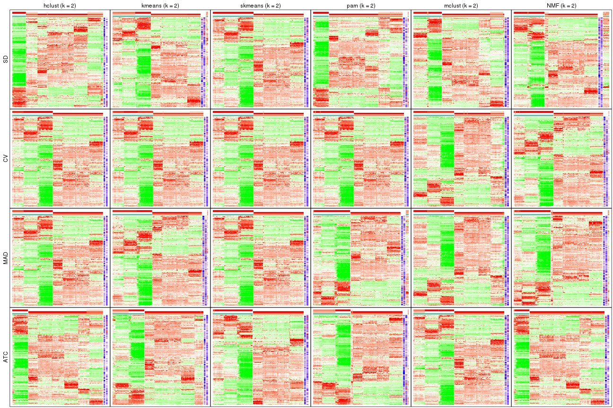
collect_plots(res_list, k = 3, fun = get_signatures, mc.cores = 4)
collect_plots(res_list, k = 4, fun = get_signatures, mc.cores = 4)

collect_plots(res_list, k = 5, fun = get_signatures, mc.cores = 4)
collect_plots(res_list, k = 6, fun = get_signatures, mc.cores = 4)
The statistics used for measuring the stability of consensus partitioning. (How are they defined?)
get_stats(res_list, k = 2)
#> k 1-PAC mean_silhouette concordance area_increased Rand Jaccard
#> SD:NMF 2 0.878 0.901 0.962 0.471 0.533 0.533
#> CV:NMF 2 0.998 0.954 0.974 0.494 0.502 0.502
#> MAD:NMF 2 0.985 0.953 0.981 0.489 0.510 0.510
#> ATC:NMF 2 1.000 0.996 0.998 0.285 0.714 0.714
#> SD:skmeans 2 1.000 0.998 0.999 0.499 0.502 0.502
#> CV:skmeans 2 1.000 0.997 0.999 0.499 0.502 0.502
#> MAD:skmeans 2 1.000 1.000 1.000 0.499 0.502 0.502
#> ATC:skmeans 2 1.000 0.992 0.996 0.496 0.503 0.503
#> SD:mclust 2 0.741 0.898 0.948 0.453 0.566 0.566
#> CV:mclust 2 0.695 0.917 0.945 0.486 0.502 0.502
#> MAD:mclust 2 1.000 0.983 0.984 0.490 0.502 0.502
#> ATC:mclust 2 0.777 0.926 0.960 0.480 0.502 0.502
#> SD:kmeans 2 0.613 0.880 0.902 0.430 0.503 0.503
#> CV:kmeans 2 0.494 0.927 0.922 0.473 0.502 0.502
#> MAD:kmeans 2 1.000 0.979 0.983 0.491 0.503 0.503
#> ATC:kmeans 2 0.710 0.936 0.950 0.414 0.541 0.541
#> SD:pam 2 0.607 0.881 0.934 0.342 0.704 0.704
#> CV:pam 2 1.000 0.992 0.996 0.498 0.502 0.502
#> MAD:pam 2 1.000 0.953 0.982 0.492 0.503 0.503
#> ATC:pam 2 0.626 0.860 0.897 0.413 0.510 0.510
#> SD:hclust 2 0.585 0.906 0.939 0.305 0.744 0.744
#> CV:hclust 2 1.000 0.992 0.995 0.496 0.502 0.502
#> MAD:hclust 2 0.777 0.974 0.984 0.491 0.502 0.502
#> ATC:hclust 2 0.704 0.933 0.964 0.322 0.714 0.714
get_stats(res_list, k = 3)
#> k 1-PAC mean_silhouette concordance area_increased Rand Jaccard
#> SD:NMF 3 0.850 0.878 0.934 0.367 0.678 0.463
#> CV:NMF 3 0.784 0.959 0.944 0.241 0.879 0.758
#> MAD:NMF 3 0.853 0.886 0.931 0.285 0.857 0.723
#> ATC:NMF 3 1.000 0.977 0.991 1.037 0.683 0.563
#> SD:skmeans 3 1.000 0.995 0.991 0.241 0.879 0.758
#> CV:skmeans 3 1.000 0.985 0.982 0.242 0.879 0.758
#> MAD:skmeans 3 1.000 0.991 0.985 0.238 0.879 0.758
#> ATC:skmeans 3 1.000 0.974 0.983 0.167 0.913 0.827
#> SD:mclust 3 0.713 0.823 0.893 0.382 0.627 0.434
#> CV:mclust 3 0.788 0.839 0.928 0.252 0.873 0.753
#> MAD:mclust 3 0.810 0.933 0.962 0.257 0.699 0.492
#> ATC:mclust 3 0.910 0.952 0.962 0.226 0.910 0.821
#> SD:kmeans 3 0.641 0.775 0.791 0.409 0.985 0.971
#> CV:kmeans 3 0.671 0.799 0.825 0.272 1.000 1.000
#> MAD:kmeans 3 0.669 0.624 0.754 0.231 0.913 0.827
#> ATC:kmeans 3 1.000 0.980 0.984 0.420 0.804 0.658
#> SD:pam 3 1.000 0.989 0.996 0.718 0.687 0.562
#> CV:pam 3 1.000 0.979 0.977 0.240 0.879 0.758
#> MAD:pam 3 0.772 0.840 0.829 0.217 0.906 0.813
#> ATC:pam 3 1.000 0.996 0.998 0.420 0.880 0.771
#> SD:hclust 3 1.000 0.996 0.998 0.929 0.668 0.554
#> CV:hclust 3 0.745 0.933 0.875 0.221 0.879 0.758
#> MAD:hclust 3 0.912 0.958 0.945 0.202 0.910 0.821
#> ATC:hclust 3 0.850 0.951 0.974 0.793 0.693 0.569
get_stats(res_list, k = 4)
#> k 1-PAC mean_silhouette concordance area_increased Rand Jaccard
#> SD:NMF 4 0.771 0.813 0.888 0.0960 0.914 0.762
#> CV:NMF 4 0.799 0.840 0.839 0.1416 0.910 0.764
#> MAD:NMF 4 0.788 0.878 0.914 0.1080 0.873 0.685
#> ATC:NMF 4 0.959 0.963 0.959 0.0871 0.949 0.880
#> SD:skmeans 4 0.894 0.900 0.920 0.1436 0.906 0.753
#> CV:skmeans 4 0.802 0.888 0.903 0.1380 0.918 0.784
#> MAD:skmeans 4 0.869 0.960 0.957 0.1371 0.918 0.784
#> ATC:skmeans 4 0.825 0.944 0.927 0.1142 0.948 0.877
#> SD:mclust 4 1.000 0.976 0.991 0.1337 0.890 0.717
#> CV:mclust 4 0.764 0.886 0.930 0.1611 0.795 0.542
#> MAD:mclust 4 1.000 0.969 0.984 0.1459 0.910 0.764
#> ATC:mclust 4 1.000 0.999 0.999 0.0769 0.955 0.891
#> SD:kmeans 4 0.670 0.827 0.815 0.1272 0.789 0.580
#> CV:kmeans 4 0.678 0.763 0.740 0.1326 0.789 0.580
#> MAD:kmeans 4 0.674 0.775 0.742 0.1285 0.783 0.533
#> ATC:kmeans 4 0.771 0.801 0.859 0.1546 0.904 0.767
#> SD:pam 4 1.000 0.991 0.997 0.2075 0.877 0.702
#> CV:pam 4 0.952 0.931 0.971 0.1462 0.855 0.648
#> MAD:pam 4 1.000 0.994 0.997 0.1850 0.858 0.662
#> ATC:pam 4 1.000 0.996 0.998 0.0775 0.950 0.881
#> SD:hclust 4 0.874 0.979 0.930 0.1310 0.879 0.706
#> CV:hclust 4 0.866 0.930 0.938 0.1640 0.918 0.784
#> MAD:hclust 4 0.775 0.893 0.853 0.1479 0.879 0.706
#> ATC:hclust 4 0.957 0.956 0.966 0.0525 0.993 0.983
get_stats(res_list, k = 5)
#> k 1-PAC mean_silhouette concordance area_increased Rand Jaccard
#> SD:NMF 5 0.894 0.841 0.918 0.1022 0.885 0.632
#> CV:NMF 5 0.868 0.890 0.898 0.1035 0.926 0.748
#> MAD:NMF 5 0.920 0.907 0.953 0.1102 0.856 0.576
#> ATC:NMF 5 0.754 0.859 0.861 0.1940 0.873 0.659
#> SD:skmeans 5 0.936 0.968 0.961 0.0690 0.960 0.859
#> CV:skmeans 5 0.880 0.896 0.870 0.0780 0.948 0.827
#> MAD:skmeans 5 0.886 0.901 0.874 0.0827 0.931 0.770
#> ATC:skmeans 5 0.805 0.910 0.893 0.1347 0.879 0.671
#> SD:mclust 5 1.000 0.969 0.987 0.0705 0.951 0.829
#> CV:mclust 5 0.896 0.898 0.955 0.0827 0.940 0.796
#> MAD:mclust 5 1.000 0.944 0.974 0.0750 0.947 0.819
#> ATC:mclust 5 0.812 0.862 0.919 0.2154 0.858 0.612
#> SD:kmeans 5 0.698 0.589 0.677 0.0853 0.816 0.496
#> CV:kmeans 5 0.672 0.830 0.713 0.0799 0.937 0.784
#> MAD:kmeans 5 0.664 0.730 0.715 0.0836 0.867 0.580
#> ATC:kmeans 5 0.763 0.920 0.860 0.0962 0.906 0.702
#> SD:pam 5 1.000 0.997 0.999 0.0630 0.947 0.821
#> CV:pam 5 1.000 0.986 0.994 0.0657 0.930 0.772
#> MAD:pam 5 1.000 0.993 0.997 0.0628 0.952 0.834
#> ATC:pam 5 1.000 0.996 0.998 0.1914 0.879 0.671
#> SD:hclust 5 0.942 0.907 0.938 0.1047 0.988 0.957
#> CV:hclust 5 0.887 0.946 0.922 0.0726 0.948 0.827
#> MAD:hclust 5 0.887 0.981 0.938 0.1135 0.956 0.849
#> ATC:hclust 5 1.000 0.959 0.985 0.0479 0.962 0.904
get_stats(res_list, k = 6)
#> k 1-PAC mean_silhouette concordance area_increased Rand Jaccard
#> SD:NMF 6 0.960 0.972 0.958 0.04702 0.933 0.706
#> CV:NMF 6 1.000 0.989 0.984 0.05999 0.951 0.784
#> MAD:NMF 6 0.941 0.956 0.949 0.05782 0.914 0.651
#> ATC:NMF 6 0.780 0.886 0.870 0.05702 0.937 0.745
#> SD:skmeans 6 1.000 0.985 0.987 0.07709 0.937 0.745
#> CV:skmeans 6 1.000 0.972 0.973 0.07338 0.933 0.730
#> MAD:skmeans 6 1.000 0.986 0.979 0.07229 0.947 0.773
#> ATC:skmeans 6 0.932 0.980 0.938 0.08489 0.937 0.745
#> SD:mclust 6 0.915 0.921 0.957 0.02784 0.983 0.928
#> CV:mclust 6 0.916 0.929 0.932 0.05433 0.932 0.719
#> MAD:mclust 6 0.920 0.893 0.932 0.03566 0.981 0.925
#> ATC:mclust 6 0.795 0.852 0.904 0.00850 0.983 0.928
#> SD:kmeans 6 0.778 0.718 0.698 0.06020 0.837 0.444
#> CV:kmeans 6 0.663 0.903 0.822 0.06218 0.956 0.805
#> MAD:kmeans 6 0.704 0.883 0.768 0.05189 0.969 0.854
#> ATC:kmeans 6 0.723 0.920 0.859 0.05109 0.954 0.795
#> SD:pam 6 1.000 0.995 0.998 0.08312 0.937 0.744
#> CV:pam 6 1.000 0.985 0.994 0.08325 0.937 0.745
#> MAD:pam 6 1.000 0.992 0.997 0.08629 0.934 0.733
#> ATC:pam 6 0.936 0.992 0.966 0.07634 0.937 0.745
#> SD:hclust 6 1.000 0.993 0.995 0.03559 0.962 0.863
#> CV:hclust 6 1.000 0.991 0.996 0.07845 0.937 0.745
#> MAD:hclust 6 0.935 0.987 0.972 0.06712 0.937 0.745
#> ATC:hclust 6 0.998 0.908 0.964 0.00967 0.994 0.984
Following heatmap plots the partition for each combination of methods and the lightness correspond to the silhouette scores for samples in each method. On top the consensus subgroup is inferred from all methods by taking the mean silhouette scores as weight.
collect_stats(res_list, k = 2)
collect_stats(res_list, k = 3)
collect_stats(res_list, k = 4)
collect_stats(res_list, k = 5)

collect_stats(res_list, k = 6)

Collect partitions from all methods:
collect_classes(res_list, k = 2)
collect_classes(res_list, k = 3)
collect_classes(res_list, k = 4)
collect_classes(res_list, k = 5)

collect_classes(res_list, k = 6)
Overlap of top rows from different top-row methods:
top_rows_overlap(res_list, top_n = 1000, method = "euler")
top_rows_overlap(res_list, top_n = 2000, method = "euler")
top_rows_overlap(res_list, top_n = 3000, method = "euler")
top_rows_overlap(res_list, top_n = 4000, method = "euler")
top_rows_overlap(res_list, top_n = 5000, method = "euler")
Also visualize the correspondance of rankings between different top-row methods:
top_rows_overlap(res_list, top_n = 1000, method = "correspondance")
top_rows_overlap(res_list, top_n = 2000, method = "correspondance")
top_rows_overlap(res_list, top_n = 3000, method = "correspondance")
top_rows_overlap(res_list, top_n = 4000, method = "correspondance")
top_rows_overlap(res_list, top_n = 5000, method = "correspondance")
Heatmaps of the top rows:
top_rows_heatmap(res_list, top_n = 1000)
top_rows_heatmap(res_list, top_n = 2000)
top_rows_heatmap(res_list, top_n = 3000)
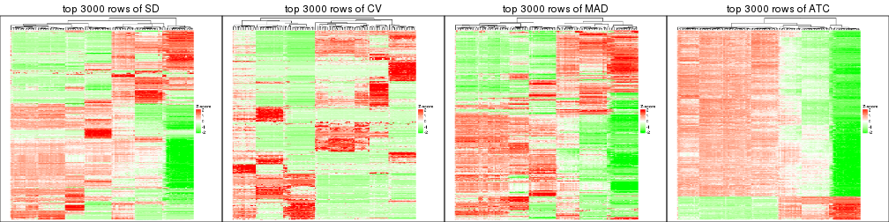
top_rows_heatmap(res_list, top_n = 4000)
top_rows_heatmap(res_list, top_n = 5000)
The object with results only for a single top-value method and a single partition method can be extracted as:
res = res_list["SD", "hclust"]
# you can also extract it by
# res = res_list["SD:hclust"]
A summary of res and all the functions that can be applied to it:
res
#> A 'ConsensusPartition' object with k = 2, 3, 4, 5, 6.
#> On a matrix with 15028 rows and 134 columns.
#> Top rows (1000, 2000, 3000, 4000, 5000) are extracted by 'SD' method.
#> Subgroups are detected by 'hclust' method.
#> Performed in total 1250 partitions by row resampling.
#> Best k for subgroups seems to be 6.
#>
#> Following methods can be applied to this 'ConsensusPartition' object:
#> [1] "cola_report" "collect_classes" "collect_plots"
#> [4] "collect_stats" "colnames" "compare_signatures"
#> [7] "consensus_heatmap" "dimension_reduction" "functional_enrichment"
#> [10] "get_anno_col" "get_anno" "get_classes"
#> [13] "get_consensus" "get_matrix" "get_membership"
#> [16] "get_param" "get_signatures" "get_stats"
#> [19] "is_best_k" "is_stable_k" "membership_heatmap"
#> [22] "ncol" "nrow" "plot_ecdf"
#> [25] "rownames" "select_partition_number" "show"
#> [28] "suggest_best_k" "test_to_known_factors"
collect_plots() function collects all the plots made from res for all k (number of partitions)
into one single page to provide an easy and fast comparison between different k.
collect_plots(res)
The plots are:
k and the heatmap of
predicted classes for each k.k.k.k.All the plots in panels can be made by individual functions and they are plotted later in this section.
select_partition_number() produces several plots showing different
statistics for choosing “optimized” k. There are following statistics:
k;k, the area increased is defined as \(A_k - A_{k-1}\).The detailed explanations of these statistics can be found in the cola vignette.
Generally speaking, lower PAC score, higher mean silhouette score or higher
concordance corresponds to better partition. Rand index and Jaccard index
measure how similar the current partition is compared to partition with k-1.
If they are too similar, we won't accept k is better than k-1.
select_partition_number(res)
The numeric values for all these statistics can be obtained by get_stats().
get_stats(res)
#> k 1-PAC mean_silhouette concordance area_increased Rand Jaccard
#> 2 2 0.585 0.906 0.939 0.3055 0.744 0.744
#> 3 3 1.000 0.996 0.998 0.9285 0.668 0.554
#> 4 4 0.874 0.979 0.930 0.1310 0.879 0.706
#> 5 5 0.942 0.907 0.938 0.1047 0.988 0.957
#> 6 6 1.000 0.993 0.995 0.0356 0.962 0.863
suggest_best_k() suggests the best \(k\) based on these statistics. The rules are as follows:
NA.suggest_best_k(res)
#> [1] 6
#> attr(,"optional")
#> [1] 3
There is also optional best \(k\) = 3 that is worth to check.
Following shows the table of the partitions (You need to click the show/hide
code output link to see it). The membership matrix (columns with name p*)
is inferred by
clue::cl_consensus()
function with the SE method. Basically the value in the membership matrix
represents the probability to belong to a certain group. The finall class
label for an item is determined with the group with highest probability it
belongs to.
In get_classes() function, the entropy is calculated from the membership
matrix and the silhouette score is calculated from the consensus matrix.
cbind(get_classes(res, k = 2), get_membership(res, k = 2))
#> class entropy silhouette p1 p2
#> SRR1550981 2 0.722 0.838 0.200 0.800
#> SRR1550982 2 0.722 0.838 0.200 0.800
#> SRR1550983 2 0.722 0.838 0.200 0.800
#> SRR1550984 2 0.722 0.838 0.200 0.800
#> SRR1550986 1 0.000 1.000 1.000 0.000
#> SRR1550985 2 0.722 0.838 0.200 0.800
#> SRR1550988 2 0.000 0.919 0.000 1.000
#> SRR1550987 2 0.722 0.838 0.200 0.800
#> SRR1550989 2 0.000 0.919 0.000 1.000
#> SRR1550990 2 0.000 0.919 0.000 1.000
#> SRR1550991 2 0.000 0.919 0.000 1.000
#> SRR1550992 1 0.000 1.000 1.000 0.000
#> SRR1550994 2 0.000 0.919 0.000 1.000
#> SRR1550993 2 0.722 0.838 0.200 0.800
#> SRR1550995 2 0.000 0.919 0.000 1.000
#> SRR1550996 2 0.000 0.919 0.000 1.000
#> SRR1550997 1 0.000 1.000 1.000 0.000
#> SRR1550998 2 0.722 0.838 0.200 0.800
#> SRR1551000 2 0.000 0.919 0.000 1.000
#> SRR1550999 2 0.000 0.919 0.000 1.000
#> SRR1551001 2 0.000 0.919 0.000 1.000
#> SRR1551002 1 0.000 1.000 1.000 0.000
#> SRR1551003 2 0.722 0.838 0.200 0.800
#> SRR1551004 2 0.000 0.919 0.000 1.000
#> SRR1551006 2 0.000 0.919 0.000 1.000
#> SRR1551005 2 0.000 0.919 0.000 1.000
#> SRR1551007 2 0.000 0.919 0.000 1.000
#> SRR1551008 1 0.000 1.000 1.000 0.000
#> SRR1551009 2 0.722 0.838 0.200 0.800
#> SRR1551010 2 0.000 0.919 0.000 1.000
#> SRR1551012 2 0.000 0.919 0.000 1.000
#> SRR1551011 2 0.000 0.919 0.000 1.000
#> SRR1551013 1 0.000 1.000 1.000 0.000
#> SRR1551014 2 0.722 0.838 0.200 0.800
#> SRR1551015 2 0.000 0.919 0.000 1.000
#> SRR1551016 2 0.000 0.919 0.000 1.000
#> SRR1551017 2 0.000 0.919 0.000 1.000
#> SRR1551018 2 0.000 0.919 0.000 1.000
#> SRR1551019 2 0.745 0.826 0.212 0.788
#> SRR1551021 2 0.722 0.838 0.200 0.800
#> SRR1551022 2 0.000 0.919 0.000 1.000
#> SRR1551023 2 0.000 0.919 0.000 1.000
#> SRR1551020 1 0.000 1.000 1.000 0.000
#> SRR1551024 2 0.662 0.851 0.172 0.828
#> SRR1551026 1 0.000 1.000 1.000 0.000
#> SRR1551025 2 0.745 0.826 0.212 0.788
#> SRR1551027 2 0.722 0.838 0.200 0.800
#> SRR1551028 2 0.000 0.919 0.000 1.000
#> SRR1551029 2 0.000 0.919 0.000 1.000
#> SRR1551030 2 0.000 0.919 0.000 1.000
#> SRR1551031 2 0.000 0.919 0.000 1.000
#> SRR1551032 2 0.745 0.826 0.212 0.788
#> SRR1551034 2 0.722 0.838 0.200 0.800
#> SRR1551033 1 0.000 1.000 1.000 0.000
#> SRR1551035 2 0.000 0.919 0.000 1.000
#> SRR1551036 2 0.000 0.919 0.000 1.000
#> SRR1551037 2 0.000 0.919 0.000 1.000
#> SRR1551038 2 0.000 0.919 0.000 1.000
#> SRR1551039 2 0.722 0.838 0.200 0.800
#> SRR1551040 1 0.000 1.000 1.000 0.000
#> SRR1551041 2 0.722 0.838 0.200 0.800
#> SRR1551042 2 0.000 0.919 0.000 1.000
#> SRR1551043 2 0.000 0.919 0.000 1.000
#> SRR1551044 2 0.000 0.919 0.000 1.000
#> SRR1551045 2 0.000 0.919 0.000 1.000
#> SRR1551046 2 0.722 0.838 0.200 0.800
#> SRR1551047 1 0.000 1.000 1.000 0.000
#> SRR1551048 2 0.722 0.838 0.200 0.800
#> SRR1551049 2 0.000 0.919 0.000 1.000
#> SRR1551050 2 0.000 0.919 0.000 1.000
#> SRR1551051 2 0.000 0.919 0.000 1.000
#> SRR1551052 2 0.000 0.919 0.000 1.000
#> SRR1551053 2 0.722 0.838 0.200 0.800
#> SRR1551054 1 0.000 1.000 1.000 0.000
#> SRR1551055 2 0.722 0.838 0.200 0.800
#> SRR1551056 2 0.000 0.919 0.000 1.000
#> SRR1551057 2 0.000 0.919 0.000 1.000
#> SRR1551058 2 0.000 0.919 0.000 1.000
#> SRR1551059 2 0.000 0.919 0.000 1.000
#> SRR1551060 2 0.722 0.838 0.200 0.800
#> SRR1551061 1 0.000 1.000 1.000 0.000
#> SRR1551062 2 0.722 0.838 0.200 0.800
#> SRR1551063 2 0.000 0.919 0.000 1.000
#> SRR1551064 2 0.000 0.919 0.000 1.000
#> SRR1551065 2 0.000 0.919 0.000 1.000
#> SRR1551066 2 0.000 0.919 0.000 1.000
#> SRR1551067 2 0.722 0.838 0.200 0.800
#> SRR1551068 1 0.000 1.000 1.000 0.000
#> SRR1551069 2 0.722 0.838 0.200 0.800
#> SRR1551070 2 0.000 0.919 0.000 1.000
#> SRR1551071 2 0.000 0.919 0.000 1.000
#> SRR1551072 2 0.000 0.919 0.000 1.000
#> SRR1551073 2 0.000 0.919 0.000 1.000
#> SRR1551074 2 0.722 0.838 0.200 0.800
#> SRR1551075 1 0.000 1.000 1.000 0.000
#> SRR1551076 2 0.722 0.838 0.200 0.800
#> SRR1551077 2 0.000 0.919 0.000 1.000
#> SRR1551078 2 0.000 0.919 0.000 1.000
#> SRR1551079 2 0.000 0.919 0.000 1.000
#> SRR1551080 2 0.000 0.919 0.000 1.000
#> SRR1551081 2 0.722 0.838 0.200 0.800
#> SRR1551082 1 0.000 1.000 1.000 0.000
#> SRR1551083 2 0.722 0.838 0.200 0.800
#> SRR1551084 2 0.000 0.919 0.000 1.000
#> SRR1551085 2 0.000 0.919 0.000 1.000
#> SRR1551086 2 0.000 0.919 0.000 1.000
#> SRR1551088 1 0.000 1.000 1.000 0.000
#> SRR1551087 2 0.722 0.838 0.200 0.800
#> SRR1551089 2 0.722 0.838 0.200 0.800
#> SRR1551090 2 0.000 0.919 0.000 1.000
#> SRR1551091 2 0.000 0.919 0.000 1.000
#> SRR1551092 2 0.000 0.919 0.000 1.000
#> SRR1551093 2 0.000 0.919 0.000 1.000
#> SRR1551094 2 0.722 0.838 0.200 0.800
#> SRR1551095 1 0.000 1.000 1.000 0.000
#> SRR1551096 2 0.722 0.838 0.200 0.800
#> SRR1551097 2 0.000 0.919 0.000 1.000
#> SRR1551098 2 0.000 0.919 0.000 1.000
#> SRR1551099 2 0.000 0.919 0.000 1.000
#> SRR1551101 1 0.000 1.000 1.000 0.000
#> SRR1551100 2 0.722 0.838 0.200 0.800
#> SRR1551102 2 0.722 0.838 0.200 0.800
#> SRR1551103 2 0.000 0.919 0.000 1.000
#> SRR1551104 2 0.000 0.919 0.000 1.000
#> SRR1551105 2 0.000 0.919 0.000 1.000
#> SRR1551106 2 0.000 0.919 0.000 1.000
#> SRR1551107 2 0.722 0.838 0.200 0.800
#> SRR1551108 1 0.000 1.000 1.000 0.000
#> SRR1551109 2 0.722 0.838 0.200 0.800
#> SRR1551110 2 0.000 0.919 0.000 1.000
#> SRR1551111 2 0.000 0.919 0.000 1.000
#> SRR1551112 2 0.000 0.919 0.000 1.000
#> SRR1551113 2 0.000 0.919 0.000 1.000
#> SRR1551114 2 0.722 0.838 0.200 0.800
cbind(get_classes(res, k = 3), get_membership(res, k = 3))
#> class entropy silhouette p1 p2 p3
#> SRR1550981 1 0.0000 0.999 1.000 0.000 0.000
#> SRR1550982 1 0.0000 0.999 1.000 0.000 0.000
#> SRR1550983 1 0.0000 0.999 1.000 0.000 0.000
#> SRR1550984 1 0.0000 0.999 1.000 0.000 0.000
#> SRR1550986 3 0.0000 1.000 0.000 0.000 1.000
#> SRR1550985 1 0.0000 0.999 1.000 0.000 0.000
#> SRR1550988 2 0.0000 0.997 0.000 1.000 0.000
#> SRR1550987 1 0.0000 0.999 1.000 0.000 0.000
#> SRR1550989 2 0.0000 0.997 0.000 1.000 0.000
#> SRR1550990 2 0.0000 0.997 0.000 1.000 0.000
#> SRR1550991 2 0.0000 0.997 0.000 1.000 0.000
#> SRR1550992 3 0.0000 1.000 0.000 0.000 1.000
#> SRR1550994 2 0.0000 0.997 0.000 1.000 0.000
#> SRR1550993 1 0.0000 0.999 1.000 0.000 0.000
#> SRR1550995 2 0.0000 0.997 0.000 1.000 0.000
#> SRR1550996 2 0.0000 0.997 0.000 1.000 0.000
#> SRR1550997 3 0.0000 1.000 0.000 0.000 1.000
#> SRR1550998 1 0.0000 0.999 1.000 0.000 0.000
#> SRR1551000 2 0.0000 0.997 0.000 1.000 0.000
#> SRR1550999 2 0.0000 0.997 0.000 1.000 0.000
#> SRR1551001 2 0.0000 0.997 0.000 1.000 0.000
#> SRR1551002 3 0.0000 1.000 0.000 0.000 1.000
#> SRR1551003 1 0.0000 0.999 1.000 0.000 0.000
#> SRR1551004 2 0.0000 0.997 0.000 1.000 0.000
#> SRR1551006 2 0.0000 0.997 0.000 1.000 0.000
#> SRR1551005 2 0.0000 0.997 0.000 1.000 0.000
#> SRR1551007 2 0.0000 0.997 0.000 1.000 0.000
#> SRR1551008 3 0.0000 1.000 0.000 0.000 1.000
#> SRR1551009 1 0.0000 0.999 1.000 0.000 0.000
#> SRR1551010 2 0.0000 0.997 0.000 1.000 0.000
#> SRR1551012 2 0.0000 0.997 0.000 1.000 0.000
#> SRR1551011 2 0.0000 0.997 0.000 1.000 0.000
#> SRR1551013 3 0.0000 1.000 0.000 0.000 1.000
#> SRR1551014 1 0.0000 0.999 1.000 0.000 0.000
#> SRR1551015 2 0.0000 0.997 0.000 1.000 0.000
#> SRR1551016 2 0.0000 0.997 0.000 1.000 0.000
#> SRR1551017 2 0.0000 0.997 0.000 1.000 0.000
#> SRR1551018 2 0.0000 0.997 0.000 1.000 0.000
#> SRR1551019 1 0.0592 0.988 0.988 0.000 0.012
#> SRR1551021 1 0.0000 0.999 1.000 0.000 0.000
#> SRR1551022 2 0.0000 0.997 0.000 1.000 0.000
#> SRR1551023 2 0.0000 0.997 0.000 1.000 0.000
#> SRR1551020 3 0.0000 1.000 0.000 0.000 1.000
#> SRR1551024 2 0.4178 0.784 0.172 0.828 0.000
#> SRR1551026 3 0.0000 1.000 0.000 0.000 1.000
#> SRR1551025 1 0.0592 0.988 0.988 0.000 0.012
#> SRR1551027 1 0.0000 0.999 1.000 0.000 0.000
#> SRR1551028 2 0.0000 0.997 0.000 1.000 0.000
#> SRR1551029 2 0.0000 0.997 0.000 1.000 0.000
#> SRR1551030 2 0.0000 0.997 0.000 1.000 0.000
#> SRR1551031 2 0.0000 0.997 0.000 1.000 0.000
#> SRR1551032 1 0.0592 0.988 0.988 0.000 0.012
#> SRR1551034 1 0.0000 0.999 1.000 0.000 0.000
#> SRR1551033 3 0.0000 1.000 0.000 0.000 1.000
#> SRR1551035 2 0.0000 0.997 0.000 1.000 0.000
#> SRR1551036 2 0.0000 0.997 0.000 1.000 0.000
#> SRR1551037 2 0.0000 0.997 0.000 1.000 0.000
#> SRR1551038 2 0.0000 0.997 0.000 1.000 0.000
#> SRR1551039 1 0.0000 0.999 1.000 0.000 0.000
#> SRR1551040 3 0.0000 1.000 0.000 0.000 1.000
#> SRR1551041 1 0.0000 0.999 1.000 0.000 0.000
#> SRR1551042 2 0.0000 0.997 0.000 1.000 0.000
#> SRR1551043 2 0.0000 0.997 0.000 1.000 0.000
#> SRR1551044 2 0.0000 0.997 0.000 1.000 0.000
#> SRR1551045 2 0.0000 0.997 0.000 1.000 0.000
#> SRR1551046 1 0.0000 0.999 1.000 0.000 0.000
#> SRR1551047 3 0.0000 1.000 0.000 0.000 1.000
#> SRR1551048 1 0.0000 0.999 1.000 0.000 0.000
#> SRR1551049 2 0.0000 0.997 0.000 1.000 0.000
#> SRR1551050 2 0.0000 0.997 0.000 1.000 0.000
#> SRR1551051 2 0.0000 0.997 0.000 1.000 0.000
#> SRR1551052 2 0.0000 0.997 0.000 1.000 0.000
#> SRR1551053 1 0.0000 0.999 1.000 0.000 0.000
#> SRR1551054 3 0.0000 1.000 0.000 0.000 1.000
#> SRR1551055 1 0.0000 0.999 1.000 0.000 0.000
#> SRR1551056 2 0.0000 0.997 0.000 1.000 0.000
#> SRR1551057 2 0.0000 0.997 0.000 1.000 0.000
#> SRR1551058 2 0.0000 0.997 0.000 1.000 0.000
#> SRR1551059 2 0.0000 0.997 0.000 1.000 0.000
#> SRR1551060 1 0.0000 0.999 1.000 0.000 0.000
#> SRR1551061 3 0.0000 1.000 0.000 0.000 1.000
#> SRR1551062 1 0.0000 0.999 1.000 0.000 0.000
#> SRR1551063 2 0.0000 0.997 0.000 1.000 0.000
#> SRR1551064 2 0.0000 0.997 0.000 1.000 0.000
#> SRR1551065 2 0.0000 0.997 0.000 1.000 0.000
#> SRR1551066 2 0.0000 0.997 0.000 1.000 0.000
#> SRR1551067 1 0.0000 0.999 1.000 0.000 0.000
#> SRR1551068 3 0.0000 1.000 0.000 0.000 1.000
#> SRR1551069 1 0.0000 0.999 1.000 0.000 0.000
#> SRR1551070 2 0.0000 0.997 0.000 1.000 0.000
#> SRR1551071 2 0.0000 0.997 0.000 1.000 0.000
#> SRR1551072 2 0.0000 0.997 0.000 1.000 0.000
#> SRR1551073 2 0.0000 0.997 0.000 1.000 0.000
#> SRR1551074 1 0.0000 0.999 1.000 0.000 0.000
#> SRR1551075 3 0.0000 1.000 0.000 0.000 1.000
#> SRR1551076 1 0.0000 0.999 1.000 0.000 0.000
#> SRR1551077 2 0.0000 0.997 0.000 1.000 0.000
#> SRR1551078 2 0.0000 0.997 0.000 1.000 0.000
#> SRR1551079 2 0.0000 0.997 0.000 1.000 0.000
#> SRR1551080 2 0.0000 0.997 0.000 1.000 0.000
#> SRR1551081 1 0.0000 0.999 1.000 0.000 0.000
#> SRR1551082 3 0.0000 1.000 0.000 0.000 1.000
#> SRR1551083 1 0.0000 0.999 1.000 0.000 0.000
#> SRR1551084 2 0.0000 0.997 0.000 1.000 0.000
#> SRR1551085 2 0.0000 0.997 0.000 1.000 0.000
#> SRR1551086 2 0.0000 0.997 0.000 1.000 0.000
#> SRR1551088 3 0.0000 1.000 0.000 0.000 1.000
#> SRR1551087 1 0.0000 0.999 1.000 0.000 0.000
#> SRR1551089 1 0.0000 0.999 1.000 0.000 0.000
#> SRR1551090 2 0.0000 0.997 0.000 1.000 0.000
#> SRR1551091 2 0.0000 0.997 0.000 1.000 0.000
#> SRR1551092 2 0.0000 0.997 0.000 1.000 0.000
#> SRR1551093 2 0.0000 0.997 0.000 1.000 0.000
#> SRR1551094 1 0.0000 0.999 1.000 0.000 0.000
#> SRR1551095 3 0.0000 1.000 0.000 0.000 1.000
#> SRR1551096 1 0.0000 0.999 1.000 0.000 0.000
#> SRR1551097 2 0.0000 0.997 0.000 1.000 0.000
#> SRR1551098 2 0.0000 0.997 0.000 1.000 0.000
#> SRR1551099 2 0.0000 0.997 0.000 1.000 0.000
#> SRR1551101 3 0.0000 1.000 0.000 0.000 1.000
#> SRR1551100 1 0.0000 0.999 1.000 0.000 0.000
#> SRR1551102 1 0.0000 0.999 1.000 0.000 0.000
#> SRR1551103 2 0.0000 0.997 0.000 1.000 0.000
#> SRR1551104 2 0.0000 0.997 0.000 1.000 0.000
#> SRR1551105 2 0.0000 0.997 0.000 1.000 0.000
#> SRR1551106 2 0.0000 0.997 0.000 1.000 0.000
#> SRR1551107 1 0.0000 0.999 1.000 0.000 0.000
#> SRR1551108 3 0.0000 1.000 0.000 0.000 1.000
#> SRR1551109 1 0.0000 0.999 1.000 0.000 0.000
#> SRR1551110 2 0.0000 0.997 0.000 1.000 0.000
#> SRR1551111 2 0.0000 0.997 0.000 1.000 0.000
#> SRR1551112 2 0.0000 0.997 0.000 1.000 0.000
#> SRR1551113 2 0.0000 0.997 0.000 1.000 0.000
#> SRR1551114 1 0.0000 0.999 1.000 0.000 0.000
cbind(get_classes(res, k = 4), get_membership(res, k = 4))
#> class entropy silhouette p1 p2 p3 p4
#> SRR1550981 1 0.000 0.974 1.000 0.000 0 0.0
#> SRR1550982 1 0.000 0.974 1.000 0.000 0 0.0
#> SRR1550983 1 0.000 0.974 1.000 0.000 0 0.0
#> SRR1550984 1 0.000 0.974 1.000 0.000 0 0.0
#> SRR1550986 3 0.000 1.000 0.000 0.000 1 0.0
#> SRR1550985 1 0.000 0.974 1.000 0.000 0 0.0
#> SRR1550988 4 0.000 1.000 0.000 0.000 0 1.0
#> SRR1550987 1 0.000 0.974 1.000 0.000 0 0.0
#> SRR1550989 2 0.485 0.994 0.000 0.600 0 0.4
#> SRR1550990 2 0.485 0.994 0.000 0.600 0 0.4
#> SRR1550991 2 0.485 0.994 0.000 0.600 0 0.4
#> SRR1550992 3 0.000 1.000 0.000 0.000 1 0.0
#> SRR1550994 4 0.000 1.000 0.000 0.000 0 1.0
#> SRR1550993 1 0.000 0.974 1.000 0.000 0 0.0
#> SRR1550995 2 0.485 0.994 0.000 0.600 0 0.4
#> SRR1550996 2 0.485 0.994 0.000 0.600 0 0.4
#> SRR1550997 3 0.000 1.000 0.000 0.000 1 0.0
#> SRR1550998 1 0.000 0.974 1.000 0.000 0 0.0
#> SRR1551000 2 0.485 0.994 0.000 0.600 0 0.4
#> SRR1550999 4 0.000 1.000 0.000 0.000 0 1.0
#> SRR1551001 2 0.485 0.994 0.000 0.600 0 0.4
#> SRR1551002 3 0.000 1.000 0.000 0.000 1 0.0
#> SRR1551003 1 0.000 0.974 1.000 0.000 0 0.0
#> SRR1551004 4 0.000 1.000 0.000 0.000 0 1.0
#> SRR1551006 2 0.485 0.994 0.000 0.600 0 0.4
#> SRR1551005 2 0.485 0.994 0.000 0.600 0 0.4
#> SRR1551007 2 0.485 0.994 0.000 0.600 0 0.4
#> SRR1551008 3 0.000 1.000 0.000 0.000 1 0.0
#> SRR1551009 1 0.000 0.974 1.000 0.000 0 0.0
#> SRR1551010 4 0.000 1.000 0.000 0.000 0 1.0
#> SRR1551012 2 0.485 0.994 0.000 0.600 0 0.4
#> SRR1551011 2 0.485 0.994 0.000 0.600 0 0.4
#> SRR1551013 3 0.000 1.000 0.000 0.000 1 0.0
#> SRR1551014 1 0.000 0.974 1.000 0.000 0 0.0
#> SRR1551015 4 0.000 1.000 0.000 0.000 0 1.0
#> SRR1551016 2 0.485 0.994 0.000 0.600 0 0.4
#> SRR1551017 2 0.485 0.994 0.000 0.600 0 0.4
#> SRR1551018 2 0.485 0.994 0.000 0.600 0 0.4
#> SRR1551019 1 0.485 0.602 0.600 0.400 0 0.0
#> SRR1551021 1 0.000 0.974 1.000 0.000 0 0.0
#> SRR1551022 4 0.000 1.000 0.000 0.000 0 1.0
#> SRR1551023 2 0.485 0.994 0.000 0.600 0 0.4
#> SRR1551020 3 0.000 1.000 0.000 0.000 1 0.0
#> SRR1551024 2 0.745 0.612 0.172 0.428 0 0.4
#> SRR1551026 3 0.000 1.000 0.000 0.000 1 0.0
#> SRR1551025 1 0.485 0.602 0.600 0.400 0 0.0
#> SRR1551027 1 0.000 0.974 1.000 0.000 0 0.0
#> SRR1551028 4 0.000 1.000 0.000 0.000 0 1.0
#> SRR1551029 2 0.485 0.994 0.000 0.600 0 0.4
#> SRR1551030 2 0.485 0.994 0.000 0.600 0 0.4
#> SRR1551031 2 0.485 0.994 0.000 0.600 0 0.4
#> SRR1551032 1 0.485 0.602 0.600 0.400 0 0.0
#> SRR1551034 1 0.000 0.974 1.000 0.000 0 0.0
#> SRR1551033 3 0.000 1.000 0.000 0.000 1 0.0
#> SRR1551035 4 0.000 1.000 0.000 0.000 0 1.0
#> SRR1551036 2 0.485 0.994 0.000 0.600 0 0.4
#> SRR1551037 2 0.485 0.994 0.000 0.600 0 0.4
#> SRR1551038 2 0.485 0.994 0.000 0.600 0 0.4
#> SRR1551039 1 0.000 0.974 1.000 0.000 0 0.0
#> SRR1551040 3 0.000 1.000 0.000 0.000 1 0.0
#> SRR1551041 1 0.000 0.974 1.000 0.000 0 0.0
#> SRR1551042 4 0.000 1.000 0.000 0.000 0 1.0
#> SRR1551043 2 0.485 0.994 0.000 0.600 0 0.4
#> SRR1551044 2 0.485 0.994 0.000 0.600 0 0.4
#> SRR1551045 2 0.485 0.994 0.000 0.600 0 0.4
#> SRR1551046 1 0.000 0.974 1.000 0.000 0 0.0
#> SRR1551047 3 0.000 1.000 0.000 0.000 1 0.0
#> SRR1551048 1 0.000 0.974 1.000 0.000 0 0.0
#> SRR1551049 4 0.000 1.000 0.000 0.000 0 1.0
#> SRR1551050 2 0.485 0.994 0.000 0.600 0 0.4
#> SRR1551051 2 0.485 0.994 0.000 0.600 0 0.4
#> SRR1551052 2 0.485 0.994 0.000 0.600 0 0.4
#> SRR1551053 1 0.000 0.974 1.000 0.000 0 0.0
#> SRR1551054 3 0.000 1.000 0.000 0.000 1 0.0
#> SRR1551055 1 0.000 0.974 1.000 0.000 0 0.0
#> SRR1551056 4 0.000 1.000 0.000 0.000 0 1.0
#> SRR1551057 2 0.485 0.994 0.000 0.600 0 0.4
#> SRR1551058 2 0.485 0.994 0.000 0.600 0 0.4
#> SRR1551059 2 0.485 0.994 0.000 0.600 0 0.4
#> SRR1551060 1 0.000 0.974 1.000 0.000 0 0.0
#> SRR1551061 3 0.000 1.000 0.000 0.000 1 0.0
#> SRR1551062 1 0.000 0.974 1.000 0.000 0 0.0
#> SRR1551063 4 0.000 1.000 0.000 0.000 0 1.0
#> SRR1551064 2 0.485 0.994 0.000 0.600 0 0.4
#> SRR1551065 2 0.485 0.994 0.000 0.600 0 0.4
#> SRR1551066 2 0.485 0.994 0.000 0.600 0 0.4
#> SRR1551067 1 0.000 0.974 1.000 0.000 0 0.0
#> SRR1551068 3 0.000 1.000 0.000 0.000 1 0.0
#> SRR1551069 1 0.000 0.974 1.000 0.000 0 0.0
#> SRR1551070 4 0.000 1.000 0.000 0.000 0 1.0
#> SRR1551071 2 0.485 0.994 0.000 0.600 0 0.4
#> SRR1551072 2 0.485 0.994 0.000 0.600 0 0.4
#> SRR1551073 2 0.485 0.994 0.000 0.600 0 0.4
#> SRR1551074 1 0.000 0.974 1.000 0.000 0 0.0
#> SRR1551075 3 0.000 1.000 0.000 0.000 1 0.0
#> SRR1551076 1 0.000 0.974 1.000 0.000 0 0.0
#> SRR1551077 4 0.000 1.000 0.000 0.000 0 1.0
#> SRR1551078 2 0.485 0.994 0.000 0.600 0 0.4
#> SRR1551079 2 0.485 0.994 0.000 0.600 0 0.4
#> SRR1551080 2 0.485 0.994 0.000 0.600 0 0.4
#> SRR1551081 1 0.000 0.974 1.000 0.000 0 0.0
#> SRR1551082 3 0.000 1.000 0.000 0.000 1 0.0
#> SRR1551083 1 0.000 0.974 1.000 0.000 0 0.0
#> SRR1551084 4 0.000 1.000 0.000 0.000 0 1.0
#> SRR1551085 2 0.485 0.994 0.000 0.600 0 0.4
#> SRR1551086 2 0.485 0.994 0.000 0.600 0 0.4
#> SRR1551088 3 0.000 1.000 0.000 0.000 1 0.0
#> SRR1551087 1 0.000 0.974 1.000 0.000 0 0.0
#> SRR1551089 1 0.000 0.974 1.000 0.000 0 0.0
#> SRR1551090 4 0.000 1.000 0.000 0.000 0 1.0
#> SRR1551091 2 0.485 0.994 0.000 0.600 0 0.4
#> SRR1551092 2 0.485 0.994 0.000 0.600 0 0.4
#> SRR1551093 2 0.485 0.994 0.000 0.600 0 0.4
#> SRR1551094 1 0.000 0.974 1.000 0.000 0 0.0
#> SRR1551095 3 0.000 1.000 0.000 0.000 1 0.0
#> SRR1551096 1 0.000 0.974 1.000 0.000 0 0.0
#> SRR1551097 4 0.000 1.000 0.000 0.000 0 1.0
#> SRR1551098 2 0.485 0.994 0.000 0.600 0 0.4
#> SRR1551099 2 0.485 0.994 0.000 0.600 0 0.4
#> SRR1551101 3 0.000 1.000 0.000 0.000 1 0.0
#> SRR1551100 1 0.000 0.974 1.000 0.000 0 0.0
#> SRR1551102 1 0.000 0.974 1.000 0.000 0 0.0
#> SRR1551103 4 0.000 1.000 0.000 0.000 0 1.0
#> SRR1551104 2 0.485 0.994 0.000 0.600 0 0.4
#> SRR1551105 2 0.485 0.994 0.000 0.600 0 0.4
#> SRR1551106 2 0.485 0.994 0.000 0.600 0 0.4
#> SRR1551107 1 0.000 0.974 1.000 0.000 0 0.0
#> SRR1551108 3 0.000 1.000 0.000 0.000 1 0.0
#> SRR1551109 1 0.000 0.974 1.000 0.000 0 0.0
#> SRR1551110 4 0.000 1.000 0.000 0.000 0 1.0
#> SRR1551111 2 0.485 0.994 0.000 0.600 0 0.4
#> SRR1551112 2 0.485 0.994 0.000 0.600 0 0.4
#> SRR1551113 2 0.485 0.994 0.000 0.600 0 0.4
#> SRR1551114 1 0.000 0.974 1.000 0.000 0 0.0
cbind(get_classes(res, k = 5), get_membership(res, k = 5))
#> class entropy silhouette p1 p2 p3 p4 p5
#> SRR1550981 1 0.423 0.618 0.58 0.000 0 0.420 0.00
#> SRR1550982 1 0.423 0.618 0.58 0.000 0 0.420 0.00
#> SRR1550983 1 0.423 0.618 0.58 0.000 0 0.420 0.00
#> SRR1550984 1 0.423 0.618 0.58 0.000 0 0.420 0.00
#> SRR1550986 3 0.000 1.000 0.00 0.000 1 0.000 0.00
#> SRR1550985 1 0.423 0.618 0.58 0.000 0 0.420 0.00
#> SRR1550988 4 0.423 1.000 0.00 0.000 0 0.580 0.42
#> SRR1550987 1 0.000 0.722 1.00 0.000 0 0.000 0.00
#> SRR1550989 2 0.000 0.996 0.00 1.000 0 0.000 0.00
#> SRR1550990 2 0.000 0.996 0.00 1.000 0 0.000 0.00
#> SRR1550991 2 0.000 0.996 0.00 1.000 0 0.000 0.00
#> SRR1550992 3 0.000 1.000 0.00 0.000 1 0.000 0.00
#> SRR1550994 4 0.423 1.000 0.00 0.000 0 0.580 0.42
#> SRR1550993 1 0.000 0.722 1.00 0.000 0 0.000 0.00
#> SRR1550995 2 0.000 0.996 0.00 1.000 0 0.000 0.00
#> SRR1550996 2 0.000 0.996 0.00 1.000 0 0.000 0.00
#> SRR1550997 3 0.000 1.000 0.00 0.000 1 0.000 0.00
#> SRR1550998 1 0.000 0.722 1.00 0.000 0 0.000 0.00
#> SRR1551000 2 0.000 0.996 0.00 1.000 0 0.000 0.00
#> SRR1550999 4 0.423 1.000 0.00 0.000 0 0.580 0.42
#> SRR1551001 2 0.000 0.996 0.00 1.000 0 0.000 0.00
#> SRR1551002 3 0.000 1.000 0.00 0.000 1 0.000 0.00
#> SRR1551003 1 0.000 0.722 1.00 0.000 0 0.000 0.00
#> SRR1551004 4 0.423 1.000 0.00 0.000 0 0.580 0.42
#> SRR1551006 2 0.000 0.996 0.00 1.000 0 0.000 0.00
#> SRR1551005 2 0.000 0.996 0.00 1.000 0 0.000 0.00
#> SRR1551007 2 0.000 0.996 0.00 1.000 0 0.000 0.00
#> SRR1551008 3 0.000 1.000 0.00 0.000 1 0.000 0.00
#> SRR1551009 1 0.000 0.722 1.00 0.000 0 0.000 0.00
#> SRR1551010 4 0.423 1.000 0.00 0.000 0 0.580 0.42
#> SRR1551012 2 0.000 0.996 0.00 1.000 0 0.000 0.00
#> SRR1551011 2 0.000 0.996 0.00 1.000 0 0.000 0.00
#> SRR1551013 3 0.000 1.000 0.00 0.000 1 0.000 0.00
#> SRR1551014 1 0.000 0.722 1.00 0.000 0 0.000 0.00
#> SRR1551015 4 0.423 1.000 0.00 0.000 0 0.580 0.42
#> SRR1551016 2 0.000 0.996 0.00 1.000 0 0.000 0.00
#> SRR1551017 2 0.000 0.996 0.00 1.000 0 0.000 0.00
#> SRR1551018 2 0.000 0.996 0.00 1.000 0 0.000 0.00
#> SRR1551019 5 0.579 1.000 0.12 0.000 0 0.300 0.58
#> SRR1551021 1 0.000 0.722 1.00 0.000 0 0.000 0.00
#> SRR1551022 4 0.423 1.000 0.00 0.000 0 0.580 0.42
#> SRR1551023 2 0.000 0.996 0.00 1.000 0 0.000 0.00
#> SRR1551020 3 0.000 1.000 0.00 0.000 1 0.000 0.00
#> SRR1551024 2 0.285 0.771 0.00 0.828 0 0.172 0.00
#> SRR1551026 3 0.000 1.000 0.00 0.000 1 0.000 0.00
#> SRR1551025 5 0.579 1.000 0.12 0.000 0 0.300 0.58
#> SRR1551027 1 0.000 0.722 1.00 0.000 0 0.000 0.00
#> SRR1551028 4 0.423 1.000 0.00 0.000 0 0.580 0.42
#> SRR1551029 2 0.000 0.996 0.00 1.000 0 0.000 0.00
#> SRR1551030 2 0.000 0.996 0.00 1.000 0 0.000 0.00
#> SRR1551031 2 0.000 0.996 0.00 1.000 0 0.000 0.00
#> SRR1551032 5 0.579 1.000 0.12 0.000 0 0.300 0.58
#> SRR1551034 1 0.000 0.722 1.00 0.000 0 0.000 0.00
#> SRR1551033 3 0.000 1.000 0.00 0.000 1 0.000 0.00
#> SRR1551035 4 0.423 1.000 0.00 0.000 0 0.580 0.42
#> SRR1551036 2 0.000 0.996 0.00 1.000 0 0.000 0.00
#> SRR1551037 2 0.000 0.996 0.00 1.000 0 0.000 0.00
#> SRR1551038 2 0.000 0.996 0.00 1.000 0 0.000 0.00
#> SRR1551039 1 0.423 0.618 0.58 0.000 0 0.420 0.00
#> SRR1551040 3 0.000 1.000 0.00 0.000 1 0.000 0.00
#> SRR1551041 1 0.000 0.722 1.00 0.000 0 0.000 0.00
#> SRR1551042 4 0.423 1.000 0.00 0.000 0 0.580 0.42
#> SRR1551043 2 0.000 0.996 0.00 1.000 0 0.000 0.00
#> SRR1551044 2 0.000 0.996 0.00 1.000 0 0.000 0.00
#> SRR1551045 2 0.000 0.996 0.00 1.000 0 0.000 0.00
#> SRR1551046 1 0.423 0.618 0.58 0.000 0 0.420 0.00
#> SRR1551047 3 0.000 1.000 0.00 0.000 1 0.000 0.00
#> SRR1551048 1 0.000 0.722 1.00 0.000 0 0.000 0.00
#> SRR1551049 4 0.423 1.000 0.00 0.000 0 0.580 0.42
#> SRR1551050 2 0.000 0.996 0.00 1.000 0 0.000 0.00
#> SRR1551051 2 0.000 0.996 0.00 1.000 0 0.000 0.00
#> SRR1551052 2 0.000 0.996 0.00 1.000 0 0.000 0.00
#> SRR1551053 1 0.423 0.618 0.58 0.000 0 0.420 0.00
#> SRR1551054 3 0.000 1.000 0.00 0.000 1 0.000 0.00
#> SRR1551055 1 0.000 0.722 1.00 0.000 0 0.000 0.00
#> SRR1551056 4 0.423 1.000 0.00 0.000 0 0.580 0.42
#> SRR1551057 2 0.000 0.996 0.00 1.000 0 0.000 0.00
#> SRR1551058 2 0.000 0.996 0.00 1.000 0 0.000 0.00
#> SRR1551059 2 0.000 0.996 0.00 1.000 0 0.000 0.00
#> SRR1551060 1 0.423 0.618 0.58 0.000 0 0.420 0.00
#> SRR1551061 3 0.000 1.000 0.00 0.000 1 0.000 0.00
#> SRR1551062 1 0.000 0.722 1.00 0.000 0 0.000 0.00
#> SRR1551063 4 0.423 1.000 0.00 0.000 0 0.580 0.42
#> SRR1551064 2 0.000 0.996 0.00 1.000 0 0.000 0.00
#> SRR1551065 2 0.000 0.996 0.00 1.000 0 0.000 0.00
#> SRR1551066 2 0.000 0.996 0.00 1.000 0 0.000 0.00
#> SRR1551067 1 0.423 0.618 0.58 0.000 0 0.420 0.00
#> SRR1551068 3 0.000 1.000 0.00 0.000 1 0.000 0.00
#> SRR1551069 1 0.000 0.722 1.00 0.000 0 0.000 0.00
#> SRR1551070 4 0.423 1.000 0.00 0.000 0 0.580 0.42
#> SRR1551071 2 0.000 0.996 0.00 1.000 0 0.000 0.00
#> SRR1551072 2 0.000 0.996 0.00 1.000 0 0.000 0.00
#> SRR1551073 2 0.000 0.996 0.00 1.000 0 0.000 0.00
#> SRR1551074 1 0.423 0.618 0.58 0.000 0 0.420 0.00
#> SRR1551075 3 0.000 1.000 0.00 0.000 1 0.000 0.00
#> SRR1551076 1 0.000 0.722 1.00 0.000 0 0.000 0.00
#> SRR1551077 4 0.423 1.000 0.00 0.000 0 0.580 0.42
#> SRR1551078 2 0.000 0.996 0.00 1.000 0 0.000 0.00
#> SRR1551079 2 0.000 0.996 0.00 1.000 0 0.000 0.00
#> SRR1551080 2 0.000 0.996 0.00 1.000 0 0.000 0.00
#> SRR1551081 1 0.423 0.618 0.58 0.000 0 0.420 0.00
#> SRR1551082 3 0.000 1.000 0.00 0.000 1 0.000 0.00
#> SRR1551083 1 0.000 0.722 1.00 0.000 0 0.000 0.00
#> SRR1551084 4 0.423 1.000 0.00 0.000 0 0.580 0.42
#> SRR1551085 2 0.000 0.996 0.00 1.000 0 0.000 0.00
#> SRR1551086 2 0.000 0.996 0.00 1.000 0 0.000 0.00
#> SRR1551088 3 0.000 1.000 0.00 0.000 1 0.000 0.00
#> SRR1551087 1 0.423 0.618 0.58 0.000 0 0.420 0.00
#> SRR1551089 1 0.000 0.722 1.00 0.000 0 0.000 0.00
#> SRR1551090 4 0.423 1.000 0.00 0.000 0 0.580 0.42
#> SRR1551091 2 0.000 0.996 0.00 1.000 0 0.000 0.00
#> SRR1551092 2 0.000 0.996 0.00 1.000 0 0.000 0.00
#> SRR1551093 2 0.000 0.996 0.00 1.000 0 0.000 0.00
#> SRR1551094 1 0.423 0.618 0.58 0.000 0 0.420 0.00
#> SRR1551095 3 0.000 1.000 0.00 0.000 1 0.000 0.00
#> SRR1551096 1 0.000 0.722 1.00 0.000 0 0.000 0.00
#> SRR1551097 4 0.423 1.000 0.00 0.000 0 0.580 0.42
#> SRR1551098 2 0.000 0.996 0.00 1.000 0 0.000 0.00
#> SRR1551099 2 0.000 0.996 0.00 1.000 0 0.000 0.00
#> SRR1551101 3 0.000 1.000 0.00 0.000 1 0.000 0.00
#> SRR1551100 1 0.423 0.618 0.58 0.000 0 0.420 0.00
#> SRR1551102 1 0.000 0.722 1.00 0.000 0 0.000 0.00
#> SRR1551103 4 0.423 1.000 0.00 0.000 0 0.580 0.42
#> SRR1551104 2 0.000 0.996 0.00 1.000 0 0.000 0.00
#> SRR1551105 2 0.000 0.996 0.00 1.000 0 0.000 0.00
#> SRR1551106 2 0.000 0.996 0.00 1.000 0 0.000 0.00
#> SRR1551107 1 0.423 0.618 0.58 0.000 0 0.420 0.00
#> SRR1551108 3 0.000 1.000 0.00 0.000 1 0.000 0.00
#> SRR1551109 1 0.000 0.722 1.00 0.000 0 0.000 0.00
#> SRR1551110 4 0.423 1.000 0.00 0.000 0 0.580 0.42
#> SRR1551111 2 0.000 0.996 0.00 1.000 0 0.000 0.00
#> SRR1551112 2 0.000 0.996 0.00 1.000 0 0.000 0.00
#> SRR1551113 2 0.000 0.996 0.00 1.000 0 0.000 0.00
#> SRR1551114 1 0.423 0.618 0.58 0.000 0 0.420 0.00
cbind(get_classes(res, k = 6), get_membership(res, k = 6))
#> class entropy silhouette p1 p2 p3 p4 p5 p6
#> SRR1550981 5 0.0000 1.000 0 0.000 0 0 1.000 0.000
#> SRR1550982 5 0.0000 1.000 0 0.000 0 0 1.000 0.000
#> SRR1550983 5 0.0000 1.000 0 0.000 0 0 1.000 0.000
#> SRR1550984 5 0.0000 1.000 0 0.000 0 0 1.000 0.000
#> SRR1550986 3 0.0000 1.000 0 0.000 1 0 0.000 0.000
#> SRR1550985 5 0.0000 1.000 0 0.000 0 0 1.000 0.000
#> SRR1550988 4 0.0000 1.000 0 0.000 0 1 0.000 0.000
#> SRR1550987 1 0.0000 1.000 1 0.000 0 0 0.000 0.000
#> SRR1550989 2 0.0000 0.989 0 1.000 0 0 0.000 0.000
#> SRR1550990 2 0.0000 0.989 0 1.000 0 0 0.000 0.000
#> SRR1550991 2 0.0713 0.976 0 0.972 0 0 0.000 0.028
#> SRR1550992 3 0.0000 1.000 0 0.000 1 0 0.000 0.000
#> SRR1550994 4 0.0000 1.000 0 0.000 0 1 0.000 0.000
#> SRR1550993 1 0.0000 1.000 1 0.000 0 0 0.000 0.000
#> SRR1550995 2 0.0000 0.989 0 1.000 0 0 0.000 0.000
#> SRR1550996 2 0.0000 0.989 0 1.000 0 0 0.000 0.000
#> SRR1550997 3 0.0000 1.000 0 0.000 1 0 0.000 0.000
#> SRR1550998 1 0.0000 1.000 1 0.000 0 0 0.000 0.000
#> SRR1551000 2 0.0000 0.989 0 1.000 0 0 0.000 0.000
#> SRR1550999 4 0.0000 1.000 0 0.000 0 1 0.000 0.000
#> SRR1551001 2 0.0000 0.989 0 1.000 0 0 0.000 0.000
#> SRR1551002 3 0.0000 1.000 0 0.000 1 0 0.000 0.000
#> SRR1551003 1 0.0000 1.000 1 0.000 0 0 0.000 0.000
#> SRR1551004 4 0.0000 1.000 0 0.000 0 1 0.000 0.000
#> SRR1551006 2 0.0000 0.989 0 1.000 0 0 0.000 0.000
#> SRR1551005 2 0.0000 0.989 0 1.000 0 0 0.000 0.000
#> SRR1551007 2 0.0713 0.976 0 0.972 0 0 0.000 0.028
#> SRR1551008 3 0.0000 1.000 0 0.000 1 0 0.000 0.000
#> SRR1551009 1 0.0000 1.000 1 0.000 0 0 0.000 0.000
#> SRR1551010 4 0.0000 1.000 0 0.000 0 1 0.000 0.000
#> SRR1551012 2 0.0000 0.989 0 1.000 0 0 0.000 0.000
#> SRR1551011 2 0.0000 0.989 0 1.000 0 0 0.000 0.000
#> SRR1551013 3 0.0000 1.000 0 0.000 1 0 0.000 0.000
#> SRR1551014 1 0.0000 1.000 1 0.000 0 0 0.000 0.000
#> SRR1551015 4 0.0000 1.000 0 0.000 0 1 0.000 0.000
#> SRR1551016 2 0.0000 0.989 0 1.000 0 0 0.000 0.000
#> SRR1551017 2 0.0000 0.989 0 1.000 0 0 0.000 0.000
#> SRR1551018 2 0.0713 0.976 0 0.972 0 0 0.000 0.028
#> SRR1551019 6 0.0713 1.000 0 0.000 0 0 0.028 0.972
#> SRR1551021 1 0.0000 1.000 1 0.000 0 0 0.000 0.000
#> SRR1551022 4 0.0000 1.000 0 0.000 0 1 0.000 0.000
#> SRR1551023 2 0.0000 0.989 0 1.000 0 0 0.000 0.000
#> SRR1551020 3 0.0000 1.000 0 0.000 1 0 0.000 0.000
#> SRR1551024 2 0.2562 0.774 0 0.828 0 0 0.172 0.000
#> SRR1551026 3 0.0000 1.000 0 0.000 1 0 0.000 0.000
#> SRR1551025 6 0.0713 1.000 0 0.000 0 0 0.028 0.972
#> SRR1551027 1 0.0000 1.000 1 0.000 0 0 0.000 0.000
#> SRR1551028 4 0.0000 1.000 0 0.000 0 1 0.000 0.000
#> SRR1551029 2 0.0000 0.989 0 1.000 0 0 0.000 0.000
#> SRR1551030 2 0.0000 0.989 0 1.000 0 0 0.000 0.000
#> SRR1551031 2 0.0713 0.976 0 0.972 0 0 0.000 0.028
#> SRR1551032 6 0.0713 1.000 0 0.000 0 0 0.028 0.972
#> SRR1551034 1 0.0000 1.000 1 0.000 0 0 0.000 0.000
#> SRR1551033 3 0.0000 1.000 0 0.000 1 0 0.000 0.000
#> SRR1551035 4 0.0000 1.000 0 0.000 0 1 0.000 0.000
#> SRR1551036 2 0.0000 0.989 0 1.000 0 0 0.000 0.000
#> SRR1551037 2 0.0000 0.989 0 1.000 0 0 0.000 0.000
#> SRR1551038 2 0.0713 0.976 0 0.972 0 0 0.000 0.028
#> SRR1551039 5 0.0000 1.000 0 0.000 0 0 1.000 0.000
#> SRR1551040 3 0.0000 1.000 0 0.000 1 0 0.000 0.000
#> SRR1551041 1 0.0000 1.000 1 0.000 0 0 0.000 0.000
#> SRR1551042 4 0.0000 1.000 0 0.000 0 1 0.000 0.000
#> SRR1551043 2 0.0000 0.989 0 1.000 0 0 0.000 0.000
#> SRR1551044 2 0.0000 0.989 0 1.000 0 0 0.000 0.000
#> SRR1551045 2 0.0713 0.976 0 0.972 0 0 0.000 0.028
#> SRR1551046 5 0.0000 1.000 0 0.000 0 0 1.000 0.000
#> SRR1551047 3 0.0000 1.000 0 0.000 1 0 0.000 0.000
#> SRR1551048 1 0.0000 1.000 1 0.000 0 0 0.000 0.000
#> SRR1551049 4 0.0000 1.000 0 0.000 0 1 0.000 0.000
#> SRR1551050 2 0.0000 0.989 0 1.000 0 0 0.000 0.000
#> SRR1551051 2 0.0000 0.989 0 1.000 0 0 0.000 0.000
#> SRR1551052 2 0.0713 0.976 0 0.972 0 0 0.000 0.028
#> SRR1551053 5 0.0000 1.000 0 0.000 0 0 1.000 0.000
#> SRR1551054 3 0.0000 1.000 0 0.000 1 0 0.000 0.000
#> SRR1551055 1 0.0000 1.000 1 0.000 0 0 0.000 0.000
#> SRR1551056 4 0.0000 1.000 0 0.000 0 1 0.000 0.000
#> SRR1551057 2 0.0000 0.989 0 1.000 0 0 0.000 0.000
#> SRR1551058 2 0.0000 0.989 0 1.000 0 0 0.000 0.000
#> SRR1551059 2 0.0713 0.976 0 0.972 0 0 0.000 0.028
#> SRR1551060 5 0.0000 1.000 0 0.000 0 0 1.000 0.000
#> SRR1551061 3 0.0000 1.000 0 0.000 1 0 0.000 0.000
#> SRR1551062 1 0.0000 1.000 1 0.000 0 0 0.000 0.000
#> SRR1551063 4 0.0000 1.000 0 0.000 0 1 0.000 0.000
#> SRR1551064 2 0.0000 0.989 0 1.000 0 0 0.000 0.000
#> SRR1551065 2 0.0000 0.989 0 1.000 0 0 0.000 0.000
#> SRR1551066 2 0.0713 0.976 0 0.972 0 0 0.000 0.028
#> SRR1551067 5 0.0000 1.000 0 0.000 0 0 1.000 0.000
#> SRR1551068 3 0.0000 1.000 0 0.000 1 0 0.000 0.000
#> SRR1551069 1 0.0000 1.000 1 0.000 0 0 0.000 0.000
#> SRR1551070 4 0.0000 1.000 0 0.000 0 1 0.000 0.000
#> SRR1551071 2 0.0000 0.989 0 1.000 0 0 0.000 0.000
#> SRR1551072 2 0.0000 0.989 0 1.000 0 0 0.000 0.000
#> SRR1551073 2 0.0713 0.976 0 0.972 0 0 0.000 0.028
#> SRR1551074 5 0.0000 1.000 0 0.000 0 0 1.000 0.000
#> SRR1551075 3 0.0000 1.000 0 0.000 1 0 0.000 0.000
#> SRR1551076 1 0.0000 1.000 1 0.000 0 0 0.000 0.000
#> SRR1551077 4 0.0000 1.000 0 0.000 0 1 0.000 0.000
#> SRR1551078 2 0.0000 0.989 0 1.000 0 0 0.000 0.000
#> SRR1551079 2 0.0000 0.989 0 1.000 0 0 0.000 0.000
#> SRR1551080 2 0.0713 0.976 0 0.972 0 0 0.000 0.028
#> SRR1551081 5 0.0000 1.000 0 0.000 0 0 1.000 0.000
#> SRR1551082 3 0.0000 1.000 0 0.000 1 0 0.000 0.000
#> SRR1551083 1 0.0000 1.000 1 0.000 0 0 0.000 0.000
#> SRR1551084 4 0.0000 1.000 0 0.000 0 1 0.000 0.000
#> SRR1551085 2 0.0000 0.989 0 1.000 0 0 0.000 0.000
#> SRR1551086 2 0.0000 0.989 0 1.000 0 0 0.000 0.000
#> SRR1551088 3 0.0000 1.000 0 0.000 1 0 0.000 0.000
#> SRR1551087 5 0.0000 1.000 0 0.000 0 0 1.000 0.000
#> SRR1551089 1 0.0000 1.000 1 0.000 0 0 0.000 0.000
#> SRR1551090 4 0.0000 1.000 0 0.000 0 1 0.000 0.000
#> SRR1551091 2 0.0000 0.989 0 1.000 0 0 0.000 0.000
#> SRR1551092 2 0.0000 0.989 0 1.000 0 0 0.000 0.000
#> SRR1551093 2 0.0713 0.976 0 0.972 0 0 0.000 0.028
#> SRR1551094 5 0.0000 1.000 0 0.000 0 0 1.000 0.000
#> SRR1551095 3 0.0000 1.000 0 0.000 1 0 0.000 0.000
#> SRR1551096 1 0.0000 1.000 1 0.000 0 0 0.000 0.000
#> SRR1551097 4 0.0000 1.000 0 0.000 0 1 0.000 0.000
#> SRR1551098 2 0.0000 0.989 0 1.000 0 0 0.000 0.000
#> SRR1551099 2 0.0000 0.989 0 1.000 0 0 0.000 0.000
#> SRR1551101 3 0.0000 1.000 0 0.000 1 0 0.000 0.000
#> SRR1551100 5 0.0000 1.000 0 0.000 0 0 1.000 0.000
#> SRR1551102 1 0.0000 1.000 1 0.000 0 0 0.000 0.000
#> SRR1551103 4 0.0000 1.000 0 0.000 0 1 0.000 0.000
#> SRR1551104 2 0.0000 0.989 0 1.000 0 0 0.000 0.000
#> SRR1551105 2 0.0000 0.989 0 1.000 0 0 0.000 0.000
#> SRR1551106 2 0.0713 0.976 0 0.972 0 0 0.000 0.028
#> SRR1551107 5 0.0000 1.000 0 0.000 0 0 1.000 0.000
#> SRR1551108 3 0.0000 1.000 0 0.000 1 0 0.000 0.000
#> SRR1551109 1 0.0000 1.000 1 0.000 0 0 0.000 0.000
#> SRR1551110 4 0.0000 1.000 0 0.000 0 1 0.000 0.000
#> SRR1551111 2 0.0000 0.989 0 1.000 0 0 0.000 0.000
#> SRR1551112 2 0.0000 0.989 0 1.000 0 0 0.000 0.000
#> SRR1551113 2 0.0713 0.976 0 0.972 0 0 0.000 0.028
#> SRR1551114 5 0.0000 1.000 0 0.000 0 0 1.000 0.000
Heatmaps for the consensus matrix. It visualizes the probability of two samples to be in a same group.
consensus_heatmap(res, k = 2)
consensus_heatmap(res, k = 3)
consensus_heatmap(res, k = 4)
consensus_heatmap(res, k = 5)
consensus_heatmap(res, k = 6)
Heatmaps for the membership of samples in all partitions to see how consistent they are:
membership_heatmap(res, k = 2)
membership_heatmap(res, k = 3)
membership_heatmap(res, k = 4)
membership_heatmap(res, k = 5)
membership_heatmap(res, k = 6)
As soon as we have had the classes for columns, we can look for signatures which are significantly different between classes which can be candidate marks for certain classes. Following are the heatmaps for signatures.
Signature heatmaps where rows are scaled:
get_signatures(res, k = 2)
get_signatures(res, k = 3)
get_signatures(res, k = 4)
get_signatures(res, k = 5)
get_signatures(res, k = 6)
Signature heatmaps where rows are not scaled:
get_signatures(res, k = 2, scale_rows = FALSE)

get_signatures(res, k = 3, scale_rows = FALSE)
get_signatures(res, k = 4, scale_rows = FALSE)
get_signatures(res, k = 5, scale_rows = FALSE)
get_signatures(res, k = 6, scale_rows = FALSE)
Compare the overlap of signatures from different k:
compare_signatures(res)
get_signature() returns a data frame invisibly. TO get the list of signatures, the function
call should be assigned to a variable explicitly. In following code, if plot argument is set
to FALSE, no heatmap is plotted while only the differential analysis is performed.
# code only for demonstration
tb = get_signature(res, k = ..., plot = FALSE)
An example of the output of tb is:
#> which_row fdr mean_1 mean_2 scaled_mean_1 scaled_mean_2 km
#> 1 38 0.042760348 8.373488 9.131774 -0.5533452 0.5164555 1
#> 2 40 0.018707592 7.106213 8.469186 -0.6173731 0.5762149 1
#> 3 55 0.019134737 10.221463 11.207825 -0.6159697 0.5749050 1
#> 4 59 0.006059896 5.921854 7.869574 -0.6899429 0.6439467 1
#> 5 60 0.018055526 8.928898 10.211722 -0.6204761 0.5791110 1
#> 6 98 0.009384629 15.714769 14.887706 0.6635654 -0.6193277 2
...
The columns in tb are:
which_row: row indices corresponding to the input matrix.fdr: FDR for the differential test. mean_x: The mean value in group x.scaled_mean_x: The mean value in group x after rows are scaled.km: Row groups if k-means clustering is applied to rows.UMAP plot which shows how samples are separated.
dimension_reduction(res, k = 2, method = "UMAP")
dimension_reduction(res, k = 3, method = "UMAP")
dimension_reduction(res, k = 4, method = "UMAP")
dimension_reduction(res, k = 5, method = "UMAP")
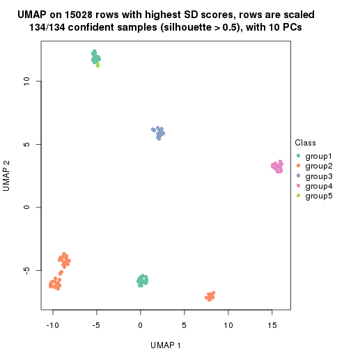
dimension_reduction(res, k = 6, method = "UMAP")
Following heatmap shows how subgroups are split when increasing k:
collect_classes(res)
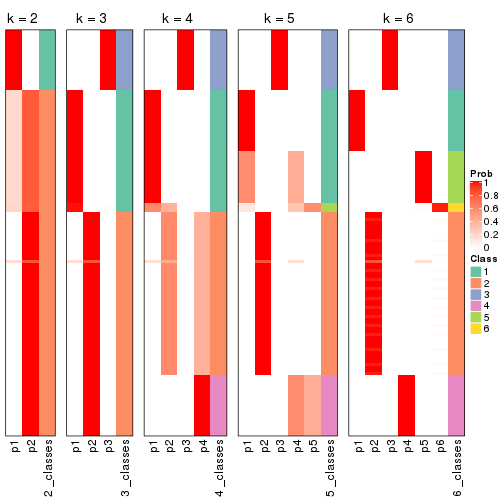
If matrix rows can be associated to genes, consider to use GO_Enrichment(res,
...) to perform function enrichment for the signature genes.
The object with results only for a single top-value method and a single partition method can be extracted as:
res = res_list["SD", "kmeans"]
# you can also extract it by
# res = res_list["SD:kmeans"]
A summary of res and all the functions that can be applied to it:
res
#> A 'ConsensusPartition' object with k = 2, 3, 4, 5, 6.
#> On a matrix with 15028 rows and 134 columns.
#> Top rows (1000, 2000, 3000, 4000, 5000) are extracted by 'SD' method.
#> Subgroups are detected by 'kmeans' method.
#> Performed in total 1250 partitions by row resampling.
#> Best k for subgroups seems to be 2.
#>
#> Following methods can be applied to this 'ConsensusPartition' object:
#> [1] "cola_report" "collect_classes" "collect_plots"
#> [4] "collect_stats" "colnames" "compare_signatures"
#> [7] "consensus_heatmap" "dimension_reduction" "functional_enrichment"
#> [10] "get_anno_col" "get_anno" "get_classes"
#> [13] "get_consensus" "get_matrix" "get_membership"
#> [16] "get_param" "get_signatures" "get_stats"
#> [19] "is_best_k" "is_stable_k" "membership_heatmap"
#> [22] "ncol" "nrow" "plot_ecdf"
#> [25] "rownames" "select_partition_number" "show"
#> [28] "suggest_best_k" "test_to_known_factors"
collect_plots() function collects all the plots made from res for all k (number of partitions)
into one single page to provide an easy and fast comparison between different k.
collect_plots(res)
The plots are:
k and the heatmap of
predicted classes for each k.k.k.k.All the plots in panels can be made by individual functions and they are plotted later in this section.
select_partition_number() produces several plots showing different
statistics for choosing “optimized” k. There are following statistics:
k;k, the area increased is defined as \(A_k - A_{k-1}\).The detailed explanations of these statistics can be found in the cola vignette.
Generally speaking, lower PAC score, higher mean silhouette score or higher
concordance corresponds to better partition. Rand index and Jaccard index
measure how similar the current partition is compared to partition with k-1.
If they are too similar, we won't accept k is better than k-1.
select_partition_number(res)
The numeric values for all these statistics can be obtained by get_stats().
get_stats(res)
#> k 1-PAC mean_silhouette concordance area_increased Rand Jaccard
#> 2 2 0.613 0.880 0.902 0.4302 0.503 0.503
#> 3 3 0.641 0.775 0.791 0.4085 0.985 0.971
#> 4 4 0.670 0.827 0.815 0.1272 0.789 0.580
#> 5 5 0.698 0.589 0.677 0.0853 0.816 0.496
#> 6 6 0.778 0.718 0.698 0.0602 0.837 0.444
suggest_best_k() suggests the best \(k\) based on these statistics. The rules are as follows:
NA.suggest_best_k(res)
#> [1] 2
Following shows the table of the partitions (You need to click the show/hide
code output link to see it). The membership matrix (columns with name p*)
is inferred by
clue::cl_consensus()
function with the SE method. Basically the value in the membership matrix
represents the probability to belong to a certain group. The finall class
label for an item is determined with the group with highest probability it
belongs to.
In get_classes() function, the entropy is calculated from the membership
matrix and the silhouette score is calculated from the consensus matrix.
cbind(get_classes(res, k = 2), get_membership(res, k = 2))
#> class entropy silhouette p1 p2
#> SRR1550981 1 0.8661 0.807 0.712 0.288
#> SRR1550982 1 0.9209 0.763 0.664 0.336
#> SRR1550983 1 0.8763 0.802 0.704 0.296
#> SRR1550984 1 0.9209 0.763 0.664 0.336
#> SRR1550986 1 0.0672 0.781 0.992 0.008
#> SRR1550985 1 0.9977 0.482 0.528 0.472
#> SRR1550988 2 0.0672 0.962 0.008 0.992
#> SRR1550987 1 0.8555 0.811 0.720 0.280
#> SRR1550989 2 0.1633 0.981 0.024 0.976
#> SRR1550990 2 0.1633 0.981 0.024 0.976
#> SRR1550991 2 0.1633 0.981 0.024 0.976
#> SRR1550992 1 0.0672 0.781 0.992 0.008
#> SRR1550994 2 0.0672 0.962 0.008 0.992
#> SRR1550993 1 0.8555 0.811 0.720 0.280
#> SRR1550995 2 0.1633 0.981 0.024 0.976
#> SRR1550996 2 0.1633 0.981 0.024 0.976
#> SRR1550997 1 0.0672 0.781 0.992 0.008
#> SRR1550998 1 0.8555 0.811 0.720 0.280
#> SRR1551000 2 0.1633 0.981 0.024 0.976
#> SRR1550999 2 0.0672 0.962 0.008 0.992
#> SRR1551001 2 0.1633 0.981 0.024 0.976
#> SRR1551002 1 0.0672 0.781 0.992 0.008
#> SRR1551003 1 0.8555 0.811 0.720 0.280
#> SRR1551004 2 0.0672 0.962 0.008 0.992
#> SRR1551006 2 0.1633 0.981 0.024 0.976
#> SRR1551005 2 0.1633 0.981 0.024 0.976
#> SRR1551007 2 0.1633 0.981 0.024 0.976
#> SRR1551008 1 0.0672 0.781 0.992 0.008
#> SRR1551009 1 0.8555 0.811 0.720 0.280
#> SRR1551010 2 0.0672 0.962 0.008 0.992
#> SRR1551012 2 0.1633 0.981 0.024 0.976
#> SRR1551011 2 0.1633 0.981 0.024 0.976
#> SRR1551013 1 0.0672 0.781 0.992 0.008
#> SRR1551014 1 0.8555 0.811 0.720 0.280
#> SRR1551015 2 0.0672 0.962 0.008 0.992
#> SRR1551016 2 0.1633 0.981 0.024 0.976
#> SRR1551017 2 0.1633 0.981 0.024 0.976
#> SRR1551018 2 0.1633 0.981 0.024 0.976
#> SRR1551019 1 0.0672 0.781 0.992 0.008
#> SRR1551021 1 0.8499 0.811 0.724 0.276
#> SRR1551022 2 0.0672 0.962 0.008 0.992
#> SRR1551023 2 0.1633 0.981 0.024 0.976
#> SRR1551020 1 0.0672 0.781 0.992 0.008
#> SRR1551024 2 0.1633 0.981 0.024 0.976
#> SRR1551026 1 0.0672 0.781 0.992 0.008
#> SRR1551025 1 0.0672 0.781 0.992 0.008
#> SRR1551027 1 0.8555 0.811 0.720 0.280
#> SRR1551028 2 0.0672 0.962 0.008 0.992
#> SRR1551029 2 0.1633 0.981 0.024 0.976
#> SRR1551030 2 0.1633 0.981 0.024 0.976
#> SRR1551031 2 0.1633 0.981 0.024 0.976
#> SRR1551032 1 0.0672 0.781 0.992 0.008
#> SRR1551034 1 0.8555 0.811 0.720 0.280
#> SRR1551033 1 0.0672 0.781 0.992 0.008
#> SRR1551035 2 0.0672 0.962 0.008 0.992
#> SRR1551036 2 0.1633 0.981 0.024 0.976
#> SRR1551037 2 0.1633 0.981 0.024 0.976
#> SRR1551038 2 0.1633 0.981 0.024 0.976
#> SRR1551039 1 0.9209 0.763 0.664 0.336
#> SRR1551040 1 0.0672 0.781 0.992 0.008
#> SRR1551041 1 0.8555 0.811 0.720 0.280
#> SRR1551042 2 0.0672 0.962 0.008 0.992
#> SRR1551043 2 0.1633 0.981 0.024 0.976
#> SRR1551044 2 0.1633 0.981 0.024 0.976
#> SRR1551045 2 0.1633 0.981 0.024 0.976
#> SRR1551046 1 0.9000 0.784 0.684 0.316
#> SRR1551047 1 0.0672 0.781 0.992 0.008
#> SRR1551048 1 0.8555 0.811 0.720 0.280
#> SRR1551049 2 0.0672 0.962 0.008 0.992
#> SRR1551050 2 0.1633 0.981 0.024 0.976
#> SRR1551051 2 0.1633 0.981 0.024 0.976
#> SRR1551052 2 0.1633 0.981 0.024 0.976
#> SRR1551053 2 0.9909 -0.218 0.444 0.556
#> SRR1551054 1 0.0672 0.781 0.992 0.008
#> SRR1551055 1 0.8555 0.811 0.720 0.280
#> SRR1551056 2 0.0672 0.962 0.008 0.992
#> SRR1551057 2 0.1633 0.981 0.024 0.976
#> SRR1551058 2 0.1633 0.981 0.024 0.976
#> SRR1551059 2 0.1633 0.981 0.024 0.976
#> SRR1551060 1 0.9209 0.763 0.664 0.336
#> SRR1551061 1 0.0672 0.781 0.992 0.008
#> SRR1551062 1 0.8555 0.811 0.720 0.280
#> SRR1551063 2 0.0672 0.962 0.008 0.992
#> SRR1551064 2 0.1633 0.981 0.024 0.976
#> SRR1551065 2 0.1633 0.981 0.024 0.976
#> SRR1551066 2 0.1633 0.981 0.024 0.976
#> SRR1551067 1 0.9209 0.763 0.664 0.336
#> SRR1551068 1 0.0672 0.781 0.992 0.008
#> SRR1551069 1 0.8555 0.811 0.720 0.280
#> SRR1551070 2 0.0672 0.962 0.008 0.992
#> SRR1551071 2 0.1633 0.981 0.024 0.976
#> SRR1551072 2 0.1633 0.981 0.024 0.976
#> SRR1551073 2 0.1633 0.981 0.024 0.976
#> SRR1551074 1 0.8763 0.802 0.704 0.296
#> SRR1551075 1 0.0672 0.781 0.992 0.008
#> SRR1551076 1 0.8555 0.811 0.720 0.280
#> SRR1551077 2 0.0672 0.962 0.008 0.992
#> SRR1551078 2 0.1633 0.981 0.024 0.976
#> SRR1551079 2 0.1633 0.981 0.024 0.976
#> SRR1551080 2 0.1633 0.981 0.024 0.976
#> SRR1551081 1 0.9977 0.482 0.528 0.472
#> SRR1551082 1 0.0672 0.781 0.992 0.008
#> SRR1551083 1 0.8555 0.811 0.720 0.280
#> SRR1551084 2 0.0672 0.962 0.008 0.992
#> SRR1551085 2 0.1633 0.981 0.024 0.976
#> SRR1551086 2 0.1633 0.981 0.024 0.976
#> SRR1551088 1 0.0672 0.781 0.992 0.008
#> SRR1551087 1 0.9209 0.763 0.664 0.336
#> SRR1551089 1 0.8555 0.811 0.720 0.280
#> SRR1551090 2 0.0672 0.962 0.008 0.992
#> SRR1551091 2 0.1633 0.981 0.024 0.976
#> SRR1551092 2 0.1633 0.981 0.024 0.976
#> SRR1551093 2 0.1633 0.981 0.024 0.976
#> SRR1551094 1 0.9209 0.763 0.664 0.336
#> SRR1551095 1 0.0672 0.781 0.992 0.008
#> SRR1551096 1 0.8555 0.811 0.720 0.280
#> SRR1551097 2 0.0672 0.962 0.008 0.992
#> SRR1551098 2 0.1633 0.981 0.024 0.976
#> SRR1551099 2 0.1633 0.981 0.024 0.976
#> SRR1551101 1 0.0672 0.781 0.992 0.008
#> SRR1551100 1 0.9209 0.763 0.664 0.336
#> SRR1551102 1 0.8555 0.811 0.720 0.280
#> SRR1551103 2 0.0672 0.962 0.008 0.992
#> SRR1551104 2 0.1633 0.981 0.024 0.976
#> SRR1551105 2 0.1633 0.981 0.024 0.976
#> SRR1551106 2 0.1633 0.981 0.024 0.976
#> SRR1551107 1 0.9209 0.763 0.664 0.336
#> SRR1551108 1 0.0672 0.781 0.992 0.008
#> SRR1551109 1 0.8555 0.811 0.720 0.280
#> SRR1551110 2 0.0672 0.962 0.008 0.992
#> SRR1551111 2 0.1633 0.981 0.024 0.976
#> SRR1551112 2 0.1633 0.981 0.024 0.976
#> SRR1551113 2 0.1633 0.981 0.024 0.976
#> SRR1551114 1 0.9209 0.763 0.664 0.336
cbind(get_classes(res, k = 3), get_membership(res, k = 3))
#> class entropy silhouette p1 p2 p3
#> SRR1550981 1 0.4821 0.783 0.840 0.040 NA
#> SRR1550982 1 0.5393 0.769 0.808 0.044 NA
#> SRR1550983 1 0.5393 0.769 0.808 0.044 NA
#> SRR1550984 1 0.5393 0.769 0.808 0.044 NA
#> SRR1550986 1 0.6244 0.718 0.560 0.000 NA
#> SRR1550985 1 0.5719 0.753 0.792 0.052 NA
#> SRR1550988 2 0.2537 0.596 0.080 0.920 NA
#> SRR1550987 1 0.0237 0.821 0.996 0.004 NA
#> SRR1550989 2 0.6769 0.858 0.016 0.592 NA
#> SRR1550990 2 0.6769 0.858 0.016 0.592 NA
#> SRR1550991 2 0.6944 0.824 0.016 0.516 NA
#> SRR1550992 1 0.6244 0.718 0.560 0.000 NA
#> SRR1550994 2 0.2537 0.596 0.080 0.920 NA
#> SRR1550993 1 0.0237 0.821 0.996 0.004 NA
#> SRR1550995 2 0.6769 0.858 0.016 0.592 NA
#> SRR1550996 2 0.6769 0.858 0.016 0.592 NA
#> SRR1550997 1 0.6244 0.718 0.560 0.000 NA
#> SRR1550998 1 0.0237 0.821 0.996 0.004 NA
#> SRR1551000 2 0.6769 0.858 0.016 0.592 NA
#> SRR1550999 2 0.2537 0.596 0.080 0.920 NA
#> SRR1551001 2 0.6769 0.858 0.016 0.592 NA
#> SRR1551002 1 0.6244 0.718 0.560 0.000 NA
#> SRR1551003 1 0.0237 0.821 0.996 0.004 NA
#> SRR1551004 2 0.2537 0.596 0.080 0.920 NA
#> SRR1551006 2 0.6769 0.858 0.016 0.592 NA
#> SRR1551005 2 0.6769 0.858 0.016 0.592 NA
#> SRR1551007 2 0.6944 0.824 0.016 0.516 NA
#> SRR1551008 1 0.6244 0.718 0.560 0.000 NA
#> SRR1551009 1 0.0237 0.821 0.996 0.004 NA
#> SRR1551010 2 0.2537 0.596 0.080 0.920 NA
#> SRR1551012 2 0.6769 0.858 0.016 0.592 NA
#> SRR1551011 2 0.6769 0.858 0.016 0.592 NA
#> SRR1551013 1 0.6244 0.718 0.560 0.000 NA
#> SRR1551014 1 0.0237 0.821 0.996 0.004 NA
#> SRR1551015 2 0.2537 0.596 0.080 0.920 NA
#> SRR1551016 2 0.6769 0.858 0.016 0.592 NA
#> SRR1551017 2 0.6925 0.836 0.016 0.532 NA
#> SRR1551018 2 0.6944 0.824 0.016 0.516 NA
#> SRR1551019 1 0.2537 0.808 0.920 0.000 NA
#> SRR1551021 1 0.0000 0.821 1.000 0.000 NA
#> SRR1551022 2 0.2537 0.596 0.080 0.920 NA
#> SRR1551023 2 0.6769 0.858 0.016 0.592 NA
#> SRR1551020 1 0.6244 0.718 0.560 0.000 NA
#> SRR1551024 2 0.7248 0.833 0.028 0.536 NA
#> SRR1551026 1 0.6244 0.718 0.560 0.000 NA
#> SRR1551025 1 0.2711 0.811 0.912 0.000 NA
#> SRR1551027 1 0.0237 0.821 0.996 0.004 NA
#> SRR1551028 2 0.2537 0.596 0.080 0.920 NA
#> SRR1551029 2 0.6769 0.858 0.016 0.592 NA
#> SRR1551030 2 0.6769 0.858 0.016 0.592 NA
#> SRR1551031 2 0.6948 0.824 0.016 0.512 NA
#> SRR1551032 1 0.1753 0.819 0.952 0.000 NA
#> SRR1551034 1 0.0237 0.821 0.996 0.004 NA
#> SRR1551033 1 0.6244 0.718 0.560 0.000 NA
#> SRR1551035 2 0.2537 0.596 0.080 0.920 NA
#> SRR1551036 2 0.6769 0.858 0.016 0.592 NA
#> SRR1551037 2 0.6769 0.858 0.016 0.592 NA
#> SRR1551038 2 0.6944 0.824 0.016 0.516 NA
#> SRR1551039 1 0.5393 0.769 0.808 0.044 NA
#> SRR1551040 1 0.6244 0.718 0.560 0.000 NA
#> SRR1551041 1 0.0237 0.821 0.996 0.004 NA
#> SRR1551042 2 0.2537 0.596 0.080 0.920 NA
#> SRR1551043 2 0.6769 0.858 0.016 0.592 NA
#> SRR1551044 2 0.6769 0.858 0.016 0.592 NA
#> SRR1551045 2 0.6944 0.824 0.016 0.516 NA
#> SRR1551046 1 0.5393 0.769 0.808 0.044 NA
#> SRR1551047 1 0.6244 0.718 0.560 0.000 NA
#> SRR1551048 1 0.0237 0.821 0.996 0.004 NA
#> SRR1551049 2 0.2537 0.596 0.080 0.920 NA
#> SRR1551050 2 0.6769 0.858 0.016 0.592 NA
#> SRR1551051 2 0.6769 0.858 0.016 0.592 NA
#> SRR1551052 2 0.6944 0.824 0.016 0.516 NA
#> SRR1551053 1 0.7147 0.641 0.696 0.076 NA
#> SRR1551054 1 0.6244 0.718 0.560 0.000 NA
#> SRR1551055 1 0.0237 0.821 0.996 0.004 NA
#> SRR1551056 2 0.2537 0.596 0.080 0.920 NA
#> SRR1551057 2 0.6769 0.858 0.016 0.592 NA
#> SRR1551058 2 0.6769 0.858 0.016 0.592 NA
#> SRR1551059 2 0.6944 0.824 0.016 0.516 NA
#> SRR1551060 1 0.5393 0.769 0.808 0.044 NA
#> SRR1551061 1 0.6244 0.718 0.560 0.000 NA
#> SRR1551062 1 0.0237 0.821 0.996 0.004 NA
#> SRR1551063 2 0.2537 0.596 0.080 0.920 NA
#> SRR1551064 2 0.6769 0.858 0.016 0.592 NA
#> SRR1551065 2 0.6769 0.858 0.016 0.592 NA
#> SRR1551066 2 0.6944 0.824 0.016 0.516 NA
#> SRR1551067 1 0.5393 0.769 0.808 0.044 NA
#> SRR1551068 1 0.6244 0.718 0.560 0.000 NA
#> SRR1551069 1 0.0237 0.821 0.996 0.004 NA
#> SRR1551070 2 0.2537 0.596 0.080 0.920 NA
#> SRR1551071 2 0.6769 0.858 0.016 0.592 NA
#> SRR1551072 2 0.6769 0.858 0.016 0.592 NA
#> SRR1551073 2 0.6944 0.824 0.016 0.516 NA
#> SRR1551074 1 0.5267 0.773 0.816 0.044 NA
#> SRR1551075 1 0.6244 0.718 0.560 0.000 NA
#> SRR1551076 1 0.0237 0.821 0.996 0.004 NA
#> SRR1551077 2 0.2537 0.596 0.080 0.920 NA
#> SRR1551078 2 0.6769 0.858 0.016 0.592 NA
#> SRR1551079 2 0.6769 0.858 0.016 0.592 NA
#> SRR1551080 2 0.6944 0.824 0.016 0.516 NA
#> SRR1551081 1 0.5719 0.753 0.792 0.052 NA
#> SRR1551082 1 0.6244 0.718 0.560 0.000 NA
#> SRR1551083 1 0.0237 0.821 0.996 0.004 NA
#> SRR1551084 2 0.2537 0.596 0.080 0.920 NA
#> SRR1551085 2 0.6769 0.858 0.016 0.592 NA
#> SRR1551086 2 0.6769 0.858 0.016 0.592 NA
#> SRR1551088 1 0.6244 0.718 0.560 0.000 NA
#> SRR1551087 1 0.5393 0.769 0.808 0.044 NA
#> SRR1551089 1 0.0237 0.821 0.996 0.004 NA
#> SRR1551090 2 0.2537 0.596 0.080 0.920 NA
#> SRR1551091 2 0.6769 0.858 0.016 0.592 NA
#> SRR1551092 2 0.6769 0.858 0.016 0.592 NA
#> SRR1551093 2 0.6944 0.824 0.016 0.516 NA
#> SRR1551094 1 0.5393 0.769 0.808 0.044 NA
#> SRR1551095 1 0.6244 0.718 0.560 0.000 NA
#> SRR1551096 1 0.0237 0.821 0.996 0.004 NA
#> SRR1551097 2 0.2537 0.596 0.080 0.920 NA
#> SRR1551098 2 0.6769 0.858 0.016 0.592 NA
#> SRR1551099 2 0.6769 0.858 0.016 0.592 NA
#> SRR1551101 1 0.6244 0.718 0.560 0.000 NA
#> SRR1551100 1 0.5393 0.769 0.808 0.044 NA
#> SRR1551102 1 0.0237 0.821 0.996 0.004 NA
#> SRR1551103 2 0.2537 0.596 0.080 0.920 NA
#> SRR1551104 2 0.6769 0.858 0.016 0.592 NA
#> SRR1551105 2 0.6769 0.858 0.016 0.592 NA
#> SRR1551106 2 0.6944 0.824 0.016 0.516 NA
#> SRR1551107 1 0.5393 0.769 0.808 0.044 NA
#> SRR1551108 1 0.6244 0.718 0.560 0.000 NA
#> SRR1551109 1 0.0237 0.821 0.996 0.004 NA
#> SRR1551110 2 0.2537 0.596 0.080 0.920 NA
#> SRR1551111 2 0.6769 0.858 0.016 0.592 NA
#> SRR1551112 2 0.6769 0.858 0.016 0.592 NA
#> SRR1551113 2 0.6944 0.824 0.016 0.516 NA
#> SRR1551114 1 0.5393 0.769 0.808 0.044 NA
cbind(get_classes(res, k = 4), get_membership(res, k = 4))
#> class entropy silhouette p1 p2 p3 p4
#> SRR1550981 1 0.1271 0.693 0.968 0.012 0.012 0.008
#> SRR1550982 1 0.1271 0.693 0.968 0.012 0.012 0.008
#> SRR1550983 1 0.1271 0.693 0.968 0.012 0.012 0.008
#> SRR1550984 1 0.1271 0.693 0.968 0.012 0.012 0.008
#> SRR1550986 3 0.3266 0.989 0.168 0.000 0.832 0.000
#> SRR1550985 1 0.1394 0.689 0.964 0.016 0.012 0.008
#> SRR1550988 4 0.5173 0.999 0.020 0.320 0.000 0.660
#> SRR1550987 1 0.7179 0.674 0.576 0.004 0.208 0.212
#> SRR1550989 2 0.0188 0.878 0.004 0.996 0.000 0.000
#> SRR1550990 2 0.0000 0.878 0.000 1.000 0.000 0.000
#> SRR1550991 2 0.6729 0.649 0.036 0.680 0.164 0.120
#> SRR1550992 3 0.3266 0.989 0.168 0.000 0.832 0.000
#> SRR1550994 4 0.5349 0.997 0.020 0.320 0.004 0.656
#> SRR1550993 1 0.7179 0.674 0.576 0.004 0.208 0.212
#> SRR1550995 2 0.0188 0.878 0.004 0.996 0.000 0.000
#> SRR1550996 2 0.0188 0.878 0.004 0.996 0.000 0.000
#> SRR1550997 3 0.4507 0.966 0.168 0.000 0.788 0.044
#> SRR1550998 1 0.7179 0.674 0.576 0.004 0.208 0.212
#> SRR1551000 2 0.0188 0.878 0.004 0.996 0.000 0.000
#> SRR1550999 4 0.5447 0.994 0.024 0.320 0.004 0.652
#> SRR1551001 2 0.0000 0.878 0.000 1.000 0.000 0.000
#> SRR1551002 3 0.3266 0.989 0.168 0.000 0.832 0.000
#> SRR1551003 1 0.7179 0.674 0.576 0.004 0.208 0.212
#> SRR1551004 4 0.5349 0.997 0.020 0.320 0.004 0.656
#> SRR1551006 2 0.0000 0.878 0.000 1.000 0.000 0.000
#> SRR1551005 2 0.0188 0.878 0.004 0.996 0.000 0.000
#> SRR1551007 2 0.6729 0.649 0.036 0.680 0.164 0.120
#> SRR1551008 3 0.3266 0.989 0.168 0.000 0.832 0.000
#> SRR1551009 1 0.7179 0.674 0.576 0.004 0.208 0.212
#> SRR1551010 4 0.5173 0.999 0.020 0.320 0.000 0.660
#> SRR1551012 2 0.0000 0.878 0.000 1.000 0.000 0.000
#> SRR1551011 2 0.0188 0.878 0.004 0.996 0.000 0.000
#> SRR1551013 3 0.3266 0.989 0.168 0.000 0.832 0.000
#> SRR1551014 1 0.7179 0.674 0.576 0.004 0.208 0.212
#> SRR1551015 4 0.5447 0.994 0.024 0.320 0.004 0.652
#> SRR1551016 2 0.0188 0.878 0.004 0.996 0.000 0.000
#> SRR1551017 2 0.2480 0.811 0.008 0.904 0.000 0.088
#> SRR1551018 2 0.6729 0.649 0.036 0.680 0.164 0.120
#> SRR1551019 1 0.3222 0.675 0.884 0.004 0.076 0.036
#> SRR1551021 1 0.7150 0.673 0.580 0.004 0.208 0.208
#> SRR1551022 4 0.5173 0.999 0.020 0.320 0.000 0.660
#> SRR1551023 2 0.0188 0.878 0.004 0.996 0.000 0.000
#> SRR1551020 3 0.3266 0.989 0.168 0.000 0.832 0.000
#> SRR1551024 2 0.2760 0.743 0.128 0.872 0.000 0.000
#> SRR1551026 3 0.3266 0.989 0.168 0.000 0.832 0.000
#> SRR1551025 1 0.4956 0.600 0.732 0.000 0.232 0.036
#> SRR1551027 1 0.7179 0.674 0.576 0.004 0.208 0.212
#> SRR1551028 4 0.5173 0.999 0.020 0.320 0.000 0.660
#> SRR1551029 2 0.0188 0.878 0.004 0.996 0.000 0.000
#> SRR1551030 2 0.0000 0.878 0.000 1.000 0.000 0.000
#> SRR1551031 2 0.6729 0.649 0.036 0.680 0.164 0.120
#> SRR1551032 1 0.4466 0.640 0.784 0.000 0.180 0.036
#> SRR1551034 1 0.7179 0.674 0.576 0.004 0.208 0.212
#> SRR1551033 3 0.3266 0.989 0.168 0.000 0.832 0.000
#> SRR1551035 4 0.5173 0.999 0.020 0.320 0.000 0.660
#> SRR1551036 2 0.0188 0.878 0.004 0.996 0.000 0.000
#> SRR1551037 2 0.0000 0.878 0.000 1.000 0.000 0.000
#> SRR1551038 2 0.6729 0.649 0.036 0.680 0.164 0.120
#> SRR1551039 1 0.1271 0.693 0.968 0.012 0.012 0.008
#> SRR1551040 3 0.4507 0.966 0.168 0.000 0.788 0.044
#> SRR1551041 1 0.7179 0.674 0.576 0.004 0.208 0.212
#> SRR1551042 4 0.5173 0.999 0.020 0.320 0.000 0.660
#> SRR1551043 2 0.0188 0.878 0.004 0.996 0.000 0.000
#> SRR1551044 2 0.0000 0.878 0.000 1.000 0.000 0.000
#> SRR1551045 2 0.6729 0.649 0.036 0.680 0.164 0.120
#> SRR1551046 1 0.1271 0.693 0.968 0.012 0.012 0.008
#> SRR1551047 3 0.4507 0.966 0.168 0.000 0.788 0.044
#> SRR1551048 1 0.7179 0.674 0.576 0.004 0.208 0.212
#> SRR1551049 4 0.5173 0.999 0.020 0.320 0.000 0.660
#> SRR1551050 2 0.0188 0.878 0.004 0.996 0.000 0.000
#> SRR1551051 2 0.0000 0.878 0.000 1.000 0.000 0.000
#> SRR1551052 2 0.6729 0.649 0.036 0.680 0.164 0.120
#> SRR1551053 1 0.2099 0.659 0.936 0.044 0.012 0.008
#> SRR1551054 3 0.4507 0.966 0.168 0.000 0.788 0.044
#> SRR1551055 1 0.7179 0.674 0.576 0.004 0.208 0.212
#> SRR1551056 4 0.5173 0.999 0.020 0.320 0.000 0.660
#> SRR1551057 2 0.0188 0.878 0.004 0.996 0.000 0.000
#> SRR1551058 2 0.0336 0.875 0.000 0.992 0.000 0.008
#> SRR1551059 2 0.6729 0.649 0.036 0.680 0.164 0.120
#> SRR1551060 1 0.1271 0.693 0.968 0.012 0.012 0.008
#> SRR1551061 3 0.3266 0.989 0.168 0.000 0.832 0.000
#> SRR1551062 1 0.7179 0.674 0.576 0.004 0.208 0.212
#> SRR1551063 4 0.5173 0.999 0.020 0.320 0.000 0.660
#> SRR1551064 2 0.0188 0.878 0.004 0.996 0.000 0.000
#> SRR1551065 2 0.0000 0.878 0.000 1.000 0.000 0.000
#> SRR1551066 2 0.6729 0.649 0.036 0.680 0.164 0.120
#> SRR1551067 1 0.1271 0.693 0.968 0.012 0.012 0.008
#> SRR1551068 3 0.3266 0.989 0.168 0.000 0.832 0.000
#> SRR1551069 1 0.7179 0.674 0.576 0.004 0.208 0.212
#> SRR1551070 4 0.5173 0.999 0.020 0.320 0.000 0.660
#> SRR1551071 2 0.0188 0.878 0.004 0.996 0.000 0.000
#> SRR1551072 2 0.0000 0.878 0.000 1.000 0.000 0.000
#> SRR1551073 2 0.6729 0.649 0.036 0.680 0.164 0.120
#> SRR1551074 1 0.1271 0.693 0.968 0.012 0.012 0.008
#> SRR1551075 3 0.3266 0.989 0.168 0.000 0.832 0.000
#> SRR1551076 1 0.7179 0.674 0.576 0.004 0.208 0.212
#> SRR1551077 4 0.5173 0.999 0.020 0.320 0.000 0.660
#> SRR1551078 2 0.0188 0.878 0.004 0.996 0.000 0.000
#> SRR1551079 2 0.0336 0.875 0.000 0.992 0.000 0.008
#> SRR1551080 2 0.6729 0.649 0.036 0.680 0.164 0.120
#> SRR1551081 1 0.1394 0.689 0.964 0.016 0.012 0.008
#> SRR1551082 3 0.3266 0.989 0.168 0.000 0.832 0.000
#> SRR1551083 1 0.7179 0.674 0.576 0.004 0.208 0.212
#> SRR1551084 4 0.5173 0.999 0.020 0.320 0.000 0.660
#> SRR1551085 2 0.0188 0.878 0.004 0.996 0.000 0.000
#> SRR1551086 2 0.0000 0.878 0.000 1.000 0.000 0.000
#> SRR1551088 3 0.3266 0.989 0.168 0.000 0.832 0.000
#> SRR1551087 1 0.1271 0.693 0.968 0.012 0.012 0.008
#> SRR1551089 1 0.7179 0.674 0.576 0.004 0.208 0.212
#> SRR1551090 4 0.5173 0.999 0.020 0.320 0.000 0.660
#> SRR1551091 2 0.0188 0.878 0.004 0.996 0.000 0.000
#> SRR1551092 2 0.0000 0.878 0.000 1.000 0.000 0.000
#> SRR1551093 2 0.6729 0.649 0.036 0.680 0.164 0.120
#> SRR1551094 1 0.1271 0.693 0.968 0.012 0.012 0.008
#> SRR1551095 3 0.3266 0.989 0.168 0.000 0.832 0.000
#> SRR1551096 1 0.7179 0.674 0.576 0.004 0.208 0.212
#> SRR1551097 4 0.5173 0.999 0.020 0.320 0.000 0.660
#> SRR1551098 2 0.0188 0.878 0.004 0.996 0.000 0.000
#> SRR1551099 2 0.0000 0.878 0.000 1.000 0.000 0.000
#> SRR1551101 3 0.4507 0.966 0.168 0.000 0.788 0.044
#> SRR1551100 1 0.1271 0.693 0.968 0.012 0.012 0.008
#> SRR1551102 1 0.7179 0.674 0.576 0.004 0.208 0.212
#> SRR1551103 4 0.5173 0.999 0.020 0.320 0.000 0.660
#> SRR1551104 2 0.0188 0.878 0.004 0.996 0.000 0.000
#> SRR1551105 2 0.0000 0.878 0.000 1.000 0.000 0.000
#> SRR1551106 2 0.6729 0.649 0.036 0.680 0.164 0.120
#> SRR1551107 1 0.1271 0.693 0.968 0.012 0.012 0.008
#> SRR1551108 3 0.3266 0.989 0.168 0.000 0.832 0.000
#> SRR1551109 1 0.7179 0.674 0.576 0.004 0.208 0.212
#> SRR1551110 4 0.5173 0.999 0.020 0.320 0.000 0.660
#> SRR1551111 2 0.0188 0.878 0.004 0.996 0.000 0.000
#> SRR1551112 2 0.0000 0.878 0.000 1.000 0.000 0.000
#> SRR1551113 2 0.6729 0.649 0.036 0.680 0.164 0.120
#> SRR1551114 1 0.1271 0.693 0.968 0.012 0.012 0.008
cbind(get_classes(res, k = 5), get_membership(res, k = 5))
#> class entropy silhouette p1 p2 p3 p4 p5
#> SRR1550981 2 0.6858 -0.307 0.352 0.428 0.212 0.004 0.004
#> SRR1550982 2 0.6858 -0.307 0.352 0.428 0.212 0.004 0.004
#> SRR1550983 2 0.6858 -0.307 0.352 0.428 0.212 0.004 0.004
#> SRR1550984 2 0.6875 -0.308 0.352 0.424 0.216 0.004 0.004
#> SRR1550986 3 0.3895 0.990 0.320 0.000 0.680 0.000 0.000
#> SRR1550985 2 0.6875 -0.308 0.352 0.424 0.216 0.004 0.004
#> SRR1550988 4 0.2127 0.994 0.000 0.000 0.000 0.892 0.108
#> SRR1550987 1 0.0510 0.900 0.984 0.000 0.000 0.016 0.000
#> SRR1550989 2 0.5622 0.329 0.000 0.508 0.000 0.076 0.416
#> SRR1550990 2 0.6954 0.324 0.000 0.432 0.076 0.076 0.416
#> SRR1550991 5 0.0000 0.946 0.000 0.000 0.000 0.000 1.000
#> SRR1550992 3 0.3895 0.990 0.320 0.000 0.680 0.000 0.000
#> SRR1550994 4 0.2570 0.989 0.000 0.008 0.004 0.880 0.108
#> SRR1550993 1 0.0510 0.900 0.984 0.000 0.000 0.016 0.000
#> SRR1550995 2 0.5622 0.329 0.000 0.508 0.000 0.076 0.416
#> SRR1550996 2 0.6954 0.324 0.000 0.432 0.076 0.076 0.416
#> SRR1550997 3 0.4809 0.974 0.320 0.008 0.648 0.024 0.000
#> SRR1550998 1 0.0794 0.895 0.972 0.000 0.000 0.028 0.000
#> SRR1551000 2 0.5622 0.329 0.000 0.508 0.000 0.076 0.416
#> SRR1550999 4 0.2805 0.985 0.000 0.012 0.008 0.872 0.108
#> SRR1551001 2 0.6954 0.324 0.000 0.432 0.076 0.076 0.416
#> SRR1551002 3 0.3895 0.990 0.320 0.000 0.680 0.000 0.000
#> SRR1551003 1 0.0510 0.900 0.984 0.000 0.000 0.016 0.000
#> SRR1551004 4 0.2570 0.989 0.000 0.008 0.004 0.880 0.108
#> SRR1551006 2 0.6954 0.324 0.000 0.432 0.076 0.076 0.416
#> SRR1551005 2 0.5622 0.329 0.000 0.508 0.000 0.076 0.416
#> SRR1551007 5 0.0000 0.946 0.000 0.000 0.000 0.000 1.000
#> SRR1551008 3 0.3895 0.990 0.320 0.000 0.680 0.000 0.000
#> SRR1551009 1 0.0510 0.900 0.984 0.000 0.000 0.016 0.000
#> SRR1551010 4 0.2127 0.994 0.000 0.000 0.000 0.892 0.108
#> SRR1551012 2 0.6954 0.324 0.000 0.432 0.076 0.076 0.416
#> SRR1551011 2 0.5622 0.329 0.000 0.508 0.000 0.076 0.416
#> SRR1551013 3 0.4317 0.984 0.320 0.008 0.668 0.004 0.000
#> SRR1551014 1 0.0609 0.899 0.980 0.000 0.000 0.020 0.000
#> SRR1551015 4 0.3582 0.964 0.000 0.028 0.024 0.840 0.108
#> SRR1551016 2 0.6063 0.328 0.000 0.492 0.016 0.076 0.416
#> SRR1551017 5 0.5638 -0.209 0.000 0.432 0.076 0.000 0.492
#> SRR1551018 5 0.0162 0.946 0.000 0.000 0.004 0.000 0.996
#> SRR1551019 1 0.7496 0.325 0.404 0.368 0.164 0.064 0.000
#> SRR1551021 1 0.0609 0.899 0.980 0.000 0.000 0.020 0.000
#> SRR1551022 4 0.3019 0.979 0.000 0.012 0.016 0.864 0.108
#> SRR1551023 2 0.5856 0.318 0.000 0.516 0.008 0.076 0.400
#> SRR1551020 3 0.4317 0.984 0.320 0.008 0.668 0.004 0.000
#> SRR1551024 2 0.7894 0.147 0.016 0.424 0.136 0.080 0.344
#> SRR1551026 3 0.4317 0.984 0.320 0.008 0.668 0.004 0.000
#> SRR1551025 1 0.6326 0.407 0.548 0.340 0.048 0.064 0.000
#> SRR1551027 1 0.0609 0.899 0.980 0.000 0.000 0.020 0.000
#> SRR1551028 4 0.2127 0.994 0.000 0.000 0.000 0.892 0.108
#> SRR1551029 2 0.5622 0.329 0.000 0.508 0.000 0.076 0.416
#> SRR1551030 2 0.6954 0.324 0.000 0.432 0.076 0.076 0.416
#> SRR1551031 5 0.0000 0.946 0.000 0.000 0.000 0.000 1.000
#> SRR1551032 1 0.6778 0.384 0.504 0.352 0.080 0.064 0.000
#> SRR1551034 1 0.0510 0.900 0.984 0.000 0.000 0.016 0.000
#> SRR1551033 3 0.3895 0.990 0.320 0.000 0.680 0.000 0.000
#> SRR1551035 4 0.2127 0.994 0.000 0.000 0.000 0.892 0.108
#> SRR1551036 2 0.5622 0.329 0.000 0.508 0.000 0.076 0.416
#> SRR1551037 2 0.6954 0.324 0.000 0.432 0.076 0.076 0.416
#> SRR1551038 5 0.0000 0.946 0.000 0.000 0.000 0.000 1.000
#> SRR1551039 2 0.6858 -0.307 0.352 0.428 0.212 0.004 0.004
#> SRR1551040 3 0.4809 0.974 0.320 0.008 0.648 0.024 0.000
#> SRR1551041 1 0.0794 0.895 0.972 0.000 0.000 0.028 0.000
#> SRR1551042 4 0.2127 0.994 0.000 0.000 0.000 0.892 0.108
#> SRR1551043 2 0.5622 0.329 0.000 0.508 0.000 0.076 0.416
#> SRR1551044 2 0.6954 0.324 0.000 0.432 0.076 0.076 0.416
#> SRR1551045 5 0.0000 0.946 0.000 0.000 0.000 0.000 1.000
#> SRR1551046 2 0.6858 -0.307 0.352 0.428 0.212 0.004 0.004
#> SRR1551047 3 0.4809 0.974 0.320 0.008 0.648 0.024 0.000
#> SRR1551048 1 0.0510 0.900 0.984 0.000 0.000 0.016 0.000
#> SRR1551049 4 0.2127 0.994 0.000 0.000 0.000 0.892 0.108
#> SRR1551050 2 0.5622 0.329 0.000 0.508 0.000 0.076 0.416
#> SRR1551051 2 0.6954 0.324 0.000 0.432 0.076 0.076 0.416
#> SRR1551052 5 0.0000 0.946 0.000 0.000 0.000 0.000 1.000
#> SRR1551053 2 0.6870 -0.305 0.348 0.428 0.216 0.004 0.004
#> SRR1551054 3 0.4809 0.974 0.320 0.008 0.648 0.024 0.000
#> SRR1551055 1 0.0794 0.895 0.972 0.000 0.000 0.028 0.000
#> SRR1551056 4 0.2127 0.994 0.000 0.000 0.000 0.892 0.108
#> SRR1551057 2 0.5622 0.329 0.000 0.508 0.000 0.076 0.416
#> SRR1551058 2 0.6911 0.318 0.000 0.432 0.076 0.072 0.420
#> SRR1551059 5 0.0162 0.946 0.000 0.000 0.004 0.000 0.996
#> SRR1551060 2 0.6875 -0.308 0.352 0.424 0.216 0.004 0.004
#> SRR1551061 3 0.3895 0.990 0.320 0.000 0.680 0.000 0.000
#> SRR1551062 1 0.0510 0.900 0.984 0.000 0.000 0.016 0.000
#> SRR1551063 4 0.2286 0.993 0.000 0.004 0.000 0.888 0.108
#> SRR1551064 2 0.5622 0.329 0.000 0.508 0.000 0.076 0.416
#> SRR1551065 2 0.6954 0.324 0.000 0.432 0.076 0.076 0.416
#> SRR1551066 5 0.0162 0.946 0.000 0.000 0.004 0.000 0.996
#> SRR1551067 2 0.6858 -0.307 0.352 0.428 0.212 0.004 0.004
#> SRR1551068 3 0.3895 0.990 0.320 0.000 0.680 0.000 0.000
#> SRR1551069 1 0.0510 0.900 0.984 0.000 0.000 0.016 0.000
#> SRR1551070 4 0.2127 0.994 0.000 0.000 0.000 0.892 0.108
#> SRR1551071 2 0.5622 0.329 0.000 0.508 0.000 0.076 0.416
#> SRR1551072 2 0.6954 0.324 0.000 0.432 0.076 0.076 0.416
#> SRR1551073 5 0.0162 0.946 0.000 0.000 0.004 0.000 0.996
#> SRR1551074 2 0.6858 -0.307 0.352 0.428 0.212 0.004 0.004
#> SRR1551075 3 0.3895 0.990 0.320 0.000 0.680 0.000 0.000
#> SRR1551076 1 0.0510 0.900 0.984 0.000 0.000 0.016 0.000
#> SRR1551077 4 0.2286 0.993 0.000 0.004 0.000 0.888 0.108
#> SRR1551078 2 0.5622 0.329 0.000 0.508 0.000 0.076 0.416
#> SRR1551079 2 0.6911 0.318 0.000 0.432 0.076 0.072 0.420
#> SRR1551080 5 0.0000 0.946 0.000 0.000 0.000 0.000 1.000
#> SRR1551081 2 0.6875 -0.308 0.352 0.424 0.216 0.004 0.004
#> SRR1551082 3 0.3895 0.990 0.320 0.000 0.680 0.000 0.000
#> SRR1551083 1 0.0510 0.900 0.984 0.000 0.000 0.016 0.000
#> SRR1551084 4 0.2286 0.993 0.000 0.004 0.000 0.888 0.108
#> SRR1551085 2 0.5622 0.329 0.000 0.508 0.000 0.076 0.416
#> SRR1551086 2 0.6954 0.324 0.000 0.432 0.076 0.076 0.416
#> SRR1551088 3 0.3895 0.990 0.320 0.000 0.680 0.000 0.000
#> SRR1551087 2 0.6858 -0.307 0.352 0.428 0.212 0.004 0.004
#> SRR1551089 1 0.0510 0.900 0.984 0.000 0.000 0.016 0.000
#> SRR1551090 4 0.2127 0.994 0.000 0.000 0.000 0.892 0.108
#> SRR1551091 2 0.5622 0.329 0.000 0.508 0.000 0.076 0.416
#> SRR1551092 2 0.6954 0.324 0.000 0.432 0.076 0.076 0.416
#> SRR1551093 5 0.0162 0.946 0.000 0.000 0.004 0.000 0.996
#> SRR1551094 2 0.6858 -0.307 0.352 0.428 0.212 0.004 0.004
#> SRR1551095 3 0.3895 0.990 0.320 0.000 0.680 0.000 0.000
#> SRR1551096 1 0.0510 0.900 0.984 0.000 0.000 0.016 0.000
#> SRR1551097 4 0.2127 0.994 0.000 0.000 0.000 0.892 0.108
#> SRR1551098 2 0.5622 0.329 0.000 0.508 0.000 0.076 0.416
#> SRR1551099 2 0.6954 0.324 0.000 0.432 0.076 0.076 0.416
#> SRR1551101 3 0.4809 0.974 0.320 0.008 0.648 0.024 0.000
#> SRR1551100 2 0.6858 -0.307 0.352 0.428 0.212 0.004 0.004
#> SRR1551102 1 0.0794 0.895 0.972 0.000 0.000 0.028 0.000
#> SRR1551103 4 0.2127 0.994 0.000 0.000 0.000 0.892 0.108
#> SRR1551104 2 0.5622 0.329 0.000 0.508 0.000 0.076 0.416
#> SRR1551105 2 0.6954 0.324 0.000 0.432 0.076 0.076 0.416
#> SRR1551106 5 0.0000 0.946 0.000 0.000 0.000 0.000 1.000
#> SRR1551107 2 0.6858 -0.307 0.352 0.428 0.212 0.004 0.004
#> SRR1551108 3 0.3895 0.990 0.320 0.000 0.680 0.000 0.000
#> SRR1551109 1 0.0510 0.900 0.984 0.000 0.000 0.016 0.000
#> SRR1551110 4 0.2286 0.993 0.000 0.004 0.000 0.888 0.108
#> SRR1551111 2 0.5622 0.329 0.000 0.508 0.000 0.076 0.416
#> SRR1551112 2 0.6954 0.324 0.000 0.432 0.076 0.076 0.416
#> SRR1551113 5 0.0162 0.946 0.000 0.000 0.004 0.000 0.996
#> SRR1551114 2 0.6858 -0.307 0.352 0.428 0.212 0.004 0.004
cbind(get_classes(res, k = 6), get_membership(res, k = 6))
#> class entropy silhouette p1 p2 p3 p4 p5 p6
#> SRR1550981 5 0.0291 0.950 0.000 0.000 0.004 0.004 0.992 0.000
#> SRR1550982 5 0.0291 0.950 0.000 0.000 0.004 0.004 0.992 0.000
#> SRR1550983 5 0.0291 0.950 0.000 0.000 0.004 0.004 0.992 0.000
#> SRR1550984 5 0.0146 0.951 0.000 0.000 0.004 0.000 0.996 0.000
#> SRR1550986 3 0.0363 0.975 0.000 0.000 0.988 0.000 0.012 0.000
#> SRR1550985 5 0.0146 0.951 0.000 0.000 0.004 0.000 0.996 0.000
#> SRR1550988 4 0.1934 0.985 0.000 0.044 0.000 0.916 0.000 0.040
#> SRR1550987 1 0.5594 0.994 0.556 0.000 0.168 0.004 0.272 0.000
#> SRR1550989 6 0.3996 -0.253 0.000 0.484 0.000 0.000 0.004 0.512
#> SRR1550990 2 0.3198 0.948 0.000 0.740 0.000 0.000 0.000 0.260
#> SRR1550991 6 0.3151 0.397 0.252 0.000 0.000 0.000 0.000 0.748
#> SRR1550992 3 0.0363 0.975 0.000 0.000 0.988 0.000 0.012 0.000
#> SRR1550994 4 0.3029 0.965 0.028 0.060 0.004 0.868 0.000 0.040
#> SRR1550993 1 0.5594 0.994 0.556 0.000 0.168 0.004 0.272 0.000
#> SRR1550995 6 0.3996 -0.253 0.000 0.484 0.000 0.000 0.004 0.512
#> SRR1550996 2 0.3198 0.948 0.000 0.740 0.000 0.000 0.000 0.260
#> SRR1550997 3 0.2823 0.927 0.048 0.036 0.884 0.020 0.012 0.000
#> SRR1550998 1 0.6099 0.982 0.536 0.008 0.168 0.016 0.272 0.000
#> SRR1551000 6 0.3996 -0.253 0.000 0.484 0.000 0.000 0.004 0.512
#> SRR1550999 4 0.3484 0.952 0.044 0.072 0.004 0.840 0.000 0.040
#> SRR1551001 2 0.3198 0.948 0.000 0.740 0.000 0.000 0.000 0.260
#> SRR1551002 3 0.0363 0.975 0.000 0.000 0.988 0.000 0.012 0.000
#> SRR1551003 1 0.5594 0.994 0.556 0.000 0.168 0.004 0.272 0.000
#> SRR1551004 4 0.3029 0.965 0.028 0.060 0.004 0.868 0.000 0.040
#> SRR1551006 2 0.3198 0.948 0.000 0.740 0.000 0.000 0.000 0.260
#> SRR1551005 6 0.3996 -0.253 0.000 0.484 0.000 0.000 0.004 0.512
#> SRR1551007 6 0.3151 0.397 0.252 0.000 0.000 0.000 0.000 0.748
#> SRR1551008 3 0.0363 0.975 0.000 0.000 0.988 0.000 0.012 0.000
#> SRR1551009 1 0.5594 0.994 0.556 0.000 0.168 0.004 0.272 0.000
#> SRR1551010 4 0.2001 0.985 0.000 0.048 0.000 0.912 0.000 0.040
#> SRR1551012 2 0.3198 0.948 0.000 0.740 0.000 0.000 0.000 0.260
#> SRR1551011 6 0.3996 -0.253 0.000 0.484 0.000 0.000 0.004 0.512
#> SRR1551013 3 0.0767 0.970 0.008 0.004 0.976 0.000 0.012 0.000
#> SRR1551014 1 0.5943 0.984 0.540 0.000 0.168 0.020 0.272 0.000
#> SRR1551015 4 0.4497 0.903 0.088 0.104 0.004 0.764 0.000 0.040
#> SRR1551016 2 0.3860 0.372 0.000 0.528 0.000 0.000 0.000 0.472
#> SRR1551017 2 0.3565 0.834 0.004 0.692 0.000 0.000 0.000 0.304
#> SRR1551018 6 0.3468 0.395 0.264 0.000 0.008 0.000 0.000 0.728
#> SRR1551019 5 0.4286 0.757 0.016 0.140 0.036 0.032 0.776 0.000
#> SRR1551021 1 0.5882 0.980 0.540 0.000 0.168 0.016 0.276 0.000
#> SRR1551022 4 0.3171 0.957 0.044 0.060 0.000 0.856 0.000 0.040
#> SRR1551023 6 0.3997 -0.258 0.000 0.488 0.000 0.000 0.004 0.508
#> SRR1551020 3 0.0767 0.970 0.008 0.004 0.976 0.000 0.012 0.000
#> SRR1551024 2 0.5199 0.593 0.004 0.628 0.000 0.000 0.152 0.216
#> SRR1551026 3 0.0767 0.970 0.008 0.004 0.976 0.000 0.012 0.000
#> SRR1551025 5 0.5512 0.556 0.016 0.140 0.136 0.032 0.676 0.000
#> SRR1551027 1 0.5943 0.984 0.540 0.000 0.168 0.020 0.272 0.000
#> SRR1551028 4 0.1934 0.985 0.000 0.044 0.000 0.916 0.000 0.040
#> SRR1551029 6 0.3996 -0.253 0.000 0.484 0.000 0.000 0.004 0.512
#> SRR1551030 2 0.3198 0.948 0.000 0.740 0.000 0.000 0.000 0.260
#> SRR1551031 6 0.3314 0.396 0.256 0.000 0.004 0.000 0.000 0.740
#> SRR1551032 5 0.5282 0.617 0.016 0.140 0.112 0.032 0.700 0.000
#> SRR1551034 1 0.5594 0.994 0.556 0.000 0.168 0.004 0.272 0.000
#> SRR1551033 3 0.0363 0.975 0.000 0.000 0.988 0.000 0.012 0.000
#> SRR1551035 4 0.1934 0.985 0.000 0.044 0.000 0.916 0.000 0.040
#> SRR1551036 6 0.3996 -0.253 0.000 0.484 0.000 0.000 0.004 0.512
#> SRR1551037 2 0.3198 0.948 0.000 0.740 0.000 0.000 0.000 0.260
#> SRR1551038 6 0.3151 0.397 0.252 0.000 0.000 0.000 0.000 0.748
#> SRR1551039 5 0.0146 0.951 0.000 0.000 0.004 0.000 0.996 0.000
#> SRR1551040 3 0.2823 0.927 0.048 0.036 0.884 0.020 0.012 0.000
#> SRR1551041 1 0.6099 0.982 0.536 0.008 0.168 0.016 0.272 0.000
#> SRR1551042 4 0.2001 0.985 0.000 0.048 0.000 0.912 0.000 0.040
#> SRR1551043 6 0.3996 -0.253 0.000 0.484 0.000 0.000 0.004 0.512
#> SRR1551044 2 0.3198 0.948 0.000 0.740 0.000 0.000 0.000 0.260
#> SRR1551045 6 0.3151 0.397 0.252 0.000 0.000 0.000 0.000 0.748
#> SRR1551046 5 0.0291 0.950 0.000 0.000 0.004 0.004 0.992 0.000
#> SRR1551047 3 0.2823 0.927 0.048 0.036 0.884 0.020 0.012 0.000
#> SRR1551048 1 0.5594 0.994 0.556 0.000 0.168 0.004 0.272 0.000
#> SRR1551049 4 0.1934 0.985 0.000 0.044 0.000 0.916 0.000 0.040
#> SRR1551050 6 0.3996 -0.253 0.000 0.484 0.000 0.000 0.004 0.512
#> SRR1551051 2 0.3198 0.948 0.000 0.740 0.000 0.000 0.000 0.260
#> SRR1551052 6 0.3151 0.397 0.252 0.000 0.000 0.000 0.000 0.748
#> SRR1551053 5 0.0291 0.946 0.000 0.000 0.004 0.000 0.992 0.004
#> SRR1551054 3 0.2823 0.927 0.048 0.036 0.884 0.020 0.012 0.000
#> SRR1551055 1 0.5827 0.990 0.548 0.004 0.168 0.008 0.272 0.000
#> SRR1551056 4 0.1934 0.985 0.000 0.044 0.000 0.916 0.000 0.040
#> SRR1551057 6 0.3996 -0.253 0.000 0.484 0.000 0.000 0.004 0.512
#> SRR1551058 2 0.3244 0.933 0.000 0.732 0.000 0.000 0.000 0.268
#> SRR1551059 6 0.3360 0.395 0.264 0.000 0.004 0.000 0.000 0.732
#> SRR1551060 5 0.0146 0.951 0.000 0.000 0.004 0.000 0.996 0.000
#> SRR1551061 3 0.0363 0.975 0.000 0.000 0.988 0.000 0.012 0.000
#> SRR1551062 1 0.5594 0.994 0.556 0.000 0.168 0.004 0.272 0.000
#> SRR1551063 4 0.2001 0.984 0.000 0.048 0.000 0.912 0.000 0.040
#> SRR1551064 6 0.3996 -0.253 0.000 0.484 0.000 0.000 0.004 0.512
#> SRR1551065 2 0.3198 0.948 0.000 0.740 0.000 0.000 0.000 0.260
#> SRR1551066 6 0.3360 0.396 0.264 0.000 0.004 0.000 0.000 0.732
#> SRR1551067 5 0.0146 0.951 0.000 0.000 0.004 0.000 0.996 0.000
#> SRR1551068 3 0.0363 0.975 0.000 0.000 0.988 0.000 0.012 0.000
#> SRR1551069 1 0.5594 0.994 0.556 0.000 0.168 0.004 0.272 0.000
#> SRR1551070 4 0.2001 0.985 0.000 0.048 0.000 0.912 0.000 0.040
#> SRR1551071 6 0.3996 -0.253 0.000 0.484 0.000 0.000 0.004 0.512
#> SRR1551072 2 0.3198 0.948 0.000 0.740 0.000 0.000 0.000 0.260
#> SRR1551073 6 0.3360 0.395 0.264 0.000 0.004 0.000 0.000 0.732
#> SRR1551074 5 0.0146 0.951 0.000 0.000 0.004 0.000 0.996 0.000
#> SRR1551075 3 0.0363 0.975 0.000 0.000 0.988 0.000 0.012 0.000
#> SRR1551076 1 0.5594 0.994 0.556 0.000 0.168 0.004 0.272 0.000
#> SRR1551077 4 0.2001 0.984 0.000 0.048 0.000 0.912 0.000 0.040
#> SRR1551078 6 0.3996 -0.253 0.000 0.484 0.000 0.000 0.004 0.512
#> SRR1551079 2 0.3244 0.933 0.000 0.732 0.000 0.000 0.000 0.268
#> SRR1551080 6 0.3314 0.396 0.256 0.000 0.004 0.000 0.000 0.740
#> SRR1551081 5 0.0146 0.951 0.000 0.000 0.004 0.000 0.996 0.000
#> SRR1551082 3 0.0363 0.975 0.000 0.000 0.988 0.000 0.012 0.000
#> SRR1551083 1 0.5594 0.994 0.556 0.000 0.168 0.004 0.272 0.000
#> SRR1551084 4 0.2001 0.984 0.000 0.048 0.000 0.912 0.000 0.040
#> SRR1551085 6 0.3996 -0.253 0.000 0.484 0.000 0.000 0.004 0.512
#> SRR1551086 2 0.3198 0.948 0.000 0.740 0.000 0.000 0.000 0.260
#> SRR1551088 3 0.0363 0.975 0.000 0.000 0.988 0.000 0.012 0.000
#> SRR1551087 5 0.0146 0.951 0.000 0.000 0.004 0.000 0.996 0.000
#> SRR1551089 1 0.5594 0.994 0.556 0.000 0.168 0.004 0.272 0.000
#> SRR1551090 4 0.1934 0.985 0.000 0.044 0.000 0.916 0.000 0.040
#> SRR1551091 6 0.3996 -0.253 0.000 0.484 0.000 0.000 0.004 0.512
#> SRR1551092 2 0.3198 0.948 0.000 0.740 0.000 0.000 0.000 0.260
#> SRR1551093 6 0.3360 0.395 0.264 0.000 0.004 0.000 0.000 0.732
#> SRR1551094 5 0.0146 0.951 0.000 0.000 0.004 0.000 0.996 0.000
#> SRR1551095 3 0.0363 0.975 0.000 0.000 0.988 0.000 0.012 0.000
#> SRR1551096 1 0.5594 0.994 0.556 0.000 0.168 0.004 0.272 0.000
#> SRR1551097 4 0.1934 0.985 0.000 0.044 0.000 0.916 0.000 0.040
#> SRR1551098 6 0.3996 -0.253 0.000 0.484 0.000 0.000 0.004 0.512
#> SRR1551099 2 0.3198 0.948 0.000 0.740 0.000 0.000 0.000 0.260
#> SRR1551101 3 0.2823 0.927 0.048 0.036 0.884 0.020 0.012 0.000
#> SRR1551100 5 0.0146 0.951 0.000 0.000 0.004 0.000 0.996 0.000
#> SRR1551102 1 0.6099 0.982 0.536 0.008 0.168 0.016 0.272 0.000
#> SRR1551103 4 0.2001 0.985 0.000 0.048 0.000 0.912 0.000 0.040
#> SRR1551104 6 0.3996 -0.253 0.000 0.484 0.000 0.000 0.004 0.512
#> SRR1551105 2 0.3198 0.948 0.000 0.740 0.000 0.000 0.000 0.260
#> SRR1551106 6 0.3198 0.396 0.260 0.000 0.000 0.000 0.000 0.740
#> SRR1551107 5 0.0291 0.950 0.000 0.000 0.004 0.004 0.992 0.000
#> SRR1551108 3 0.0363 0.975 0.000 0.000 0.988 0.000 0.012 0.000
#> SRR1551109 1 0.5594 0.994 0.556 0.000 0.168 0.004 0.272 0.000
#> SRR1551110 4 0.2001 0.984 0.000 0.048 0.000 0.912 0.000 0.040
#> SRR1551111 6 0.3996 -0.253 0.000 0.484 0.000 0.000 0.004 0.512
#> SRR1551112 2 0.3198 0.948 0.000 0.740 0.000 0.000 0.000 0.260
#> SRR1551113 6 0.3468 0.395 0.264 0.000 0.008 0.000 0.000 0.728
#> SRR1551114 5 0.0146 0.951 0.000 0.000 0.004 0.000 0.996 0.000
Heatmaps for the consensus matrix. It visualizes the probability of two samples to be in a same group.
consensus_heatmap(res, k = 2)
consensus_heatmap(res, k = 3)
consensus_heatmap(res, k = 4)
consensus_heatmap(res, k = 5)
consensus_heatmap(res, k = 6)
Heatmaps for the membership of samples in all partitions to see how consistent they are:
membership_heatmap(res, k = 2)
membership_heatmap(res, k = 3)
membership_heatmap(res, k = 4)
membership_heatmap(res, k = 5)
membership_heatmap(res, k = 6)
As soon as we have had the classes for columns, we can look for signatures which are significantly different between classes which can be candidate marks for certain classes. Following are the heatmaps for signatures.
Signature heatmaps where rows are scaled:
get_signatures(res, k = 2)
get_signatures(res, k = 3)
get_signatures(res, k = 4)
get_signatures(res, k = 5)
get_signatures(res, k = 6)
Signature heatmaps where rows are not scaled:
get_signatures(res, k = 2, scale_rows = FALSE)
get_signatures(res, k = 3, scale_rows = FALSE)

get_signatures(res, k = 4, scale_rows = FALSE)
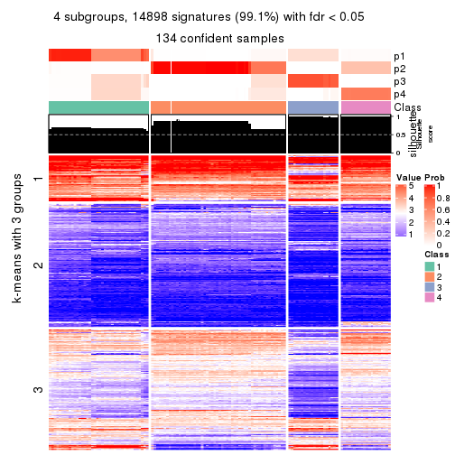
get_signatures(res, k = 5, scale_rows = FALSE)
get_signatures(res, k = 6, scale_rows = FALSE)
Compare the overlap of signatures from different k:
compare_signatures(res)
get_signature() returns a data frame invisibly. TO get the list of signatures, the function
call should be assigned to a variable explicitly. In following code, if plot argument is set
to FALSE, no heatmap is plotted while only the differential analysis is performed.
# code only for demonstration
tb = get_signature(res, k = ..., plot = FALSE)
An example of the output of tb is:
#> which_row fdr mean_1 mean_2 scaled_mean_1 scaled_mean_2 km
#> 1 38 0.042760348 8.373488 9.131774 -0.5533452 0.5164555 1
#> 2 40 0.018707592 7.106213 8.469186 -0.6173731 0.5762149 1
#> 3 55 0.019134737 10.221463 11.207825 -0.6159697 0.5749050 1
#> 4 59 0.006059896 5.921854 7.869574 -0.6899429 0.6439467 1
#> 5 60 0.018055526 8.928898 10.211722 -0.6204761 0.5791110 1
#> 6 98 0.009384629 15.714769 14.887706 0.6635654 -0.6193277 2
...
The columns in tb are:
which_row: row indices corresponding to the input matrix.fdr: FDR for the differential test. mean_x: The mean value in group x.scaled_mean_x: The mean value in group x after rows are scaled.km: Row groups if k-means clustering is applied to rows.UMAP plot which shows how samples are separated.
dimension_reduction(res, k = 2, method = "UMAP")
dimension_reduction(res, k = 3, method = "UMAP")
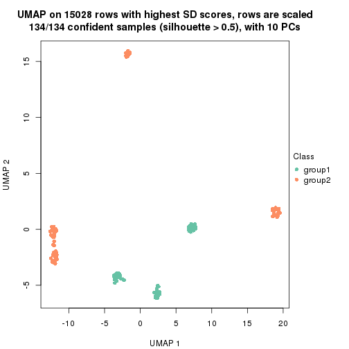
dimension_reduction(res, k = 4, method = "UMAP")
dimension_reduction(res, k = 5, method = "UMAP")
dimension_reduction(res, k = 6, method = "UMAP")
Following heatmap shows how subgroups are split when increasing k:
collect_classes(res)
If matrix rows can be associated to genes, consider to use GO_Enrichment(res,
...) to perform function enrichment for the signature genes.
The object with results only for a single top-value method and a single partition method can be extracted as:
res = res_list["SD", "skmeans"]
# you can also extract it by
# res = res_list["SD:skmeans"]
A summary of res and all the functions that can be applied to it:
res
#> A 'ConsensusPartition' object with k = 2, 3, 4, 5, 6.
#> On a matrix with 15028 rows and 134 columns.
#> Top rows (1000, 2000, 3000, 4000, 5000) are extracted by 'SD' method.
#> Subgroups are detected by 'skmeans' method.
#> Performed in total 1250 partitions by row resampling.
#> Best k for subgroups seems to be 6.
#>
#> Following methods can be applied to this 'ConsensusPartition' object:
#> [1] "cola_report" "collect_classes" "collect_plots"
#> [4] "collect_stats" "colnames" "compare_signatures"
#> [7] "consensus_heatmap" "dimension_reduction" "functional_enrichment"
#> [10] "get_anno_col" "get_anno" "get_classes"
#> [13] "get_consensus" "get_matrix" "get_membership"
#> [16] "get_param" "get_signatures" "get_stats"
#> [19] "is_best_k" "is_stable_k" "membership_heatmap"
#> [22] "ncol" "nrow" "plot_ecdf"
#> [25] "rownames" "select_partition_number" "show"
#> [28] "suggest_best_k" "test_to_known_factors"
collect_plots() function collects all the plots made from res for all k (number of partitions)
into one single page to provide an easy and fast comparison between different k.
collect_plots(res)
The plots are:
k and the heatmap of
predicted classes for each k.k.k.k.All the plots in panels can be made by individual functions and they are plotted later in this section.
select_partition_number() produces several plots showing different
statistics for choosing “optimized” k. There are following statistics:
k;k, the area increased is defined as \(A_k - A_{k-1}\).The detailed explanations of these statistics can be found in the cola vignette.
Generally speaking, lower PAC score, higher mean silhouette score or higher
concordance corresponds to better partition. Rand index and Jaccard index
measure how similar the current partition is compared to partition with k-1.
If they are too similar, we won't accept k is better than k-1.
select_partition_number(res)
The numeric values for all these statistics can be obtained by get_stats().
get_stats(res)
#> k 1-PAC mean_silhouette concordance area_increased Rand Jaccard
#> 2 2 1.000 0.998 0.999 0.4989 0.502 0.502
#> 3 3 1.000 0.995 0.991 0.2409 0.879 0.758
#> 4 4 0.894 0.900 0.920 0.1436 0.906 0.753
#> 5 5 0.936 0.968 0.961 0.0690 0.960 0.859
#> 6 6 1.000 0.985 0.987 0.0771 0.937 0.745
suggest_best_k() suggests the best \(k\) based on these statistics. The rules are as follows:
NA.suggest_best_k(res)
#> [1] 6
#> attr(,"optional")
#> [1] 2 3 5
There is also optional best \(k\) = 2 3 5 that is worth to check.
Following shows the table of the partitions (You need to click the show/hide
code output link to see it). The membership matrix (columns with name p*)
is inferred by
clue::cl_consensus()
function with the SE method. Basically the value in the membership matrix
represents the probability to belong to a certain group. The finall class
label for an item is determined with the group with highest probability it
belongs to.
In get_classes() function, the entropy is calculated from the membership
matrix and the silhouette score is calculated from the consensus matrix.
cbind(get_classes(res, k = 2), get_membership(res, k = 2))
#> class entropy silhouette p1 p2
#> SRR1550981 1 0.000 1.000 1.0 0.0
#> SRR1550982 1 0.000 1.000 1.0 0.0
#> SRR1550983 1 0.000 1.000 1.0 0.0
#> SRR1550984 1 0.000 1.000 1.0 0.0
#> SRR1550986 1 0.000 1.000 1.0 0.0
#> SRR1550985 1 0.000 1.000 1.0 0.0
#> SRR1550988 2 0.000 0.999 0.0 1.0
#> SRR1550987 1 0.000 1.000 1.0 0.0
#> SRR1550989 2 0.000 0.999 0.0 1.0
#> SRR1550990 2 0.000 0.999 0.0 1.0
#> SRR1550991 2 0.000 0.999 0.0 1.0
#> SRR1550992 1 0.000 1.000 1.0 0.0
#> SRR1550994 2 0.000 0.999 0.0 1.0
#> SRR1550993 1 0.000 1.000 1.0 0.0
#> SRR1550995 2 0.000 0.999 0.0 1.0
#> SRR1550996 2 0.000 0.999 0.0 1.0
#> SRR1550997 1 0.000 1.000 1.0 0.0
#> SRR1550998 1 0.000 1.000 1.0 0.0
#> SRR1551000 2 0.000 0.999 0.0 1.0
#> SRR1550999 2 0.000 0.999 0.0 1.0
#> SRR1551001 2 0.000 0.999 0.0 1.0
#> SRR1551002 1 0.000 1.000 1.0 0.0
#> SRR1551003 1 0.000 1.000 1.0 0.0
#> SRR1551004 2 0.000 0.999 0.0 1.0
#> SRR1551006 2 0.000 0.999 0.0 1.0
#> SRR1551005 2 0.000 0.999 0.0 1.0
#> SRR1551007 2 0.000 0.999 0.0 1.0
#> SRR1551008 1 0.000 1.000 1.0 0.0
#> SRR1551009 1 0.000 1.000 1.0 0.0
#> SRR1551010 2 0.000 0.999 0.0 1.0
#> SRR1551012 2 0.000 0.999 0.0 1.0
#> SRR1551011 2 0.000 0.999 0.0 1.0
#> SRR1551013 1 0.000 1.000 1.0 0.0
#> SRR1551014 1 0.000 1.000 1.0 0.0
#> SRR1551015 2 0.000 0.999 0.0 1.0
#> SRR1551016 2 0.000 0.999 0.0 1.0
#> SRR1551017 2 0.000 0.999 0.0 1.0
#> SRR1551018 2 0.000 0.999 0.0 1.0
#> SRR1551019 1 0.000 1.000 1.0 0.0
#> SRR1551021 1 0.000 1.000 1.0 0.0
#> SRR1551022 2 0.000 0.999 0.0 1.0
#> SRR1551023 2 0.000 0.999 0.0 1.0
#> SRR1551020 1 0.000 1.000 1.0 0.0
#> SRR1551024 2 0.469 0.889 0.1 0.9
#> SRR1551026 1 0.000 1.000 1.0 0.0
#> SRR1551025 1 0.000 1.000 1.0 0.0
#> SRR1551027 1 0.000 1.000 1.0 0.0
#> SRR1551028 2 0.000 0.999 0.0 1.0
#> SRR1551029 2 0.000 0.999 0.0 1.0
#> SRR1551030 2 0.000 0.999 0.0 1.0
#> SRR1551031 2 0.000 0.999 0.0 1.0
#> SRR1551032 1 0.000 1.000 1.0 0.0
#> SRR1551034 1 0.000 1.000 1.0 0.0
#> SRR1551033 1 0.000 1.000 1.0 0.0
#> SRR1551035 2 0.000 0.999 0.0 1.0
#> SRR1551036 2 0.000 0.999 0.0 1.0
#> SRR1551037 2 0.000 0.999 0.0 1.0
#> SRR1551038 2 0.000 0.999 0.0 1.0
#> SRR1551039 1 0.000 1.000 1.0 0.0
#> SRR1551040 1 0.000 1.000 1.0 0.0
#> SRR1551041 1 0.000 1.000 1.0 0.0
#> SRR1551042 2 0.000 0.999 0.0 1.0
#> SRR1551043 2 0.000 0.999 0.0 1.0
#> SRR1551044 2 0.000 0.999 0.0 1.0
#> SRR1551045 2 0.000 0.999 0.0 1.0
#> SRR1551046 1 0.000 1.000 1.0 0.0
#> SRR1551047 1 0.000 1.000 1.0 0.0
#> SRR1551048 1 0.000 1.000 1.0 0.0
#> SRR1551049 2 0.000 0.999 0.0 1.0
#> SRR1551050 2 0.000 0.999 0.0 1.0
#> SRR1551051 2 0.000 0.999 0.0 1.0
#> SRR1551052 2 0.000 0.999 0.0 1.0
#> SRR1551053 1 0.000 1.000 1.0 0.0
#> SRR1551054 1 0.000 1.000 1.0 0.0
#> SRR1551055 1 0.000 1.000 1.0 0.0
#> SRR1551056 2 0.000 0.999 0.0 1.0
#> SRR1551057 2 0.000 0.999 0.0 1.0
#> SRR1551058 2 0.000 0.999 0.0 1.0
#> SRR1551059 2 0.000 0.999 0.0 1.0
#> SRR1551060 1 0.000 1.000 1.0 0.0
#> SRR1551061 1 0.000 1.000 1.0 0.0
#> SRR1551062 1 0.000 1.000 1.0 0.0
#> SRR1551063 2 0.000 0.999 0.0 1.0
#> SRR1551064 2 0.000 0.999 0.0 1.0
#> SRR1551065 2 0.000 0.999 0.0 1.0
#> SRR1551066 2 0.000 0.999 0.0 1.0
#> SRR1551067 1 0.000 1.000 1.0 0.0
#> SRR1551068 1 0.000 1.000 1.0 0.0
#> SRR1551069 1 0.000 1.000 1.0 0.0
#> SRR1551070 2 0.000 0.999 0.0 1.0
#> SRR1551071 2 0.000 0.999 0.0 1.0
#> SRR1551072 2 0.000 0.999 0.0 1.0
#> SRR1551073 2 0.000 0.999 0.0 1.0
#> SRR1551074 1 0.000 1.000 1.0 0.0
#> SRR1551075 1 0.000 1.000 1.0 0.0
#> SRR1551076 1 0.000 1.000 1.0 0.0
#> SRR1551077 2 0.000 0.999 0.0 1.0
#> SRR1551078 2 0.000 0.999 0.0 1.0
#> SRR1551079 2 0.000 0.999 0.0 1.0
#> SRR1551080 2 0.000 0.999 0.0 1.0
#> SRR1551081 1 0.000 1.000 1.0 0.0
#> SRR1551082 1 0.000 1.000 1.0 0.0
#> SRR1551083 1 0.000 1.000 1.0 0.0
#> SRR1551084 2 0.000 0.999 0.0 1.0
#> SRR1551085 2 0.000 0.999 0.0 1.0
#> SRR1551086 2 0.000 0.999 0.0 1.0
#> SRR1551088 1 0.000 1.000 1.0 0.0
#> SRR1551087 1 0.000 1.000 1.0 0.0
#> SRR1551089 1 0.000 1.000 1.0 0.0
#> SRR1551090 2 0.000 0.999 0.0 1.0
#> SRR1551091 2 0.000 0.999 0.0 1.0
#> SRR1551092 2 0.000 0.999 0.0 1.0
#> SRR1551093 2 0.000 0.999 0.0 1.0
#> SRR1551094 1 0.000 1.000 1.0 0.0
#> SRR1551095 1 0.000 1.000 1.0 0.0
#> SRR1551096 1 0.000 1.000 1.0 0.0
#> SRR1551097 2 0.000 0.999 0.0 1.0
#> SRR1551098 2 0.000 0.999 0.0 1.0
#> SRR1551099 2 0.000 0.999 0.0 1.0
#> SRR1551101 1 0.000 1.000 1.0 0.0
#> SRR1551100 1 0.000 1.000 1.0 0.0
#> SRR1551102 1 0.000 1.000 1.0 0.0
#> SRR1551103 2 0.000 0.999 0.0 1.0
#> SRR1551104 2 0.000 0.999 0.0 1.0
#> SRR1551105 2 0.000 0.999 0.0 1.0
#> SRR1551106 2 0.000 0.999 0.0 1.0
#> SRR1551107 1 0.000 1.000 1.0 0.0
#> SRR1551108 1 0.000 1.000 1.0 0.0
#> SRR1551109 1 0.000 1.000 1.0 0.0
#> SRR1551110 2 0.000 0.999 0.0 1.0
#> SRR1551111 2 0.000 0.999 0.0 1.0
#> SRR1551112 2 0.000 0.999 0.0 1.0
#> SRR1551113 2 0.000 0.999 0.0 1.0
#> SRR1551114 1 0.000 1.000 1.0 0.0
cbind(get_classes(res, k = 3), get_membership(res, k = 3))
#> class entropy silhouette p1 p2 p3
#> SRR1550981 1 0.000 0.991 1.000 0.000 0.000
#> SRR1550982 1 0.000 0.991 1.000 0.000 0.000
#> SRR1550983 1 0.000 0.991 1.000 0.000 0.000
#> SRR1550984 1 0.000 0.991 1.000 0.000 0.000
#> SRR1550986 1 0.116 0.984 0.972 0.000 0.028
#> SRR1550985 1 0.000 0.991 1.000 0.000 0.000
#> SRR1550988 3 0.116 1.000 0.000 0.028 0.972
#> SRR1550987 1 0.000 0.991 1.000 0.000 0.000
#> SRR1550989 2 0.000 1.000 0.000 1.000 0.000
#> SRR1550990 2 0.000 1.000 0.000 1.000 0.000
#> SRR1550991 2 0.000 1.000 0.000 1.000 0.000
#> SRR1550992 1 0.116 0.984 0.972 0.000 0.028
#> SRR1550994 3 0.116 1.000 0.000 0.028 0.972
#> SRR1550993 1 0.000 0.991 1.000 0.000 0.000
#> SRR1550995 2 0.000 1.000 0.000 1.000 0.000
#> SRR1550996 2 0.000 1.000 0.000 1.000 0.000
#> SRR1550997 1 0.116 0.984 0.972 0.000 0.028
#> SRR1550998 1 0.000 0.991 1.000 0.000 0.000
#> SRR1551000 2 0.000 1.000 0.000 1.000 0.000
#> SRR1550999 3 0.116 1.000 0.000 0.028 0.972
#> SRR1551001 2 0.000 1.000 0.000 1.000 0.000
#> SRR1551002 1 0.116 0.984 0.972 0.000 0.028
#> SRR1551003 1 0.000 0.991 1.000 0.000 0.000
#> SRR1551004 3 0.116 1.000 0.000 0.028 0.972
#> SRR1551006 2 0.000 1.000 0.000 1.000 0.000
#> SRR1551005 2 0.000 1.000 0.000 1.000 0.000
#> SRR1551007 2 0.000 1.000 0.000 1.000 0.000
#> SRR1551008 1 0.116 0.984 0.972 0.000 0.028
#> SRR1551009 1 0.000 0.991 1.000 0.000 0.000
#> SRR1551010 3 0.116 1.000 0.000 0.028 0.972
#> SRR1551012 2 0.000 1.000 0.000 1.000 0.000
#> SRR1551011 2 0.000 1.000 0.000 1.000 0.000
#> SRR1551013 1 0.116 0.984 0.972 0.000 0.028
#> SRR1551014 1 0.000 0.991 1.000 0.000 0.000
#> SRR1551015 3 0.116 1.000 0.000 0.028 0.972
#> SRR1551016 2 0.000 1.000 0.000 1.000 0.000
#> SRR1551017 2 0.000 1.000 0.000 1.000 0.000
#> SRR1551018 2 0.000 1.000 0.000 1.000 0.000
#> SRR1551019 1 0.000 0.991 1.000 0.000 0.000
#> SRR1551021 1 0.000 0.991 1.000 0.000 0.000
#> SRR1551022 3 0.116 1.000 0.000 0.028 0.972
#> SRR1551023 2 0.000 1.000 0.000 1.000 0.000
#> SRR1551020 1 0.116 0.984 0.972 0.000 0.028
#> SRR1551024 2 0.000 1.000 0.000 1.000 0.000
#> SRR1551026 1 0.116 0.984 0.972 0.000 0.028
#> SRR1551025 1 0.116 0.984 0.972 0.000 0.028
#> SRR1551027 1 0.000 0.991 1.000 0.000 0.000
#> SRR1551028 3 0.116 1.000 0.000 0.028 0.972
#> SRR1551029 2 0.000 1.000 0.000 1.000 0.000
#> SRR1551030 2 0.000 1.000 0.000 1.000 0.000
#> SRR1551031 2 0.000 1.000 0.000 1.000 0.000
#> SRR1551032 1 0.116 0.984 0.972 0.000 0.028
#> SRR1551034 1 0.000 0.991 1.000 0.000 0.000
#> SRR1551033 1 0.116 0.984 0.972 0.000 0.028
#> SRR1551035 3 0.116 1.000 0.000 0.028 0.972
#> SRR1551036 2 0.000 1.000 0.000 1.000 0.000
#> SRR1551037 2 0.000 1.000 0.000 1.000 0.000
#> SRR1551038 2 0.000 1.000 0.000 1.000 0.000
#> SRR1551039 1 0.000 0.991 1.000 0.000 0.000
#> SRR1551040 1 0.116 0.984 0.972 0.000 0.028
#> SRR1551041 1 0.000 0.991 1.000 0.000 0.000
#> SRR1551042 3 0.116 1.000 0.000 0.028 0.972
#> SRR1551043 2 0.000 1.000 0.000 1.000 0.000
#> SRR1551044 2 0.000 1.000 0.000 1.000 0.000
#> SRR1551045 2 0.000 1.000 0.000 1.000 0.000
#> SRR1551046 1 0.000 0.991 1.000 0.000 0.000
#> SRR1551047 1 0.116 0.984 0.972 0.000 0.028
#> SRR1551048 1 0.000 0.991 1.000 0.000 0.000
#> SRR1551049 3 0.116 1.000 0.000 0.028 0.972
#> SRR1551050 2 0.000 1.000 0.000 1.000 0.000
#> SRR1551051 2 0.000 1.000 0.000 1.000 0.000
#> SRR1551052 2 0.000 1.000 0.000 1.000 0.000
#> SRR1551053 1 0.000 0.991 1.000 0.000 0.000
#> SRR1551054 1 0.116 0.984 0.972 0.000 0.028
#> SRR1551055 1 0.000 0.991 1.000 0.000 0.000
#> SRR1551056 3 0.116 1.000 0.000 0.028 0.972
#> SRR1551057 2 0.000 1.000 0.000 1.000 0.000
#> SRR1551058 2 0.000 1.000 0.000 1.000 0.000
#> SRR1551059 2 0.000 1.000 0.000 1.000 0.000
#> SRR1551060 1 0.000 0.991 1.000 0.000 0.000
#> SRR1551061 1 0.116 0.984 0.972 0.000 0.028
#> SRR1551062 1 0.000 0.991 1.000 0.000 0.000
#> SRR1551063 3 0.116 1.000 0.000 0.028 0.972
#> SRR1551064 2 0.000 1.000 0.000 1.000 0.000
#> SRR1551065 2 0.000 1.000 0.000 1.000 0.000
#> SRR1551066 2 0.000 1.000 0.000 1.000 0.000
#> SRR1551067 1 0.000 0.991 1.000 0.000 0.000
#> SRR1551068 1 0.116 0.984 0.972 0.000 0.028
#> SRR1551069 1 0.000 0.991 1.000 0.000 0.000
#> SRR1551070 3 0.116 1.000 0.000 0.028 0.972
#> SRR1551071 2 0.000 1.000 0.000 1.000 0.000
#> SRR1551072 2 0.000 1.000 0.000 1.000 0.000
#> SRR1551073 2 0.000 1.000 0.000 1.000 0.000
#> SRR1551074 1 0.000 0.991 1.000 0.000 0.000
#> SRR1551075 1 0.116 0.984 0.972 0.000 0.028
#> SRR1551076 1 0.000 0.991 1.000 0.000 0.000
#> SRR1551077 3 0.116 1.000 0.000 0.028 0.972
#> SRR1551078 2 0.000 1.000 0.000 1.000 0.000
#> SRR1551079 2 0.000 1.000 0.000 1.000 0.000
#> SRR1551080 2 0.000 1.000 0.000 1.000 0.000
#> SRR1551081 1 0.000 0.991 1.000 0.000 0.000
#> SRR1551082 1 0.116 0.984 0.972 0.000 0.028
#> SRR1551083 1 0.000 0.991 1.000 0.000 0.000
#> SRR1551084 3 0.116 1.000 0.000 0.028 0.972
#> SRR1551085 2 0.000 1.000 0.000 1.000 0.000
#> SRR1551086 2 0.000 1.000 0.000 1.000 0.000
#> SRR1551088 1 0.116 0.984 0.972 0.000 0.028
#> SRR1551087 1 0.000 0.991 1.000 0.000 0.000
#> SRR1551089 1 0.000 0.991 1.000 0.000 0.000
#> SRR1551090 3 0.116 1.000 0.000 0.028 0.972
#> SRR1551091 2 0.000 1.000 0.000 1.000 0.000
#> SRR1551092 2 0.000 1.000 0.000 1.000 0.000
#> SRR1551093 2 0.000 1.000 0.000 1.000 0.000
#> SRR1551094 1 0.000 0.991 1.000 0.000 0.000
#> SRR1551095 1 0.116 0.984 0.972 0.000 0.028
#> SRR1551096 1 0.000 0.991 1.000 0.000 0.000
#> SRR1551097 3 0.116 1.000 0.000 0.028 0.972
#> SRR1551098 2 0.000 1.000 0.000 1.000 0.000
#> SRR1551099 2 0.000 1.000 0.000 1.000 0.000
#> SRR1551101 1 0.116 0.984 0.972 0.000 0.028
#> SRR1551100 1 0.000 0.991 1.000 0.000 0.000
#> SRR1551102 1 0.000 0.991 1.000 0.000 0.000
#> SRR1551103 3 0.116 1.000 0.000 0.028 0.972
#> SRR1551104 2 0.000 1.000 0.000 1.000 0.000
#> SRR1551105 2 0.000 1.000 0.000 1.000 0.000
#> SRR1551106 2 0.000 1.000 0.000 1.000 0.000
#> SRR1551107 1 0.000 0.991 1.000 0.000 0.000
#> SRR1551108 1 0.116 0.984 0.972 0.000 0.028
#> SRR1551109 1 0.000 0.991 1.000 0.000 0.000
#> SRR1551110 3 0.116 1.000 0.000 0.028 0.972
#> SRR1551111 2 0.000 1.000 0.000 1.000 0.000
#> SRR1551112 2 0.000 1.000 0.000 1.000 0.000
#> SRR1551113 2 0.000 1.000 0.000 1.000 0.000
#> SRR1551114 1 0.000 0.991 1.000 0.000 0.000
cbind(get_classes(res, k = 4), get_membership(res, k = 4))
#> class entropy silhouette p1 p2 p3 p4
#> SRR1550981 1 0.1211 0.703 0.960 0.000 0.040 0.00
#> SRR1550982 1 0.1211 0.703 0.960 0.000 0.040 0.00
#> SRR1550983 1 0.1211 0.703 0.960 0.000 0.040 0.00
#> SRR1550984 1 0.1211 0.703 0.960 0.000 0.040 0.00
#> SRR1550986 3 0.0000 0.992 0.000 0.000 1.000 0.00
#> SRR1550985 1 0.1211 0.703 0.960 0.000 0.040 0.00
#> SRR1550988 4 0.0707 1.000 0.000 0.020 0.000 0.98
#> SRR1550987 1 0.5526 0.648 0.564 0.000 0.416 0.02
#> SRR1550989 2 0.0000 0.994 0.000 1.000 0.000 0.00
#> SRR1550990 2 0.0000 0.994 0.000 1.000 0.000 0.00
#> SRR1550991 2 0.0592 0.987 0.016 0.984 0.000 0.00
#> SRR1550992 3 0.0000 0.992 0.000 0.000 1.000 0.00
#> SRR1550994 4 0.0707 1.000 0.000 0.020 0.000 0.98
#> SRR1550993 1 0.5526 0.648 0.564 0.000 0.416 0.02
#> SRR1550995 2 0.0000 0.994 0.000 1.000 0.000 0.00
#> SRR1550996 2 0.0000 0.994 0.000 1.000 0.000 0.00
#> SRR1550997 3 0.0000 0.992 0.000 0.000 1.000 0.00
#> SRR1550998 1 0.5526 0.648 0.564 0.000 0.416 0.02
#> SRR1551000 2 0.0000 0.994 0.000 1.000 0.000 0.00
#> SRR1550999 4 0.0707 1.000 0.000 0.020 0.000 0.98
#> SRR1551001 2 0.0000 0.994 0.000 1.000 0.000 0.00
#> SRR1551002 3 0.0000 0.992 0.000 0.000 1.000 0.00
#> SRR1551003 1 0.5526 0.648 0.564 0.000 0.416 0.02
#> SRR1551004 4 0.0707 1.000 0.000 0.020 0.000 0.98
#> SRR1551006 2 0.0000 0.994 0.000 1.000 0.000 0.00
#> SRR1551005 2 0.0000 0.994 0.000 1.000 0.000 0.00
#> SRR1551007 2 0.0592 0.987 0.016 0.984 0.000 0.00
#> SRR1551008 3 0.0000 0.992 0.000 0.000 1.000 0.00
#> SRR1551009 1 0.5526 0.648 0.564 0.000 0.416 0.02
#> SRR1551010 4 0.0707 1.000 0.000 0.020 0.000 0.98
#> SRR1551012 2 0.0000 0.994 0.000 1.000 0.000 0.00
#> SRR1551011 2 0.0000 0.994 0.000 1.000 0.000 0.00
#> SRR1551013 3 0.0000 0.992 0.000 0.000 1.000 0.00
#> SRR1551014 1 0.5526 0.648 0.564 0.000 0.416 0.02
#> SRR1551015 4 0.0707 1.000 0.000 0.020 0.000 0.98
#> SRR1551016 2 0.0000 0.994 0.000 1.000 0.000 0.00
#> SRR1551017 2 0.0000 0.994 0.000 1.000 0.000 0.00
#> SRR1551018 2 0.0592 0.987 0.016 0.984 0.000 0.00
#> SRR1551019 1 0.3873 0.672 0.772 0.000 0.228 0.00
#> SRR1551021 1 0.5526 0.648 0.564 0.000 0.416 0.02
#> SRR1551022 4 0.0707 1.000 0.000 0.020 0.000 0.98
#> SRR1551023 2 0.0000 0.994 0.000 1.000 0.000 0.00
#> SRR1551020 3 0.0000 0.992 0.000 0.000 1.000 0.00
#> SRR1551024 2 0.3196 0.839 0.136 0.856 0.008 0.00
#> SRR1551026 3 0.0000 0.992 0.000 0.000 1.000 0.00
#> SRR1551025 3 0.0188 0.986 0.004 0.000 0.996 0.00
#> SRR1551027 1 0.5526 0.648 0.564 0.000 0.416 0.02
#> SRR1551028 4 0.0707 1.000 0.000 0.020 0.000 0.98
#> SRR1551029 2 0.0000 0.994 0.000 1.000 0.000 0.00
#> SRR1551030 2 0.0000 0.994 0.000 1.000 0.000 0.00
#> SRR1551031 2 0.0592 0.987 0.016 0.984 0.000 0.00
#> SRR1551032 3 0.2868 0.805 0.136 0.000 0.864 0.00
#> SRR1551034 1 0.5526 0.648 0.564 0.000 0.416 0.02
#> SRR1551033 3 0.0000 0.992 0.000 0.000 1.000 0.00
#> SRR1551035 4 0.0707 1.000 0.000 0.020 0.000 0.98
#> SRR1551036 2 0.0000 0.994 0.000 1.000 0.000 0.00
#> SRR1551037 2 0.0000 0.994 0.000 1.000 0.000 0.00
#> SRR1551038 2 0.0592 0.987 0.016 0.984 0.000 0.00
#> SRR1551039 1 0.1211 0.703 0.960 0.000 0.040 0.00
#> SRR1551040 3 0.0000 0.992 0.000 0.000 1.000 0.00
#> SRR1551041 1 0.5526 0.648 0.564 0.000 0.416 0.02
#> SRR1551042 4 0.0707 1.000 0.000 0.020 0.000 0.98
#> SRR1551043 2 0.0000 0.994 0.000 1.000 0.000 0.00
#> SRR1551044 2 0.0000 0.994 0.000 1.000 0.000 0.00
#> SRR1551045 2 0.0592 0.987 0.016 0.984 0.000 0.00
#> SRR1551046 1 0.1211 0.703 0.960 0.000 0.040 0.00
#> SRR1551047 3 0.0000 0.992 0.000 0.000 1.000 0.00
#> SRR1551048 1 0.5526 0.648 0.564 0.000 0.416 0.02
#> SRR1551049 4 0.0707 1.000 0.000 0.020 0.000 0.98
#> SRR1551050 2 0.0000 0.994 0.000 1.000 0.000 0.00
#> SRR1551051 2 0.0000 0.994 0.000 1.000 0.000 0.00
#> SRR1551052 2 0.0592 0.987 0.016 0.984 0.000 0.00
#> SRR1551053 1 0.1211 0.703 0.960 0.000 0.040 0.00
#> SRR1551054 3 0.0000 0.992 0.000 0.000 1.000 0.00
#> SRR1551055 1 0.5526 0.648 0.564 0.000 0.416 0.02
#> SRR1551056 4 0.0707 1.000 0.000 0.020 0.000 0.98
#> SRR1551057 2 0.0000 0.994 0.000 1.000 0.000 0.00
#> SRR1551058 2 0.0000 0.994 0.000 1.000 0.000 0.00
#> SRR1551059 2 0.0592 0.987 0.016 0.984 0.000 0.00
#> SRR1551060 1 0.1211 0.703 0.960 0.000 0.040 0.00
#> SRR1551061 3 0.0000 0.992 0.000 0.000 1.000 0.00
#> SRR1551062 1 0.5526 0.648 0.564 0.000 0.416 0.02
#> SRR1551063 4 0.0707 1.000 0.000 0.020 0.000 0.98
#> SRR1551064 2 0.0000 0.994 0.000 1.000 0.000 0.00
#> SRR1551065 2 0.0000 0.994 0.000 1.000 0.000 0.00
#> SRR1551066 2 0.0592 0.987 0.016 0.984 0.000 0.00
#> SRR1551067 1 0.1211 0.703 0.960 0.000 0.040 0.00
#> SRR1551068 3 0.0000 0.992 0.000 0.000 1.000 0.00
#> SRR1551069 1 0.5526 0.648 0.564 0.000 0.416 0.02
#> SRR1551070 4 0.0707 1.000 0.000 0.020 0.000 0.98
#> SRR1551071 2 0.0000 0.994 0.000 1.000 0.000 0.00
#> SRR1551072 2 0.0000 0.994 0.000 1.000 0.000 0.00
#> SRR1551073 2 0.0592 0.987 0.016 0.984 0.000 0.00
#> SRR1551074 1 0.1211 0.703 0.960 0.000 0.040 0.00
#> SRR1551075 3 0.0000 0.992 0.000 0.000 1.000 0.00
#> SRR1551076 1 0.5526 0.648 0.564 0.000 0.416 0.02
#> SRR1551077 4 0.0707 1.000 0.000 0.020 0.000 0.98
#> SRR1551078 2 0.0000 0.994 0.000 1.000 0.000 0.00
#> SRR1551079 2 0.0000 0.994 0.000 1.000 0.000 0.00
#> SRR1551080 2 0.0592 0.987 0.016 0.984 0.000 0.00
#> SRR1551081 1 0.1211 0.703 0.960 0.000 0.040 0.00
#> SRR1551082 3 0.0000 0.992 0.000 0.000 1.000 0.00
#> SRR1551083 1 0.5526 0.648 0.564 0.000 0.416 0.02
#> SRR1551084 4 0.0707 1.000 0.000 0.020 0.000 0.98
#> SRR1551085 2 0.0000 0.994 0.000 1.000 0.000 0.00
#> SRR1551086 2 0.0000 0.994 0.000 1.000 0.000 0.00
#> SRR1551088 3 0.0000 0.992 0.000 0.000 1.000 0.00
#> SRR1551087 1 0.1211 0.703 0.960 0.000 0.040 0.00
#> SRR1551089 1 0.5526 0.648 0.564 0.000 0.416 0.02
#> SRR1551090 4 0.0707 1.000 0.000 0.020 0.000 0.98
#> SRR1551091 2 0.0000 0.994 0.000 1.000 0.000 0.00
#> SRR1551092 2 0.0000 0.994 0.000 1.000 0.000 0.00
#> SRR1551093 2 0.0592 0.987 0.016 0.984 0.000 0.00
#> SRR1551094 1 0.1211 0.703 0.960 0.000 0.040 0.00
#> SRR1551095 3 0.0000 0.992 0.000 0.000 1.000 0.00
#> SRR1551096 1 0.5526 0.648 0.564 0.000 0.416 0.02
#> SRR1551097 4 0.0707 1.000 0.000 0.020 0.000 0.98
#> SRR1551098 2 0.0000 0.994 0.000 1.000 0.000 0.00
#> SRR1551099 2 0.0000 0.994 0.000 1.000 0.000 0.00
#> SRR1551101 3 0.0000 0.992 0.000 0.000 1.000 0.00
#> SRR1551100 1 0.1211 0.703 0.960 0.000 0.040 0.00
#> SRR1551102 1 0.5526 0.648 0.564 0.000 0.416 0.02
#> SRR1551103 4 0.0707 1.000 0.000 0.020 0.000 0.98
#> SRR1551104 2 0.0000 0.994 0.000 1.000 0.000 0.00
#> SRR1551105 2 0.0000 0.994 0.000 1.000 0.000 0.00
#> SRR1551106 2 0.0592 0.987 0.016 0.984 0.000 0.00
#> SRR1551107 1 0.1211 0.703 0.960 0.000 0.040 0.00
#> SRR1551108 3 0.0000 0.992 0.000 0.000 1.000 0.00
#> SRR1551109 1 0.5526 0.648 0.564 0.000 0.416 0.02
#> SRR1551110 4 0.0707 1.000 0.000 0.020 0.000 0.98
#> SRR1551111 2 0.0000 0.994 0.000 1.000 0.000 0.00
#> SRR1551112 2 0.0000 0.994 0.000 1.000 0.000 0.00
#> SRR1551113 2 0.0592 0.987 0.016 0.984 0.000 0.00
#> SRR1551114 1 0.1211 0.703 0.960 0.000 0.040 0.00
cbind(get_classes(res, k = 5), get_membership(res, k = 5))
#> class entropy silhouette p1 p2 p3 p4 p5
#> SRR1550981 5 0.127 0.980 0.052 0.000 0.000 0 0.948
#> SRR1550982 5 0.127 0.980 0.052 0.000 0.000 0 0.948
#> SRR1550983 5 0.127 0.980 0.052 0.000 0.000 0 0.948
#> SRR1550984 5 0.127 0.980 0.052 0.000 0.000 0 0.948
#> SRR1550986 3 0.000 0.990 0.000 0.000 1.000 0 0.000
#> SRR1550985 5 0.127 0.980 0.052 0.000 0.000 0 0.948
#> SRR1550988 4 0.000 1.000 0.000 0.000 0.000 1 0.000
#> SRR1550987 1 0.179 1.000 0.916 0.000 0.084 0 0.000
#> SRR1550989 2 0.000 0.964 0.000 1.000 0.000 0 0.000
#> SRR1550990 2 0.000 0.964 0.000 1.000 0.000 0 0.000
#> SRR1550991 2 0.303 0.902 0.084 0.864 0.000 0 0.052
#> SRR1550992 3 0.000 0.990 0.000 0.000 1.000 0 0.000
#> SRR1550994 4 0.000 1.000 0.000 0.000 0.000 1 0.000
#> SRR1550993 1 0.179 1.000 0.916 0.000 0.084 0 0.000
#> SRR1550995 2 0.000 0.964 0.000 1.000 0.000 0 0.000
#> SRR1550996 2 0.000 0.964 0.000 1.000 0.000 0 0.000
#> SRR1550997 3 0.000 0.990 0.000 0.000 1.000 0 0.000
#> SRR1550998 1 0.179 1.000 0.916 0.000 0.084 0 0.000
#> SRR1551000 2 0.000 0.964 0.000 1.000 0.000 0 0.000
#> SRR1550999 4 0.000 1.000 0.000 0.000 0.000 1 0.000
#> SRR1551001 2 0.000 0.964 0.000 1.000 0.000 0 0.000
#> SRR1551002 3 0.000 0.990 0.000 0.000 1.000 0 0.000
#> SRR1551003 1 0.179 1.000 0.916 0.000 0.084 0 0.000
#> SRR1551004 4 0.000 1.000 0.000 0.000 0.000 1 0.000
#> SRR1551006 2 0.000 0.964 0.000 1.000 0.000 0 0.000
#> SRR1551005 2 0.000 0.964 0.000 1.000 0.000 0 0.000
#> SRR1551007 2 0.303 0.902 0.084 0.864 0.000 0 0.052
#> SRR1551008 3 0.000 0.990 0.000 0.000 1.000 0 0.000
#> SRR1551009 1 0.179 1.000 0.916 0.000 0.084 0 0.000
#> SRR1551010 4 0.000 1.000 0.000 0.000 0.000 1 0.000
#> SRR1551012 2 0.000 0.964 0.000 1.000 0.000 0 0.000
#> SRR1551011 2 0.000 0.964 0.000 1.000 0.000 0 0.000
#> SRR1551013 3 0.000 0.990 0.000 0.000 1.000 0 0.000
#> SRR1551014 1 0.179 1.000 0.916 0.000 0.084 0 0.000
#> SRR1551015 4 0.000 1.000 0.000 0.000 0.000 1 0.000
#> SRR1551016 2 0.000 0.964 0.000 1.000 0.000 0 0.000
#> SRR1551017 2 0.000 0.964 0.000 1.000 0.000 0 0.000
#> SRR1551018 2 0.303 0.902 0.084 0.864 0.000 0 0.052
#> SRR1551019 5 0.498 0.544 0.052 0.000 0.308 0 0.640
#> SRR1551021 1 0.179 1.000 0.916 0.000 0.084 0 0.000
#> SRR1551022 4 0.000 1.000 0.000 0.000 0.000 1 0.000
#> SRR1551023 2 0.000 0.964 0.000 1.000 0.000 0 0.000
#> SRR1551020 3 0.000 0.990 0.000 0.000 1.000 0 0.000
#> SRR1551024 2 0.311 0.752 0.000 0.800 0.000 0 0.200
#> SRR1551026 3 0.000 0.990 0.000 0.000 1.000 0 0.000
#> SRR1551025 3 0.000 0.990 0.000 0.000 1.000 0 0.000
#> SRR1551027 1 0.179 1.000 0.916 0.000 0.084 0 0.000
#> SRR1551028 4 0.000 1.000 0.000 0.000 0.000 1 0.000
#> SRR1551029 2 0.000 0.964 0.000 1.000 0.000 0 0.000
#> SRR1551030 2 0.000 0.964 0.000 1.000 0.000 0 0.000
#> SRR1551031 2 0.303 0.902 0.084 0.864 0.000 0 0.052
#> SRR1551032 3 0.316 0.751 0.004 0.000 0.808 0 0.188
#> SRR1551034 1 0.179 1.000 0.916 0.000 0.084 0 0.000
#> SRR1551033 3 0.000 0.990 0.000 0.000 1.000 0 0.000
#> SRR1551035 4 0.000 1.000 0.000 0.000 0.000 1 0.000
#> SRR1551036 2 0.000 0.964 0.000 1.000 0.000 0 0.000
#> SRR1551037 2 0.000 0.964 0.000 1.000 0.000 0 0.000
#> SRR1551038 2 0.303 0.902 0.084 0.864 0.000 0 0.052
#> SRR1551039 5 0.127 0.980 0.052 0.000 0.000 0 0.948
#> SRR1551040 3 0.000 0.990 0.000 0.000 1.000 0 0.000
#> SRR1551041 1 0.179 1.000 0.916 0.000 0.084 0 0.000
#> SRR1551042 4 0.000 1.000 0.000 0.000 0.000 1 0.000
#> SRR1551043 2 0.000 0.964 0.000 1.000 0.000 0 0.000
#> SRR1551044 2 0.000 0.964 0.000 1.000 0.000 0 0.000
#> SRR1551045 2 0.303 0.902 0.084 0.864 0.000 0 0.052
#> SRR1551046 5 0.127 0.980 0.052 0.000 0.000 0 0.948
#> SRR1551047 3 0.000 0.990 0.000 0.000 1.000 0 0.000
#> SRR1551048 1 0.179 1.000 0.916 0.000 0.084 0 0.000
#> SRR1551049 4 0.000 1.000 0.000 0.000 0.000 1 0.000
#> SRR1551050 2 0.000 0.964 0.000 1.000 0.000 0 0.000
#> SRR1551051 2 0.000 0.964 0.000 1.000 0.000 0 0.000
#> SRR1551052 2 0.303 0.902 0.084 0.864 0.000 0 0.052
#> SRR1551053 5 0.127 0.980 0.052 0.000 0.000 0 0.948
#> SRR1551054 3 0.000 0.990 0.000 0.000 1.000 0 0.000
#> SRR1551055 1 0.179 1.000 0.916 0.000 0.084 0 0.000
#> SRR1551056 4 0.000 1.000 0.000 0.000 0.000 1 0.000
#> SRR1551057 2 0.000 0.964 0.000 1.000 0.000 0 0.000
#> SRR1551058 2 0.000 0.964 0.000 1.000 0.000 0 0.000
#> SRR1551059 2 0.303 0.902 0.084 0.864 0.000 0 0.052
#> SRR1551060 5 0.127 0.980 0.052 0.000 0.000 0 0.948
#> SRR1551061 3 0.000 0.990 0.000 0.000 1.000 0 0.000
#> SRR1551062 1 0.179 1.000 0.916 0.000 0.084 0 0.000
#> SRR1551063 4 0.000 1.000 0.000 0.000 0.000 1 0.000
#> SRR1551064 2 0.000 0.964 0.000 1.000 0.000 0 0.000
#> SRR1551065 2 0.000 0.964 0.000 1.000 0.000 0 0.000
#> SRR1551066 2 0.303 0.902 0.084 0.864 0.000 0 0.052
#> SRR1551067 5 0.127 0.980 0.052 0.000 0.000 0 0.948
#> SRR1551068 3 0.000 0.990 0.000 0.000 1.000 0 0.000
#> SRR1551069 1 0.179 1.000 0.916 0.000 0.084 0 0.000
#> SRR1551070 4 0.000 1.000 0.000 0.000 0.000 1 0.000
#> SRR1551071 2 0.000 0.964 0.000 1.000 0.000 0 0.000
#> SRR1551072 2 0.000 0.964 0.000 1.000 0.000 0 0.000
#> SRR1551073 2 0.303 0.902 0.084 0.864 0.000 0 0.052
#> SRR1551074 5 0.127 0.980 0.052 0.000 0.000 0 0.948
#> SRR1551075 3 0.000 0.990 0.000 0.000 1.000 0 0.000
#> SRR1551076 1 0.179 1.000 0.916 0.000 0.084 0 0.000
#> SRR1551077 4 0.000 1.000 0.000 0.000 0.000 1 0.000
#> SRR1551078 2 0.000 0.964 0.000 1.000 0.000 0 0.000
#> SRR1551079 2 0.000 0.964 0.000 1.000 0.000 0 0.000
#> SRR1551080 2 0.303 0.902 0.084 0.864 0.000 0 0.052
#> SRR1551081 5 0.127 0.980 0.052 0.000 0.000 0 0.948
#> SRR1551082 3 0.000 0.990 0.000 0.000 1.000 0 0.000
#> SRR1551083 1 0.179 1.000 0.916 0.000 0.084 0 0.000
#> SRR1551084 4 0.000 1.000 0.000 0.000 0.000 1 0.000
#> SRR1551085 2 0.000 0.964 0.000 1.000 0.000 0 0.000
#> SRR1551086 2 0.000 0.964 0.000 1.000 0.000 0 0.000
#> SRR1551088 3 0.000 0.990 0.000 0.000 1.000 0 0.000
#> SRR1551087 5 0.127 0.980 0.052 0.000 0.000 0 0.948
#> SRR1551089 1 0.179 1.000 0.916 0.000 0.084 0 0.000
#> SRR1551090 4 0.000 1.000 0.000 0.000 0.000 1 0.000
#> SRR1551091 2 0.000 0.964 0.000 1.000 0.000 0 0.000
#> SRR1551092 2 0.000 0.964 0.000 1.000 0.000 0 0.000
#> SRR1551093 2 0.303 0.902 0.084 0.864 0.000 0 0.052
#> SRR1551094 5 0.127 0.980 0.052 0.000 0.000 0 0.948
#> SRR1551095 3 0.000 0.990 0.000 0.000 1.000 0 0.000
#> SRR1551096 1 0.179 1.000 0.916 0.000 0.084 0 0.000
#> SRR1551097 4 0.000 1.000 0.000 0.000 0.000 1 0.000
#> SRR1551098 2 0.000 0.964 0.000 1.000 0.000 0 0.000
#> SRR1551099 2 0.000 0.964 0.000 1.000 0.000 0 0.000
#> SRR1551101 3 0.000 0.990 0.000 0.000 1.000 0 0.000
#> SRR1551100 5 0.127 0.980 0.052 0.000 0.000 0 0.948
#> SRR1551102 1 0.179 1.000 0.916 0.000 0.084 0 0.000
#> SRR1551103 4 0.000 1.000 0.000 0.000 0.000 1 0.000
#> SRR1551104 2 0.000 0.964 0.000 1.000 0.000 0 0.000
#> SRR1551105 2 0.000 0.964 0.000 1.000 0.000 0 0.000
#> SRR1551106 2 0.303 0.902 0.084 0.864 0.000 0 0.052
#> SRR1551107 5 0.127 0.980 0.052 0.000 0.000 0 0.948
#> SRR1551108 3 0.000 0.990 0.000 0.000 1.000 0 0.000
#> SRR1551109 1 0.179 1.000 0.916 0.000 0.084 0 0.000
#> SRR1551110 4 0.000 1.000 0.000 0.000 0.000 1 0.000
#> SRR1551111 2 0.000 0.964 0.000 1.000 0.000 0 0.000
#> SRR1551112 2 0.000 0.964 0.000 1.000 0.000 0 0.000
#> SRR1551113 2 0.303 0.902 0.084 0.864 0.000 0 0.052
#> SRR1551114 5 0.127 0.980 0.052 0.000 0.000 0 0.948
cbind(get_classes(res, k = 6), get_membership(res, k = 6))
#> class entropy silhouette p1 p2 p3 p4 p5 p6
#> SRR1550981 5 0.0146 0.980 0.004 0.000 0.000 0 0.996 0.000
#> SRR1550982 5 0.0146 0.980 0.004 0.000 0.000 0 0.996 0.000
#> SRR1550983 5 0.0146 0.980 0.004 0.000 0.000 0 0.996 0.000
#> SRR1550984 5 0.0146 0.980 0.004 0.000 0.000 0 0.996 0.000
#> SRR1550986 3 0.0000 0.989 0.000 0.000 1.000 0 0.000 0.000
#> SRR1550985 5 0.0146 0.980 0.004 0.000 0.000 0 0.996 0.000
#> SRR1550988 4 0.0000 1.000 0.000 0.000 0.000 1 0.000 0.000
#> SRR1550987 1 0.0260 1.000 0.992 0.000 0.008 0 0.000 0.000
#> SRR1550989 2 0.0146 0.989 0.004 0.996 0.000 0 0.000 0.000
#> SRR1550990 2 0.0291 0.989 0.004 0.992 0.000 0 0.004 0.000
#> SRR1550991 6 0.0865 1.000 0.000 0.036 0.000 0 0.000 0.964
#> SRR1550992 3 0.0000 0.989 0.000 0.000 1.000 0 0.000 0.000
#> SRR1550994 4 0.0000 1.000 0.000 0.000 0.000 1 0.000 0.000
#> SRR1550993 1 0.0260 1.000 0.992 0.000 0.008 0 0.000 0.000
#> SRR1550995 2 0.0146 0.989 0.004 0.996 0.000 0 0.000 0.000
#> SRR1550996 2 0.0291 0.989 0.004 0.992 0.000 0 0.004 0.000
#> SRR1550997 3 0.0000 0.989 0.000 0.000 1.000 0 0.000 0.000
#> SRR1550998 1 0.0260 1.000 0.992 0.000 0.008 0 0.000 0.000
#> SRR1551000 2 0.0146 0.989 0.004 0.996 0.000 0 0.000 0.000
#> SRR1550999 4 0.0000 1.000 0.000 0.000 0.000 1 0.000 0.000
#> SRR1551001 2 0.0291 0.989 0.004 0.992 0.000 0 0.004 0.000
#> SRR1551002 3 0.0000 0.989 0.000 0.000 1.000 0 0.000 0.000
#> SRR1551003 1 0.0260 1.000 0.992 0.000 0.008 0 0.000 0.000
#> SRR1551004 4 0.0000 1.000 0.000 0.000 0.000 1 0.000 0.000
#> SRR1551006 2 0.0291 0.989 0.004 0.992 0.000 0 0.004 0.000
#> SRR1551005 2 0.0146 0.989 0.004 0.996 0.000 0 0.000 0.000
#> SRR1551007 6 0.0865 1.000 0.000 0.036 0.000 0 0.000 0.964
#> SRR1551008 3 0.0000 0.989 0.000 0.000 1.000 0 0.000 0.000
#> SRR1551009 1 0.0260 1.000 0.992 0.000 0.008 0 0.000 0.000
#> SRR1551010 4 0.0000 1.000 0.000 0.000 0.000 1 0.000 0.000
#> SRR1551012 2 0.0291 0.989 0.004 0.992 0.000 0 0.004 0.000
#> SRR1551011 2 0.0146 0.989 0.004 0.996 0.000 0 0.000 0.000
#> SRR1551013 3 0.0000 0.989 0.000 0.000 1.000 0 0.000 0.000
#> SRR1551014 1 0.0260 1.000 0.992 0.000 0.008 0 0.000 0.000
#> SRR1551015 4 0.0000 1.000 0.000 0.000 0.000 1 0.000 0.000
#> SRR1551016 2 0.0000 0.989 0.000 1.000 0.000 0 0.000 0.000
#> SRR1551017 2 0.0291 0.989 0.004 0.992 0.000 0 0.004 0.000
#> SRR1551018 6 0.0865 1.000 0.000 0.036 0.000 0 0.000 0.964
#> SRR1551019 5 0.4244 0.565 0.004 0.000 0.280 0 0.680 0.036
#> SRR1551021 1 0.0260 1.000 0.992 0.000 0.008 0 0.000 0.000
#> SRR1551022 4 0.0000 1.000 0.000 0.000 0.000 1 0.000 0.000
#> SRR1551023 2 0.0146 0.989 0.004 0.996 0.000 0 0.000 0.000
#> SRR1551020 3 0.0000 0.989 0.000 0.000 1.000 0 0.000 0.000
#> SRR1551024 2 0.3104 0.754 0.000 0.800 0.000 0 0.184 0.016
#> SRR1551026 3 0.0000 0.989 0.000 0.000 1.000 0 0.000 0.000
#> SRR1551025 3 0.0865 0.963 0.000 0.000 0.964 0 0.000 0.036
#> SRR1551027 1 0.0260 1.000 0.992 0.000 0.008 0 0.000 0.000
#> SRR1551028 4 0.0000 1.000 0.000 0.000 0.000 1 0.000 0.000
#> SRR1551029 2 0.0146 0.989 0.004 0.996 0.000 0 0.000 0.000
#> SRR1551030 2 0.0291 0.989 0.004 0.992 0.000 0 0.004 0.000
#> SRR1551031 6 0.0865 1.000 0.000 0.036 0.000 0 0.000 0.964
#> SRR1551032 3 0.3388 0.754 0.000 0.000 0.792 0 0.172 0.036
#> SRR1551034 1 0.0260 1.000 0.992 0.000 0.008 0 0.000 0.000
#> SRR1551033 3 0.0000 0.989 0.000 0.000 1.000 0 0.000 0.000
#> SRR1551035 4 0.0000 1.000 0.000 0.000 0.000 1 0.000 0.000
#> SRR1551036 2 0.0146 0.989 0.004 0.996 0.000 0 0.000 0.000
#> SRR1551037 2 0.0291 0.989 0.004 0.992 0.000 0 0.004 0.000
#> SRR1551038 6 0.0865 1.000 0.000 0.036 0.000 0 0.000 0.964
#> SRR1551039 5 0.0146 0.980 0.004 0.000 0.000 0 0.996 0.000
#> SRR1551040 3 0.0000 0.989 0.000 0.000 1.000 0 0.000 0.000
#> SRR1551041 1 0.0260 1.000 0.992 0.000 0.008 0 0.000 0.000
#> SRR1551042 4 0.0000 1.000 0.000 0.000 0.000 1 0.000 0.000
#> SRR1551043 2 0.0146 0.989 0.004 0.996 0.000 0 0.000 0.000
#> SRR1551044 2 0.0291 0.989 0.004 0.992 0.000 0 0.004 0.000
#> SRR1551045 6 0.0865 1.000 0.000 0.036 0.000 0 0.000 0.964
#> SRR1551046 5 0.0146 0.980 0.004 0.000 0.000 0 0.996 0.000
#> SRR1551047 3 0.0000 0.989 0.000 0.000 1.000 0 0.000 0.000
#> SRR1551048 1 0.0260 1.000 0.992 0.000 0.008 0 0.000 0.000
#> SRR1551049 4 0.0000 1.000 0.000 0.000 0.000 1 0.000 0.000
#> SRR1551050 2 0.0146 0.989 0.004 0.996 0.000 0 0.000 0.000
#> SRR1551051 2 0.0291 0.989 0.004 0.992 0.000 0 0.004 0.000
#> SRR1551052 6 0.0865 1.000 0.000 0.036 0.000 0 0.000 0.964
#> SRR1551053 5 0.0146 0.980 0.004 0.000 0.000 0 0.996 0.000
#> SRR1551054 3 0.0000 0.989 0.000 0.000 1.000 0 0.000 0.000
#> SRR1551055 1 0.0260 1.000 0.992 0.000 0.008 0 0.000 0.000
#> SRR1551056 4 0.0000 1.000 0.000 0.000 0.000 1 0.000 0.000
#> SRR1551057 2 0.0146 0.989 0.004 0.996 0.000 0 0.000 0.000
#> SRR1551058 2 0.0291 0.989 0.004 0.992 0.000 0 0.004 0.000
#> SRR1551059 6 0.0865 1.000 0.000 0.036 0.000 0 0.000 0.964
#> SRR1551060 5 0.0146 0.980 0.004 0.000 0.000 0 0.996 0.000
#> SRR1551061 3 0.0000 0.989 0.000 0.000 1.000 0 0.000 0.000
#> SRR1551062 1 0.0260 1.000 0.992 0.000 0.008 0 0.000 0.000
#> SRR1551063 4 0.0000 1.000 0.000 0.000 0.000 1 0.000 0.000
#> SRR1551064 2 0.0146 0.989 0.004 0.996 0.000 0 0.000 0.000
#> SRR1551065 2 0.0291 0.989 0.004 0.992 0.000 0 0.004 0.000
#> SRR1551066 6 0.0865 1.000 0.000 0.036 0.000 0 0.000 0.964
#> SRR1551067 5 0.0146 0.980 0.004 0.000 0.000 0 0.996 0.000
#> SRR1551068 3 0.0000 0.989 0.000 0.000 1.000 0 0.000 0.000
#> SRR1551069 1 0.0260 1.000 0.992 0.000 0.008 0 0.000 0.000
#> SRR1551070 4 0.0000 1.000 0.000 0.000 0.000 1 0.000 0.000
#> SRR1551071 2 0.0146 0.989 0.004 0.996 0.000 0 0.000 0.000
#> SRR1551072 2 0.0291 0.989 0.004 0.992 0.000 0 0.004 0.000
#> SRR1551073 6 0.0865 1.000 0.000 0.036 0.000 0 0.000 0.964
#> SRR1551074 5 0.0146 0.980 0.004 0.000 0.000 0 0.996 0.000
#> SRR1551075 3 0.0000 0.989 0.000 0.000 1.000 0 0.000 0.000
#> SRR1551076 1 0.0260 1.000 0.992 0.000 0.008 0 0.000 0.000
#> SRR1551077 4 0.0000 1.000 0.000 0.000 0.000 1 0.000 0.000
#> SRR1551078 2 0.0146 0.989 0.004 0.996 0.000 0 0.000 0.000
#> SRR1551079 2 0.0291 0.989 0.004 0.992 0.000 0 0.004 0.000
#> SRR1551080 6 0.0865 1.000 0.000 0.036 0.000 0 0.000 0.964
#> SRR1551081 5 0.0146 0.980 0.004 0.000 0.000 0 0.996 0.000
#> SRR1551082 3 0.0000 0.989 0.000 0.000 1.000 0 0.000 0.000
#> SRR1551083 1 0.0260 1.000 0.992 0.000 0.008 0 0.000 0.000
#> SRR1551084 4 0.0000 1.000 0.000 0.000 0.000 1 0.000 0.000
#> SRR1551085 2 0.0146 0.989 0.004 0.996 0.000 0 0.000 0.000
#> SRR1551086 2 0.0291 0.989 0.004 0.992 0.000 0 0.004 0.000
#> SRR1551088 3 0.0000 0.989 0.000 0.000 1.000 0 0.000 0.000
#> SRR1551087 5 0.0146 0.980 0.004 0.000 0.000 0 0.996 0.000
#> SRR1551089 1 0.0260 1.000 0.992 0.000 0.008 0 0.000 0.000
#> SRR1551090 4 0.0000 1.000 0.000 0.000 0.000 1 0.000 0.000
#> SRR1551091 2 0.0146 0.989 0.004 0.996 0.000 0 0.000 0.000
#> SRR1551092 2 0.0291 0.989 0.004 0.992 0.000 0 0.004 0.000
#> SRR1551093 6 0.0865 1.000 0.000 0.036 0.000 0 0.000 0.964
#> SRR1551094 5 0.0146 0.980 0.004 0.000 0.000 0 0.996 0.000
#> SRR1551095 3 0.0000 0.989 0.000 0.000 1.000 0 0.000 0.000
#> SRR1551096 1 0.0260 1.000 0.992 0.000 0.008 0 0.000 0.000
#> SRR1551097 4 0.0000 1.000 0.000 0.000 0.000 1 0.000 0.000
#> SRR1551098 2 0.0146 0.989 0.004 0.996 0.000 0 0.000 0.000
#> SRR1551099 2 0.0291 0.989 0.004 0.992 0.000 0 0.004 0.000
#> SRR1551101 3 0.0000 0.989 0.000 0.000 1.000 0 0.000 0.000
#> SRR1551100 5 0.0146 0.980 0.004 0.000 0.000 0 0.996 0.000
#> SRR1551102 1 0.0260 1.000 0.992 0.000 0.008 0 0.000 0.000
#> SRR1551103 4 0.0000 1.000 0.000 0.000 0.000 1 0.000 0.000
#> SRR1551104 2 0.0146 0.989 0.004 0.996 0.000 0 0.000 0.000
#> SRR1551105 2 0.0291 0.989 0.004 0.992 0.000 0 0.004 0.000
#> SRR1551106 6 0.0865 1.000 0.000 0.036 0.000 0 0.000 0.964
#> SRR1551107 5 0.0146 0.980 0.004 0.000 0.000 0 0.996 0.000
#> SRR1551108 3 0.0000 0.989 0.000 0.000 1.000 0 0.000 0.000
#> SRR1551109 1 0.0260 1.000 0.992 0.000 0.008 0 0.000 0.000
#> SRR1551110 4 0.0000 1.000 0.000 0.000 0.000 1 0.000 0.000
#> SRR1551111 2 0.0146 0.989 0.004 0.996 0.000 0 0.000 0.000
#> SRR1551112 2 0.0291 0.989 0.004 0.992 0.000 0 0.004 0.000
#> SRR1551113 6 0.0865 1.000 0.000 0.036 0.000 0 0.000 0.964
#> SRR1551114 5 0.0146 0.980 0.004 0.000 0.000 0 0.996 0.000
Heatmaps for the consensus matrix. It visualizes the probability of two samples to be in a same group.
consensus_heatmap(res, k = 2)

consensus_heatmap(res, k = 3)
consensus_heatmap(res, k = 4)
consensus_heatmap(res, k = 5)
consensus_heatmap(res, k = 6)
Heatmaps for the membership of samples in all partitions to see how consistent they are:
membership_heatmap(res, k = 2)
membership_heatmap(res, k = 3)
membership_heatmap(res, k = 4)
membership_heatmap(res, k = 5)
membership_heatmap(res, k = 6)
As soon as we have had the classes for columns, we can look for signatures which are significantly different between classes which can be candidate marks for certain classes. Following are the heatmaps for signatures.
Signature heatmaps where rows are scaled:
get_signatures(res, k = 2)
get_signatures(res, k = 3)
get_signatures(res, k = 4)
get_signatures(res, k = 5)

get_signatures(res, k = 6)
Signature heatmaps where rows are not scaled:
get_signatures(res, k = 2, scale_rows = FALSE)
get_signatures(res, k = 3, scale_rows = FALSE)
get_signatures(res, k = 4, scale_rows = FALSE)
get_signatures(res, k = 5, scale_rows = FALSE)
get_signatures(res, k = 6, scale_rows = FALSE)
Compare the overlap of signatures from different k:
compare_signatures(res)
get_signature() returns a data frame invisibly. TO get the list of signatures, the function
call should be assigned to a variable explicitly. In following code, if plot argument is set
to FALSE, no heatmap is plotted while only the differential analysis is performed.
# code only for demonstration
tb = get_signature(res, k = ..., plot = FALSE)
An example of the output of tb is:
#> which_row fdr mean_1 mean_2 scaled_mean_1 scaled_mean_2 km
#> 1 38 0.042760348 8.373488 9.131774 -0.5533452 0.5164555 1
#> 2 40 0.018707592 7.106213 8.469186 -0.6173731 0.5762149 1
#> 3 55 0.019134737 10.221463 11.207825 -0.6159697 0.5749050 1
#> 4 59 0.006059896 5.921854 7.869574 -0.6899429 0.6439467 1
#> 5 60 0.018055526 8.928898 10.211722 -0.6204761 0.5791110 1
#> 6 98 0.009384629 15.714769 14.887706 0.6635654 -0.6193277 2
...
The columns in tb are:
which_row: row indices corresponding to the input matrix.fdr: FDR for the differential test. mean_x: The mean value in group x.scaled_mean_x: The mean value in group x after rows are scaled.km: Row groups if k-means clustering is applied to rows.UMAP plot which shows how samples are separated.
dimension_reduction(res, k = 2, method = "UMAP")
dimension_reduction(res, k = 3, method = "UMAP")
dimension_reduction(res, k = 4, method = "UMAP")
dimension_reduction(res, k = 5, method = "UMAP")
dimension_reduction(res, k = 6, method = "UMAP")
Following heatmap shows how subgroups are split when increasing k:
collect_classes(res)
If matrix rows can be associated to genes, consider to use GO_Enrichment(res,
...) to perform function enrichment for the signature genes.
The object with results only for a single top-value method and a single partition method can be extracted as:
res = res_list["SD", "pam"]
# you can also extract it by
# res = res_list["SD:pam"]
A summary of res and all the functions that can be applied to it:
res
#> A 'ConsensusPartition' object with k = 2, 3, 4, 5, 6.
#> On a matrix with 15028 rows and 134 columns.
#> Top rows (1000, 2000, 3000, 4000, 5000) are extracted by 'SD' method.
#> Subgroups are detected by 'pam' method.
#> Performed in total 1250 partitions by row resampling.
#> Best k for subgroups seems to be 6.
#>
#> Following methods can be applied to this 'ConsensusPartition' object:
#> [1] "cola_report" "collect_classes" "collect_plots"
#> [4] "collect_stats" "colnames" "compare_signatures"
#> [7] "consensus_heatmap" "dimension_reduction" "functional_enrichment"
#> [10] "get_anno_col" "get_anno" "get_classes"
#> [13] "get_consensus" "get_matrix" "get_membership"
#> [16] "get_param" "get_signatures" "get_stats"
#> [19] "is_best_k" "is_stable_k" "membership_heatmap"
#> [22] "ncol" "nrow" "plot_ecdf"
#> [25] "rownames" "select_partition_number" "show"
#> [28] "suggest_best_k" "test_to_known_factors"
collect_plots() function collects all the plots made from res for all k (number of partitions)
into one single page to provide an easy and fast comparison between different k.
collect_plots(res)
The plots are:
k and the heatmap of
predicted classes for each k.k.k.k.All the plots in panels can be made by individual functions and they are plotted later in this section.
select_partition_number() produces several plots showing different
statistics for choosing “optimized” k. There are following statistics:
k;k, the area increased is defined as \(A_k - A_{k-1}\).The detailed explanations of these statistics can be found in the cola vignette.
Generally speaking, lower PAC score, higher mean silhouette score or higher
concordance corresponds to better partition. Rand index and Jaccard index
measure how similar the current partition is compared to partition with k-1.
If they are too similar, we won't accept k is better than k-1.
select_partition_number(res)
The numeric values for all these statistics can be obtained by get_stats().
get_stats(res)
#> k 1-PAC mean_silhouette concordance area_increased Rand Jaccard
#> 2 2 0.607 0.881 0.934 0.3425 0.704 0.704
#> 3 3 1.000 0.989 0.996 0.7178 0.687 0.562
#> 4 4 1.000 0.991 0.997 0.2075 0.877 0.702
#> 5 5 1.000 0.997 0.999 0.0630 0.947 0.821
#> 6 6 1.000 0.995 0.998 0.0831 0.937 0.744
suggest_best_k() suggests the best \(k\) based on these statistics. The rules are as follows:
NA.suggest_best_k(res)
#> [1] 6
#> attr(,"optional")
#> [1] 3 4 5
There is also optional best \(k\) = 3 4 5 that is worth to check.
Following shows the table of the partitions (You need to click the show/hide
code output link to see it). The membership matrix (columns with name p*)
is inferred by
clue::cl_consensus()
function with the SE method. Basically the value in the membership matrix
represents the probability to belong to a certain group. The finall class
label for an item is determined with the group with highest probability it
belongs to.
In get_classes() function, the entropy is calculated from the membership
matrix and the silhouette score is calculated from the consensus matrix.
cbind(get_classes(res, k = 2), get_membership(res, k = 2))
#> class entropy silhouette p1 p2
#> SRR1550981 2 0.730 0.8065 0.204 0.796
#> SRR1550982 2 0.730 0.8065 0.204 0.796
#> SRR1550983 2 0.730 0.8065 0.204 0.796
#> SRR1550984 2 0.730 0.8065 0.204 0.796
#> SRR1550986 1 0.000 0.9774 1.000 0.000
#> SRR1550985 2 0.730 0.8065 0.204 0.796
#> SRR1550988 2 0.000 0.9146 0.000 1.000
#> SRR1550987 2 0.850 0.7310 0.276 0.724
#> SRR1550989 2 0.000 0.9146 0.000 1.000
#> SRR1550990 2 0.000 0.9146 0.000 1.000
#> SRR1550991 2 0.000 0.9146 0.000 1.000
#> SRR1550992 1 0.000 0.9774 1.000 0.000
#> SRR1550994 2 0.000 0.9146 0.000 1.000
#> SRR1550993 2 0.827 0.7500 0.260 0.740
#> SRR1550995 2 0.000 0.9146 0.000 1.000
#> SRR1550996 2 0.000 0.9146 0.000 1.000
#> SRR1550997 1 0.000 0.9774 1.000 0.000
#> SRR1550998 2 0.850 0.7310 0.276 0.724
#> SRR1551000 2 0.000 0.9146 0.000 1.000
#> SRR1550999 2 0.000 0.9146 0.000 1.000
#> SRR1551001 2 0.000 0.9146 0.000 1.000
#> SRR1551002 1 0.000 0.9774 1.000 0.000
#> SRR1551003 2 0.850 0.7310 0.276 0.724
#> SRR1551004 2 0.000 0.9146 0.000 1.000
#> SRR1551006 2 0.000 0.9146 0.000 1.000
#> SRR1551005 2 0.000 0.9146 0.000 1.000
#> SRR1551007 2 0.000 0.9146 0.000 1.000
#> SRR1551008 1 0.000 0.9774 1.000 0.000
#> SRR1551009 2 0.850 0.7310 0.276 0.724
#> SRR1551010 2 0.000 0.9146 0.000 1.000
#> SRR1551012 2 0.000 0.9146 0.000 1.000
#> SRR1551011 2 0.000 0.9146 0.000 1.000
#> SRR1551013 1 0.000 0.9774 1.000 0.000
#> SRR1551014 2 0.929 0.6225 0.344 0.656
#> SRR1551015 2 0.327 0.8867 0.060 0.940
#> SRR1551016 2 0.000 0.9146 0.000 1.000
#> SRR1551017 2 0.000 0.9146 0.000 1.000
#> SRR1551018 2 0.000 0.9146 0.000 1.000
#> SRR1551019 1 0.000 0.9774 1.000 0.000
#> SRR1551021 1 0.990 -0.0273 0.560 0.440
#> SRR1551022 2 0.000 0.9146 0.000 1.000
#> SRR1551023 2 0.000 0.9146 0.000 1.000
#> SRR1551020 1 0.000 0.9774 1.000 0.000
#> SRR1551024 2 0.000 0.9146 0.000 1.000
#> SRR1551026 1 0.000 0.9774 1.000 0.000
#> SRR1551025 1 0.000 0.9774 1.000 0.000
#> SRR1551027 2 0.850 0.7310 0.276 0.724
#> SRR1551028 2 0.000 0.9146 0.000 1.000
#> SRR1551029 2 0.000 0.9146 0.000 1.000
#> SRR1551030 2 0.000 0.9146 0.000 1.000
#> SRR1551031 2 0.000 0.9146 0.000 1.000
#> SRR1551032 1 0.000 0.9774 1.000 0.000
#> SRR1551034 2 0.850 0.7310 0.276 0.724
#> SRR1551033 1 0.000 0.9774 1.000 0.000
#> SRR1551035 2 0.000 0.9146 0.000 1.000
#> SRR1551036 2 0.000 0.9146 0.000 1.000
#> SRR1551037 2 0.000 0.9146 0.000 1.000
#> SRR1551038 2 0.000 0.9146 0.000 1.000
#> SRR1551039 2 0.730 0.8065 0.204 0.796
#> SRR1551040 1 0.000 0.9774 1.000 0.000
#> SRR1551041 2 0.850 0.7310 0.276 0.724
#> SRR1551042 2 0.000 0.9146 0.000 1.000
#> SRR1551043 2 0.000 0.9146 0.000 1.000
#> SRR1551044 2 0.000 0.9146 0.000 1.000
#> SRR1551045 2 0.000 0.9146 0.000 1.000
#> SRR1551046 2 0.730 0.8065 0.204 0.796
#> SRR1551047 1 0.000 0.9774 1.000 0.000
#> SRR1551048 2 0.795 0.7720 0.240 0.760
#> SRR1551049 2 0.000 0.9146 0.000 1.000
#> SRR1551050 2 0.000 0.9146 0.000 1.000
#> SRR1551051 2 0.000 0.9146 0.000 1.000
#> SRR1551052 2 0.000 0.9146 0.000 1.000
#> SRR1551053 2 0.730 0.8065 0.204 0.796
#> SRR1551054 1 0.000 0.9774 1.000 0.000
#> SRR1551055 2 0.730 0.8065 0.204 0.796
#> SRR1551056 2 0.000 0.9146 0.000 1.000
#> SRR1551057 2 0.000 0.9146 0.000 1.000
#> SRR1551058 2 0.000 0.9146 0.000 1.000
#> SRR1551059 2 0.000 0.9146 0.000 1.000
#> SRR1551060 2 0.730 0.8065 0.204 0.796
#> SRR1551061 1 0.000 0.9774 1.000 0.000
#> SRR1551062 2 0.781 0.7802 0.232 0.768
#> SRR1551063 2 0.000 0.9146 0.000 1.000
#> SRR1551064 2 0.000 0.9146 0.000 1.000
#> SRR1551065 2 0.000 0.9146 0.000 1.000
#> SRR1551066 2 0.000 0.9146 0.000 1.000
#> SRR1551067 2 0.730 0.8065 0.204 0.796
#> SRR1551068 1 0.000 0.9774 1.000 0.000
#> SRR1551069 2 0.850 0.7310 0.276 0.724
#> SRR1551070 2 0.000 0.9146 0.000 1.000
#> SRR1551071 2 0.000 0.9146 0.000 1.000
#> SRR1551072 2 0.000 0.9146 0.000 1.000
#> SRR1551073 2 0.000 0.9146 0.000 1.000
#> SRR1551074 2 0.730 0.8065 0.204 0.796
#> SRR1551075 1 0.000 0.9774 1.000 0.000
#> SRR1551076 2 0.850 0.7310 0.276 0.724
#> SRR1551077 2 0.000 0.9146 0.000 1.000
#> SRR1551078 2 0.000 0.9146 0.000 1.000
#> SRR1551079 2 0.000 0.9146 0.000 1.000
#> SRR1551080 2 0.000 0.9146 0.000 1.000
#> SRR1551081 2 0.730 0.8065 0.204 0.796
#> SRR1551082 1 0.000 0.9774 1.000 0.000
#> SRR1551083 2 0.745 0.7994 0.212 0.788
#> SRR1551084 2 0.000 0.9146 0.000 1.000
#> SRR1551085 2 0.000 0.9146 0.000 1.000
#> SRR1551086 2 0.000 0.9146 0.000 1.000
#> SRR1551088 1 0.000 0.9774 1.000 0.000
#> SRR1551087 2 0.730 0.8065 0.204 0.796
#> SRR1551089 2 0.850 0.7310 0.276 0.724
#> SRR1551090 2 0.000 0.9146 0.000 1.000
#> SRR1551091 2 0.000 0.9146 0.000 1.000
#> SRR1551092 2 0.000 0.9146 0.000 1.000
#> SRR1551093 2 0.000 0.9146 0.000 1.000
#> SRR1551094 2 0.730 0.8065 0.204 0.796
#> SRR1551095 1 0.000 0.9774 1.000 0.000
#> SRR1551096 2 0.730 0.8065 0.204 0.796
#> SRR1551097 2 0.000 0.9146 0.000 1.000
#> SRR1551098 2 0.000 0.9146 0.000 1.000
#> SRR1551099 2 0.000 0.9146 0.000 1.000
#> SRR1551101 1 0.000 0.9774 1.000 0.000
#> SRR1551100 2 0.730 0.8065 0.204 0.796
#> SRR1551102 2 0.738 0.8030 0.208 0.792
#> SRR1551103 2 0.000 0.9146 0.000 1.000
#> SRR1551104 2 0.000 0.9146 0.000 1.000
#> SRR1551105 2 0.000 0.9146 0.000 1.000
#> SRR1551106 2 0.000 0.9146 0.000 1.000
#> SRR1551107 2 0.730 0.8065 0.204 0.796
#> SRR1551108 1 0.000 0.9774 1.000 0.000
#> SRR1551109 2 0.850 0.7310 0.276 0.724
#> SRR1551110 2 0.000 0.9146 0.000 1.000
#> SRR1551111 2 0.000 0.9146 0.000 1.000
#> SRR1551112 2 0.000 0.9146 0.000 1.000
#> SRR1551113 2 0.000 0.9146 0.000 1.000
#> SRR1551114 2 0.730 0.8065 0.204 0.796
cbind(get_classes(res, k = 3), get_membership(res, k = 3))
#> class entropy silhouette p1 p2 p3
#> SRR1550981 1 0.0000 0.999 1.000 0.000 0.000
#> SRR1550982 1 0.0000 0.999 1.000 0.000 0.000
#> SRR1550983 1 0.0000 0.999 1.000 0.000 0.000
#> SRR1550984 1 0.0237 0.995 0.996 0.004 0.000
#> SRR1550986 3 0.0000 0.996 0.000 0.000 1.000
#> SRR1550985 1 0.0237 0.995 0.996 0.004 0.000
#> SRR1550988 2 0.0000 0.993 0.000 1.000 0.000
#> SRR1550987 1 0.0000 0.999 1.000 0.000 0.000
#> SRR1550989 2 0.0000 0.993 0.000 1.000 0.000
#> SRR1550990 2 0.0000 0.993 0.000 1.000 0.000
#> SRR1550991 2 0.0000 0.993 0.000 1.000 0.000
#> SRR1550992 3 0.0000 0.996 0.000 0.000 1.000
#> SRR1550994 2 0.0000 0.993 0.000 1.000 0.000
#> SRR1550993 1 0.0000 0.999 1.000 0.000 0.000
#> SRR1550995 2 0.0000 0.993 0.000 1.000 0.000
#> SRR1550996 2 0.0000 0.993 0.000 1.000 0.000
#> SRR1550997 3 0.0000 0.996 0.000 0.000 1.000
#> SRR1550998 1 0.0000 0.999 1.000 0.000 0.000
#> SRR1551000 2 0.0000 0.993 0.000 1.000 0.000
#> SRR1550999 2 0.0000 0.993 0.000 1.000 0.000
#> SRR1551001 2 0.0000 0.993 0.000 1.000 0.000
#> SRR1551002 3 0.0000 0.996 0.000 0.000 1.000
#> SRR1551003 1 0.0000 0.999 1.000 0.000 0.000
#> SRR1551004 2 0.0000 0.993 0.000 1.000 0.000
#> SRR1551006 2 0.0000 0.993 0.000 1.000 0.000
#> SRR1551005 2 0.0000 0.993 0.000 1.000 0.000
#> SRR1551007 2 0.0000 0.993 0.000 1.000 0.000
#> SRR1551008 3 0.0000 0.996 0.000 0.000 1.000
#> SRR1551009 1 0.0000 0.999 1.000 0.000 0.000
#> SRR1551010 2 0.0000 0.993 0.000 1.000 0.000
#> SRR1551012 2 0.0000 0.993 0.000 1.000 0.000
#> SRR1551011 2 0.0000 0.993 0.000 1.000 0.000
#> SRR1551013 3 0.0000 0.996 0.000 0.000 1.000
#> SRR1551014 1 0.0000 0.999 1.000 0.000 0.000
#> SRR1551015 2 0.2959 0.879 0.100 0.900 0.000
#> SRR1551016 2 0.0000 0.993 0.000 1.000 0.000
#> SRR1551017 2 0.0000 0.993 0.000 1.000 0.000
#> SRR1551018 2 0.0000 0.993 0.000 1.000 0.000
#> SRR1551019 1 0.0000 0.999 1.000 0.000 0.000
#> SRR1551021 1 0.0000 0.999 1.000 0.000 0.000
#> SRR1551022 2 0.0000 0.993 0.000 1.000 0.000
#> SRR1551023 2 0.0000 0.993 0.000 1.000 0.000
#> SRR1551020 3 0.0000 0.996 0.000 0.000 1.000
#> SRR1551024 2 0.0000 0.993 0.000 1.000 0.000
#> SRR1551026 3 0.0000 0.996 0.000 0.000 1.000
#> SRR1551025 3 0.2448 0.917 0.076 0.000 0.924
#> SRR1551027 1 0.0000 0.999 1.000 0.000 0.000
#> SRR1551028 2 0.0000 0.993 0.000 1.000 0.000
#> SRR1551029 2 0.0000 0.993 0.000 1.000 0.000
#> SRR1551030 2 0.0000 0.993 0.000 1.000 0.000
#> SRR1551031 2 0.0000 0.993 0.000 1.000 0.000
#> SRR1551032 1 0.0000 0.999 1.000 0.000 0.000
#> SRR1551034 1 0.0000 0.999 1.000 0.000 0.000
#> SRR1551033 3 0.0000 0.996 0.000 0.000 1.000
#> SRR1551035 2 0.0000 0.993 0.000 1.000 0.000
#> SRR1551036 2 0.0000 0.993 0.000 1.000 0.000
#> SRR1551037 2 0.0000 0.993 0.000 1.000 0.000
#> SRR1551038 2 0.0000 0.993 0.000 1.000 0.000
#> SRR1551039 1 0.0000 0.999 1.000 0.000 0.000
#> SRR1551040 3 0.0000 0.996 0.000 0.000 1.000
#> SRR1551041 1 0.0000 0.999 1.000 0.000 0.000
#> SRR1551042 2 0.0000 0.993 0.000 1.000 0.000
#> SRR1551043 2 0.0000 0.993 0.000 1.000 0.000
#> SRR1551044 2 0.0000 0.993 0.000 1.000 0.000
#> SRR1551045 2 0.0000 0.993 0.000 1.000 0.000
#> SRR1551046 1 0.0000 0.999 1.000 0.000 0.000
#> SRR1551047 3 0.0000 0.996 0.000 0.000 1.000
#> SRR1551048 1 0.0000 0.999 1.000 0.000 0.000
#> SRR1551049 2 0.0000 0.993 0.000 1.000 0.000
#> SRR1551050 2 0.0000 0.993 0.000 1.000 0.000
#> SRR1551051 2 0.0000 0.993 0.000 1.000 0.000
#> SRR1551052 2 0.0000 0.993 0.000 1.000 0.000
#> SRR1551053 2 0.6111 0.348 0.396 0.604 0.000
#> SRR1551054 3 0.0000 0.996 0.000 0.000 1.000
#> SRR1551055 1 0.0000 0.999 1.000 0.000 0.000
#> SRR1551056 2 0.0000 0.993 0.000 1.000 0.000
#> SRR1551057 2 0.0000 0.993 0.000 1.000 0.000
#> SRR1551058 2 0.0000 0.993 0.000 1.000 0.000
#> SRR1551059 2 0.0000 0.993 0.000 1.000 0.000
#> SRR1551060 1 0.0000 0.999 1.000 0.000 0.000
#> SRR1551061 3 0.0000 0.996 0.000 0.000 1.000
#> SRR1551062 1 0.0000 0.999 1.000 0.000 0.000
#> SRR1551063 2 0.0000 0.993 0.000 1.000 0.000
#> SRR1551064 2 0.0000 0.993 0.000 1.000 0.000
#> SRR1551065 2 0.0000 0.993 0.000 1.000 0.000
#> SRR1551066 2 0.0000 0.993 0.000 1.000 0.000
#> SRR1551067 1 0.0000 0.999 1.000 0.000 0.000
#> SRR1551068 3 0.0000 0.996 0.000 0.000 1.000
#> SRR1551069 1 0.0000 0.999 1.000 0.000 0.000
#> SRR1551070 2 0.0000 0.993 0.000 1.000 0.000
#> SRR1551071 2 0.0000 0.993 0.000 1.000 0.000
#> SRR1551072 2 0.0000 0.993 0.000 1.000 0.000
#> SRR1551073 2 0.0000 0.993 0.000 1.000 0.000
#> SRR1551074 1 0.0000 0.999 1.000 0.000 0.000
#> SRR1551075 3 0.0000 0.996 0.000 0.000 1.000
#> SRR1551076 1 0.0000 0.999 1.000 0.000 0.000
#> SRR1551077 2 0.0000 0.993 0.000 1.000 0.000
#> SRR1551078 2 0.0000 0.993 0.000 1.000 0.000
#> SRR1551079 2 0.0000 0.993 0.000 1.000 0.000
#> SRR1551080 2 0.0000 0.993 0.000 1.000 0.000
#> SRR1551081 1 0.0237 0.995 0.996 0.004 0.000
#> SRR1551082 3 0.0000 0.996 0.000 0.000 1.000
#> SRR1551083 1 0.0000 0.999 1.000 0.000 0.000
#> SRR1551084 2 0.0000 0.993 0.000 1.000 0.000
#> SRR1551085 2 0.0000 0.993 0.000 1.000 0.000
#> SRR1551086 2 0.0000 0.993 0.000 1.000 0.000
#> SRR1551088 3 0.0000 0.996 0.000 0.000 1.000
#> SRR1551087 1 0.0000 0.999 1.000 0.000 0.000
#> SRR1551089 1 0.0000 0.999 1.000 0.000 0.000
#> SRR1551090 2 0.0000 0.993 0.000 1.000 0.000
#> SRR1551091 2 0.0000 0.993 0.000 1.000 0.000
#> SRR1551092 2 0.0000 0.993 0.000 1.000 0.000
#> SRR1551093 2 0.0000 0.993 0.000 1.000 0.000
#> SRR1551094 1 0.0000 0.999 1.000 0.000 0.000
#> SRR1551095 3 0.0000 0.996 0.000 0.000 1.000
#> SRR1551096 1 0.0000 0.999 1.000 0.000 0.000
#> SRR1551097 2 0.0000 0.993 0.000 1.000 0.000
#> SRR1551098 2 0.0000 0.993 0.000 1.000 0.000
#> SRR1551099 2 0.0000 0.993 0.000 1.000 0.000
#> SRR1551101 3 0.0000 0.996 0.000 0.000 1.000
#> SRR1551100 1 0.0237 0.995 0.996 0.004 0.000
#> SRR1551102 1 0.0000 0.999 1.000 0.000 0.000
#> SRR1551103 2 0.0000 0.993 0.000 1.000 0.000
#> SRR1551104 2 0.0000 0.993 0.000 1.000 0.000
#> SRR1551105 2 0.0000 0.993 0.000 1.000 0.000
#> SRR1551106 2 0.0000 0.993 0.000 1.000 0.000
#> SRR1551107 1 0.0000 0.999 1.000 0.000 0.000
#> SRR1551108 3 0.0000 0.996 0.000 0.000 1.000
#> SRR1551109 1 0.0000 0.999 1.000 0.000 0.000
#> SRR1551110 2 0.0000 0.993 0.000 1.000 0.000
#> SRR1551111 2 0.0000 0.993 0.000 1.000 0.000
#> SRR1551112 2 0.0000 0.993 0.000 1.000 0.000
#> SRR1551113 2 0.0000 0.993 0.000 1.000 0.000
#> SRR1551114 1 0.0000 0.999 1.000 0.000 0.000
cbind(get_classes(res, k = 4), get_membership(res, k = 4))
#> class entropy silhouette p1 p2 p3 p4
#> SRR1550981 1 0.000 1.000 1.000 0.00 0.000 0
#> SRR1550982 1 0.000 1.000 1.000 0.00 0.000 0
#> SRR1550983 1 0.000 1.000 1.000 0.00 0.000 0
#> SRR1550984 1 0.000 1.000 1.000 0.00 0.000 0
#> SRR1550986 3 0.000 0.995 0.000 0.00 1.000 0
#> SRR1550985 1 0.000 1.000 1.000 0.00 0.000 0
#> SRR1550988 4 0.000 1.000 0.000 0.00 0.000 1
#> SRR1550987 1 0.000 1.000 1.000 0.00 0.000 0
#> SRR1550989 2 0.000 0.993 0.000 1.00 0.000 0
#> SRR1550990 2 0.000 0.993 0.000 1.00 0.000 0
#> SRR1550991 2 0.000 0.993 0.000 1.00 0.000 0
#> SRR1550992 3 0.000 0.995 0.000 0.00 1.000 0
#> SRR1550994 4 0.000 1.000 0.000 0.00 0.000 1
#> SRR1550993 1 0.000 1.000 1.000 0.00 0.000 0
#> SRR1550995 2 0.000 0.993 0.000 1.00 0.000 0
#> SRR1550996 2 0.000 0.993 0.000 1.00 0.000 0
#> SRR1550997 3 0.000 0.995 0.000 0.00 1.000 0
#> SRR1550998 1 0.000 1.000 1.000 0.00 0.000 0
#> SRR1551000 2 0.000 0.993 0.000 1.00 0.000 0
#> SRR1550999 4 0.000 1.000 0.000 0.00 0.000 1
#> SRR1551001 2 0.000 0.993 0.000 1.00 0.000 0
#> SRR1551002 3 0.000 0.995 0.000 0.00 1.000 0
#> SRR1551003 1 0.000 1.000 1.000 0.00 0.000 0
#> SRR1551004 4 0.000 1.000 0.000 0.00 0.000 1
#> SRR1551006 2 0.000 0.993 0.000 1.00 0.000 0
#> SRR1551005 2 0.000 0.993 0.000 1.00 0.000 0
#> SRR1551007 2 0.000 0.993 0.000 1.00 0.000 0
#> SRR1551008 3 0.000 0.995 0.000 0.00 1.000 0
#> SRR1551009 1 0.000 1.000 1.000 0.00 0.000 0
#> SRR1551010 4 0.000 1.000 0.000 0.00 0.000 1
#> SRR1551012 2 0.000 0.993 0.000 1.00 0.000 0
#> SRR1551011 2 0.000 0.993 0.000 1.00 0.000 0
#> SRR1551013 3 0.000 0.995 0.000 0.00 1.000 0
#> SRR1551014 1 0.000 1.000 1.000 0.00 0.000 0
#> SRR1551015 4 0.000 1.000 0.000 0.00 0.000 1
#> SRR1551016 2 0.000 0.993 0.000 1.00 0.000 0
#> SRR1551017 2 0.000 0.993 0.000 1.00 0.000 0
#> SRR1551018 2 0.000 0.993 0.000 1.00 0.000 0
#> SRR1551019 1 0.000 1.000 1.000 0.00 0.000 0
#> SRR1551021 1 0.000 1.000 1.000 0.00 0.000 0
#> SRR1551022 4 0.000 1.000 0.000 0.00 0.000 1
#> SRR1551023 2 0.000 0.993 0.000 1.00 0.000 0
#> SRR1551020 3 0.000 0.995 0.000 0.00 1.000 0
#> SRR1551024 2 0.000 0.993 0.000 1.00 0.000 0
#> SRR1551026 3 0.000 0.995 0.000 0.00 1.000 0
#> SRR1551025 3 0.194 0.905 0.076 0.00 0.924 0
#> SRR1551027 1 0.000 1.000 1.000 0.00 0.000 0
#> SRR1551028 4 0.000 1.000 0.000 0.00 0.000 1
#> SRR1551029 2 0.000 0.993 0.000 1.00 0.000 0
#> SRR1551030 2 0.000 0.993 0.000 1.00 0.000 0
#> SRR1551031 2 0.000 0.993 0.000 1.00 0.000 0
#> SRR1551032 1 0.000 1.000 1.000 0.00 0.000 0
#> SRR1551034 1 0.000 1.000 1.000 0.00 0.000 0
#> SRR1551033 3 0.000 0.995 0.000 0.00 1.000 0
#> SRR1551035 4 0.000 1.000 0.000 0.00 0.000 1
#> SRR1551036 2 0.000 0.993 0.000 1.00 0.000 0
#> SRR1551037 2 0.000 0.993 0.000 1.00 0.000 0
#> SRR1551038 2 0.000 0.993 0.000 1.00 0.000 0
#> SRR1551039 1 0.000 1.000 1.000 0.00 0.000 0
#> SRR1551040 3 0.000 0.995 0.000 0.00 1.000 0
#> SRR1551041 1 0.000 1.000 1.000 0.00 0.000 0
#> SRR1551042 4 0.000 1.000 0.000 0.00 0.000 1
#> SRR1551043 2 0.000 0.993 0.000 1.00 0.000 0
#> SRR1551044 2 0.000 0.993 0.000 1.00 0.000 0
#> SRR1551045 2 0.000 0.993 0.000 1.00 0.000 0
#> SRR1551046 1 0.000 1.000 1.000 0.00 0.000 0
#> SRR1551047 3 0.000 0.995 0.000 0.00 1.000 0
#> SRR1551048 1 0.000 1.000 1.000 0.00 0.000 0
#> SRR1551049 4 0.000 1.000 0.000 0.00 0.000 1
#> SRR1551050 2 0.000 0.993 0.000 1.00 0.000 0
#> SRR1551051 2 0.000 0.993 0.000 1.00 0.000 0
#> SRR1551052 2 0.000 0.993 0.000 1.00 0.000 0
#> SRR1551053 2 0.471 0.437 0.360 0.64 0.000 0
#> SRR1551054 3 0.000 0.995 0.000 0.00 1.000 0
#> SRR1551055 1 0.000 1.000 1.000 0.00 0.000 0
#> SRR1551056 4 0.000 1.000 0.000 0.00 0.000 1
#> SRR1551057 2 0.000 0.993 0.000 1.00 0.000 0
#> SRR1551058 2 0.000 0.993 0.000 1.00 0.000 0
#> SRR1551059 2 0.000 0.993 0.000 1.00 0.000 0
#> SRR1551060 1 0.000 1.000 1.000 0.00 0.000 0
#> SRR1551061 3 0.000 0.995 0.000 0.00 1.000 0
#> SRR1551062 1 0.000 1.000 1.000 0.00 0.000 0
#> SRR1551063 4 0.000 1.000 0.000 0.00 0.000 1
#> SRR1551064 2 0.000 0.993 0.000 1.00 0.000 0
#> SRR1551065 2 0.000 0.993 0.000 1.00 0.000 0
#> SRR1551066 2 0.000 0.993 0.000 1.00 0.000 0
#> SRR1551067 1 0.000 1.000 1.000 0.00 0.000 0
#> SRR1551068 3 0.000 0.995 0.000 0.00 1.000 0
#> SRR1551069 1 0.000 1.000 1.000 0.00 0.000 0
#> SRR1551070 4 0.000 1.000 0.000 0.00 0.000 1
#> SRR1551071 2 0.000 0.993 0.000 1.00 0.000 0
#> SRR1551072 2 0.000 0.993 0.000 1.00 0.000 0
#> SRR1551073 2 0.000 0.993 0.000 1.00 0.000 0
#> SRR1551074 1 0.000 1.000 1.000 0.00 0.000 0
#> SRR1551075 3 0.000 0.995 0.000 0.00 1.000 0
#> SRR1551076 1 0.000 1.000 1.000 0.00 0.000 0
#> SRR1551077 4 0.000 1.000 0.000 0.00 0.000 1
#> SRR1551078 2 0.000 0.993 0.000 1.00 0.000 0
#> SRR1551079 2 0.000 0.993 0.000 1.00 0.000 0
#> SRR1551080 2 0.000 0.993 0.000 1.00 0.000 0
#> SRR1551081 1 0.000 1.000 1.000 0.00 0.000 0
#> SRR1551082 3 0.000 0.995 0.000 0.00 1.000 0
#> SRR1551083 1 0.000 1.000 1.000 0.00 0.000 0
#> SRR1551084 4 0.000 1.000 0.000 0.00 0.000 1
#> SRR1551085 2 0.000 0.993 0.000 1.00 0.000 0
#> SRR1551086 2 0.000 0.993 0.000 1.00 0.000 0
#> SRR1551088 3 0.000 0.995 0.000 0.00 1.000 0
#> SRR1551087 1 0.000 1.000 1.000 0.00 0.000 0
#> SRR1551089 1 0.000 1.000 1.000 0.00 0.000 0
#> SRR1551090 4 0.000 1.000 0.000 0.00 0.000 1
#> SRR1551091 2 0.000 0.993 0.000 1.00 0.000 0
#> SRR1551092 2 0.000 0.993 0.000 1.00 0.000 0
#> SRR1551093 2 0.000 0.993 0.000 1.00 0.000 0
#> SRR1551094 1 0.000 1.000 1.000 0.00 0.000 0
#> SRR1551095 3 0.000 0.995 0.000 0.00 1.000 0
#> SRR1551096 1 0.000 1.000 1.000 0.00 0.000 0
#> SRR1551097 4 0.000 1.000 0.000 0.00 0.000 1
#> SRR1551098 2 0.000 0.993 0.000 1.00 0.000 0
#> SRR1551099 2 0.000 0.993 0.000 1.00 0.000 0
#> SRR1551101 3 0.000 0.995 0.000 0.00 1.000 0
#> SRR1551100 1 0.000 1.000 1.000 0.00 0.000 0
#> SRR1551102 1 0.000 1.000 1.000 0.00 0.000 0
#> SRR1551103 4 0.000 1.000 0.000 0.00 0.000 1
#> SRR1551104 2 0.000 0.993 0.000 1.00 0.000 0
#> SRR1551105 2 0.000 0.993 0.000 1.00 0.000 0
#> SRR1551106 2 0.000 0.993 0.000 1.00 0.000 0
#> SRR1551107 1 0.000 1.000 1.000 0.00 0.000 0
#> SRR1551108 3 0.000 0.995 0.000 0.00 1.000 0
#> SRR1551109 1 0.000 1.000 1.000 0.00 0.000 0
#> SRR1551110 4 0.000 1.000 0.000 0.00 0.000 1
#> SRR1551111 2 0.000 0.993 0.000 1.00 0.000 0
#> SRR1551112 2 0.000 0.993 0.000 1.00 0.000 0
#> SRR1551113 2 0.000 0.993 0.000 1.00 0.000 0
#> SRR1551114 1 0.000 1.000 1.000 0.00 0.000 0
cbind(get_classes(res, k = 5), get_membership(res, k = 5))
#> class entropy silhouette p1 p2 p3 p4 p5
#> SRR1550981 5 0.000 1.000 0 0.0 0 0 1.0
#> SRR1550982 5 0.000 1.000 0 0.0 0 0 1.0
#> SRR1550983 5 0.000 1.000 0 0.0 0 0 1.0
#> SRR1550984 5 0.000 1.000 0 0.0 0 0 1.0
#> SRR1550986 3 0.000 1.000 0 0.0 1 0 0.0
#> SRR1550985 5 0.000 1.000 0 0.0 0 0 1.0
#> SRR1550988 4 0.000 1.000 0 0.0 0 1 0.0
#> SRR1550987 1 0.000 1.000 1 0.0 0 0 0.0
#> SRR1550989 2 0.000 0.996 0 1.0 0 0 0.0
#> SRR1550990 2 0.000 0.996 0 1.0 0 0 0.0
#> SRR1550991 2 0.000 0.996 0 1.0 0 0 0.0
#> SRR1550992 3 0.000 1.000 0 0.0 1 0 0.0
#> SRR1550994 4 0.000 1.000 0 0.0 0 1 0.0
#> SRR1550993 1 0.000 1.000 1 0.0 0 0 0.0
#> SRR1550995 2 0.000 0.996 0 1.0 0 0 0.0
#> SRR1550996 2 0.000 0.996 0 1.0 0 0 0.0
#> SRR1550997 3 0.000 1.000 0 0.0 1 0 0.0
#> SRR1550998 1 0.000 1.000 1 0.0 0 0 0.0
#> SRR1551000 2 0.000 0.996 0 1.0 0 0 0.0
#> SRR1550999 4 0.000 1.000 0 0.0 0 1 0.0
#> SRR1551001 2 0.000 0.996 0 1.0 0 0 0.0
#> SRR1551002 3 0.000 1.000 0 0.0 1 0 0.0
#> SRR1551003 1 0.000 1.000 1 0.0 0 0 0.0
#> SRR1551004 4 0.000 1.000 0 0.0 0 1 0.0
#> SRR1551006 2 0.000 0.996 0 1.0 0 0 0.0
#> SRR1551005 2 0.000 0.996 0 1.0 0 0 0.0
#> SRR1551007 2 0.000 0.996 0 1.0 0 0 0.0
#> SRR1551008 3 0.000 1.000 0 0.0 1 0 0.0
#> SRR1551009 1 0.000 1.000 1 0.0 0 0 0.0
#> SRR1551010 4 0.000 1.000 0 0.0 0 1 0.0
#> SRR1551012 2 0.000 0.996 0 1.0 0 0 0.0
#> SRR1551011 2 0.000 0.996 0 1.0 0 0 0.0
#> SRR1551013 3 0.000 1.000 0 0.0 1 0 0.0
#> SRR1551014 1 0.000 1.000 1 0.0 0 0 0.0
#> SRR1551015 4 0.000 1.000 0 0.0 0 1 0.0
#> SRR1551016 2 0.000 0.996 0 1.0 0 0 0.0
#> SRR1551017 2 0.000 0.996 0 1.0 0 0 0.0
#> SRR1551018 2 0.000 0.996 0 1.0 0 0 0.0
#> SRR1551019 5 0.000 1.000 0 0.0 0 0 1.0
#> SRR1551021 1 0.000 1.000 1 0.0 0 0 0.0
#> SRR1551022 4 0.000 1.000 0 0.0 0 1 0.0
#> SRR1551023 2 0.000 0.996 0 1.0 0 0 0.0
#> SRR1551020 3 0.000 1.000 0 0.0 1 0 0.0
#> SRR1551024 2 0.311 0.750 0 0.8 0 0 0.2
#> SRR1551026 3 0.000 1.000 0 0.0 1 0 0.0
#> SRR1551025 5 0.000 1.000 0 0.0 0 0 1.0
#> SRR1551027 1 0.000 1.000 1 0.0 0 0 0.0
#> SRR1551028 4 0.000 1.000 0 0.0 0 1 0.0
#> SRR1551029 2 0.000 0.996 0 1.0 0 0 0.0
#> SRR1551030 2 0.000 0.996 0 1.0 0 0 0.0
#> SRR1551031 2 0.000 0.996 0 1.0 0 0 0.0
#> SRR1551032 5 0.000 1.000 0 0.0 0 0 1.0
#> SRR1551034 1 0.000 1.000 1 0.0 0 0 0.0
#> SRR1551033 3 0.000 1.000 0 0.0 1 0 0.0
#> SRR1551035 4 0.000 1.000 0 0.0 0 1 0.0
#> SRR1551036 2 0.000 0.996 0 1.0 0 0 0.0
#> SRR1551037 2 0.000 0.996 0 1.0 0 0 0.0
#> SRR1551038 2 0.000 0.996 0 1.0 0 0 0.0
#> SRR1551039 5 0.000 1.000 0 0.0 0 0 1.0
#> SRR1551040 3 0.000 1.000 0 0.0 1 0 0.0
#> SRR1551041 1 0.000 1.000 1 0.0 0 0 0.0
#> SRR1551042 4 0.000 1.000 0 0.0 0 1 0.0
#> SRR1551043 2 0.000 0.996 0 1.0 0 0 0.0
#> SRR1551044 2 0.000 0.996 0 1.0 0 0 0.0
#> SRR1551045 2 0.000 0.996 0 1.0 0 0 0.0
#> SRR1551046 5 0.000 1.000 0 0.0 0 0 1.0
#> SRR1551047 3 0.000 1.000 0 0.0 1 0 0.0
#> SRR1551048 1 0.000 1.000 1 0.0 0 0 0.0
#> SRR1551049 4 0.000 1.000 0 0.0 0 1 0.0
#> SRR1551050 2 0.000 0.996 0 1.0 0 0 0.0
#> SRR1551051 2 0.000 0.996 0 1.0 0 0 0.0
#> SRR1551052 2 0.000 0.996 0 1.0 0 0 0.0
#> SRR1551053 5 0.000 1.000 0 0.0 0 0 1.0
#> SRR1551054 3 0.000 1.000 0 0.0 1 0 0.0
#> SRR1551055 1 0.000 1.000 1 0.0 0 0 0.0
#> SRR1551056 4 0.000 1.000 0 0.0 0 1 0.0
#> SRR1551057 2 0.000 0.996 0 1.0 0 0 0.0
#> SRR1551058 2 0.000 0.996 0 1.0 0 0 0.0
#> SRR1551059 2 0.000 0.996 0 1.0 0 0 0.0
#> SRR1551060 5 0.000 1.000 0 0.0 0 0 1.0
#> SRR1551061 3 0.000 1.000 0 0.0 1 0 0.0
#> SRR1551062 1 0.000 1.000 1 0.0 0 0 0.0
#> SRR1551063 4 0.000 1.000 0 0.0 0 1 0.0
#> SRR1551064 2 0.000 0.996 0 1.0 0 0 0.0
#> SRR1551065 2 0.000 0.996 0 1.0 0 0 0.0
#> SRR1551066 2 0.000 0.996 0 1.0 0 0 0.0
#> SRR1551067 5 0.000 1.000 0 0.0 0 0 1.0
#> SRR1551068 3 0.000 1.000 0 0.0 1 0 0.0
#> SRR1551069 1 0.000 1.000 1 0.0 0 0 0.0
#> SRR1551070 4 0.000 1.000 0 0.0 0 1 0.0
#> SRR1551071 2 0.000 0.996 0 1.0 0 0 0.0
#> SRR1551072 2 0.000 0.996 0 1.0 0 0 0.0
#> SRR1551073 2 0.000 0.996 0 1.0 0 0 0.0
#> SRR1551074 5 0.000 1.000 0 0.0 0 0 1.0
#> SRR1551075 3 0.000 1.000 0 0.0 1 0 0.0
#> SRR1551076 1 0.000 1.000 1 0.0 0 0 0.0
#> SRR1551077 4 0.000 1.000 0 0.0 0 1 0.0
#> SRR1551078 2 0.000 0.996 0 1.0 0 0 0.0
#> SRR1551079 2 0.000 0.996 0 1.0 0 0 0.0
#> SRR1551080 2 0.000 0.996 0 1.0 0 0 0.0
#> SRR1551081 5 0.000 1.000 0 0.0 0 0 1.0
#> SRR1551082 3 0.000 1.000 0 0.0 1 0 0.0
#> SRR1551083 1 0.000 1.000 1 0.0 0 0 0.0
#> SRR1551084 4 0.000 1.000 0 0.0 0 1 0.0
#> SRR1551085 2 0.000 0.996 0 1.0 0 0 0.0
#> SRR1551086 2 0.000 0.996 0 1.0 0 0 0.0
#> SRR1551088 3 0.000 1.000 0 0.0 1 0 0.0
#> SRR1551087 5 0.000 1.000 0 0.0 0 0 1.0
#> SRR1551089 1 0.000 1.000 1 0.0 0 0 0.0
#> SRR1551090 4 0.000 1.000 0 0.0 0 1 0.0
#> SRR1551091 2 0.000 0.996 0 1.0 0 0 0.0
#> SRR1551092 2 0.000 0.996 0 1.0 0 0 0.0
#> SRR1551093 2 0.000 0.996 0 1.0 0 0 0.0
#> SRR1551094 5 0.000 1.000 0 0.0 0 0 1.0
#> SRR1551095 3 0.000 1.000 0 0.0 1 0 0.0
#> SRR1551096 1 0.000 1.000 1 0.0 0 0 0.0
#> SRR1551097 4 0.000 1.000 0 0.0 0 1 0.0
#> SRR1551098 2 0.000 0.996 0 1.0 0 0 0.0
#> SRR1551099 2 0.000 0.996 0 1.0 0 0 0.0
#> SRR1551101 3 0.000 1.000 0 0.0 1 0 0.0
#> SRR1551100 5 0.000 1.000 0 0.0 0 0 1.0
#> SRR1551102 1 0.000 1.000 1 0.0 0 0 0.0
#> SRR1551103 4 0.000 1.000 0 0.0 0 1 0.0
#> SRR1551104 2 0.000 0.996 0 1.0 0 0 0.0
#> SRR1551105 2 0.000 0.996 0 1.0 0 0 0.0
#> SRR1551106 2 0.000 0.996 0 1.0 0 0 0.0
#> SRR1551107 5 0.000 1.000 0 0.0 0 0 1.0
#> SRR1551108 3 0.000 1.000 0 0.0 1 0 0.0
#> SRR1551109 1 0.000 1.000 1 0.0 0 0 0.0
#> SRR1551110 4 0.000 1.000 0 0.0 0 1 0.0
#> SRR1551111 2 0.000 0.996 0 1.0 0 0 0.0
#> SRR1551112 2 0.000 0.996 0 1.0 0 0 0.0
#> SRR1551113 2 0.000 0.996 0 1.0 0 0 0.0
#> SRR1551114 5 0.000 1.000 0 0.0 0 0 1.0
cbind(get_classes(res, k = 6), get_membership(res, k = 6))
#> class entropy silhouette p1 p2 p3 p4 p5 p6
#> SRR1550981 5 0.000 1.000 0 0.000 0 0 1.000 0.000
#> SRR1550982 5 0.000 1.000 0 0.000 0 0 1.000 0.000
#> SRR1550983 5 0.000 1.000 0 0.000 0 0 1.000 0.000
#> SRR1550984 5 0.000 1.000 0 0.000 0 0 1.000 0.000
#> SRR1550986 3 0.000 1.000 0 0.000 1 0 0.000 0.000
#> SRR1550985 5 0.000 1.000 0 0.000 0 0 1.000 0.000
#> SRR1550988 4 0.000 1.000 0 0.000 0 1 0.000 0.000
#> SRR1550987 1 0.000 1.000 1 0.000 0 0 0.000 0.000
#> SRR1550989 2 0.000 0.992 0 1.000 0 0 0.000 0.000
#> SRR1550990 2 0.000 0.992 0 1.000 0 0 0.000 0.000
#> SRR1550991 6 0.000 1.000 0 0.000 0 0 0.000 1.000
#> SRR1550992 3 0.000 1.000 0 0.000 1 0 0.000 0.000
#> SRR1550994 4 0.000 1.000 0 0.000 0 1 0.000 0.000
#> SRR1550993 1 0.000 1.000 1 0.000 0 0 0.000 0.000
#> SRR1550995 2 0.000 0.992 0 1.000 0 0 0.000 0.000
#> SRR1550996 2 0.000 0.992 0 1.000 0 0 0.000 0.000
#> SRR1550997 3 0.000 1.000 0 0.000 1 0 0.000 0.000
#> SRR1550998 1 0.000 1.000 1 0.000 0 0 0.000 0.000
#> SRR1551000 2 0.000 0.992 0 1.000 0 0 0.000 0.000
#> SRR1550999 4 0.000 1.000 0 0.000 0 1 0.000 0.000
#> SRR1551001 2 0.000 0.992 0 1.000 0 0 0.000 0.000
#> SRR1551002 3 0.000 1.000 0 0.000 1 0 0.000 0.000
#> SRR1551003 1 0.000 1.000 1 0.000 0 0 0.000 0.000
#> SRR1551004 4 0.000 1.000 0 0.000 0 1 0.000 0.000
#> SRR1551006 2 0.000 0.992 0 1.000 0 0 0.000 0.000
#> SRR1551005 2 0.000 0.992 0 1.000 0 0 0.000 0.000
#> SRR1551007 6 0.000 1.000 0 0.000 0 0 0.000 1.000
#> SRR1551008 3 0.000 1.000 0 0.000 1 0 0.000 0.000
#> SRR1551009 1 0.000 1.000 1 0.000 0 0 0.000 0.000
#> SRR1551010 4 0.000 1.000 0 0.000 0 1 0.000 0.000
#> SRR1551012 2 0.000 0.992 0 1.000 0 0 0.000 0.000
#> SRR1551011 2 0.000 0.992 0 1.000 0 0 0.000 0.000
#> SRR1551013 3 0.000 1.000 0 0.000 1 0 0.000 0.000
#> SRR1551014 1 0.000 1.000 1 0.000 0 0 0.000 0.000
#> SRR1551015 4 0.000 1.000 0 0.000 0 1 0.000 0.000
#> SRR1551016 2 0.000 0.992 0 1.000 0 0 0.000 0.000
#> SRR1551017 2 0.176 0.891 0 0.904 0 0 0.000 0.096
#> SRR1551018 6 0.000 1.000 0 0.000 0 0 0.000 1.000
#> SRR1551019 5 0.000 1.000 0 0.000 0 0 1.000 0.000
#> SRR1551021 1 0.000 1.000 1 0.000 0 0 0.000 0.000
#> SRR1551022 4 0.000 1.000 0 0.000 0 1 0.000 0.000
#> SRR1551023 2 0.000 0.992 0 1.000 0 0 0.000 0.000
#> SRR1551020 3 0.000 1.000 0 0.000 1 0 0.000 0.000
#> SRR1551024 2 0.291 0.726 0 0.784 0 0 0.216 0.000
#> SRR1551026 3 0.000 1.000 0 0.000 1 0 0.000 0.000
#> SRR1551025 5 0.000 1.000 0 0.000 0 0 1.000 0.000
#> SRR1551027 1 0.000 1.000 1 0.000 0 0 0.000 0.000
#> SRR1551028 4 0.000 1.000 0 0.000 0 1 0.000 0.000
#> SRR1551029 2 0.000 0.992 0 1.000 0 0 0.000 0.000
#> SRR1551030 2 0.000 0.992 0 1.000 0 0 0.000 0.000
#> SRR1551031 6 0.000 1.000 0 0.000 0 0 0.000 1.000
#> SRR1551032 5 0.000 1.000 0 0.000 0 0 1.000 0.000
#> SRR1551034 1 0.000 1.000 1 0.000 0 0 0.000 0.000
#> SRR1551033 3 0.000 1.000 0 0.000 1 0 0.000 0.000
#> SRR1551035 4 0.000 1.000 0 0.000 0 1 0.000 0.000
#> SRR1551036 2 0.000 0.992 0 1.000 0 0 0.000 0.000
#> SRR1551037 2 0.000 0.992 0 1.000 0 0 0.000 0.000
#> SRR1551038 6 0.000 1.000 0 0.000 0 0 0.000 1.000
#> SRR1551039 5 0.000 1.000 0 0.000 0 0 1.000 0.000
#> SRR1551040 3 0.000 1.000 0 0.000 1 0 0.000 0.000
#> SRR1551041 1 0.000 1.000 1 0.000 0 0 0.000 0.000
#> SRR1551042 4 0.000 1.000 0 0.000 0 1 0.000 0.000
#> SRR1551043 2 0.000 0.992 0 1.000 0 0 0.000 0.000
#> SRR1551044 2 0.000 0.992 0 1.000 0 0 0.000 0.000
#> SRR1551045 6 0.000 1.000 0 0.000 0 0 0.000 1.000
#> SRR1551046 5 0.000 1.000 0 0.000 0 0 1.000 0.000
#> SRR1551047 3 0.000 1.000 0 0.000 1 0 0.000 0.000
#> SRR1551048 1 0.000 1.000 1 0.000 0 0 0.000 0.000
#> SRR1551049 4 0.000 1.000 0 0.000 0 1 0.000 0.000
#> SRR1551050 2 0.000 0.992 0 1.000 0 0 0.000 0.000
#> SRR1551051 2 0.000 0.992 0 1.000 0 0 0.000 0.000
#> SRR1551052 6 0.000 1.000 0 0.000 0 0 0.000 1.000
#> SRR1551053 5 0.000 1.000 0 0.000 0 0 1.000 0.000
#> SRR1551054 3 0.000 1.000 0 0.000 1 0 0.000 0.000
#> SRR1551055 1 0.000 1.000 1 0.000 0 0 0.000 0.000
#> SRR1551056 4 0.000 1.000 0 0.000 0 1 0.000 0.000
#> SRR1551057 2 0.000 0.992 0 1.000 0 0 0.000 0.000
#> SRR1551058 2 0.000 0.992 0 1.000 0 0 0.000 0.000
#> SRR1551059 6 0.000 1.000 0 0.000 0 0 0.000 1.000
#> SRR1551060 5 0.000 1.000 0 0.000 0 0 1.000 0.000
#> SRR1551061 3 0.000 1.000 0 0.000 1 0 0.000 0.000
#> SRR1551062 1 0.000 1.000 1 0.000 0 0 0.000 0.000
#> SRR1551063 4 0.000 1.000 0 0.000 0 1 0.000 0.000
#> SRR1551064 2 0.000 0.992 0 1.000 0 0 0.000 0.000
#> SRR1551065 2 0.000 0.992 0 1.000 0 0 0.000 0.000
#> SRR1551066 6 0.000 1.000 0 0.000 0 0 0.000 1.000
#> SRR1551067 5 0.000 1.000 0 0.000 0 0 1.000 0.000
#> SRR1551068 3 0.000 1.000 0 0.000 1 0 0.000 0.000
#> SRR1551069 1 0.000 1.000 1 0.000 0 0 0.000 0.000
#> SRR1551070 4 0.000 1.000 0 0.000 0 1 0.000 0.000
#> SRR1551071 2 0.000 0.992 0 1.000 0 0 0.000 0.000
#> SRR1551072 2 0.000 0.992 0 1.000 0 0 0.000 0.000
#> SRR1551073 6 0.000 1.000 0 0.000 0 0 0.000 1.000
#> SRR1551074 5 0.000 1.000 0 0.000 0 0 1.000 0.000
#> SRR1551075 3 0.000 1.000 0 0.000 1 0 0.000 0.000
#> SRR1551076 1 0.000 1.000 1 0.000 0 0 0.000 0.000
#> SRR1551077 4 0.000 1.000 0 0.000 0 1 0.000 0.000
#> SRR1551078 2 0.000 0.992 0 1.000 0 0 0.000 0.000
#> SRR1551079 2 0.000 0.992 0 1.000 0 0 0.000 0.000
#> SRR1551080 6 0.000 1.000 0 0.000 0 0 0.000 1.000
#> SRR1551081 5 0.000 1.000 0 0.000 0 0 1.000 0.000
#> SRR1551082 3 0.000 1.000 0 0.000 1 0 0.000 0.000
#> SRR1551083 1 0.000 1.000 1 0.000 0 0 0.000 0.000
#> SRR1551084 4 0.000 1.000 0 0.000 0 1 0.000 0.000
#> SRR1551085 2 0.000 0.992 0 1.000 0 0 0.000 0.000
#> SRR1551086 2 0.000 0.992 0 1.000 0 0 0.000 0.000
#> SRR1551088 3 0.000 1.000 0 0.000 1 0 0.000 0.000
#> SRR1551087 5 0.000 1.000 0 0.000 0 0 1.000 0.000
#> SRR1551089 1 0.000 1.000 1 0.000 0 0 0.000 0.000
#> SRR1551090 4 0.000 1.000 0 0.000 0 1 0.000 0.000
#> SRR1551091 2 0.000 0.992 0 1.000 0 0 0.000 0.000
#> SRR1551092 2 0.000 0.992 0 1.000 0 0 0.000 0.000
#> SRR1551093 6 0.000 1.000 0 0.000 0 0 0.000 1.000
#> SRR1551094 5 0.000 1.000 0 0.000 0 0 1.000 0.000
#> SRR1551095 3 0.000 1.000 0 0.000 1 0 0.000 0.000
#> SRR1551096 1 0.000 1.000 1 0.000 0 0 0.000 0.000
#> SRR1551097 4 0.000 1.000 0 0.000 0 1 0.000 0.000
#> SRR1551098 2 0.000 0.992 0 1.000 0 0 0.000 0.000
#> SRR1551099 2 0.000 0.992 0 1.000 0 0 0.000 0.000
#> SRR1551101 3 0.000 1.000 0 0.000 1 0 0.000 0.000
#> SRR1551100 5 0.000 1.000 0 0.000 0 0 1.000 0.000
#> SRR1551102 1 0.000 1.000 1 0.000 0 0 0.000 0.000
#> SRR1551103 4 0.000 1.000 0 0.000 0 1 0.000 0.000
#> SRR1551104 2 0.000 0.992 0 1.000 0 0 0.000 0.000
#> SRR1551105 2 0.000 0.992 0 1.000 0 0 0.000 0.000
#> SRR1551106 6 0.000 1.000 0 0.000 0 0 0.000 1.000
#> SRR1551107 5 0.000 1.000 0 0.000 0 0 1.000 0.000
#> SRR1551108 3 0.000 1.000 0 0.000 1 0 0.000 0.000
#> SRR1551109 1 0.000 1.000 1 0.000 0 0 0.000 0.000
#> SRR1551110 4 0.000 1.000 0 0.000 0 1 0.000 0.000
#> SRR1551111 2 0.000 0.992 0 1.000 0 0 0.000 0.000
#> SRR1551112 2 0.000 0.992 0 1.000 0 0 0.000 0.000
#> SRR1551113 6 0.000 1.000 0 0.000 0 0 0.000 1.000
#> SRR1551114 5 0.000 1.000 0 0.000 0 0 1.000 0.000
Heatmaps for the consensus matrix. It visualizes the probability of two samples to be in a same group.
consensus_heatmap(res, k = 2)
consensus_heatmap(res, k = 3)
consensus_heatmap(res, k = 4)
consensus_heatmap(res, k = 5)
consensus_heatmap(res, k = 6)
Heatmaps for the membership of samples in all partitions to see how consistent they are:
membership_heatmap(res, k = 2)
membership_heatmap(res, k = 3)
membership_heatmap(res, k = 4)
membership_heatmap(res, k = 5)
membership_heatmap(res, k = 6)
As soon as we have had the classes for columns, we can look for signatures which are significantly different between classes which can be candidate marks for certain classes. Following are the heatmaps for signatures.
Signature heatmaps where rows are scaled:
get_signatures(res, k = 2)
get_signatures(res, k = 3)
get_signatures(res, k = 4)
get_signatures(res, k = 5)
get_signatures(res, k = 6)
Signature heatmaps where rows are not scaled:
get_signatures(res, k = 2, scale_rows = FALSE)
get_signatures(res, k = 3, scale_rows = FALSE)
get_signatures(res, k = 4, scale_rows = FALSE)
get_signatures(res, k = 5, scale_rows = FALSE)
get_signatures(res, k = 6, scale_rows = FALSE)
Compare the overlap of signatures from different k:
compare_signatures(res)
get_signature() returns a data frame invisibly. TO get the list of signatures, the function
call should be assigned to a variable explicitly. In following code, if plot argument is set
to FALSE, no heatmap is plotted while only the differential analysis is performed.
# code only for demonstration
tb = get_signature(res, k = ..., plot = FALSE)
An example of the output of tb is:
#> which_row fdr mean_1 mean_2 scaled_mean_1 scaled_mean_2 km
#> 1 38 0.042760348 8.373488 9.131774 -0.5533452 0.5164555 1
#> 2 40 0.018707592 7.106213 8.469186 -0.6173731 0.5762149 1
#> 3 55 0.019134737 10.221463 11.207825 -0.6159697 0.5749050 1
#> 4 59 0.006059896 5.921854 7.869574 -0.6899429 0.6439467 1
#> 5 60 0.018055526 8.928898 10.211722 -0.6204761 0.5791110 1
#> 6 98 0.009384629 15.714769 14.887706 0.6635654 -0.6193277 2
...
The columns in tb are:
which_row: row indices corresponding to the input matrix.fdr: FDR for the differential test. mean_x: The mean value in group x.scaled_mean_x: The mean value in group x after rows are scaled.km: Row groups if k-means clustering is applied to rows.UMAP plot which shows how samples are separated.
dimension_reduction(res, k = 2, method = "UMAP")
dimension_reduction(res, k = 3, method = "UMAP")
dimension_reduction(res, k = 4, method = "UMAP")
dimension_reduction(res, k = 5, method = "UMAP")
dimension_reduction(res, k = 6, method = "UMAP")

Following heatmap shows how subgroups are split when increasing k:
collect_classes(res)
If matrix rows can be associated to genes, consider to use GO_Enrichment(res,
...) to perform function enrichment for the signature genes.
The object with results only for a single top-value method and a single partition method can be extracted as:
res = res_list["SD", "mclust"]
# you can also extract it by
# res = res_list["SD:mclust"]
A summary of res and all the functions that can be applied to it:
res
#> A 'ConsensusPartition' object with k = 2, 3, 4, 5, 6.
#> On a matrix with 15028 rows and 134 columns.
#> Top rows (1000, 2000, 3000, 4000, 5000) are extracted by 'SD' method.
#> Subgroups are detected by 'mclust' method.
#> Performed in total 1250 partitions by row resampling.
#> Best k for subgroups seems to be 6.
#>
#> Following methods can be applied to this 'ConsensusPartition' object:
#> [1] "cola_report" "collect_classes" "collect_plots"
#> [4] "collect_stats" "colnames" "compare_signatures"
#> [7] "consensus_heatmap" "dimension_reduction" "functional_enrichment"
#> [10] "get_anno_col" "get_anno" "get_classes"
#> [13] "get_consensus" "get_matrix" "get_membership"
#> [16] "get_param" "get_signatures" "get_stats"
#> [19] "is_best_k" "is_stable_k" "membership_heatmap"
#> [22] "ncol" "nrow" "plot_ecdf"
#> [25] "rownames" "select_partition_number" "show"
#> [28] "suggest_best_k" "test_to_known_factors"
collect_plots() function collects all the plots made from res for all k (number of partitions)
into one single page to provide an easy and fast comparison between different k.
collect_plots(res)
The plots are:
k and the heatmap of
predicted classes for each k.k.k.k.All the plots in panels can be made by individual functions and they are plotted later in this section.
select_partition_number() produces several plots showing different
statistics for choosing “optimized” k. There are following statistics:
k;k, the area increased is defined as \(A_k - A_{k-1}\).The detailed explanations of these statistics can be found in the cola vignette.
Generally speaking, lower PAC score, higher mean silhouette score or higher
concordance corresponds to better partition. Rand index and Jaccard index
measure how similar the current partition is compared to partition with k-1.
If they are too similar, we won't accept k is better than k-1.
select_partition_number(res)
The numeric values for all these statistics can be obtained by get_stats().
get_stats(res)
#> k 1-PAC mean_silhouette concordance area_increased Rand Jaccard
#> 2 2 0.741 0.898 0.948 0.4532 0.566 0.566
#> 3 3 0.713 0.823 0.893 0.3823 0.627 0.434
#> 4 4 1.000 0.976 0.991 0.1337 0.890 0.717
#> 5 5 1.000 0.969 0.987 0.0705 0.951 0.829
#> 6 6 0.915 0.921 0.957 0.0278 0.983 0.928
suggest_best_k() suggests the best \(k\) based on these statistics. The rules are as follows:
NA.suggest_best_k(res)
#> [1] 6
#> attr(,"optional")
#> [1] 4 5
There is also optional best \(k\) = 4 5 that is worth to check.
Following shows the table of the partitions (You need to click the show/hide
code output link to see it). The membership matrix (columns with name p*)
is inferred by
clue::cl_consensus()
function with the SE method. Basically the value in the membership matrix
represents the probability to belong to a certain group. The finall class
label for an item is determined with the group with highest probability it
belongs to.
In get_classes() function, the entropy is calculated from the membership
matrix and the silhouette score is calculated from the consensus matrix.
cbind(get_classes(res, k = 2), get_membership(res, k = 2))
#> class entropy silhouette p1 p2
#> SRR1550981 2 0.0938 0.923 0.012 0.988
#> SRR1550982 2 0.0938 0.923 0.012 0.988
#> SRR1550983 2 0.0938 0.923 0.012 0.988
#> SRR1550984 2 0.0938 0.923 0.012 0.988
#> SRR1550986 1 0.0000 0.978 1.000 0.000
#> SRR1550985 2 0.0938 0.923 0.012 0.988
#> SRR1550988 1 0.0938 0.978 0.988 0.012
#> SRR1550987 2 0.8813 0.667 0.300 0.700
#> SRR1550989 2 0.0000 0.927 0.000 1.000
#> SRR1550990 2 0.0000 0.927 0.000 1.000
#> SRR1550991 2 0.0000 0.927 0.000 1.000
#> SRR1550992 1 0.0000 0.978 1.000 0.000
#> SRR1550994 1 0.0938 0.978 0.988 0.012
#> SRR1550993 2 0.8813 0.667 0.300 0.700
#> SRR1550995 2 0.0000 0.927 0.000 1.000
#> SRR1550996 2 0.0376 0.926 0.004 0.996
#> SRR1550997 1 0.0000 0.978 1.000 0.000
#> SRR1550998 2 0.8813 0.667 0.300 0.700
#> SRR1551000 2 0.0000 0.927 0.000 1.000
#> SRR1550999 1 0.0938 0.978 0.988 0.012
#> SRR1551001 2 0.0000 0.927 0.000 1.000
#> SRR1551002 1 0.0000 0.978 1.000 0.000
#> SRR1551003 2 0.8813 0.667 0.300 0.700
#> SRR1551004 1 0.0938 0.978 0.988 0.012
#> SRR1551006 2 0.0000 0.927 0.000 1.000
#> SRR1551005 2 0.0000 0.927 0.000 1.000
#> SRR1551007 2 0.0000 0.927 0.000 1.000
#> SRR1551008 1 0.0000 0.978 1.000 0.000
#> SRR1551009 2 0.8813 0.667 0.300 0.700
#> SRR1551010 1 0.0938 0.978 0.988 0.012
#> SRR1551012 2 0.0000 0.927 0.000 1.000
#> SRR1551011 2 0.0000 0.927 0.000 1.000
#> SRR1551013 1 0.0000 0.978 1.000 0.000
#> SRR1551014 2 0.8813 0.667 0.300 0.700
#> SRR1551015 1 0.0938 0.978 0.988 0.012
#> SRR1551016 2 0.0000 0.927 0.000 1.000
#> SRR1551017 2 0.0000 0.927 0.000 1.000
#> SRR1551018 2 0.0000 0.927 0.000 1.000
#> SRR1551019 2 0.1184 0.921 0.016 0.984
#> SRR1551021 2 0.8661 0.681 0.288 0.712
#> SRR1551022 1 0.0938 0.978 0.988 0.012
#> SRR1551023 2 0.0000 0.927 0.000 1.000
#> SRR1551020 1 0.0000 0.978 1.000 0.000
#> SRR1551024 2 0.0376 0.926 0.004 0.996
#> SRR1551026 1 0.0000 0.978 1.000 0.000
#> SRR1551025 1 0.8608 0.591 0.716 0.284
#> SRR1551027 2 0.8813 0.667 0.300 0.700
#> SRR1551028 1 0.0938 0.978 0.988 0.012
#> SRR1551029 2 0.0000 0.927 0.000 1.000
#> SRR1551030 2 0.0000 0.927 0.000 1.000
#> SRR1551031 2 0.0000 0.927 0.000 1.000
#> SRR1551032 1 0.8608 0.591 0.716 0.284
#> SRR1551034 2 0.8813 0.667 0.300 0.700
#> SRR1551033 1 0.0000 0.978 1.000 0.000
#> SRR1551035 1 0.0938 0.978 0.988 0.012
#> SRR1551036 2 0.0000 0.927 0.000 1.000
#> SRR1551037 2 0.0000 0.927 0.000 1.000
#> SRR1551038 2 0.0000 0.927 0.000 1.000
#> SRR1551039 2 0.0938 0.923 0.012 0.988
#> SRR1551040 1 0.0000 0.978 1.000 0.000
#> SRR1551041 2 0.8813 0.667 0.300 0.700
#> SRR1551042 1 0.0938 0.978 0.988 0.012
#> SRR1551043 2 0.0000 0.927 0.000 1.000
#> SRR1551044 2 0.0000 0.927 0.000 1.000
#> SRR1551045 2 0.0000 0.927 0.000 1.000
#> SRR1551046 2 0.0938 0.923 0.012 0.988
#> SRR1551047 1 0.0000 0.978 1.000 0.000
#> SRR1551048 2 0.8813 0.667 0.300 0.700
#> SRR1551049 1 0.0938 0.978 0.988 0.012
#> SRR1551050 2 0.0000 0.927 0.000 1.000
#> SRR1551051 2 0.0000 0.927 0.000 1.000
#> SRR1551052 2 0.0000 0.927 0.000 1.000
#> SRR1551053 2 0.0938 0.923 0.012 0.988
#> SRR1551054 1 0.0000 0.978 1.000 0.000
#> SRR1551055 2 0.8813 0.667 0.300 0.700
#> SRR1551056 1 0.0938 0.978 0.988 0.012
#> SRR1551057 2 0.0000 0.927 0.000 1.000
#> SRR1551058 2 0.0000 0.927 0.000 1.000
#> SRR1551059 2 0.0000 0.927 0.000 1.000
#> SRR1551060 2 0.0938 0.923 0.012 0.988
#> SRR1551061 1 0.0000 0.978 1.000 0.000
#> SRR1551062 2 0.8813 0.667 0.300 0.700
#> SRR1551063 1 0.0938 0.978 0.988 0.012
#> SRR1551064 2 0.0000 0.927 0.000 1.000
#> SRR1551065 2 0.0000 0.927 0.000 1.000
#> SRR1551066 2 0.0000 0.927 0.000 1.000
#> SRR1551067 2 0.0938 0.923 0.012 0.988
#> SRR1551068 1 0.0000 0.978 1.000 0.000
#> SRR1551069 2 0.8813 0.667 0.300 0.700
#> SRR1551070 1 0.0938 0.978 0.988 0.012
#> SRR1551071 2 0.0000 0.927 0.000 1.000
#> SRR1551072 2 0.0000 0.927 0.000 1.000
#> SRR1551073 2 0.0000 0.927 0.000 1.000
#> SRR1551074 2 0.0938 0.923 0.012 0.988
#> SRR1551075 1 0.0000 0.978 1.000 0.000
#> SRR1551076 2 0.8813 0.667 0.300 0.700
#> SRR1551077 1 0.0938 0.978 0.988 0.012
#> SRR1551078 2 0.0000 0.927 0.000 1.000
#> SRR1551079 2 0.0000 0.927 0.000 1.000
#> SRR1551080 2 0.0000 0.927 0.000 1.000
#> SRR1551081 2 0.0938 0.923 0.012 0.988
#> SRR1551082 1 0.0000 0.978 1.000 0.000
#> SRR1551083 2 0.8813 0.667 0.300 0.700
#> SRR1551084 1 0.0938 0.978 0.988 0.012
#> SRR1551085 2 0.0000 0.927 0.000 1.000
#> SRR1551086 2 0.0000 0.927 0.000 1.000
#> SRR1551088 1 0.0000 0.978 1.000 0.000
#> SRR1551087 2 0.0938 0.923 0.012 0.988
#> SRR1551089 2 0.8813 0.667 0.300 0.700
#> SRR1551090 1 0.0938 0.978 0.988 0.012
#> SRR1551091 2 0.0000 0.927 0.000 1.000
#> SRR1551092 2 0.0000 0.927 0.000 1.000
#> SRR1551093 2 0.0000 0.927 0.000 1.000
#> SRR1551094 2 0.0938 0.923 0.012 0.988
#> SRR1551095 1 0.0000 0.978 1.000 0.000
#> SRR1551096 2 0.8813 0.667 0.300 0.700
#> SRR1551097 1 0.0938 0.978 0.988 0.012
#> SRR1551098 2 0.0000 0.927 0.000 1.000
#> SRR1551099 2 0.0000 0.927 0.000 1.000
#> SRR1551101 1 0.0000 0.978 1.000 0.000
#> SRR1551100 2 0.0938 0.923 0.012 0.988
#> SRR1551102 2 0.8813 0.667 0.300 0.700
#> SRR1551103 1 0.0938 0.978 0.988 0.012
#> SRR1551104 2 0.0000 0.927 0.000 1.000
#> SRR1551105 2 0.0000 0.927 0.000 1.000
#> SRR1551106 2 0.0000 0.927 0.000 1.000
#> SRR1551107 2 0.0938 0.923 0.012 0.988
#> SRR1551108 1 0.0000 0.978 1.000 0.000
#> SRR1551109 2 0.8813 0.667 0.300 0.700
#> SRR1551110 1 0.0938 0.978 0.988 0.012
#> SRR1551111 2 0.0000 0.927 0.000 1.000
#> SRR1551112 2 0.0000 0.927 0.000 1.000
#> SRR1551113 2 0.0000 0.927 0.000 1.000
#> SRR1551114 2 0.0938 0.923 0.012 0.988
cbind(get_classes(res, k = 3), get_membership(res, k = 3))
#> class entropy silhouette p1 p2 p3
#> SRR1550981 1 0.9319 0.482 0.508 0.296 0.196
#> SRR1550982 1 0.9375 0.478 0.496 0.308 0.196
#> SRR1550983 1 0.9375 0.478 0.496 0.308 0.196
#> SRR1550984 1 0.9392 0.475 0.492 0.312 0.196
#> SRR1550986 1 0.0000 0.724 1.000 0.000 0.000
#> SRR1550985 1 0.9408 0.472 0.488 0.316 0.196
#> SRR1550988 3 0.0000 1.000 0.000 0.000 1.000
#> SRR1550987 1 0.4702 0.687 0.788 0.000 0.212
#> SRR1550989 2 0.0000 0.989 0.000 1.000 0.000
#> SRR1550990 2 0.0000 0.989 0.000 1.000 0.000
#> SRR1550991 2 0.0000 0.989 0.000 1.000 0.000
#> SRR1550992 1 0.0000 0.724 1.000 0.000 0.000
#> SRR1550994 3 0.0000 1.000 0.000 0.000 1.000
#> SRR1550993 1 0.4702 0.687 0.788 0.000 0.212
#> SRR1550995 2 0.0000 0.989 0.000 1.000 0.000
#> SRR1550996 2 0.2384 0.912 0.008 0.936 0.056
#> SRR1550997 1 0.0000 0.724 1.000 0.000 0.000
#> SRR1550998 1 0.4702 0.687 0.788 0.000 0.212
#> SRR1551000 2 0.0000 0.989 0.000 1.000 0.000
#> SRR1550999 3 0.0000 1.000 0.000 0.000 1.000
#> SRR1551001 2 0.0000 0.989 0.000 1.000 0.000
#> SRR1551002 1 0.0000 0.724 1.000 0.000 0.000
#> SRR1551003 1 0.4702 0.687 0.788 0.000 0.212
#> SRR1551004 3 0.0000 1.000 0.000 0.000 1.000
#> SRR1551006 2 0.0000 0.989 0.000 1.000 0.000
#> SRR1551005 2 0.0000 0.989 0.000 1.000 0.000
#> SRR1551007 2 0.0000 0.989 0.000 1.000 0.000
#> SRR1551008 1 0.0000 0.724 1.000 0.000 0.000
#> SRR1551009 1 0.4702 0.687 0.788 0.000 0.212
#> SRR1551010 3 0.0000 1.000 0.000 0.000 1.000
#> SRR1551012 2 0.0000 0.989 0.000 1.000 0.000
#> SRR1551011 2 0.0000 0.989 0.000 1.000 0.000
#> SRR1551013 1 0.0000 0.724 1.000 0.000 0.000
#> SRR1551014 1 0.4702 0.687 0.788 0.000 0.212
#> SRR1551015 3 0.0000 1.000 0.000 0.000 1.000
#> SRR1551016 2 0.0000 0.989 0.000 1.000 0.000
#> SRR1551017 2 0.0000 0.989 0.000 1.000 0.000
#> SRR1551018 2 0.0000 0.989 0.000 1.000 0.000
#> SRR1551019 1 0.8924 0.378 0.524 0.140 0.336
#> SRR1551021 1 0.4555 0.689 0.800 0.000 0.200
#> SRR1551022 3 0.0000 1.000 0.000 0.000 1.000
#> SRR1551023 2 0.1964 0.921 0.000 0.944 0.056
#> SRR1551020 1 0.0000 0.724 1.000 0.000 0.000
#> SRR1551024 2 0.7250 0.328 0.288 0.656 0.056
#> SRR1551026 1 0.0000 0.724 1.000 0.000 0.000
#> SRR1551025 1 0.5591 0.525 0.696 0.000 0.304
#> SRR1551027 1 0.4702 0.687 0.788 0.000 0.212
#> SRR1551028 3 0.0000 1.000 0.000 0.000 1.000
#> SRR1551029 2 0.0000 0.989 0.000 1.000 0.000
#> SRR1551030 2 0.0000 0.989 0.000 1.000 0.000
#> SRR1551031 2 0.0000 0.989 0.000 1.000 0.000
#> SRR1551032 1 0.5591 0.525 0.696 0.000 0.304
#> SRR1551034 1 0.4702 0.687 0.788 0.000 0.212
#> SRR1551033 1 0.0000 0.724 1.000 0.000 0.000
#> SRR1551035 3 0.0000 1.000 0.000 0.000 1.000
#> SRR1551036 2 0.0000 0.989 0.000 1.000 0.000
#> SRR1551037 2 0.0000 0.989 0.000 1.000 0.000
#> SRR1551038 2 0.0000 0.989 0.000 1.000 0.000
#> SRR1551039 1 0.9375 0.478 0.496 0.308 0.196
#> SRR1551040 1 0.0000 0.724 1.000 0.000 0.000
#> SRR1551041 1 0.4702 0.687 0.788 0.000 0.212
#> SRR1551042 3 0.0000 1.000 0.000 0.000 1.000
#> SRR1551043 2 0.0000 0.989 0.000 1.000 0.000
#> SRR1551044 2 0.0000 0.989 0.000 1.000 0.000
#> SRR1551045 2 0.0000 0.989 0.000 1.000 0.000
#> SRR1551046 1 0.9375 0.478 0.496 0.308 0.196
#> SRR1551047 1 0.0000 0.724 1.000 0.000 0.000
#> SRR1551048 1 0.4702 0.687 0.788 0.000 0.212
#> SRR1551049 3 0.0000 1.000 0.000 0.000 1.000
#> SRR1551050 2 0.0000 0.989 0.000 1.000 0.000
#> SRR1551051 2 0.0000 0.989 0.000 1.000 0.000
#> SRR1551052 2 0.0000 0.989 0.000 1.000 0.000
#> SRR1551053 1 0.9500 0.445 0.460 0.344 0.196
#> SRR1551054 1 0.0000 0.724 1.000 0.000 0.000
#> SRR1551055 1 0.4702 0.687 0.788 0.000 0.212
#> SRR1551056 3 0.0000 1.000 0.000 0.000 1.000
#> SRR1551057 2 0.0000 0.989 0.000 1.000 0.000
#> SRR1551058 2 0.0000 0.989 0.000 1.000 0.000
#> SRR1551059 2 0.0237 0.985 0.000 0.996 0.004
#> SRR1551060 1 0.9375 0.478 0.496 0.308 0.196
#> SRR1551061 1 0.0000 0.724 1.000 0.000 0.000
#> SRR1551062 1 0.4702 0.687 0.788 0.000 0.212
#> SRR1551063 3 0.0000 1.000 0.000 0.000 1.000
#> SRR1551064 2 0.0000 0.989 0.000 1.000 0.000
#> SRR1551065 2 0.0000 0.989 0.000 1.000 0.000
#> SRR1551066 2 0.0000 0.989 0.000 1.000 0.000
#> SRR1551067 1 0.9375 0.478 0.496 0.308 0.196
#> SRR1551068 1 0.0000 0.724 1.000 0.000 0.000
#> SRR1551069 1 0.4702 0.687 0.788 0.000 0.212
#> SRR1551070 3 0.0000 1.000 0.000 0.000 1.000
#> SRR1551071 2 0.0000 0.989 0.000 1.000 0.000
#> SRR1551072 2 0.0000 0.989 0.000 1.000 0.000
#> SRR1551073 2 0.0000 0.989 0.000 1.000 0.000
#> SRR1551074 1 0.9375 0.478 0.496 0.308 0.196
#> SRR1551075 1 0.0000 0.724 1.000 0.000 0.000
#> SRR1551076 1 0.4702 0.687 0.788 0.000 0.212
#> SRR1551077 3 0.0000 1.000 0.000 0.000 1.000
#> SRR1551078 2 0.0000 0.989 0.000 1.000 0.000
#> SRR1551079 2 0.0000 0.989 0.000 1.000 0.000
#> SRR1551080 2 0.0000 0.989 0.000 1.000 0.000
#> SRR1551081 1 0.9408 0.472 0.488 0.316 0.196
#> SRR1551082 1 0.0000 0.724 1.000 0.000 0.000
#> SRR1551083 1 0.4702 0.687 0.788 0.000 0.212
#> SRR1551084 3 0.0000 1.000 0.000 0.000 1.000
#> SRR1551085 2 0.0000 0.989 0.000 1.000 0.000
#> SRR1551086 2 0.0000 0.989 0.000 1.000 0.000
#> SRR1551088 1 0.0000 0.724 1.000 0.000 0.000
#> SRR1551087 1 0.9375 0.478 0.496 0.308 0.196
#> SRR1551089 1 0.4702 0.687 0.788 0.000 0.212
#> SRR1551090 3 0.0000 1.000 0.000 0.000 1.000
#> SRR1551091 2 0.0000 0.989 0.000 1.000 0.000
#> SRR1551092 2 0.0000 0.989 0.000 1.000 0.000
#> SRR1551093 2 0.0000 0.989 0.000 1.000 0.000
#> SRR1551094 1 0.9375 0.478 0.496 0.308 0.196
#> SRR1551095 1 0.0000 0.724 1.000 0.000 0.000
#> SRR1551096 1 0.4702 0.687 0.788 0.000 0.212
#> SRR1551097 3 0.0000 1.000 0.000 0.000 1.000
#> SRR1551098 2 0.0000 0.989 0.000 1.000 0.000
#> SRR1551099 2 0.0000 0.989 0.000 1.000 0.000
#> SRR1551101 1 0.0000 0.724 1.000 0.000 0.000
#> SRR1551100 1 0.9408 0.472 0.488 0.316 0.196
#> SRR1551102 1 0.4702 0.687 0.788 0.000 0.212
#> SRR1551103 3 0.0000 1.000 0.000 0.000 1.000
#> SRR1551104 2 0.0000 0.989 0.000 1.000 0.000
#> SRR1551105 2 0.0000 0.989 0.000 1.000 0.000
#> SRR1551106 2 0.0000 0.989 0.000 1.000 0.000
#> SRR1551107 1 0.9375 0.478 0.496 0.308 0.196
#> SRR1551108 1 0.0000 0.724 1.000 0.000 0.000
#> SRR1551109 1 0.4702 0.687 0.788 0.000 0.212
#> SRR1551110 3 0.0000 1.000 0.000 0.000 1.000
#> SRR1551111 2 0.0000 0.989 0.000 1.000 0.000
#> SRR1551112 2 0.0000 0.989 0.000 1.000 0.000
#> SRR1551113 2 0.0000 0.989 0.000 1.000 0.000
#> SRR1551114 1 0.9375 0.478 0.496 0.308 0.196
cbind(get_classes(res, k = 4), get_membership(res, k = 4))
#> class entropy silhouette p1 p2 p3 p4
#> SRR1550981 1 0.000 0.981 1.000 0.000 0.000 0.00
#> SRR1550982 1 0.000 0.981 1.000 0.000 0.000 0.00
#> SRR1550983 1 0.000 0.981 1.000 0.000 0.000 0.00
#> SRR1550984 1 0.000 0.981 1.000 0.000 0.000 0.00
#> SRR1550986 3 0.000 0.981 0.000 0.000 1.000 0.00
#> SRR1550985 1 0.000 0.981 1.000 0.000 0.000 0.00
#> SRR1550988 4 0.000 0.988 0.000 0.000 0.000 1.00
#> SRR1550987 1 0.000 0.981 1.000 0.000 0.000 0.00
#> SRR1550989 2 0.000 0.997 0.000 1.000 0.000 0.00
#> SRR1550990 2 0.000 0.997 0.000 1.000 0.000 0.00
#> SRR1550991 2 0.000 0.997 0.000 1.000 0.000 0.00
#> SRR1550992 3 0.000 0.981 0.000 0.000 1.000 0.00
#> SRR1550994 4 0.000 0.988 0.000 0.000 0.000 1.00
#> SRR1550993 1 0.000 0.981 1.000 0.000 0.000 0.00
#> SRR1550995 2 0.000 0.997 0.000 1.000 0.000 0.00
#> SRR1550996 1 0.488 0.318 0.592 0.408 0.000 0.00
#> SRR1550997 3 0.000 0.981 0.000 0.000 1.000 0.00
#> SRR1550998 1 0.000 0.981 1.000 0.000 0.000 0.00
#> SRR1551000 2 0.000 0.997 0.000 1.000 0.000 0.00
#> SRR1550999 4 0.000 0.988 0.000 0.000 0.000 1.00
#> SRR1551001 2 0.000 0.997 0.000 1.000 0.000 0.00
#> SRR1551002 3 0.000 0.981 0.000 0.000 1.000 0.00
#> SRR1551003 1 0.000 0.981 1.000 0.000 0.000 0.00
#> SRR1551004 4 0.000 0.988 0.000 0.000 0.000 1.00
#> SRR1551006 2 0.000 0.997 0.000 1.000 0.000 0.00
#> SRR1551005 2 0.000 0.997 0.000 1.000 0.000 0.00
#> SRR1551007 2 0.000 0.997 0.000 1.000 0.000 0.00
#> SRR1551008 3 0.000 0.981 0.000 0.000 1.000 0.00
#> SRR1551009 1 0.000 0.981 1.000 0.000 0.000 0.00
#> SRR1551010 4 0.000 0.988 0.000 0.000 0.000 1.00
#> SRR1551012 2 0.000 0.997 0.000 1.000 0.000 0.00
#> SRR1551011 2 0.000 0.997 0.000 1.000 0.000 0.00
#> SRR1551013 3 0.000 0.981 0.000 0.000 1.000 0.00
#> SRR1551014 1 0.000 0.981 1.000 0.000 0.000 0.00
#> SRR1551015 4 0.340 0.756 0.180 0.000 0.000 0.82
#> SRR1551016 2 0.000 0.997 0.000 1.000 0.000 0.00
#> SRR1551017 2 0.000 0.997 0.000 1.000 0.000 0.00
#> SRR1551018 2 0.000 0.997 0.000 1.000 0.000 0.00
#> SRR1551019 1 0.000 0.981 1.000 0.000 0.000 0.00
#> SRR1551021 1 0.000 0.981 1.000 0.000 0.000 0.00
#> SRR1551022 4 0.000 0.988 0.000 0.000 0.000 1.00
#> SRR1551023 2 0.265 0.850 0.120 0.880 0.000 0.00
#> SRR1551020 3 0.302 0.817 0.148 0.000 0.852 0.00
#> SRR1551024 1 0.376 0.694 0.784 0.216 0.000 0.00
#> SRR1551026 3 0.302 0.817 0.148 0.000 0.852 0.00
#> SRR1551025 1 0.000 0.981 1.000 0.000 0.000 0.00
#> SRR1551027 1 0.000 0.981 1.000 0.000 0.000 0.00
#> SRR1551028 4 0.000 0.988 0.000 0.000 0.000 1.00
#> SRR1551029 2 0.000 0.997 0.000 1.000 0.000 0.00
#> SRR1551030 2 0.000 0.997 0.000 1.000 0.000 0.00
#> SRR1551031 2 0.000 0.997 0.000 1.000 0.000 0.00
#> SRR1551032 1 0.000 0.981 1.000 0.000 0.000 0.00
#> SRR1551034 1 0.000 0.981 1.000 0.000 0.000 0.00
#> SRR1551033 3 0.000 0.981 0.000 0.000 1.000 0.00
#> SRR1551035 4 0.000 0.988 0.000 0.000 0.000 1.00
#> SRR1551036 2 0.000 0.997 0.000 1.000 0.000 0.00
#> SRR1551037 2 0.000 0.997 0.000 1.000 0.000 0.00
#> SRR1551038 2 0.000 0.997 0.000 1.000 0.000 0.00
#> SRR1551039 1 0.000 0.981 1.000 0.000 0.000 0.00
#> SRR1551040 3 0.000 0.981 0.000 0.000 1.000 0.00
#> SRR1551041 1 0.000 0.981 1.000 0.000 0.000 0.00
#> SRR1551042 4 0.000 0.988 0.000 0.000 0.000 1.00
#> SRR1551043 2 0.000 0.997 0.000 1.000 0.000 0.00
#> SRR1551044 2 0.000 0.997 0.000 1.000 0.000 0.00
#> SRR1551045 2 0.000 0.997 0.000 1.000 0.000 0.00
#> SRR1551046 1 0.000 0.981 1.000 0.000 0.000 0.00
#> SRR1551047 3 0.000 0.981 0.000 0.000 1.000 0.00
#> SRR1551048 1 0.000 0.981 1.000 0.000 0.000 0.00
#> SRR1551049 4 0.000 0.988 0.000 0.000 0.000 1.00
#> SRR1551050 2 0.000 0.997 0.000 1.000 0.000 0.00
#> SRR1551051 2 0.000 0.997 0.000 1.000 0.000 0.00
#> SRR1551052 2 0.000 0.997 0.000 1.000 0.000 0.00
#> SRR1551053 1 0.000 0.981 1.000 0.000 0.000 0.00
#> SRR1551054 3 0.000 0.981 0.000 0.000 1.000 0.00
#> SRR1551055 1 0.000 0.981 1.000 0.000 0.000 0.00
#> SRR1551056 4 0.000 0.988 0.000 0.000 0.000 1.00
#> SRR1551057 2 0.000 0.997 0.000 1.000 0.000 0.00
#> SRR1551058 2 0.000 0.997 0.000 1.000 0.000 0.00
#> SRR1551059 2 0.000 0.997 0.000 1.000 0.000 0.00
#> SRR1551060 1 0.000 0.981 1.000 0.000 0.000 0.00
#> SRR1551061 3 0.000 0.981 0.000 0.000 1.000 0.00
#> SRR1551062 1 0.000 0.981 1.000 0.000 0.000 0.00
#> SRR1551063 4 0.000 0.988 0.000 0.000 0.000 1.00
#> SRR1551064 2 0.000 0.997 0.000 1.000 0.000 0.00
#> SRR1551065 2 0.000 0.997 0.000 1.000 0.000 0.00
#> SRR1551066 2 0.000 0.997 0.000 1.000 0.000 0.00
#> SRR1551067 1 0.000 0.981 1.000 0.000 0.000 0.00
#> SRR1551068 3 0.000 0.981 0.000 0.000 1.000 0.00
#> SRR1551069 1 0.000 0.981 1.000 0.000 0.000 0.00
#> SRR1551070 4 0.000 0.988 0.000 0.000 0.000 1.00
#> SRR1551071 2 0.000 0.997 0.000 1.000 0.000 0.00
#> SRR1551072 2 0.000 0.997 0.000 1.000 0.000 0.00
#> SRR1551073 2 0.000 0.997 0.000 1.000 0.000 0.00
#> SRR1551074 1 0.000 0.981 1.000 0.000 0.000 0.00
#> SRR1551075 3 0.000 0.981 0.000 0.000 1.000 0.00
#> SRR1551076 1 0.000 0.981 1.000 0.000 0.000 0.00
#> SRR1551077 4 0.000 0.988 0.000 0.000 0.000 1.00
#> SRR1551078 2 0.000 0.997 0.000 1.000 0.000 0.00
#> SRR1551079 2 0.000 0.997 0.000 1.000 0.000 0.00
#> SRR1551080 2 0.000 0.997 0.000 1.000 0.000 0.00
#> SRR1551081 1 0.000 0.981 1.000 0.000 0.000 0.00
#> SRR1551082 3 0.000 0.981 0.000 0.000 1.000 0.00
#> SRR1551083 1 0.000 0.981 1.000 0.000 0.000 0.00
#> SRR1551084 4 0.000 0.988 0.000 0.000 0.000 1.00
#> SRR1551085 2 0.000 0.997 0.000 1.000 0.000 0.00
#> SRR1551086 2 0.000 0.997 0.000 1.000 0.000 0.00
#> SRR1551088 3 0.000 0.981 0.000 0.000 1.000 0.00
#> SRR1551087 1 0.000 0.981 1.000 0.000 0.000 0.00
#> SRR1551089 1 0.000 0.981 1.000 0.000 0.000 0.00
#> SRR1551090 4 0.000 0.988 0.000 0.000 0.000 1.00
#> SRR1551091 2 0.000 0.997 0.000 1.000 0.000 0.00
#> SRR1551092 2 0.000 0.997 0.000 1.000 0.000 0.00
#> SRR1551093 2 0.000 0.997 0.000 1.000 0.000 0.00
#> SRR1551094 1 0.000 0.981 1.000 0.000 0.000 0.00
#> SRR1551095 3 0.000 0.981 0.000 0.000 1.000 0.00
#> SRR1551096 1 0.000 0.981 1.000 0.000 0.000 0.00
#> SRR1551097 4 0.000 0.988 0.000 0.000 0.000 1.00
#> SRR1551098 2 0.000 0.997 0.000 1.000 0.000 0.00
#> SRR1551099 2 0.000 0.997 0.000 1.000 0.000 0.00
#> SRR1551101 3 0.000 0.981 0.000 0.000 1.000 0.00
#> SRR1551100 1 0.000 0.981 1.000 0.000 0.000 0.00
#> SRR1551102 1 0.000 0.981 1.000 0.000 0.000 0.00
#> SRR1551103 4 0.000 0.988 0.000 0.000 0.000 1.00
#> SRR1551104 2 0.000 0.997 0.000 1.000 0.000 0.00
#> SRR1551105 2 0.000 0.997 0.000 1.000 0.000 0.00
#> SRR1551106 2 0.000 0.997 0.000 1.000 0.000 0.00
#> SRR1551107 1 0.000 0.981 1.000 0.000 0.000 0.00
#> SRR1551108 3 0.000 0.981 0.000 0.000 1.000 0.00
#> SRR1551109 1 0.000 0.981 1.000 0.000 0.000 0.00
#> SRR1551110 4 0.000 0.988 0.000 0.000 0.000 1.00
#> SRR1551111 2 0.000 0.997 0.000 1.000 0.000 0.00
#> SRR1551112 2 0.000 0.997 0.000 1.000 0.000 0.00
#> SRR1551113 2 0.000 0.997 0.000 1.000 0.000 0.00
#> SRR1551114 1 0.000 0.981 1.000 0.000 0.000 0.00
cbind(get_classes(res, k = 5), get_membership(res, k = 5))
#> class entropy silhouette p1 p2 p3 p4 p5
#> SRR1550981 5 0.000 0.968 0.000 0.000 0.000 0.000 1.000
#> SRR1550982 5 0.000 0.968 0.000 0.000 0.000 0.000 1.000
#> SRR1550983 5 0.000 0.968 0.000 0.000 0.000 0.000 1.000
#> SRR1550984 5 0.000 0.968 0.000 0.000 0.000 0.000 1.000
#> SRR1550986 3 0.000 0.981 0.000 0.000 1.000 0.000 0.000
#> SRR1550985 5 0.000 0.968 0.000 0.000 0.000 0.000 1.000
#> SRR1550988 4 0.000 0.986 0.000 0.000 0.000 1.000 0.000
#> SRR1550987 1 0.000 0.983 1.000 0.000 0.000 0.000 0.000
#> SRR1550989 2 0.000 0.994 0.000 1.000 0.000 0.000 0.000
#> SRR1550990 2 0.000 0.994 0.000 1.000 0.000 0.000 0.000
#> SRR1550991 2 0.000 0.994 0.000 1.000 0.000 0.000 0.000
#> SRR1550992 3 0.000 0.981 0.000 0.000 1.000 0.000 0.000
#> SRR1550994 4 0.000 0.986 0.000 0.000 0.000 1.000 0.000
#> SRR1550993 1 0.000 0.983 1.000 0.000 0.000 0.000 0.000
#> SRR1550995 2 0.000 0.994 0.000 1.000 0.000 0.000 0.000
#> SRR1550996 5 0.391 0.527 0.000 0.324 0.000 0.000 0.676
#> SRR1550997 3 0.000 0.981 0.000 0.000 1.000 0.000 0.000
#> SRR1550998 1 0.000 0.983 1.000 0.000 0.000 0.000 0.000
#> SRR1551000 2 0.000 0.994 0.000 1.000 0.000 0.000 0.000
#> SRR1550999 4 0.000 0.986 0.000 0.000 0.000 1.000 0.000
#> SRR1551001 2 0.000 0.994 0.000 1.000 0.000 0.000 0.000
#> SRR1551002 3 0.000 0.981 0.000 0.000 1.000 0.000 0.000
#> SRR1551003 1 0.000 0.983 1.000 0.000 0.000 0.000 0.000
#> SRR1551004 4 0.000 0.986 0.000 0.000 0.000 1.000 0.000
#> SRR1551006 2 0.000 0.994 0.000 1.000 0.000 0.000 0.000
#> SRR1551005 2 0.000 0.994 0.000 1.000 0.000 0.000 0.000
#> SRR1551007 2 0.000 0.994 0.000 1.000 0.000 0.000 0.000
#> SRR1551008 3 0.000 0.981 0.000 0.000 1.000 0.000 0.000
#> SRR1551009 1 0.000 0.983 1.000 0.000 0.000 0.000 0.000
#> SRR1551010 4 0.000 0.986 0.000 0.000 0.000 1.000 0.000
#> SRR1551012 2 0.000 0.994 0.000 1.000 0.000 0.000 0.000
#> SRR1551011 2 0.000 0.994 0.000 1.000 0.000 0.000 0.000
#> SRR1551013 3 0.000 0.981 0.000 0.000 1.000 0.000 0.000
#> SRR1551014 1 0.000 0.983 1.000 0.000 0.000 0.000 0.000
#> SRR1551015 4 0.348 0.663 0.000 0.000 0.000 0.752 0.248
#> SRR1551016 2 0.000 0.994 0.000 1.000 0.000 0.000 0.000
#> SRR1551017 2 0.000 0.994 0.000 1.000 0.000 0.000 0.000
#> SRR1551018 2 0.000 0.994 0.000 1.000 0.000 0.000 0.000
#> SRR1551019 5 0.000 0.968 0.000 0.000 0.000 0.000 1.000
#> SRR1551021 1 0.386 0.539 0.688 0.000 0.000 0.000 0.312
#> SRR1551022 4 0.000 0.986 0.000 0.000 0.000 1.000 0.000
#> SRR1551023 2 0.342 0.674 0.000 0.760 0.000 0.000 0.240
#> SRR1551020 3 0.289 0.800 0.000 0.000 0.824 0.000 0.176
#> SRR1551024 5 0.281 0.757 0.000 0.168 0.000 0.000 0.832
#> SRR1551026 3 0.281 0.810 0.000 0.000 0.832 0.000 0.168
#> SRR1551025 5 0.000 0.968 0.000 0.000 0.000 0.000 1.000
#> SRR1551027 1 0.000 0.983 1.000 0.000 0.000 0.000 0.000
#> SRR1551028 4 0.000 0.986 0.000 0.000 0.000 1.000 0.000
#> SRR1551029 2 0.000 0.994 0.000 1.000 0.000 0.000 0.000
#> SRR1551030 2 0.000 0.994 0.000 1.000 0.000 0.000 0.000
#> SRR1551031 2 0.000 0.994 0.000 1.000 0.000 0.000 0.000
#> SRR1551032 5 0.000 0.968 0.000 0.000 0.000 0.000 1.000
#> SRR1551034 1 0.000 0.983 1.000 0.000 0.000 0.000 0.000
#> SRR1551033 3 0.000 0.981 0.000 0.000 1.000 0.000 0.000
#> SRR1551035 4 0.000 0.986 0.000 0.000 0.000 1.000 0.000
#> SRR1551036 2 0.000 0.994 0.000 1.000 0.000 0.000 0.000
#> SRR1551037 2 0.000 0.994 0.000 1.000 0.000 0.000 0.000
#> SRR1551038 2 0.000 0.994 0.000 1.000 0.000 0.000 0.000
#> SRR1551039 5 0.000 0.968 0.000 0.000 0.000 0.000 1.000
#> SRR1551040 3 0.000 0.981 0.000 0.000 1.000 0.000 0.000
#> SRR1551041 1 0.000 0.983 1.000 0.000 0.000 0.000 0.000
#> SRR1551042 4 0.000 0.986 0.000 0.000 0.000 1.000 0.000
#> SRR1551043 2 0.000 0.994 0.000 1.000 0.000 0.000 0.000
#> SRR1551044 2 0.000 0.994 0.000 1.000 0.000 0.000 0.000
#> SRR1551045 2 0.000 0.994 0.000 1.000 0.000 0.000 0.000
#> SRR1551046 5 0.000 0.968 0.000 0.000 0.000 0.000 1.000
#> SRR1551047 3 0.000 0.981 0.000 0.000 1.000 0.000 0.000
#> SRR1551048 1 0.000 0.983 1.000 0.000 0.000 0.000 0.000
#> SRR1551049 4 0.000 0.986 0.000 0.000 0.000 1.000 0.000
#> SRR1551050 2 0.000 0.994 0.000 1.000 0.000 0.000 0.000
#> SRR1551051 2 0.000 0.994 0.000 1.000 0.000 0.000 0.000
#> SRR1551052 2 0.000 0.994 0.000 1.000 0.000 0.000 0.000
#> SRR1551053 5 0.000 0.968 0.000 0.000 0.000 0.000 1.000
#> SRR1551054 3 0.000 0.981 0.000 0.000 1.000 0.000 0.000
#> SRR1551055 1 0.000 0.983 1.000 0.000 0.000 0.000 0.000
#> SRR1551056 4 0.000 0.986 0.000 0.000 0.000 1.000 0.000
#> SRR1551057 2 0.000 0.994 0.000 1.000 0.000 0.000 0.000
#> SRR1551058 2 0.000 0.994 0.000 1.000 0.000 0.000 0.000
#> SRR1551059 2 0.120 0.945 0.000 0.952 0.000 0.000 0.048
#> SRR1551060 5 0.000 0.968 0.000 0.000 0.000 0.000 1.000
#> SRR1551061 3 0.000 0.981 0.000 0.000 1.000 0.000 0.000
#> SRR1551062 1 0.000 0.983 1.000 0.000 0.000 0.000 0.000
#> SRR1551063 4 0.000 0.986 0.000 0.000 0.000 1.000 0.000
#> SRR1551064 2 0.000 0.994 0.000 1.000 0.000 0.000 0.000
#> SRR1551065 2 0.000 0.994 0.000 1.000 0.000 0.000 0.000
#> SRR1551066 2 0.000 0.994 0.000 1.000 0.000 0.000 0.000
#> SRR1551067 5 0.000 0.968 0.000 0.000 0.000 0.000 1.000
#> SRR1551068 3 0.000 0.981 0.000 0.000 1.000 0.000 0.000
#> SRR1551069 1 0.000 0.983 1.000 0.000 0.000 0.000 0.000
#> SRR1551070 4 0.000 0.986 0.000 0.000 0.000 1.000 0.000
#> SRR1551071 2 0.000 0.994 0.000 1.000 0.000 0.000 0.000
#> SRR1551072 2 0.000 0.994 0.000 1.000 0.000 0.000 0.000
#> SRR1551073 2 0.000 0.994 0.000 1.000 0.000 0.000 0.000
#> SRR1551074 5 0.000 0.968 0.000 0.000 0.000 0.000 1.000
#> SRR1551075 3 0.000 0.981 0.000 0.000 1.000 0.000 0.000
#> SRR1551076 1 0.000 0.983 1.000 0.000 0.000 0.000 0.000
#> SRR1551077 4 0.000 0.986 0.000 0.000 0.000 1.000 0.000
#> SRR1551078 2 0.000 0.994 0.000 1.000 0.000 0.000 0.000
#> SRR1551079 2 0.000 0.994 0.000 1.000 0.000 0.000 0.000
#> SRR1551080 2 0.000 0.994 0.000 1.000 0.000 0.000 0.000
#> SRR1551081 5 0.000 0.968 0.000 0.000 0.000 0.000 1.000
#> SRR1551082 3 0.000 0.981 0.000 0.000 1.000 0.000 0.000
#> SRR1551083 1 0.000 0.983 1.000 0.000 0.000 0.000 0.000
#> SRR1551084 4 0.000 0.986 0.000 0.000 0.000 1.000 0.000
#> SRR1551085 2 0.000 0.994 0.000 1.000 0.000 0.000 0.000
#> SRR1551086 2 0.000 0.994 0.000 1.000 0.000 0.000 0.000
#> SRR1551088 3 0.000 0.981 0.000 0.000 1.000 0.000 0.000
#> SRR1551087 5 0.000 0.968 0.000 0.000 0.000 0.000 1.000
#> SRR1551089 1 0.000 0.983 1.000 0.000 0.000 0.000 0.000
#> SRR1551090 4 0.000 0.986 0.000 0.000 0.000 1.000 0.000
#> SRR1551091 2 0.000 0.994 0.000 1.000 0.000 0.000 0.000
#> SRR1551092 2 0.000 0.994 0.000 1.000 0.000 0.000 0.000
#> SRR1551093 2 0.000 0.994 0.000 1.000 0.000 0.000 0.000
#> SRR1551094 5 0.000 0.968 0.000 0.000 0.000 0.000 1.000
#> SRR1551095 3 0.000 0.981 0.000 0.000 1.000 0.000 0.000
#> SRR1551096 1 0.000 0.983 1.000 0.000 0.000 0.000 0.000
#> SRR1551097 4 0.000 0.986 0.000 0.000 0.000 1.000 0.000
#> SRR1551098 2 0.000 0.994 0.000 1.000 0.000 0.000 0.000
#> SRR1551099 2 0.000 0.994 0.000 1.000 0.000 0.000 0.000
#> SRR1551101 3 0.000 0.981 0.000 0.000 1.000 0.000 0.000
#> SRR1551100 5 0.000 0.968 0.000 0.000 0.000 0.000 1.000
#> SRR1551102 1 0.000 0.983 1.000 0.000 0.000 0.000 0.000
#> SRR1551103 4 0.000 0.986 0.000 0.000 0.000 1.000 0.000
#> SRR1551104 2 0.000 0.994 0.000 1.000 0.000 0.000 0.000
#> SRR1551105 2 0.000 0.994 0.000 1.000 0.000 0.000 0.000
#> SRR1551106 2 0.000 0.994 0.000 1.000 0.000 0.000 0.000
#> SRR1551107 5 0.000 0.968 0.000 0.000 0.000 0.000 1.000
#> SRR1551108 3 0.000 0.981 0.000 0.000 1.000 0.000 0.000
#> SRR1551109 1 0.000 0.983 1.000 0.000 0.000 0.000 0.000
#> SRR1551110 4 0.000 0.986 0.000 0.000 0.000 1.000 0.000
#> SRR1551111 2 0.000 0.994 0.000 1.000 0.000 0.000 0.000
#> SRR1551112 2 0.000 0.994 0.000 1.000 0.000 0.000 0.000
#> SRR1551113 2 0.000 0.994 0.000 1.000 0.000 0.000 0.000
#> SRR1551114 5 0.000 0.968 0.000 0.000 0.000 0.000 1.000
cbind(get_classes(res, k = 6), get_membership(res, k = 6))
#> class entropy silhouette p1 p2 p3 p4 p5 p6
#> SRR1550981 6 0.372 0.360 0.00 0.000 0.000 0.000 0.384 0.616
#> SRR1550982 5 0.000 0.965 0.00 0.000 0.000 0.000 1.000 0.000
#> SRR1550983 5 0.000 0.965 0.00 0.000 0.000 0.000 1.000 0.000
#> SRR1550984 5 0.000 0.965 0.00 0.000 0.000 0.000 1.000 0.000
#> SRR1550986 3 0.000 0.967 0.00 0.000 1.000 0.000 0.000 0.000
#> SRR1550985 5 0.000 0.965 0.00 0.000 0.000 0.000 1.000 0.000
#> SRR1550988 4 0.000 0.973 0.00 0.000 0.000 1.000 0.000 0.000
#> SRR1550987 1 0.000 0.982 1.00 0.000 0.000 0.000 0.000 0.000
#> SRR1550989 2 0.000 0.957 0.00 1.000 0.000 0.000 0.000 0.000
#> SRR1550990 2 0.000 0.957 0.00 1.000 0.000 0.000 0.000 0.000
#> SRR1550991 2 0.222 0.881 0.00 0.864 0.000 0.000 0.000 0.136
#> SRR1550992 3 0.000 0.967 0.00 0.000 1.000 0.000 0.000 0.000
#> SRR1550994 4 0.000 0.973 0.00 0.000 0.000 1.000 0.000 0.000
#> SRR1550993 1 0.000 0.982 1.00 0.000 0.000 0.000 0.000 0.000
#> SRR1550995 2 0.000 0.957 0.00 1.000 0.000 0.000 0.000 0.000
#> SRR1550996 6 0.473 0.623 0.00 0.248 0.000 0.000 0.096 0.656
#> SRR1550997 3 0.000 0.967 0.00 0.000 1.000 0.000 0.000 0.000
#> SRR1550998 1 0.000 0.982 1.00 0.000 0.000 0.000 0.000 0.000
#> SRR1551000 2 0.000 0.957 0.00 1.000 0.000 0.000 0.000 0.000
#> SRR1550999 4 0.000 0.973 0.00 0.000 0.000 1.000 0.000 0.000
#> SRR1551001 2 0.000 0.957 0.00 1.000 0.000 0.000 0.000 0.000
#> SRR1551002 3 0.000 0.967 0.00 0.000 1.000 0.000 0.000 0.000
#> SRR1551003 1 0.000 0.982 1.00 0.000 0.000 0.000 0.000 0.000
#> SRR1551004 4 0.000 0.973 0.00 0.000 0.000 1.000 0.000 0.000
#> SRR1551006 2 0.000 0.957 0.00 1.000 0.000 0.000 0.000 0.000
#> SRR1551005 2 0.000 0.957 0.00 1.000 0.000 0.000 0.000 0.000
#> SRR1551007 2 0.222 0.881 0.00 0.864 0.000 0.000 0.000 0.136
#> SRR1551008 3 0.000 0.967 0.00 0.000 1.000 0.000 0.000 0.000
#> SRR1551009 1 0.000 0.982 1.00 0.000 0.000 0.000 0.000 0.000
#> SRR1551010 4 0.000 0.973 0.00 0.000 0.000 1.000 0.000 0.000
#> SRR1551012 2 0.000 0.957 0.00 1.000 0.000 0.000 0.000 0.000
#> SRR1551011 2 0.000 0.957 0.00 1.000 0.000 0.000 0.000 0.000
#> SRR1551013 3 0.000 0.967 0.00 0.000 1.000 0.000 0.000 0.000
#> SRR1551014 1 0.000 0.982 1.00 0.000 0.000 0.000 0.000 0.000
#> SRR1551015 4 0.377 0.387 0.00 0.000 0.000 0.596 0.000 0.404
#> SRR1551016 2 0.000 0.957 0.00 1.000 0.000 0.000 0.000 0.000
#> SRR1551017 2 0.079 0.940 0.00 0.968 0.000 0.000 0.000 0.032
#> SRR1551018 2 0.222 0.881 0.00 0.864 0.000 0.000 0.000 0.136
#> SRR1551019 6 0.242 0.654 0.00 0.000 0.000 0.000 0.156 0.844
#> SRR1551021 1 0.453 0.503 0.66 0.000 0.000 0.000 0.068 0.272
#> SRR1551022 4 0.176 0.878 0.00 0.000 0.000 0.904 0.000 0.096
#> SRR1551023 6 0.519 0.504 0.00 0.376 0.000 0.000 0.096 0.528
#> SRR1551020 3 0.327 0.701 0.00 0.000 0.728 0.000 0.000 0.272
#> SRR1551024 6 0.431 0.661 0.00 0.184 0.000 0.000 0.096 0.720
#> SRR1551026 3 0.322 0.712 0.00 0.000 0.736 0.000 0.000 0.264
#> SRR1551025 6 0.222 0.664 0.00 0.000 0.000 0.000 0.136 0.864
#> SRR1551027 1 0.000 0.982 1.00 0.000 0.000 0.000 0.000 0.000
#> SRR1551028 4 0.000 0.973 0.00 0.000 0.000 1.000 0.000 0.000
#> SRR1551029 2 0.000 0.957 0.00 1.000 0.000 0.000 0.000 0.000
#> SRR1551030 2 0.000 0.957 0.00 1.000 0.000 0.000 0.000 0.000
#> SRR1551031 2 0.222 0.881 0.00 0.864 0.000 0.000 0.000 0.136
#> SRR1551032 6 0.222 0.664 0.00 0.000 0.000 0.000 0.136 0.864
#> SRR1551034 1 0.000 0.982 1.00 0.000 0.000 0.000 0.000 0.000
#> SRR1551033 3 0.000 0.967 0.00 0.000 1.000 0.000 0.000 0.000
#> SRR1551035 4 0.000 0.973 0.00 0.000 0.000 1.000 0.000 0.000
#> SRR1551036 2 0.000 0.957 0.00 1.000 0.000 0.000 0.000 0.000
#> SRR1551037 2 0.000 0.957 0.00 1.000 0.000 0.000 0.000 0.000
#> SRR1551038 2 0.222 0.881 0.00 0.864 0.000 0.000 0.000 0.136
#> SRR1551039 5 0.000 0.965 0.00 0.000 0.000 0.000 1.000 0.000
#> SRR1551040 3 0.000 0.967 0.00 0.000 1.000 0.000 0.000 0.000
#> SRR1551041 1 0.000 0.982 1.00 0.000 0.000 0.000 0.000 0.000
#> SRR1551042 4 0.000 0.973 0.00 0.000 0.000 1.000 0.000 0.000
#> SRR1551043 2 0.000 0.957 0.00 1.000 0.000 0.000 0.000 0.000
#> SRR1551044 2 0.000 0.957 0.00 1.000 0.000 0.000 0.000 0.000
#> SRR1551045 2 0.222 0.881 0.00 0.864 0.000 0.000 0.000 0.136
#> SRR1551046 5 0.000 0.965 0.00 0.000 0.000 0.000 1.000 0.000
#> SRR1551047 3 0.000 0.967 0.00 0.000 1.000 0.000 0.000 0.000
#> SRR1551048 1 0.000 0.982 1.00 0.000 0.000 0.000 0.000 0.000
#> SRR1551049 4 0.000 0.973 0.00 0.000 0.000 1.000 0.000 0.000
#> SRR1551050 2 0.000 0.957 0.00 1.000 0.000 0.000 0.000 0.000
#> SRR1551051 2 0.000 0.957 0.00 1.000 0.000 0.000 0.000 0.000
#> SRR1551052 2 0.222 0.881 0.00 0.864 0.000 0.000 0.000 0.136
#> SRR1551053 5 0.310 0.637 0.00 0.000 0.000 0.000 0.756 0.244
#> SRR1551054 3 0.000 0.967 0.00 0.000 1.000 0.000 0.000 0.000
#> SRR1551055 1 0.000 0.982 1.00 0.000 0.000 0.000 0.000 0.000
#> SRR1551056 4 0.000 0.973 0.00 0.000 0.000 1.000 0.000 0.000
#> SRR1551057 2 0.000 0.957 0.00 1.000 0.000 0.000 0.000 0.000
#> SRR1551058 2 0.000 0.957 0.00 1.000 0.000 0.000 0.000 0.000
#> SRR1551059 2 0.256 0.845 0.00 0.828 0.000 0.000 0.000 0.172
#> SRR1551060 5 0.000 0.965 0.00 0.000 0.000 0.000 1.000 0.000
#> SRR1551061 3 0.000 0.967 0.00 0.000 1.000 0.000 0.000 0.000
#> SRR1551062 1 0.000 0.982 1.00 0.000 0.000 0.000 0.000 0.000
#> SRR1551063 4 0.000 0.973 0.00 0.000 0.000 1.000 0.000 0.000
#> SRR1551064 2 0.000 0.957 0.00 1.000 0.000 0.000 0.000 0.000
#> SRR1551065 2 0.000 0.957 0.00 1.000 0.000 0.000 0.000 0.000
#> SRR1551066 2 0.222 0.881 0.00 0.864 0.000 0.000 0.000 0.136
#> SRR1551067 5 0.000 0.965 0.00 0.000 0.000 0.000 1.000 0.000
#> SRR1551068 3 0.191 0.875 0.00 0.000 0.892 0.000 0.000 0.108
#> SRR1551069 1 0.000 0.982 1.00 0.000 0.000 0.000 0.000 0.000
#> SRR1551070 4 0.000 0.973 0.00 0.000 0.000 1.000 0.000 0.000
#> SRR1551071 2 0.000 0.957 0.00 1.000 0.000 0.000 0.000 0.000
#> SRR1551072 2 0.000 0.957 0.00 1.000 0.000 0.000 0.000 0.000
#> SRR1551073 2 0.222 0.881 0.00 0.864 0.000 0.000 0.000 0.136
#> SRR1551074 5 0.273 0.730 0.00 0.000 0.000 0.000 0.808 0.192
#> SRR1551075 3 0.000 0.967 0.00 0.000 1.000 0.000 0.000 0.000
#> SRR1551076 1 0.000 0.982 1.00 0.000 0.000 0.000 0.000 0.000
#> SRR1551077 4 0.000 0.973 0.00 0.000 0.000 1.000 0.000 0.000
#> SRR1551078 2 0.000 0.957 0.00 1.000 0.000 0.000 0.000 0.000
#> SRR1551079 2 0.000 0.957 0.00 1.000 0.000 0.000 0.000 0.000
#> SRR1551080 2 0.222 0.881 0.00 0.864 0.000 0.000 0.000 0.136
#> SRR1551081 5 0.000 0.965 0.00 0.000 0.000 0.000 1.000 0.000
#> SRR1551082 3 0.000 0.967 0.00 0.000 1.000 0.000 0.000 0.000
#> SRR1551083 1 0.000 0.982 1.00 0.000 0.000 0.000 0.000 0.000
#> SRR1551084 4 0.000 0.973 0.00 0.000 0.000 1.000 0.000 0.000
#> SRR1551085 2 0.000 0.957 0.00 1.000 0.000 0.000 0.000 0.000
#> SRR1551086 2 0.000 0.957 0.00 1.000 0.000 0.000 0.000 0.000
#> SRR1551088 3 0.000 0.967 0.00 0.000 1.000 0.000 0.000 0.000
#> SRR1551087 5 0.000 0.965 0.00 0.000 0.000 0.000 1.000 0.000
#> SRR1551089 1 0.000 0.982 1.00 0.000 0.000 0.000 0.000 0.000
#> SRR1551090 4 0.000 0.973 0.00 0.000 0.000 1.000 0.000 0.000
#> SRR1551091 2 0.000 0.957 0.00 1.000 0.000 0.000 0.000 0.000
#> SRR1551092 2 0.000 0.957 0.00 1.000 0.000 0.000 0.000 0.000
#> SRR1551093 2 0.222 0.881 0.00 0.864 0.000 0.000 0.000 0.136
#> SRR1551094 5 0.000 0.965 0.00 0.000 0.000 0.000 1.000 0.000
#> SRR1551095 3 0.000 0.967 0.00 0.000 1.000 0.000 0.000 0.000
#> SRR1551096 1 0.000 0.982 1.00 0.000 0.000 0.000 0.000 0.000
#> SRR1551097 4 0.000 0.973 0.00 0.000 0.000 1.000 0.000 0.000
#> SRR1551098 2 0.000 0.957 0.00 1.000 0.000 0.000 0.000 0.000
#> SRR1551099 2 0.000 0.957 0.00 1.000 0.000 0.000 0.000 0.000
#> SRR1551101 3 0.000 0.967 0.00 0.000 1.000 0.000 0.000 0.000
#> SRR1551100 5 0.000 0.965 0.00 0.000 0.000 0.000 1.000 0.000
#> SRR1551102 1 0.000 0.982 1.00 0.000 0.000 0.000 0.000 0.000
#> SRR1551103 4 0.000 0.973 0.00 0.000 0.000 1.000 0.000 0.000
#> SRR1551104 2 0.000 0.957 0.00 1.000 0.000 0.000 0.000 0.000
#> SRR1551105 2 0.000 0.957 0.00 1.000 0.000 0.000 0.000 0.000
#> SRR1551106 2 0.222 0.881 0.00 0.864 0.000 0.000 0.000 0.136
#> SRR1551107 5 0.000 0.965 0.00 0.000 0.000 0.000 1.000 0.000
#> SRR1551108 3 0.000 0.967 0.00 0.000 1.000 0.000 0.000 0.000
#> SRR1551109 1 0.000 0.982 1.00 0.000 0.000 0.000 0.000 0.000
#> SRR1551110 4 0.000 0.973 0.00 0.000 0.000 1.000 0.000 0.000
#> SRR1551111 2 0.000 0.957 0.00 1.000 0.000 0.000 0.000 0.000
#> SRR1551112 2 0.000 0.957 0.00 1.000 0.000 0.000 0.000 0.000
#> SRR1551113 2 0.222 0.881 0.00 0.864 0.000 0.000 0.000 0.136
#> SRR1551114 5 0.000 0.965 0.00 0.000 0.000 0.000 1.000 0.000
Heatmaps for the consensus matrix. It visualizes the probability of two samples to be in a same group.
consensus_heatmap(res, k = 2)
consensus_heatmap(res, k = 3)
consensus_heatmap(res, k = 4)
consensus_heatmap(res, k = 5)
consensus_heatmap(res, k = 6)
Heatmaps for the membership of samples in all partitions to see how consistent they are:
membership_heatmap(res, k = 2)
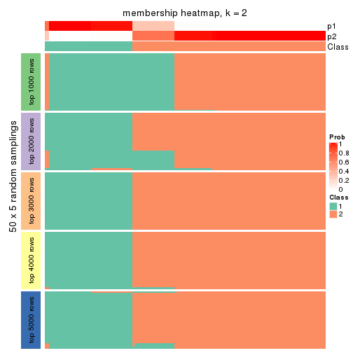
membership_heatmap(res, k = 3)
membership_heatmap(res, k = 4)
membership_heatmap(res, k = 5)
membership_heatmap(res, k = 6)
As soon as we have had the classes for columns, we can look for signatures which are significantly different between classes which can be candidate marks for certain classes. Following are the heatmaps for signatures.
Signature heatmaps where rows are scaled:
get_signatures(res, k = 2)
get_signatures(res, k = 3)
get_signatures(res, k = 4)
get_signatures(res, k = 5)
get_signatures(res, k = 6)
Signature heatmaps where rows are not scaled:
get_signatures(res, k = 2, scale_rows = FALSE)
get_signatures(res, k = 3, scale_rows = FALSE)
get_signatures(res, k = 4, scale_rows = FALSE)
get_signatures(res, k = 5, scale_rows = FALSE)
get_signatures(res, k = 6, scale_rows = FALSE)
Compare the overlap of signatures from different k:
compare_signatures(res)
get_signature() returns a data frame invisibly. TO get the list of signatures, the function
call should be assigned to a variable explicitly. In following code, if plot argument is set
to FALSE, no heatmap is plotted while only the differential analysis is performed.
# code only for demonstration
tb = get_signature(res, k = ..., plot = FALSE)
An example of the output of tb is:
#> which_row fdr mean_1 mean_2 scaled_mean_1 scaled_mean_2 km
#> 1 38 0.042760348 8.373488 9.131774 -0.5533452 0.5164555 1
#> 2 40 0.018707592 7.106213 8.469186 -0.6173731 0.5762149 1
#> 3 55 0.019134737 10.221463 11.207825 -0.6159697 0.5749050 1
#> 4 59 0.006059896 5.921854 7.869574 -0.6899429 0.6439467 1
#> 5 60 0.018055526 8.928898 10.211722 -0.6204761 0.5791110 1
#> 6 98 0.009384629 15.714769 14.887706 0.6635654 -0.6193277 2
...
The columns in tb are:
which_row: row indices corresponding to the input matrix.fdr: FDR for the differential test. mean_x: The mean value in group x.scaled_mean_x: The mean value in group x after rows are scaled.km: Row groups if k-means clustering is applied to rows.UMAP plot which shows how samples are separated.
dimension_reduction(res, k = 2, method = "UMAP")

dimension_reduction(res, k = 3, method = "UMAP")
dimension_reduction(res, k = 4, method = "UMAP")

dimension_reduction(res, k = 5, method = "UMAP")
dimension_reduction(res, k = 6, method = "UMAP")
Following heatmap shows how subgroups are split when increasing k:
collect_classes(res)
If matrix rows can be associated to genes, consider to use GO_Enrichment(res,
...) to perform function enrichment for the signature genes.
The object with results only for a single top-value method and a single partition method can be extracted as:
res = res_list["SD", "NMF"]
# you can also extract it by
# res = res_list["SD:NMF"]
A summary of res and all the functions that can be applied to it:
res
#> A 'ConsensusPartition' object with k = 2, 3, 4, 5, 6.
#> On a matrix with 15028 rows and 134 columns.
#> Top rows (1000, 2000, 3000, 4000, 5000) are extracted by 'SD' method.
#> Subgroups are detected by 'NMF' method.
#> Performed in total 1250 partitions by row resampling.
#> Best k for subgroups seems to be 6.
#>
#> Following methods can be applied to this 'ConsensusPartition' object:
#> [1] "cola_report" "collect_classes" "collect_plots"
#> [4] "collect_stats" "colnames" "compare_signatures"
#> [7] "consensus_heatmap" "dimension_reduction" "functional_enrichment"
#> [10] "get_anno_col" "get_anno" "get_classes"
#> [13] "get_consensus" "get_matrix" "get_membership"
#> [16] "get_param" "get_signatures" "get_stats"
#> [19] "is_best_k" "is_stable_k" "membership_heatmap"
#> [22] "ncol" "nrow" "plot_ecdf"
#> [25] "rownames" "select_partition_number" "show"
#> [28] "suggest_best_k" "test_to_known_factors"
collect_plots() function collects all the plots made from res for all k (number of partitions)
into one single page to provide an easy and fast comparison between different k.
collect_plots(res)
The plots are:
k and the heatmap of
predicted classes for each k.k.k.k.All the plots in panels can be made by individual functions and they are plotted later in this section.
select_partition_number() produces several plots showing different
statistics for choosing “optimized” k. There are following statistics:
k;k, the area increased is defined as \(A_k - A_{k-1}\).The detailed explanations of these statistics can be found in the cola vignette.
Generally speaking, lower PAC score, higher mean silhouette score or higher
concordance corresponds to better partition. Rand index and Jaccard index
measure how similar the current partition is compared to partition with k-1.
If they are too similar, we won't accept k is better than k-1.
select_partition_number(res)
The numeric values for all these statistics can be obtained by get_stats().
get_stats(res)
#> k 1-PAC mean_silhouette concordance area_increased Rand Jaccard
#> 2 2 0.878 0.901 0.962 0.471 0.533 0.533
#> 3 3 0.850 0.878 0.934 0.367 0.678 0.463
#> 4 4 0.771 0.813 0.888 0.096 0.914 0.762
#> 5 5 0.894 0.841 0.918 0.102 0.885 0.632
#> 6 6 0.960 0.972 0.958 0.047 0.933 0.706
suggest_best_k() suggests the best \(k\) based on these statistics. The rules are as follows:
NA.suggest_best_k(res)
#> [1] 6
Following shows the table of the partitions (You need to click the show/hide
code output link to see it). The membership matrix (columns with name p*)
is inferred by
clue::cl_consensus()
function with the SE method. Basically the value in the membership matrix
represents the probability to belong to a certain group. The finall class
label for an item is determined with the group with highest probability it
belongs to.
In get_classes() function, the entropy is calculated from the membership
matrix and the silhouette score is calculated from the consensus matrix.
cbind(get_classes(res, k = 2), get_membership(res, k = 2))
#> class entropy silhouette p1 p2
#> SRR1550981 1 0.0938 0.953 0.988 0.012
#> SRR1550982 1 1.0000 -0.036 0.504 0.496
#> SRR1550983 1 0.8081 0.648 0.752 0.248
#> SRR1550984 2 0.7602 0.710 0.220 0.780
#> SRR1550986 1 0.0000 0.962 1.000 0.000
#> SRR1550985 2 0.7139 0.744 0.196 0.804
#> SRR1550988 2 0.0000 0.956 0.000 1.000
#> SRR1550987 1 0.0000 0.962 1.000 0.000
#> SRR1550989 2 0.0000 0.956 0.000 1.000
#> SRR1550990 2 0.0000 0.956 0.000 1.000
#> SRR1550991 2 0.0000 0.956 0.000 1.000
#> SRR1550992 1 0.0000 0.962 1.000 0.000
#> SRR1550994 2 0.0000 0.956 0.000 1.000
#> SRR1550993 1 0.0376 0.960 0.996 0.004
#> SRR1550995 2 0.0000 0.956 0.000 1.000
#> SRR1550996 2 0.0000 0.956 0.000 1.000
#> SRR1550997 1 0.0000 0.962 1.000 0.000
#> SRR1550998 1 0.0000 0.962 1.000 0.000
#> SRR1551000 2 0.0000 0.956 0.000 1.000
#> SRR1550999 2 0.0000 0.956 0.000 1.000
#> SRR1551001 2 0.0000 0.956 0.000 1.000
#> SRR1551002 1 0.0000 0.962 1.000 0.000
#> SRR1551003 1 0.0000 0.962 1.000 0.000
#> SRR1551004 2 0.0000 0.956 0.000 1.000
#> SRR1551006 2 0.0000 0.956 0.000 1.000
#> SRR1551005 2 0.0000 0.956 0.000 1.000
#> SRR1551007 2 0.0000 0.956 0.000 1.000
#> SRR1551008 1 0.0000 0.962 1.000 0.000
#> SRR1551009 1 0.0376 0.960 0.996 0.004
#> SRR1551010 2 0.0000 0.956 0.000 1.000
#> SRR1551012 2 0.0000 0.956 0.000 1.000
#> SRR1551011 2 0.0000 0.956 0.000 1.000
#> SRR1551013 1 0.0000 0.962 1.000 0.000
#> SRR1551014 1 0.0000 0.962 1.000 0.000
#> SRR1551015 2 0.0000 0.956 0.000 1.000
#> SRR1551016 2 0.0000 0.956 0.000 1.000
#> SRR1551017 2 0.0000 0.956 0.000 1.000
#> SRR1551018 2 0.0000 0.956 0.000 1.000
#> SRR1551019 1 0.0000 0.962 1.000 0.000
#> SRR1551021 1 0.0000 0.962 1.000 0.000
#> SRR1551022 2 0.0000 0.956 0.000 1.000
#> SRR1551023 2 0.0000 0.956 0.000 1.000
#> SRR1551020 1 0.0000 0.962 1.000 0.000
#> SRR1551024 2 0.0000 0.956 0.000 1.000
#> SRR1551026 1 0.0000 0.962 1.000 0.000
#> SRR1551025 1 0.0000 0.962 1.000 0.000
#> SRR1551027 1 0.0000 0.962 1.000 0.000
#> SRR1551028 2 0.0000 0.956 0.000 1.000
#> SRR1551029 2 0.0000 0.956 0.000 1.000
#> SRR1551030 2 0.0000 0.956 0.000 1.000
#> SRR1551031 2 0.0000 0.956 0.000 1.000
#> SRR1551032 1 0.0000 0.962 1.000 0.000
#> SRR1551034 1 0.0000 0.962 1.000 0.000
#> SRR1551033 1 0.0000 0.962 1.000 0.000
#> SRR1551035 2 0.0000 0.956 0.000 1.000
#> SRR1551036 2 0.0000 0.956 0.000 1.000
#> SRR1551037 2 0.0000 0.956 0.000 1.000
#> SRR1551038 2 0.0000 0.956 0.000 1.000
#> SRR1551039 2 0.9393 0.461 0.356 0.644
#> SRR1551040 1 0.0000 0.962 1.000 0.000
#> SRR1551041 1 0.0000 0.962 1.000 0.000
#> SRR1551042 2 0.0000 0.956 0.000 1.000
#> SRR1551043 2 0.0000 0.956 0.000 1.000
#> SRR1551044 2 0.0000 0.956 0.000 1.000
#> SRR1551045 2 0.0000 0.956 0.000 1.000
#> SRR1551046 1 0.9491 0.391 0.632 0.368
#> SRR1551047 1 0.0000 0.962 1.000 0.000
#> SRR1551048 1 0.0376 0.960 0.996 0.004
#> SRR1551049 2 0.0000 0.956 0.000 1.000
#> SRR1551050 2 0.0000 0.956 0.000 1.000
#> SRR1551051 2 0.0000 0.956 0.000 1.000
#> SRR1551052 2 0.0000 0.956 0.000 1.000
#> SRR1551053 2 0.6887 0.760 0.184 0.816
#> SRR1551054 1 0.0000 0.962 1.000 0.000
#> SRR1551055 1 0.0376 0.960 0.996 0.004
#> SRR1551056 2 0.0000 0.956 0.000 1.000
#> SRR1551057 2 0.0000 0.956 0.000 1.000
#> SRR1551058 2 0.0000 0.956 0.000 1.000
#> SRR1551059 2 0.0000 0.956 0.000 1.000
#> SRR1551060 2 0.9795 0.310 0.416 0.584
#> SRR1551061 1 0.0000 0.962 1.000 0.000
#> SRR1551062 1 0.0376 0.960 0.996 0.004
#> SRR1551063 2 0.0000 0.956 0.000 1.000
#> SRR1551064 2 0.0000 0.956 0.000 1.000
#> SRR1551065 2 0.0000 0.956 0.000 1.000
#> SRR1551066 2 0.0000 0.956 0.000 1.000
#> SRR1551067 2 0.9754 0.332 0.408 0.592
#> SRR1551068 1 0.0000 0.962 1.000 0.000
#> SRR1551069 1 0.0000 0.962 1.000 0.000
#> SRR1551070 2 0.0000 0.956 0.000 1.000
#> SRR1551071 2 0.0000 0.956 0.000 1.000
#> SRR1551072 2 0.0000 0.956 0.000 1.000
#> SRR1551073 2 0.0000 0.956 0.000 1.000
#> SRR1551074 1 0.4298 0.875 0.912 0.088
#> SRR1551075 1 0.0000 0.962 1.000 0.000
#> SRR1551076 1 0.0000 0.962 1.000 0.000
#> SRR1551077 2 0.0000 0.956 0.000 1.000
#> SRR1551078 2 0.0000 0.956 0.000 1.000
#> SRR1551079 2 0.0000 0.956 0.000 1.000
#> SRR1551080 2 0.0000 0.956 0.000 1.000
#> SRR1551081 2 0.4690 0.860 0.100 0.900
#> SRR1551082 1 0.0000 0.962 1.000 0.000
#> SRR1551083 1 0.0376 0.960 0.996 0.004
#> SRR1551084 2 0.0000 0.956 0.000 1.000
#> SRR1551085 2 0.0000 0.956 0.000 1.000
#> SRR1551086 2 0.0000 0.956 0.000 1.000
#> SRR1551088 1 0.0000 0.962 1.000 0.000
#> SRR1551087 2 0.9944 0.185 0.456 0.544
#> SRR1551089 1 0.0000 0.962 1.000 0.000
#> SRR1551090 2 0.0000 0.956 0.000 1.000
#> SRR1551091 2 0.0000 0.956 0.000 1.000
#> SRR1551092 2 0.0000 0.956 0.000 1.000
#> SRR1551093 2 0.0000 0.956 0.000 1.000
#> SRR1551094 2 0.9850 0.275 0.428 0.572
#> SRR1551095 1 0.0000 0.962 1.000 0.000
#> SRR1551096 1 0.0376 0.960 0.996 0.004
#> SRR1551097 2 0.0000 0.956 0.000 1.000
#> SRR1551098 2 0.0000 0.956 0.000 1.000
#> SRR1551099 2 0.0000 0.956 0.000 1.000
#> SRR1551101 1 0.0000 0.962 1.000 0.000
#> SRR1551100 2 0.8909 0.561 0.308 0.692
#> SRR1551102 1 0.0376 0.960 0.996 0.004
#> SRR1551103 2 0.0000 0.956 0.000 1.000
#> SRR1551104 2 0.0000 0.956 0.000 1.000
#> SRR1551105 2 0.0000 0.956 0.000 1.000
#> SRR1551106 2 0.0000 0.956 0.000 1.000
#> SRR1551107 2 0.9635 0.385 0.388 0.612
#> SRR1551108 1 0.0000 0.962 1.000 0.000
#> SRR1551109 1 0.0000 0.962 1.000 0.000
#> SRR1551110 2 0.0000 0.956 0.000 1.000
#> SRR1551111 2 0.0000 0.956 0.000 1.000
#> SRR1551112 2 0.0000 0.956 0.000 1.000
#> SRR1551113 2 0.0000 0.956 0.000 1.000
#> SRR1551114 1 0.9795 0.255 0.584 0.416
cbind(get_classes(res, k = 3), get_membership(res, k = 3))
#> class entropy silhouette p1 p2 p3
#> SRR1550981 1 0.0237 0.9417 0.996 0.000 0.004
#> SRR1550982 1 0.2793 0.9126 0.928 0.028 0.044
#> SRR1550983 1 0.1753 0.9239 0.952 0.000 0.048
#> SRR1550984 2 0.6302 0.0319 0.480 0.520 0.000
#> SRR1550986 1 0.0000 0.9428 1.000 0.000 0.000
#> SRR1550985 2 0.6154 0.2726 0.408 0.592 0.000
#> SRR1550988 3 0.1753 0.8454 0.000 0.048 0.952
#> SRR1550987 3 0.4974 0.7736 0.236 0.000 0.764
#> SRR1550989 2 0.0000 0.9686 0.000 1.000 0.000
#> SRR1550990 2 0.0000 0.9686 0.000 1.000 0.000
#> SRR1550991 2 0.0000 0.9686 0.000 1.000 0.000
#> SRR1550992 1 0.0000 0.9428 1.000 0.000 0.000
#> SRR1550994 3 0.1753 0.8454 0.000 0.048 0.952
#> SRR1550993 3 0.4654 0.8005 0.208 0.000 0.792
#> SRR1550995 2 0.0000 0.9686 0.000 1.000 0.000
#> SRR1550996 2 0.0000 0.9686 0.000 1.000 0.000
#> SRR1550997 1 0.0000 0.9428 1.000 0.000 0.000
#> SRR1550998 3 0.5058 0.7645 0.244 0.000 0.756
#> SRR1551000 2 0.0000 0.9686 0.000 1.000 0.000
#> SRR1550999 3 0.1753 0.8454 0.000 0.048 0.952
#> SRR1551001 2 0.0000 0.9686 0.000 1.000 0.000
#> SRR1551002 1 0.0000 0.9428 1.000 0.000 0.000
#> SRR1551003 3 0.4654 0.8005 0.208 0.000 0.792
#> SRR1551004 3 0.1753 0.8454 0.000 0.048 0.952
#> SRR1551006 2 0.0000 0.9686 0.000 1.000 0.000
#> SRR1551005 2 0.0000 0.9686 0.000 1.000 0.000
#> SRR1551007 2 0.0000 0.9686 0.000 1.000 0.000
#> SRR1551008 1 0.0000 0.9428 1.000 0.000 0.000
#> SRR1551009 3 0.4654 0.8005 0.208 0.000 0.792
#> SRR1551010 3 0.1753 0.8454 0.000 0.048 0.952
#> SRR1551012 2 0.0000 0.9686 0.000 1.000 0.000
#> SRR1551011 2 0.0000 0.9686 0.000 1.000 0.000
#> SRR1551013 1 0.0000 0.9428 1.000 0.000 0.000
#> SRR1551014 3 0.6062 0.5135 0.384 0.000 0.616
#> SRR1551015 3 0.1753 0.8454 0.000 0.048 0.952
#> SRR1551016 2 0.0000 0.9686 0.000 1.000 0.000
#> SRR1551017 2 0.0000 0.9686 0.000 1.000 0.000
#> SRR1551018 2 0.0000 0.9686 0.000 1.000 0.000
#> SRR1551019 1 0.1643 0.9258 0.956 0.000 0.044
#> SRR1551021 1 0.6308 -0.1680 0.508 0.000 0.492
#> SRR1551022 3 0.1753 0.8454 0.000 0.048 0.952
#> SRR1551023 2 0.0000 0.9686 0.000 1.000 0.000
#> SRR1551020 1 0.0000 0.9428 1.000 0.000 0.000
#> SRR1551024 2 0.0000 0.9686 0.000 1.000 0.000
#> SRR1551026 1 0.0000 0.9428 1.000 0.000 0.000
#> SRR1551025 1 0.0424 0.9405 0.992 0.000 0.008
#> SRR1551027 3 0.5859 0.6016 0.344 0.000 0.656
#> SRR1551028 3 0.1753 0.8454 0.000 0.048 0.952
#> SRR1551029 2 0.0000 0.9686 0.000 1.000 0.000
#> SRR1551030 2 0.0000 0.9686 0.000 1.000 0.000
#> SRR1551031 2 0.0000 0.9686 0.000 1.000 0.000
#> SRR1551032 1 0.1753 0.9239 0.952 0.000 0.048
#> SRR1551034 3 0.4796 0.7904 0.220 0.000 0.780
#> SRR1551033 1 0.0000 0.9428 1.000 0.000 0.000
#> SRR1551035 3 0.1753 0.8454 0.000 0.048 0.952
#> SRR1551036 2 0.0000 0.9686 0.000 1.000 0.000
#> SRR1551037 2 0.0000 0.9686 0.000 1.000 0.000
#> SRR1551038 2 0.0000 0.9686 0.000 1.000 0.000
#> SRR1551039 1 0.5036 0.7485 0.808 0.172 0.020
#> SRR1551040 1 0.0000 0.9428 1.000 0.000 0.000
#> SRR1551041 3 0.5363 0.7205 0.276 0.000 0.724
#> SRR1551042 3 0.1753 0.8454 0.000 0.048 0.952
#> SRR1551043 2 0.0000 0.9686 0.000 1.000 0.000
#> SRR1551044 2 0.0000 0.9686 0.000 1.000 0.000
#> SRR1551045 2 0.0000 0.9686 0.000 1.000 0.000
#> SRR1551046 1 0.1964 0.9190 0.944 0.000 0.056
#> SRR1551047 1 0.0000 0.9428 1.000 0.000 0.000
#> SRR1551048 3 0.4654 0.8005 0.208 0.000 0.792
#> SRR1551049 3 0.1753 0.8454 0.000 0.048 0.952
#> SRR1551050 2 0.0000 0.9686 0.000 1.000 0.000
#> SRR1551051 2 0.0000 0.9686 0.000 1.000 0.000
#> SRR1551052 2 0.0000 0.9686 0.000 1.000 0.000
#> SRR1551053 2 0.5968 0.3894 0.364 0.636 0.000
#> SRR1551054 1 0.0000 0.9428 1.000 0.000 0.000
#> SRR1551055 3 0.4605 0.8022 0.204 0.000 0.796
#> SRR1551056 3 0.1753 0.8454 0.000 0.048 0.952
#> SRR1551057 2 0.0000 0.9686 0.000 1.000 0.000
#> SRR1551058 2 0.0000 0.9686 0.000 1.000 0.000
#> SRR1551059 2 0.0000 0.9686 0.000 1.000 0.000
#> SRR1551060 1 0.3412 0.8191 0.876 0.124 0.000
#> SRR1551061 1 0.0000 0.9428 1.000 0.000 0.000
#> SRR1551062 3 0.4654 0.8005 0.208 0.000 0.792
#> SRR1551063 3 0.1753 0.8454 0.000 0.048 0.952
#> SRR1551064 2 0.0000 0.9686 0.000 1.000 0.000
#> SRR1551065 2 0.0000 0.9686 0.000 1.000 0.000
#> SRR1551066 2 0.0000 0.9686 0.000 1.000 0.000
#> SRR1551067 1 0.2550 0.9153 0.932 0.012 0.056
#> SRR1551068 1 0.0000 0.9428 1.000 0.000 0.000
#> SRR1551069 3 0.4654 0.8005 0.208 0.000 0.792
#> SRR1551070 3 0.1753 0.8454 0.000 0.048 0.952
#> SRR1551071 2 0.0000 0.9686 0.000 1.000 0.000
#> SRR1551072 2 0.0000 0.9686 0.000 1.000 0.000
#> SRR1551073 2 0.0000 0.9686 0.000 1.000 0.000
#> SRR1551074 1 0.1860 0.9216 0.948 0.000 0.052
#> SRR1551075 1 0.0000 0.9428 1.000 0.000 0.000
#> SRR1551076 3 0.4796 0.7904 0.220 0.000 0.780
#> SRR1551077 3 0.1753 0.8454 0.000 0.048 0.952
#> SRR1551078 2 0.0000 0.9686 0.000 1.000 0.000
#> SRR1551079 2 0.0000 0.9686 0.000 1.000 0.000
#> SRR1551080 2 0.0000 0.9686 0.000 1.000 0.000
#> SRR1551081 2 0.6750 0.4120 0.336 0.640 0.024
#> SRR1551082 1 0.0000 0.9428 1.000 0.000 0.000
#> SRR1551083 3 0.4605 0.8022 0.204 0.000 0.796
#> SRR1551084 3 0.1753 0.8454 0.000 0.048 0.952
#> SRR1551085 2 0.0000 0.9686 0.000 1.000 0.000
#> SRR1551086 2 0.0000 0.9686 0.000 1.000 0.000
#> SRR1551088 1 0.0000 0.9428 1.000 0.000 0.000
#> SRR1551087 1 0.2384 0.9171 0.936 0.008 0.056
#> SRR1551089 3 0.4750 0.7940 0.216 0.000 0.784
#> SRR1551090 3 0.1753 0.8454 0.000 0.048 0.952
#> SRR1551091 2 0.0000 0.9686 0.000 1.000 0.000
#> SRR1551092 2 0.0000 0.9686 0.000 1.000 0.000
#> SRR1551093 2 0.0000 0.9686 0.000 1.000 0.000
#> SRR1551094 1 0.2663 0.9156 0.932 0.024 0.044
#> SRR1551095 1 0.0000 0.9428 1.000 0.000 0.000
#> SRR1551096 3 0.4605 0.8022 0.204 0.000 0.796
#> SRR1551097 3 0.1753 0.8454 0.000 0.048 0.952
#> SRR1551098 2 0.0000 0.9686 0.000 1.000 0.000
#> SRR1551099 2 0.0000 0.9686 0.000 1.000 0.000
#> SRR1551101 1 0.0000 0.9428 1.000 0.000 0.000
#> SRR1551100 1 0.5678 0.5449 0.684 0.316 0.000
#> SRR1551102 3 0.5098 0.7596 0.248 0.000 0.752
#> SRR1551103 3 0.1753 0.8454 0.000 0.048 0.952
#> SRR1551104 2 0.0000 0.9686 0.000 1.000 0.000
#> SRR1551105 2 0.0000 0.9686 0.000 1.000 0.000
#> SRR1551106 2 0.0000 0.9686 0.000 1.000 0.000
#> SRR1551107 1 0.3899 0.8782 0.888 0.056 0.056
#> SRR1551108 1 0.0000 0.9428 1.000 0.000 0.000
#> SRR1551109 3 0.4654 0.8005 0.208 0.000 0.792
#> SRR1551110 3 0.1753 0.8454 0.000 0.048 0.952
#> SRR1551111 2 0.0000 0.9686 0.000 1.000 0.000
#> SRR1551112 2 0.0000 0.9686 0.000 1.000 0.000
#> SRR1551113 2 0.0000 0.9686 0.000 1.000 0.000
#> SRR1551114 1 0.0892 0.9309 0.980 0.020 0.000
cbind(get_classes(res, k = 4), get_membership(res, k = 4))
#> class entropy silhouette p1 p2 p3 p4
#> SRR1550981 3 0.1118 0.81955 0.036 0.000 0.964 0.000
#> SRR1550982 3 0.7053 0.16427 0.356 0.132 0.512 0.000
#> SRR1550983 1 0.5158 0.18889 0.524 0.004 0.472 0.000
#> SRR1550984 2 0.5105 0.24475 0.004 0.564 0.432 0.000
#> SRR1550986 3 0.0000 0.84582 0.000 0.000 1.000 0.000
#> SRR1550985 2 0.6025 0.50795 0.096 0.668 0.236 0.000
#> SRR1550988 4 0.0000 1.00000 0.000 0.000 0.000 1.000
#> SRR1550987 1 0.4542 0.88792 0.804 0.000 0.088 0.108
#> SRR1550989 2 0.0000 0.90993 0.000 1.000 0.000 0.000
#> SRR1550990 2 0.0000 0.90993 0.000 1.000 0.000 0.000
#> SRR1550991 2 0.3569 0.84362 0.196 0.804 0.000 0.000
#> SRR1550992 3 0.0000 0.84582 0.000 0.000 1.000 0.000
#> SRR1550994 4 0.0000 1.00000 0.000 0.000 0.000 1.000
#> SRR1550993 1 0.4499 0.88639 0.804 0.000 0.072 0.124
#> SRR1550995 2 0.0000 0.90993 0.000 1.000 0.000 0.000
#> SRR1550996 2 0.0000 0.90993 0.000 1.000 0.000 0.000
#> SRR1550997 3 0.0000 0.84582 0.000 0.000 1.000 0.000
#> SRR1550998 1 0.4547 0.88647 0.804 0.000 0.092 0.104
#> SRR1551000 2 0.0000 0.90993 0.000 1.000 0.000 0.000
#> SRR1550999 4 0.0000 1.00000 0.000 0.000 0.000 1.000
#> SRR1551001 2 0.0000 0.90993 0.000 1.000 0.000 0.000
#> SRR1551002 3 0.0000 0.84582 0.000 0.000 1.000 0.000
#> SRR1551003 1 0.4513 0.88788 0.804 0.000 0.076 0.120
#> SRR1551004 4 0.0000 1.00000 0.000 0.000 0.000 1.000
#> SRR1551006 2 0.0188 0.90909 0.004 0.996 0.000 0.000
#> SRR1551005 2 0.0000 0.90993 0.000 1.000 0.000 0.000
#> SRR1551007 2 0.3569 0.84362 0.196 0.804 0.000 0.000
#> SRR1551008 3 0.0000 0.84582 0.000 0.000 1.000 0.000
#> SRR1551009 1 0.4499 0.88639 0.804 0.000 0.072 0.124
#> SRR1551010 4 0.0000 1.00000 0.000 0.000 0.000 1.000
#> SRR1551012 2 0.0000 0.90993 0.000 1.000 0.000 0.000
#> SRR1551011 2 0.0000 0.90993 0.000 1.000 0.000 0.000
#> SRR1551013 3 0.0000 0.84582 0.000 0.000 1.000 0.000
#> SRR1551014 1 0.4525 0.86901 0.804 0.000 0.116 0.080
#> SRR1551015 4 0.0000 1.00000 0.000 0.000 0.000 1.000
#> SRR1551016 2 0.0000 0.90993 0.000 1.000 0.000 0.000
#> SRR1551017 2 0.3569 0.84362 0.196 0.804 0.000 0.000
#> SRR1551018 2 0.3569 0.84362 0.196 0.804 0.000 0.000
#> SRR1551019 3 0.4948 0.08301 0.440 0.000 0.560 0.000
#> SRR1551021 1 0.4462 0.85194 0.804 0.000 0.132 0.064
#> SRR1551022 4 0.0000 1.00000 0.000 0.000 0.000 1.000
#> SRR1551023 2 0.0000 0.90993 0.000 1.000 0.000 0.000
#> SRR1551020 3 0.0000 0.84582 0.000 0.000 1.000 0.000
#> SRR1551024 2 0.0000 0.90993 0.000 1.000 0.000 0.000
#> SRR1551026 3 0.0000 0.84582 0.000 0.000 1.000 0.000
#> SRR1551025 3 0.2704 0.73648 0.124 0.000 0.876 0.000
#> SRR1551027 1 0.4535 0.87269 0.804 0.000 0.112 0.084
#> SRR1551028 4 0.0000 1.00000 0.000 0.000 0.000 1.000
#> SRR1551029 2 0.0000 0.90993 0.000 1.000 0.000 0.000
#> SRR1551030 2 0.0592 0.90577 0.016 0.984 0.000 0.000
#> SRR1551031 2 0.3569 0.84362 0.196 0.804 0.000 0.000
#> SRR1551032 3 0.4981 -0.00902 0.464 0.000 0.536 0.000
#> SRR1551034 1 0.4535 0.88842 0.804 0.000 0.084 0.112
#> SRR1551033 3 0.0000 0.84582 0.000 0.000 1.000 0.000
#> SRR1551035 4 0.0000 1.00000 0.000 0.000 0.000 1.000
#> SRR1551036 2 0.0000 0.90993 0.000 1.000 0.000 0.000
#> SRR1551037 2 0.0188 0.90909 0.004 0.996 0.000 0.000
#> SRR1551038 2 0.3569 0.84362 0.196 0.804 0.000 0.000
#> SRR1551039 3 0.7574 0.22445 0.248 0.268 0.484 0.000
#> SRR1551040 3 0.0000 0.84582 0.000 0.000 1.000 0.000
#> SRR1551041 1 0.4547 0.87898 0.804 0.000 0.104 0.092
#> SRR1551042 4 0.0000 1.00000 0.000 0.000 0.000 1.000
#> SRR1551043 2 0.0000 0.90993 0.000 1.000 0.000 0.000
#> SRR1551044 2 0.0188 0.90909 0.004 0.996 0.000 0.000
#> SRR1551045 2 0.3569 0.84362 0.196 0.804 0.000 0.000
#> SRR1551046 1 0.4964 0.46227 0.616 0.004 0.380 0.000
#> SRR1551047 3 0.0000 0.84582 0.000 0.000 1.000 0.000
#> SRR1551048 1 0.4499 0.88639 0.804 0.000 0.072 0.124
#> SRR1551049 4 0.0000 1.00000 0.000 0.000 0.000 1.000
#> SRR1551050 2 0.0000 0.90993 0.000 1.000 0.000 0.000
#> SRR1551051 2 0.0000 0.90993 0.000 1.000 0.000 0.000
#> SRR1551052 2 0.3569 0.84362 0.196 0.804 0.000 0.000
#> SRR1551053 2 0.4679 0.43515 0.000 0.648 0.352 0.000
#> SRR1551054 3 0.0000 0.84582 0.000 0.000 1.000 0.000
#> SRR1551055 1 0.4482 0.88258 0.804 0.000 0.068 0.128
#> SRR1551056 4 0.0000 1.00000 0.000 0.000 0.000 1.000
#> SRR1551057 2 0.0000 0.90993 0.000 1.000 0.000 0.000
#> SRR1551058 2 0.2921 0.86424 0.140 0.860 0.000 0.000
#> SRR1551059 2 0.3569 0.84362 0.196 0.804 0.000 0.000
#> SRR1551060 3 0.7093 0.34632 0.172 0.272 0.556 0.000
#> SRR1551061 3 0.0000 0.84582 0.000 0.000 1.000 0.000
#> SRR1551062 1 0.4499 0.88639 0.804 0.000 0.072 0.124
#> SRR1551063 4 0.0000 1.00000 0.000 0.000 0.000 1.000
#> SRR1551064 2 0.0000 0.90993 0.000 1.000 0.000 0.000
#> SRR1551065 2 0.0000 0.90993 0.000 1.000 0.000 0.000
#> SRR1551066 2 0.3569 0.84362 0.196 0.804 0.000 0.000
#> SRR1551067 1 0.5465 0.41276 0.588 0.020 0.392 0.000
#> SRR1551068 3 0.0000 0.84582 0.000 0.000 1.000 0.000
#> SRR1551069 1 0.4499 0.88639 0.804 0.000 0.072 0.124
#> SRR1551070 4 0.0000 1.00000 0.000 0.000 0.000 1.000
#> SRR1551071 2 0.0000 0.90993 0.000 1.000 0.000 0.000
#> SRR1551072 2 0.0000 0.90993 0.000 1.000 0.000 0.000
#> SRR1551073 2 0.3569 0.84362 0.196 0.804 0.000 0.000
#> SRR1551074 3 0.4985 -0.02557 0.468 0.000 0.532 0.000
#> SRR1551075 3 0.0000 0.84582 0.000 0.000 1.000 0.000
#> SRR1551076 1 0.4542 0.88792 0.804 0.000 0.088 0.108
#> SRR1551077 4 0.0000 1.00000 0.000 0.000 0.000 1.000
#> SRR1551078 2 0.0000 0.90993 0.000 1.000 0.000 0.000
#> SRR1551079 2 0.3356 0.85126 0.176 0.824 0.000 0.000
#> SRR1551080 2 0.3569 0.84362 0.196 0.804 0.000 0.000
#> SRR1551081 2 0.7458 0.11630 0.288 0.500 0.212 0.000
#> SRR1551082 3 0.0000 0.84582 0.000 0.000 1.000 0.000
#> SRR1551083 1 0.4482 0.88258 0.804 0.000 0.068 0.128
#> SRR1551084 4 0.0000 1.00000 0.000 0.000 0.000 1.000
#> SRR1551085 2 0.0000 0.90993 0.000 1.000 0.000 0.000
#> SRR1551086 2 0.0188 0.90909 0.004 0.996 0.000 0.000
#> SRR1551088 3 0.0000 0.84582 0.000 0.000 1.000 0.000
#> SRR1551087 1 0.5408 0.37539 0.576 0.016 0.408 0.000
#> SRR1551089 1 0.4525 0.88841 0.804 0.000 0.080 0.116
#> SRR1551090 4 0.0000 1.00000 0.000 0.000 0.000 1.000
#> SRR1551091 2 0.0000 0.90993 0.000 1.000 0.000 0.000
#> SRR1551092 2 0.0000 0.90993 0.000 1.000 0.000 0.000
#> SRR1551093 2 0.3569 0.84362 0.196 0.804 0.000 0.000
#> SRR1551094 3 0.6615 0.08316 0.404 0.084 0.512 0.000
#> SRR1551095 3 0.0000 0.84582 0.000 0.000 1.000 0.000
#> SRR1551096 1 0.4482 0.88258 0.804 0.000 0.068 0.128
#> SRR1551097 4 0.0000 1.00000 0.000 0.000 0.000 1.000
#> SRR1551098 2 0.0000 0.90993 0.000 1.000 0.000 0.000
#> SRR1551099 2 0.0000 0.90993 0.000 1.000 0.000 0.000
#> SRR1551101 3 0.0000 0.84582 0.000 0.000 1.000 0.000
#> SRR1551100 2 0.7188 -0.15712 0.136 0.436 0.428 0.000
#> SRR1551102 1 0.4547 0.88647 0.804 0.000 0.092 0.104
#> SRR1551103 4 0.0000 1.00000 0.000 0.000 0.000 1.000
#> SRR1551104 2 0.0000 0.90993 0.000 1.000 0.000 0.000
#> SRR1551105 2 0.0000 0.90993 0.000 1.000 0.000 0.000
#> SRR1551106 2 0.3569 0.84362 0.196 0.804 0.000 0.000
#> SRR1551107 1 0.5807 0.54529 0.636 0.052 0.312 0.000
#> SRR1551108 3 0.0000 0.84582 0.000 0.000 1.000 0.000
#> SRR1551109 1 0.4513 0.88788 0.804 0.000 0.076 0.120
#> SRR1551110 4 0.0000 1.00000 0.000 0.000 0.000 1.000
#> SRR1551111 2 0.0000 0.90993 0.000 1.000 0.000 0.000
#> SRR1551112 2 0.0000 0.90993 0.000 1.000 0.000 0.000
#> SRR1551113 2 0.3569 0.84362 0.196 0.804 0.000 0.000
#> SRR1551114 3 0.3611 0.73909 0.080 0.060 0.860 0.000
cbind(get_classes(res, k = 5), get_membership(res, k = 5))
#> class entropy silhouette p1 p2 p3 p4 p5
#> SRR1550981 3 0.2597 0.8006 0.024 0.000 0.884 0.000 0.092
#> SRR1550982 2 0.6527 0.1757 0.040 0.532 0.336 0.000 0.092
#> SRR1550983 1 0.7333 0.0977 0.432 0.100 0.376 0.000 0.092
#> SRR1550984 3 0.6107 0.2960 0.012 0.384 0.512 0.000 0.092
#> SRR1550986 3 0.0000 0.8764 0.000 0.000 1.000 0.000 0.000
#> SRR1550985 2 0.4690 0.6458 0.004 0.744 0.160 0.000 0.092
#> SRR1550988 4 0.0000 1.0000 0.000 0.000 0.000 1.000 0.000
#> SRR1550987 1 0.0162 0.8425 0.996 0.000 0.000 0.004 0.000
#> SRR1550989 2 0.0000 0.9506 0.000 1.000 0.000 0.000 0.000
#> SRR1550990 2 0.0000 0.9506 0.000 1.000 0.000 0.000 0.000
#> SRR1550991 5 0.1908 0.9772 0.000 0.092 0.000 0.000 0.908
#> SRR1550992 3 0.0000 0.8764 0.000 0.000 1.000 0.000 0.000
#> SRR1550994 4 0.0000 1.0000 0.000 0.000 0.000 1.000 0.000
#> SRR1550993 1 0.0162 0.8425 0.996 0.000 0.000 0.004 0.000
#> SRR1550995 2 0.0000 0.9506 0.000 1.000 0.000 0.000 0.000
#> SRR1550996 2 0.0000 0.9506 0.000 1.000 0.000 0.000 0.000
#> SRR1550997 3 0.0000 0.8764 0.000 0.000 1.000 0.000 0.000
#> SRR1550998 1 0.0162 0.8425 0.996 0.000 0.000 0.004 0.000
#> SRR1551000 2 0.0000 0.9506 0.000 1.000 0.000 0.000 0.000
#> SRR1550999 4 0.0000 1.0000 0.000 0.000 0.000 1.000 0.000
#> SRR1551001 2 0.0000 0.9506 0.000 1.000 0.000 0.000 0.000
#> SRR1551002 3 0.0000 0.8764 0.000 0.000 1.000 0.000 0.000
#> SRR1551003 1 0.0162 0.8425 0.996 0.000 0.000 0.004 0.000
#> SRR1551004 4 0.0000 1.0000 0.000 0.000 0.000 1.000 0.000
#> SRR1551006 2 0.0794 0.9245 0.000 0.972 0.000 0.000 0.028
#> SRR1551005 2 0.0000 0.9506 0.000 1.000 0.000 0.000 0.000
#> SRR1551007 5 0.1908 0.9772 0.000 0.092 0.000 0.000 0.908
#> SRR1551008 3 0.0000 0.8764 0.000 0.000 1.000 0.000 0.000
#> SRR1551009 1 0.0162 0.8425 0.996 0.000 0.000 0.004 0.000
#> SRR1551010 4 0.0000 1.0000 0.000 0.000 0.000 1.000 0.000
#> SRR1551012 2 0.0000 0.9506 0.000 1.000 0.000 0.000 0.000
#> SRR1551011 2 0.0000 0.9506 0.000 1.000 0.000 0.000 0.000
#> SRR1551013 3 0.0000 0.8764 0.000 0.000 1.000 0.000 0.000
#> SRR1551014 1 0.0162 0.8425 0.996 0.000 0.000 0.004 0.000
#> SRR1551015 4 0.0000 1.0000 0.000 0.000 0.000 1.000 0.000
#> SRR1551016 2 0.0000 0.9506 0.000 1.000 0.000 0.000 0.000
#> SRR1551017 5 0.1908 0.9772 0.000 0.092 0.000 0.000 0.908
#> SRR1551018 5 0.1908 0.9772 0.000 0.092 0.000 0.000 0.908
#> SRR1551019 3 0.5807 0.0249 0.424 0.000 0.484 0.000 0.092
#> SRR1551021 1 0.0162 0.8425 0.996 0.000 0.000 0.004 0.000
#> SRR1551022 4 0.0000 1.0000 0.000 0.000 0.000 1.000 0.000
#> SRR1551023 2 0.0000 0.9506 0.000 1.000 0.000 0.000 0.000
#> SRR1551020 3 0.0000 0.8764 0.000 0.000 1.000 0.000 0.000
#> SRR1551024 2 0.0000 0.9506 0.000 1.000 0.000 0.000 0.000
#> SRR1551026 3 0.0000 0.8764 0.000 0.000 1.000 0.000 0.000
#> SRR1551025 3 0.3648 0.7456 0.084 0.000 0.824 0.000 0.092
#> SRR1551027 1 0.0162 0.8425 0.996 0.000 0.000 0.004 0.000
#> SRR1551028 4 0.0000 1.0000 0.000 0.000 0.000 1.000 0.000
#> SRR1551029 2 0.0000 0.9506 0.000 1.000 0.000 0.000 0.000
#> SRR1551030 2 0.1851 0.8556 0.000 0.912 0.000 0.000 0.088
#> SRR1551031 5 0.1908 0.9772 0.000 0.092 0.000 0.000 0.908
#> SRR1551032 1 0.5812 0.0925 0.476 0.000 0.432 0.000 0.092
#> SRR1551034 1 0.0162 0.8425 0.996 0.000 0.000 0.004 0.000
#> SRR1551033 3 0.0000 0.8764 0.000 0.000 1.000 0.000 0.000
#> SRR1551035 4 0.0000 1.0000 0.000 0.000 0.000 1.000 0.000
#> SRR1551036 2 0.0000 0.9506 0.000 1.000 0.000 0.000 0.000
#> SRR1551037 2 0.0162 0.9476 0.000 0.996 0.000 0.000 0.004
#> SRR1551038 5 0.1908 0.9772 0.000 0.092 0.000 0.000 0.908
#> SRR1551039 3 0.7552 0.2797 0.132 0.340 0.436 0.000 0.092
#> SRR1551040 3 0.0000 0.8764 0.000 0.000 1.000 0.000 0.000
#> SRR1551041 1 0.0162 0.8425 0.996 0.000 0.000 0.004 0.000
#> SRR1551042 4 0.0000 1.0000 0.000 0.000 0.000 1.000 0.000
#> SRR1551043 2 0.0000 0.9506 0.000 1.000 0.000 0.000 0.000
#> SRR1551044 2 0.0162 0.9476 0.000 0.996 0.000 0.000 0.004
#> SRR1551045 5 0.1908 0.9772 0.000 0.092 0.000 0.000 0.908
#> SRR1551046 1 0.5680 0.4776 0.632 0.012 0.264 0.000 0.092
#> SRR1551047 3 0.0000 0.8764 0.000 0.000 1.000 0.000 0.000
#> SRR1551048 1 0.0162 0.8425 0.996 0.000 0.000 0.004 0.000
#> SRR1551049 4 0.0000 1.0000 0.000 0.000 0.000 1.000 0.000
#> SRR1551050 2 0.0000 0.9506 0.000 1.000 0.000 0.000 0.000
#> SRR1551051 2 0.0000 0.9506 0.000 1.000 0.000 0.000 0.000
#> SRR1551052 5 0.1908 0.9772 0.000 0.092 0.000 0.000 0.908
#> SRR1551053 2 0.5583 0.3868 0.004 0.616 0.288 0.000 0.092
#> SRR1551054 3 0.0000 0.8764 0.000 0.000 1.000 0.000 0.000
#> SRR1551055 1 0.0162 0.8425 0.996 0.000 0.000 0.004 0.000
#> SRR1551056 4 0.0000 1.0000 0.000 0.000 0.000 1.000 0.000
#> SRR1551057 2 0.0000 0.9506 0.000 1.000 0.000 0.000 0.000
#> SRR1551058 5 0.3837 0.6968 0.000 0.308 0.000 0.000 0.692
#> SRR1551059 5 0.1908 0.9772 0.000 0.092 0.000 0.000 0.908
#> SRR1551060 3 0.5982 0.3928 0.288 0.020 0.600 0.000 0.092
#> SRR1551061 3 0.0000 0.8764 0.000 0.000 1.000 0.000 0.000
#> SRR1551062 1 0.0162 0.8425 0.996 0.000 0.000 0.004 0.000
#> SRR1551063 4 0.0000 1.0000 0.000 0.000 0.000 1.000 0.000
#> SRR1551064 2 0.0000 0.9506 0.000 1.000 0.000 0.000 0.000
#> SRR1551065 2 0.0000 0.9506 0.000 1.000 0.000 0.000 0.000
#> SRR1551066 5 0.1908 0.9772 0.000 0.092 0.000 0.000 0.908
#> SRR1551067 1 0.5819 0.4299 0.604 0.012 0.292 0.000 0.092
#> SRR1551068 3 0.0000 0.8764 0.000 0.000 1.000 0.000 0.000
#> SRR1551069 1 0.0162 0.8425 0.996 0.000 0.000 0.004 0.000
#> SRR1551070 4 0.0000 1.0000 0.000 0.000 0.000 1.000 0.000
#> SRR1551071 2 0.0000 0.9506 0.000 1.000 0.000 0.000 0.000
#> SRR1551072 2 0.0000 0.9506 0.000 1.000 0.000 0.000 0.000
#> SRR1551073 5 0.1908 0.9772 0.000 0.092 0.000 0.000 0.908
#> SRR1551074 1 0.5814 0.0783 0.472 0.000 0.436 0.000 0.092
#> SRR1551075 3 0.0000 0.8764 0.000 0.000 1.000 0.000 0.000
#> SRR1551076 1 0.0162 0.8425 0.996 0.000 0.000 0.004 0.000
#> SRR1551077 4 0.0000 1.0000 0.000 0.000 0.000 1.000 0.000
#> SRR1551078 2 0.0000 0.9506 0.000 1.000 0.000 0.000 0.000
#> SRR1551079 5 0.2891 0.8921 0.000 0.176 0.000 0.000 0.824
#> SRR1551080 5 0.1908 0.9772 0.000 0.092 0.000 0.000 0.908
#> SRR1551081 1 0.8032 0.1022 0.348 0.324 0.236 0.000 0.092
#> SRR1551082 3 0.0000 0.8764 0.000 0.000 1.000 0.000 0.000
#> SRR1551083 1 0.0162 0.8425 0.996 0.000 0.000 0.004 0.000
#> SRR1551084 4 0.0000 1.0000 0.000 0.000 0.000 1.000 0.000
#> SRR1551085 2 0.0000 0.9506 0.000 1.000 0.000 0.000 0.000
#> SRR1551086 2 0.0290 0.9440 0.000 0.992 0.000 0.000 0.008
#> SRR1551088 3 0.0000 0.8764 0.000 0.000 1.000 0.000 0.000
#> SRR1551087 1 0.5671 0.4063 0.596 0.004 0.308 0.000 0.092
#> SRR1551089 1 0.0162 0.8425 0.996 0.000 0.000 0.004 0.000
#> SRR1551090 4 0.0000 1.0000 0.000 0.000 0.000 1.000 0.000
#> SRR1551091 2 0.0000 0.9506 0.000 1.000 0.000 0.000 0.000
#> SRR1551092 2 0.0000 0.9506 0.000 1.000 0.000 0.000 0.000
#> SRR1551093 5 0.1908 0.9772 0.000 0.092 0.000 0.000 0.908
#> SRR1551094 3 0.7325 0.0540 0.368 0.100 0.440 0.000 0.092
#> SRR1551095 3 0.0000 0.8764 0.000 0.000 1.000 0.000 0.000
#> SRR1551096 1 0.0162 0.8425 0.996 0.000 0.000 0.004 0.000
#> SRR1551097 4 0.0000 1.0000 0.000 0.000 0.000 1.000 0.000
#> SRR1551098 2 0.0000 0.9506 0.000 1.000 0.000 0.000 0.000
#> SRR1551099 2 0.0000 0.9506 0.000 1.000 0.000 0.000 0.000
#> SRR1551101 3 0.0000 0.8764 0.000 0.000 1.000 0.000 0.000
#> SRR1551100 2 0.5544 0.4063 0.004 0.624 0.280 0.000 0.092
#> SRR1551102 1 0.0162 0.8425 0.996 0.000 0.000 0.004 0.000
#> SRR1551103 4 0.0000 1.0000 0.000 0.000 0.000 1.000 0.000
#> SRR1551104 2 0.0000 0.9506 0.000 1.000 0.000 0.000 0.000
#> SRR1551105 2 0.0000 0.9506 0.000 1.000 0.000 0.000 0.000
#> SRR1551106 5 0.1908 0.9772 0.000 0.092 0.000 0.000 0.908
#> SRR1551107 1 0.7454 0.3674 0.516 0.192 0.200 0.000 0.092
#> SRR1551108 3 0.0000 0.8764 0.000 0.000 1.000 0.000 0.000
#> SRR1551109 1 0.0162 0.8425 0.996 0.000 0.000 0.004 0.000
#> SRR1551110 4 0.0000 1.0000 0.000 0.000 0.000 1.000 0.000
#> SRR1551111 2 0.0000 0.9506 0.000 1.000 0.000 0.000 0.000
#> SRR1551112 2 0.0000 0.9506 0.000 1.000 0.000 0.000 0.000
#> SRR1551113 5 0.1908 0.9772 0.000 0.092 0.000 0.000 0.908
#> SRR1551114 3 0.4779 0.7088 0.036 0.100 0.772 0.000 0.092
cbind(get_classes(res, k = 6), get_membership(res, k = 6))
#> class entropy silhouette p1 p2 p3 p4 p5 p6
#> SRR1550981 5 0.3949 0.934 0.152 0.008 0.068 0 0.772 0.000
#> SRR1550982 5 0.3867 0.939 0.152 0.044 0.020 0 0.784 0.000
#> SRR1550983 5 0.3736 0.948 0.168 0.024 0.024 0 0.784 0.000
#> SRR1550984 5 0.3892 0.946 0.152 0.032 0.032 0 0.784 0.000
#> SRR1550986 3 0.0000 1.000 0.000 0.000 1.000 0 0.000 0.000
#> SRR1550985 5 0.3904 0.865 0.096 0.112 0.008 0 0.784 0.000
#> SRR1550988 4 0.0000 1.000 0.000 0.000 0.000 1 0.000 0.000
#> SRR1550987 1 0.0146 0.998 0.996 0.000 0.000 0 0.004 0.000
#> SRR1550989 2 0.0363 0.987 0.000 0.988 0.000 0 0.012 0.000
#> SRR1550990 2 0.0363 0.980 0.000 0.988 0.000 0 0.012 0.000
#> SRR1550991 6 0.0000 0.952 0.000 0.000 0.000 0 0.000 1.000
#> SRR1550992 3 0.0000 1.000 0.000 0.000 1.000 0 0.000 0.000
#> SRR1550994 4 0.0000 1.000 0.000 0.000 0.000 1 0.000 0.000
#> SRR1550993 1 0.0000 0.999 1.000 0.000 0.000 0 0.000 0.000
#> SRR1550995 2 0.0458 0.986 0.000 0.984 0.000 0 0.016 0.000
#> SRR1550996 2 0.0363 0.987 0.000 0.988 0.000 0 0.012 0.000
#> SRR1550997 3 0.0000 1.000 0.000 0.000 1.000 0 0.000 0.000
#> SRR1550998 1 0.0146 0.998 0.996 0.000 0.000 0 0.004 0.000
#> SRR1551000 2 0.0363 0.987 0.000 0.988 0.000 0 0.012 0.000
#> SRR1550999 4 0.0000 1.000 0.000 0.000 0.000 1 0.000 0.000
#> SRR1551001 2 0.0260 0.984 0.000 0.992 0.000 0 0.008 0.000
#> SRR1551002 3 0.0000 1.000 0.000 0.000 1.000 0 0.000 0.000
#> SRR1551003 1 0.0000 0.999 1.000 0.000 0.000 0 0.000 0.000
#> SRR1551004 4 0.0000 1.000 0.000 0.000 0.000 1 0.000 0.000
#> SRR1551006 2 0.0891 0.966 0.000 0.968 0.000 0 0.008 0.024
#> SRR1551005 2 0.0458 0.986 0.000 0.984 0.000 0 0.016 0.000
#> SRR1551007 6 0.0000 0.952 0.000 0.000 0.000 0 0.000 1.000
#> SRR1551008 3 0.0000 1.000 0.000 0.000 1.000 0 0.000 0.000
#> SRR1551009 1 0.0146 0.998 0.996 0.000 0.000 0 0.004 0.000
#> SRR1551010 4 0.0000 1.000 0.000 0.000 0.000 1 0.000 0.000
#> SRR1551012 2 0.0260 0.982 0.000 0.992 0.000 0 0.008 0.000
#> SRR1551011 2 0.0363 0.987 0.000 0.988 0.000 0 0.012 0.000
#> SRR1551013 3 0.0000 1.000 0.000 0.000 1.000 0 0.000 0.000
#> SRR1551014 1 0.0146 0.998 0.996 0.000 0.000 0 0.004 0.000
#> SRR1551015 4 0.0000 1.000 0.000 0.000 0.000 1 0.000 0.000
#> SRR1551016 2 0.0363 0.987 0.000 0.988 0.000 0 0.012 0.000
#> SRR1551017 6 0.0622 0.939 0.000 0.012 0.000 0 0.008 0.980
#> SRR1551018 6 0.0000 0.952 0.000 0.000 0.000 0 0.000 1.000
#> SRR1551019 5 0.3771 0.930 0.180 0.000 0.056 0 0.764 0.000
#> SRR1551021 1 0.0146 0.996 0.996 0.000 0.000 0 0.004 0.000
#> SRR1551022 4 0.0000 1.000 0.000 0.000 0.000 1 0.000 0.000
#> SRR1551023 2 0.0458 0.986 0.000 0.984 0.000 0 0.016 0.000
#> SRR1551020 3 0.0000 1.000 0.000 0.000 1.000 0 0.000 0.000
#> SRR1551024 2 0.0405 0.986 0.000 0.988 0.004 0 0.008 0.000
#> SRR1551026 3 0.0000 1.000 0.000 0.000 1.000 0 0.000 0.000
#> SRR1551025 5 0.4140 0.903 0.152 0.000 0.104 0 0.744 0.000
#> SRR1551027 1 0.0146 0.998 0.996 0.000 0.000 0 0.004 0.000
#> SRR1551028 4 0.0000 1.000 0.000 0.000 0.000 1 0.000 0.000
#> SRR1551029 2 0.0458 0.986 0.000 0.984 0.000 0 0.016 0.000
#> SRR1551030 2 0.2070 0.880 0.000 0.892 0.000 0 0.008 0.100
#> SRR1551031 6 0.0000 0.952 0.000 0.000 0.000 0 0.000 1.000
#> SRR1551032 5 0.3927 0.924 0.172 0.000 0.072 0 0.756 0.000
#> SRR1551034 1 0.0000 0.999 1.000 0.000 0.000 0 0.000 0.000
#> SRR1551033 3 0.0000 1.000 0.000 0.000 1.000 0 0.000 0.000
#> SRR1551035 4 0.0000 1.000 0.000 0.000 0.000 1 0.000 0.000
#> SRR1551036 2 0.0458 0.986 0.000 0.984 0.000 0 0.016 0.000
#> SRR1551037 2 0.0405 0.980 0.000 0.988 0.000 0 0.008 0.004
#> SRR1551038 6 0.0000 0.952 0.000 0.000 0.000 0 0.000 1.000
#> SRR1551039 5 0.3816 0.946 0.160 0.032 0.024 0 0.784 0.000
#> SRR1551040 3 0.0000 1.000 0.000 0.000 1.000 0 0.000 0.000
#> SRR1551041 1 0.0146 0.998 0.996 0.000 0.000 0 0.004 0.000
#> SRR1551042 4 0.0000 1.000 0.000 0.000 0.000 1 0.000 0.000
#> SRR1551043 2 0.0458 0.986 0.000 0.984 0.000 0 0.016 0.000
#> SRR1551044 2 0.0260 0.984 0.000 0.992 0.000 0 0.008 0.000
#> SRR1551045 6 0.0000 0.952 0.000 0.000 0.000 0 0.000 1.000
#> SRR1551046 5 0.3542 0.942 0.184 0.016 0.016 0 0.784 0.000
#> SRR1551047 3 0.0000 1.000 0.000 0.000 1.000 0 0.000 0.000
#> SRR1551048 1 0.0000 0.999 1.000 0.000 0.000 0 0.000 0.000
#> SRR1551049 4 0.0000 1.000 0.000 0.000 0.000 1 0.000 0.000
#> SRR1551050 2 0.0458 0.986 0.000 0.984 0.000 0 0.016 0.000
#> SRR1551051 2 0.0146 0.986 0.000 0.996 0.000 0 0.004 0.000
#> SRR1551052 6 0.0000 0.952 0.000 0.000 0.000 0 0.000 1.000
#> SRR1551053 5 0.3980 0.827 0.056 0.136 0.024 0 0.784 0.000
#> SRR1551054 3 0.0000 1.000 0.000 0.000 1.000 0 0.000 0.000
#> SRR1551055 1 0.0000 0.999 1.000 0.000 0.000 0 0.000 0.000
#> SRR1551056 4 0.0000 1.000 0.000 0.000 0.000 1 0.000 0.000
#> SRR1551057 2 0.0363 0.987 0.000 0.988 0.000 0 0.012 0.000
#> SRR1551058 6 0.4066 0.366 0.000 0.392 0.000 0 0.012 0.596
#> SRR1551059 6 0.0000 0.952 0.000 0.000 0.000 0 0.000 1.000
#> SRR1551060 5 0.3861 0.941 0.168 0.008 0.052 0 0.772 0.000
#> SRR1551061 3 0.0000 1.000 0.000 0.000 1.000 0 0.000 0.000
#> SRR1551062 1 0.0000 0.999 1.000 0.000 0.000 0 0.000 0.000
#> SRR1551063 4 0.0000 1.000 0.000 0.000 0.000 1 0.000 0.000
#> SRR1551064 2 0.0363 0.987 0.000 0.988 0.000 0 0.012 0.000
#> SRR1551065 2 0.0363 0.980 0.000 0.988 0.000 0 0.012 0.000
#> SRR1551066 6 0.0000 0.952 0.000 0.000 0.000 0 0.000 1.000
#> SRR1551067 5 0.3536 0.942 0.184 0.012 0.020 0 0.784 0.000
#> SRR1551068 3 0.0000 1.000 0.000 0.000 1.000 0 0.000 0.000
#> SRR1551069 1 0.0000 0.999 1.000 0.000 0.000 0 0.000 0.000
#> SRR1551070 4 0.0000 1.000 0.000 0.000 0.000 1 0.000 0.000
#> SRR1551071 2 0.0363 0.987 0.000 0.988 0.000 0 0.012 0.000
#> SRR1551072 2 0.0458 0.978 0.000 0.984 0.000 0 0.016 0.000
#> SRR1551073 6 0.0000 0.952 0.000 0.000 0.000 0 0.000 1.000
#> SRR1551074 5 0.3804 0.941 0.176 0.008 0.044 0 0.772 0.000
#> SRR1551075 3 0.0000 1.000 0.000 0.000 1.000 0 0.000 0.000
#> SRR1551076 1 0.0000 0.999 1.000 0.000 0.000 0 0.000 0.000
#> SRR1551077 4 0.0000 1.000 0.000 0.000 0.000 1 0.000 0.000
#> SRR1551078 2 0.0458 0.986 0.000 0.984 0.000 0 0.016 0.000
#> SRR1551079 6 0.3171 0.730 0.000 0.204 0.000 0 0.012 0.784
#> SRR1551080 6 0.0000 0.952 0.000 0.000 0.000 0 0.000 1.000
#> SRR1551081 5 0.3757 0.943 0.164 0.036 0.016 0 0.784 0.000
#> SRR1551082 3 0.0000 1.000 0.000 0.000 1.000 0 0.000 0.000
#> SRR1551083 1 0.0000 0.999 1.000 0.000 0.000 0 0.000 0.000
#> SRR1551084 4 0.0000 1.000 0.000 0.000 0.000 1 0.000 0.000
#> SRR1551085 2 0.0363 0.987 0.000 0.988 0.000 0 0.012 0.000
#> SRR1551086 2 0.0520 0.979 0.000 0.984 0.000 0 0.008 0.008
#> SRR1551088 3 0.0000 1.000 0.000 0.000 1.000 0 0.000 0.000
#> SRR1551087 5 0.3600 0.937 0.192 0.012 0.020 0 0.776 0.000
#> SRR1551089 1 0.0000 0.999 1.000 0.000 0.000 0 0.000 0.000
#> SRR1551090 4 0.0000 1.000 0.000 0.000 0.000 1 0.000 0.000
#> SRR1551091 2 0.0363 0.987 0.000 0.988 0.000 0 0.012 0.000
#> SRR1551092 2 0.0146 0.984 0.000 0.996 0.000 0 0.004 0.000
#> SRR1551093 6 0.0000 0.952 0.000 0.000 0.000 0 0.000 1.000
#> SRR1551094 5 0.3733 0.948 0.168 0.020 0.028 0 0.784 0.000
#> SRR1551095 3 0.0000 1.000 0.000 0.000 1.000 0 0.000 0.000
#> SRR1551096 1 0.0000 0.999 1.000 0.000 0.000 0 0.000 0.000
#> SRR1551097 4 0.0000 1.000 0.000 0.000 0.000 1 0.000 0.000
#> SRR1551098 2 0.0363 0.987 0.000 0.988 0.000 0 0.012 0.000
#> SRR1551099 2 0.0260 0.982 0.000 0.992 0.000 0 0.008 0.000
#> SRR1551101 3 0.0000 1.000 0.000 0.000 1.000 0 0.000 0.000
#> SRR1551100 5 0.4031 0.897 0.112 0.084 0.020 0 0.784 0.000
#> SRR1551102 1 0.0146 0.998 0.996 0.000 0.000 0 0.004 0.000
#> SRR1551103 4 0.0000 1.000 0.000 0.000 0.000 1 0.000 0.000
#> SRR1551104 2 0.0363 0.987 0.000 0.988 0.000 0 0.012 0.000
#> SRR1551105 2 0.0363 0.980 0.000 0.988 0.000 0 0.012 0.000
#> SRR1551106 6 0.0000 0.952 0.000 0.000 0.000 0 0.000 1.000
#> SRR1551107 5 0.3640 0.944 0.176 0.024 0.016 0 0.784 0.000
#> SRR1551108 3 0.0000 1.000 0.000 0.000 1.000 0 0.000 0.000
#> SRR1551109 1 0.0000 0.999 1.000 0.000 0.000 0 0.000 0.000
#> SRR1551110 4 0.0000 1.000 0.000 0.000 0.000 1 0.000 0.000
#> SRR1551111 2 0.0260 0.987 0.000 0.992 0.000 0 0.008 0.000
#> SRR1551112 2 0.0458 0.978 0.000 0.984 0.000 0 0.016 0.000
#> SRR1551113 6 0.0000 0.952 0.000 0.000 0.000 0 0.000 1.000
#> SRR1551114 5 0.3913 0.942 0.156 0.012 0.056 0 0.776 0.000
Heatmaps for the consensus matrix. It visualizes the probability of two samples to be in a same group.
consensus_heatmap(res, k = 2)
consensus_heatmap(res, k = 3)
consensus_heatmap(res, k = 4)
consensus_heatmap(res, k = 5)
consensus_heatmap(res, k = 6)
Heatmaps for the membership of samples in all partitions to see how consistent they are:
membership_heatmap(res, k = 2)
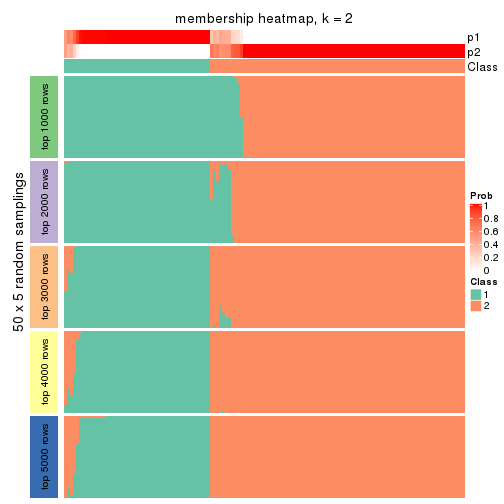
membership_heatmap(res, k = 3)
membership_heatmap(res, k = 4)
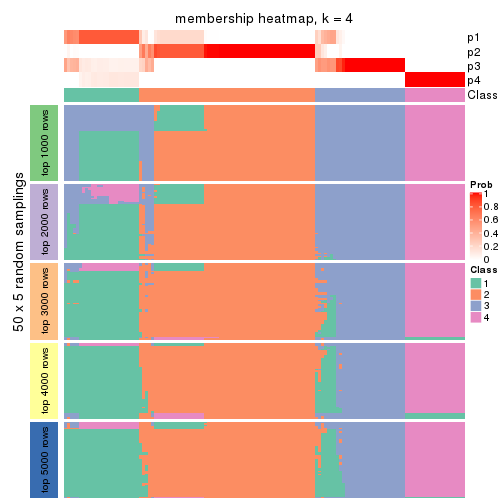
membership_heatmap(res, k = 5)
membership_heatmap(res, k = 6)

As soon as we have had the classes for columns, we can look for signatures which are significantly different between classes which can be candidate marks for certain classes. Following are the heatmaps for signatures.
Signature heatmaps where rows are scaled:
get_signatures(res, k = 2)
get_signatures(res, k = 3)

get_signatures(res, k = 4)
get_signatures(res, k = 5)
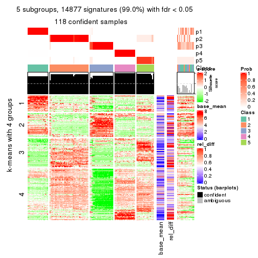
get_signatures(res, k = 6)

Signature heatmaps where rows are not scaled:
get_signatures(res, k = 2, scale_rows = FALSE)
get_signatures(res, k = 3, scale_rows = FALSE)
get_signatures(res, k = 4, scale_rows = FALSE)
get_signatures(res, k = 5, scale_rows = FALSE)
get_signatures(res, k = 6, scale_rows = FALSE)
Compare the overlap of signatures from different k:
compare_signatures(res)
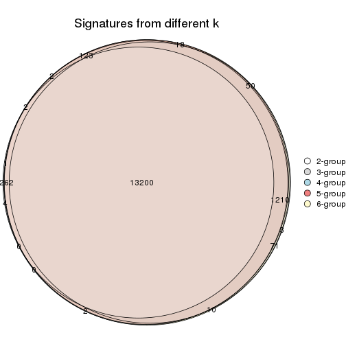
get_signature() returns a data frame invisibly. TO get the list of signatures, the function
call should be assigned to a variable explicitly. In following code, if plot argument is set
to FALSE, no heatmap is plotted while only the differential analysis is performed.
# code only for demonstration
tb = get_signature(res, k = ..., plot = FALSE)
An example of the output of tb is:
#> which_row fdr mean_1 mean_2 scaled_mean_1 scaled_mean_2 km
#> 1 38 0.042760348 8.373488 9.131774 -0.5533452 0.5164555 1
#> 2 40 0.018707592 7.106213 8.469186 -0.6173731 0.5762149 1
#> 3 55 0.019134737 10.221463 11.207825 -0.6159697 0.5749050 1
#> 4 59 0.006059896 5.921854 7.869574 -0.6899429 0.6439467 1
#> 5 60 0.018055526 8.928898 10.211722 -0.6204761 0.5791110 1
#> 6 98 0.009384629 15.714769 14.887706 0.6635654 -0.6193277 2
...
The columns in tb are:
which_row: row indices corresponding to the input matrix.fdr: FDR for the differential test. mean_x: The mean value in group x.scaled_mean_x: The mean value in group x after rows are scaled.km: Row groups if k-means clustering is applied to rows.UMAP plot which shows how samples are separated.
dimension_reduction(res, k = 2, method = "UMAP")
dimension_reduction(res, k = 3, method = "UMAP")
dimension_reduction(res, k = 4, method = "UMAP")
dimension_reduction(res, k = 5, method = "UMAP")
dimension_reduction(res, k = 6, method = "UMAP")

Following heatmap shows how subgroups are split when increasing k:
collect_classes(res)
If matrix rows can be associated to genes, consider to use GO_Enrichment(res,
...) to perform function enrichment for the signature genes.
The object with results only for a single top-value method and a single partition method can be extracted as:
res = res_list["CV", "hclust"]
# you can also extract it by
# res = res_list["CV:hclust"]
A summary of res and all the functions that can be applied to it:
res
#> A 'ConsensusPartition' object with k = 2, 3, 4, 5, 6.
#> On a matrix with 15028 rows and 134 columns.
#> Top rows (1000, 2000, 3000, 4000, 5000) are extracted by 'CV' method.
#> Subgroups are detected by 'hclust' method.
#> Performed in total 1250 partitions by row resampling.
#> Best k for subgroups seems to be 6.
#>
#> Following methods can be applied to this 'ConsensusPartition' object:
#> [1] "cola_report" "collect_classes" "collect_plots"
#> [4] "collect_stats" "colnames" "compare_signatures"
#> [7] "consensus_heatmap" "dimension_reduction" "functional_enrichment"
#> [10] "get_anno_col" "get_anno" "get_classes"
#> [13] "get_consensus" "get_matrix" "get_membership"
#> [16] "get_param" "get_signatures" "get_stats"
#> [19] "is_best_k" "is_stable_k" "membership_heatmap"
#> [22] "ncol" "nrow" "plot_ecdf"
#> [25] "rownames" "select_partition_number" "show"
#> [28] "suggest_best_k" "test_to_known_factors"
collect_plots() function collects all the plots made from res for all k (number of partitions)
into one single page to provide an easy and fast comparison between different k.
collect_plots(res)
The plots are:
k and the heatmap of
predicted classes for each k.k.k.k.All the plots in panels can be made by individual functions and they are plotted later in this section.
select_partition_number() produces several plots showing different
statistics for choosing “optimized” k. There are following statistics:
k;k, the area increased is defined as \(A_k - A_{k-1}\).The detailed explanations of these statistics can be found in the cola vignette.
Generally speaking, lower PAC score, higher mean silhouette score or higher
concordance corresponds to better partition. Rand index and Jaccard index
measure how similar the current partition is compared to partition with k-1.
If they are too similar, we won't accept k is better than k-1.
select_partition_number(res)
The numeric values for all these statistics can be obtained by get_stats().
get_stats(res)
#> k 1-PAC mean_silhouette concordance area_increased Rand Jaccard
#> 2 2 1.000 0.992 0.995 0.4965 0.502 0.502
#> 3 3 0.745 0.933 0.875 0.2213 0.879 0.758
#> 4 4 0.866 0.930 0.938 0.1640 0.918 0.784
#> 5 5 0.887 0.946 0.922 0.0726 0.948 0.827
#> 6 6 1.000 0.991 0.996 0.0785 0.937 0.745
suggest_best_k() suggests the best \(k\) based on these statistics. The rules are as follows:
NA.suggest_best_k(res)
#> [1] 6
#> attr(,"optional")
#> [1] 2
There is also optional best \(k\) = 2 that is worth to check.
Following shows the table of the partitions (You need to click the show/hide
code output link to see it). The membership matrix (columns with name p*)
is inferred by
clue::cl_consensus()
function with the SE method. Basically the value in the membership matrix
represents the probability to belong to a certain group. The finall class
label for an item is determined with the group with highest probability it
belongs to.
In get_classes() function, the entropy is calculated from the membership
matrix and the silhouette score is calculated from the consensus matrix.
cbind(get_classes(res, k = 2), get_membership(res, k = 2))
#> class entropy silhouette p1 p2
#> SRR1550981 1 0.242 0.970 0.96 0.04
#> SRR1550982 1 0.242 0.970 0.96 0.04
#> SRR1550983 1 0.242 0.970 0.96 0.04
#> SRR1550984 1 0.242 0.970 0.96 0.04
#> SRR1550986 1 0.000 0.988 1.00 0.00
#> SRR1550985 1 0.242 0.970 0.96 0.04
#> SRR1550988 2 0.000 1.000 0.00 1.00
#> SRR1550987 1 0.000 0.988 1.00 0.00
#> SRR1550989 2 0.000 1.000 0.00 1.00
#> SRR1550990 2 0.000 1.000 0.00 1.00
#> SRR1550991 2 0.000 1.000 0.00 1.00
#> SRR1550992 1 0.000 0.988 1.00 0.00
#> SRR1550994 2 0.000 1.000 0.00 1.00
#> SRR1550993 1 0.000 0.988 1.00 0.00
#> SRR1550995 2 0.000 1.000 0.00 1.00
#> SRR1550996 2 0.000 1.000 0.00 1.00
#> SRR1550997 1 0.000 0.988 1.00 0.00
#> SRR1550998 1 0.000 0.988 1.00 0.00
#> SRR1551000 2 0.000 1.000 0.00 1.00
#> SRR1550999 2 0.000 1.000 0.00 1.00
#> SRR1551001 2 0.000 1.000 0.00 1.00
#> SRR1551002 1 0.000 0.988 1.00 0.00
#> SRR1551003 1 0.000 0.988 1.00 0.00
#> SRR1551004 2 0.000 1.000 0.00 1.00
#> SRR1551006 2 0.000 1.000 0.00 1.00
#> SRR1551005 2 0.000 1.000 0.00 1.00
#> SRR1551007 2 0.000 1.000 0.00 1.00
#> SRR1551008 1 0.000 0.988 1.00 0.00
#> SRR1551009 1 0.000 0.988 1.00 0.00
#> SRR1551010 2 0.000 1.000 0.00 1.00
#> SRR1551012 2 0.000 1.000 0.00 1.00
#> SRR1551011 2 0.000 1.000 0.00 1.00
#> SRR1551013 1 0.000 0.988 1.00 0.00
#> SRR1551014 1 0.000 0.988 1.00 0.00
#> SRR1551015 2 0.000 1.000 0.00 1.00
#> SRR1551016 2 0.000 1.000 0.00 1.00
#> SRR1551017 2 0.000 1.000 0.00 1.00
#> SRR1551018 2 0.000 1.000 0.00 1.00
#> SRR1551019 1 0.000 0.988 1.00 0.00
#> SRR1551021 1 0.000 0.988 1.00 0.00
#> SRR1551022 2 0.000 1.000 0.00 1.00
#> SRR1551023 2 0.000 1.000 0.00 1.00
#> SRR1551020 1 0.000 0.988 1.00 0.00
#> SRR1551024 2 0.000 1.000 0.00 1.00
#> SRR1551026 1 0.000 0.988 1.00 0.00
#> SRR1551025 1 0.000 0.988 1.00 0.00
#> SRR1551027 1 0.000 0.988 1.00 0.00
#> SRR1551028 2 0.000 1.000 0.00 1.00
#> SRR1551029 2 0.000 1.000 0.00 1.00
#> SRR1551030 2 0.000 1.000 0.00 1.00
#> SRR1551031 2 0.000 1.000 0.00 1.00
#> SRR1551032 1 0.000 0.988 1.00 0.00
#> SRR1551034 1 0.000 0.988 1.00 0.00
#> SRR1551033 1 0.000 0.988 1.00 0.00
#> SRR1551035 2 0.000 1.000 0.00 1.00
#> SRR1551036 2 0.000 1.000 0.00 1.00
#> SRR1551037 2 0.000 1.000 0.00 1.00
#> SRR1551038 2 0.000 1.000 0.00 1.00
#> SRR1551039 1 0.242 0.970 0.96 0.04
#> SRR1551040 1 0.000 0.988 1.00 0.00
#> SRR1551041 1 0.000 0.988 1.00 0.00
#> SRR1551042 2 0.000 1.000 0.00 1.00
#> SRR1551043 2 0.000 1.000 0.00 1.00
#> SRR1551044 2 0.000 1.000 0.00 1.00
#> SRR1551045 2 0.000 1.000 0.00 1.00
#> SRR1551046 1 0.242 0.970 0.96 0.04
#> SRR1551047 1 0.000 0.988 1.00 0.00
#> SRR1551048 1 0.000 0.988 1.00 0.00
#> SRR1551049 2 0.000 1.000 0.00 1.00
#> SRR1551050 2 0.000 1.000 0.00 1.00
#> SRR1551051 2 0.000 1.000 0.00 1.00
#> SRR1551052 2 0.000 1.000 0.00 1.00
#> SRR1551053 1 0.242 0.970 0.96 0.04
#> SRR1551054 1 0.000 0.988 1.00 0.00
#> SRR1551055 1 0.000 0.988 1.00 0.00
#> SRR1551056 2 0.000 1.000 0.00 1.00
#> SRR1551057 2 0.000 1.000 0.00 1.00
#> SRR1551058 2 0.000 1.000 0.00 1.00
#> SRR1551059 2 0.000 1.000 0.00 1.00
#> SRR1551060 1 0.242 0.970 0.96 0.04
#> SRR1551061 1 0.000 0.988 1.00 0.00
#> SRR1551062 1 0.000 0.988 1.00 0.00
#> SRR1551063 2 0.000 1.000 0.00 1.00
#> SRR1551064 2 0.000 1.000 0.00 1.00
#> SRR1551065 2 0.000 1.000 0.00 1.00
#> SRR1551066 2 0.000 1.000 0.00 1.00
#> SRR1551067 1 0.242 0.970 0.96 0.04
#> SRR1551068 1 0.000 0.988 1.00 0.00
#> SRR1551069 1 0.000 0.988 1.00 0.00
#> SRR1551070 2 0.000 1.000 0.00 1.00
#> SRR1551071 2 0.000 1.000 0.00 1.00
#> SRR1551072 2 0.000 1.000 0.00 1.00
#> SRR1551073 2 0.000 1.000 0.00 1.00
#> SRR1551074 1 0.242 0.970 0.96 0.04
#> SRR1551075 1 0.000 0.988 1.00 0.00
#> SRR1551076 1 0.000 0.988 1.00 0.00
#> SRR1551077 2 0.000 1.000 0.00 1.00
#> SRR1551078 2 0.000 1.000 0.00 1.00
#> SRR1551079 2 0.000 1.000 0.00 1.00
#> SRR1551080 2 0.000 1.000 0.00 1.00
#> SRR1551081 1 0.242 0.970 0.96 0.04
#> SRR1551082 1 0.000 0.988 1.00 0.00
#> SRR1551083 1 0.000 0.988 1.00 0.00
#> SRR1551084 2 0.000 1.000 0.00 1.00
#> SRR1551085 2 0.000 1.000 0.00 1.00
#> SRR1551086 2 0.000 1.000 0.00 1.00
#> SRR1551088 1 0.000 0.988 1.00 0.00
#> SRR1551087 1 0.242 0.970 0.96 0.04
#> SRR1551089 1 0.000 0.988 1.00 0.00
#> SRR1551090 2 0.000 1.000 0.00 1.00
#> SRR1551091 2 0.000 1.000 0.00 1.00
#> SRR1551092 2 0.000 1.000 0.00 1.00
#> SRR1551093 2 0.000 1.000 0.00 1.00
#> SRR1551094 1 0.242 0.970 0.96 0.04
#> SRR1551095 1 0.000 0.988 1.00 0.00
#> SRR1551096 1 0.000 0.988 1.00 0.00
#> SRR1551097 2 0.000 1.000 0.00 1.00
#> SRR1551098 2 0.000 1.000 0.00 1.00
#> SRR1551099 2 0.000 1.000 0.00 1.00
#> SRR1551101 1 0.000 0.988 1.00 0.00
#> SRR1551100 1 0.242 0.970 0.96 0.04
#> SRR1551102 1 0.000 0.988 1.00 0.00
#> SRR1551103 2 0.000 1.000 0.00 1.00
#> SRR1551104 2 0.000 1.000 0.00 1.00
#> SRR1551105 2 0.000 1.000 0.00 1.00
#> SRR1551106 2 0.000 1.000 0.00 1.00
#> SRR1551107 1 0.242 0.970 0.96 0.04
#> SRR1551108 1 0.000 0.988 1.00 0.00
#> SRR1551109 1 0.000 0.988 1.00 0.00
#> SRR1551110 2 0.000 1.000 0.00 1.00
#> SRR1551111 2 0.000 1.000 0.00 1.00
#> SRR1551112 2 0.000 1.000 0.00 1.00
#> SRR1551113 2 0.000 1.000 0.00 1.00
#> SRR1551114 1 0.242 0.970 0.96 0.04
cbind(get_classes(res, k = 3), get_membership(res, k = 3))
#> class entropy silhouette p1 p2 p3
#> SRR1550981 1 0.502 0.799 0.76 0.0 0.24
#> SRR1550982 1 0.502 0.799 0.76 0.0 0.24
#> SRR1550983 1 0.502 0.799 0.76 0.0 0.24
#> SRR1550984 1 0.502 0.799 0.76 0.0 0.24
#> SRR1550986 1 0.400 0.864 0.84 0.0 0.16
#> SRR1550985 1 0.502 0.799 0.76 0.0 0.24
#> SRR1550988 3 0.613 1.000 0.00 0.4 0.60
#> SRR1550987 1 0.000 0.882 1.00 0.0 0.00
#> SRR1550989 2 0.000 1.000 0.00 1.0 0.00
#> SRR1550990 2 0.000 1.000 0.00 1.0 0.00
#> SRR1550991 2 0.000 1.000 0.00 1.0 0.00
#> SRR1550992 1 0.400 0.864 0.84 0.0 0.16
#> SRR1550994 3 0.613 1.000 0.00 0.4 0.60
#> SRR1550993 1 0.000 0.882 1.00 0.0 0.00
#> SRR1550995 2 0.000 1.000 0.00 1.0 0.00
#> SRR1550996 2 0.000 1.000 0.00 1.0 0.00
#> SRR1550997 1 0.400 0.864 0.84 0.0 0.16
#> SRR1550998 1 0.000 0.882 1.00 0.0 0.00
#> SRR1551000 2 0.000 1.000 0.00 1.0 0.00
#> SRR1550999 3 0.613 1.000 0.00 0.4 0.60
#> SRR1551001 2 0.000 1.000 0.00 1.0 0.00
#> SRR1551002 1 0.400 0.864 0.84 0.0 0.16
#> SRR1551003 1 0.000 0.882 1.00 0.0 0.00
#> SRR1551004 3 0.613 1.000 0.00 0.4 0.60
#> SRR1551006 2 0.000 1.000 0.00 1.0 0.00
#> SRR1551005 2 0.000 1.000 0.00 1.0 0.00
#> SRR1551007 2 0.000 1.000 0.00 1.0 0.00
#> SRR1551008 1 0.400 0.864 0.84 0.0 0.16
#> SRR1551009 1 0.000 0.882 1.00 0.0 0.00
#> SRR1551010 3 0.613 1.000 0.00 0.4 0.60
#> SRR1551012 2 0.000 1.000 0.00 1.0 0.00
#> SRR1551011 2 0.000 1.000 0.00 1.0 0.00
#> SRR1551013 1 0.400 0.864 0.84 0.0 0.16
#> SRR1551014 1 0.000 0.882 1.00 0.0 0.00
#> SRR1551015 3 0.613 1.000 0.00 0.4 0.60
#> SRR1551016 2 0.000 1.000 0.00 1.0 0.00
#> SRR1551017 2 0.000 1.000 0.00 1.0 0.00
#> SRR1551018 2 0.000 1.000 0.00 1.0 0.00
#> SRR1551019 1 0.400 0.864 0.84 0.0 0.16
#> SRR1551021 1 0.000 0.882 1.00 0.0 0.00
#> SRR1551022 3 0.613 1.000 0.00 0.4 0.60
#> SRR1551023 2 0.000 1.000 0.00 1.0 0.00
#> SRR1551020 1 0.400 0.864 0.84 0.0 0.16
#> SRR1551024 2 0.000 1.000 0.00 1.0 0.00
#> SRR1551026 1 0.400 0.864 0.84 0.0 0.16
#> SRR1551025 1 0.400 0.864 0.84 0.0 0.16
#> SRR1551027 1 0.000 0.882 1.00 0.0 0.00
#> SRR1551028 3 0.613 1.000 0.00 0.4 0.60
#> SRR1551029 2 0.000 1.000 0.00 1.0 0.00
#> SRR1551030 2 0.000 1.000 0.00 1.0 0.00
#> SRR1551031 2 0.000 1.000 0.00 1.0 0.00
#> SRR1551032 1 0.400 0.864 0.84 0.0 0.16
#> SRR1551034 1 0.000 0.882 1.00 0.0 0.00
#> SRR1551033 1 0.400 0.864 0.84 0.0 0.16
#> SRR1551035 3 0.613 1.000 0.00 0.4 0.60
#> SRR1551036 2 0.000 1.000 0.00 1.0 0.00
#> SRR1551037 2 0.000 1.000 0.00 1.0 0.00
#> SRR1551038 2 0.000 1.000 0.00 1.0 0.00
#> SRR1551039 1 0.502 0.799 0.76 0.0 0.24
#> SRR1551040 1 0.400 0.864 0.84 0.0 0.16
#> SRR1551041 1 0.000 0.882 1.00 0.0 0.00
#> SRR1551042 3 0.613 1.000 0.00 0.4 0.60
#> SRR1551043 2 0.000 1.000 0.00 1.0 0.00
#> SRR1551044 2 0.000 1.000 0.00 1.0 0.00
#> SRR1551045 2 0.000 1.000 0.00 1.0 0.00
#> SRR1551046 1 0.502 0.799 0.76 0.0 0.24
#> SRR1551047 1 0.400 0.864 0.84 0.0 0.16
#> SRR1551048 1 0.000 0.882 1.00 0.0 0.00
#> SRR1551049 3 0.613 1.000 0.00 0.4 0.60
#> SRR1551050 2 0.000 1.000 0.00 1.0 0.00
#> SRR1551051 2 0.000 1.000 0.00 1.0 0.00
#> SRR1551052 2 0.000 1.000 0.00 1.0 0.00
#> SRR1551053 1 0.502 0.799 0.76 0.0 0.24
#> SRR1551054 1 0.400 0.864 0.84 0.0 0.16
#> SRR1551055 1 0.000 0.882 1.00 0.0 0.00
#> SRR1551056 3 0.613 1.000 0.00 0.4 0.60
#> SRR1551057 2 0.000 1.000 0.00 1.0 0.00
#> SRR1551058 2 0.000 1.000 0.00 1.0 0.00
#> SRR1551059 2 0.000 1.000 0.00 1.0 0.00
#> SRR1551060 1 0.502 0.799 0.76 0.0 0.24
#> SRR1551061 1 0.400 0.864 0.84 0.0 0.16
#> SRR1551062 1 0.000 0.882 1.00 0.0 0.00
#> SRR1551063 3 0.613 1.000 0.00 0.4 0.60
#> SRR1551064 2 0.000 1.000 0.00 1.0 0.00
#> SRR1551065 2 0.000 1.000 0.00 1.0 0.00
#> SRR1551066 2 0.000 1.000 0.00 1.0 0.00
#> SRR1551067 1 0.502 0.799 0.76 0.0 0.24
#> SRR1551068 1 0.400 0.864 0.84 0.0 0.16
#> SRR1551069 1 0.000 0.882 1.00 0.0 0.00
#> SRR1551070 3 0.613 1.000 0.00 0.4 0.60
#> SRR1551071 2 0.000 1.000 0.00 1.0 0.00
#> SRR1551072 2 0.000 1.000 0.00 1.0 0.00
#> SRR1551073 2 0.000 1.000 0.00 1.0 0.00
#> SRR1551074 1 0.502 0.799 0.76 0.0 0.24
#> SRR1551075 1 0.400 0.864 0.84 0.0 0.16
#> SRR1551076 1 0.000 0.882 1.00 0.0 0.00
#> SRR1551077 3 0.613 1.000 0.00 0.4 0.60
#> SRR1551078 2 0.000 1.000 0.00 1.0 0.00
#> SRR1551079 2 0.000 1.000 0.00 1.0 0.00
#> SRR1551080 2 0.000 1.000 0.00 1.0 0.00
#> SRR1551081 1 0.502 0.799 0.76 0.0 0.24
#> SRR1551082 1 0.400 0.864 0.84 0.0 0.16
#> SRR1551083 1 0.000 0.882 1.00 0.0 0.00
#> SRR1551084 3 0.613 1.000 0.00 0.4 0.60
#> SRR1551085 2 0.000 1.000 0.00 1.0 0.00
#> SRR1551086 2 0.000 1.000 0.00 1.0 0.00
#> SRR1551088 1 0.400 0.864 0.84 0.0 0.16
#> SRR1551087 1 0.502 0.799 0.76 0.0 0.24
#> SRR1551089 1 0.000 0.882 1.00 0.0 0.00
#> SRR1551090 3 0.613 1.000 0.00 0.4 0.60
#> SRR1551091 2 0.000 1.000 0.00 1.0 0.00
#> SRR1551092 2 0.000 1.000 0.00 1.0 0.00
#> SRR1551093 2 0.000 1.000 0.00 1.0 0.00
#> SRR1551094 1 0.502 0.799 0.76 0.0 0.24
#> SRR1551095 1 0.400 0.864 0.84 0.0 0.16
#> SRR1551096 1 0.000 0.882 1.00 0.0 0.00
#> SRR1551097 3 0.613 1.000 0.00 0.4 0.60
#> SRR1551098 2 0.000 1.000 0.00 1.0 0.00
#> SRR1551099 2 0.000 1.000 0.00 1.0 0.00
#> SRR1551101 1 0.400 0.864 0.84 0.0 0.16
#> SRR1551100 1 0.502 0.799 0.76 0.0 0.24
#> SRR1551102 1 0.000 0.882 1.00 0.0 0.00
#> SRR1551103 3 0.613 1.000 0.00 0.4 0.60
#> SRR1551104 2 0.000 1.000 0.00 1.0 0.00
#> SRR1551105 2 0.000 1.000 0.00 1.0 0.00
#> SRR1551106 2 0.000 1.000 0.00 1.0 0.00
#> SRR1551107 1 0.502 0.799 0.76 0.0 0.24
#> SRR1551108 1 0.400 0.864 0.84 0.0 0.16
#> SRR1551109 1 0.000 0.882 1.00 0.0 0.00
#> SRR1551110 3 0.613 1.000 0.00 0.4 0.60
#> SRR1551111 2 0.000 1.000 0.00 1.0 0.00
#> SRR1551112 2 0.000 1.000 0.00 1.0 0.00
#> SRR1551113 2 0.000 1.000 0.00 1.0 0.00
#> SRR1551114 1 0.502 0.799 0.76 0.0 0.24
cbind(get_classes(res, k = 4), get_membership(res, k = 4))
#> class entropy silhouette p1 p2 p3 p4
#> SRR1550981 1 0.292 1.000 0.860 0 0.140 0
#> SRR1550982 1 0.292 1.000 0.860 0 0.140 0
#> SRR1550983 1 0.292 1.000 0.860 0 0.140 0
#> SRR1550984 1 0.292 1.000 0.860 0 0.140 0
#> SRR1550986 3 0.000 0.802 0.000 0 1.000 0
#> SRR1550985 1 0.292 1.000 0.860 0 0.140 0
#> SRR1550988 4 0.000 1.000 0.000 0 0.000 1
#> SRR1550987 3 0.470 0.765 0.356 0 0.644 0
#> SRR1550989 2 0.000 1.000 0.000 1 0.000 0
#> SRR1550990 2 0.000 1.000 0.000 1 0.000 0
#> SRR1550991 2 0.000 1.000 0.000 1 0.000 0
#> SRR1550992 3 0.000 0.802 0.000 0 1.000 0
#> SRR1550994 4 0.000 1.000 0.000 0 0.000 1
#> SRR1550993 3 0.470 0.765 0.356 0 0.644 0
#> SRR1550995 2 0.000 1.000 0.000 1 0.000 0
#> SRR1550996 2 0.000 1.000 0.000 1 0.000 0
#> SRR1550997 3 0.000 0.802 0.000 0 1.000 0
#> SRR1550998 3 0.470 0.765 0.356 0 0.644 0
#> SRR1551000 2 0.000 1.000 0.000 1 0.000 0
#> SRR1550999 4 0.000 1.000 0.000 0 0.000 1
#> SRR1551001 2 0.000 1.000 0.000 1 0.000 0
#> SRR1551002 3 0.000 0.802 0.000 0 1.000 0
#> SRR1551003 3 0.470 0.765 0.356 0 0.644 0
#> SRR1551004 4 0.000 1.000 0.000 0 0.000 1
#> SRR1551006 2 0.000 1.000 0.000 1 0.000 0
#> SRR1551005 2 0.000 1.000 0.000 1 0.000 0
#> SRR1551007 2 0.000 1.000 0.000 1 0.000 0
#> SRR1551008 3 0.000 0.802 0.000 0 1.000 0
#> SRR1551009 3 0.470 0.765 0.356 0 0.644 0
#> SRR1551010 4 0.000 1.000 0.000 0 0.000 1
#> SRR1551012 2 0.000 1.000 0.000 1 0.000 0
#> SRR1551011 2 0.000 1.000 0.000 1 0.000 0
#> SRR1551013 3 0.000 0.802 0.000 0 1.000 0
#> SRR1551014 3 0.470 0.765 0.356 0 0.644 0
#> SRR1551015 4 0.000 1.000 0.000 0 0.000 1
#> SRR1551016 2 0.000 1.000 0.000 1 0.000 0
#> SRR1551017 2 0.000 1.000 0.000 1 0.000 0
#> SRR1551018 2 0.000 1.000 0.000 1 0.000 0
#> SRR1551019 3 0.164 0.783 0.060 0 0.940 0
#> SRR1551021 3 0.470 0.765 0.356 0 0.644 0
#> SRR1551022 4 0.000 1.000 0.000 0 0.000 1
#> SRR1551023 2 0.000 1.000 0.000 1 0.000 0
#> SRR1551020 3 0.000 0.802 0.000 0 1.000 0
#> SRR1551024 2 0.000 1.000 0.000 1 0.000 0
#> SRR1551026 3 0.000 0.802 0.000 0 1.000 0
#> SRR1551025 3 0.164 0.783 0.060 0 0.940 0
#> SRR1551027 3 0.470 0.765 0.356 0 0.644 0
#> SRR1551028 4 0.000 1.000 0.000 0 0.000 1
#> SRR1551029 2 0.000 1.000 0.000 1 0.000 0
#> SRR1551030 2 0.000 1.000 0.000 1 0.000 0
#> SRR1551031 2 0.000 1.000 0.000 1 0.000 0
#> SRR1551032 3 0.164 0.783 0.060 0 0.940 0
#> SRR1551034 3 0.470 0.765 0.356 0 0.644 0
#> SRR1551033 3 0.000 0.802 0.000 0 1.000 0
#> SRR1551035 4 0.000 1.000 0.000 0 0.000 1
#> SRR1551036 2 0.000 1.000 0.000 1 0.000 0
#> SRR1551037 2 0.000 1.000 0.000 1 0.000 0
#> SRR1551038 2 0.000 1.000 0.000 1 0.000 0
#> SRR1551039 1 0.292 1.000 0.860 0 0.140 0
#> SRR1551040 3 0.000 0.802 0.000 0 1.000 0
#> SRR1551041 3 0.470 0.765 0.356 0 0.644 0
#> SRR1551042 4 0.000 1.000 0.000 0 0.000 1
#> SRR1551043 2 0.000 1.000 0.000 1 0.000 0
#> SRR1551044 2 0.000 1.000 0.000 1 0.000 0
#> SRR1551045 2 0.000 1.000 0.000 1 0.000 0
#> SRR1551046 1 0.292 1.000 0.860 0 0.140 0
#> SRR1551047 3 0.000 0.802 0.000 0 1.000 0
#> SRR1551048 3 0.470 0.765 0.356 0 0.644 0
#> SRR1551049 4 0.000 1.000 0.000 0 0.000 1
#> SRR1551050 2 0.000 1.000 0.000 1 0.000 0
#> SRR1551051 2 0.000 1.000 0.000 1 0.000 0
#> SRR1551052 2 0.000 1.000 0.000 1 0.000 0
#> SRR1551053 1 0.292 1.000 0.860 0 0.140 0
#> SRR1551054 3 0.000 0.802 0.000 0 1.000 0
#> SRR1551055 3 0.470 0.765 0.356 0 0.644 0
#> SRR1551056 4 0.000 1.000 0.000 0 0.000 1
#> SRR1551057 2 0.000 1.000 0.000 1 0.000 0
#> SRR1551058 2 0.000 1.000 0.000 1 0.000 0
#> SRR1551059 2 0.000 1.000 0.000 1 0.000 0
#> SRR1551060 1 0.292 1.000 0.860 0 0.140 0
#> SRR1551061 3 0.000 0.802 0.000 0 1.000 0
#> SRR1551062 3 0.470 0.765 0.356 0 0.644 0
#> SRR1551063 4 0.000 1.000 0.000 0 0.000 1
#> SRR1551064 2 0.000 1.000 0.000 1 0.000 0
#> SRR1551065 2 0.000 1.000 0.000 1 0.000 0
#> SRR1551066 2 0.000 1.000 0.000 1 0.000 0
#> SRR1551067 1 0.292 1.000 0.860 0 0.140 0
#> SRR1551068 3 0.000 0.802 0.000 0 1.000 0
#> SRR1551069 3 0.470 0.765 0.356 0 0.644 0
#> SRR1551070 4 0.000 1.000 0.000 0 0.000 1
#> SRR1551071 2 0.000 1.000 0.000 1 0.000 0
#> SRR1551072 2 0.000 1.000 0.000 1 0.000 0
#> SRR1551073 2 0.000 1.000 0.000 1 0.000 0
#> SRR1551074 1 0.292 1.000 0.860 0 0.140 0
#> SRR1551075 3 0.000 0.802 0.000 0 1.000 0
#> SRR1551076 3 0.470 0.765 0.356 0 0.644 0
#> SRR1551077 4 0.000 1.000 0.000 0 0.000 1
#> SRR1551078 2 0.000 1.000 0.000 1 0.000 0
#> SRR1551079 2 0.000 1.000 0.000 1 0.000 0
#> SRR1551080 2 0.000 1.000 0.000 1 0.000 0
#> SRR1551081 1 0.292 1.000 0.860 0 0.140 0
#> SRR1551082 3 0.000 0.802 0.000 0 1.000 0
#> SRR1551083 3 0.470 0.765 0.356 0 0.644 0
#> SRR1551084 4 0.000 1.000 0.000 0 0.000 1
#> SRR1551085 2 0.000 1.000 0.000 1 0.000 0
#> SRR1551086 2 0.000 1.000 0.000 1 0.000 0
#> SRR1551088 3 0.000 0.802 0.000 0 1.000 0
#> SRR1551087 1 0.292 1.000 0.860 0 0.140 0
#> SRR1551089 3 0.470 0.765 0.356 0 0.644 0
#> SRR1551090 4 0.000 1.000 0.000 0 0.000 1
#> SRR1551091 2 0.000 1.000 0.000 1 0.000 0
#> SRR1551092 2 0.000 1.000 0.000 1 0.000 0
#> SRR1551093 2 0.000 1.000 0.000 1 0.000 0
#> SRR1551094 1 0.292 1.000 0.860 0 0.140 0
#> SRR1551095 3 0.000 0.802 0.000 0 1.000 0
#> SRR1551096 3 0.470 0.765 0.356 0 0.644 0
#> SRR1551097 4 0.000 1.000 0.000 0 0.000 1
#> SRR1551098 2 0.000 1.000 0.000 1 0.000 0
#> SRR1551099 2 0.000 1.000 0.000 1 0.000 0
#> SRR1551101 3 0.000 0.802 0.000 0 1.000 0
#> SRR1551100 1 0.292 1.000 0.860 0 0.140 0
#> SRR1551102 3 0.470 0.765 0.356 0 0.644 0
#> SRR1551103 4 0.000 1.000 0.000 0 0.000 1
#> SRR1551104 2 0.000 1.000 0.000 1 0.000 0
#> SRR1551105 2 0.000 1.000 0.000 1 0.000 0
#> SRR1551106 2 0.000 1.000 0.000 1 0.000 0
#> SRR1551107 1 0.292 1.000 0.860 0 0.140 0
#> SRR1551108 3 0.000 0.802 0.000 0 1.000 0
#> SRR1551109 3 0.470 0.765 0.356 0 0.644 0
#> SRR1551110 4 0.000 1.000 0.000 0 0.000 1
#> SRR1551111 2 0.000 1.000 0.000 1 0.000 0
#> SRR1551112 2 0.000 1.000 0.000 1 0.000 0
#> SRR1551113 2 0.000 1.000 0.000 1 0.000 0
#> SRR1551114 1 0.292 1.000 0.860 0 0.140 0
cbind(get_classes(res, k = 5), get_membership(res, k = 5))
#> class entropy silhouette p1 p2 p3 p4 p5
#> SRR1550981 5 0.000 1.000 0.000 0.000 0.000 0 1.00
#> SRR1550982 5 0.000 1.000 0.000 0.000 0.000 0 1.00
#> SRR1550983 5 0.000 1.000 0.000 0.000 0.000 0 1.00
#> SRR1550984 5 0.000 1.000 0.000 0.000 0.000 0 1.00
#> SRR1550986 3 0.418 0.967 0.268 0.000 0.712 0 0.02
#> SRR1550985 5 0.000 1.000 0.000 0.000 0.000 0 1.00
#> SRR1550988 4 0.000 1.000 0.000 0.000 0.000 1 0.00
#> SRR1550987 1 0.000 1.000 1.000 0.000 0.000 0 0.00
#> SRR1550989 2 0.000 0.930 0.000 1.000 0.000 0 0.00
#> SRR1550990 2 0.000 0.930 0.000 1.000 0.000 0 0.00
#> SRR1550991 2 0.373 0.777 0.000 0.712 0.288 0 0.00
#> SRR1550992 3 0.418 0.967 0.268 0.000 0.712 0 0.02
#> SRR1550994 4 0.000 1.000 0.000 0.000 0.000 1 0.00
#> SRR1550993 1 0.000 1.000 1.000 0.000 0.000 0 0.00
#> SRR1550995 2 0.000 0.930 0.000 1.000 0.000 0 0.00
#> SRR1550996 2 0.000 0.930 0.000 1.000 0.000 0 0.00
#> SRR1550997 3 0.418 0.967 0.268 0.000 0.712 0 0.02
#> SRR1550998 1 0.000 1.000 1.000 0.000 0.000 0 0.00
#> SRR1551000 2 0.000 0.930 0.000 1.000 0.000 0 0.00
#> SRR1550999 4 0.000 1.000 0.000 0.000 0.000 1 0.00
#> SRR1551001 2 0.000 0.930 0.000 1.000 0.000 0 0.00
#> SRR1551002 3 0.418 0.967 0.268 0.000 0.712 0 0.02
#> SRR1551003 1 0.000 1.000 1.000 0.000 0.000 0 0.00
#> SRR1551004 4 0.000 1.000 0.000 0.000 0.000 1 0.00
#> SRR1551006 2 0.000 0.930 0.000 1.000 0.000 0 0.00
#> SRR1551005 2 0.000 0.930 0.000 1.000 0.000 0 0.00
#> SRR1551007 2 0.373 0.777 0.000 0.712 0.288 0 0.00
#> SRR1551008 3 0.418 0.967 0.268 0.000 0.712 0 0.02
#> SRR1551009 1 0.000 1.000 1.000 0.000 0.000 0 0.00
#> SRR1551010 4 0.000 1.000 0.000 0.000 0.000 1 0.00
#> SRR1551012 2 0.000 0.930 0.000 1.000 0.000 0 0.00
#> SRR1551011 2 0.000 0.930 0.000 1.000 0.000 0 0.00
#> SRR1551013 3 0.418 0.967 0.268 0.000 0.712 0 0.02
#> SRR1551014 1 0.000 1.000 1.000 0.000 0.000 0 0.00
#> SRR1551015 4 0.000 1.000 0.000 0.000 0.000 1 0.00
#> SRR1551016 2 0.000 0.930 0.000 1.000 0.000 0 0.00
#> SRR1551017 2 0.000 0.930 0.000 1.000 0.000 0 0.00
#> SRR1551018 2 0.373 0.777 0.000 0.712 0.288 0 0.00
#> SRR1551019 3 0.628 0.763 0.268 0.000 0.532 0 0.20
#> SRR1551021 1 0.000 1.000 1.000 0.000 0.000 0 0.00
#> SRR1551022 4 0.000 1.000 0.000 0.000 0.000 1 0.00
#> SRR1551023 2 0.000 0.930 0.000 1.000 0.000 0 0.00
#> SRR1551020 3 0.418 0.967 0.268 0.000 0.712 0 0.02
#> SRR1551024 2 0.000 0.930 0.000 1.000 0.000 0 0.00
#> SRR1551026 3 0.418 0.967 0.268 0.000 0.712 0 0.02
#> SRR1551025 3 0.628 0.763 0.268 0.000 0.532 0 0.20
#> SRR1551027 1 0.000 1.000 1.000 0.000 0.000 0 0.00
#> SRR1551028 4 0.000 1.000 0.000 0.000 0.000 1 0.00
#> SRR1551029 2 0.000 0.930 0.000 1.000 0.000 0 0.00
#> SRR1551030 2 0.000 0.930 0.000 1.000 0.000 0 0.00
#> SRR1551031 2 0.373 0.777 0.000 0.712 0.288 0 0.00
#> SRR1551032 3 0.628 0.763 0.268 0.000 0.532 0 0.20
#> SRR1551034 1 0.000 1.000 1.000 0.000 0.000 0 0.00
#> SRR1551033 3 0.418 0.967 0.268 0.000 0.712 0 0.02
#> SRR1551035 4 0.000 1.000 0.000 0.000 0.000 1 0.00
#> SRR1551036 2 0.000 0.930 0.000 1.000 0.000 0 0.00
#> SRR1551037 2 0.000 0.930 0.000 1.000 0.000 0 0.00
#> SRR1551038 2 0.373 0.777 0.000 0.712 0.288 0 0.00
#> SRR1551039 5 0.000 1.000 0.000 0.000 0.000 0 1.00
#> SRR1551040 3 0.418 0.967 0.268 0.000 0.712 0 0.02
#> SRR1551041 1 0.000 1.000 1.000 0.000 0.000 0 0.00
#> SRR1551042 4 0.000 1.000 0.000 0.000 0.000 1 0.00
#> SRR1551043 2 0.000 0.930 0.000 1.000 0.000 0 0.00
#> SRR1551044 2 0.000 0.930 0.000 1.000 0.000 0 0.00
#> SRR1551045 2 0.373 0.777 0.000 0.712 0.288 0 0.00
#> SRR1551046 5 0.000 1.000 0.000 0.000 0.000 0 1.00
#> SRR1551047 3 0.418 0.967 0.268 0.000 0.712 0 0.02
#> SRR1551048 1 0.000 1.000 1.000 0.000 0.000 0 0.00
#> SRR1551049 4 0.000 1.000 0.000 0.000 0.000 1 0.00
#> SRR1551050 2 0.000 0.930 0.000 1.000 0.000 0 0.00
#> SRR1551051 2 0.000 0.930 0.000 1.000 0.000 0 0.00
#> SRR1551052 2 0.373 0.777 0.000 0.712 0.288 0 0.00
#> SRR1551053 5 0.000 1.000 0.000 0.000 0.000 0 1.00
#> SRR1551054 3 0.418 0.967 0.268 0.000 0.712 0 0.02
#> SRR1551055 1 0.000 1.000 1.000 0.000 0.000 0 0.00
#> SRR1551056 4 0.000 1.000 0.000 0.000 0.000 1 0.00
#> SRR1551057 2 0.000 0.930 0.000 1.000 0.000 0 0.00
#> SRR1551058 2 0.000 0.930 0.000 1.000 0.000 0 0.00
#> SRR1551059 2 0.373 0.777 0.000 0.712 0.288 0 0.00
#> SRR1551060 5 0.000 1.000 0.000 0.000 0.000 0 1.00
#> SRR1551061 3 0.418 0.967 0.268 0.000 0.712 0 0.02
#> SRR1551062 1 0.000 1.000 1.000 0.000 0.000 0 0.00
#> SRR1551063 4 0.000 1.000 0.000 0.000 0.000 1 0.00
#> SRR1551064 2 0.000 0.930 0.000 1.000 0.000 0 0.00
#> SRR1551065 2 0.000 0.930 0.000 1.000 0.000 0 0.00
#> SRR1551066 2 0.373 0.777 0.000 0.712 0.288 0 0.00
#> SRR1551067 5 0.000 1.000 0.000 0.000 0.000 0 1.00
#> SRR1551068 3 0.418 0.967 0.268 0.000 0.712 0 0.02
#> SRR1551069 1 0.000 1.000 1.000 0.000 0.000 0 0.00
#> SRR1551070 4 0.000 1.000 0.000 0.000 0.000 1 0.00
#> SRR1551071 2 0.000 0.930 0.000 1.000 0.000 0 0.00
#> SRR1551072 2 0.000 0.930 0.000 1.000 0.000 0 0.00
#> SRR1551073 2 0.373 0.777 0.000 0.712 0.288 0 0.00
#> SRR1551074 5 0.000 1.000 0.000 0.000 0.000 0 1.00
#> SRR1551075 3 0.418 0.967 0.268 0.000 0.712 0 0.02
#> SRR1551076 1 0.000 1.000 1.000 0.000 0.000 0 0.00
#> SRR1551077 4 0.000 1.000 0.000 0.000 0.000 1 0.00
#> SRR1551078 2 0.000 0.930 0.000 1.000 0.000 0 0.00
#> SRR1551079 2 0.000 0.930 0.000 1.000 0.000 0 0.00
#> SRR1551080 2 0.373 0.777 0.000 0.712 0.288 0 0.00
#> SRR1551081 5 0.000 1.000 0.000 0.000 0.000 0 1.00
#> SRR1551082 3 0.418 0.967 0.268 0.000 0.712 0 0.02
#> SRR1551083 1 0.000 1.000 1.000 0.000 0.000 0 0.00
#> SRR1551084 4 0.000 1.000 0.000 0.000 0.000 1 0.00
#> SRR1551085 2 0.000 0.930 0.000 1.000 0.000 0 0.00
#> SRR1551086 2 0.000 0.930 0.000 1.000 0.000 0 0.00
#> SRR1551088 3 0.418 0.967 0.268 0.000 0.712 0 0.02
#> SRR1551087 5 0.000 1.000 0.000 0.000 0.000 0 1.00
#> SRR1551089 1 0.000 1.000 1.000 0.000 0.000 0 0.00
#> SRR1551090 4 0.000 1.000 0.000 0.000 0.000 1 0.00
#> SRR1551091 2 0.000 0.930 0.000 1.000 0.000 0 0.00
#> SRR1551092 2 0.000 0.930 0.000 1.000 0.000 0 0.00
#> SRR1551093 2 0.373 0.777 0.000 0.712 0.288 0 0.00
#> SRR1551094 5 0.000 1.000 0.000 0.000 0.000 0 1.00
#> SRR1551095 3 0.418 0.967 0.268 0.000 0.712 0 0.02
#> SRR1551096 1 0.000 1.000 1.000 0.000 0.000 0 0.00
#> SRR1551097 4 0.000 1.000 0.000 0.000 0.000 1 0.00
#> SRR1551098 2 0.000 0.930 0.000 1.000 0.000 0 0.00
#> SRR1551099 2 0.000 0.930 0.000 1.000 0.000 0 0.00
#> SRR1551101 3 0.418 0.967 0.268 0.000 0.712 0 0.02
#> SRR1551100 5 0.000 1.000 0.000 0.000 0.000 0 1.00
#> SRR1551102 1 0.000 1.000 1.000 0.000 0.000 0 0.00
#> SRR1551103 4 0.000 1.000 0.000 0.000 0.000 1 0.00
#> SRR1551104 2 0.000 0.930 0.000 1.000 0.000 0 0.00
#> SRR1551105 2 0.000 0.930 0.000 1.000 0.000 0 0.00
#> SRR1551106 2 0.373 0.777 0.000 0.712 0.288 0 0.00
#> SRR1551107 5 0.000 1.000 0.000 0.000 0.000 0 1.00
#> SRR1551108 3 0.418 0.967 0.268 0.000 0.712 0 0.02
#> SRR1551109 1 0.000 1.000 1.000 0.000 0.000 0 0.00
#> SRR1551110 4 0.000 1.000 0.000 0.000 0.000 1 0.00
#> SRR1551111 2 0.000 0.930 0.000 1.000 0.000 0 0.00
#> SRR1551112 2 0.000 0.930 0.000 1.000 0.000 0 0.00
#> SRR1551113 2 0.373 0.777 0.000 0.712 0.288 0 0.00
#> SRR1551114 5 0.000 1.000 0.000 0.000 0.000 0 1.00
cbind(get_classes(res, k = 6), get_membership(res, k = 6))
#> class entropy silhouette p1 p2 p3 p4 p5 p6
#> SRR1550981 5 0.000 1.000 0 0 0.0 0 1.0 0
#> SRR1550982 5 0.000 1.000 0 0 0.0 0 1.0 0
#> SRR1550983 5 0.000 1.000 0 0 0.0 0 1.0 0
#> SRR1550984 5 0.000 1.000 0 0 0.0 0 1.0 0
#> SRR1550986 3 0.000 0.971 0 0 1.0 0 0.0 0
#> SRR1550985 5 0.000 1.000 0 0 0.0 0 1.0 0
#> SRR1550988 4 0.000 1.000 0 0 0.0 1 0.0 0
#> SRR1550987 1 0.000 1.000 1 0 0.0 0 0.0 0
#> SRR1550989 2 0.000 1.000 0 1 0.0 0 0.0 0
#> SRR1550990 2 0.000 1.000 0 1 0.0 0 0.0 0
#> SRR1550991 6 0.000 1.000 0 0 0.0 0 0.0 1
#> SRR1550992 3 0.000 0.971 0 0 1.0 0 0.0 0
#> SRR1550994 4 0.000 1.000 0 0 0.0 1 0.0 0
#> SRR1550993 1 0.000 1.000 1 0 0.0 0 0.0 0
#> SRR1550995 2 0.000 1.000 0 1 0.0 0 0.0 0
#> SRR1550996 2 0.000 1.000 0 1 0.0 0 0.0 0
#> SRR1550997 3 0.000 0.971 0 0 1.0 0 0.0 0
#> SRR1550998 1 0.000 1.000 1 0 0.0 0 0.0 0
#> SRR1551000 2 0.000 1.000 0 1 0.0 0 0.0 0
#> SRR1550999 4 0.000 1.000 0 0 0.0 1 0.0 0
#> SRR1551001 2 0.000 1.000 0 1 0.0 0 0.0 0
#> SRR1551002 3 0.000 0.971 0 0 1.0 0 0.0 0
#> SRR1551003 1 0.000 1.000 1 0 0.0 0 0.0 0
#> SRR1551004 4 0.000 1.000 0 0 0.0 1 0.0 0
#> SRR1551006 2 0.000 1.000 0 1 0.0 0 0.0 0
#> SRR1551005 2 0.000 1.000 0 1 0.0 0 0.0 0
#> SRR1551007 6 0.000 1.000 0 0 0.0 0 0.0 1
#> SRR1551008 3 0.000 0.971 0 0 1.0 0 0.0 0
#> SRR1551009 1 0.000 1.000 1 0 0.0 0 0.0 0
#> SRR1551010 4 0.000 1.000 0 0 0.0 1 0.0 0
#> SRR1551012 2 0.000 1.000 0 1 0.0 0 0.0 0
#> SRR1551011 2 0.000 1.000 0 1 0.0 0 0.0 0
#> SRR1551013 3 0.000 0.971 0 0 1.0 0 0.0 0
#> SRR1551014 1 0.000 1.000 1 0 0.0 0 0.0 0
#> SRR1551015 4 0.000 1.000 0 0 0.0 1 0.0 0
#> SRR1551016 2 0.000 1.000 0 1 0.0 0 0.0 0
#> SRR1551017 2 0.000 1.000 0 1 0.0 0 0.0 0
#> SRR1551018 6 0.000 1.000 0 0 0.0 0 0.0 1
#> SRR1551019 3 0.279 0.773 0 0 0.8 0 0.2 0
#> SRR1551021 1 0.000 1.000 1 0 0.0 0 0.0 0
#> SRR1551022 4 0.000 1.000 0 0 0.0 1 0.0 0
#> SRR1551023 2 0.000 1.000 0 1 0.0 0 0.0 0
#> SRR1551020 3 0.000 0.971 0 0 1.0 0 0.0 0
#> SRR1551024 2 0.000 1.000 0 1 0.0 0 0.0 0
#> SRR1551026 3 0.000 0.971 0 0 1.0 0 0.0 0
#> SRR1551025 3 0.279 0.773 0 0 0.8 0 0.2 0
#> SRR1551027 1 0.000 1.000 1 0 0.0 0 0.0 0
#> SRR1551028 4 0.000 1.000 0 0 0.0 1 0.0 0
#> SRR1551029 2 0.000 1.000 0 1 0.0 0 0.0 0
#> SRR1551030 2 0.000 1.000 0 1 0.0 0 0.0 0
#> SRR1551031 6 0.000 1.000 0 0 0.0 0 0.0 1
#> SRR1551032 3 0.279 0.773 0 0 0.8 0 0.2 0
#> SRR1551034 1 0.000 1.000 1 0 0.0 0 0.0 0
#> SRR1551033 3 0.000 0.971 0 0 1.0 0 0.0 0
#> SRR1551035 4 0.000 1.000 0 0 0.0 1 0.0 0
#> SRR1551036 2 0.000 1.000 0 1 0.0 0 0.0 0
#> SRR1551037 2 0.000 1.000 0 1 0.0 0 0.0 0
#> SRR1551038 6 0.000 1.000 0 0 0.0 0 0.0 1
#> SRR1551039 5 0.000 1.000 0 0 0.0 0 1.0 0
#> SRR1551040 3 0.000 0.971 0 0 1.0 0 0.0 0
#> SRR1551041 1 0.000 1.000 1 0 0.0 0 0.0 0
#> SRR1551042 4 0.000 1.000 0 0 0.0 1 0.0 0
#> SRR1551043 2 0.000 1.000 0 1 0.0 0 0.0 0
#> SRR1551044 2 0.000 1.000 0 1 0.0 0 0.0 0
#> SRR1551045 6 0.000 1.000 0 0 0.0 0 0.0 1
#> SRR1551046 5 0.000 1.000 0 0 0.0 0 1.0 0
#> SRR1551047 3 0.000 0.971 0 0 1.0 0 0.0 0
#> SRR1551048 1 0.000 1.000 1 0 0.0 0 0.0 0
#> SRR1551049 4 0.000 1.000 0 0 0.0 1 0.0 0
#> SRR1551050 2 0.000 1.000 0 1 0.0 0 0.0 0
#> SRR1551051 2 0.000 1.000 0 1 0.0 0 0.0 0
#> SRR1551052 6 0.000 1.000 0 0 0.0 0 0.0 1
#> SRR1551053 5 0.000 1.000 0 0 0.0 0 1.0 0
#> SRR1551054 3 0.000 0.971 0 0 1.0 0 0.0 0
#> SRR1551055 1 0.000 1.000 1 0 0.0 0 0.0 0
#> SRR1551056 4 0.000 1.000 0 0 0.0 1 0.0 0
#> SRR1551057 2 0.000 1.000 0 1 0.0 0 0.0 0
#> SRR1551058 2 0.000 1.000 0 1 0.0 0 0.0 0
#> SRR1551059 6 0.000 1.000 0 0 0.0 0 0.0 1
#> SRR1551060 5 0.000 1.000 0 0 0.0 0 1.0 0
#> SRR1551061 3 0.000 0.971 0 0 1.0 0 0.0 0
#> SRR1551062 1 0.000 1.000 1 0 0.0 0 0.0 0
#> SRR1551063 4 0.000 1.000 0 0 0.0 1 0.0 0
#> SRR1551064 2 0.000 1.000 0 1 0.0 0 0.0 0
#> SRR1551065 2 0.000 1.000 0 1 0.0 0 0.0 0
#> SRR1551066 6 0.000 1.000 0 0 0.0 0 0.0 1
#> SRR1551067 5 0.000 1.000 0 0 0.0 0 1.0 0
#> SRR1551068 3 0.000 0.971 0 0 1.0 0 0.0 0
#> SRR1551069 1 0.000 1.000 1 0 0.0 0 0.0 0
#> SRR1551070 4 0.000 1.000 0 0 0.0 1 0.0 0
#> SRR1551071 2 0.000 1.000 0 1 0.0 0 0.0 0
#> SRR1551072 2 0.000 1.000 0 1 0.0 0 0.0 0
#> SRR1551073 6 0.000 1.000 0 0 0.0 0 0.0 1
#> SRR1551074 5 0.000 1.000 0 0 0.0 0 1.0 0
#> SRR1551075 3 0.000 0.971 0 0 1.0 0 0.0 0
#> SRR1551076 1 0.000 1.000 1 0 0.0 0 0.0 0
#> SRR1551077 4 0.000 1.000 0 0 0.0 1 0.0 0
#> SRR1551078 2 0.000 1.000 0 1 0.0 0 0.0 0
#> SRR1551079 2 0.000 1.000 0 1 0.0 0 0.0 0
#> SRR1551080 6 0.000 1.000 0 0 0.0 0 0.0 1
#> SRR1551081 5 0.000 1.000 0 0 0.0 0 1.0 0
#> SRR1551082 3 0.000 0.971 0 0 1.0 0 0.0 0
#> SRR1551083 1 0.000 1.000 1 0 0.0 0 0.0 0
#> SRR1551084 4 0.000 1.000 0 0 0.0 1 0.0 0
#> SRR1551085 2 0.000 1.000 0 1 0.0 0 0.0 0
#> SRR1551086 2 0.000 1.000 0 1 0.0 0 0.0 0
#> SRR1551088 3 0.000 0.971 0 0 1.0 0 0.0 0
#> SRR1551087 5 0.000 1.000 0 0 0.0 0 1.0 0
#> SRR1551089 1 0.000 1.000 1 0 0.0 0 0.0 0
#> SRR1551090 4 0.000 1.000 0 0 0.0 1 0.0 0
#> SRR1551091 2 0.000 1.000 0 1 0.0 0 0.0 0
#> SRR1551092 2 0.000 1.000 0 1 0.0 0 0.0 0
#> SRR1551093 6 0.000 1.000 0 0 0.0 0 0.0 1
#> SRR1551094 5 0.000 1.000 0 0 0.0 0 1.0 0
#> SRR1551095 3 0.000 0.971 0 0 1.0 0 0.0 0
#> SRR1551096 1 0.000 1.000 1 0 0.0 0 0.0 0
#> SRR1551097 4 0.000 1.000 0 0 0.0 1 0.0 0
#> SRR1551098 2 0.000 1.000 0 1 0.0 0 0.0 0
#> SRR1551099 2 0.000 1.000 0 1 0.0 0 0.0 0
#> SRR1551101 3 0.000 0.971 0 0 1.0 0 0.0 0
#> SRR1551100 5 0.000 1.000 0 0 0.0 0 1.0 0
#> SRR1551102 1 0.000 1.000 1 0 0.0 0 0.0 0
#> SRR1551103 4 0.000 1.000 0 0 0.0 1 0.0 0
#> SRR1551104 2 0.000 1.000 0 1 0.0 0 0.0 0
#> SRR1551105 2 0.000 1.000 0 1 0.0 0 0.0 0
#> SRR1551106 6 0.000 1.000 0 0 0.0 0 0.0 1
#> SRR1551107 5 0.000 1.000 0 0 0.0 0 1.0 0
#> SRR1551108 3 0.000 0.971 0 0 1.0 0 0.0 0
#> SRR1551109 1 0.000 1.000 1 0 0.0 0 0.0 0
#> SRR1551110 4 0.000 1.000 0 0 0.0 1 0.0 0
#> SRR1551111 2 0.000 1.000 0 1 0.0 0 0.0 0
#> SRR1551112 2 0.000 1.000 0 1 0.0 0 0.0 0
#> SRR1551113 6 0.000 1.000 0 0 0.0 0 0.0 1
#> SRR1551114 5 0.000 1.000 0 0 0.0 0 1.0 0
Heatmaps for the consensus matrix. It visualizes the probability of two samples to be in a same group.
consensus_heatmap(res, k = 2)
consensus_heatmap(res, k = 3)
consensus_heatmap(res, k = 4)
consensus_heatmap(res, k = 5)
consensus_heatmap(res, k = 6)
Heatmaps for the membership of samples in all partitions to see how consistent they are:
membership_heatmap(res, k = 2)
membership_heatmap(res, k = 3)
membership_heatmap(res, k = 4)
membership_heatmap(res, k = 5)
membership_heatmap(res, k = 6)
As soon as we have had the classes for columns, we can look for signatures which are significantly different between classes which can be candidate marks for certain classes. Following are the heatmaps for signatures.
Signature heatmaps where rows are scaled:
get_signatures(res, k = 2)
get_signatures(res, k = 3)
get_signatures(res, k = 4)
get_signatures(res, k = 5)
get_signatures(res, k = 6)
Signature heatmaps where rows are not scaled:
get_signatures(res, k = 2, scale_rows = FALSE)
get_signatures(res, k = 3, scale_rows = FALSE)
get_signatures(res, k = 4, scale_rows = FALSE)
get_signatures(res, k = 5, scale_rows = FALSE)
get_signatures(res, k = 6, scale_rows = FALSE)
Compare the overlap of signatures from different k:
compare_signatures(res)
get_signature() returns a data frame invisibly. TO get the list of signatures, the function
call should be assigned to a variable explicitly. In following code, if plot argument is set
to FALSE, no heatmap is plotted while only the differential analysis is performed.
# code only for demonstration
tb = get_signature(res, k = ..., plot = FALSE)
An example of the output of tb is:
#> which_row fdr mean_1 mean_2 scaled_mean_1 scaled_mean_2 km
#> 1 38 0.042760348 8.373488 9.131774 -0.5533452 0.5164555 1
#> 2 40 0.018707592 7.106213 8.469186 -0.6173731 0.5762149 1
#> 3 55 0.019134737 10.221463 11.207825 -0.6159697 0.5749050 1
#> 4 59 0.006059896 5.921854 7.869574 -0.6899429 0.6439467 1
#> 5 60 0.018055526 8.928898 10.211722 -0.6204761 0.5791110 1
#> 6 98 0.009384629 15.714769 14.887706 0.6635654 -0.6193277 2
...
The columns in tb are:
which_row: row indices corresponding to the input matrix.fdr: FDR for the differential test. mean_x: The mean value in group x.scaled_mean_x: The mean value in group x after rows are scaled.km: Row groups if k-means clustering is applied to rows.UMAP plot which shows how samples are separated.
dimension_reduction(res, k = 2, method = "UMAP")

dimension_reduction(res, k = 3, method = "UMAP")

dimension_reduction(res, k = 4, method = "UMAP")
dimension_reduction(res, k = 5, method = "UMAP")
dimension_reduction(res, k = 6, method = "UMAP")
Following heatmap shows how subgroups are split when increasing k:
collect_classes(res)

If matrix rows can be associated to genes, consider to use GO_Enrichment(res,
...) to perform function enrichment for the signature genes.
The object with results only for a single top-value method and a single partition method can be extracted as:
res = res_list["CV", "kmeans"]
# you can also extract it by
# res = res_list["CV:kmeans"]
A summary of res and all the functions that can be applied to it:
res
#> A 'ConsensusPartition' object with k = 2, 3, 4, 5, 6.
#> On a matrix with 15028 rows and 134 columns.
#> Top rows (1000, 2000, 3000, 4000, 5000) are extracted by 'CV' method.
#> Subgroups are detected by 'kmeans' method.
#> Performed in total 1250 partitions by row resampling.
#> Best k for subgroups seems to be 2.
#>
#> Following methods can be applied to this 'ConsensusPartition' object:
#> [1] "cola_report" "collect_classes" "collect_plots"
#> [4] "collect_stats" "colnames" "compare_signatures"
#> [7] "consensus_heatmap" "dimension_reduction" "functional_enrichment"
#> [10] "get_anno_col" "get_anno" "get_classes"
#> [13] "get_consensus" "get_matrix" "get_membership"
#> [16] "get_param" "get_signatures" "get_stats"
#> [19] "is_best_k" "is_stable_k" "membership_heatmap"
#> [22] "ncol" "nrow" "plot_ecdf"
#> [25] "rownames" "select_partition_number" "show"
#> [28] "suggest_best_k" "test_to_known_factors"
collect_plots() function collects all the plots made from res for all k (number of partitions)
into one single page to provide an easy and fast comparison between different k.
collect_plots(res)
The plots are:
k and the heatmap of
predicted classes for each k.k.k.k.All the plots in panels can be made by individual functions and they are plotted later in this section.
select_partition_number() produces several plots showing different
statistics for choosing “optimized” k. There are following statistics:
k;k, the area increased is defined as \(A_k - A_{k-1}\).The detailed explanations of these statistics can be found in the cola vignette.
Generally speaking, lower PAC score, higher mean silhouette score or higher
concordance corresponds to better partition. Rand index and Jaccard index
measure how similar the current partition is compared to partition with k-1.
If they are too similar, we won't accept k is better than k-1.
select_partition_number(res)
The numeric values for all these statistics can be obtained by get_stats().
get_stats(res)
#> k 1-PAC mean_silhouette concordance area_increased Rand Jaccard
#> 2 2 0.494 0.927 0.922 0.4732 0.502 0.502
#> 3 3 0.671 0.799 0.825 0.2720 1.000 1.000
#> 4 4 0.678 0.763 0.740 0.1326 0.789 0.580
#> 5 5 0.672 0.830 0.713 0.0799 0.937 0.784
#> 6 6 0.663 0.903 0.822 0.0622 0.956 0.805
suggest_best_k() suggests the best \(k\) based on these statistics. The rules are as follows:
NA.suggest_best_k(res)
#> [1] 2
Following shows the table of the partitions (You need to click the show/hide
code output link to see it). The membership matrix (columns with name p*)
is inferred by
clue::cl_consensus()
function with the SE method. Basically the value in the membership matrix
represents the probability to belong to a certain group. The finall class
label for an item is determined with the group with highest probability it
belongs to.
In get_classes() function, the entropy is calculated from the membership
matrix and the silhouette score is calculated from the consensus matrix.
cbind(get_classes(res, k = 2), get_membership(res, k = 2))
#> class entropy silhouette p1 p2
#> SRR1550981 1 0.3431 0.970 0.936 0.064
#> SRR1550982 1 0.3431 0.970 0.936 0.064
#> SRR1550983 1 0.3431 0.970 0.936 0.064
#> SRR1550984 1 0.3431 0.970 0.936 0.064
#> SRR1550986 1 0.3431 0.970 0.936 0.064
#> SRR1550985 1 0.3431 0.970 0.936 0.064
#> SRR1550988 2 0.6712 0.817 0.176 0.824
#> SRR1550987 1 0.0672 0.950 0.992 0.008
#> SRR1550989 2 0.3733 0.936 0.072 0.928
#> SRR1550990 2 0.3733 0.936 0.072 0.928
#> SRR1550991 2 0.3733 0.936 0.072 0.928
#> SRR1550992 1 0.3431 0.970 0.936 0.064
#> SRR1550994 2 0.6712 0.817 0.176 0.824
#> SRR1550993 1 0.0672 0.950 0.992 0.008
#> SRR1550995 2 0.3733 0.936 0.072 0.928
#> SRR1550996 2 0.3733 0.936 0.072 0.928
#> SRR1550997 1 0.3431 0.970 0.936 0.064
#> SRR1550998 1 0.0672 0.950 0.992 0.008
#> SRR1551000 2 0.3733 0.936 0.072 0.928
#> SRR1550999 2 0.6712 0.817 0.176 0.824
#> SRR1551001 2 0.3733 0.936 0.072 0.928
#> SRR1551002 1 0.3431 0.970 0.936 0.064
#> SRR1551003 1 0.0672 0.950 0.992 0.008
#> SRR1551004 2 0.6712 0.817 0.176 0.824
#> SRR1551006 2 0.3733 0.936 0.072 0.928
#> SRR1551005 2 0.3733 0.936 0.072 0.928
#> SRR1551007 2 0.3733 0.936 0.072 0.928
#> SRR1551008 1 0.3431 0.970 0.936 0.064
#> SRR1551009 1 0.0672 0.950 0.992 0.008
#> SRR1551010 2 0.6712 0.817 0.176 0.824
#> SRR1551012 2 0.3733 0.936 0.072 0.928
#> SRR1551011 2 0.3733 0.936 0.072 0.928
#> SRR1551013 1 0.3431 0.970 0.936 0.064
#> SRR1551014 1 0.0672 0.950 0.992 0.008
#> SRR1551015 2 0.6712 0.817 0.176 0.824
#> SRR1551016 2 0.3733 0.936 0.072 0.928
#> SRR1551017 2 0.3733 0.936 0.072 0.928
#> SRR1551018 2 0.3733 0.936 0.072 0.928
#> SRR1551019 1 0.3431 0.968 0.936 0.064
#> SRR1551021 1 0.0672 0.950 0.992 0.008
#> SRR1551022 2 0.6712 0.817 0.176 0.824
#> SRR1551023 2 0.3733 0.936 0.072 0.928
#> SRR1551020 1 0.3431 0.970 0.936 0.064
#> SRR1551024 2 0.6973 0.824 0.188 0.812
#> SRR1551026 1 0.3431 0.970 0.936 0.064
#> SRR1551025 1 0.3431 0.970 0.936 0.064
#> SRR1551027 1 0.0672 0.950 0.992 0.008
#> SRR1551028 2 0.6712 0.817 0.176 0.824
#> SRR1551029 2 0.3733 0.936 0.072 0.928
#> SRR1551030 2 0.3733 0.936 0.072 0.928
#> SRR1551031 2 0.3733 0.936 0.072 0.928
#> SRR1551032 1 0.3274 0.969 0.940 0.060
#> SRR1551034 1 0.0672 0.950 0.992 0.008
#> SRR1551033 1 0.3431 0.970 0.936 0.064
#> SRR1551035 2 0.6712 0.817 0.176 0.824
#> SRR1551036 2 0.3733 0.936 0.072 0.928
#> SRR1551037 2 0.3733 0.936 0.072 0.928
#> SRR1551038 2 0.3733 0.936 0.072 0.928
#> SRR1551039 1 0.3431 0.970 0.936 0.064
#> SRR1551040 1 0.3431 0.970 0.936 0.064
#> SRR1551041 1 0.0672 0.950 0.992 0.008
#> SRR1551042 2 0.6712 0.817 0.176 0.824
#> SRR1551043 2 0.3733 0.936 0.072 0.928
#> SRR1551044 2 0.3733 0.936 0.072 0.928
#> SRR1551045 2 0.3733 0.936 0.072 0.928
#> SRR1551046 1 0.3431 0.970 0.936 0.064
#> SRR1551047 1 0.3431 0.970 0.936 0.064
#> SRR1551048 1 0.0672 0.950 0.992 0.008
#> SRR1551049 2 0.6712 0.817 0.176 0.824
#> SRR1551050 2 0.3733 0.936 0.072 0.928
#> SRR1551051 2 0.3733 0.936 0.072 0.928
#> SRR1551052 2 0.3733 0.936 0.072 0.928
#> SRR1551053 1 0.8443 0.645 0.728 0.272
#> SRR1551054 1 0.3431 0.970 0.936 0.064
#> SRR1551055 1 0.0672 0.950 0.992 0.008
#> SRR1551056 2 0.6712 0.817 0.176 0.824
#> SRR1551057 2 0.3733 0.936 0.072 0.928
#> SRR1551058 2 0.3733 0.936 0.072 0.928
#> SRR1551059 2 0.3733 0.936 0.072 0.928
#> SRR1551060 1 0.3431 0.970 0.936 0.064
#> SRR1551061 1 0.3431 0.970 0.936 0.064
#> SRR1551062 1 0.0672 0.950 0.992 0.008
#> SRR1551063 2 0.6712 0.817 0.176 0.824
#> SRR1551064 2 0.3733 0.936 0.072 0.928
#> SRR1551065 2 0.3733 0.936 0.072 0.928
#> SRR1551066 2 0.3733 0.936 0.072 0.928
#> SRR1551067 1 0.3431 0.970 0.936 0.064
#> SRR1551068 1 0.3431 0.970 0.936 0.064
#> SRR1551069 1 0.0672 0.950 0.992 0.008
#> SRR1551070 2 0.6712 0.817 0.176 0.824
#> SRR1551071 2 0.3733 0.936 0.072 0.928
#> SRR1551072 2 0.3733 0.936 0.072 0.928
#> SRR1551073 2 0.3733 0.936 0.072 0.928
#> SRR1551074 1 0.3431 0.970 0.936 0.064
#> SRR1551075 1 0.3431 0.970 0.936 0.064
#> SRR1551076 1 0.0672 0.950 0.992 0.008
#> SRR1551077 2 0.6712 0.817 0.176 0.824
#> SRR1551078 2 0.3733 0.936 0.072 0.928
#> SRR1551079 2 0.3733 0.936 0.072 0.928
#> SRR1551080 2 0.3733 0.936 0.072 0.928
#> SRR1551081 1 0.3431 0.970 0.936 0.064
#> SRR1551082 1 0.3431 0.970 0.936 0.064
#> SRR1551083 1 0.0672 0.950 0.992 0.008
#> SRR1551084 2 0.6712 0.817 0.176 0.824
#> SRR1551085 2 0.3733 0.936 0.072 0.928
#> SRR1551086 2 0.3733 0.936 0.072 0.928
#> SRR1551088 1 0.3431 0.970 0.936 0.064
#> SRR1551087 1 0.3431 0.970 0.936 0.064
#> SRR1551089 1 0.0672 0.950 0.992 0.008
#> SRR1551090 2 0.6712 0.817 0.176 0.824
#> SRR1551091 2 0.3733 0.936 0.072 0.928
#> SRR1551092 2 0.3733 0.936 0.072 0.928
#> SRR1551093 2 0.3733 0.936 0.072 0.928
#> SRR1551094 1 0.3431 0.970 0.936 0.064
#> SRR1551095 1 0.3431 0.970 0.936 0.064
#> SRR1551096 1 0.0672 0.950 0.992 0.008
#> SRR1551097 2 0.6712 0.817 0.176 0.824
#> SRR1551098 2 0.3733 0.936 0.072 0.928
#> SRR1551099 2 0.3733 0.936 0.072 0.928
#> SRR1551101 1 0.3431 0.970 0.936 0.064
#> SRR1551100 1 0.3431 0.970 0.936 0.064
#> SRR1551102 1 0.0672 0.950 0.992 0.008
#> SRR1551103 2 0.6712 0.817 0.176 0.824
#> SRR1551104 2 0.3733 0.936 0.072 0.928
#> SRR1551105 2 0.3733 0.936 0.072 0.928
#> SRR1551106 2 0.3733 0.936 0.072 0.928
#> SRR1551107 1 0.3431 0.970 0.936 0.064
#> SRR1551108 1 0.3431 0.970 0.936 0.064
#> SRR1551109 1 0.0672 0.950 0.992 0.008
#> SRR1551110 2 0.6712 0.817 0.176 0.824
#> SRR1551111 2 0.3733 0.936 0.072 0.928
#> SRR1551112 2 0.3733 0.936 0.072 0.928
#> SRR1551113 2 0.3733 0.936 0.072 0.928
#> SRR1551114 1 0.3431 0.970 0.936 0.064
cbind(get_classes(res, k = 3), get_membership(res, k = 3))
#> class entropy silhouette p1 p2 p3
#> SRR1550981 1 0.6764 0.827 0.716 0.060 NA
#> SRR1550982 1 0.7024 0.821 0.704 0.072 NA
#> SRR1550983 1 0.6764 0.827 0.716 0.060 NA
#> SRR1550984 1 0.7024 0.821 0.704 0.072 NA
#> SRR1550986 1 0.6333 0.835 0.656 0.012 NA
#> SRR1550985 1 0.7024 0.821 0.704 0.072 NA
#> SRR1550988 2 0.7394 0.614 0.032 0.496 NA
#> SRR1550987 1 0.1267 0.838 0.972 0.004 NA
#> SRR1550989 2 0.0000 0.846 0.000 1.000 NA
#> SRR1550990 2 0.0000 0.846 0.000 1.000 NA
#> SRR1550991 2 0.4575 0.790 0.004 0.812 NA
#> SRR1550992 1 0.6333 0.835 0.656 0.012 NA
#> SRR1550994 2 0.7489 0.614 0.036 0.496 NA
#> SRR1550993 1 0.1267 0.838 0.972 0.004 NA
#> SRR1550995 2 0.0000 0.846 0.000 1.000 NA
#> SRR1550996 2 0.0000 0.846 0.000 1.000 NA
#> SRR1550997 1 0.6333 0.835 0.656 0.012 NA
#> SRR1550998 1 0.1267 0.838 0.972 0.004 NA
#> SRR1551000 2 0.0000 0.846 0.000 1.000 NA
#> SRR1550999 2 0.7489 0.614 0.036 0.496 NA
#> SRR1551001 2 0.0000 0.846 0.000 1.000 NA
#> SRR1551002 1 0.6333 0.835 0.656 0.012 NA
#> SRR1551003 1 0.1267 0.838 0.972 0.004 NA
#> SRR1551004 2 0.7489 0.614 0.036 0.496 NA
#> SRR1551006 2 0.0237 0.845 0.000 0.996 NA
#> SRR1551005 2 0.0000 0.846 0.000 1.000 NA
#> SRR1551007 2 0.4575 0.790 0.004 0.812 NA
#> SRR1551008 1 0.6333 0.835 0.656 0.012 NA
#> SRR1551009 1 0.1267 0.838 0.972 0.004 NA
#> SRR1551010 2 0.7394 0.614 0.032 0.496 NA
#> SRR1551012 2 0.0000 0.846 0.000 1.000 NA
#> SRR1551011 2 0.0000 0.846 0.000 1.000 NA
#> SRR1551013 1 0.6333 0.835 0.656 0.012 NA
#> SRR1551014 1 0.1267 0.838 0.972 0.004 NA
#> SRR1551015 2 0.7489 0.614 0.036 0.496 NA
#> SRR1551016 2 0.0000 0.846 0.000 1.000 NA
#> SRR1551017 2 0.0424 0.844 0.000 0.992 NA
#> SRR1551018 2 0.4575 0.790 0.004 0.812 NA
#> SRR1551019 1 0.4861 0.855 0.808 0.012 NA
#> SRR1551021 1 0.0237 0.842 0.996 0.004 NA
#> SRR1551022 2 0.7394 0.614 0.032 0.496 NA
#> SRR1551023 2 0.0000 0.846 0.000 1.000 NA
#> SRR1551020 1 0.6333 0.835 0.656 0.012 NA
#> SRR1551024 2 0.3155 0.792 0.040 0.916 NA
#> SRR1551026 1 0.6333 0.835 0.656 0.012 NA
#> SRR1551025 1 0.5072 0.854 0.792 0.012 NA
#> SRR1551027 1 0.1267 0.838 0.972 0.004 NA
#> SRR1551028 2 0.7394 0.614 0.032 0.496 NA
#> SRR1551029 2 0.0000 0.846 0.000 1.000 NA
#> SRR1551030 2 0.0237 0.845 0.000 0.996 NA
#> SRR1551031 2 0.4575 0.790 0.004 0.812 NA
#> SRR1551032 1 0.4692 0.855 0.820 0.012 NA
#> SRR1551034 1 0.1267 0.838 0.972 0.004 NA
#> SRR1551033 1 0.6333 0.835 0.656 0.012 NA
#> SRR1551035 2 0.7394 0.614 0.032 0.496 NA
#> SRR1551036 2 0.0000 0.846 0.000 1.000 NA
#> SRR1551037 2 0.0237 0.845 0.000 0.996 NA
#> SRR1551038 2 0.4575 0.790 0.004 0.812 NA
#> SRR1551039 1 0.7024 0.821 0.704 0.072 NA
#> SRR1551040 1 0.6333 0.835 0.656 0.012 NA
#> SRR1551041 1 0.1267 0.838 0.972 0.004 NA
#> SRR1551042 2 0.7394 0.614 0.032 0.496 NA
#> SRR1551043 2 0.0000 0.846 0.000 1.000 NA
#> SRR1551044 2 0.0237 0.845 0.000 0.996 NA
#> SRR1551045 2 0.4575 0.790 0.004 0.812 NA
#> SRR1551046 1 0.6764 0.827 0.716 0.060 NA
#> SRR1551047 1 0.6333 0.835 0.656 0.012 NA
#> SRR1551048 1 0.1267 0.838 0.972 0.004 NA
#> SRR1551049 2 0.7394 0.614 0.032 0.496 NA
#> SRR1551050 2 0.0000 0.846 0.000 1.000 NA
#> SRR1551051 2 0.0000 0.846 0.000 1.000 NA
#> SRR1551052 2 0.4575 0.790 0.004 0.812 NA
#> SRR1551053 1 0.8271 0.739 0.632 0.156 NA
#> SRR1551054 1 0.6333 0.835 0.656 0.012 NA
#> SRR1551055 1 0.1267 0.838 0.972 0.004 NA
#> SRR1551056 2 0.7394 0.614 0.032 0.496 NA
#> SRR1551057 2 0.0000 0.846 0.000 1.000 NA
#> SRR1551058 2 0.0237 0.845 0.000 0.996 NA
#> SRR1551059 2 0.4575 0.790 0.004 0.812 NA
#> SRR1551060 1 0.7024 0.821 0.704 0.072 NA
#> SRR1551061 1 0.6333 0.835 0.656 0.012 NA
#> SRR1551062 1 0.1267 0.838 0.972 0.004 NA
#> SRR1551063 2 0.7394 0.614 0.032 0.496 NA
#> SRR1551064 2 0.0000 0.846 0.000 1.000 NA
#> SRR1551065 2 0.0237 0.845 0.000 0.996 NA
#> SRR1551066 2 0.4575 0.790 0.004 0.812 NA
#> SRR1551067 1 0.7024 0.821 0.704 0.072 NA
#> SRR1551068 1 0.6333 0.835 0.656 0.012 NA
#> SRR1551069 1 0.1267 0.838 0.972 0.004 NA
#> SRR1551070 2 0.7394 0.614 0.032 0.496 NA
#> SRR1551071 2 0.0000 0.846 0.000 1.000 NA
#> SRR1551072 2 0.0000 0.846 0.000 1.000 NA
#> SRR1551073 2 0.4575 0.790 0.004 0.812 NA
#> SRR1551074 1 0.6764 0.827 0.716 0.060 NA
#> SRR1551075 1 0.6333 0.835 0.656 0.012 NA
#> SRR1551076 1 0.1267 0.838 0.972 0.004 NA
#> SRR1551077 2 0.7394 0.614 0.032 0.496 NA
#> SRR1551078 2 0.0000 0.846 0.000 1.000 NA
#> SRR1551079 2 0.0237 0.845 0.000 0.996 NA
#> SRR1551080 2 0.4575 0.790 0.004 0.812 NA
#> SRR1551081 1 0.7024 0.821 0.704 0.072 NA
#> SRR1551082 1 0.6333 0.835 0.656 0.012 NA
#> SRR1551083 1 0.1267 0.838 0.972 0.004 NA
#> SRR1551084 2 0.7394 0.614 0.032 0.496 NA
#> SRR1551085 2 0.0000 0.846 0.000 1.000 NA
#> SRR1551086 2 0.0237 0.845 0.000 0.996 NA
#> SRR1551088 1 0.6333 0.835 0.656 0.012 NA
#> SRR1551087 1 0.7024 0.821 0.704 0.072 NA
#> SRR1551089 1 0.1267 0.838 0.972 0.004 NA
#> SRR1551090 2 0.7394 0.614 0.032 0.496 NA
#> SRR1551091 2 0.0000 0.846 0.000 1.000 NA
#> SRR1551092 2 0.0000 0.846 0.000 1.000 NA
#> SRR1551093 2 0.4575 0.790 0.004 0.812 NA
#> SRR1551094 1 0.7024 0.821 0.704 0.072 NA
#> SRR1551095 1 0.6333 0.835 0.656 0.012 NA
#> SRR1551096 1 0.1267 0.838 0.972 0.004 NA
#> SRR1551097 2 0.7394 0.614 0.032 0.496 NA
#> SRR1551098 2 0.0000 0.846 0.000 1.000 NA
#> SRR1551099 2 0.0000 0.846 0.000 1.000 NA
#> SRR1551101 1 0.6333 0.835 0.656 0.012 NA
#> SRR1551100 1 0.7024 0.821 0.704 0.072 NA
#> SRR1551102 1 0.1267 0.838 0.972 0.004 NA
#> SRR1551103 2 0.7394 0.614 0.032 0.496 NA
#> SRR1551104 2 0.0000 0.846 0.000 1.000 NA
#> SRR1551105 2 0.0000 0.846 0.000 1.000 NA
#> SRR1551106 2 0.4575 0.790 0.004 0.812 NA
#> SRR1551107 1 0.7024 0.821 0.704 0.072 NA
#> SRR1551108 1 0.6333 0.835 0.656 0.012 NA
#> SRR1551109 1 0.1267 0.838 0.972 0.004 NA
#> SRR1551110 2 0.7394 0.614 0.032 0.496 NA
#> SRR1551111 2 0.0000 0.846 0.000 1.000 NA
#> SRR1551112 2 0.0237 0.845 0.000 0.996 NA
#> SRR1551113 2 0.4575 0.790 0.004 0.812 NA
#> SRR1551114 1 0.7024 0.821 0.704 0.072 NA
cbind(get_classes(res, k = 4), get_membership(res, k = 4))
#> class entropy silhouette p1 p2 p3 p4
#> SRR1550981 1 0.1411 0.5312 0.960 0.020 0.000 0.020
#> SRR1550982 1 0.2002 0.5411 0.936 0.044 0.000 0.020
#> SRR1550983 1 0.1913 0.5408 0.940 0.040 0.000 0.020
#> SRR1550984 1 0.2111 0.5403 0.932 0.044 0.000 0.024
#> SRR1550986 3 0.4936 0.9970 0.372 0.000 0.624 0.004
#> SRR1550985 1 0.1888 0.5414 0.940 0.044 0.000 0.016
#> SRR1550988 4 0.5680 0.9898 0.028 0.280 0.016 0.676
#> SRR1550987 1 0.7098 0.5460 0.536 0.000 0.312 0.152
#> SRR1550989 2 0.0927 0.8535 0.016 0.976 0.000 0.008
#> SRR1550990 2 0.0000 0.8541 0.000 1.000 0.000 0.000
#> SRR1550991 2 0.7210 0.5696 0.020 0.612 0.204 0.164
#> SRR1550992 3 0.4936 0.9970 0.372 0.000 0.624 0.004
#> SRR1550994 4 0.6603 0.9669 0.028 0.280 0.060 0.632
#> SRR1550993 1 0.7098 0.5460 0.536 0.000 0.312 0.152
#> SRR1550995 2 0.0927 0.8535 0.016 0.976 0.000 0.008
#> SRR1550996 2 0.0469 0.8536 0.012 0.988 0.000 0.000
#> SRR1550997 3 0.5070 0.9949 0.372 0.000 0.620 0.008
#> SRR1550998 1 0.7098 0.5460 0.536 0.000 0.312 0.152
#> SRR1551000 2 0.0927 0.8535 0.016 0.976 0.000 0.008
#> SRR1550999 4 0.6603 0.9669 0.028 0.280 0.060 0.632
#> SRR1551001 2 0.0000 0.8541 0.000 1.000 0.000 0.000
#> SRR1551002 3 0.4936 0.9970 0.372 0.000 0.624 0.004
#> SRR1551003 1 0.7098 0.5460 0.536 0.000 0.312 0.152
#> SRR1551004 4 0.6534 0.9691 0.028 0.280 0.056 0.636
#> SRR1551006 2 0.0188 0.8537 0.000 0.996 0.000 0.004
#> SRR1551005 2 0.0927 0.8535 0.016 0.976 0.000 0.008
#> SRR1551007 2 0.7203 0.5696 0.020 0.612 0.208 0.160
#> SRR1551008 3 0.4936 0.9970 0.372 0.000 0.624 0.004
#> SRR1551009 1 0.7098 0.5460 0.536 0.000 0.312 0.152
#> SRR1551010 4 0.5568 0.9905 0.028 0.280 0.012 0.680
#> SRR1551012 2 0.0000 0.8541 0.000 1.000 0.000 0.000
#> SRR1551011 2 0.0927 0.8535 0.016 0.976 0.000 0.008
#> SRR1551013 3 0.4936 0.9970 0.372 0.000 0.624 0.004
#> SRR1551014 1 0.7098 0.5460 0.536 0.000 0.312 0.152
#> SRR1551015 4 0.6670 0.9657 0.028 0.280 0.064 0.628
#> SRR1551016 2 0.0804 0.8540 0.012 0.980 0.000 0.008
#> SRR1551017 2 0.0188 0.8537 0.000 0.996 0.000 0.004
#> SRR1551018 2 0.7210 0.5695 0.020 0.612 0.204 0.164
#> SRR1551019 1 0.3808 0.3586 0.812 0.000 0.176 0.012
#> SRR1551021 1 0.7169 0.5356 0.528 0.000 0.312 0.160
#> SRR1551022 4 0.5680 0.9898 0.028 0.280 0.016 0.676
#> SRR1551023 2 0.0927 0.8535 0.016 0.976 0.000 0.008
#> SRR1551020 3 0.5298 0.9847 0.372 0.000 0.612 0.016
#> SRR1551024 2 0.1743 0.8109 0.056 0.940 0.000 0.004
#> SRR1551026 3 0.5298 0.9847 0.372 0.000 0.612 0.016
#> SRR1551025 1 0.4891 -0.0121 0.680 0.000 0.308 0.012
#> SRR1551027 1 0.7098 0.5460 0.536 0.000 0.312 0.152
#> SRR1551028 4 0.5680 0.9898 0.028 0.280 0.016 0.676
#> SRR1551029 2 0.0927 0.8535 0.016 0.976 0.000 0.008
#> SRR1551030 2 0.0188 0.8537 0.000 0.996 0.000 0.004
#> SRR1551031 2 0.7216 0.5695 0.020 0.612 0.200 0.168
#> SRR1551032 1 0.4576 0.2027 0.728 0.000 0.260 0.012
#> SRR1551034 1 0.7098 0.5460 0.536 0.000 0.312 0.152
#> SRR1551033 3 0.4936 0.9970 0.372 0.000 0.624 0.004
#> SRR1551035 4 0.5568 0.9905 0.028 0.280 0.012 0.680
#> SRR1551036 2 0.0927 0.8535 0.016 0.976 0.000 0.008
#> SRR1551037 2 0.0188 0.8537 0.000 0.996 0.000 0.004
#> SRR1551038 2 0.7210 0.5696 0.020 0.612 0.204 0.164
#> SRR1551039 1 0.1888 0.5414 0.940 0.044 0.000 0.016
#> SRR1551040 3 0.5070 0.9949 0.372 0.000 0.620 0.008
#> SRR1551041 1 0.7098 0.5460 0.536 0.000 0.312 0.152
#> SRR1551042 4 0.5568 0.9905 0.028 0.280 0.012 0.680
#> SRR1551043 2 0.0927 0.8535 0.016 0.976 0.000 0.008
#> SRR1551044 2 0.0188 0.8537 0.000 0.996 0.000 0.004
#> SRR1551045 2 0.7210 0.5696 0.020 0.612 0.204 0.164
#> SRR1551046 1 0.1913 0.5408 0.940 0.040 0.000 0.020
#> SRR1551047 3 0.5070 0.9949 0.372 0.000 0.620 0.008
#> SRR1551048 1 0.7098 0.5460 0.536 0.000 0.312 0.152
#> SRR1551049 4 0.5680 0.9898 0.028 0.280 0.016 0.676
#> SRR1551050 2 0.0927 0.8535 0.016 0.976 0.000 0.008
#> SRR1551051 2 0.0000 0.8541 0.000 1.000 0.000 0.000
#> SRR1551052 2 0.7210 0.5696 0.020 0.612 0.204 0.164
#> SRR1551053 1 0.2882 0.4970 0.892 0.084 0.000 0.024
#> SRR1551054 3 0.5070 0.9949 0.372 0.000 0.620 0.008
#> SRR1551055 1 0.7098 0.5460 0.536 0.000 0.312 0.152
#> SRR1551056 4 0.5568 0.9905 0.028 0.280 0.012 0.680
#> SRR1551057 2 0.0927 0.8535 0.016 0.976 0.000 0.008
#> SRR1551058 2 0.0188 0.8537 0.000 0.996 0.000 0.004
#> SRR1551059 2 0.7203 0.5696 0.020 0.612 0.208 0.160
#> SRR1551060 1 0.2111 0.5403 0.932 0.044 0.000 0.024
#> SRR1551061 3 0.4936 0.9970 0.372 0.000 0.624 0.004
#> SRR1551062 1 0.7098 0.5460 0.536 0.000 0.312 0.152
#> SRR1551063 4 0.5785 0.9889 0.028 0.280 0.020 0.672
#> SRR1551064 2 0.0927 0.8535 0.016 0.976 0.000 0.008
#> SRR1551065 2 0.0000 0.8541 0.000 1.000 0.000 0.000
#> SRR1551066 2 0.7210 0.5695 0.020 0.612 0.204 0.164
#> SRR1551067 1 0.1888 0.5414 0.940 0.044 0.000 0.016
#> SRR1551068 3 0.4936 0.9970 0.372 0.000 0.624 0.004
#> SRR1551069 1 0.7098 0.5460 0.536 0.000 0.312 0.152
#> SRR1551070 4 0.5568 0.9905 0.028 0.280 0.012 0.680
#> SRR1551071 2 0.0927 0.8535 0.016 0.976 0.000 0.008
#> SRR1551072 2 0.0000 0.8541 0.000 1.000 0.000 0.000
#> SRR1551073 2 0.7203 0.5696 0.020 0.612 0.208 0.160
#> SRR1551074 1 0.1297 0.5313 0.964 0.020 0.000 0.016
#> SRR1551075 3 0.4936 0.9970 0.372 0.000 0.624 0.004
#> SRR1551076 1 0.7098 0.5460 0.536 0.000 0.312 0.152
#> SRR1551077 4 0.5680 0.9897 0.028 0.280 0.016 0.676
#> SRR1551078 2 0.0927 0.8535 0.016 0.976 0.000 0.008
#> SRR1551079 2 0.0188 0.8537 0.000 0.996 0.000 0.004
#> SRR1551080 2 0.7216 0.5695 0.020 0.612 0.200 0.168
#> SRR1551081 1 0.1888 0.5414 0.940 0.044 0.000 0.016
#> SRR1551082 3 0.4936 0.9970 0.372 0.000 0.624 0.004
#> SRR1551083 1 0.7098 0.5460 0.536 0.000 0.312 0.152
#> SRR1551084 4 0.5680 0.9897 0.028 0.280 0.016 0.676
#> SRR1551085 2 0.0927 0.8535 0.016 0.976 0.000 0.008
#> SRR1551086 2 0.0188 0.8537 0.000 0.996 0.000 0.004
#> SRR1551088 3 0.4936 0.9970 0.372 0.000 0.624 0.004
#> SRR1551087 1 0.1888 0.5414 0.940 0.044 0.000 0.016
#> SRR1551089 1 0.7098 0.5460 0.536 0.000 0.312 0.152
#> SRR1551090 4 0.5568 0.9905 0.028 0.280 0.012 0.680
#> SRR1551091 2 0.0927 0.8535 0.016 0.976 0.000 0.008
#> SRR1551092 2 0.0000 0.8541 0.000 1.000 0.000 0.000
#> SRR1551093 2 0.7203 0.5696 0.020 0.612 0.208 0.160
#> SRR1551094 1 0.1888 0.5414 0.940 0.044 0.000 0.016
#> SRR1551095 3 0.4936 0.9970 0.372 0.000 0.624 0.004
#> SRR1551096 1 0.7098 0.5460 0.536 0.000 0.312 0.152
#> SRR1551097 4 0.5568 0.9905 0.028 0.280 0.012 0.680
#> SRR1551098 2 0.0927 0.8535 0.016 0.976 0.000 0.008
#> SRR1551099 2 0.0000 0.8541 0.000 1.000 0.000 0.000
#> SRR1551101 3 0.5070 0.9949 0.372 0.000 0.620 0.008
#> SRR1551100 1 0.1888 0.5414 0.940 0.044 0.000 0.016
#> SRR1551102 1 0.7098 0.5460 0.536 0.000 0.312 0.152
#> SRR1551103 4 0.5568 0.9905 0.028 0.280 0.012 0.680
#> SRR1551104 2 0.0927 0.8535 0.016 0.976 0.000 0.008
#> SRR1551105 2 0.0000 0.8541 0.000 1.000 0.000 0.000
#> SRR1551106 2 0.7210 0.5696 0.020 0.612 0.204 0.164
#> SRR1551107 1 0.2002 0.5411 0.936 0.044 0.000 0.020
#> SRR1551108 3 0.4936 0.9970 0.372 0.000 0.624 0.004
#> SRR1551109 1 0.7098 0.5460 0.536 0.000 0.312 0.152
#> SRR1551110 4 0.5680 0.9897 0.028 0.280 0.016 0.676
#> SRR1551111 2 0.0927 0.8535 0.016 0.976 0.000 0.008
#> SRR1551112 2 0.0000 0.8541 0.000 1.000 0.000 0.000
#> SRR1551113 2 0.7210 0.5695 0.020 0.612 0.204 0.164
#> SRR1551114 1 0.2002 0.5411 0.936 0.044 0.000 0.020
cbind(get_classes(res, k = 5), get_membership(res, k = 5))
#> class entropy silhouette p1 p2 p3 p4 p5
#> SRR1550981 1 0.7790 0.544 0.388 0.012 0.212 0.044 0.344
#> SRR1550982 1 0.7873 0.546 0.384 0.016 0.212 0.044 0.344
#> SRR1550983 1 0.7873 0.546 0.384 0.016 0.212 0.044 0.344
#> SRR1550984 1 0.7832 0.546 0.384 0.016 0.216 0.040 0.344
#> SRR1550986 3 0.3837 0.985 0.308 0.000 0.692 0.000 0.000
#> SRR1550985 1 0.7832 0.546 0.384 0.016 0.216 0.040 0.344
#> SRR1550988 4 0.3368 0.981 0.004 0.164 0.004 0.820 0.008
#> SRR1550987 1 0.0162 0.566 0.996 0.000 0.000 0.004 0.000
#> SRR1550989 2 0.1732 0.939 0.000 0.920 0.080 0.000 0.000
#> SRR1550990 2 0.0000 0.938 0.000 1.000 0.000 0.000 0.000
#> SRR1550991 5 0.5655 0.985 0.000 0.380 0.012 0.056 0.552
#> SRR1550992 3 0.3837 0.985 0.308 0.000 0.692 0.000 0.000
#> SRR1550994 4 0.4520 0.955 0.004 0.164 0.036 0.772 0.024
#> SRR1550993 1 0.0162 0.566 0.996 0.000 0.000 0.004 0.000
#> SRR1550995 2 0.1732 0.939 0.000 0.920 0.080 0.000 0.000
#> SRR1550996 2 0.0000 0.938 0.000 1.000 0.000 0.000 0.000
#> SRR1550997 3 0.4365 0.978 0.308 0.000 0.676 0.012 0.004
#> SRR1550998 1 0.0609 0.564 0.980 0.000 0.000 0.020 0.000
#> SRR1551000 2 0.1732 0.939 0.000 0.920 0.080 0.000 0.000
#> SRR1550999 4 0.4520 0.955 0.004 0.164 0.036 0.772 0.024
#> SRR1551001 2 0.0000 0.938 0.000 1.000 0.000 0.000 0.000
#> SRR1551002 3 0.3837 0.985 0.308 0.000 0.692 0.000 0.000
#> SRR1551003 1 0.0162 0.566 0.996 0.000 0.000 0.004 0.000
#> SRR1551004 4 0.4238 0.962 0.004 0.164 0.036 0.784 0.012
#> SRR1551006 2 0.0000 0.938 0.000 1.000 0.000 0.000 0.000
#> SRR1551005 2 0.1732 0.939 0.000 0.920 0.080 0.000 0.000
#> SRR1551007 5 0.5113 0.987 0.000 0.380 0.000 0.044 0.576
#> SRR1551008 3 0.3837 0.985 0.308 0.000 0.692 0.000 0.000
#> SRR1551009 1 0.0404 0.565 0.988 0.000 0.000 0.012 0.000
#> SRR1551010 4 0.2930 0.982 0.004 0.164 0.000 0.832 0.000
#> SRR1551012 2 0.0000 0.938 0.000 1.000 0.000 0.000 0.000
#> SRR1551011 2 0.1732 0.939 0.000 0.920 0.080 0.000 0.000
#> SRR1551013 3 0.3837 0.985 0.308 0.000 0.692 0.000 0.000
#> SRR1551014 1 0.0451 0.565 0.988 0.000 0.000 0.004 0.008
#> SRR1551015 4 0.5379 0.924 0.004 0.164 0.064 0.724 0.044
#> SRR1551016 2 0.1732 0.939 0.000 0.920 0.080 0.000 0.000
#> SRR1551017 2 0.0290 0.931 0.000 0.992 0.008 0.000 0.000
#> SRR1551018 5 0.5733 0.980 0.000 0.380 0.024 0.044 0.552
#> SRR1551019 1 0.7636 0.401 0.480 0.000 0.140 0.116 0.264
#> SRR1551021 1 0.0912 0.556 0.972 0.000 0.000 0.012 0.016
#> SRR1551022 4 0.3795 0.975 0.004 0.164 0.008 0.804 0.020
#> SRR1551023 2 0.1732 0.939 0.000 0.920 0.080 0.000 0.000
#> SRR1551020 3 0.6005 0.887 0.308 0.000 0.588 0.080 0.024
#> SRR1551024 2 0.1106 0.892 0.000 0.964 0.024 0.012 0.000
#> SRR1551026 3 0.6005 0.887 0.308 0.000 0.588 0.080 0.024
#> SRR1551025 1 0.7779 -0.170 0.432 0.000 0.308 0.108 0.152
#> SRR1551027 1 0.0693 0.563 0.980 0.000 0.000 0.008 0.012
#> SRR1551028 4 0.3368 0.981 0.004 0.164 0.004 0.820 0.008
#> SRR1551029 2 0.1732 0.939 0.000 0.920 0.080 0.000 0.000
#> SRR1551030 2 0.0000 0.938 0.000 1.000 0.000 0.000 0.000
#> SRR1551031 5 0.5831 0.984 0.000 0.380 0.020 0.056 0.544
#> SRR1551032 1 0.7536 0.130 0.504 0.000 0.236 0.108 0.152
#> SRR1551034 1 0.0162 0.566 0.996 0.000 0.000 0.004 0.000
#> SRR1551033 3 0.3837 0.985 0.308 0.000 0.692 0.000 0.000
#> SRR1551035 4 0.3088 0.982 0.004 0.164 0.000 0.828 0.004
#> SRR1551036 2 0.1732 0.939 0.000 0.920 0.080 0.000 0.000
#> SRR1551037 2 0.0000 0.938 0.000 1.000 0.000 0.000 0.000
#> SRR1551038 5 0.5442 0.987 0.000 0.380 0.004 0.056 0.560
#> SRR1551039 1 0.7832 0.546 0.384 0.016 0.216 0.040 0.344
#> SRR1551040 3 0.4365 0.978 0.308 0.000 0.676 0.012 0.004
#> SRR1551041 1 0.0609 0.564 0.980 0.000 0.000 0.020 0.000
#> SRR1551042 4 0.3088 0.982 0.004 0.164 0.000 0.828 0.004
#> SRR1551043 2 0.1732 0.939 0.000 0.920 0.080 0.000 0.000
#> SRR1551044 2 0.0000 0.938 0.000 1.000 0.000 0.000 0.000
#> SRR1551045 5 0.5442 0.987 0.000 0.380 0.004 0.056 0.560
#> SRR1551046 1 0.7873 0.546 0.384 0.016 0.212 0.044 0.344
#> SRR1551047 3 0.4142 0.981 0.308 0.000 0.684 0.004 0.004
#> SRR1551048 1 0.0162 0.566 0.996 0.000 0.000 0.004 0.000
#> SRR1551049 4 0.3368 0.981 0.004 0.164 0.004 0.820 0.008
#> SRR1551050 2 0.1732 0.939 0.000 0.920 0.080 0.000 0.000
#> SRR1551051 2 0.0000 0.938 0.000 1.000 0.000 0.000 0.000
#> SRR1551052 5 0.5655 0.985 0.000 0.380 0.012 0.056 0.552
#> SRR1551053 1 0.7979 0.539 0.376 0.024 0.216 0.040 0.344
#> SRR1551054 3 0.4142 0.981 0.308 0.000 0.684 0.004 0.004
#> SRR1551055 1 0.0609 0.564 0.980 0.000 0.000 0.020 0.000
#> SRR1551056 4 0.3088 0.982 0.004 0.164 0.000 0.828 0.004
#> SRR1551057 2 0.1732 0.939 0.000 0.920 0.080 0.000 0.000
#> SRR1551058 2 0.0000 0.938 0.000 1.000 0.000 0.000 0.000
#> SRR1551059 5 0.5176 0.987 0.000 0.380 0.000 0.048 0.572
#> SRR1551060 1 0.7832 0.546 0.384 0.016 0.216 0.040 0.344
#> SRR1551061 3 0.3837 0.985 0.308 0.000 0.692 0.000 0.000
#> SRR1551062 1 0.0162 0.566 0.996 0.000 0.000 0.004 0.000
#> SRR1551063 4 0.3578 0.980 0.004 0.164 0.016 0.812 0.004
#> SRR1551064 2 0.1732 0.939 0.000 0.920 0.080 0.000 0.000
#> SRR1551065 2 0.0000 0.938 0.000 1.000 0.000 0.000 0.000
#> SRR1551066 5 0.5567 0.984 0.000 0.380 0.016 0.044 0.560
#> SRR1551067 1 0.7832 0.546 0.384 0.016 0.216 0.040 0.344
#> SRR1551068 3 0.3837 0.985 0.308 0.000 0.692 0.000 0.000
#> SRR1551069 1 0.0404 0.565 0.988 0.000 0.000 0.012 0.000
#> SRR1551070 4 0.2930 0.982 0.004 0.164 0.000 0.832 0.000
#> SRR1551071 2 0.1732 0.939 0.000 0.920 0.080 0.000 0.000
#> SRR1551072 2 0.0000 0.938 0.000 1.000 0.000 0.000 0.000
#> SRR1551073 5 0.5176 0.987 0.000 0.380 0.000 0.048 0.572
#> SRR1551074 1 0.7750 0.544 0.388 0.012 0.216 0.040 0.344
#> SRR1551075 3 0.3837 0.985 0.308 0.000 0.692 0.000 0.000
#> SRR1551076 1 0.0162 0.566 0.996 0.000 0.000 0.004 0.000
#> SRR1551077 4 0.3421 0.980 0.004 0.164 0.016 0.816 0.000
#> SRR1551078 2 0.1732 0.939 0.000 0.920 0.080 0.000 0.000
#> SRR1551079 2 0.0000 0.938 0.000 1.000 0.000 0.000 0.000
#> SRR1551080 5 0.5831 0.984 0.000 0.380 0.020 0.056 0.544
#> SRR1551081 1 0.7832 0.546 0.384 0.016 0.216 0.040 0.344
#> SRR1551082 3 0.3837 0.985 0.308 0.000 0.692 0.000 0.000
#> SRR1551083 1 0.0162 0.566 0.996 0.000 0.000 0.004 0.000
#> SRR1551084 4 0.3421 0.980 0.004 0.164 0.016 0.816 0.000
#> SRR1551085 2 0.1732 0.939 0.000 0.920 0.080 0.000 0.000
#> SRR1551086 2 0.0000 0.938 0.000 1.000 0.000 0.000 0.000
#> SRR1551088 3 0.3837 0.985 0.308 0.000 0.692 0.000 0.000
#> SRR1551087 1 0.7832 0.546 0.384 0.016 0.216 0.040 0.344
#> SRR1551089 1 0.0162 0.566 0.996 0.000 0.000 0.004 0.000
#> SRR1551090 4 0.3088 0.982 0.004 0.164 0.000 0.828 0.004
#> SRR1551091 2 0.1732 0.939 0.000 0.920 0.080 0.000 0.000
#> SRR1551092 2 0.0000 0.938 0.000 1.000 0.000 0.000 0.000
#> SRR1551093 5 0.5176 0.987 0.000 0.380 0.000 0.048 0.572
#> SRR1551094 1 0.7832 0.546 0.384 0.016 0.216 0.040 0.344
#> SRR1551095 3 0.3837 0.985 0.308 0.000 0.692 0.000 0.000
#> SRR1551096 1 0.0162 0.566 0.996 0.000 0.000 0.004 0.000
#> SRR1551097 4 0.2930 0.982 0.004 0.164 0.000 0.832 0.000
#> SRR1551098 2 0.1732 0.939 0.000 0.920 0.080 0.000 0.000
#> SRR1551099 2 0.0000 0.938 0.000 1.000 0.000 0.000 0.000
#> SRR1551101 3 0.4365 0.978 0.308 0.000 0.676 0.012 0.004
#> SRR1551100 1 0.7832 0.546 0.384 0.016 0.216 0.040 0.344
#> SRR1551102 1 0.0609 0.564 0.980 0.000 0.000 0.020 0.000
#> SRR1551103 4 0.2930 0.982 0.004 0.164 0.000 0.832 0.000
#> SRR1551104 2 0.1732 0.939 0.000 0.920 0.080 0.000 0.000
#> SRR1551105 2 0.0000 0.938 0.000 1.000 0.000 0.000 0.000
#> SRR1551106 5 0.5442 0.987 0.000 0.380 0.004 0.056 0.560
#> SRR1551107 1 0.7873 0.546 0.384 0.016 0.212 0.044 0.344
#> SRR1551108 3 0.3837 0.985 0.308 0.000 0.692 0.000 0.000
#> SRR1551109 1 0.0162 0.566 0.996 0.000 0.000 0.004 0.000
#> SRR1551110 4 0.3421 0.980 0.004 0.164 0.016 0.816 0.000
#> SRR1551111 2 0.1732 0.939 0.000 0.920 0.080 0.000 0.000
#> SRR1551112 2 0.0000 0.938 0.000 1.000 0.000 0.000 0.000
#> SRR1551113 5 0.5733 0.980 0.000 0.380 0.024 0.044 0.552
#> SRR1551114 1 0.7873 0.546 0.384 0.016 0.212 0.044 0.344
cbind(get_classes(res, k = 6), get_membership(res, k = 6))
#> class entropy silhouette p1 p2 p3 p4 p5 p6
#> SRR1550981 5 0.3386 0.961 0.188 0.000 0.016 0.008 0.788 0.000
#> SRR1550982 5 0.3386 0.961 0.188 0.000 0.016 0.008 0.788 0.000
#> SRR1550983 5 0.3386 0.961 0.188 0.000 0.016 0.008 0.788 0.000
#> SRR1550984 5 0.2979 0.966 0.188 0.000 0.004 0.000 0.804 0.004
#> SRR1550986 3 0.4455 0.975 0.232 0.000 0.688 0.000 0.080 0.000
#> SRR1550985 5 0.2838 0.966 0.188 0.000 0.004 0.000 0.808 0.000
#> SRR1550988 4 0.2213 0.971 0.004 0.100 0.008 0.888 0.000 0.000
#> SRR1550987 1 0.0000 0.923 1.000 0.000 0.000 0.000 0.000 0.000
#> SRR1550989 2 0.3965 0.854 0.000 0.768 0.160 0.000 0.064 0.008
#> SRR1550990 2 0.0000 0.856 0.000 1.000 0.000 0.000 0.000 0.000
#> SRR1550991 6 0.4117 0.985 0.000 0.204 0.000 0.044 0.012 0.740
#> SRR1550992 3 0.4455 0.975 0.232 0.000 0.688 0.000 0.080 0.000
#> SRR1550994 4 0.4238 0.936 0.004 0.100 0.032 0.800 0.040 0.024
#> SRR1550993 1 0.0000 0.923 1.000 0.000 0.000 0.000 0.000 0.000
#> SRR1550995 2 0.3965 0.854 0.000 0.768 0.160 0.000 0.064 0.008
#> SRR1550996 2 0.0000 0.856 0.000 1.000 0.000 0.000 0.000 0.000
#> SRR1550997 3 0.4640 0.971 0.232 0.000 0.680 0.004 0.084 0.000
#> SRR1550998 1 0.0405 0.920 0.988 0.000 0.004 0.008 0.000 0.000
#> SRR1551000 2 0.3965 0.854 0.000 0.768 0.160 0.000 0.064 0.008
#> SRR1550999 4 0.4238 0.936 0.004 0.100 0.032 0.800 0.040 0.024
#> SRR1551001 2 0.0000 0.856 0.000 1.000 0.000 0.000 0.000 0.000
#> SRR1551002 3 0.4455 0.975 0.232 0.000 0.688 0.000 0.080 0.000
#> SRR1551003 1 0.0000 0.923 1.000 0.000 0.000 0.000 0.000 0.000
#> SRR1551004 4 0.3952 0.945 0.004 0.100 0.028 0.816 0.028 0.024
#> SRR1551006 2 0.0000 0.856 0.000 1.000 0.000 0.000 0.000 0.000
#> SRR1551005 2 0.3944 0.854 0.000 0.768 0.164 0.000 0.060 0.008
#> SRR1551007 6 0.4159 0.985 0.000 0.204 0.004 0.044 0.008 0.740
#> SRR1551008 3 0.4455 0.975 0.232 0.000 0.688 0.000 0.080 0.000
#> SRR1551009 1 0.0291 0.921 0.992 0.000 0.004 0.000 0.000 0.004
#> SRR1551010 4 0.1958 0.972 0.004 0.100 0.000 0.896 0.000 0.000
#> SRR1551012 2 0.0000 0.856 0.000 1.000 0.000 0.000 0.000 0.000
#> SRR1551011 2 0.3965 0.854 0.000 0.768 0.160 0.000 0.064 0.008
#> SRR1551013 3 0.4455 0.975 0.232 0.000 0.688 0.000 0.080 0.000
#> SRR1551014 1 0.0653 0.913 0.980 0.000 0.004 0.012 0.000 0.004
#> SRR1551015 4 0.5564 0.880 0.004 0.100 0.068 0.716 0.052 0.060
#> SRR1551016 2 0.4046 0.854 0.000 0.768 0.152 0.000 0.068 0.012
#> SRR1551017 2 0.0405 0.847 0.000 0.988 0.008 0.000 0.004 0.000
#> SRR1551018 6 0.5370 0.970 0.000 0.204 0.032 0.048 0.036 0.680
#> SRR1551019 5 0.6919 0.386 0.324 0.000 0.012 0.052 0.436 0.176
#> SRR1551021 1 0.1294 0.897 0.956 0.000 0.008 0.024 0.008 0.004
#> SRR1551022 4 0.3124 0.959 0.004 0.100 0.032 0.852 0.004 0.008
#> SRR1551023 2 0.3965 0.854 0.000 0.768 0.160 0.000 0.064 0.008
#> SRR1551020 3 0.7456 0.764 0.232 0.000 0.476 0.040 0.096 0.156
#> SRR1551024 2 0.1426 0.811 0.000 0.948 0.000 0.008 0.016 0.028
#> SRR1551026 3 0.7456 0.764 0.232 0.000 0.476 0.040 0.096 0.156
#> SRR1551025 1 0.8285 -0.212 0.332 0.000 0.180 0.052 0.260 0.176
#> SRR1551027 1 0.1036 0.903 0.964 0.000 0.008 0.024 0.000 0.004
#> SRR1551028 4 0.2405 0.970 0.004 0.100 0.016 0.880 0.000 0.000
#> SRR1551029 2 0.4046 0.854 0.000 0.768 0.152 0.000 0.068 0.012
#> SRR1551030 2 0.0000 0.856 0.000 1.000 0.000 0.000 0.000 0.000
#> SRR1551031 6 0.4857 0.979 0.000 0.204 0.016 0.048 0.024 0.708
#> SRR1551032 1 0.8241 -0.177 0.344 0.000 0.168 0.052 0.260 0.176
#> SRR1551034 1 0.0000 0.923 1.000 0.000 0.000 0.000 0.000 0.000
#> SRR1551033 3 0.4455 0.975 0.232 0.000 0.688 0.000 0.080 0.000
#> SRR1551035 4 0.2101 0.973 0.004 0.100 0.000 0.892 0.004 0.000
#> SRR1551036 2 0.4046 0.854 0.000 0.768 0.152 0.000 0.068 0.012
#> SRR1551037 2 0.0000 0.856 0.000 1.000 0.000 0.000 0.000 0.000
#> SRR1551038 6 0.4117 0.985 0.000 0.204 0.000 0.044 0.012 0.740
#> SRR1551039 5 0.2697 0.967 0.188 0.000 0.000 0.000 0.812 0.000
#> SRR1551040 3 0.4640 0.971 0.232 0.000 0.680 0.004 0.084 0.000
#> SRR1551041 1 0.0405 0.920 0.988 0.000 0.004 0.008 0.000 0.000
#> SRR1551042 4 0.2101 0.973 0.004 0.100 0.000 0.892 0.004 0.000
#> SRR1551043 2 0.4046 0.854 0.000 0.768 0.152 0.000 0.068 0.012
#> SRR1551044 2 0.0000 0.856 0.000 1.000 0.000 0.000 0.000 0.000
#> SRR1551045 6 0.4117 0.985 0.000 0.204 0.000 0.044 0.012 0.740
#> SRR1551046 5 0.3386 0.961 0.188 0.000 0.016 0.008 0.788 0.000
#> SRR1551047 3 0.4455 0.975 0.232 0.000 0.688 0.000 0.080 0.000
#> SRR1551048 1 0.0000 0.923 1.000 0.000 0.000 0.000 0.000 0.000
#> SRR1551049 4 0.2213 0.971 0.004 0.100 0.008 0.888 0.000 0.000
#> SRR1551050 2 0.3965 0.854 0.000 0.768 0.160 0.000 0.064 0.008
#> SRR1551051 2 0.0000 0.856 0.000 1.000 0.000 0.000 0.000 0.000
#> SRR1551052 6 0.4117 0.985 0.000 0.204 0.000 0.044 0.012 0.740
#> SRR1551053 5 0.2979 0.966 0.188 0.000 0.004 0.000 0.804 0.004
#> SRR1551054 3 0.4455 0.975 0.232 0.000 0.688 0.000 0.080 0.000
#> SRR1551055 1 0.0405 0.920 0.988 0.000 0.004 0.008 0.000 0.000
#> SRR1551056 4 0.2101 0.972 0.004 0.100 0.004 0.892 0.000 0.000
#> SRR1551057 2 0.3965 0.854 0.000 0.768 0.160 0.000 0.064 0.008
#> SRR1551058 2 0.0000 0.856 0.000 1.000 0.000 0.000 0.000 0.000
#> SRR1551059 6 0.4256 0.985 0.000 0.204 0.004 0.044 0.012 0.736
#> SRR1551060 5 0.2979 0.966 0.188 0.000 0.004 0.000 0.804 0.004
#> SRR1551061 3 0.4455 0.975 0.232 0.000 0.688 0.000 0.080 0.000
#> SRR1551062 1 0.0000 0.923 1.000 0.000 0.000 0.000 0.000 0.000
#> SRR1551063 4 0.2846 0.967 0.004 0.100 0.020 0.864 0.012 0.000
#> SRR1551064 2 0.3985 0.854 0.000 0.768 0.156 0.000 0.068 0.008
#> SRR1551065 2 0.0000 0.856 0.000 1.000 0.000 0.000 0.000 0.000
#> SRR1551066 6 0.5160 0.975 0.000 0.204 0.024 0.048 0.032 0.692
#> SRR1551067 5 0.2697 0.967 0.188 0.000 0.000 0.000 0.812 0.000
#> SRR1551068 3 0.4455 0.975 0.232 0.000 0.688 0.000 0.080 0.000
#> SRR1551069 1 0.0291 0.921 0.992 0.000 0.004 0.000 0.000 0.004
#> SRR1551070 4 0.2244 0.972 0.004 0.100 0.004 0.888 0.004 0.000
#> SRR1551071 2 0.3965 0.854 0.000 0.768 0.160 0.000 0.064 0.008
#> SRR1551072 2 0.0000 0.856 0.000 1.000 0.000 0.000 0.000 0.000
#> SRR1551073 6 0.4406 0.984 0.000 0.204 0.004 0.048 0.016 0.728
#> SRR1551074 5 0.2697 0.967 0.188 0.000 0.000 0.000 0.812 0.000
#> SRR1551075 3 0.4455 0.975 0.232 0.000 0.688 0.000 0.080 0.000
#> SRR1551076 1 0.0000 0.923 1.000 0.000 0.000 0.000 0.000 0.000
#> SRR1551077 4 0.3080 0.966 0.004 0.100 0.016 0.856 0.020 0.004
#> SRR1551078 2 0.4046 0.854 0.000 0.768 0.152 0.000 0.068 0.012
#> SRR1551079 2 0.0000 0.856 0.000 1.000 0.000 0.000 0.000 0.000
#> SRR1551080 6 0.4857 0.979 0.000 0.204 0.016 0.048 0.024 0.708
#> SRR1551081 5 0.2697 0.967 0.188 0.000 0.000 0.000 0.812 0.000
#> SRR1551082 3 0.4455 0.975 0.232 0.000 0.688 0.000 0.080 0.000
#> SRR1551083 1 0.0000 0.923 1.000 0.000 0.000 0.000 0.000 0.000
#> SRR1551084 4 0.3080 0.966 0.004 0.100 0.016 0.856 0.020 0.004
#> SRR1551085 2 0.3985 0.854 0.000 0.768 0.156 0.000 0.068 0.008
#> SRR1551086 2 0.0000 0.856 0.000 1.000 0.000 0.000 0.000 0.000
#> SRR1551088 3 0.4455 0.975 0.232 0.000 0.688 0.000 0.080 0.000
#> SRR1551087 5 0.2697 0.967 0.188 0.000 0.000 0.000 0.812 0.000
#> SRR1551089 1 0.0000 0.923 1.000 0.000 0.000 0.000 0.000 0.000
#> SRR1551090 4 0.1958 0.972 0.004 0.100 0.000 0.896 0.000 0.000
#> SRR1551091 2 0.3965 0.854 0.000 0.768 0.160 0.000 0.064 0.008
#> SRR1551092 2 0.0000 0.856 0.000 1.000 0.000 0.000 0.000 0.000
#> SRR1551093 6 0.4406 0.984 0.000 0.204 0.004 0.048 0.016 0.728
#> SRR1551094 5 0.2697 0.967 0.188 0.000 0.000 0.000 0.812 0.000
#> SRR1551095 3 0.4455 0.975 0.232 0.000 0.688 0.000 0.080 0.000
#> SRR1551096 1 0.0000 0.923 1.000 0.000 0.000 0.000 0.000 0.000
#> SRR1551097 4 0.2244 0.972 0.004 0.100 0.004 0.888 0.004 0.000
#> SRR1551098 2 0.3965 0.854 0.000 0.768 0.160 0.000 0.064 0.008
#> SRR1551099 2 0.0000 0.856 0.000 1.000 0.000 0.000 0.000 0.000
#> SRR1551101 3 0.4640 0.971 0.232 0.000 0.680 0.004 0.084 0.000
#> SRR1551100 5 0.2697 0.967 0.188 0.000 0.000 0.000 0.812 0.000
#> SRR1551102 1 0.0551 0.918 0.984 0.000 0.004 0.008 0.000 0.004
#> SRR1551103 4 0.2244 0.972 0.004 0.100 0.004 0.888 0.004 0.000
#> SRR1551104 2 0.3965 0.854 0.000 0.768 0.160 0.000 0.064 0.008
#> SRR1551105 2 0.0000 0.856 0.000 1.000 0.000 0.000 0.000 0.000
#> SRR1551106 6 0.4179 0.985 0.000 0.204 0.000 0.048 0.012 0.736
#> SRR1551107 5 0.3198 0.964 0.188 0.000 0.008 0.008 0.796 0.000
#> SRR1551108 3 0.4455 0.975 0.232 0.000 0.688 0.000 0.080 0.000
#> SRR1551109 1 0.0000 0.923 1.000 0.000 0.000 0.000 0.000 0.000
#> SRR1551110 4 0.3080 0.966 0.004 0.100 0.016 0.856 0.020 0.004
#> SRR1551111 2 0.3985 0.854 0.000 0.768 0.156 0.000 0.068 0.008
#> SRR1551112 2 0.0000 0.856 0.000 1.000 0.000 0.000 0.000 0.000
#> SRR1551113 6 0.5370 0.970 0.000 0.204 0.032 0.048 0.036 0.680
#> SRR1551114 5 0.3089 0.965 0.188 0.000 0.008 0.004 0.800 0.000
Heatmaps for the consensus matrix. It visualizes the probability of two samples to be in a same group.
consensus_heatmap(res, k = 2)
consensus_heatmap(res, k = 3)
consensus_heatmap(res, k = 4)
consensus_heatmap(res, k = 5)
consensus_heatmap(res, k = 6)
Heatmaps for the membership of samples in all partitions to see how consistent they are:
membership_heatmap(res, k = 2)
membership_heatmap(res, k = 3)
membership_heatmap(res, k = 4)
membership_heatmap(res, k = 5)
membership_heatmap(res, k = 6)
As soon as we have had the classes for columns, we can look for signatures which are significantly different between classes which can be candidate marks for certain classes. Following are the heatmaps for signatures.
Signature heatmaps where rows are scaled:
get_signatures(res, k = 2)
get_signatures(res, k = 3)
get_signatures(res, k = 4)
get_signatures(res, k = 5)
get_signatures(res, k = 6)
Signature heatmaps where rows are not scaled:
get_signatures(res, k = 2, scale_rows = FALSE)
get_signatures(res, k = 3, scale_rows = FALSE)
get_signatures(res, k = 4, scale_rows = FALSE)
get_signatures(res, k = 5, scale_rows = FALSE)
get_signatures(res, k = 6, scale_rows = FALSE)
Compare the overlap of signatures from different k:
compare_signatures(res)
get_signature() returns a data frame invisibly. TO get the list of signatures, the function
call should be assigned to a variable explicitly. In following code, if plot argument is set
to FALSE, no heatmap is plotted while only the differential analysis is performed.
# code only for demonstration
tb = get_signature(res, k = ..., plot = FALSE)
An example of the output of tb is:
#> which_row fdr mean_1 mean_2 scaled_mean_1 scaled_mean_2 km
#> 1 38 0.042760348 8.373488 9.131774 -0.5533452 0.5164555 1
#> 2 40 0.018707592 7.106213 8.469186 -0.6173731 0.5762149 1
#> 3 55 0.019134737 10.221463 11.207825 -0.6159697 0.5749050 1
#> 4 59 0.006059896 5.921854 7.869574 -0.6899429 0.6439467 1
#> 5 60 0.018055526 8.928898 10.211722 -0.6204761 0.5791110 1
#> 6 98 0.009384629 15.714769 14.887706 0.6635654 -0.6193277 2
...
The columns in tb are:
which_row: row indices corresponding to the input matrix.fdr: FDR for the differential test. mean_x: The mean value in group x.scaled_mean_x: The mean value in group x after rows are scaled.km: Row groups if k-means clustering is applied to rows.UMAP plot which shows how samples are separated.
dimension_reduction(res, k = 2, method = "UMAP")
dimension_reduction(res, k = 3, method = "UMAP")

dimension_reduction(res, k = 4, method = "UMAP")
dimension_reduction(res, k = 5, method = "UMAP")
dimension_reduction(res, k = 6, method = "UMAP")
Following heatmap shows how subgroups are split when increasing k:
collect_classes(res)
If matrix rows can be associated to genes, consider to use GO_Enrichment(res,
...) to perform function enrichment for the signature genes.
The object with results only for a single top-value method and a single partition method can be extracted as:
res = res_list["CV", "skmeans"]
# you can also extract it by
# res = res_list["CV:skmeans"]
A summary of res and all the functions that can be applied to it:
res
#> A 'ConsensusPartition' object with k = 2, 3, 4, 5, 6.
#> On a matrix with 15028 rows and 134 columns.
#> Top rows (1000, 2000, 3000, 4000, 5000) are extracted by 'CV' method.
#> Subgroups are detected by 'skmeans' method.
#> Performed in total 1250 partitions by row resampling.
#> Best k for subgroups seems to be 6.
#>
#> Following methods can be applied to this 'ConsensusPartition' object:
#> [1] "cola_report" "collect_classes" "collect_plots"
#> [4] "collect_stats" "colnames" "compare_signatures"
#> [7] "consensus_heatmap" "dimension_reduction" "functional_enrichment"
#> [10] "get_anno_col" "get_anno" "get_classes"
#> [13] "get_consensus" "get_matrix" "get_membership"
#> [16] "get_param" "get_signatures" "get_stats"
#> [19] "is_best_k" "is_stable_k" "membership_heatmap"
#> [22] "ncol" "nrow" "plot_ecdf"
#> [25] "rownames" "select_partition_number" "show"
#> [28] "suggest_best_k" "test_to_known_factors"
collect_plots() function collects all the plots made from res for all k (number of partitions)
into one single page to provide an easy and fast comparison between different k.
collect_plots(res)
The plots are:
k and the heatmap of
predicted classes for each k.k.k.k.All the plots in panels can be made by individual functions and they are plotted later in this section.
select_partition_number() produces several plots showing different
statistics for choosing “optimized” k. There are following statistics:
k;k, the area increased is defined as \(A_k - A_{k-1}\).The detailed explanations of these statistics can be found in the cola vignette.
Generally speaking, lower PAC score, higher mean silhouette score or higher
concordance corresponds to better partition. Rand index and Jaccard index
measure how similar the current partition is compared to partition with k-1.
If they are too similar, we won't accept k is better than k-1.
select_partition_number(res)
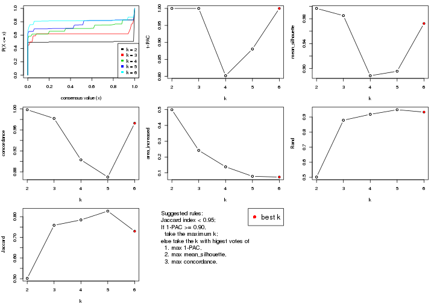
The numeric values for all these statistics can be obtained by get_stats().
get_stats(res)
#> k 1-PAC mean_silhouette concordance area_increased Rand Jaccard
#> 2 2 1.000 0.997 0.999 0.4991 0.502 0.502
#> 3 3 1.000 0.985 0.982 0.2420 0.879 0.758
#> 4 4 0.802 0.888 0.903 0.1380 0.918 0.784
#> 5 5 0.880 0.896 0.870 0.0780 0.948 0.827
#> 6 6 1.000 0.972 0.973 0.0734 0.933 0.730
suggest_best_k() suggests the best \(k\) based on these statistics. The rules are as follows:
NA.suggest_best_k(res)
#> [1] 6
#> attr(,"optional")
#> [1] 2 3
There is also optional best \(k\) = 2 3 that is worth to check.
Following shows the table of the partitions (You need to click the show/hide
code output link to see it). The membership matrix (columns with name p*)
is inferred by
clue::cl_consensus()
function with the SE method. Basically the value in the membership matrix
represents the probability to belong to a certain group. The finall class
label for an item is determined with the group with highest probability it
belongs to.
In get_classes() function, the entropy is calculated from the membership
matrix and the silhouette score is calculated from the consensus matrix.
cbind(get_classes(res, k = 2), get_membership(res, k = 2))
#> class entropy silhouette p1 p2
#> SRR1550981 1 0.000 1.000 1.0 0.0
#> SRR1550982 1 0.000 1.000 1.0 0.0
#> SRR1550983 1 0.000 1.000 1.0 0.0
#> SRR1550984 1 0.000 1.000 1.0 0.0
#> SRR1550986 1 0.000 1.000 1.0 0.0
#> SRR1550985 1 0.000 1.000 1.0 0.0
#> SRR1550988 2 0.000 0.997 0.0 1.0
#> SRR1550987 1 0.000 1.000 1.0 0.0
#> SRR1550989 2 0.000 0.997 0.0 1.0
#> SRR1550990 2 0.000 0.997 0.0 1.0
#> SRR1550991 2 0.000 0.997 0.0 1.0
#> SRR1550992 1 0.000 1.000 1.0 0.0
#> SRR1550994 2 0.000 0.997 0.0 1.0
#> SRR1550993 1 0.000 1.000 1.0 0.0
#> SRR1550995 2 0.000 0.997 0.0 1.0
#> SRR1550996 2 0.000 0.997 0.0 1.0
#> SRR1550997 1 0.000 1.000 1.0 0.0
#> SRR1550998 1 0.000 1.000 1.0 0.0
#> SRR1551000 2 0.000 0.997 0.0 1.0
#> SRR1550999 2 0.000 0.997 0.0 1.0
#> SRR1551001 2 0.000 0.997 0.0 1.0
#> SRR1551002 1 0.000 1.000 1.0 0.0
#> SRR1551003 1 0.000 1.000 1.0 0.0
#> SRR1551004 2 0.000 0.997 0.0 1.0
#> SRR1551006 2 0.000 0.997 0.0 1.0
#> SRR1551005 2 0.000 0.997 0.0 1.0
#> SRR1551007 2 0.000 0.997 0.0 1.0
#> SRR1551008 1 0.000 1.000 1.0 0.0
#> SRR1551009 1 0.000 1.000 1.0 0.0
#> SRR1551010 2 0.000 0.997 0.0 1.0
#> SRR1551012 2 0.000 0.997 0.0 1.0
#> SRR1551011 2 0.000 0.997 0.0 1.0
#> SRR1551013 1 0.000 1.000 1.0 0.0
#> SRR1551014 1 0.000 1.000 1.0 0.0
#> SRR1551015 2 0.000 0.997 0.0 1.0
#> SRR1551016 2 0.000 0.997 0.0 1.0
#> SRR1551017 2 0.000 0.997 0.0 1.0
#> SRR1551018 2 0.000 0.997 0.0 1.0
#> SRR1551019 1 0.000 1.000 1.0 0.0
#> SRR1551021 1 0.000 1.000 1.0 0.0
#> SRR1551022 2 0.000 0.997 0.0 1.0
#> SRR1551023 2 0.000 0.997 0.0 1.0
#> SRR1551020 1 0.000 1.000 1.0 0.0
#> SRR1551024 2 0.722 0.750 0.2 0.8
#> SRR1551026 1 0.000 1.000 1.0 0.0
#> SRR1551025 1 0.000 1.000 1.0 0.0
#> SRR1551027 1 0.000 1.000 1.0 0.0
#> SRR1551028 2 0.000 0.997 0.0 1.0
#> SRR1551029 2 0.000 0.997 0.0 1.0
#> SRR1551030 2 0.000 0.997 0.0 1.0
#> SRR1551031 2 0.000 0.997 0.0 1.0
#> SRR1551032 1 0.000 1.000 1.0 0.0
#> SRR1551034 1 0.000 1.000 1.0 0.0
#> SRR1551033 1 0.000 1.000 1.0 0.0
#> SRR1551035 2 0.000 0.997 0.0 1.0
#> SRR1551036 2 0.000 0.997 0.0 1.0
#> SRR1551037 2 0.000 0.997 0.0 1.0
#> SRR1551038 2 0.000 0.997 0.0 1.0
#> SRR1551039 1 0.000 1.000 1.0 0.0
#> SRR1551040 1 0.000 1.000 1.0 0.0
#> SRR1551041 1 0.000 1.000 1.0 0.0
#> SRR1551042 2 0.000 0.997 0.0 1.0
#> SRR1551043 2 0.000 0.997 0.0 1.0
#> SRR1551044 2 0.000 0.997 0.0 1.0
#> SRR1551045 2 0.000 0.997 0.0 1.0
#> SRR1551046 1 0.000 1.000 1.0 0.0
#> SRR1551047 1 0.000 1.000 1.0 0.0
#> SRR1551048 1 0.000 1.000 1.0 0.0
#> SRR1551049 2 0.000 0.997 0.0 1.0
#> SRR1551050 2 0.000 0.997 0.0 1.0
#> SRR1551051 2 0.000 0.997 0.0 1.0
#> SRR1551052 2 0.000 0.997 0.0 1.0
#> SRR1551053 1 0.000 1.000 1.0 0.0
#> SRR1551054 1 0.000 1.000 1.0 0.0
#> SRR1551055 1 0.000 1.000 1.0 0.0
#> SRR1551056 2 0.000 0.997 0.0 1.0
#> SRR1551057 2 0.000 0.997 0.0 1.0
#> SRR1551058 2 0.000 0.997 0.0 1.0
#> SRR1551059 2 0.000 0.997 0.0 1.0
#> SRR1551060 1 0.000 1.000 1.0 0.0
#> SRR1551061 1 0.000 1.000 1.0 0.0
#> SRR1551062 1 0.000 1.000 1.0 0.0
#> SRR1551063 2 0.000 0.997 0.0 1.0
#> SRR1551064 2 0.000 0.997 0.0 1.0
#> SRR1551065 2 0.000 0.997 0.0 1.0
#> SRR1551066 2 0.000 0.997 0.0 1.0
#> SRR1551067 1 0.000 1.000 1.0 0.0
#> SRR1551068 1 0.000 1.000 1.0 0.0
#> SRR1551069 1 0.000 1.000 1.0 0.0
#> SRR1551070 2 0.000 0.997 0.0 1.0
#> SRR1551071 2 0.000 0.997 0.0 1.0
#> SRR1551072 2 0.000 0.997 0.0 1.0
#> SRR1551073 2 0.000 0.997 0.0 1.0
#> SRR1551074 1 0.000 1.000 1.0 0.0
#> SRR1551075 1 0.000 1.000 1.0 0.0
#> SRR1551076 1 0.000 1.000 1.0 0.0
#> SRR1551077 2 0.000 0.997 0.0 1.0
#> SRR1551078 2 0.000 0.997 0.0 1.0
#> SRR1551079 2 0.000 0.997 0.0 1.0
#> SRR1551080 2 0.000 0.997 0.0 1.0
#> SRR1551081 1 0.000 1.000 1.0 0.0
#> SRR1551082 1 0.000 1.000 1.0 0.0
#> SRR1551083 1 0.000 1.000 1.0 0.0
#> SRR1551084 2 0.000 0.997 0.0 1.0
#> SRR1551085 2 0.000 0.997 0.0 1.0
#> SRR1551086 2 0.000 0.997 0.0 1.0
#> SRR1551088 1 0.000 1.000 1.0 0.0
#> SRR1551087 1 0.000 1.000 1.0 0.0
#> SRR1551089 1 0.000 1.000 1.0 0.0
#> SRR1551090 2 0.000 0.997 0.0 1.0
#> SRR1551091 2 0.000 0.997 0.0 1.0
#> SRR1551092 2 0.000 0.997 0.0 1.0
#> SRR1551093 2 0.000 0.997 0.0 1.0
#> SRR1551094 1 0.000 1.000 1.0 0.0
#> SRR1551095 1 0.000 1.000 1.0 0.0
#> SRR1551096 1 0.000 1.000 1.0 0.0
#> SRR1551097 2 0.000 0.997 0.0 1.0
#> SRR1551098 2 0.000 0.997 0.0 1.0
#> SRR1551099 2 0.000 0.997 0.0 1.0
#> SRR1551101 1 0.000 1.000 1.0 0.0
#> SRR1551100 1 0.000 1.000 1.0 0.0
#> SRR1551102 1 0.000 1.000 1.0 0.0
#> SRR1551103 2 0.000 0.997 0.0 1.0
#> SRR1551104 2 0.000 0.997 0.0 1.0
#> SRR1551105 2 0.000 0.997 0.0 1.0
#> SRR1551106 2 0.000 0.997 0.0 1.0
#> SRR1551107 1 0.000 1.000 1.0 0.0
#> SRR1551108 1 0.000 1.000 1.0 0.0
#> SRR1551109 1 0.000 1.000 1.0 0.0
#> SRR1551110 2 0.000 0.997 0.0 1.0
#> SRR1551111 2 0.000 0.997 0.0 1.0
#> SRR1551112 2 0.000 0.997 0.0 1.0
#> SRR1551113 2 0.000 0.997 0.0 1.0
#> SRR1551114 1 0.000 1.000 1.0 0.0
cbind(get_classes(res, k = 3), get_membership(res, k = 3))
#> class entropy silhouette p1 p2 p3
#> SRR1550981 1 0.1529 0.972 0.960 0.000 0.040
#> SRR1550982 1 0.1529 0.972 0.960 0.000 0.040
#> SRR1550983 1 0.1529 0.972 0.960 0.000 0.040
#> SRR1550984 1 0.1529 0.972 0.960 0.000 0.040
#> SRR1550986 1 0.0237 0.984 0.996 0.000 0.004
#> SRR1550985 1 0.1529 0.972 0.960 0.000 0.040
#> SRR1550988 3 0.1643 1.000 0.000 0.044 0.956
#> SRR1550987 1 0.0747 0.981 0.984 0.000 0.016
#> SRR1550989 2 0.0000 0.990 0.000 1.000 0.000
#> SRR1550990 2 0.0000 0.990 0.000 1.000 0.000
#> SRR1550991 2 0.1289 0.974 0.000 0.968 0.032
#> SRR1550992 1 0.0237 0.984 0.996 0.000 0.004
#> SRR1550994 3 0.1643 1.000 0.000 0.044 0.956
#> SRR1550993 1 0.0747 0.981 0.984 0.000 0.016
#> SRR1550995 2 0.0000 0.990 0.000 1.000 0.000
#> SRR1550996 2 0.0000 0.990 0.000 1.000 0.000
#> SRR1550997 1 0.0237 0.984 0.996 0.000 0.004
#> SRR1550998 1 0.0747 0.981 0.984 0.000 0.016
#> SRR1551000 2 0.0000 0.990 0.000 1.000 0.000
#> SRR1550999 3 0.1643 1.000 0.000 0.044 0.956
#> SRR1551001 2 0.0000 0.990 0.000 1.000 0.000
#> SRR1551002 1 0.0237 0.984 0.996 0.000 0.004
#> SRR1551003 1 0.0747 0.981 0.984 0.000 0.016
#> SRR1551004 3 0.1643 1.000 0.000 0.044 0.956
#> SRR1551006 2 0.0000 0.990 0.000 1.000 0.000
#> SRR1551005 2 0.0000 0.990 0.000 1.000 0.000
#> SRR1551007 2 0.1289 0.974 0.000 0.968 0.032
#> SRR1551008 1 0.0237 0.984 0.996 0.000 0.004
#> SRR1551009 1 0.0747 0.981 0.984 0.000 0.016
#> SRR1551010 3 0.1643 1.000 0.000 0.044 0.956
#> SRR1551012 2 0.0000 0.990 0.000 1.000 0.000
#> SRR1551011 2 0.0000 0.990 0.000 1.000 0.000
#> SRR1551013 1 0.0237 0.984 0.996 0.000 0.004
#> SRR1551014 1 0.0747 0.981 0.984 0.000 0.016
#> SRR1551015 3 0.1643 1.000 0.000 0.044 0.956
#> SRR1551016 2 0.0000 0.990 0.000 1.000 0.000
#> SRR1551017 2 0.0000 0.990 0.000 1.000 0.000
#> SRR1551018 2 0.1289 0.974 0.000 0.968 0.032
#> SRR1551019 1 0.0000 0.983 1.000 0.000 0.000
#> SRR1551021 1 0.0000 0.983 1.000 0.000 0.000
#> SRR1551022 3 0.1643 1.000 0.000 0.044 0.956
#> SRR1551023 2 0.0000 0.990 0.000 1.000 0.000
#> SRR1551020 1 0.0237 0.984 0.996 0.000 0.004
#> SRR1551024 2 0.1129 0.968 0.020 0.976 0.004
#> SRR1551026 1 0.0237 0.984 0.996 0.000 0.004
#> SRR1551025 1 0.0000 0.983 1.000 0.000 0.000
#> SRR1551027 1 0.0747 0.981 0.984 0.000 0.016
#> SRR1551028 3 0.1643 1.000 0.000 0.044 0.956
#> SRR1551029 2 0.0000 0.990 0.000 1.000 0.000
#> SRR1551030 2 0.0000 0.990 0.000 1.000 0.000
#> SRR1551031 2 0.1289 0.974 0.000 0.968 0.032
#> SRR1551032 1 0.0000 0.983 1.000 0.000 0.000
#> SRR1551034 1 0.0747 0.981 0.984 0.000 0.016
#> SRR1551033 1 0.0237 0.984 0.996 0.000 0.004
#> SRR1551035 3 0.1643 1.000 0.000 0.044 0.956
#> SRR1551036 2 0.0000 0.990 0.000 1.000 0.000
#> SRR1551037 2 0.0000 0.990 0.000 1.000 0.000
#> SRR1551038 2 0.1289 0.974 0.000 0.968 0.032
#> SRR1551039 1 0.1529 0.972 0.960 0.000 0.040
#> SRR1551040 1 0.0237 0.984 0.996 0.000 0.004
#> SRR1551041 1 0.0747 0.981 0.984 0.000 0.016
#> SRR1551042 3 0.1643 1.000 0.000 0.044 0.956
#> SRR1551043 2 0.0000 0.990 0.000 1.000 0.000
#> SRR1551044 2 0.0000 0.990 0.000 1.000 0.000
#> SRR1551045 2 0.1289 0.974 0.000 0.968 0.032
#> SRR1551046 1 0.1529 0.972 0.960 0.000 0.040
#> SRR1551047 1 0.0237 0.984 0.996 0.000 0.004
#> SRR1551048 1 0.0747 0.981 0.984 0.000 0.016
#> SRR1551049 3 0.1643 1.000 0.000 0.044 0.956
#> SRR1551050 2 0.0000 0.990 0.000 1.000 0.000
#> SRR1551051 2 0.0000 0.990 0.000 1.000 0.000
#> SRR1551052 2 0.1289 0.974 0.000 0.968 0.032
#> SRR1551053 1 0.1529 0.972 0.960 0.000 0.040
#> SRR1551054 1 0.0237 0.984 0.996 0.000 0.004
#> SRR1551055 1 0.0747 0.981 0.984 0.000 0.016
#> SRR1551056 3 0.1643 1.000 0.000 0.044 0.956
#> SRR1551057 2 0.0000 0.990 0.000 1.000 0.000
#> SRR1551058 2 0.0000 0.990 0.000 1.000 0.000
#> SRR1551059 2 0.1289 0.974 0.000 0.968 0.032
#> SRR1551060 1 0.1529 0.972 0.960 0.000 0.040
#> SRR1551061 1 0.0237 0.984 0.996 0.000 0.004
#> SRR1551062 1 0.0747 0.981 0.984 0.000 0.016
#> SRR1551063 3 0.1643 1.000 0.000 0.044 0.956
#> SRR1551064 2 0.0000 0.990 0.000 1.000 0.000
#> SRR1551065 2 0.0000 0.990 0.000 1.000 0.000
#> SRR1551066 2 0.1289 0.974 0.000 0.968 0.032
#> SRR1551067 1 0.1529 0.972 0.960 0.000 0.040
#> SRR1551068 1 0.0237 0.984 0.996 0.000 0.004
#> SRR1551069 1 0.0747 0.981 0.984 0.000 0.016
#> SRR1551070 3 0.1643 1.000 0.000 0.044 0.956
#> SRR1551071 2 0.0000 0.990 0.000 1.000 0.000
#> SRR1551072 2 0.0000 0.990 0.000 1.000 0.000
#> SRR1551073 2 0.1289 0.974 0.000 0.968 0.032
#> SRR1551074 1 0.1529 0.972 0.960 0.000 0.040
#> SRR1551075 1 0.0237 0.984 0.996 0.000 0.004
#> SRR1551076 1 0.0747 0.981 0.984 0.000 0.016
#> SRR1551077 3 0.1643 1.000 0.000 0.044 0.956
#> SRR1551078 2 0.0000 0.990 0.000 1.000 0.000
#> SRR1551079 2 0.0000 0.990 0.000 1.000 0.000
#> SRR1551080 2 0.1289 0.974 0.000 0.968 0.032
#> SRR1551081 1 0.1529 0.972 0.960 0.000 0.040
#> SRR1551082 1 0.0237 0.984 0.996 0.000 0.004
#> SRR1551083 1 0.0747 0.981 0.984 0.000 0.016
#> SRR1551084 3 0.1643 1.000 0.000 0.044 0.956
#> SRR1551085 2 0.0000 0.990 0.000 1.000 0.000
#> SRR1551086 2 0.0000 0.990 0.000 1.000 0.000
#> SRR1551088 1 0.0237 0.984 0.996 0.000 0.004
#> SRR1551087 1 0.1529 0.972 0.960 0.000 0.040
#> SRR1551089 1 0.0747 0.981 0.984 0.000 0.016
#> SRR1551090 3 0.1643 1.000 0.000 0.044 0.956
#> SRR1551091 2 0.0000 0.990 0.000 1.000 0.000
#> SRR1551092 2 0.0000 0.990 0.000 1.000 0.000
#> SRR1551093 2 0.1289 0.974 0.000 0.968 0.032
#> SRR1551094 1 0.1529 0.972 0.960 0.000 0.040
#> SRR1551095 1 0.0237 0.984 0.996 0.000 0.004
#> SRR1551096 1 0.0747 0.981 0.984 0.000 0.016
#> SRR1551097 3 0.1643 1.000 0.000 0.044 0.956
#> SRR1551098 2 0.0000 0.990 0.000 1.000 0.000
#> SRR1551099 2 0.0000 0.990 0.000 1.000 0.000
#> SRR1551101 1 0.0237 0.984 0.996 0.000 0.004
#> SRR1551100 1 0.1529 0.972 0.960 0.000 0.040
#> SRR1551102 1 0.0747 0.981 0.984 0.000 0.016
#> SRR1551103 3 0.1643 1.000 0.000 0.044 0.956
#> SRR1551104 2 0.0000 0.990 0.000 1.000 0.000
#> SRR1551105 2 0.0000 0.990 0.000 1.000 0.000
#> SRR1551106 2 0.1289 0.974 0.000 0.968 0.032
#> SRR1551107 1 0.1529 0.972 0.960 0.000 0.040
#> SRR1551108 1 0.0237 0.984 0.996 0.000 0.004
#> SRR1551109 1 0.0747 0.981 0.984 0.000 0.016
#> SRR1551110 3 0.1643 1.000 0.000 0.044 0.956
#> SRR1551111 2 0.0000 0.990 0.000 1.000 0.000
#> SRR1551112 2 0.0000 0.990 0.000 1.000 0.000
#> SRR1551113 2 0.1289 0.974 0.000 0.968 0.032
#> SRR1551114 1 0.1529 0.972 0.960 0.000 0.040
cbind(get_classes(res, k = 4), get_membership(res, k = 4))
#> class entropy silhouette p1 p2 p3 p4
#> SRR1550981 1 0.4679 1.000 0.648 0.000 0.352 0.000
#> SRR1550982 1 0.4679 1.000 0.648 0.000 0.352 0.000
#> SRR1550983 1 0.4679 1.000 0.648 0.000 0.352 0.000
#> SRR1550984 1 0.4679 1.000 0.648 0.000 0.352 0.000
#> SRR1550986 3 0.4776 0.740 0.376 0.000 0.624 0.000
#> SRR1550985 1 0.4679 1.000 0.648 0.000 0.352 0.000
#> SRR1550988 4 0.0000 1.000 0.000 0.000 0.000 1.000
#> SRR1550987 3 0.0188 0.708 0.000 0.000 0.996 0.004
#> SRR1550989 2 0.0000 0.968 0.000 1.000 0.000 0.000
#> SRR1550990 2 0.0000 0.968 0.000 1.000 0.000 0.000
#> SRR1550991 2 0.3149 0.913 0.088 0.880 0.000 0.032
#> SRR1550992 3 0.4776 0.740 0.376 0.000 0.624 0.000
#> SRR1550994 4 0.0000 1.000 0.000 0.000 0.000 1.000
#> SRR1550993 3 0.0188 0.708 0.000 0.000 0.996 0.004
#> SRR1550995 2 0.0000 0.968 0.000 1.000 0.000 0.000
#> SRR1550996 2 0.0000 0.968 0.000 1.000 0.000 0.000
#> SRR1550997 3 0.4776 0.740 0.376 0.000 0.624 0.000
#> SRR1550998 3 0.0188 0.708 0.000 0.000 0.996 0.004
#> SRR1551000 2 0.0000 0.968 0.000 1.000 0.000 0.000
#> SRR1550999 4 0.0000 1.000 0.000 0.000 0.000 1.000
#> SRR1551001 2 0.0000 0.968 0.000 1.000 0.000 0.000
#> SRR1551002 3 0.4776 0.740 0.376 0.000 0.624 0.000
#> SRR1551003 3 0.0188 0.708 0.000 0.000 0.996 0.004
#> SRR1551004 4 0.0000 1.000 0.000 0.000 0.000 1.000
#> SRR1551006 2 0.0000 0.968 0.000 1.000 0.000 0.000
#> SRR1551005 2 0.0000 0.968 0.000 1.000 0.000 0.000
#> SRR1551007 2 0.3149 0.913 0.088 0.880 0.000 0.032
#> SRR1551008 3 0.4776 0.740 0.376 0.000 0.624 0.000
#> SRR1551009 3 0.0188 0.708 0.000 0.000 0.996 0.004
#> SRR1551010 4 0.0000 1.000 0.000 0.000 0.000 1.000
#> SRR1551012 2 0.0000 0.968 0.000 1.000 0.000 0.000
#> SRR1551011 2 0.0000 0.968 0.000 1.000 0.000 0.000
#> SRR1551013 3 0.4776 0.740 0.376 0.000 0.624 0.000
#> SRR1551014 3 0.0188 0.708 0.000 0.000 0.996 0.004
#> SRR1551015 4 0.0000 1.000 0.000 0.000 0.000 1.000
#> SRR1551016 2 0.0000 0.968 0.000 1.000 0.000 0.000
#> SRR1551017 2 0.0000 0.968 0.000 1.000 0.000 0.000
#> SRR1551018 2 0.3149 0.913 0.088 0.880 0.000 0.032
#> SRR1551019 3 0.3942 0.394 0.236 0.000 0.764 0.000
#> SRR1551021 3 0.0000 0.708 0.000 0.000 1.000 0.000
#> SRR1551022 4 0.0000 1.000 0.000 0.000 0.000 1.000
#> SRR1551023 2 0.0000 0.968 0.000 1.000 0.000 0.000
#> SRR1551020 3 0.4776 0.740 0.376 0.000 0.624 0.000
#> SRR1551024 2 0.3486 0.776 0.188 0.812 0.000 0.000
#> SRR1551026 3 0.4776 0.740 0.376 0.000 0.624 0.000
#> SRR1551025 3 0.3764 0.690 0.216 0.000 0.784 0.000
#> SRR1551027 3 0.0188 0.708 0.000 0.000 0.996 0.004
#> SRR1551028 4 0.0000 1.000 0.000 0.000 0.000 1.000
#> SRR1551029 2 0.0000 0.968 0.000 1.000 0.000 0.000
#> SRR1551030 2 0.0000 0.968 0.000 1.000 0.000 0.000
#> SRR1551031 2 0.3149 0.913 0.088 0.880 0.000 0.032
#> SRR1551032 3 0.3649 0.685 0.204 0.000 0.796 0.000
#> SRR1551034 3 0.0188 0.708 0.000 0.000 0.996 0.004
#> SRR1551033 3 0.4776 0.740 0.376 0.000 0.624 0.000
#> SRR1551035 4 0.0000 1.000 0.000 0.000 0.000 1.000
#> SRR1551036 2 0.0000 0.968 0.000 1.000 0.000 0.000
#> SRR1551037 2 0.0000 0.968 0.000 1.000 0.000 0.000
#> SRR1551038 2 0.3149 0.913 0.088 0.880 0.000 0.032
#> SRR1551039 1 0.4679 1.000 0.648 0.000 0.352 0.000
#> SRR1551040 3 0.4776 0.740 0.376 0.000 0.624 0.000
#> SRR1551041 3 0.0188 0.708 0.000 0.000 0.996 0.004
#> SRR1551042 4 0.0000 1.000 0.000 0.000 0.000 1.000
#> SRR1551043 2 0.0000 0.968 0.000 1.000 0.000 0.000
#> SRR1551044 2 0.0000 0.968 0.000 1.000 0.000 0.000
#> SRR1551045 2 0.3149 0.913 0.088 0.880 0.000 0.032
#> SRR1551046 1 0.4679 1.000 0.648 0.000 0.352 0.000
#> SRR1551047 3 0.4776 0.740 0.376 0.000 0.624 0.000
#> SRR1551048 3 0.0188 0.708 0.000 0.000 0.996 0.004
#> SRR1551049 4 0.0000 1.000 0.000 0.000 0.000 1.000
#> SRR1551050 2 0.0000 0.968 0.000 1.000 0.000 0.000
#> SRR1551051 2 0.0000 0.968 0.000 1.000 0.000 0.000
#> SRR1551052 2 0.3149 0.913 0.088 0.880 0.000 0.032
#> SRR1551053 1 0.4679 1.000 0.648 0.000 0.352 0.000
#> SRR1551054 3 0.4776 0.740 0.376 0.000 0.624 0.000
#> SRR1551055 3 0.0188 0.708 0.000 0.000 0.996 0.004
#> SRR1551056 4 0.0000 1.000 0.000 0.000 0.000 1.000
#> SRR1551057 2 0.0000 0.968 0.000 1.000 0.000 0.000
#> SRR1551058 2 0.0000 0.968 0.000 1.000 0.000 0.000
#> SRR1551059 2 0.3149 0.913 0.088 0.880 0.000 0.032
#> SRR1551060 1 0.4679 1.000 0.648 0.000 0.352 0.000
#> SRR1551061 3 0.4776 0.740 0.376 0.000 0.624 0.000
#> SRR1551062 3 0.0188 0.708 0.000 0.000 0.996 0.004
#> SRR1551063 4 0.0000 1.000 0.000 0.000 0.000 1.000
#> SRR1551064 2 0.0000 0.968 0.000 1.000 0.000 0.000
#> SRR1551065 2 0.0000 0.968 0.000 1.000 0.000 0.000
#> SRR1551066 2 0.3149 0.913 0.088 0.880 0.000 0.032
#> SRR1551067 1 0.4679 1.000 0.648 0.000 0.352 0.000
#> SRR1551068 3 0.4776 0.740 0.376 0.000 0.624 0.000
#> SRR1551069 3 0.0188 0.708 0.000 0.000 0.996 0.004
#> SRR1551070 4 0.0000 1.000 0.000 0.000 0.000 1.000
#> SRR1551071 2 0.0000 0.968 0.000 1.000 0.000 0.000
#> SRR1551072 2 0.0000 0.968 0.000 1.000 0.000 0.000
#> SRR1551073 2 0.3149 0.913 0.088 0.880 0.000 0.032
#> SRR1551074 1 0.4679 1.000 0.648 0.000 0.352 0.000
#> SRR1551075 3 0.4776 0.740 0.376 0.000 0.624 0.000
#> SRR1551076 3 0.0188 0.708 0.000 0.000 0.996 0.004
#> SRR1551077 4 0.0000 1.000 0.000 0.000 0.000 1.000
#> SRR1551078 2 0.0000 0.968 0.000 1.000 0.000 0.000
#> SRR1551079 2 0.0000 0.968 0.000 1.000 0.000 0.000
#> SRR1551080 2 0.3149 0.913 0.088 0.880 0.000 0.032
#> SRR1551081 1 0.4679 1.000 0.648 0.000 0.352 0.000
#> SRR1551082 3 0.4776 0.740 0.376 0.000 0.624 0.000
#> SRR1551083 3 0.0188 0.708 0.000 0.000 0.996 0.004
#> SRR1551084 4 0.0000 1.000 0.000 0.000 0.000 1.000
#> SRR1551085 2 0.0000 0.968 0.000 1.000 0.000 0.000
#> SRR1551086 2 0.0000 0.968 0.000 1.000 0.000 0.000
#> SRR1551088 3 0.4776 0.740 0.376 0.000 0.624 0.000
#> SRR1551087 1 0.4679 1.000 0.648 0.000 0.352 0.000
#> SRR1551089 3 0.0188 0.708 0.000 0.000 0.996 0.004
#> SRR1551090 4 0.0000 1.000 0.000 0.000 0.000 1.000
#> SRR1551091 2 0.0000 0.968 0.000 1.000 0.000 0.000
#> SRR1551092 2 0.0000 0.968 0.000 1.000 0.000 0.000
#> SRR1551093 2 0.3149 0.913 0.088 0.880 0.000 0.032
#> SRR1551094 1 0.4679 1.000 0.648 0.000 0.352 0.000
#> SRR1551095 3 0.4776 0.740 0.376 0.000 0.624 0.000
#> SRR1551096 3 0.0188 0.708 0.000 0.000 0.996 0.004
#> SRR1551097 4 0.0000 1.000 0.000 0.000 0.000 1.000
#> SRR1551098 2 0.0000 0.968 0.000 1.000 0.000 0.000
#> SRR1551099 2 0.0000 0.968 0.000 1.000 0.000 0.000
#> SRR1551101 3 0.4776 0.740 0.376 0.000 0.624 0.000
#> SRR1551100 1 0.4679 1.000 0.648 0.000 0.352 0.000
#> SRR1551102 3 0.0188 0.708 0.000 0.000 0.996 0.004
#> SRR1551103 4 0.0000 1.000 0.000 0.000 0.000 1.000
#> SRR1551104 2 0.0000 0.968 0.000 1.000 0.000 0.000
#> SRR1551105 2 0.0000 0.968 0.000 1.000 0.000 0.000
#> SRR1551106 2 0.3149 0.913 0.088 0.880 0.000 0.032
#> SRR1551107 1 0.4679 1.000 0.648 0.000 0.352 0.000
#> SRR1551108 3 0.4776 0.740 0.376 0.000 0.624 0.000
#> SRR1551109 3 0.0188 0.708 0.000 0.000 0.996 0.004
#> SRR1551110 4 0.0000 1.000 0.000 0.000 0.000 1.000
#> SRR1551111 2 0.0000 0.968 0.000 1.000 0.000 0.000
#> SRR1551112 2 0.0000 0.968 0.000 1.000 0.000 0.000
#> SRR1551113 2 0.3149 0.913 0.088 0.880 0.000 0.032
#> SRR1551114 1 0.4679 1.000 0.648 0.000 0.352 0.000
cbind(get_classes(res, k = 5), get_membership(res, k = 5))
#> class entropy silhouette p1 p2 p3 p4 p5
#> SRR1550981 5 0.0000 1.000 0.000 0.000 0.000 0 1.000
#> SRR1550982 5 0.0000 1.000 0.000 0.000 0.000 0 1.000
#> SRR1550983 5 0.0000 1.000 0.000 0.000 0.000 0 1.000
#> SRR1550984 5 0.0000 1.000 0.000 0.000 0.000 0 1.000
#> SRR1550986 3 0.0162 0.932 0.000 0.000 0.996 0 0.004
#> SRR1550985 5 0.0000 1.000 0.000 0.000 0.000 0 1.000
#> SRR1550988 4 0.0000 1.000 0.000 0.000 0.000 1 0.000
#> SRR1550987 1 0.5329 1.000 0.516 0.000 0.432 0 0.052
#> SRR1550989 2 0.0000 0.876 0.000 1.000 0.000 0 0.000
#> SRR1550990 2 0.0000 0.876 0.000 1.000 0.000 0 0.000
#> SRR1550991 2 0.4304 0.586 0.484 0.516 0.000 0 0.000
#> SRR1550992 3 0.0162 0.932 0.000 0.000 0.996 0 0.004
#> SRR1550994 4 0.0000 1.000 0.000 0.000 0.000 1 0.000
#> SRR1550993 1 0.5329 1.000 0.516 0.000 0.432 0 0.052
#> SRR1550995 2 0.0000 0.876 0.000 1.000 0.000 0 0.000
#> SRR1550996 2 0.0000 0.876 0.000 1.000 0.000 0 0.000
#> SRR1550997 3 0.0162 0.932 0.000 0.000 0.996 0 0.004
#> SRR1550998 1 0.5329 1.000 0.516 0.000 0.432 0 0.052
#> SRR1551000 2 0.0000 0.876 0.000 1.000 0.000 0 0.000
#> SRR1550999 4 0.0000 1.000 0.000 0.000 0.000 1 0.000
#> SRR1551001 2 0.0000 0.876 0.000 1.000 0.000 0 0.000
#> SRR1551002 3 0.0162 0.932 0.000 0.000 0.996 0 0.004
#> SRR1551003 1 0.5329 1.000 0.516 0.000 0.432 0 0.052
#> SRR1551004 4 0.0000 1.000 0.000 0.000 0.000 1 0.000
#> SRR1551006 2 0.0000 0.876 0.000 1.000 0.000 0 0.000
#> SRR1551005 2 0.0000 0.876 0.000 1.000 0.000 0 0.000
#> SRR1551007 2 0.4304 0.586 0.484 0.516 0.000 0 0.000
#> SRR1551008 3 0.0162 0.932 0.000 0.000 0.996 0 0.004
#> SRR1551009 1 0.5329 1.000 0.516 0.000 0.432 0 0.052
#> SRR1551010 4 0.0000 1.000 0.000 0.000 0.000 1 0.000
#> SRR1551012 2 0.0000 0.876 0.000 1.000 0.000 0 0.000
#> SRR1551011 2 0.0000 0.876 0.000 1.000 0.000 0 0.000
#> SRR1551013 3 0.0162 0.932 0.000 0.000 0.996 0 0.004
#> SRR1551014 1 0.5329 1.000 0.516 0.000 0.432 0 0.052
#> SRR1551015 4 0.0000 1.000 0.000 0.000 0.000 1 0.000
#> SRR1551016 2 0.0000 0.876 0.000 1.000 0.000 0 0.000
#> SRR1551017 2 0.0000 0.876 0.000 1.000 0.000 0 0.000
#> SRR1551018 2 0.4304 0.586 0.484 0.516 0.000 0 0.000
#> SRR1551019 3 0.4256 0.184 0.000 0.000 0.564 0 0.436
#> SRR1551021 1 0.5329 1.000 0.516 0.000 0.432 0 0.052
#> SRR1551022 4 0.0000 1.000 0.000 0.000 0.000 1 0.000
#> SRR1551023 2 0.0000 0.876 0.000 1.000 0.000 0 0.000
#> SRR1551020 3 0.0162 0.932 0.000 0.000 0.996 0 0.004
#> SRR1551024 2 0.3003 0.700 0.000 0.812 0.188 0 0.000
#> SRR1551026 3 0.0162 0.932 0.000 0.000 0.996 0 0.004
#> SRR1551025 3 0.3242 0.573 0.000 0.000 0.784 0 0.216
#> SRR1551027 1 0.5329 1.000 0.516 0.000 0.432 0 0.052
#> SRR1551028 4 0.0000 1.000 0.000 0.000 0.000 1 0.000
#> SRR1551029 2 0.0000 0.876 0.000 1.000 0.000 0 0.000
#> SRR1551030 2 0.0000 0.876 0.000 1.000 0.000 0 0.000
#> SRR1551031 2 0.4304 0.586 0.484 0.516 0.000 0 0.000
#> SRR1551032 3 0.3305 0.552 0.000 0.000 0.776 0 0.224
#> SRR1551034 1 0.5329 1.000 0.516 0.000 0.432 0 0.052
#> SRR1551033 3 0.0162 0.932 0.000 0.000 0.996 0 0.004
#> SRR1551035 4 0.0000 1.000 0.000 0.000 0.000 1 0.000
#> SRR1551036 2 0.0000 0.876 0.000 1.000 0.000 0 0.000
#> SRR1551037 2 0.0000 0.876 0.000 1.000 0.000 0 0.000
#> SRR1551038 2 0.4304 0.586 0.484 0.516 0.000 0 0.000
#> SRR1551039 5 0.0000 1.000 0.000 0.000 0.000 0 1.000
#> SRR1551040 3 0.0162 0.932 0.000 0.000 0.996 0 0.004
#> SRR1551041 1 0.5329 1.000 0.516 0.000 0.432 0 0.052
#> SRR1551042 4 0.0000 1.000 0.000 0.000 0.000 1 0.000
#> SRR1551043 2 0.0000 0.876 0.000 1.000 0.000 0 0.000
#> SRR1551044 2 0.0000 0.876 0.000 1.000 0.000 0 0.000
#> SRR1551045 2 0.4304 0.586 0.484 0.516 0.000 0 0.000
#> SRR1551046 5 0.0000 1.000 0.000 0.000 0.000 0 1.000
#> SRR1551047 3 0.0162 0.932 0.000 0.000 0.996 0 0.004
#> SRR1551048 1 0.5329 1.000 0.516 0.000 0.432 0 0.052
#> SRR1551049 4 0.0000 1.000 0.000 0.000 0.000 1 0.000
#> SRR1551050 2 0.0000 0.876 0.000 1.000 0.000 0 0.000
#> SRR1551051 2 0.0000 0.876 0.000 1.000 0.000 0 0.000
#> SRR1551052 2 0.4304 0.586 0.484 0.516 0.000 0 0.000
#> SRR1551053 5 0.0000 1.000 0.000 0.000 0.000 0 1.000
#> SRR1551054 3 0.0162 0.932 0.000 0.000 0.996 0 0.004
#> SRR1551055 1 0.5329 1.000 0.516 0.000 0.432 0 0.052
#> SRR1551056 4 0.0000 1.000 0.000 0.000 0.000 1 0.000
#> SRR1551057 2 0.0000 0.876 0.000 1.000 0.000 0 0.000
#> SRR1551058 2 0.0000 0.876 0.000 1.000 0.000 0 0.000
#> SRR1551059 2 0.4304 0.586 0.484 0.516 0.000 0 0.000
#> SRR1551060 5 0.0000 1.000 0.000 0.000 0.000 0 1.000
#> SRR1551061 3 0.0162 0.932 0.000 0.000 0.996 0 0.004
#> SRR1551062 1 0.5329 1.000 0.516 0.000 0.432 0 0.052
#> SRR1551063 4 0.0000 1.000 0.000 0.000 0.000 1 0.000
#> SRR1551064 2 0.0000 0.876 0.000 1.000 0.000 0 0.000
#> SRR1551065 2 0.0000 0.876 0.000 1.000 0.000 0 0.000
#> SRR1551066 2 0.4304 0.586 0.484 0.516 0.000 0 0.000
#> SRR1551067 5 0.0000 1.000 0.000 0.000 0.000 0 1.000
#> SRR1551068 3 0.0162 0.932 0.000 0.000 0.996 0 0.004
#> SRR1551069 1 0.5329 1.000 0.516 0.000 0.432 0 0.052
#> SRR1551070 4 0.0000 1.000 0.000 0.000 0.000 1 0.000
#> SRR1551071 2 0.0000 0.876 0.000 1.000 0.000 0 0.000
#> SRR1551072 2 0.0000 0.876 0.000 1.000 0.000 0 0.000
#> SRR1551073 2 0.4304 0.586 0.484 0.516 0.000 0 0.000
#> SRR1551074 5 0.0000 1.000 0.000 0.000 0.000 0 1.000
#> SRR1551075 3 0.0162 0.932 0.000 0.000 0.996 0 0.004
#> SRR1551076 1 0.5329 1.000 0.516 0.000 0.432 0 0.052
#> SRR1551077 4 0.0000 1.000 0.000 0.000 0.000 1 0.000
#> SRR1551078 2 0.0000 0.876 0.000 1.000 0.000 0 0.000
#> SRR1551079 2 0.0000 0.876 0.000 1.000 0.000 0 0.000
#> SRR1551080 2 0.4304 0.586 0.484 0.516 0.000 0 0.000
#> SRR1551081 5 0.0000 1.000 0.000 0.000 0.000 0 1.000
#> SRR1551082 3 0.0162 0.932 0.000 0.000 0.996 0 0.004
#> SRR1551083 1 0.5329 1.000 0.516 0.000 0.432 0 0.052
#> SRR1551084 4 0.0000 1.000 0.000 0.000 0.000 1 0.000
#> SRR1551085 2 0.0000 0.876 0.000 1.000 0.000 0 0.000
#> SRR1551086 2 0.0000 0.876 0.000 1.000 0.000 0 0.000
#> SRR1551088 3 0.0162 0.932 0.000 0.000 0.996 0 0.004
#> SRR1551087 5 0.0000 1.000 0.000 0.000 0.000 0 1.000
#> SRR1551089 1 0.5329 1.000 0.516 0.000 0.432 0 0.052
#> SRR1551090 4 0.0000 1.000 0.000 0.000 0.000 1 0.000
#> SRR1551091 2 0.0000 0.876 0.000 1.000 0.000 0 0.000
#> SRR1551092 2 0.0000 0.876 0.000 1.000 0.000 0 0.000
#> SRR1551093 2 0.4304 0.586 0.484 0.516 0.000 0 0.000
#> SRR1551094 5 0.0000 1.000 0.000 0.000 0.000 0 1.000
#> SRR1551095 3 0.0162 0.932 0.000 0.000 0.996 0 0.004
#> SRR1551096 1 0.5329 1.000 0.516 0.000 0.432 0 0.052
#> SRR1551097 4 0.0000 1.000 0.000 0.000 0.000 1 0.000
#> SRR1551098 2 0.0000 0.876 0.000 1.000 0.000 0 0.000
#> SRR1551099 2 0.0000 0.876 0.000 1.000 0.000 0 0.000
#> SRR1551101 3 0.0162 0.932 0.000 0.000 0.996 0 0.004
#> SRR1551100 5 0.0000 1.000 0.000 0.000 0.000 0 1.000
#> SRR1551102 1 0.5329 1.000 0.516 0.000 0.432 0 0.052
#> SRR1551103 4 0.0000 1.000 0.000 0.000 0.000 1 0.000
#> SRR1551104 2 0.0000 0.876 0.000 1.000 0.000 0 0.000
#> SRR1551105 2 0.0000 0.876 0.000 1.000 0.000 0 0.000
#> SRR1551106 2 0.4304 0.586 0.484 0.516 0.000 0 0.000
#> SRR1551107 5 0.0000 1.000 0.000 0.000 0.000 0 1.000
#> SRR1551108 3 0.0162 0.932 0.000 0.000 0.996 0 0.004
#> SRR1551109 1 0.5329 1.000 0.516 0.000 0.432 0 0.052
#> SRR1551110 4 0.0000 1.000 0.000 0.000 0.000 1 0.000
#> SRR1551111 2 0.0000 0.876 0.000 1.000 0.000 0 0.000
#> SRR1551112 2 0.0000 0.876 0.000 1.000 0.000 0 0.000
#> SRR1551113 2 0.4304 0.586 0.484 0.516 0.000 0 0.000
#> SRR1551114 5 0.0000 1.000 0.000 0.000 0.000 0 1.000
cbind(get_classes(res, k = 6), get_membership(res, k = 6))
#> class entropy silhouette p1 p2 p3 p4 p5 p6
#> SRR1550981 5 0.0000 0.970 0.000 0.000 0.000 0 1.000 0.000
#> SRR1550982 5 0.0000 0.970 0.000 0.000 0.000 0 1.000 0.000
#> SRR1550983 5 0.0000 0.970 0.000 0.000 0.000 0 1.000 0.000
#> SRR1550984 5 0.0000 0.970 0.000 0.000 0.000 0 1.000 0.000
#> SRR1550986 3 0.0000 0.979 0.000 0.000 1.000 0 0.000 0.000
#> SRR1550985 5 0.0000 0.970 0.000 0.000 0.000 0 1.000 0.000
#> SRR1550988 4 0.0000 1.000 0.000 0.000 0.000 1 0.000 0.000
#> SRR1550987 1 0.1500 1.000 0.936 0.000 0.052 0 0.012 0.000
#> SRR1550989 2 0.0000 0.968 0.000 1.000 0.000 0 0.000 0.000
#> SRR1550990 2 0.1327 0.967 0.064 0.936 0.000 0 0.000 0.000
#> SRR1550991 6 0.0260 1.000 0.000 0.008 0.000 0 0.000 0.992
#> SRR1550992 3 0.0000 0.979 0.000 0.000 1.000 0 0.000 0.000
#> SRR1550994 4 0.0000 1.000 0.000 0.000 0.000 1 0.000 0.000
#> SRR1550993 1 0.1500 1.000 0.936 0.000 0.052 0 0.012 0.000
#> SRR1550995 2 0.0000 0.968 0.000 1.000 0.000 0 0.000 0.000
#> SRR1550996 2 0.1327 0.967 0.064 0.936 0.000 0 0.000 0.000
#> SRR1550997 3 0.0000 0.979 0.000 0.000 1.000 0 0.000 0.000
#> SRR1550998 1 0.1500 1.000 0.936 0.000 0.052 0 0.012 0.000
#> SRR1551000 2 0.0000 0.968 0.000 1.000 0.000 0 0.000 0.000
#> SRR1550999 4 0.0000 1.000 0.000 0.000 0.000 1 0.000 0.000
#> SRR1551001 2 0.1327 0.967 0.064 0.936 0.000 0 0.000 0.000
#> SRR1551002 3 0.0000 0.979 0.000 0.000 1.000 0 0.000 0.000
#> SRR1551003 1 0.1500 1.000 0.936 0.000 0.052 0 0.012 0.000
#> SRR1551004 4 0.0000 1.000 0.000 0.000 0.000 1 0.000 0.000
#> SRR1551006 2 0.1327 0.967 0.064 0.936 0.000 0 0.000 0.000
#> SRR1551005 2 0.0000 0.968 0.000 1.000 0.000 0 0.000 0.000
#> SRR1551007 6 0.0260 1.000 0.000 0.008 0.000 0 0.000 0.992
#> SRR1551008 3 0.0000 0.979 0.000 0.000 1.000 0 0.000 0.000
#> SRR1551009 1 0.1500 1.000 0.936 0.000 0.052 0 0.012 0.000
#> SRR1551010 4 0.0000 1.000 0.000 0.000 0.000 1 0.000 0.000
#> SRR1551012 2 0.1327 0.967 0.064 0.936 0.000 0 0.000 0.000
#> SRR1551011 2 0.0000 0.968 0.000 1.000 0.000 0 0.000 0.000
#> SRR1551013 3 0.0000 0.979 0.000 0.000 1.000 0 0.000 0.000
#> SRR1551014 1 0.1500 1.000 0.936 0.000 0.052 0 0.012 0.000
#> SRR1551015 4 0.0000 1.000 0.000 0.000 0.000 1 0.000 0.000
#> SRR1551016 2 0.0000 0.968 0.000 1.000 0.000 0 0.000 0.000
#> SRR1551017 2 0.1327 0.967 0.064 0.936 0.000 0 0.000 0.000
#> SRR1551018 6 0.0260 1.000 0.000 0.008 0.000 0 0.000 0.992
#> SRR1551019 5 0.3971 0.134 0.000 0.000 0.448 0 0.548 0.004
#> SRR1551021 1 0.1500 1.000 0.936 0.000 0.052 0 0.012 0.000
#> SRR1551022 4 0.0000 1.000 0.000 0.000 0.000 1 0.000 0.000
#> SRR1551023 2 0.0000 0.968 0.000 1.000 0.000 0 0.000 0.000
#> SRR1551020 3 0.0146 0.977 0.000 0.000 0.996 0 0.000 0.004
#> SRR1551024 2 0.3454 0.842 0.060 0.812 0.124 0 0.000 0.004
#> SRR1551026 3 0.0146 0.977 0.000 0.000 0.996 0 0.000 0.004
#> SRR1551025 3 0.3012 0.750 0.000 0.000 0.796 0 0.196 0.008
#> SRR1551027 1 0.1500 1.000 0.936 0.000 0.052 0 0.012 0.000
#> SRR1551028 4 0.0000 1.000 0.000 0.000 0.000 1 0.000 0.000
#> SRR1551029 2 0.0000 0.968 0.000 1.000 0.000 0 0.000 0.000
#> SRR1551030 2 0.1327 0.967 0.064 0.936 0.000 0 0.000 0.000
#> SRR1551031 6 0.0260 1.000 0.000 0.008 0.000 0 0.000 0.992
#> SRR1551032 3 0.3012 0.750 0.000 0.000 0.796 0 0.196 0.008
#> SRR1551034 1 0.1500 1.000 0.936 0.000 0.052 0 0.012 0.000
#> SRR1551033 3 0.0000 0.979 0.000 0.000 1.000 0 0.000 0.000
#> SRR1551035 4 0.0000 1.000 0.000 0.000 0.000 1 0.000 0.000
#> SRR1551036 2 0.0000 0.968 0.000 1.000 0.000 0 0.000 0.000
#> SRR1551037 2 0.1327 0.967 0.064 0.936 0.000 0 0.000 0.000
#> SRR1551038 6 0.0260 1.000 0.000 0.008 0.000 0 0.000 0.992
#> SRR1551039 5 0.0000 0.970 0.000 0.000 0.000 0 1.000 0.000
#> SRR1551040 3 0.0000 0.979 0.000 0.000 1.000 0 0.000 0.000
#> SRR1551041 1 0.1500 1.000 0.936 0.000 0.052 0 0.012 0.000
#> SRR1551042 4 0.0000 1.000 0.000 0.000 0.000 1 0.000 0.000
#> SRR1551043 2 0.0000 0.968 0.000 1.000 0.000 0 0.000 0.000
#> SRR1551044 2 0.1327 0.967 0.064 0.936 0.000 0 0.000 0.000
#> SRR1551045 6 0.0260 1.000 0.000 0.008 0.000 0 0.000 0.992
#> SRR1551046 5 0.0000 0.970 0.000 0.000 0.000 0 1.000 0.000
#> SRR1551047 3 0.0000 0.979 0.000 0.000 1.000 0 0.000 0.000
#> SRR1551048 1 0.1500 1.000 0.936 0.000 0.052 0 0.012 0.000
#> SRR1551049 4 0.0000 1.000 0.000 0.000 0.000 1 0.000 0.000
#> SRR1551050 2 0.0000 0.968 0.000 1.000 0.000 0 0.000 0.000
#> SRR1551051 2 0.1327 0.967 0.064 0.936 0.000 0 0.000 0.000
#> SRR1551052 6 0.0260 1.000 0.000 0.008 0.000 0 0.000 0.992
#> SRR1551053 5 0.0000 0.970 0.000 0.000 0.000 0 1.000 0.000
#> SRR1551054 3 0.0000 0.979 0.000 0.000 1.000 0 0.000 0.000
#> SRR1551055 1 0.1500 1.000 0.936 0.000 0.052 0 0.012 0.000
#> SRR1551056 4 0.0000 1.000 0.000 0.000 0.000 1 0.000 0.000
#> SRR1551057 2 0.0000 0.968 0.000 1.000 0.000 0 0.000 0.000
#> SRR1551058 2 0.1327 0.967 0.064 0.936 0.000 0 0.000 0.000
#> SRR1551059 6 0.0260 1.000 0.000 0.008 0.000 0 0.000 0.992
#> SRR1551060 5 0.0000 0.970 0.000 0.000 0.000 0 1.000 0.000
#> SRR1551061 3 0.0000 0.979 0.000 0.000 1.000 0 0.000 0.000
#> SRR1551062 1 0.1500 1.000 0.936 0.000 0.052 0 0.012 0.000
#> SRR1551063 4 0.0000 1.000 0.000 0.000 0.000 1 0.000 0.000
#> SRR1551064 2 0.0000 0.968 0.000 1.000 0.000 0 0.000 0.000
#> SRR1551065 2 0.1327 0.967 0.064 0.936 0.000 0 0.000 0.000
#> SRR1551066 6 0.0260 1.000 0.000 0.008 0.000 0 0.000 0.992
#> SRR1551067 5 0.0000 0.970 0.000 0.000 0.000 0 1.000 0.000
#> SRR1551068 3 0.0000 0.979 0.000 0.000 1.000 0 0.000 0.000
#> SRR1551069 1 0.1500 1.000 0.936 0.000 0.052 0 0.012 0.000
#> SRR1551070 4 0.0000 1.000 0.000 0.000 0.000 1 0.000 0.000
#> SRR1551071 2 0.0000 0.968 0.000 1.000 0.000 0 0.000 0.000
#> SRR1551072 2 0.1327 0.967 0.064 0.936 0.000 0 0.000 0.000
#> SRR1551073 6 0.0260 1.000 0.000 0.008 0.000 0 0.000 0.992
#> SRR1551074 5 0.0000 0.970 0.000 0.000 0.000 0 1.000 0.000
#> SRR1551075 3 0.0000 0.979 0.000 0.000 1.000 0 0.000 0.000
#> SRR1551076 1 0.1500 1.000 0.936 0.000 0.052 0 0.012 0.000
#> SRR1551077 4 0.0000 1.000 0.000 0.000 0.000 1 0.000 0.000
#> SRR1551078 2 0.0000 0.968 0.000 1.000 0.000 0 0.000 0.000
#> SRR1551079 2 0.1327 0.967 0.064 0.936 0.000 0 0.000 0.000
#> SRR1551080 6 0.0260 1.000 0.000 0.008 0.000 0 0.000 0.992
#> SRR1551081 5 0.0000 0.970 0.000 0.000 0.000 0 1.000 0.000
#> SRR1551082 3 0.0000 0.979 0.000 0.000 1.000 0 0.000 0.000
#> SRR1551083 1 0.1500 1.000 0.936 0.000 0.052 0 0.012 0.000
#> SRR1551084 4 0.0000 1.000 0.000 0.000 0.000 1 0.000 0.000
#> SRR1551085 2 0.0000 0.968 0.000 1.000 0.000 0 0.000 0.000
#> SRR1551086 2 0.1327 0.967 0.064 0.936 0.000 0 0.000 0.000
#> SRR1551088 3 0.0000 0.979 0.000 0.000 1.000 0 0.000 0.000
#> SRR1551087 5 0.0000 0.970 0.000 0.000 0.000 0 1.000 0.000
#> SRR1551089 1 0.1500 1.000 0.936 0.000 0.052 0 0.012 0.000
#> SRR1551090 4 0.0000 1.000 0.000 0.000 0.000 1 0.000 0.000
#> SRR1551091 2 0.0000 0.968 0.000 1.000 0.000 0 0.000 0.000
#> SRR1551092 2 0.1327 0.967 0.064 0.936 0.000 0 0.000 0.000
#> SRR1551093 6 0.0260 1.000 0.000 0.008 0.000 0 0.000 0.992
#> SRR1551094 5 0.0000 0.970 0.000 0.000 0.000 0 1.000 0.000
#> SRR1551095 3 0.0000 0.979 0.000 0.000 1.000 0 0.000 0.000
#> SRR1551096 1 0.1500 1.000 0.936 0.000 0.052 0 0.012 0.000
#> SRR1551097 4 0.0000 1.000 0.000 0.000 0.000 1 0.000 0.000
#> SRR1551098 2 0.0000 0.968 0.000 1.000 0.000 0 0.000 0.000
#> SRR1551099 2 0.1327 0.967 0.064 0.936 0.000 0 0.000 0.000
#> SRR1551101 3 0.0000 0.979 0.000 0.000 1.000 0 0.000 0.000
#> SRR1551100 5 0.0000 0.970 0.000 0.000 0.000 0 1.000 0.000
#> SRR1551102 1 0.1500 1.000 0.936 0.000 0.052 0 0.012 0.000
#> SRR1551103 4 0.0000 1.000 0.000 0.000 0.000 1 0.000 0.000
#> SRR1551104 2 0.0000 0.968 0.000 1.000 0.000 0 0.000 0.000
#> SRR1551105 2 0.1327 0.967 0.064 0.936 0.000 0 0.000 0.000
#> SRR1551106 6 0.0260 1.000 0.000 0.008 0.000 0 0.000 0.992
#> SRR1551107 5 0.0000 0.970 0.000 0.000 0.000 0 1.000 0.000
#> SRR1551108 3 0.0000 0.979 0.000 0.000 1.000 0 0.000 0.000
#> SRR1551109 1 0.1500 1.000 0.936 0.000 0.052 0 0.012 0.000
#> SRR1551110 4 0.0000 1.000 0.000 0.000 0.000 1 0.000 0.000
#> SRR1551111 2 0.0000 0.968 0.000 1.000 0.000 0 0.000 0.000
#> SRR1551112 2 0.1327 0.967 0.064 0.936 0.000 0 0.000 0.000
#> SRR1551113 6 0.0260 1.000 0.000 0.008 0.000 0 0.000 0.992
#> SRR1551114 5 0.0000 0.970 0.000 0.000 0.000 0 1.000 0.000
Heatmaps for the consensus matrix. It visualizes the probability of two samples to be in a same group.
consensus_heatmap(res, k = 2)
consensus_heatmap(res, k = 3)
consensus_heatmap(res, k = 4)
consensus_heatmap(res, k = 5)
consensus_heatmap(res, k = 6)
Heatmaps for the membership of samples in all partitions to see how consistent they are:
membership_heatmap(res, k = 2)
membership_heatmap(res, k = 3)
membership_heatmap(res, k = 4)
membership_heatmap(res, k = 5)
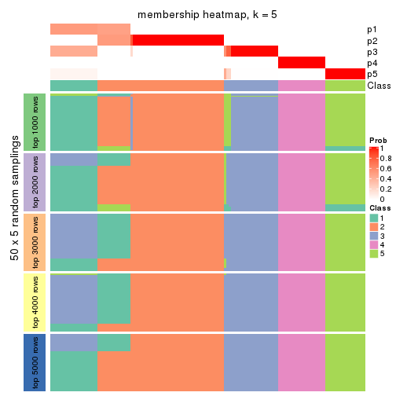
membership_heatmap(res, k = 6)
As soon as we have had the classes for columns, we can look for signatures which are significantly different between classes which can be candidate marks for certain classes. Following are the heatmaps for signatures.
Signature heatmaps where rows are scaled:
get_signatures(res, k = 2)
get_signatures(res, k = 3)
get_signatures(res, k = 4)
get_signatures(res, k = 5)
get_signatures(res, k = 6)
Signature heatmaps where rows are not scaled:
get_signatures(res, k = 2, scale_rows = FALSE)
get_signatures(res, k = 3, scale_rows = FALSE)
get_signatures(res, k = 4, scale_rows = FALSE)
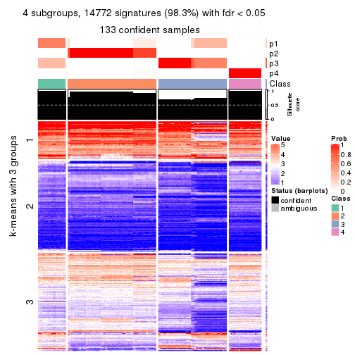
get_signatures(res, k = 5, scale_rows = FALSE)
get_signatures(res, k = 6, scale_rows = FALSE)
Compare the overlap of signatures from different k:
compare_signatures(res)
get_signature() returns a data frame invisibly. TO get the list of signatures, the function
call should be assigned to a variable explicitly. In following code, if plot argument is set
to FALSE, no heatmap is plotted while only the differential analysis is performed.
# code only for demonstration
tb = get_signature(res, k = ..., plot = FALSE)
An example of the output of tb is:
#> which_row fdr mean_1 mean_2 scaled_mean_1 scaled_mean_2 km
#> 1 38 0.042760348 8.373488 9.131774 -0.5533452 0.5164555 1
#> 2 40 0.018707592 7.106213 8.469186 -0.6173731 0.5762149 1
#> 3 55 0.019134737 10.221463 11.207825 -0.6159697 0.5749050 1
#> 4 59 0.006059896 5.921854 7.869574 -0.6899429 0.6439467 1
#> 5 60 0.018055526 8.928898 10.211722 -0.6204761 0.5791110 1
#> 6 98 0.009384629 15.714769 14.887706 0.6635654 -0.6193277 2
...
The columns in tb are:
which_row: row indices corresponding to the input matrix.fdr: FDR for the differential test. mean_x: The mean value in group x.scaled_mean_x: The mean value in group x after rows are scaled.km: Row groups if k-means clustering is applied to rows.UMAP plot which shows how samples are separated.
dimension_reduction(res, k = 2, method = "UMAP")

dimension_reduction(res, k = 3, method = "UMAP")

dimension_reduction(res, k = 4, method = "UMAP")
dimension_reduction(res, k = 5, method = "UMAP")
dimension_reduction(res, k = 6, method = "UMAP")
Following heatmap shows how subgroups are split when increasing k:
collect_classes(res)
If matrix rows can be associated to genes, consider to use GO_Enrichment(res,
...) to perform function enrichment for the signature genes.
The object with results only for a single top-value method and a single partition method can be extracted as:
res = res_list["CV", "pam"]
# you can also extract it by
# res = res_list["CV:pam"]
A summary of res and all the functions that can be applied to it:
res
#> A 'ConsensusPartition' object with k = 2, 3, 4, 5, 6.
#> On a matrix with 15028 rows and 134 columns.
#> Top rows (1000, 2000, 3000, 4000, 5000) are extracted by 'CV' method.
#> Subgroups are detected by 'pam' method.
#> Performed in total 1250 partitions by row resampling.
#> Best k for subgroups seems to be 6.
#>
#> Following methods can be applied to this 'ConsensusPartition' object:
#> [1] "cola_report" "collect_classes" "collect_plots"
#> [4] "collect_stats" "colnames" "compare_signatures"
#> [7] "consensus_heatmap" "dimension_reduction" "functional_enrichment"
#> [10] "get_anno_col" "get_anno" "get_classes"
#> [13] "get_consensus" "get_matrix" "get_membership"
#> [16] "get_param" "get_signatures" "get_stats"
#> [19] "is_best_k" "is_stable_k" "membership_heatmap"
#> [22] "ncol" "nrow" "plot_ecdf"
#> [25] "rownames" "select_partition_number" "show"
#> [28] "suggest_best_k" "test_to_known_factors"
collect_plots() function collects all the plots made from res for all k (number of partitions)
into one single page to provide an easy and fast comparison between different k.
collect_plots(res)
The plots are:
k and the heatmap of
predicted classes for each k.k.k.k.All the plots in panels can be made by individual functions and they are plotted later in this section.
select_partition_number() produces several plots showing different
statistics for choosing “optimized” k. There are following statistics:
k;k, the area increased is defined as \(A_k - A_{k-1}\).The detailed explanations of these statistics can be found in the cola vignette.
Generally speaking, lower PAC score, higher mean silhouette score or higher
concordance corresponds to better partition. Rand index and Jaccard index
measure how similar the current partition is compared to partition with k-1.
If they are too similar, we won't accept k is better than k-1.
select_partition_number(res)
The numeric values for all these statistics can be obtained by get_stats().
get_stats(res)
#> k 1-PAC mean_silhouette concordance area_increased Rand Jaccard
#> 2 2 1.000 0.992 0.996 0.4979 0.502 0.502
#> 3 3 1.000 0.979 0.977 0.2400 0.879 0.758
#> 4 4 0.952 0.931 0.971 0.1462 0.855 0.648
#> 5 5 1.000 0.986 0.994 0.0657 0.930 0.772
#> 6 6 1.000 0.985 0.994 0.0833 0.937 0.745
suggest_best_k() suggests the best \(k\) based on these statistics. The rules are as follows:
NA.suggest_best_k(res)
#> [1] 6
#> attr(,"optional")
#> [1] 2 3 4 5
There is also optional best \(k\) = 2 3 4 5 that is worth to check.
Following shows the table of the partitions (You need to click the show/hide
code output link to see it). The membership matrix (columns with name p*)
is inferred by
clue::cl_consensus()
function with the SE method. Basically the value in the membership matrix
represents the probability to belong to a certain group. The finall class
label for an item is determined with the group with highest probability it
belongs to.
In get_classes() function, the entropy is calculated from the membership
matrix and the silhouette score is calculated from the consensus matrix.
cbind(get_classes(res, k = 2), get_membership(res, k = 2))
#> class entropy silhouette p1 p2
#> SRR1550981 1 0.000 0.992 1.000 0.000
#> SRR1550982 1 0.000 0.992 1.000 0.000
#> SRR1550983 1 0.000 0.992 1.000 0.000
#> SRR1550984 1 0.184 0.966 0.972 0.028
#> SRR1550986 1 0.000 0.992 1.000 0.000
#> SRR1550985 1 0.518 0.872 0.884 0.116
#> SRR1550988 2 0.000 1.000 0.000 1.000
#> SRR1550987 1 0.000 0.992 1.000 0.000
#> SRR1550989 2 0.000 1.000 0.000 1.000
#> SRR1550990 2 0.000 1.000 0.000 1.000
#> SRR1550991 2 0.000 1.000 0.000 1.000
#> SRR1550992 1 0.000 0.992 1.000 0.000
#> SRR1550994 2 0.000 1.000 0.000 1.000
#> SRR1550993 1 0.000 0.992 1.000 0.000
#> SRR1550995 2 0.000 1.000 0.000 1.000
#> SRR1550996 2 0.000 1.000 0.000 1.000
#> SRR1550997 1 0.000 0.992 1.000 0.000
#> SRR1550998 1 0.000 0.992 1.000 0.000
#> SRR1551000 2 0.000 1.000 0.000 1.000
#> SRR1550999 2 0.000 1.000 0.000 1.000
#> SRR1551001 2 0.000 1.000 0.000 1.000
#> SRR1551002 1 0.000 0.992 1.000 0.000
#> SRR1551003 1 0.000 0.992 1.000 0.000
#> SRR1551004 2 0.000 1.000 0.000 1.000
#> SRR1551006 2 0.000 1.000 0.000 1.000
#> SRR1551005 2 0.000 1.000 0.000 1.000
#> SRR1551007 2 0.000 1.000 0.000 1.000
#> SRR1551008 1 0.000 0.992 1.000 0.000
#> SRR1551009 1 0.000 0.992 1.000 0.000
#> SRR1551010 2 0.000 1.000 0.000 1.000
#> SRR1551012 2 0.000 1.000 0.000 1.000
#> SRR1551011 2 0.000 1.000 0.000 1.000
#> SRR1551013 1 0.000 0.992 1.000 0.000
#> SRR1551014 1 0.000 0.992 1.000 0.000
#> SRR1551015 2 0.000 1.000 0.000 1.000
#> SRR1551016 2 0.000 1.000 0.000 1.000
#> SRR1551017 2 0.000 1.000 0.000 1.000
#> SRR1551018 2 0.000 1.000 0.000 1.000
#> SRR1551019 1 0.000 0.992 1.000 0.000
#> SRR1551021 1 0.000 0.992 1.000 0.000
#> SRR1551022 2 0.000 1.000 0.000 1.000
#> SRR1551023 2 0.000 1.000 0.000 1.000
#> SRR1551020 1 0.000 0.992 1.000 0.000
#> SRR1551024 2 0.000 1.000 0.000 1.000
#> SRR1551026 1 0.000 0.992 1.000 0.000
#> SRR1551025 1 0.000 0.992 1.000 0.000
#> SRR1551027 1 0.000 0.992 1.000 0.000
#> SRR1551028 2 0.000 1.000 0.000 1.000
#> SRR1551029 2 0.000 1.000 0.000 1.000
#> SRR1551030 2 0.000 1.000 0.000 1.000
#> SRR1551031 2 0.000 1.000 0.000 1.000
#> SRR1551032 1 0.000 0.992 1.000 0.000
#> SRR1551034 1 0.000 0.992 1.000 0.000
#> SRR1551033 1 0.000 0.992 1.000 0.000
#> SRR1551035 2 0.000 1.000 0.000 1.000
#> SRR1551036 2 0.000 1.000 0.000 1.000
#> SRR1551037 2 0.000 1.000 0.000 1.000
#> SRR1551038 2 0.000 1.000 0.000 1.000
#> SRR1551039 1 0.000 0.992 1.000 0.000
#> SRR1551040 1 0.000 0.992 1.000 0.000
#> SRR1551041 1 0.000 0.992 1.000 0.000
#> SRR1551042 2 0.000 1.000 0.000 1.000
#> SRR1551043 2 0.000 1.000 0.000 1.000
#> SRR1551044 2 0.000 1.000 0.000 1.000
#> SRR1551045 2 0.000 1.000 0.000 1.000
#> SRR1551046 1 0.000 0.992 1.000 0.000
#> SRR1551047 1 0.000 0.992 1.000 0.000
#> SRR1551048 1 0.000 0.992 1.000 0.000
#> SRR1551049 2 0.000 1.000 0.000 1.000
#> SRR1551050 2 0.000 1.000 0.000 1.000
#> SRR1551051 2 0.000 1.000 0.000 1.000
#> SRR1551052 2 0.000 1.000 0.000 1.000
#> SRR1551053 1 0.518 0.872 0.884 0.116
#> SRR1551054 1 0.000 0.992 1.000 0.000
#> SRR1551055 1 0.000 0.992 1.000 0.000
#> SRR1551056 2 0.000 1.000 0.000 1.000
#> SRR1551057 2 0.000 1.000 0.000 1.000
#> SRR1551058 2 0.000 1.000 0.000 1.000
#> SRR1551059 2 0.000 1.000 0.000 1.000
#> SRR1551060 1 0.000 0.992 1.000 0.000
#> SRR1551061 1 0.000 0.992 1.000 0.000
#> SRR1551062 1 0.000 0.992 1.000 0.000
#> SRR1551063 2 0.000 1.000 0.000 1.000
#> SRR1551064 2 0.000 1.000 0.000 1.000
#> SRR1551065 2 0.000 1.000 0.000 1.000
#> SRR1551066 2 0.000 1.000 0.000 1.000
#> SRR1551067 1 0.000 0.992 1.000 0.000
#> SRR1551068 1 0.000 0.992 1.000 0.000
#> SRR1551069 1 0.000 0.992 1.000 0.000
#> SRR1551070 2 0.000 1.000 0.000 1.000
#> SRR1551071 2 0.000 1.000 0.000 1.000
#> SRR1551072 2 0.000 1.000 0.000 1.000
#> SRR1551073 2 0.000 1.000 0.000 1.000
#> SRR1551074 1 0.000 0.992 1.000 0.000
#> SRR1551075 1 0.000 0.992 1.000 0.000
#> SRR1551076 1 0.000 0.992 1.000 0.000
#> SRR1551077 2 0.000 1.000 0.000 1.000
#> SRR1551078 2 0.000 1.000 0.000 1.000
#> SRR1551079 2 0.000 1.000 0.000 1.000
#> SRR1551080 2 0.000 1.000 0.000 1.000
#> SRR1551081 1 0.760 0.726 0.780 0.220
#> SRR1551082 1 0.000 0.992 1.000 0.000
#> SRR1551083 1 0.000 0.992 1.000 0.000
#> SRR1551084 2 0.000 1.000 0.000 1.000
#> SRR1551085 2 0.000 1.000 0.000 1.000
#> SRR1551086 2 0.000 1.000 0.000 1.000
#> SRR1551088 1 0.000 0.992 1.000 0.000
#> SRR1551087 1 0.000 0.992 1.000 0.000
#> SRR1551089 1 0.000 0.992 1.000 0.000
#> SRR1551090 2 0.000 1.000 0.000 1.000
#> SRR1551091 2 0.000 1.000 0.000 1.000
#> SRR1551092 2 0.000 1.000 0.000 1.000
#> SRR1551093 2 0.000 1.000 0.000 1.000
#> SRR1551094 1 0.000 0.992 1.000 0.000
#> SRR1551095 1 0.000 0.992 1.000 0.000
#> SRR1551096 1 0.000 0.992 1.000 0.000
#> SRR1551097 2 0.000 1.000 0.000 1.000
#> SRR1551098 2 0.000 1.000 0.000 1.000
#> SRR1551099 2 0.000 1.000 0.000 1.000
#> SRR1551101 1 0.000 0.992 1.000 0.000
#> SRR1551100 1 0.000 0.992 1.000 0.000
#> SRR1551102 1 0.000 0.992 1.000 0.000
#> SRR1551103 2 0.000 1.000 0.000 1.000
#> SRR1551104 2 0.000 1.000 0.000 1.000
#> SRR1551105 2 0.000 1.000 0.000 1.000
#> SRR1551106 2 0.000 1.000 0.000 1.000
#> SRR1551107 1 0.000 0.992 1.000 0.000
#> SRR1551108 1 0.000 0.992 1.000 0.000
#> SRR1551109 1 0.000 0.992 1.000 0.000
#> SRR1551110 2 0.000 1.000 0.000 1.000
#> SRR1551111 2 0.000 1.000 0.000 1.000
#> SRR1551112 2 0.000 1.000 0.000 1.000
#> SRR1551113 2 0.000 1.000 0.000 1.000
#> SRR1551114 1 0.000 0.992 1.000 0.000
cbind(get_classes(res, k = 3), get_membership(res, k = 3))
#> class entropy silhouette p1 p2 p3
#> SRR1550981 1 0.000 0.968 1.000 0.000 0.000
#> SRR1550982 1 0.000 0.968 1.000 0.000 0.000
#> SRR1550983 1 0.000 0.968 1.000 0.000 0.000
#> SRR1550984 1 0.263 0.898 0.916 0.084 0.000
#> SRR1550986 1 0.196 0.960 0.944 0.000 0.056
#> SRR1550985 1 0.394 0.809 0.844 0.156 0.000
#> SRR1550988 3 0.196 1.000 0.000 0.056 0.944
#> SRR1550987 1 0.000 0.968 1.000 0.000 0.000
#> SRR1550989 2 0.000 1.000 0.000 1.000 0.000
#> SRR1550990 2 0.000 1.000 0.000 1.000 0.000
#> SRR1550991 2 0.000 1.000 0.000 1.000 0.000
#> SRR1550992 1 0.196 0.960 0.944 0.000 0.056
#> SRR1550994 3 0.196 1.000 0.000 0.056 0.944
#> SRR1550993 1 0.000 0.968 1.000 0.000 0.000
#> SRR1550995 2 0.000 1.000 0.000 1.000 0.000
#> SRR1550996 2 0.000 1.000 0.000 1.000 0.000
#> SRR1550997 1 0.196 0.960 0.944 0.000 0.056
#> SRR1550998 1 0.000 0.968 1.000 0.000 0.000
#> SRR1551000 2 0.000 1.000 0.000 1.000 0.000
#> SRR1550999 3 0.196 1.000 0.000 0.056 0.944
#> SRR1551001 2 0.000 1.000 0.000 1.000 0.000
#> SRR1551002 1 0.196 0.960 0.944 0.000 0.056
#> SRR1551003 1 0.000 0.968 1.000 0.000 0.000
#> SRR1551004 3 0.196 1.000 0.000 0.056 0.944
#> SRR1551006 2 0.000 1.000 0.000 1.000 0.000
#> SRR1551005 2 0.000 1.000 0.000 1.000 0.000
#> SRR1551007 2 0.000 1.000 0.000 1.000 0.000
#> SRR1551008 1 0.196 0.960 0.944 0.000 0.056
#> SRR1551009 1 0.000 0.968 1.000 0.000 0.000
#> SRR1551010 3 0.196 1.000 0.000 0.056 0.944
#> SRR1551012 2 0.000 1.000 0.000 1.000 0.000
#> SRR1551011 2 0.000 1.000 0.000 1.000 0.000
#> SRR1551013 1 0.196 0.960 0.944 0.000 0.056
#> SRR1551014 1 0.000 0.968 1.000 0.000 0.000
#> SRR1551015 3 0.196 1.000 0.000 0.056 0.944
#> SRR1551016 2 0.000 1.000 0.000 1.000 0.000
#> SRR1551017 2 0.000 1.000 0.000 1.000 0.000
#> SRR1551018 2 0.000 1.000 0.000 1.000 0.000
#> SRR1551019 1 0.141 0.963 0.964 0.000 0.036
#> SRR1551021 1 0.000 0.968 1.000 0.000 0.000
#> SRR1551022 3 0.196 1.000 0.000 0.056 0.944
#> SRR1551023 2 0.000 1.000 0.000 1.000 0.000
#> SRR1551020 1 0.196 0.960 0.944 0.000 0.056
#> SRR1551024 2 0.000 1.000 0.000 1.000 0.000
#> SRR1551026 1 0.196 0.960 0.944 0.000 0.056
#> SRR1551025 1 0.196 0.960 0.944 0.000 0.056
#> SRR1551027 1 0.000 0.968 1.000 0.000 0.000
#> SRR1551028 3 0.196 1.000 0.000 0.056 0.944
#> SRR1551029 2 0.000 1.000 0.000 1.000 0.000
#> SRR1551030 2 0.000 1.000 0.000 1.000 0.000
#> SRR1551031 2 0.000 1.000 0.000 1.000 0.000
#> SRR1551032 1 0.196 0.960 0.944 0.000 0.056
#> SRR1551034 1 0.000 0.968 1.000 0.000 0.000
#> SRR1551033 1 0.196 0.960 0.944 0.000 0.056
#> SRR1551035 3 0.196 1.000 0.000 0.056 0.944
#> SRR1551036 2 0.000 1.000 0.000 1.000 0.000
#> SRR1551037 2 0.000 1.000 0.000 1.000 0.000
#> SRR1551038 2 0.000 1.000 0.000 1.000 0.000
#> SRR1551039 1 0.000 0.968 1.000 0.000 0.000
#> SRR1551040 1 0.196 0.960 0.944 0.000 0.056
#> SRR1551041 1 0.000 0.968 1.000 0.000 0.000
#> SRR1551042 3 0.196 1.000 0.000 0.056 0.944
#> SRR1551043 2 0.000 1.000 0.000 1.000 0.000
#> SRR1551044 2 0.000 1.000 0.000 1.000 0.000
#> SRR1551045 2 0.000 1.000 0.000 1.000 0.000
#> SRR1551046 1 0.000 0.968 1.000 0.000 0.000
#> SRR1551047 1 0.196 0.960 0.944 0.000 0.056
#> SRR1551048 1 0.000 0.968 1.000 0.000 0.000
#> SRR1551049 3 0.196 1.000 0.000 0.056 0.944
#> SRR1551050 2 0.000 1.000 0.000 1.000 0.000
#> SRR1551051 2 0.000 1.000 0.000 1.000 0.000
#> SRR1551052 2 0.000 1.000 0.000 1.000 0.000
#> SRR1551053 1 0.382 0.820 0.852 0.148 0.000
#> SRR1551054 1 0.196 0.960 0.944 0.000 0.056
#> SRR1551055 1 0.000 0.968 1.000 0.000 0.000
#> SRR1551056 3 0.196 1.000 0.000 0.056 0.944
#> SRR1551057 2 0.000 1.000 0.000 1.000 0.000
#> SRR1551058 2 0.000 1.000 0.000 1.000 0.000
#> SRR1551059 2 0.000 1.000 0.000 1.000 0.000
#> SRR1551060 1 0.000 0.968 1.000 0.000 0.000
#> SRR1551061 1 0.196 0.960 0.944 0.000 0.056
#> SRR1551062 1 0.000 0.968 1.000 0.000 0.000
#> SRR1551063 3 0.196 1.000 0.000 0.056 0.944
#> SRR1551064 2 0.000 1.000 0.000 1.000 0.000
#> SRR1551065 2 0.000 1.000 0.000 1.000 0.000
#> SRR1551066 2 0.000 1.000 0.000 1.000 0.000
#> SRR1551067 1 0.000 0.968 1.000 0.000 0.000
#> SRR1551068 1 0.196 0.960 0.944 0.000 0.056
#> SRR1551069 1 0.000 0.968 1.000 0.000 0.000
#> SRR1551070 3 0.196 1.000 0.000 0.056 0.944
#> SRR1551071 2 0.000 1.000 0.000 1.000 0.000
#> SRR1551072 2 0.000 1.000 0.000 1.000 0.000
#> SRR1551073 2 0.000 1.000 0.000 1.000 0.000
#> SRR1551074 1 0.000 0.968 1.000 0.000 0.000
#> SRR1551075 1 0.196 0.960 0.944 0.000 0.056
#> SRR1551076 1 0.000 0.968 1.000 0.000 0.000
#> SRR1551077 3 0.196 1.000 0.000 0.056 0.944
#> SRR1551078 2 0.000 1.000 0.000 1.000 0.000
#> SRR1551079 2 0.000 1.000 0.000 1.000 0.000
#> SRR1551080 2 0.000 1.000 0.000 1.000 0.000
#> SRR1551081 1 0.536 0.625 0.724 0.276 0.000
#> SRR1551082 1 0.196 0.960 0.944 0.000 0.056
#> SRR1551083 1 0.000 0.968 1.000 0.000 0.000
#> SRR1551084 3 0.196 1.000 0.000 0.056 0.944
#> SRR1551085 2 0.000 1.000 0.000 1.000 0.000
#> SRR1551086 2 0.000 1.000 0.000 1.000 0.000
#> SRR1551088 1 0.196 0.960 0.944 0.000 0.056
#> SRR1551087 1 0.000 0.968 1.000 0.000 0.000
#> SRR1551089 1 0.000 0.968 1.000 0.000 0.000
#> SRR1551090 3 0.196 1.000 0.000 0.056 0.944
#> SRR1551091 2 0.000 1.000 0.000 1.000 0.000
#> SRR1551092 2 0.000 1.000 0.000 1.000 0.000
#> SRR1551093 2 0.000 1.000 0.000 1.000 0.000
#> SRR1551094 1 0.000 0.968 1.000 0.000 0.000
#> SRR1551095 1 0.196 0.960 0.944 0.000 0.056
#> SRR1551096 1 0.000 0.968 1.000 0.000 0.000
#> SRR1551097 3 0.196 1.000 0.000 0.056 0.944
#> SRR1551098 2 0.000 1.000 0.000 1.000 0.000
#> SRR1551099 2 0.000 1.000 0.000 1.000 0.000
#> SRR1551101 1 0.196 0.960 0.944 0.000 0.056
#> SRR1551100 1 0.153 0.942 0.960 0.040 0.000
#> SRR1551102 1 0.000 0.968 1.000 0.000 0.000
#> SRR1551103 3 0.196 1.000 0.000 0.056 0.944
#> SRR1551104 2 0.000 1.000 0.000 1.000 0.000
#> SRR1551105 2 0.000 1.000 0.000 1.000 0.000
#> SRR1551106 2 0.000 1.000 0.000 1.000 0.000
#> SRR1551107 1 0.000 0.968 1.000 0.000 0.000
#> SRR1551108 1 0.196 0.960 0.944 0.000 0.056
#> SRR1551109 1 0.000 0.968 1.000 0.000 0.000
#> SRR1551110 3 0.196 1.000 0.000 0.056 0.944
#> SRR1551111 2 0.000 1.000 0.000 1.000 0.000
#> SRR1551112 2 0.000 1.000 0.000 1.000 0.000
#> SRR1551113 2 0.000 1.000 0.000 1.000 0.000
#> SRR1551114 1 0.000 0.968 1.000 0.000 0.000
cbind(get_classes(res, k = 4), get_membership(res, k = 4))
#> class entropy silhouette p1 p2 p3 p4
#> SRR1550981 3 0.4382 0.5243 0.296 0.000 0.704 0
#> SRR1550982 1 0.4877 0.3789 0.592 0.000 0.408 0
#> SRR1550983 1 0.3688 0.7418 0.792 0.000 0.208 0
#> SRR1550984 2 0.4697 0.4512 0.000 0.644 0.356 0
#> SRR1550986 3 0.0000 0.9789 0.000 0.000 1.000 0
#> SRR1550985 2 0.4224 0.8030 0.076 0.824 0.100 0
#> SRR1550988 4 0.0000 1.0000 0.000 0.000 0.000 1
#> SRR1550987 1 0.0000 0.9249 1.000 0.000 0.000 0
#> SRR1550989 2 0.0000 0.9762 0.000 1.000 0.000 0
#> SRR1550990 2 0.0000 0.9762 0.000 1.000 0.000 0
#> SRR1550991 2 0.0000 0.9762 0.000 1.000 0.000 0
#> SRR1550992 3 0.0000 0.9789 0.000 0.000 1.000 0
#> SRR1550994 4 0.0000 1.0000 0.000 0.000 0.000 1
#> SRR1550993 1 0.0000 0.9249 1.000 0.000 0.000 0
#> SRR1550995 2 0.0000 0.9762 0.000 1.000 0.000 0
#> SRR1550996 2 0.0000 0.9762 0.000 1.000 0.000 0
#> SRR1550997 3 0.0000 0.9789 0.000 0.000 1.000 0
#> SRR1550998 1 0.0000 0.9249 1.000 0.000 0.000 0
#> SRR1551000 2 0.0000 0.9762 0.000 1.000 0.000 0
#> SRR1550999 4 0.0000 1.0000 0.000 0.000 0.000 1
#> SRR1551001 2 0.0000 0.9762 0.000 1.000 0.000 0
#> SRR1551002 3 0.0000 0.9789 0.000 0.000 1.000 0
#> SRR1551003 1 0.0000 0.9249 1.000 0.000 0.000 0
#> SRR1551004 4 0.0000 1.0000 0.000 0.000 0.000 1
#> SRR1551006 2 0.0000 0.9762 0.000 1.000 0.000 0
#> SRR1551005 2 0.0000 0.9762 0.000 1.000 0.000 0
#> SRR1551007 2 0.0000 0.9762 0.000 1.000 0.000 0
#> SRR1551008 3 0.0000 0.9789 0.000 0.000 1.000 0
#> SRR1551009 1 0.0000 0.9249 1.000 0.000 0.000 0
#> SRR1551010 4 0.0000 1.0000 0.000 0.000 0.000 1
#> SRR1551012 2 0.0000 0.9762 0.000 1.000 0.000 0
#> SRR1551011 2 0.0000 0.9762 0.000 1.000 0.000 0
#> SRR1551013 3 0.0000 0.9789 0.000 0.000 1.000 0
#> SRR1551014 1 0.0000 0.9249 1.000 0.000 0.000 0
#> SRR1551015 4 0.0000 1.0000 0.000 0.000 0.000 1
#> SRR1551016 2 0.0000 0.9762 0.000 1.000 0.000 0
#> SRR1551017 2 0.0000 0.9762 0.000 1.000 0.000 0
#> SRR1551018 2 0.0000 0.9762 0.000 1.000 0.000 0
#> SRR1551019 3 0.2814 0.8238 0.132 0.000 0.868 0
#> SRR1551021 1 0.0000 0.9249 1.000 0.000 0.000 0
#> SRR1551022 4 0.0000 1.0000 0.000 0.000 0.000 1
#> SRR1551023 2 0.0000 0.9762 0.000 1.000 0.000 0
#> SRR1551020 3 0.0000 0.9789 0.000 0.000 1.000 0
#> SRR1551024 2 0.0000 0.9762 0.000 1.000 0.000 0
#> SRR1551026 3 0.0000 0.9789 0.000 0.000 1.000 0
#> SRR1551025 3 0.0000 0.9789 0.000 0.000 1.000 0
#> SRR1551027 1 0.0000 0.9249 1.000 0.000 0.000 0
#> SRR1551028 4 0.0000 1.0000 0.000 0.000 0.000 1
#> SRR1551029 2 0.0000 0.9762 0.000 1.000 0.000 0
#> SRR1551030 2 0.0000 0.9762 0.000 1.000 0.000 0
#> SRR1551031 2 0.0000 0.9762 0.000 1.000 0.000 0
#> SRR1551032 3 0.0000 0.9789 0.000 0.000 1.000 0
#> SRR1551034 1 0.0000 0.9249 1.000 0.000 0.000 0
#> SRR1551033 3 0.0000 0.9789 0.000 0.000 1.000 0
#> SRR1551035 4 0.0000 1.0000 0.000 0.000 0.000 1
#> SRR1551036 2 0.0000 0.9762 0.000 1.000 0.000 0
#> SRR1551037 2 0.0000 0.9762 0.000 1.000 0.000 0
#> SRR1551038 2 0.0000 0.9762 0.000 1.000 0.000 0
#> SRR1551039 1 0.5786 0.5352 0.640 0.052 0.308 0
#> SRR1551040 3 0.0000 0.9789 0.000 0.000 1.000 0
#> SRR1551041 1 0.0000 0.9249 1.000 0.000 0.000 0
#> SRR1551042 4 0.0000 1.0000 0.000 0.000 0.000 1
#> SRR1551043 2 0.0000 0.9762 0.000 1.000 0.000 0
#> SRR1551044 2 0.0000 0.9762 0.000 1.000 0.000 0
#> SRR1551045 2 0.0000 0.9762 0.000 1.000 0.000 0
#> SRR1551046 1 0.0000 0.9249 1.000 0.000 0.000 0
#> SRR1551047 3 0.0000 0.9789 0.000 0.000 1.000 0
#> SRR1551048 1 0.0000 0.9249 1.000 0.000 0.000 0
#> SRR1551049 4 0.0000 1.0000 0.000 0.000 0.000 1
#> SRR1551050 2 0.0000 0.9762 0.000 1.000 0.000 0
#> SRR1551051 2 0.0000 0.9762 0.000 1.000 0.000 0
#> SRR1551052 2 0.0000 0.9762 0.000 1.000 0.000 0
#> SRR1551053 2 0.3610 0.7422 0.000 0.800 0.200 0
#> SRR1551054 3 0.0000 0.9789 0.000 0.000 1.000 0
#> SRR1551055 1 0.0000 0.9249 1.000 0.000 0.000 0
#> SRR1551056 4 0.0000 1.0000 0.000 0.000 0.000 1
#> SRR1551057 2 0.0000 0.9762 0.000 1.000 0.000 0
#> SRR1551058 2 0.0000 0.9762 0.000 1.000 0.000 0
#> SRR1551059 2 0.0000 0.9762 0.000 1.000 0.000 0
#> SRR1551060 1 0.1792 0.8807 0.932 0.000 0.068 0
#> SRR1551061 3 0.0000 0.9789 0.000 0.000 1.000 0
#> SRR1551062 1 0.0000 0.9249 1.000 0.000 0.000 0
#> SRR1551063 4 0.0000 1.0000 0.000 0.000 0.000 1
#> SRR1551064 2 0.0000 0.9762 0.000 1.000 0.000 0
#> SRR1551065 2 0.0000 0.9762 0.000 1.000 0.000 0
#> SRR1551066 2 0.0000 0.9762 0.000 1.000 0.000 0
#> SRR1551067 1 0.1792 0.8804 0.932 0.000 0.068 0
#> SRR1551068 3 0.0000 0.9789 0.000 0.000 1.000 0
#> SRR1551069 1 0.0000 0.9249 1.000 0.000 0.000 0
#> SRR1551070 4 0.0000 1.0000 0.000 0.000 0.000 1
#> SRR1551071 2 0.0000 0.9762 0.000 1.000 0.000 0
#> SRR1551072 2 0.0000 0.9762 0.000 1.000 0.000 0
#> SRR1551073 2 0.0000 0.9762 0.000 1.000 0.000 0
#> SRR1551074 1 0.3764 0.7313 0.784 0.000 0.216 0
#> SRR1551075 3 0.0000 0.9789 0.000 0.000 1.000 0
#> SRR1551076 1 0.0000 0.9249 1.000 0.000 0.000 0
#> SRR1551077 4 0.0000 1.0000 0.000 0.000 0.000 1
#> SRR1551078 2 0.0000 0.9762 0.000 1.000 0.000 0
#> SRR1551079 2 0.0000 0.9762 0.000 1.000 0.000 0
#> SRR1551080 2 0.0000 0.9762 0.000 1.000 0.000 0
#> SRR1551081 2 0.2530 0.8667 0.112 0.888 0.000 0
#> SRR1551082 3 0.0000 0.9789 0.000 0.000 1.000 0
#> SRR1551083 1 0.0000 0.9249 1.000 0.000 0.000 0
#> SRR1551084 4 0.0000 1.0000 0.000 0.000 0.000 1
#> SRR1551085 2 0.0000 0.9762 0.000 1.000 0.000 0
#> SRR1551086 2 0.0000 0.9762 0.000 1.000 0.000 0
#> SRR1551088 3 0.0000 0.9789 0.000 0.000 1.000 0
#> SRR1551087 1 0.0817 0.9107 0.976 0.000 0.024 0
#> SRR1551089 1 0.0000 0.9249 1.000 0.000 0.000 0
#> SRR1551090 4 0.0000 1.0000 0.000 0.000 0.000 1
#> SRR1551091 2 0.0000 0.9762 0.000 1.000 0.000 0
#> SRR1551092 2 0.0000 0.9762 0.000 1.000 0.000 0
#> SRR1551093 2 0.0000 0.9762 0.000 1.000 0.000 0
#> SRR1551094 1 0.4304 0.6334 0.716 0.000 0.284 0
#> SRR1551095 3 0.0000 0.9789 0.000 0.000 1.000 0
#> SRR1551096 1 0.0000 0.9249 1.000 0.000 0.000 0
#> SRR1551097 4 0.0000 1.0000 0.000 0.000 0.000 1
#> SRR1551098 2 0.0000 0.9762 0.000 1.000 0.000 0
#> SRR1551099 2 0.0000 0.9762 0.000 1.000 0.000 0
#> SRR1551101 3 0.0000 0.9789 0.000 0.000 1.000 0
#> SRR1551100 2 0.7009 0.0851 0.120 0.488 0.392 0
#> SRR1551102 1 0.0000 0.9249 1.000 0.000 0.000 0
#> SRR1551103 4 0.0000 1.0000 0.000 0.000 0.000 1
#> SRR1551104 2 0.0000 0.9762 0.000 1.000 0.000 0
#> SRR1551105 2 0.0000 0.9762 0.000 1.000 0.000 0
#> SRR1551106 2 0.0000 0.9762 0.000 1.000 0.000 0
#> SRR1551107 1 0.0000 0.9249 1.000 0.000 0.000 0
#> SRR1551108 3 0.0000 0.9789 0.000 0.000 1.000 0
#> SRR1551109 1 0.0000 0.9249 1.000 0.000 0.000 0
#> SRR1551110 4 0.0000 1.0000 0.000 0.000 0.000 1
#> SRR1551111 2 0.0000 0.9762 0.000 1.000 0.000 0
#> SRR1551112 2 0.0000 0.9762 0.000 1.000 0.000 0
#> SRR1551113 2 0.0000 0.9762 0.000 1.000 0.000 0
#> SRR1551114 1 0.5000 0.1086 0.504 0.000 0.496 0
cbind(get_classes(res, k = 5), get_membership(res, k = 5))
#> class entropy silhouette p1 p2 p3 p4 p5
#> SRR1550981 5 0.000 1.000 0 0 0.000 0 1.000
#> SRR1550982 5 0.000 1.000 0 0 0.000 0 1.000
#> SRR1550983 5 0.000 1.000 0 0 0.000 0 1.000
#> SRR1550984 5 0.000 1.000 0 0 0.000 0 1.000
#> SRR1550986 3 0.000 0.964 0 0 1.000 0 0.000
#> SRR1550985 5 0.000 1.000 0 0 0.000 0 1.000
#> SRR1550988 4 0.000 1.000 0 0 0.000 1 0.000
#> SRR1550987 1 0.000 1.000 1 0 0.000 0 0.000
#> SRR1550989 2 0.000 1.000 0 1 0.000 0 0.000
#> SRR1550990 2 0.000 1.000 0 1 0.000 0 0.000
#> SRR1550991 2 0.000 1.000 0 1 0.000 0 0.000
#> SRR1550992 3 0.000 0.964 0 0 1.000 0 0.000
#> SRR1550994 4 0.000 1.000 0 0 0.000 1 0.000
#> SRR1550993 1 0.000 1.000 1 0 0.000 0 0.000
#> SRR1550995 2 0.000 1.000 0 1 0.000 0 0.000
#> SRR1550996 2 0.000 1.000 0 1 0.000 0 0.000
#> SRR1550997 3 0.000 0.964 0 0 1.000 0 0.000
#> SRR1550998 1 0.000 1.000 1 0 0.000 0 0.000
#> SRR1551000 2 0.000 1.000 0 1 0.000 0 0.000
#> SRR1550999 4 0.000 1.000 0 0 0.000 1 0.000
#> SRR1551001 2 0.000 1.000 0 1 0.000 0 0.000
#> SRR1551002 3 0.000 0.964 0 0 1.000 0 0.000
#> SRR1551003 1 0.000 1.000 1 0 0.000 0 0.000
#> SRR1551004 4 0.000 1.000 0 0 0.000 1 0.000
#> SRR1551006 2 0.000 1.000 0 1 0.000 0 0.000
#> SRR1551005 2 0.000 1.000 0 1 0.000 0 0.000
#> SRR1551007 2 0.000 1.000 0 1 0.000 0 0.000
#> SRR1551008 3 0.000 0.964 0 0 1.000 0 0.000
#> SRR1551009 1 0.000 1.000 1 0 0.000 0 0.000
#> SRR1551010 4 0.000 1.000 0 0 0.000 1 0.000
#> SRR1551012 2 0.000 1.000 0 1 0.000 0 0.000
#> SRR1551011 2 0.000 1.000 0 1 0.000 0 0.000
#> SRR1551013 3 0.000 0.964 0 0 1.000 0 0.000
#> SRR1551014 1 0.000 1.000 1 0 0.000 0 0.000
#> SRR1551015 4 0.000 1.000 0 0 0.000 1 0.000
#> SRR1551016 2 0.000 1.000 0 1 0.000 0 0.000
#> SRR1551017 2 0.000 1.000 0 1 0.000 0 0.000
#> SRR1551018 2 0.000 1.000 0 1 0.000 0 0.000
#> SRR1551019 5 0.000 1.000 0 0 0.000 0 1.000
#> SRR1551021 1 0.000 1.000 1 0 0.000 0 0.000
#> SRR1551022 4 0.000 1.000 0 0 0.000 1 0.000
#> SRR1551023 2 0.000 1.000 0 1 0.000 0 0.000
#> SRR1551020 3 0.000 0.964 0 0 1.000 0 0.000
#> SRR1551024 2 0.000 1.000 0 1 0.000 0 0.000
#> SRR1551026 3 0.000 0.964 0 0 1.000 0 0.000
#> SRR1551025 3 0.371 0.607 0 0 0.716 0 0.284
#> SRR1551027 1 0.000 1.000 1 0 0.000 0 0.000
#> SRR1551028 4 0.000 1.000 0 0 0.000 1 0.000
#> SRR1551029 2 0.000 1.000 0 1 0.000 0 0.000
#> SRR1551030 2 0.000 1.000 0 1 0.000 0 0.000
#> SRR1551031 2 0.000 1.000 0 1 0.000 0 0.000
#> SRR1551032 3 0.428 0.196 0 0 0.544 0 0.456
#> SRR1551034 1 0.000 1.000 1 0 0.000 0 0.000
#> SRR1551033 3 0.000 0.964 0 0 1.000 0 0.000
#> SRR1551035 4 0.000 1.000 0 0 0.000 1 0.000
#> SRR1551036 2 0.000 1.000 0 1 0.000 0 0.000
#> SRR1551037 2 0.000 1.000 0 1 0.000 0 0.000
#> SRR1551038 2 0.000 1.000 0 1 0.000 0 0.000
#> SRR1551039 5 0.000 1.000 0 0 0.000 0 1.000
#> SRR1551040 3 0.000 0.964 0 0 1.000 0 0.000
#> SRR1551041 1 0.000 1.000 1 0 0.000 0 0.000
#> SRR1551042 4 0.000 1.000 0 0 0.000 1 0.000
#> SRR1551043 2 0.000 1.000 0 1 0.000 0 0.000
#> SRR1551044 2 0.000 1.000 0 1 0.000 0 0.000
#> SRR1551045 2 0.000 1.000 0 1 0.000 0 0.000
#> SRR1551046 5 0.000 1.000 0 0 0.000 0 1.000
#> SRR1551047 3 0.000 0.964 0 0 1.000 0 0.000
#> SRR1551048 1 0.000 1.000 1 0 0.000 0 0.000
#> SRR1551049 4 0.000 1.000 0 0 0.000 1 0.000
#> SRR1551050 2 0.000 1.000 0 1 0.000 0 0.000
#> SRR1551051 2 0.000 1.000 0 1 0.000 0 0.000
#> SRR1551052 2 0.000 1.000 0 1 0.000 0 0.000
#> SRR1551053 5 0.000 1.000 0 0 0.000 0 1.000
#> SRR1551054 3 0.000 0.964 0 0 1.000 0 0.000
#> SRR1551055 1 0.000 1.000 1 0 0.000 0 0.000
#> SRR1551056 4 0.000 1.000 0 0 0.000 1 0.000
#> SRR1551057 2 0.000 1.000 0 1 0.000 0 0.000
#> SRR1551058 2 0.000 1.000 0 1 0.000 0 0.000
#> SRR1551059 2 0.000 1.000 0 1 0.000 0 0.000
#> SRR1551060 5 0.000 1.000 0 0 0.000 0 1.000
#> SRR1551061 3 0.000 0.964 0 0 1.000 0 0.000
#> SRR1551062 1 0.000 1.000 1 0 0.000 0 0.000
#> SRR1551063 4 0.000 1.000 0 0 0.000 1 0.000
#> SRR1551064 2 0.000 1.000 0 1 0.000 0 0.000
#> SRR1551065 2 0.000 1.000 0 1 0.000 0 0.000
#> SRR1551066 2 0.000 1.000 0 1 0.000 0 0.000
#> SRR1551067 5 0.000 1.000 0 0 0.000 0 1.000
#> SRR1551068 3 0.000 0.964 0 0 1.000 0 0.000
#> SRR1551069 1 0.000 1.000 1 0 0.000 0 0.000
#> SRR1551070 4 0.000 1.000 0 0 0.000 1 0.000
#> SRR1551071 2 0.000 1.000 0 1 0.000 0 0.000
#> SRR1551072 2 0.000 1.000 0 1 0.000 0 0.000
#> SRR1551073 2 0.000 1.000 0 1 0.000 0 0.000
#> SRR1551074 5 0.000 1.000 0 0 0.000 0 1.000
#> SRR1551075 3 0.000 0.964 0 0 1.000 0 0.000
#> SRR1551076 1 0.000 1.000 1 0 0.000 0 0.000
#> SRR1551077 4 0.000 1.000 0 0 0.000 1 0.000
#> SRR1551078 2 0.000 1.000 0 1 0.000 0 0.000
#> SRR1551079 2 0.000 1.000 0 1 0.000 0 0.000
#> SRR1551080 2 0.000 1.000 0 1 0.000 0 0.000
#> SRR1551081 5 0.000 1.000 0 0 0.000 0 1.000
#> SRR1551082 3 0.000 0.964 0 0 1.000 0 0.000
#> SRR1551083 1 0.000 1.000 1 0 0.000 0 0.000
#> SRR1551084 4 0.000 1.000 0 0 0.000 1 0.000
#> SRR1551085 2 0.000 1.000 0 1 0.000 0 0.000
#> SRR1551086 2 0.000 1.000 0 1 0.000 0 0.000
#> SRR1551088 3 0.000 0.964 0 0 1.000 0 0.000
#> SRR1551087 5 0.000 1.000 0 0 0.000 0 1.000
#> SRR1551089 1 0.000 1.000 1 0 0.000 0 0.000
#> SRR1551090 4 0.000 1.000 0 0 0.000 1 0.000
#> SRR1551091 2 0.000 1.000 0 1 0.000 0 0.000
#> SRR1551092 2 0.000 1.000 0 1 0.000 0 0.000
#> SRR1551093 2 0.000 1.000 0 1 0.000 0 0.000
#> SRR1551094 5 0.000 1.000 0 0 0.000 0 1.000
#> SRR1551095 3 0.000 0.964 0 0 1.000 0 0.000
#> SRR1551096 1 0.000 1.000 1 0 0.000 0 0.000
#> SRR1551097 4 0.000 1.000 0 0 0.000 1 0.000
#> SRR1551098 2 0.000 1.000 0 1 0.000 0 0.000
#> SRR1551099 2 0.000 1.000 0 1 0.000 0 0.000
#> SRR1551101 3 0.000 0.964 0 0 1.000 0 0.000
#> SRR1551100 5 0.000 1.000 0 0 0.000 0 1.000
#> SRR1551102 1 0.000 1.000 1 0 0.000 0 0.000
#> SRR1551103 4 0.000 1.000 0 0 0.000 1 0.000
#> SRR1551104 2 0.000 1.000 0 1 0.000 0 0.000
#> SRR1551105 2 0.000 1.000 0 1 0.000 0 0.000
#> SRR1551106 2 0.000 1.000 0 1 0.000 0 0.000
#> SRR1551107 5 0.000 1.000 0 0 0.000 0 1.000
#> SRR1551108 3 0.000 0.964 0 0 1.000 0 0.000
#> SRR1551109 1 0.000 1.000 1 0 0.000 0 0.000
#> SRR1551110 4 0.000 1.000 0 0 0.000 1 0.000
#> SRR1551111 2 0.000 1.000 0 1 0.000 0 0.000
#> SRR1551112 2 0.000 1.000 0 1 0.000 0 0.000
#> SRR1551113 2 0.000 1.000 0 1 0.000 0 0.000
#> SRR1551114 5 0.000 1.000 0 0 0.000 0 1.000
cbind(get_classes(res, k = 6), get_membership(res, k = 6))
#> class entropy silhouette p1 p2 p3 p4 p5 p6
#> SRR1550981 5 0.000 1.000 0 0 0.000 0 1.000 0
#> SRR1550982 5 0.000 1.000 0 0 0.000 0 1.000 0
#> SRR1550983 5 0.000 1.000 0 0 0.000 0 1.000 0
#> SRR1550984 5 0.000 1.000 0 0 0.000 0 1.000 0
#> SRR1550986 3 0.000 0.963 0 0 1.000 0 0.000 0
#> SRR1550985 5 0.000 1.000 0 0 0.000 0 1.000 0
#> SRR1550988 4 0.000 1.000 0 0 0.000 1 0.000 0
#> SRR1550987 1 0.000 1.000 1 0 0.000 0 0.000 0
#> SRR1550989 2 0.000 1.000 0 1 0.000 0 0.000 0
#> SRR1550990 2 0.000 1.000 0 1 0.000 0 0.000 0
#> SRR1550991 6 0.000 1.000 0 0 0.000 0 0.000 1
#> SRR1550992 3 0.000 0.963 0 0 1.000 0 0.000 0
#> SRR1550994 4 0.000 1.000 0 0 0.000 1 0.000 0
#> SRR1550993 1 0.000 1.000 1 0 0.000 0 0.000 0
#> SRR1550995 2 0.000 1.000 0 1 0.000 0 0.000 0
#> SRR1550996 2 0.000 1.000 0 1 0.000 0 0.000 0
#> SRR1550997 3 0.000 0.963 0 0 1.000 0 0.000 0
#> SRR1550998 1 0.000 1.000 1 0 0.000 0 0.000 0
#> SRR1551000 2 0.000 1.000 0 1 0.000 0 0.000 0
#> SRR1550999 4 0.000 1.000 0 0 0.000 1 0.000 0
#> SRR1551001 2 0.000 1.000 0 1 0.000 0 0.000 0
#> SRR1551002 3 0.000 0.963 0 0 1.000 0 0.000 0
#> SRR1551003 1 0.000 1.000 1 0 0.000 0 0.000 0
#> SRR1551004 4 0.000 1.000 0 0 0.000 1 0.000 0
#> SRR1551006 2 0.000 1.000 0 1 0.000 0 0.000 0
#> SRR1551005 2 0.000 1.000 0 1 0.000 0 0.000 0
#> SRR1551007 6 0.000 1.000 0 0 0.000 0 0.000 1
#> SRR1551008 3 0.000 0.963 0 0 1.000 0 0.000 0
#> SRR1551009 1 0.000 1.000 1 0 0.000 0 0.000 0
#> SRR1551010 4 0.000 1.000 0 0 0.000 1 0.000 0
#> SRR1551012 2 0.000 1.000 0 1 0.000 0 0.000 0
#> SRR1551011 2 0.000 1.000 0 1 0.000 0 0.000 0
#> SRR1551013 3 0.000 0.963 0 0 1.000 0 0.000 0
#> SRR1551014 1 0.000 1.000 1 0 0.000 0 0.000 0
#> SRR1551015 4 0.000 1.000 0 0 0.000 1 0.000 0
#> SRR1551016 2 0.000 1.000 0 1 0.000 0 0.000 0
#> SRR1551017 2 0.000 1.000 0 1 0.000 0 0.000 0
#> SRR1551018 6 0.000 1.000 0 0 0.000 0 0.000 1
#> SRR1551019 5 0.000 1.000 0 0 0.000 0 1.000 0
#> SRR1551021 1 0.000 1.000 1 0 0.000 0 0.000 0
#> SRR1551022 4 0.000 1.000 0 0 0.000 1 0.000 0
#> SRR1551023 2 0.000 1.000 0 1 0.000 0 0.000 0
#> SRR1551020 3 0.000 0.963 0 0 1.000 0 0.000 0
#> SRR1551024 2 0.000 1.000 0 1 0.000 0 0.000 0
#> SRR1551026 3 0.000 0.963 0 0 1.000 0 0.000 0
#> SRR1551025 3 0.333 0.607 0 0 0.716 0 0.284 0
#> SRR1551027 1 0.000 1.000 1 0 0.000 0 0.000 0
#> SRR1551028 4 0.000 1.000 0 0 0.000 1 0.000 0
#> SRR1551029 2 0.000 1.000 0 1 0.000 0 0.000 0
#> SRR1551030 2 0.000 1.000 0 1 0.000 0 0.000 0
#> SRR1551031 6 0.000 1.000 0 0 0.000 0 0.000 1
#> SRR1551032 3 0.385 0.196 0 0 0.544 0 0.456 0
#> SRR1551034 1 0.000 1.000 1 0 0.000 0 0.000 0
#> SRR1551033 3 0.000 0.963 0 0 1.000 0 0.000 0
#> SRR1551035 4 0.000 1.000 0 0 0.000 1 0.000 0
#> SRR1551036 2 0.000 1.000 0 1 0.000 0 0.000 0
#> SRR1551037 2 0.000 1.000 0 1 0.000 0 0.000 0
#> SRR1551038 6 0.000 1.000 0 0 0.000 0 0.000 1
#> SRR1551039 5 0.000 1.000 0 0 0.000 0 1.000 0
#> SRR1551040 3 0.000 0.963 0 0 1.000 0 0.000 0
#> SRR1551041 1 0.000 1.000 1 0 0.000 0 0.000 0
#> SRR1551042 4 0.000 1.000 0 0 0.000 1 0.000 0
#> SRR1551043 2 0.000 1.000 0 1 0.000 0 0.000 0
#> SRR1551044 2 0.000 1.000 0 1 0.000 0 0.000 0
#> SRR1551045 6 0.000 1.000 0 0 0.000 0 0.000 1
#> SRR1551046 5 0.000 1.000 0 0 0.000 0 1.000 0
#> SRR1551047 3 0.000 0.963 0 0 1.000 0 0.000 0
#> SRR1551048 1 0.000 1.000 1 0 0.000 0 0.000 0
#> SRR1551049 4 0.000 1.000 0 0 0.000 1 0.000 0
#> SRR1551050 2 0.000 1.000 0 1 0.000 0 0.000 0
#> SRR1551051 2 0.000 1.000 0 1 0.000 0 0.000 0
#> SRR1551052 6 0.000 1.000 0 0 0.000 0 0.000 1
#> SRR1551053 5 0.000 1.000 0 0 0.000 0 1.000 0
#> SRR1551054 3 0.000 0.963 0 0 1.000 0 0.000 0
#> SRR1551055 1 0.000 1.000 1 0 0.000 0 0.000 0
#> SRR1551056 4 0.000 1.000 0 0 0.000 1 0.000 0
#> SRR1551057 2 0.000 1.000 0 1 0.000 0 0.000 0
#> SRR1551058 2 0.000 1.000 0 1 0.000 0 0.000 0
#> SRR1551059 6 0.000 1.000 0 0 0.000 0 0.000 1
#> SRR1551060 5 0.000 1.000 0 0 0.000 0 1.000 0
#> SRR1551061 3 0.000 0.963 0 0 1.000 0 0.000 0
#> SRR1551062 1 0.000 1.000 1 0 0.000 0 0.000 0
#> SRR1551063 4 0.000 1.000 0 0 0.000 1 0.000 0
#> SRR1551064 2 0.000 1.000 0 1 0.000 0 0.000 0
#> SRR1551065 2 0.000 1.000 0 1 0.000 0 0.000 0
#> SRR1551066 6 0.000 1.000 0 0 0.000 0 0.000 1
#> SRR1551067 5 0.000 1.000 0 0 0.000 0 1.000 0
#> SRR1551068 3 0.000 0.963 0 0 1.000 0 0.000 0
#> SRR1551069 1 0.000 1.000 1 0 0.000 0 0.000 0
#> SRR1551070 4 0.000 1.000 0 0 0.000 1 0.000 0
#> SRR1551071 2 0.000 1.000 0 1 0.000 0 0.000 0
#> SRR1551072 2 0.000 1.000 0 1 0.000 0 0.000 0
#> SRR1551073 6 0.000 1.000 0 0 0.000 0 0.000 1
#> SRR1551074 5 0.000 1.000 0 0 0.000 0 1.000 0
#> SRR1551075 3 0.000 0.963 0 0 1.000 0 0.000 0
#> SRR1551076 1 0.000 1.000 1 0 0.000 0 0.000 0
#> SRR1551077 4 0.000 1.000 0 0 0.000 1 0.000 0
#> SRR1551078 2 0.000 1.000 0 1 0.000 0 0.000 0
#> SRR1551079 2 0.000 1.000 0 1 0.000 0 0.000 0
#> SRR1551080 6 0.000 1.000 0 0 0.000 0 0.000 1
#> SRR1551081 5 0.000 1.000 0 0 0.000 0 1.000 0
#> SRR1551082 3 0.000 0.963 0 0 1.000 0 0.000 0
#> SRR1551083 1 0.000 1.000 1 0 0.000 0 0.000 0
#> SRR1551084 4 0.000 1.000 0 0 0.000 1 0.000 0
#> SRR1551085 2 0.000 1.000 0 1 0.000 0 0.000 0
#> SRR1551086 2 0.000 1.000 0 1 0.000 0 0.000 0
#> SRR1551088 3 0.000 0.963 0 0 1.000 0 0.000 0
#> SRR1551087 5 0.000 1.000 0 0 0.000 0 1.000 0
#> SRR1551089 1 0.000 1.000 1 0 0.000 0 0.000 0
#> SRR1551090 4 0.000 1.000 0 0 0.000 1 0.000 0
#> SRR1551091 2 0.000 1.000 0 1 0.000 0 0.000 0
#> SRR1551092 2 0.000 1.000 0 1 0.000 0 0.000 0
#> SRR1551093 6 0.000 1.000 0 0 0.000 0 0.000 1
#> SRR1551094 5 0.000 1.000 0 0 0.000 0 1.000 0
#> SRR1551095 3 0.000 0.963 0 0 1.000 0 0.000 0
#> SRR1551096 1 0.000 1.000 1 0 0.000 0 0.000 0
#> SRR1551097 4 0.000 1.000 0 0 0.000 1 0.000 0
#> SRR1551098 2 0.000 1.000 0 1 0.000 0 0.000 0
#> SRR1551099 2 0.000 1.000 0 1 0.000 0 0.000 0
#> SRR1551101 3 0.000 0.963 0 0 1.000 0 0.000 0
#> SRR1551100 5 0.000 1.000 0 0 0.000 0 1.000 0
#> SRR1551102 1 0.000 1.000 1 0 0.000 0 0.000 0
#> SRR1551103 4 0.000 1.000 0 0 0.000 1 0.000 0
#> SRR1551104 2 0.000 1.000 0 1 0.000 0 0.000 0
#> SRR1551105 2 0.000 1.000 0 1 0.000 0 0.000 0
#> SRR1551106 6 0.000 1.000 0 0 0.000 0 0.000 1
#> SRR1551107 5 0.000 1.000 0 0 0.000 0 1.000 0
#> SRR1551108 3 0.000 0.963 0 0 1.000 0 0.000 0
#> SRR1551109 1 0.000 1.000 1 0 0.000 0 0.000 0
#> SRR1551110 4 0.000 1.000 0 0 0.000 1 0.000 0
#> SRR1551111 2 0.000 1.000 0 1 0.000 0 0.000 0
#> SRR1551112 2 0.000 1.000 0 1 0.000 0 0.000 0
#> SRR1551113 6 0.000 1.000 0 0 0.000 0 0.000 1
#> SRR1551114 5 0.000 1.000 0 0 0.000 0 1.000 0
Heatmaps for the consensus matrix. It visualizes the probability of two samples to be in a same group.
consensus_heatmap(res, k = 2)
consensus_heatmap(res, k = 3)
consensus_heatmap(res, k = 4)
consensus_heatmap(res, k = 5)
consensus_heatmap(res, k = 6)
Heatmaps for the membership of samples in all partitions to see how consistent they are:
membership_heatmap(res, k = 2)
membership_heatmap(res, k = 3)
membership_heatmap(res, k = 4)
membership_heatmap(res, k = 5)
membership_heatmap(res, k = 6)
As soon as we have had the classes for columns, we can look for signatures which are significantly different between classes which can be candidate marks for certain classes. Following are the heatmaps for signatures.
Signature heatmaps where rows are scaled:
get_signatures(res, k = 2)
get_signatures(res, k = 3)
get_signatures(res, k = 4)
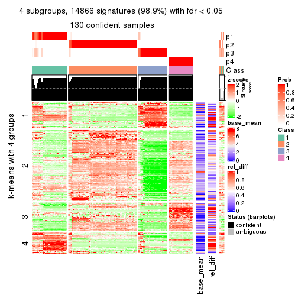
get_signatures(res, k = 5)
get_signatures(res, k = 6)

Signature heatmaps where rows are not scaled:
get_signatures(res, k = 2, scale_rows = FALSE)
get_signatures(res, k = 3, scale_rows = FALSE)
get_signatures(res, k = 4, scale_rows = FALSE)
get_signatures(res, k = 5, scale_rows = FALSE)
get_signatures(res, k = 6, scale_rows = FALSE)
Compare the overlap of signatures from different k:
compare_signatures(res)
get_signature() returns a data frame invisibly. TO get the list of signatures, the function
call should be assigned to a variable explicitly. In following code, if plot argument is set
to FALSE, no heatmap is plotted while only the differential analysis is performed.
# code only for demonstration
tb = get_signature(res, k = ..., plot = FALSE)
An example of the output of tb is:
#> which_row fdr mean_1 mean_2 scaled_mean_1 scaled_mean_2 km
#> 1 38 0.042760348 8.373488 9.131774 -0.5533452 0.5164555 1
#> 2 40 0.018707592 7.106213 8.469186 -0.6173731 0.5762149 1
#> 3 55 0.019134737 10.221463 11.207825 -0.6159697 0.5749050 1
#> 4 59 0.006059896 5.921854 7.869574 -0.6899429 0.6439467 1
#> 5 60 0.018055526 8.928898 10.211722 -0.6204761 0.5791110 1
#> 6 98 0.009384629 15.714769 14.887706 0.6635654 -0.6193277 2
...
The columns in tb are:
which_row: row indices corresponding to the input matrix.fdr: FDR for the differential test. mean_x: The mean value in group x.scaled_mean_x: The mean value in group x after rows are scaled.km: Row groups if k-means clustering is applied to rows.UMAP plot which shows how samples are separated.
dimension_reduction(res, k = 2, method = "UMAP")

dimension_reduction(res, k = 3, method = "UMAP")
dimension_reduction(res, k = 4, method = "UMAP")
dimension_reduction(res, k = 5, method = "UMAP")
dimension_reduction(res, k = 6, method = "UMAP")
Following heatmap shows how subgroups are split when increasing k:
collect_classes(res)
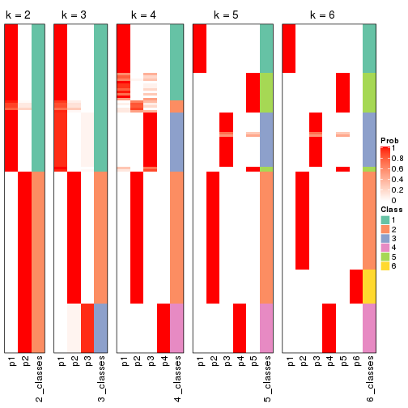
If matrix rows can be associated to genes, consider to use GO_Enrichment(res,
...) to perform function enrichment for the signature genes.
The object with results only for a single top-value method and a single partition method can be extracted as:
res = res_list["CV", "mclust"]
# you can also extract it by
# res = res_list["CV:mclust"]
A summary of res and all the functions that can be applied to it:
res
#> A 'ConsensusPartition' object with k = 2, 3, 4, 5, 6.
#> On a matrix with 15028 rows and 134 columns.
#> Top rows (1000, 2000, 3000, 4000, 5000) are extracted by 'CV' method.
#> Subgroups are detected by 'mclust' method.
#> Performed in total 1250 partitions by row resampling.
#> Best k for subgroups seems to be 6.
#>
#> Following methods can be applied to this 'ConsensusPartition' object:
#> [1] "cola_report" "collect_classes" "collect_plots"
#> [4] "collect_stats" "colnames" "compare_signatures"
#> [7] "consensus_heatmap" "dimension_reduction" "functional_enrichment"
#> [10] "get_anno_col" "get_anno" "get_classes"
#> [13] "get_consensus" "get_matrix" "get_membership"
#> [16] "get_param" "get_signatures" "get_stats"
#> [19] "is_best_k" "is_stable_k" "membership_heatmap"
#> [22] "ncol" "nrow" "plot_ecdf"
#> [25] "rownames" "select_partition_number" "show"
#> [28] "suggest_best_k" "test_to_known_factors"
collect_plots() function collects all the plots made from res for all k (number of partitions)
into one single page to provide an easy and fast comparison between different k.
collect_plots(res)
The plots are:
k and the heatmap of
predicted classes for each k.k.k.k.All the plots in panels can be made by individual functions and they are plotted later in this section.
select_partition_number() produces several plots showing different
statistics for choosing “optimized” k. There are following statistics:
k;k, the area increased is defined as \(A_k - A_{k-1}\).The detailed explanations of these statistics can be found in the cola vignette.
Generally speaking, lower PAC score, higher mean silhouette score or higher
concordance corresponds to better partition. Rand index and Jaccard index
measure how similar the current partition is compared to partition with k-1.
If they are too similar, we won't accept k is better than k-1.
select_partition_number(res)
The numeric values for all these statistics can be obtained by get_stats().
get_stats(res)
#> k 1-PAC mean_silhouette concordance area_increased Rand Jaccard
#> 2 2 0.695 0.917 0.945 0.4865 0.502 0.502
#> 3 3 0.788 0.839 0.928 0.2518 0.873 0.753
#> 4 4 0.764 0.886 0.930 0.1611 0.795 0.542
#> 5 5 0.896 0.898 0.955 0.0827 0.940 0.796
#> 6 6 0.916 0.929 0.932 0.0543 0.932 0.719
suggest_best_k() suggests the best \(k\) based on these statistics. The rules are as follows:
NA.suggest_best_k(res)
#> [1] 6
Following shows the table of the partitions (You need to click the show/hide
code output link to see it). The membership matrix (columns with name p*)
is inferred by
clue::cl_consensus()
function with the SE method. Basically the value in the membership matrix
represents the probability to belong to a certain group. The finall class
label for an item is determined with the group with highest probability it
belongs to.
In get_classes() function, the entropy is calculated from the membership
matrix and the silhouette score is calculated from the consensus matrix.
cbind(get_classes(res, k = 2), get_membership(res, k = 2))
#> class entropy silhouette p1 p2
#> SRR1550981 2 0.722 0.806 0.200 0.800
#> SRR1550982 2 0.722 0.806 0.200 0.800
#> SRR1550983 2 0.722 0.806 0.200 0.800
#> SRR1550984 2 0.722 0.806 0.200 0.800
#> SRR1550986 1 0.358 0.941 0.932 0.068
#> SRR1550985 2 0.722 0.806 0.200 0.800
#> SRR1550988 1 0.118 0.949 0.984 0.016
#> SRR1550987 1 0.327 0.945 0.940 0.060
#> SRR1550989 2 0.000 0.933 0.000 1.000
#> SRR1550990 2 0.000 0.933 0.000 1.000
#> SRR1550991 2 0.000 0.933 0.000 1.000
#> SRR1550992 1 0.358 0.941 0.932 0.068
#> SRR1550994 1 0.118 0.949 0.984 0.016
#> SRR1550993 1 0.327 0.945 0.940 0.060
#> SRR1550995 2 0.000 0.933 0.000 1.000
#> SRR1550996 2 0.000 0.933 0.000 1.000
#> SRR1550997 1 0.358 0.941 0.932 0.068
#> SRR1550998 1 0.327 0.945 0.940 0.060
#> SRR1551000 2 0.000 0.933 0.000 1.000
#> SRR1550999 1 0.118 0.949 0.984 0.016
#> SRR1551001 2 0.000 0.933 0.000 1.000
#> SRR1551002 1 0.358 0.941 0.932 0.068
#> SRR1551003 1 0.327 0.945 0.940 0.060
#> SRR1551004 1 0.118 0.949 0.984 0.016
#> SRR1551006 2 0.000 0.933 0.000 1.000
#> SRR1551005 2 0.000 0.933 0.000 1.000
#> SRR1551007 2 0.000 0.933 0.000 1.000
#> SRR1551008 1 0.358 0.941 0.932 0.068
#> SRR1551009 1 0.327 0.945 0.940 0.060
#> SRR1551010 1 0.118 0.949 0.984 0.016
#> SRR1551012 2 0.000 0.933 0.000 1.000
#> SRR1551011 2 0.000 0.933 0.000 1.000
#> SRR1551013 1 0.358 0.941 0.932 0.068
#> SRR1551014 1 0.327 0.945 0.940 0.060
#> SRR1551015 1 0.118 0.949 0.984 0.016
#> SRR1551016 2 0.000 0.933 0.000 1.000
#> SRR1551017 2 0.000 0.933 0.000 1.000
#> SRR1551018 2 0.000 0.933 0.000 1.000
#> SRR1551019 2 0.722 0.806 0.200 0.800
#> SRR1551021 1 0.327 0.945 0.940 0.060
#> SRR1551022 1 0.118 0.949 0.984 0.016
#> SRR1551023 2 0.541 0.859 0.124 0.876
#> SRR1551020 1 0.358 0.941 0.932 0.068
#> SRR1551024 2 0.714 0.808 0.196 0.804
#> SRR1551026 1 0.358 0.941 0.932 0.068
#> SRR1551025 2 0.827 0.743 0.260 0.740
#> SRR1551027 1 0.327 0.945 0.940 0.060
#> SRR1551028 1 0.118 0.949 0.984 0.016
#> SRR1551029 2 0.000 0.933 0.000 1.000
#> SRR1551030 2 0.000 0.933 0.000 1.000
#> SRR1551031 2 0.000 0.933 0.000 1.000
#> SRR1551032 2 0.827 0.743 0.260 0.740
#> SRR1551034 1 0.327 0.945 0.940 0.060
#> SRR1551033 1 0.358 0.941 0.932 0.068
#> SRR1551035 1 0.118 0.949 0.984 0.016
#> SRR1551036 2 0.000 0.933 0.000 1.000
#> SRR1551037 2 0.000 0.933 0.000 1.000
#> SRR1551038 2 0.000 0.933 0.000 1.000
#> SRR1551039 2 0.722 0.806 0.200 0.800
#> SRR1551040 1 0.358 0.941 0.932 0.068
#> SRR1551041 1 0.327 0.945 0.940 0.060
#> SRR1551042 1 0.118 0.949 0.984 0.016
#> SRR1551043 2 0.000 0.933 0.000 1.000
#> SRR1551044 2 0.000 0.933 0.000 1.000
#> SRR1551045 2 0.000 0.933 0.000 1.000
#> SRR1551046 2 0.722 0.806 0.200 0.800
#> SRR1551047 1 0.358 0.941 0.932 0.068
#> SRR1551048 1 0.327 0.945 0.940 0.060
#> SRR1551049 1 0.118 0.949 0.984 0.016
#> SRR1551050 2 0.000 0.933 0.000 1.000
#> SRR1551051 2 0.000 0.933 0.000 1.000
#> SRR1551052 2 0.000 0.933 0.000 1.000
#> SRR1551053 2 0.722 0.806 0.200 0.800
#> SRR1551054 1 0.358 0.941 0.932 0.068
#> SRR1551055 1 0.327 0.945 0.940 0.060
#> SRR1551056 1 0.118 0.949 0.984 0.016
#> SRR1551057 2 0.000 0.933 0.000 1.000
#> SRR1551058 2 0.000 0.933 0.000 1.000
#> SRR1551059 2 0.000 0.933 0.000 1.000
#> SRR1551060 2 0.722 0.806 0.200 0.800
#> SRR1551061 1 0.358 0.941 0.932 0.068
#> SRR1551062 1 0.327 0.945 0.940 0.060
#> SRR1551063 1 0.118 0.949 0.984 0.016
#> SRR1551064 2 0.000 0.933 0.000 1.000
#> SRR1551065 2 0.000 0.933 0.000 1.000
#> SRR1551066 2 0.000 0.933 0.000 1.000
#> SRR1551067 2 0.722 0.806 0.200 0.800
#> SRR1551068 1 0.358 0.941 0.932 0.068
#> SRR1551069 1 0.327 0.945 0.940 0.060
#> SRR1551070 1 0.118 0.949 0.984 0.016
#> SRR1551071 2 0.000 0.933 0.000 1.000
#> SRR1551072 2 0.000 0.933 0.000 1.000
#> SRR1551073 2 0.000 0.933 0.000 1.000
#> SRR1551074 2 0.722 0.806 0.200 0.800
#> SRR1551075 1 0.358 0.941 0.932 0.068
#> SRR1551076 1 0.327 0.945 0.940 0.060
#> SRR1551077 1 0.118 0.949 0.984 0.016
#> SRR1551078 2 0.000 0.933 0.000 1.000
#> SRR1551079 2 0.000 0.933 0.000 1.000
#> SRR1551080 2 0.000 0.933 0.000 1.000
#> SRR1551081 2 0.722 0.806 0.200 0.800
#> SRR1551082 1 0.358 0.941 0.932 0.068
#> SRR1551083 1 0.327 0.945 0.940 0.060
#> SRR1551084 1 0.118 0.949 0.984 0.016
#> SRR1551085 2 0.000 0.933 0.000 1.000
#> SRR1551086 2 0.000 0.933 0.000 1.000
#> SRR1551088 1 0.358 0.941 0.932 0.068
#> SRR1551087 2 0.722 0.806 0.200 0.800
#> SRR1551089 1 0.327 0.945 0.940 0.060
#> SRR1551090 1 0.118 0.949 0.984 0.016
#> SRR1551091 2 0.000 0.933 0.000 1.000
#> SRR1551092 2 0.000 0.933 0.000 1.000
#> SRR1551093 2 0.000 0.933 0.000 1.000
#> SRR1551094 2 0.722 0.806 0.200 0.800
#> SRR1551095 1 0.358 0.941 0.932 0.068
#> SRR1551096 1 0.327 0.945 0.940 0.060
#> SRR1551097 1 0.118 0.949 0.984 0.016
#> SRR1551098 2 0.000 0.933 0.000 1.000
#> SRR1551099 2 0.000 0.933 0.000 1.000
#> SRR1551101 1 0.358 0.941 0.932 0.068
#> SRR1551100 2 0.722 0.806 0.200 0.800
#> SRR1551102 1 0.327 0.945 0.940 0.060
#> SRR1551103 1 0.118 0.949 0.984 0.016
#> SRR1551104 2 0.000 0.933 0.000 1.000
#> SRR1551105 2 0.000 0.933 0.000 1.000
#> SRR1551106 2 0.000 0.933 0.000 1.000
#> SRR1551107 2 0.722 0.806 0.200 0.800
#> SRR1551108 1 0.358 0.941 0.932 0.068
#> SRR1551109 1 0.327 0.945 0.940 0.060
#> SRR1551110 1 0.118 0.949 0.984 0.016
#> SRR1551111 2 0.000 0.933 0.000 1.000
#> SRR1551112 2 0.000 0.933 0.000 1.000
#> SRR1551113 2 0.000 0.933 0.000 1.000
#> SRR1551114 2 0.722 0.806 0.200 0.800
cbind(get_classes(res, k = 3), get_membership(res, k = 3))
#> class entropy silhouette p1 p2 p3
#> SRR1550981 2 0.6676 0.316 0.476 0.516 0.008
#> SRR1550982 2 0.6819 0.311 0.476 0.512 0.012
#> SRR1550983 2 0.6819 0.311 0.476 0.512 0.012
#> SRR1550984 2 0.6676 0.316 0.476 0.516 0.008
#> SRR1550986 1 0.0000 0.990 1.000 0.000 0.000
#> SRR1550985 2 0.6676 0.316 0.476 0.516 0.008
#> SRR1550988 3 0.0000 1.000 0.000 0.000 1.000
#> SRR1550987 1 0.0237 0.990 0.996 0.000 0.004
#> SRR1550989 2 0.0000 0.844 0.000 1.000 0.000
#> SRR1550990 2 0.0000 0.844 0.000 1.000 0.000
#> SRR1550991 2 0.0892 0.841 0.020 0.980 0.000
#> SRR1550992 1 0.0000 0.990 1.000 0.000 0.000
#> SRR1550994 3 0.0000 1.000 0.000 0.000 1.000
#> SRR1550993 1 0.0237 0.990 0.996 0.000 0.004
#> SRR1550995 2 0.0000 0.844 0.000 1.000 0.000
#> SRR1550996 2 0.0592 0.842 0.012 0.988 0.000
#> SRR1550997 1 0.0000 0.990 1.000 0.000 0.000
#> SRR1550998 1 0.0237 0.990 0.996 0.000 0.004
#> SRR1551000 2 0.0000 0.844 0.000 1.000 0.000
#> SRR1550999 3 0.0000 1.000 0.000 0.000 1.000
#> SRR1551001 2 0.0000 0.844 0.000 1.000 0.000
#> SRR1551002 1 0.0000 0.990 1.000 0.000 0.000
#> SRR1551003 1 0.0237 0.990 0.996 0.000 0.004
#> SRR1551004 3 0.0000 1.000 0.000 0.000 1.000
#> SRR1551006 2 0.0000 0.844 0.000 1.000 0.000
#> SRR1551005 2 0.0000 0.844 0.000 1.000 0.000
#> SRR1551007 2 0.0892 0.841 0.020 0.980 0.000
#> SRR1551008 1 0.0000 0.990 1.000 0.000 0.000
#> SRR1551009 1 0.0237 0.990 0.996 0.000 0.004
#> SRR1551010 3 0.0000 1.000 0.000 0.000 1.000
#> SRR1551012 2 0.0000 0.844 0.000 1.000 0.000
#> SRR1551011 2 0.0000 0.844 0.000 1.000 0.000
#> SRR1551013 1 0.0000 0.990 1.000 0.000 0.000
#> SRR1551014 1 0.0237 0.990 0.996 0.000 0.004
#> SRR1551015 3 0.0237 0.996 0.004 0.000 0.996
#> SRR1551016 2 0.0000 0.844 0.000 1.000 0.000
#> SRR1551017 2 0.0747 0.841 0.016 0.984 0.000
#> SRR1551018 2 0.0892 0.841 0.020 0.980 0.000
#> SRR1551019 1 0.6793 0.565 0.672 0.036 0.292
#> SRR1551021 1 0.0237 0.990 0.996 0.000 0.004
#> SRR1551022 3 0.0237 0.996 0.004 0.000 0.996
#> SRR1551023 2 0.3412 0.770 0.124 0.876 0.000
#> SRR1551020 1 0.0000 0.990 1.000 0.000 0.000
#> SRR1551024 2 0.6274 0.360 0.456 0.544 0.000
#> SRR1551026 1 0.0000 0.990 1.000 0.000 0.000
#> SRR1551025 1 0.0000 0.990 1.000 0.000 0.000
#> SRR1551027 1 0.0237 0.990 0.996 0.000 0.004
#> SRR1551028 3 0.0000 1.000 0.000 0.000 1.000
#> SRR1551029 2 0.0000 0.844 0.000 1.000 0.000
#> SRR1551030 2 0.0000 0.844 0.000 1.000 0.000
#> SRR1551031 2 0.0892 0.841 0.020 0.980 0.000
#> SRR1551032 1 0.0000 0.990 1.000 0.000 0.000
#> SRR1551034 1 0.0237 0.990 0.996 0.000 0.004
#> SRR1551033 1 0.0000 0.990 1.000 0.000 0.000
#> SRR1551035 3 0.0000 1.000 0.000 0.000 1.000
#> SRR1551036 2 0.0000 0.844 0.000 1.000 0.000
#> SRR1551037 2 0.0000 0.844 0.000 1.000 0.000
#> SRR1551038 2 0.0892 0.841 0.020 0.980 0.000
#> SRR1551039 2 0.6819 0.311 0.476 0.512 0.012
#> SRR1551040 1 0.0237 0.988 0.996 0.000 0.004
#> SRR1551041 1 0.0237 0.990 0.996 0.000 0.004
#> SRR1551042 3 0.0000 1.000 0.000 0.000 1.000
#> SRR1551043 2 0.0000 0.844 0.000 1.000 0.000
#> SRR1551044 2 0.0000 0.844 0.000 1.000 0.000
#> SRR1551045 2 0.0892 0.841 0.020 0.980 0.000
#> SRR1551046 2 0.6819 0.311 0.476 0.512 0.012
#> SRR1551047 1 0.0000 0.990 1.000 0.000 0.000
#> SRR1551048 1 0.0237 0.990 0.996 0.000 0.004
#> SRR1551049 3 0.0000 1.000 0.000 0.000 1.000
#> SRR1551050 2 0.0000 0.844 0.000 1.000 0.000
#> SRR1551051 2 0.0000 0.844 0.000 1.000 0.000
#> SRR1551052 2 0.0892 0.841 0.020 0.980 0.000
#> SRR1551053 2 0.6676 0.316 0.476 0.516 0.008
#> SRR1551054 1 0.0000 0.990 1.000 0.000 0.000
#> SRR1551055 1 0.0237 0.990 0.996 0.000 0.004
#> SRR1551056 3 0.0000 1.000 0.000 0.000 1.000
#> SRR1551057 2 0.0000 0.844 0.000 1.000 0.000
#> SRR1551058 2 0.0000 0.844 0.000 1.000 0.000
#> SRR1551059 2 0.2356 0.810 0.072 0.928 0.000
#> SRR1551060 2 0.6676 0.316 0.476 0.516 0.008
#> SRR1551061 1 0.0000 0.990 1.000 0.000 0.000
#> SRR1551062 1 0.0237 0.990 0.996 0.000 0.004
#> SRR1551063 3 0.0000 1.000 0.000 0.000 1.000
#> SRR1551064 2 0.0000 0.844 0.000 1.000 0.000
#> SRR1551065 2 0.0000 0.844 0.000 1.000 0.000
#> SRR1551066 2 0.0892 0.841 0.020 0.980 0.000
#> SRR1551067 2 0.6819 0.311 0.476 0.512 0.012
#> SRR1551068 1 0.0000 0.990 1.000 0.000 0.000
#> SRR1551069 1 0.0237 0.990 0.996 0.000 0.004
#> SRR1551070 3 0.0000 1.000 0.000 0.000 1.000
#> SRR1551071 2 0.0000 0.844 0.000 1.000 0.000
#> SRR1551072 2 0.0000 0.844 0.000 1.000 0.000
#> SRR1551073 2 0.0892 0.841 0.020 0.980 0.000
#> SRR1551074 2 0.6676 0.316 0.476 0.516 0.008
#> SRR1551075 1 0.0000 0.990 1.000 0.000 0.000
#> SRR1551076 1 0.0237 0.990 0.996 0.000 0.004
#> SRR1551077 3 0.0000 1.000 0.000 0.000 1.000
#> SRR1551078 2 0.0000 0.844 0.000 1.000 0.000
#> SRR1551079 2 0.0000 0.844 0.000 1.000 0.000
#> SRR1551080 2 0.0892 0.841 0.020 0.980 0.000
#> SRR1551081 2 0.6676 0.316 0.476 0.516 0.008
#> SRR1551082 1 0.0000 0.990 1.000 0.000 0.000
#> SRR1551083 1 0.0237 0.990 0.996 0.000 0.004
#> SRR1551084 3 0.0000 1.000 0.000 0.000 1.000
#> SRR1551085 2 0.0000 0.844 0.000 1.000 0.000
#> SRR1551086 2 0.0000 0.844 0.000 1.000 0.000
#> SRR1551088 1 0.0000 0.990 1.000 0.000 0.000
#> SRR1551087 2 0.6819 0.311 0.476 0.512 0.012
#> SRR1551089 1 0.0237 0.990 0.996 0.000 0.004
#> SRR1551090 3 0.0000 1.000 0.000 0.000 1.000
#> SRR1551091 2 0.0000 0.844 0.000 1.000 0.000
#> SRR1551092 2 0.0000 0.844 0.000 1.000 0.000
#> SRR1551093 2 0.0892 0.841 0.020 0.980 0.000
#> SRR1551094 2 0.6819 0.311 0.476 0.512 0.012
#> SRR1551095 1 0.0000 0.990 1.000 0.000 0.000
#> SRR1551096 1 0.0237 0.990 0.996 0.000 0.004
#> SRR1551097 3 0.0000 1.000 0.000 0.000 1.000
#> SRR1551098 2 0.0000 0.844 0.000 1.000 0.000
#> SRR1551099 2 0.0000 0.844 0.000 1.000 0.000
#> SRR1551101 1 0.0000 0.990 1.000 0.000 0.000
#> SRR1551100 2 0.6676 0.316 0.476 0.516 0.008
#> SRR1551102 1 0.0237 0.990 0.996 0.000 0.004
#> SRR1551103 3 0.0000 1.000 0.000 0.000 1.000
#> SRR1551104 2 0.0000 0.844 0.000 1.000 0.000
#> SRR1551105 2 0.0000 0.844 0.000 1.000 0.000
#> SRR1551106 2 0.0892 0.841 0.020 0.980 0.000
#> SRR1551107 2 0.6819 0.311 0.476 0.512 0.012
#> SRR1551108 1 0.0000 0.990 1.000 0.000 0.000
#> SRR1551109 1 0.0237 0.990 0.996 0.000 0.004
#> SRR1551110 3 0.0000 1.000 0.000 0.000 1.000
#> SRR1551111 2 0.0000 0.844 0.000 1.000 0.000
#> SRR1551112 2 0.0000 0.844 0.000 1.000 0.000
#> SRR1551113 2 0.0892 0.841 0.020 0.980 0.000
#> SRR1551114 2 0.6819 0.311 0.476 0.512 0.012
cbind(get_classes(res, k = 4), get_membership(res, k = 4))
#> class entropy silhouette p1 p2 p3 p4
#> SRR1550981 1 0.4072 0.814 0.748 0.000 0.252 0.000
#> SRR1550982 1 0.3801 0.843 0.780 0.000 0.220 0.000
#> SRR1550983 1 0.3801 0.843 0.780 0.000 0.220 0.000
#> SRR1550984 1 0.3801 0.843 0.780 0.000 0.220 0.000
#> SRR1550986 3 0.0000 0.956 0.000 0.000 1.000 0.000
#> SRR1550985 1 0.3801 0.843 0.780 0.000 0.220 0.000
#> SRR1550988 4 0.0000 0.987 0.000 0.000 0.000 1.000
#> SRR1550987 1 0.0188 0.848 0.996 0.000 0.004 0.000
#> SRR1550989 2 0.0000 0.926 0.000 1.000 0.000 0.000
#> SRR1550990 2 0.0000 0.926 0.000 1.000 0.000 0.000
#> SRR1550991 2 0.3356 0.833 0.176 0.824 0.000 0.000
#> SRR1550992 3 0.0000 0.956 0.000 0.000 1.000 0.000
#> SRR1550994 4 0.0000 0.987 0.000 0.000 0.000 1.000
#> SRR1550993 1 0.0188 0.848 0.996 0.000 0.004 0.000
#> SRR1550995 2 0.0000 0.926 0.000 1.000 0.000 0.000
#> SRR1550996 2 0.4467 0.798 0.172 0.788 0.040 0.000
#> SRR1550997 3 0.0000 0.956 0.000 0.000 1.000 0.000
#> SRR1550998 1 0.0188 0.848 0.996 0.000 0.004 0.000
#> SRR1551000 2 0.0000 0.926 0.000 1.000 0.000 0.000
#> SRR1550999 4 0.0000 0.987 0.000 0.000 0.000 1.000
#> SRR1551001 2 0.0000 0.926 0.000 1.000 0.000 0.000
#> SRR1551002 3 0.0000 0.956 0.000 0.000 1.000 0.000
#> SRR1551003 1 0.0188 0.848 0.996 0.000 0.004 0.000
#> SRR1551004 4 0.0000 0.987 0.000 0.000 0.000 1.000
#> SRR1551006 2 0.0000 0.926 0.000 1.000 0.000 0.000
#> SRR1551005 2 0.0000 0.926 0.000 1.000 0.000 0.000
#> SRR1551007 2 0.3356 0.833 0.176 0.824 0.000 0.000
#> SRR1551008 3 0.0000 0.956 0.000 0.000 1.000 0.000
#> SRR1551009 1 0.0188 0.848 0.996 0.000 0.004 0.000
#> SRR1551010 4 0.0000 0.987 0.000 0.000 0.000 1.000
#> SRR1551012 2 0.0000 0.926 0.000 1.000 0.000 0.000
#> SRR1551011 2 0.0000 0.926 0.000 1.000 0.000 0.000
#> SRR1551013 3 0.0000 0.956 0.000 0.000 1.000 0.000
#> SRR1551014 1 0.0188 0.848 0.996 0.000 0.004 0.000
#> SRR1551015 4 0.3583 0.738 0.180 0.000 0.004 0.816
#> SRR1551016 2 0.0000 0.926 0.000 1.000 0.000 0.000
#> SRR1551017 2 0.3266 0.839 0.168 0.832 0.000 0.000
#> SRR1551018 2 0.3356 0.833 0.176 0.824 0.000 0.000
#> SRR1551019 1 0.4250 0.787 0.724 0.000 0.276 0.000
#> SRR1551021 1 0.3528 0.846 0.808 0.000 0.192 0.000
#> SRR1551022 4 0.0188 0.983 0.000 0.000 0.004 0.996
#> SRR1551023 2 0.6243 0.589 0.172 0.668 0.160 0.000
#> SRR1551020 3 0.4761 0.195 0.372 0.000 0.628 0.000
#> SRR1551024 1 0.6010 0.723 0.676 0.104 0.220 0.000
#> SRR1551026 3 0.4356 0.460 0.292 0.000 0.708 0.000
#> SRR1551025 1 0.4277 0.786 0.720 0.000 0.280 0.000
#> SRR1551027 1 0.0188 0.848 0.996 0.000 0.004 0.000
#> SRR1551028 4 0.0000 0.987 0.000 0.000 0.000 1.000
#> SRR1551029 2 0.0000 0.926 0.000 1.000 0.000 0.000
#> SRR1551030 2 0.0000 0.926 0.000 1.000 0.000 0.000
#> SRR1551031 2 0.3356 0.833 0.176 0.824 0.000 0.000
#> SRR1551032 1 0.4277 0.786 0.720 0.000 0.280 0.000
#> SRR1551034 1 0.0188 0.848 0.996 0.000 0.004 0.000
#> SRR1551033 3 0.0000 0.956 0.000 0.000 1.000 0.000
#> SRR1551035 4 0.0000 0.987 0.000 0.000 0.000 1.000
#> SRR1551036 2 0.0000 0.926 0.000 1.000 0.000 0.000
#> SRR1551037 2 0.0000 0.926 0.000 1.000 0.000 0.000
#> SRR1551038 2 0.3356 0.833 0.176 0.824 0.000 0.000
#> SRR1551039 1 0.3801 0.843 0.780 0.000 0.220 0.000
#> SRR1551040 3 0.0000 0.956 0.000 0.000 1.000 0.000
#> SRR1551041 1 0.0188 0.848 0.996 0.000 0.004 0.000
#> SRR1551042 4 0.0000 0.987 0.000 0.000 0.000 1.000
#> SRR1551043 2 0.0000 0.926 0.000 1.000 0.000 0.000
#> SRR1551044 2 0.0000 0.926 0.000 1.000 0.000 0.000
#> SRR1551045 2 0.3356 0.833 0.176 0.824 0.000 0.000
#> SRR1551046 1 0.3801 0.843 0.780 0.000 0.220 0.000
#> SRR1551047 3 0.0000 0.956 0.000 0.000 1.000 0.000
#> SRR1551048 1 0.0188 0.848 0.996 0.000 0.004 0.000
#> SRR1551049 4 0.0000 0.987 0.000 0.000 0.000 1.000
#> SRR1551050 2 0.0000 0.926 0.000 1.000 0.000 0.000
#> SRR1551051 2 0.0000 0.926 0.000 1.000 0.000 0.000
#> SRR1551052 2 0.3356 0.833 0.176 0.824 0.000 0.000
#> SRR1551053 1 0.3801 0.843 0.780 0.000 0.220 0.000
#> SRR1551054 3 0.0000 0.956 0.000 0.000 1.000 0.000
#> SRR1551055 1 0.0188 0.848 0.996 0.000 0.004 0.000
#> SRR1551056 4 0.0000 0.987 0.000 0.000 0.000 1.000
#> SRR1551057 2 0.0000 0.926 0.000 1.000 0.000 0.000
#> SRR1551058 2 0.0000 0.926 0.000 1.000 0.000 0.000
#> SRR1551059 2 0.5608 0.641 0.256 0.684 0.060 0.000
#> SRR1551060 1 0.3801 0.843 0.780 0.000 0.220 0.000
#> SRR1551061 3 0.0000 0.956 0.000 0.000 1.000 0.000
#> SRR1551062 1 0.0188 0.848 0.996 0.000 0.004 0.000
#> SRR1551063 4 0.0000 0.987 0.000 0.000 0.000 1.000
#> SRR1551064 2 0.0000 0.926 0.000 1.000 0.000 0.000
#> SRR1551065 2 0.0000 0.926 0.000 1.000 0.000 0.000
#> SRR1551066 2 0.3356 0.833 0.176 0.824 0.000 0.000
#> SRR1551067 1 0.3801 0.843 0.780 0.000 0.220 0.000
#> SRR1551068 3 0.0000 0.956 0.000 0.000 1.000 0.000
#> SRR1551069 1 0.0188 0.848 0.996 0.000 0.004 0.000
#> SRR1551070 4 0.0000 0.987 0.000 0.000 0.000 1.000
#> SRR1551071 2 0.0000 0.926 0.000 1.000 0.000 0.000
#> SRR1551072 2 0.0000 0.926 0.000 1.000 0.000 0.000
#> SRR1551073 2 0.3356 0.833 0.176 0.824 0.000 0.000
#> SRR1551074 1 0.4008 0.822 0.756 0.000 0.244 0.000
#> SRR1551075 3 0.0000 0.956 0.000 0.000 1.000 0.000
#> SRR1551076 1 0.0188 0.848 0.996 0.000 0.004 0.000
#> SRR1551077 4 0.0000 0.987 0.000 0.000 0.000 1.000
#> SRR1551078 2 0.0000 0.926 0.000 1.000 0.000 0.000
#> SRR1551079 2 0.0000 0.926 0.000 1.000 0.000 0.000
#> SRR1551080 2 0.3356 0.833 0.176 0.824 0.000 0.000
#> SRR1551081 1 0.3801 0.843 0.780 0.000 0.220 0.000
#> SRR1551082 3 0.0000 0.956 0.000 0.000 1.000 0.000
#> SRR1551083 1 0.0188 0.848 0.996 0.000 0.004 0.000
#> SRR1551084 4 0.0000 0.987 0.000 0.000 0.000 1.000
#> SRR1551085 2 0.0000 0.926 0.000 1.000 0.000 0.000
#> SRR1551086 2 0.0000 0.926 0.000 1.000 0.000 0.000
#> SRR1551088 3 0.0000 0.956 0.000 0.000 1.000 0.000
#> SRR1551087 1 0.3801 0.843 0.780 0.000 0.220 0.000
#> SRR1551089 1 0.0188 0.848 0.996 0.000 0.004 0.000
#> SRR1551090 4 0.0000 0.987 0.000 0.000 0.000 1.000
#> SRR1551091 2 0.0000 0.926 0.000 1.000 0.000 0.000
#> SRR1551092 2 0.0000 0.926 0.000 1.000 0.000 0.000
#> SRR1551093 2 0.3356 0.833 0.176 0.824 0.000 0.000
#> SRR1551094 1 0.3801 0.843 0.780 0.000 0.220 0.000
#> SRR1551095 3 0.0000 0.956 0.000 0.000 1.000 0.000
#> SRR1551096 1 0.0188 0.848 0.996 0.000 0.004 0.000
#> SRR1551097 4 0.0000 0.987 0.000 0.000 0.000 1.000
#> SRR1551098 2 0.0000 0.926 0.000 1.000 0.000 0.000
#> SRR1551099 2 0.0000 0.926 0.000 1.000 0.000 0.000
#> SRR1551101 3 0.0000 0.956 0.000 0.000 1.000 0.000
#> SRR1551100 1 0.3801 0.843 0.780 0.000 0.220 0.000
#> SRR1551102 1 0.0188 0.848 0.996 0.000 0.004 0.000
#> SRR1551103 4 0.0000 0.987 0.000 0.000 0.000 1.000
#> SRR1551104 2 0.0000 0.926 0.000 1.000 0.000 0.000
#> SRR1551105 2 0.0000 0.926 0.000 1.000 0.000 0.000
#> SRR1551106 2 0.3356 0.833 0.176 0.824 0.000 0.000
#> SRR1551107 1 0.3801 0.843 0.780 0.000 0.220 0.000
#> SRR1551108 3 0.0000 0.956 0.000 0.000 1.000 0.000
#> SRR1551109 1 0.0188 0.848 0.996 0.000 0.004 0.000
#> SRR1551110 4 0.0000 0.987 0.000 0.000 0.000 1.000
#> SRR1551111 2 0.0000 0.926 0.000 1.000 0.000 0.000
#> SRR1551112 2 0.0000 0.926 0.000 1.000 0.000 0.000
#> SRR1551113 2 0.3356 0.833 0.176 0.824 0.000 0.000
#> SRR1551114 1 0.3801 0.843 0.780 0.000 0.220 0.000
cbind(get_classes(res, k = 5), get_membership(res, k = 5))
#> class entropy silhouette p1 p2 p3 p4 p5
#> SRR1550981 5 0.0000 0.941 0.000 0.000 0.000 0.000 1.000
#> SRR1550982 5 0.0000 0.941 0.000 0.000 0.000 0.000 1.000
#> SRR1550983 5 0.0000 0.941 0.000 0.000 0.000 0.000 1.000
#> SRR1550984 5 0.0000 0.941 0.000 0.000 0.000 0.000 1.000
#> SRR1550986 3 0.0000 0.972 0.000 0.000 1.000 0.000 0.000
#> SRR1550985 5 0.0000 0.941 0.000 0.000 0.000 0.000 1.000
#> SRR1550988 4 0.0000 0.985 0.000 0.000 0.000 1.000 0.000
#> SRR1550987 1 0.0000 0.979 1.000 0.000 0.000 0.000 0.000
#> SRR1550989 2 0.0000 0.913 0.000 1.000 0.000 0.000 0.000
#> SRR1550990 2 0.0000 0.913 0.000 1.000 0.000 0.000 0.000
#> SRR1550991 2 0.3395 0.756 0.000 0.764 0.000 0.000 0.236
#> SRR1550992 3 0.0000 0.972 0.000 0.000 1.000 0.000 0.000
#> SRR1550994 4 0.0000 0.985 0.000 0.000 0.000 1.000 0.000
#> SRR1550993 1 0.0000 0.979 1.000 0.000 0.000 0.000 0.000
#> SRR1550995 2 0.0000 0.913 0.000 1.000 0.000 0.000 0.000
#> SRR1550996 2 0.4150 0.470 0.000 0.612 0.000 0.000 0.388
#> SRR1550997 3 0.0000 0.972 0.000 0.000 1.000 0.000 0.000
#> SRR1550998 1 0.0000 0.979 1.000 0.000 0.000 0.000 0.000
#> SRR1551000 2 0.0000 0.913 0.000 1.000 0.000 0.000 0.000
#> SRR1550999 4 0.0000 0.985 0.000 0.000 0.000 1.000 0.000
#> SRR1551001 2 0.0000 0.913 0.000 1.000 0.000 0.000 0.000
#> SRR1551002 3 0.0000 0.972 0.000 0.000 1.000 0.000 0.000
#> SRR1551003 1 0.0000 0.979 1.000 0.000 0.000 0.000 0.000
#> SRR1551004 4 0.0000 0.985 0.000 0.000 0.000 1.000 0.000
#> SRR1551006 2 0.0000 0.913 0.000 1.000 0.000 0.000 0.000
#> SRR1551005 2 0.0000 0.913 0.000 1.000 0.000 0.000 0.000
#> SRR1551007 2 0.3395 0.756 0.000 0.764 0.000 0.000 0.236
#> SRR1551008 3 0.0000 0.972 0.000 0.000 1.000 0.000 0.000
#> SRR1551009 1 0.0000 0.979 1.000 0.000 0.000 0.000 0.000
#> SRR1551010 4 0.0000 0.985 0.000 0.000 0.000 1.000 0.000
#> SRR1551012 2 0.0000 0.913 0.000 1.000 0.000 0.000 0.000
#> SRR1551011 2 0.0000 0.913 0.000 1.000 0.000 0.000 0.000
#> SRR1551013 3 0.0162 0.969 0.000 0.000 0.996 0.000 0.004
#> SRR1551014 1 0.0000 0.979 1.000 0.000 0.000 0.000 0.000
#> SRR1551015 4 0.3480 0.647 0.000 0.000 0.000 0.752 0.248
#> SRR1551016 2 0.0000 0.913 0.000 1.000 0.000 0.000 0.000
#> SRR1551017 2 0.2605 0.824 0.000 0.852 0.000 0.000 0.148
#> SRR1551018 2 0.3395 0.756 0.000 0.764 0.000 0.000 0.236
#> SRR1551019 5 0.0000 0.941 0.000 0.000 0.000 0.000 1.000
#> SRR1551021 1 0.4114 0.400 0.624 0.000 0.000 0.000 0.376
#> SRR1551022 4 0.0162 0.981 0.000 0.000 0.000 0.996 0.004
#> SRR1551023 2 0.4030 0.410 0.000 0.648 0.000 0.000 0.352
#> SRR1551020 5 0.3913 0.440 0.000 0.000 0.324 0.000 0.676
#> SRR1551024 5 0.3561 0.572 0.000 0.260 0.000 0.000 0.740
#> SRR1551026 3 0.4278 0.194 0.000 0.000 0.548 0.000 0.452
#> SRR1551025 5 0.0000 0.941 0.000 0.000 0.000 0.000 1.000
#> SRR1551027 1 0.0000 0.979 1.000 0.000 0.000 0.000 0.000
#> SRR1551028 4 0.0000 0.985 0.000 0.000 0.000 1.000 0.000
#> SRR1551029 2 0.0000 0.913 0.000 1.000 0.000 0.000 0.000
#> SRR1551030 2 0.0000 0.913 0.000 1.000 0.000 0.000 0.000
#> SRR1551031 2 0.3395 0.756 0.000 0.764 0.000 0.000 0.236
#> SRR1551032 5 0.0000 0.941 0.000 0.000 0.000 0.000 1.000
#> SRR1551034 1 0.0000 0.979 1.000 0.000 0.000 0.000 0.000
#> SRR1551033 3 0.0000 0.972 0.000 0.000 1.000 0.000 0.000
#> SRR1551035 4 0.0000 0.985 0.000 0.000 0.000 1.000 0.000
#> SRR1551036 2 0.0000 0.913 0.000 1.000 0.000 0.000 0.000
#> SRR1551037 2 0.0000 0.913 0.000 1.000 0.000 0.000 0.000
#> SRR1551038 2 0.3395 0.756 0.000 0.764 0.000 0.000 0.236
#> SRR1551039 5 0.0000 0.941 0.000 0.000 0.000 0.000 1.000
#> SRR1551040 3 0.0000 0.972 0.000 0.000 1.000 0.000 0.000
#> SRR1551041 1 0.0000 0.979 1.000 0.000 0.000 0.000 0.000
#> SRR1551042 4 0.0000 0.985 0.000 0.000 0.000 1.000 0.000
#> SRR1551043 2 0.0000 0.913 0.000 1.000 0.000 0.000 0.000
#> SRR1551044 2 0.0000 0.913 0.000 1.000 0.000 0.000 0.000
#> SRR1551045 2 0.3395 0.756 0.000 0.764 0.000 0.000 0.236
#> SRR1551046 5 0.0000 0.941 0.000 0.000 0.000 0.000 1.000
#> SRR1551047 3 0.0000 0.972 0.000 0.000 1.000 0.000 0.000
#> SRR1551048 1 0.0000 0.979 1.000 0.000 0.000 0.000 0.000
#> SRR1551049 4 0.0000 0.985 0.000 0.000 0.000 1.000 0.000
#> SRR1551050 2 0.0000 0.913 0.000 1.000 0.000 0.000 0.000
#> SRR1551051 2 0.0000 0.913 0.000 1.000 0.000 0.000 0.000
#> SRR1551052 2 0.3395 0.756 0.000 0.764 0.000 0.000 0.236
#> SRR1551053 5 0.0000 0.941 0.000 0.000 0.000 0.000 1.000
#> SRR1551054 3 0.0000 0.972 0.000 0.000 1.000 0.000 0.000
#> SRR1551055 1 0.0000 0.979 1.000 0.000 0.000 0.000 0.000
#> SRR1551056 4 0.0000 0.985 0.000 0.000 0.000 1.000 0.000
#> SRR1551057 2 0.0000 0.913 0.000 1.000 0.000 0.000 0.000
#> SRR1551058 2 0.0000 0.913 0.000 1.000 0.000 0.000 0.000
#> SRR1551059 5 0.4219 0.125 0.000 0.416 0.000 0.000 0.584
#> SRR1551060 5 0.0000 0.941 0.000 0.000 0.000 0.000 1.000
#> SRR1551061 3 0.0000 0.972 0.000 0.000 1.000 0.000 0.000
#> SRR1551062 1 0.0000 0.979 1.000 0.000 0.000 0.000 0.000
#> SRR1551063 4 0.0000 0.985 0.000 0.000 0.000 1.000 0.000
#> SRR1551064 2 0.0000 0.913 0.000 1.000 0.000 0.000 0.000
#> SRR1551065 2 0.0000 0.913 0.000 1.000 0.000 0.000 0.000
#> SRR1551066 2 0.3395 0.756 0.000 0.764 0.000 0.000 0.236
#> SRR1551067 5 0.0000 0.941 0.000 0.000 0.000 0.000 1.000
#> SRR1551068 3 0.0609 0.955 0.000 0.000 0.980 0.000 0.020
#> SRR1551069 1 0.0000 0.979 1.000 0.000 0.000 0.000 0.000
#> SRR1551070 4 0.0000 0.985 0.000 0.000 0.000 1.000 0.000
#> SRR1551071 2 0.0000 0.913 0.000 1.000 0.000 0.000 0.000
#> SRR1551072 2 0.0000 0.913 0.000 1.000 0.000 0.000 0.000
#> SRR1551073 2 0.3395 0.756 0.000 0.764 0.000 0.000 0.236
#> SRR1551074 5 0.0000 0.941 0.000 0.000 0.000 0.000 1.000
#> SRR1551075 3 0.0000 0.972 0.000 0.000 1.000 0.000 0.000
#> SRR1551076 1 0.0000 0.979 1.000 0.000 0.000 0.000 0.000
#> SRR1551077 4 0.0000 0.985 0.000 0.000 0.000 1.000 0.000
#> SRR1551078 2 0.0000 0.913 0.000 1.000 0.000 0.000 0.000
#> SRR1551079 2 0.0000 0.913 0.000 1.000 0.000 0.000 0.000
#> SRR1551080 2 0.3395 0.756 0.000 0.764 0.000 0.000 0.236
#> SRR1551081 5 0.0000 0.941 0.000 0.000 0.000 0.000 1.000
#> SRR1551082 3 0.0000 0.972 0.000 0.000 1.000 0.000 0.000
#> SRR1551083 1 0.0000 0.979 1.000 0.000 0.000 0.000 0.000
#> SRR1551084 4 0.0000 0.985 0.000 0.000 0.000 1.000 0.000
#> SRR1551085 2 0.0000 0.913 0.000 1.000 0.000 0.000 0.000
#> SRR1551086 2 0.0000 0.913 0.000 1.000 0.000 0.000 0.000
#> SRR1551088 3 0.0000 0.972 0.000 0.000 1.000 0.000 0.000
#> SRR1551087 5 0.0000 0.941 0.000 0.000 0.000 0.000 1.000
#> SRR1551089 1 0.0000 0.979 1.000 0.000 0.000 0.000 0.000
#> SRR1551090 4 0.0000 0.985 0.000 0.000 0.000 1.000 0.000
#> SRR1551091 2 0.0000 0.913 0.000 1.000 0.000 0.000 0.000
#> SRR1551092 2 0.0000 0.913 0.000 1.000 0.000 0.000 0.000
#> SRR1551093 2 0.3395 0.756 0.000 0.764 0.000 0.000 0.236
#> SRR1551094 5 0.0000 0.941 0.000 0.000 0.000 0.000 1.000
#> SRR1551095 3 0.0000 0.972 0.000 0.000 1.000 0.000 0.000
#> SRR1551096 1 0.0000 0.979 1.000 0.000 0.000 0.000 0.000
#> SRR1551097 4 0.0000 0.985 0.000 0.000 0.000 1.000 0.000
#> SRR1551098 2 0.0000 0.913 0.000 1.000 0.000 0.000 0.000
#> SRR1551099 2 0.0000 0.913 0.000 1.000 0.000 0.000 0.000
#> SRR1551101 3 0.0000 0.972 0.000 0.000 1.000 0.000 0.000
#> SRR1551100 5 0.0000 0.941 0.000 0.000 0.000 0.000 1.000
#> SRR1551102 1 0.0000 0.979 1.000 0.000 0.000 0.000 0.000
#> SRR1551103 4 0.0000 0.985 0.000 0.000 0.000 1.000 0.000
#> SRR1551104 2 0.0000 0.913 0.000 1.000 0.000 0.000 0.000
#> SRR1551105 2 0.0000 0.913 0.000 1.000 0.000 0.000 0.000
#> SRR1551106 2 0.3395 0.756 0.000 0.764 0.000 0.000 0.236
#> SRR1551107 5 0.0000 0.941 0.000 0.000 0.000 0.000 1.000
#> SRR1551108 3 0.0000 0.972 0.000 0.000 1.000 0.000 0.000
#> SRR1551109 1 0.0000 0.979 1.000 0.000 0.000 0.000 0.000
#> SRR1551110 4 0.0000 0.985 0.000 0.000 0.000 1.000 0.000
#> SRR1551111 2 0.0000 0.913 0.000 1.000 0.000 0.000 0.000
#> SRR1551112 2 0.0000 0.913 0.000 1.000 0.000 0.000 0.000
#> SRR1551113 2 0.3395 0.756 0.000 0.764 0.000 0.000 0.236
#> SRR1551114 5 0.0000 0.941 0.000 0.000 0.000 0.000 1.000
cbind(get_classes(res, k = 6), get_membership(res, k = 6))
#> class entropy silhouette p1 p2 p3 p4 p5 p6
#> SRR1550981 5 0.2762 0.831 0.000 0.000 0.000 0.000 0.804 0.196
#> SRR1550982 5 0.0000 0.898 0.000 0.000 0.000 0.000 1.000 0.000
#> SRR1550983 5 0.0000 0.898 0.000 0.000 0.000 0.000 1.000 0.000
#> SRR1550984 5 0.0146 0.897 0.000 0.000 0.000 0.000 0.996 0.004
#> SRR1550986 3 0.0000 0.993 0.000 0.000 1.000 0.000 0.000 0.000
#> SRR1550985 5 0.0000 0.898 0.000 0.000 0.000 0.000 1.000 0.000
#> SRR1550988 4 0.0000 0.986 0.000 0.000 0.000 1.000 0.000 0.000
#> SRR1550987 1 0.0000 0.975 1.000 0.000 0.000 0.000 0.000 0.000
#> SRR1550989 2 0.0146 0.972 0.000 0.996 0.000 0.000 0.000 0.004
#> SRR1550990 2 0.0260 0.970 0.000 0.992 0.000 0.000 0.000 0.008
#> SRR1550991 6 0.3482 0.954 0.000 0.316 0.000 0.000 0.000 0.684
#> SRR1550992 3 0.0000 0.993 0.000 0.000 1.000 0.000 0.000 0.000
#> SRR1550994 4 0.0000 0.986 0.000 0.000 0.000 1.000 0.000 0.000
#> SRR1550993 1 0.0000 0.975 1.000 0.000 0.000 0.000 0.000 0.000
#> SRR1550995 2 0.0146 0.972 0.000 0.996 0.000 0.000 0.000 0.004
#> SRR1550996 6 0.5334 0.619 0.000 0.344 0.000 0.000 0.120 0.536
#> SRR1550997 3 0.0000 0.993 0.000 0.000 1.000 0.000 0.000 0.000
#> SRR1550998 1 0.0000 0.975 1.000 0.000 0.000 0.000 0.000 0.000
#> SRR1551000 2 0.0146 0.972 0.000 0.996 0.000 0.000 0.000 0.004
#> SRR1550999 4 0.0000 0.986 0.000 0.000 0.000 1.000 0.000 0.000
#> SRR1551001 2 0.0260 0.970 0.000 0.992 0.000 0.000 0.000 0.008
#> SRR1551002 3 0.0000 0.993 0.000 0.000 1.000 0.000 0.000 0.000
#> SRR1551003 1 0.0000 0.975 1.000 0.000 0.000 0.000 0.000 0.000
#> SRR1551004 4 0.0000 0.986 0.000 0.000 0.000 1.000 0.000 0.000
#> SRR1551006 2 0.0260 0.970 0.000 0.992 0.000 0.000 0.000 0.008
#> SRR1551005 2 0.0000 0.973 0.000 1.000 0.000 0.000 0.000 0.000
#> SRR1551007 6 0.3482 0.954 0.000 0.316 0.000 0.000 0.000 0.684
#> SRR1551008 3 0.0000 0.993 0.000 0.000 1.000 0.000 0.000 0.000
#> SRR1551009 1 0.0000 0.975 1.000 0.000 0.000 0.000 0.000 0.000
#> SRR1551010 4 0.0000 0.986 0.000 0.000 0.000 1.000 0.000 0.000
#> SRR1551012 2 0.0000 0.973 0.000 1.000 0.000 0.000 0.000 0.000
#> SRR1551011 2 0.0146 0.972 0.000 0.996 0.000 0.000 0.000 0.004
#> SRR1551013 3 0.0000 0.993 0.000 0.000 1.000 0.000 0.000 0.000
#> SRR1551014 1 0.0000 0.975 1.000 0.000 0.000 0.000 0.000 0.000
#> SRR1551015 4 0.3240 0.641 0.000 0.000 0.000 0.752 0.244 0.004
#> SRR1551016 2 0.0260 0.970 0.000 0.992 0.000 0.000 0.000 0.008
#> SRR1551017 2 0.2121 0.815 0.000 0.892 0.000 0.000 0.012 0.096
#> SRR1551018 6 0.3482 0.954 0.000 0.316 0.000 0.000 0.000 0.684
#> SRR1551019 5 0.3101 0.812 0.000 0.000 0.000 0.000 0.756 0.244
#> SRR1551021 1 0.5692 0.177 0.512 0.000 0.000 0.000 0.296 0.192
#> SRR1551022 4 0.0146 0.982 0.000 0.000 0.000 0.996 0.004 0.000
#> SRR1551023 2 0.5303 0.261 0.000 0.600 0.000 0.000 0.204 0.196
#> SRR1551020 5 0.5382 0.646 0.000 0.000 0.148 0.000 0.564 0.288
#> SRR1551024 5 0.5861 0.339 0.000 0.220 0.000 0.000 0.472 0.308
#> SRR1551026 5 0.5888 0.462 0.000 0.000 0.268 0.000 0.476 0.256
#> SRR1551025 5 0.3464 0.777 0.000 0.000 0.000 0.000 0.688 0.312
#> SRR1551027 1 0.0000 0.975 1.000 0.000 0.000 0.000 0.000 0.000
#> SRR1551028 4 0.0000 0.986 0.000 0.000 0.000 1.000 0.000 0.000
#> SRR1551029 2 0.0146 0.972 0.000 0.996 0.000 0.000 0.000 0.004
#> SRR1551030 2 0.0547 0.957 0.000 0.980 0.000 0.000 0.000 0.020
#> SRR1551031 6 0.3482 0.954 0.000 0.316 0.000 0.000 0.000 0.684
#> SRR1551032 5 0.3464 0.777 0.000 0.000 0.000 0.000 0.688 0.312
#> SRR1551034 1 0.0000 0.975 1.000 0.000 0.000 0.000 0.000 0.000
#> SRR1551033 3 0.0000 0.993 0.000 0.000 1.000 0.000 0.000 0.000
#> SRR1551035 4 0.0000 0.986 0.000 0.000 0.000 1.000 0.000 0.000
#> SRR1551036 2 0.0146 0.972 0.000 0.996 0.000 0.000 0.000 0.004
#> SRR1551037 2 0.0260 0.970 0.000 0.992 0.000 0.000 0.000 0.008
#> SRR1551038 6 0.3482 0.954 0.000 0.316 0.000 0.000 0.000 0.684
#> SRR1551039 5 0.0000 0.898 0.000 0.000 0.000 0.000 1.000 0.000
#> SRR1551040 3 0.0000 0.993 0.000 0.000 1.000 0.000 0.000 0.000
#> SRR1551041 1 0.0000 0.975 1.000 0.000 0.000 0.000 0.000 0.000
#> SRR1551042 4 0.0000 0.986 0.000 0.000 0.000 1.000 0.000 0.000
#> SRR1551043 2 0.0146 0.972 0.000 0.996 0.000 0.000 0.000 0.004
#> SRR1551044 2 0.0260 0.970 0.000 0.992 0.000 0.000 0.000 0.008
#> SRR1551045 6 0.3482 0.954 0.000 0.316 0.000 0.000 0.000 0.684
#> SRR1551046 5 0.0000 0.898 0.000 0.000 0.000 0.000 1.000 0.000
#> SRR1551047 3 0.0000 0.993 0.000 0.000 1.000 0.000 0.000 0.000
#> SRR1551048 1 0.0000 0.975 1.000 0.000 0.000 0.000 0.000 0.000
#> SRR1551049 4 0.0000 0.986 0.000 0.000 0.000 1.000 0.000 0.000
#> SRR1551050 2 0.0146 0.972 0.000 0.996 0.000 0.000 0.000 0.004
#> SRR1551051 2 0.0000 0.973 0.000 1.000 0.000 0.000 0.000 0.000
#> SRR1551052 6 0.3482 0.954 0.000 0.316 0.000 0.000 0.000 0.684
#> SRR1551053 5 0.1556 0.874 0.000 0.000 0.000 0.000 0.920 0.080
#> SRR1551054 3 0.0000 0.993 0.000 0.000 1.000 0.000 0.000 0.000
#> SRR1551055 1 0.0000 0.975 1.000 0.000 0.000 0.000 0.000 0.000
#> SRR1551056 4 0.0000 0.986 0.000 0.000 0.000 1.000 0.000 0.000
#> SRR1551057 2 0.0000 0.973 0.000 1.000 0.000 0.000 0.000 0.000
#> SRR1551058 2 0.0260 0.970 0.000 0.992 0.000 0.000 0.000 0.008
#> SRR1551059 6 0.2234 0.692 0.000 0.124 0.000 0.000 0.004 0.872
#> SRR1551060 5 0.0000 0.898 0.000 0.000 0.000 0.000 1.000 0.000
#> SRR1551061 3 0.0000 0.993 0.000 0.000 1.000 0.000 0.000 0.000
#> SRR1551062 1 0.0000 0.975 1.000 0.000 0.000 0.000 0.000 0.000
#> SRR1551063 4 0.0000 0.986 0.000 0.000 0.000 1.000 0.000 0.000
#> SRR1551064 2 0.0146 0.972 0.000 0.996 0.000 0.000 0.000 0.004
#> SRR1551065 2 0.0260 0.970 0.000 0.992 0.000 0.000 0.000 0.008
#> SRR1551066 6 0.3482 0.954 0.000 0.316 0.000 0.000 0.000 0.684
#> SRR1551067 5 0.0000 0.898 0.000 0.000 0.000 0.000 1.000 0.000
#> SRR1551068 3 0.2402 0.867 0.000 0.000 0.868 0.000 0.012 0.120
#> SRR1551069 1 0.0000 0.975 1.000 0.000 0.000 0.000 0.000 0.000
#> SRR1551070 4 0.0000 0.986 0.000 0.000 0.000 1.000 0.000 0.000
#> SRR1551071 2 0.0146 0.972 0.000 0.996 0.000 0.000 0.000 0.004
#> SRR1551072 2 0.0146 0.972 0.000 0.996 0.000 0.000 0.000 0.004
#> SRR1551073 6 0.3482 0.954 0.000 0.316 0.000 0.000 0.000 0.684
#> SRR1551074 5 0.2697 0.834 0.000 0.000 0.000 0.000 0.812 0.188
#> SRR1551075 3 0.0000 0.993 0.000 0.000 1.000 0.000 0.000 0.000
#> SRR1551076 1 0.0000 0.975 1.000 0.000 0.000 0.000 0.000 0.000
#> SRR1551077 4 0.0000 0.986 0.000 0.000 0.000 1.000 0.000 0.000
#> SRR1551078 2 0.0000 0.973 0.000 1.000 0.000 0.000 0.000 0.000
#> SRR1551079 2 0.0260 0.970 0.000 0.992 0.000 0.000 0.000 0.008
#> SRR1551080 6 0.3482 0.954 0.000 0.316 0.000 0.000 0.000 0.684
#> SRR1551081 5 0.0000 0.898 0.000 0.000 0.000 0.000 1.000 0.000
#> SRR1551082 3 0.0000 0.993 0.000 0.000 1.000 0.000 0.000 0.000
#> SRR1551083 1 0.0000 0.975 1.000 0.000 0.000 0.000 0.000 0.000
#> SRR1551084 4 0.0000 0.986 0.000 0.000 0.000 1.000 0.000 0.000
#> SRR1551085 2 0.0146 0.972 0.000 0.996 0.000 0.000 0.000 0.004
#> SRR1551086 2 0.0260 0.970 0.000 0.992 0.000 0.000 0.000 0.008
#> SRR1551088 3 0.0000 0.993 0.000 0.000 1.000 0.000 0.000 0.000
#> SRR1551087 5 0.0000 0.898 0.000 0.000 0.000 0.000 1.000 0.000
#> SRR1551089 1 0.0000 0.975 1.000 0.000 0.000 0.000 0.000 0.000
#> SRR1551090 4 0.0000 0.986 0.000 0.000 0.000 1.000 0.000 0.000
#> SRR1551091 2 0.0146 0.972 0.000 0.996 0.000 0.000 0.000 0.004
#> SRR1551092 2 0.0000 0.973 0.000 1.000 0.000 0.000 0.000 0.000
#> SRR1551093 6 0.3482 0.954 0.000 0.316 0.000 0.000 0.000 0.684
#> SRR1551094 5 0.0000 0.898 0.000 0.000 0.000 0.000 1.000 0.000
#> SRR1551095 3 0.0000 0.993 0.000 0.000 1.000 0.000 0.000 0.000
#> SRR1551096 1 0.0000 0.975 1.000 0.000 0.000 0.000 0.000 0.000
#> SRR1551097 4 0.0000 0.986 0.000 0.000 0.000 1.000 0.000 0.000
#> SRR1551098 2 0.0146 0.972 0.000 0.996 0.000 0.000 0.000 0.004
#> SRR1551099 2 0.0000 0.973 0.000 1.000 0.000 0.000 0.000 0.000
#> SRR1551101 3 0.0000 0.993 0.000 0.000 1.000 0.000 0.000 0.000
#> SRR1551100 5 0.0146 0.897 0.000 0.000 0.000 0.000 0.996 0.004
#> SRR1551102 1 0.0000 0.975 1.000 0.000 0.000 0.000 0.000 0.000
#> SRR1551103 4 0.0000 0.986 0.000 0.000 0.000 1.000 0.000 0.000
#> SRR1551104 2 0.0146 0.972 0.000 0.996 0.000 0.000 0.000 0.004
#> SRR1551105 2 0.0146 0.972 0.000 0.996 0.000 0.000 0.000 0.004
#> SRR1551106 6 0.3482 0.954 0.000 0.316 0.000 0.000 0.000 0.684
#> SRR1551107 5 0.0000 0.898 0.000 0.000 0.000 0.000 1.000 0.000
#> SRR1551108 3 0.0000 0.993 0.000 0.000 1.000 0.000 0.000 0.000
#> SRR1551109 1 0.0000 0.975 1.000 0.000 0.000 0.000 0.000 0.000
#> SRR1551110 4 0.0000 0.986 0.000 0.000 0.000 1.000 0.000 0.000
#> SRR1551111 2 0.0000 0.973 0.000 1.000 0.000 0.000 0.000 0.000
#> SRR1551112 2 0.0260 0.970 0.000 0.992 0.000 0.000 0.000 0.008
#> SRR1551113 6 0.3482 0.954 0.000 0.316 0.000 0.000 0.000 0.684
#> SRR1551114 5 0.0000 0.898 0.000 0.000 0.000 0.000 1.000 0.000
Heatmaps for the consensus matrix. It visualizes the probability of two samples to be in a same group.
consensus_heatmap(res, k = 2)
consensus_heatmap(res, k = 3)
consensus_heatmap(res, k = 4)
consensus_heatmap(res, k = 5)
consensus_heatmap(res, k = 6)
Heatmaps for the membership of samples in all partitions to see how consistent they are:
membership_heatmap(res, k = 2)
membership_heatmap(res, k = 3)
membership_heatmap(res, k = 4)
membership_heatmap(res, k = 5)
membership_heatmap(res, k = 6)
As soon as we have had the classes for columns, we can look for signatures which are significantly different between classes which can be candidate marks for certain classes. Following are the heatmaps for signatures.
Signature heatmaps where rows are scaled:
get_signatures(res, k = 2)
get_signatures(res, k = 3)
get_signatures(res, k = 4)
get_signatures(res, k = 5)
get_signatures(res, k = 6)
Signature heatmaps where rows are not scaled:
get_signatures(res, k = 2, scale_rows = FALSE)
get_signatures(res, k = 3, scale_rows = FALSE)

get_signatures(res, k = 4, scale_rows = FALSE)
get_signatures(res, k = 5, scale_rows = FALSE)
get_signatures(res, k = 6, scale_rows = FALSE)
Compare the overlap of signatures from different k:
compare_signatures(res)
get_signature() returns a data frame invisibly. TO get the list of signatures, the function
call should be assigned to a variable explicitly. In following code, if plot argument is set
to FALSE, no heatmap is plotted while only the differential analysis is performed.
# code only for demonstration
tb = get_signature(res, k = ..., plot = FALSE)
An example of the output of tb is:
#> which_row fdr mean_1 mean_2 scaled_mean_1 scaled_mean_2 km
#> 1 38 0.042760348 8.373488 9.131774 -0.5533452 0.5164555 1
#> 2 40 0.018707592 7.106213 8.469186 -0.6173731 0.5762149 1
#> 3 55 0.019134737 10.221463 11.207825 -0.6159697 0.5749050 1
#> 4 59 0.006059896 5.921854 7.869574 -0.6899429 0.6439467 1
#> 5 60 0.018055526 8.928898 10.211722 -0.6204761 0.5791110 1
#> 6 98 0.009384629 15.714769 14.887706 0.6635654 -0.6193277 2
...
The columns in tb are:
which_row: row indices corresponding to the input matrix.fdr: FDR for the differential test. mean_x: The mean value in group x.scaled_mean_x: The mean value in group x after rows are scaled.km: Row groups if k-means clustering is applied to rows.UMAP plot which shows how samples are separated.
dimension_reduction(res, k = 2, method = "UMAP")
dimension_reduction(res, k = 3, method = "UMAP")
dimension_reduction(res, k = 4, method = "UMAP")
dimension_reduction(res, k = 5, method = "UMAP")
dimension_reduction(res, k = 6, method = "UMAP")
Following heatmap shows how subgroups are split when increasing k:
collect_classes(res)
If matrix rows can be associated to genes, consider to use GO_Enrichment(res,
...) to perform function enrichment for the signature genes.
The object with results only for a single top-value method and a single partition method can be extracted as:
res = res_list["CV", "NMF"]
# you can also extract it by
# res = res_list["CV:NMF"]
A summary of res and all the functions that can be applied to it:
res
#> A 'ConsensusPartition' object with k = 2, 3, 4, 5, 6.
#> On a matrix with 15028 rows and 134 columns.
#> Top rows (1000, 2000, 3000, 4000, 5000) are extracted by 'CV' method.
#> Subgroups are detected by 'NMF' method.
#> Performed in total 1250 partitions by row resampling.
#> Best k for subgroups seems to be 6.
#>
#> Following methods can be applied to this 'ConsensusPartition' object:
#> [1] "cola_report" "collect_classes" "collect_plots"
#> [4] "collect_stats" "colnames" "compare_signatures"
#> [7] "consensus_heatmap" "dimension_reduction" "functional_enrichment"
#> [10] "get_anno_col" "get_anno" "get_classes"
#> [13] "get_consensus" "get_matrix" "get_membership"
#> [16] "get_param" "get_signatures" "get_stats"
#> [19] "is_best_k" "is_stable_k" "membership_heatmap"
#> [22] "ncol" "nrow" "plot_ecdf"
#> [25] "rownames" "select_partition_number" "show"
#> [28] "suggest_best_k" "test_to_known_factors"
collect_plots() function collects all the plots made from res for all k (number of partitions)
into one single page to provide an easy and fast comparison between different k.
collect_plots(res)
The plots are:
k and the heatmap of
predicted classes for each k.k.k.k.All the plots in panels can be made by individual functions and they are plotted later in this section.
select_partition_number() produces several plots showing different
statistics for choosing “optimized” k. There are following statistics:
k;k, the area increased is defined as \(A_k - A_{k-1}\).The detailed explanations of these statistics can be found in the cola vignette.
Generally speaking, lower PAC score, higher mean silhouette score or higher
concordance corresponds to better partition. Rand index and Jaccard index
measure how similar the current partition is compared to partition with k-1.
If they are too similar, we won't accept k is better than k-1.
select_partition_number(res)
The numeric values for all these statistics can be obtained by get_stats().
get_stats(res)
#> k 1-PAC mean_silhouette concordance area_increased Rand Jaccard
#> 2 2 0.998 0.954 0.974 0.494 0.502 0.502
#> 3 3 0.784 0.959 0.944 0.241 0.879 0.758
#> 4 4 0.799 0.840 0.839 0.142 0.910 0.764
#> 5 5 0.868 0.890 0.898 0.104 0.926 0.748
#> 6 6 1.000 0.989 0.984 0.060 0.951 0.784
suggest_best_k() suggests the best \(k\) based on these statistics. The rules are as follows:
NA.suggest_best_k(res)
#> [1] 6
#> attr(,"optional")
#> [1] 2
There is also optional best \(k\) = 2 that is worth to check.
Following shows the table of the partitions (You need to click the show/hide
code output link to see it). The membership matrix (columns with name p*)
is inferred by
clue::cl_consensus()
function with the SE method. Basically the value in the membership matrix
represents the probability to belong to a certain group. The finall class
label for an item is determined with the group with highest probability it
belongs to.
In get_classes() function, the entropy is calculated from the membership
matrix and the silhouette score is calculated from the consensus matrix.
cbind(get_classes(res, k = 2), get_membership(res, k = 2))
#> class entropy silhouette p1 p2
#> SRR1550981 1 0.0000 0.979 1.000 0.000
#> SRR1550982 1 0.0000 0.979 1.000 0.000
#> SRR1550983 1 0.0000 0.979 1.000 0.000
#> SRR1550984 1 0.7745 0.692 0.772 0.228
#> SRR1550986 1 0.0000 0.979 1.000 0.000
#> SRR1550985 1 0.6801 0.768 0.820 0.180
#> SRR1550988 2 0.4298 0.925 0.088 0.912
#> SRR1550987 1 0.0000 0.979 1.000 0.000
#> SRR1550989 2 0.0672 0.972 0.008 0.992
#> SRR1550990 2 0.0672 0.972 0.008 0.992
#> SRR1550991 2 0.0672 0.972 0.008 0.992
#> SRR1550992 1 0.0000 0.979 1.000 0.000
#> SRR1550994 2 0.4298 0.925 0.088 0.912
#> SRR1550993 1 0.0000 0.979 1.000 0.000
#> SRR1550995 2 0.0672 0.972 0.008 0.992
#> SRR1550996 2 0.0672 0.972 0.008 0.992
#> SRR1550997 1 0.0000 0.979 1.000 0.000
#> SRR1550998 1 0.0000 0.979 1.000 0.000
#> SRR1551000 2 0.0672 0.972 0.008 0.992
#> SRR1550999 2 0.4298 0.925 0.088 0.912
#> SRR1551001 2 0.0672 0.972 0.008 0.992
#> SRR1551002 1 0.0000 0.979 1.000 0.000
#> SRR1551003 1 0.0000 0.979 1.000 0.000
#> SRR1551004 2 0.4298 0.925 0.088 0.912
#> SRR1551006 2 0.0672 0.972 0.008 0.992
#> SRR1551005 2 0.0672 0.972 0.008 0.992
#> SRR1551007 2 0.0672 0.972 0.008 0.992
#> SRR1551008 1 0.0000 0.979 1.000 0.000
#> SRR1551009 1 0.0000 0.979 1.000 0.000
#> SRR1551010 2 0.4298 0.925 0.088 0.912
#> SRR1551012 2 0.0672 0.972 0.008 0.992
#> SRR1551011 2 0.0672 0.972 0.008 0.992
#> SRR1551013 1 0.0000 0.979 1.000 0.000
#> SRR1551014 1 0.0000 0.979 1.000 0.000
#> SRR1551015 2 0.4298 0.925 0.088 0.912
#> SRR1551016 2 0.0672 0.972 0.008 0.992
#> SRR1551017 2 0.0672 0.972 0.008 0.992
#> SRR1551018 2 0.0672 0.972 0.008 0.992
#> SRR1551019 1 0.0000 0.979 1.000 0.000
#> SRR1551021 1 0.0000 0.979 1.000 0.000
#> SRR1551022 2 0.4298 0.925 0.088 0.912
#> SRR1551023 2 0.0672 0.972 0.008 0.992
#> SRR1551020 1 0.0000 0.979 1.000 0.000
#> SRR1551024 2 0.5737 0.873 0.136 0.864
#> SRR1551026 1 0.0000 0.979 1.000 0.000
#> SRR1551025 1 0.0000 0.979 1.000 0.000
#> SRR1551027 1 0.0000 0.979 1.000 0.000
#> SRR1551028 2 0.4298 0.925 0.088 0.912
#> SRR1551029 2 0.0672 0.972 0.008 0.992
#> SRR1551030 2 0.0672 0.972 0.008 0.992
#> SRR1551031 2 0.0672 0.972 0.008 0.992
#> SRR1551032 1 0.0000 0.979 1.000 0.000
#> SRR1551034 1 0.0000 0.979 1.000 0.000
#> SRR1551033 1 0.0000 0.979 1.000 0.000
#> SRR1551035 2 0.4298 0.925 0.088 0.912
#> SRR1551036 2 0.0672 0.972 0.008 0.992
#> SRR1551037 2 0.0672 0.972 0.008 0.992
#> SRR1551038 2 0.0672 0.972 0.008 0.992
#> SRR1551039 1 0.0000 0.979 1.000 0.000
#> SRR1551040 1 0.0000 0.979 1.000 0.000
#> SRR1551041 1 0.0000 0.979 1.000 0.000
#> SRR1551042 2 0.4298 0.925 0.088 0.912
#> SRR1551043 2 0.0672 0.972 0.008 0.992
#> SRR1551044 2 0.0672 0.972 0.008 0.992
#> SRR1551045 2 0.0672 0.972 0.008 0.992
#> SRR1551046 1 0.0000 0.979 1.000 0.000
#> SRR1551047 1 0.0000 0.979 1.000 0.000
#> SRR1551048 1 0.0000 0.979 1.000 0.000
#> SRR1551049 2 0.4298 0.925 0.088 0.912
#> SRR1551050 2 0.0672 0.972 0.008 0.992
#> SRR1551051 2 0.0672 0.972 0.008 0.992
#> SRR1551052 2 0.0672 0.972 0.008 0.992
#> SRR1551053 1 0.9896 0.170 0.560 0.440
#> SRR1551054 1 0.0000 0.979 1.000 0.000
#> SRR1551055 1 0.0000 0.979 1.000 0.000
#> SRR1551056 2 0.4298 0.925 0.088 0.912
#> SRR1551057 2 0.0672 0.972 0.008 0.992
#> SRR1551058 2 0.0672 0.972 0.008 0.992
#> SRR1551059 2 0.0672 0.972 0.008 0.992
#> SRR1551060 1 0.0000 0.979 1.000 0.000
#> SRR1551061 1 0.0000 0.979 1.000 0.000
#> SRR1551062 1 0.0000 0.979 1.000 0.000
#> SRR1551063 2 0.4298 0.925 0.088 0.912
#> SRR1551064 2 0.0672 0.972 0.008 0.992
#> SRR1551065 2 0.0672 0.972 0.008 0.992
#> SRR1551066 2 0.0672 0.972 0.008 0.992
#> SRR1551067 1 0.0000 0.979 1.000 0.000
#> SRR1551068 1 0.0000 0.979 1.000 0.000
#> SRR1551069 1 0.0000 0.979 1.000 0.000
#> SRR1551070 2 0.4298 0.925 0.088 0.912
#> SRR1551071 2 0.0672 0.972 0.008 0.992
#> SRR1551072 2 0.0672 0.972 0.008 0.992
#> SRR1551073 2 0.0672 0.972 0.008 0.992
#> SRR1551074 1 0.0000 0.979 1.000 0.000
#> SRR1551075 1 0.0000 0.979 1.000 0.000
#> SRR1551076 1 0.0000 0.979 1.000 0.000
#> SRR1551077 2 0.4298 0.925 0.088 0.912
#> SRR1551078 2 0.0672 0.972 0.008 0.992
#> SRR1551079 2 0.0672 0.972 0.008 0.992
#> SRR1551080 2 0.0672 0.972 0.008 0.992
#> SRR1551081 1 0.8861 0.547 0.696 0.304
#> SRR1551082 1 0.0000 0.979 1.000 0.000
#> SRR1551083 1 0.0000 0.979 1.000 0.000
#> SRR1551084 2 0.4298 0.925 0.088 0.912
#> SRR1551085 2 0.0672 0.972 0.008 0.992
#> SRR1551086 2 0.0672 0.972 0.008 0.992
#> SRR1551088 1 0.0000 0.979 1.000 0.000
#> SRR1551087 1 0.0000 0.979 1.000 0.000
#> SRR1551089 1 0.0000 0.979 1.000 0.000
#> SRR1551090 2 0.4298 0.925 0.088 0.912
#> SRR1551091 2 0.0672 0.972 0.008 0.992
#> SRR1551092 2 0.0672 0.972 0.008 0.992
#> SRR1551093 2 0.0672 0.972 0.008 0.992
#> SRR1551094 1 0.0000 0.979 1.000 0.000
#> SRR1551095 1 0.0000 0.979 1.000 0.000
#> SRR1551096 1 0.0000 0.979 1.000 0.000
#> SRR1551097 2 0.4298 0.925 0.088 0.912
#> SRR1551098 2 0.0672 0.972 0.008 0.992
#> SRR1551099 2 0.0672 0.972 0.008 0.992
#> SRR1551101 1 0.0000 0.979 1.000 0.000
#> SRR1551100 1 0.2043 0.948 0.968 0.032
#> SRR1551102 1 0.0000 0.979 1.000 0.000
#> SRR1551103 2 0.4298 0.925 0.088 0.912
#> SRR1551104 2 0.0672 0.972 0.008 0.992
#> SRR1551105 2 0.0672 0.972 0.008 0.992
#> SRR1551106 2 0.0672 0.972 0.008 0.992
#> SRR1551107 1 0.0000 0.979 1.000 0.000
#> SRR1551108 1 0.0000 0.979 1.000 0.000
#> SRR1551109 1 0.0000 0.979 1.000 0.000
#> SRR1551110 2 0.4298 0.925 0.088 0.912
#> SRR1551111 2 0.0672 0.972 0.008 0.992
#> SRR1551112 2 0.0672 0.972 0.008 0.992
#> SRR1551113 2 0.0672 0.972 0.008 0.992
#> SRR1551114 1 0.0000 0.979 1.000 0.000
cbind(get_classes(res, k = 3), get_membership(res, k = 3))
#> class entropy silhouette p1 p2 p3
#> SRR1550981 1 0.0424 0.935 0.992 0.000 0.008
#> SRR1550982 1 0.0424 0.935 0.992 0.000 0.008
#> SRR1550983 1 0.0424 0.935 0.992 0.000 0.008
#> SRR1550984 1 0.4228 0.811 0.844 0.148 0.008
#> SRR1550986 1 0.0747 0.936 0.984 0.000 0.016
#> SRR1550985 1 0.4099 0.820 0.852 0.140 0.008
#> SRR1550988 3 0.4172 1.000 0.004 0.156 0.840
#> SRR1550987 1 0.3551 0.912 0.868 0.000 0.132
#> SRR1550989 2 0.0000 0.996 0.000 1.000 0.000
#> SRR1550990 2 0.0000 0.996 0.000 1.000 0.000
#> SRR1550991 2 0.0237 0.995 0.000 0.996 0.004
#> SRR1550992 1 0.0747 0.936 0.984 0.000 0.016
#> SRR1550994 3 0.4172 1.000 0.004 0.156 0.840
#> SRR1550993 1 0.3551 0.912 0.868 0.000 0.132
#> SRR1550995 2 0.0000 0.996 0.000 1.000 0.000
#> SRR1550996 2 0.0000 0.996 0.000 1.000 0.000
#> SRR1550997 1 0.0747 0.936 0.984 0.000 0.016
#> SRR1550998 1 0.3551 0.912 0.868 0.000 0.132
#> SRR1551000 2 0.0000 0.996 0.000 1.000 0.000
#> SRR1550999 3 0.4172 1.000 0.004 0.156 0.840
#> SRR1551001 2 0.0000 0.996 0.000 1.000 0.000
#> SRR1551002 1 0.0747 0.936 0.984 0.000 0.016
#> SRR1551003 1 0.3551 0.912 0.868 0.000 0.132
#> SRR1551004 3 0.4172 1.000 0.004 0.156 0.840
#> SRR1551006 2 0.0000 0.996 0.000 1.000 0.000
#> SRR1551005 2 0.0000 0.996 0.000 1.000 0.000
#> SRR1551007 2 0.0237 0.995 0.000 0.996 0.004
#> SRR1551008 1 0.0747 0.936 0.984 0.000 0.016
#> SRR1551009 1 0.3551 0.912 0.868 0.000 0.132
#> SRR1551010 3 0.4172 1.000 0.004 0.156 0.840
#> SRR1551012 2 0.0000 0.996 0.000 1.000 0.000
#> SRR1551011 2 0.0000 0.996 0.000 1.000 0.000
#> SRR1551013 1 0.0747 0.936 0.984 0.000 0.016
#> SRR1551014 1 0.3551 0.912 0.868 0.000 0.132
#> SRR1551015 3 0.4110 0.995 0.004 0.152 0.844
#> SRR1551016 2 0.0000 0.996 0.000 1.000 0.000
#> SRR1551017 2 0.0237 0.995 0.000 0.996 0.004
#> SRR1551018 2 0.0237 0.995 0.000 0.996 0.004
#> SRR1551019 1 0.0424 0.935 0.992 0.000 0.008
#> SRR1551021 1 0.3551 0.912 0.868 0.000 0.132
#> SRR1551022 3 0.4172 1.000 0.004 0.156 0.840
#> SRR1551023 2 0.0000 0.996 0.000 1.000 0.000
#> SRR1551020 1 0.0747 0.936 0.984 0.000 0.016
#> SRR1551024 2 0.3272 0.861 0.080 0.904 0.016
#> SRR1551026 1 0.0747 0.936 0.984 0.000 0.016
#> SRR1551025 1 0.1031 0.934 0.976 0.000 0.024
#> SRR1551027 1 0.3551 0.912 0.868 0.000 0.132
#> SRR1551028 3 0.4172 1.000 0.004 0.156 0.840
#> SRR1551029 2 0.0000 0.996 0.000 1.000 0.000
#> SRR1551030 2 0.0000 0.996 0.000 1.000 0.000
#> SRR1551031 2 0.0237 0.995 0.000 0.996 0.004
#> SRR1551032 1 0.0747 0.935 0.984 0.000 0.016
#> SRR1551034 1 0.3551 0.912 0.868 0.000 0.132
#> SRR1551033 1 0.0747 0.936 0.984 0.000 0.016
#> SRR1551035 3 0.4172 1.000 0.004 0.156 0.840
#> SRR1551036 2 0.0000 0.996 0.000 1.000 0.000
#> SRR1551037 2 0.0000 0.996 0.000 1.000 0.000
#> SRR1551038 2 0.0237 0.995 0.000 0.996 0.004
#> SRR1551039 1 0.1585 0.927 0.964 0.028 0.008
#> SRR1551040 1 0.0747 0.936 0.984 0.000 0.016
#> SRR1551041 1 0.3551 0.912 0.868 0.000 0.132
#> SRR1551042 3 0.4172 1.000 0.004 0.156 0.840
#> SRR1551043 2 0.0000 0.996 0.000 1.000 0.000
#> SRR1551044 2 0.0000 0.996 0.000 1.000 0.000
#> SRR1551045 2 0.0237 0.995 0.000 0.996 0.004
#> SRR1551046 1 0.1031 0.935 0.976 0.000 0.024
#> SRR1551047 1 0.0747 0.936 0.984 0.000 0.016
#> SRR1551048 1 0.3551 0.912 0.868 0.000 0.132
#> SRR1551049 3 0.4172 1.000 0.004 0.156 0.840
#> SRR1551050 2 0.0000 0.996 0.000 1.000 0.000
#> SRR1551051 2 0.0000 0.996 0.000 1.000 0.000
#> SRR1551052 2 0.0237 0.995 0.000 0.996 0.004
#> SRR1551053 1 0.5335 0.690 0.760 0.232 0.008
#> SRR1551054 1 0.0747 0.936 0.984 0.000 0.016
#> SRR1551055 1 0.3551 0.912 0.868 0.000 0.132
#> SRR1551056 3 0.4172 1.000 0.004 0.156 0.840
#> SRR1551057 2 0.0000 0.996 0.000 1.000 0.000
#> SRR1551058 2 0.0237 0.995 0.000 0.996 0.004
#> SRR1551059 2 0.0237 0.995 0.000 0.996 0.004
#> SRR1551060 1 0.2173 0.914 0.944 0.048 0.008
#> SRR1551061 1 0.0747 0.936 0.984 0.000 0.016
#> SRR1551062 1 0.3551 0.912 0.868 0.000 0.132
#> SRR1551063 3 0.4172 1.000 0.004 0.156 0.840
#> SRR1551064 2 0.0000 0.996 0.000 1.000 0.000
#> SRR1551065 2 0.0000 0.996 0.000 1.000 0.000
#> SRR1551066 2 0.0237 0.995 0.000 0.996 0.004
#> SRR1551067 1 0.1774 0.932 0.960 0.016 0.024
#> SRR1551068 1 0.0747 0.936 0.984 0.000 0.016
#> SRR1551069 1 0.3551 0.912 0.868 0.000 0.132
#> SRR1551070 3 0.4172 1.000 0.004 0.156 0.840
#> SRR1551071 2 0.0000 0.996 0.000 1.000 0.000
#> SRR1551072 2 0.0000 0.996 0.000 1.000 0.000
#> SRR1551073 2 0.0237 0.995 0.000 0.996 0.004
#> SRR1551074 1 0.0747 0.936 0.984 0.000 0.016
#> SRR1551075 1 0.0747 0.936 0.984 0.000 0.016
#> SRR1551076 1 0.3551 0.912 0.868 0.000 0.132
#> SRR1551077 3 0.4172 1.000 0.004 0.156 0.840
#> SRR1551078 2 0.0000 0.996 0.000 1.000 0.000
#> SRR1551079 2 0.0000 0.996 0.000 1.000 0.000
#> SRR1551080 2 0.0237 0.995 0.000 0.996 0.004
#> SRR1551081 1 0.5156 0.717 0.776 0.216 0.008
#> SRR1551082 1 0.0747 0.936 0.984 0.000 0.016
#> SRR1551083 1 0.3551 0.912 0.868 0.000 0.132
#> SRR1551084 3 0.4172 1.000 0.004 0.156 0.840
#> SRR1551085 2 0.0000 0.996 0.000 1.000 0.000
#> SRR1551086 2 0.0000 0.996 0.000 1.000 0.000
#> SRR1551088 1 0.0747 0.936 0.984 0.000 0.016
#> SRR1551087 1 0.1482 0.931 0.968 0.020 0.012
#> SRR1551089 1 0.3551 0.912 0.868 0.000 0.132
#> SRR1551090 3 0.4172 1.000 0.004 0.156 0.840
#> SRR1551091 2 0.0000 0.996 0.000 1.000 0.000
#> SRR1551092 2 0.0000 0.996 0.000 1.000 0.000
#> SRR1551093 2 0.0237 0.995 0.000 0.996 0.004
#> SRR1551094 1 0.0661 0.935 0.988 0.004 0.008
#> SRR1551095 1 0.0747 0.936 0.984 0.000 0.016
#> SRR1551096 1 0.3551 0.912 0.868 0.000 0.132
#> SRR1551097 3 0.4172 1.000 0.004 0.156 0.840
#> SRR1551098 2 0.0000 0.996 0.000 1.000 0.000
#> SRR1551099 2 0.0000 0.996 0.000 1.000 0.000
#> SRR1551101 1 0.0747 0.936 0.984 0.000 0.016
#> SRR1551100 1 0.1832 0.922 0.956 0.036 0.008
#> SRR1551102 1 0.3551 0.912 0.868 0.000 0.132
#> SRR1551103 3 0.4172 1.000 0.004 0.156 0.840
#> SRR1551104 2 0.0000 0.996 0.000 1.000 0.000
#> SRR1551105 2 0.0000 0.996 0.000 1.000 0.000
#> SRR1551106 2 0.0237 0.995 0.000 0.996 0.004
#> SRR1551107 1 0.1919 0.931 0.956 0.020 0.024
#> SRR1551108 1 0.0747 0.936 0.984 0.000 0.016
#> SRR1551109 1 0.3551 0.912 0.868 0.000 0.132
#> SRR1551110 3 0.4172 1.000 0.004 0.156 0.840
#> SRR1551111 2 0.0000 0.996 0.000 1.000 0.000
#> SRR1551112 2 0.0000 0.996 0.000 1.000 0.000
#> SRR1551113 2 0.0237 0.995 0.000 0.996 0.004
#> SRR1551114 1 0.0424 0.935 0.992 0.000 0.008
cbind(get_classes(res, k = 4), get_membership(res, k = 4))
#> class entropy silhouette p1 p2 p3 p4
#> SRR1550981 3 0.1940 0.727 0.076 0.000 0.924 0
#> SRR1550982 3 0.2334 0.717 0.088 0.004 0.908 0
#> SRR1550983 3 0.2281 0.710 0.096 0.000 0.904 0
#> SRR1550984 3 0.5332 0.447 0.080 0.184 0.736 0
#> SRR1550986 3 0.1867 0.780 0.072 0.000 0.928 0
#> SRR1550985 3 0.6562 0.226 0.088 0.360 0.552 0
#> SRR1550988 4 0.0000 1.000 0.000 0.000 0.000 1
#> SRR1550987 1 0.4804 1.000 0.616 0.000 0.384 0
#> SRR1550989 2 0.0000 0.897 0.000 1.000 0.000 0
#> SRR1550990 2 0.0000 0.897 0.000 1.000 0.000 0
#> SRR1550991 2 0.4804 0.709 0.384 0.616 0.000 0
#> SRR1550992 3 0.1867 0.780 0.072 0.000 0.928 0
#> SRR1550994 4 0.0000 1.000 0.000 0.000 0.000 1
#> SRR1550993 1 0.4804 1.000 0.616 0.000 0.384 0
#> SRR1550995 2 0.0000 0.897 0.000 1.000 0.000 0
#> SRR1550996 2 0.0000 0.897 0.000 1.000 0.000 0
#> SRR1550997 3 0.1867 0.780 0.072 0.000 0.928 0
#> SRR1550998 1 0.4804 1.000 0.616 0.000 0.384 0
#> SRR1551000 2 0.0000 0.897 0.000 1.000 0.000 0
#> SRR1550999 4 0.0000 1.000 0.000 0.000 0.000 1
#> SRR1551001 2 0.0000 0.897 0.000 1.000 0.000 0
#> SRR1551002 3 0.1867 0.780 0.072 0.000 0.928 0
#> SRR1551003 1 0.4804 1.000 0.616 0.000 0.384 0
#> SRR1551004 4 0.0000 1.000 0.000 0.000 0.000 1
#> SRR1551006 2 0.0000 0.897 0.000 1.000 0.000 0
#> SRR1551005 2 0.0000 0.897 0.000 1.000 0.000 0
#> SRR1551007 2 0.4804 0.709 0.384 0.616 0.000 0
#> SRR1551008 3 0.1867 0.780 0.072 0.000 0.928 0
#> SRR1551009 1 0.4804 1.000 0.616 0.000 0.384 0
#> SRR1551010 4 0.0000 1.000 0.000 0.000 0.000 1
#> SRR1551012 2 0.0000 0.897 0.000 1.000 0.000 0
#> SRR1551011 2 0.0000 0.897 0.000 1.000 0.000 0
#> SRR1551013 3 0.1867 0.780 0.072 0.000 0.928 0
#> SRR1551014 1 0.4804 1.000 0.616 0.000 0.384 0
#> SRR1551015 4 0.0000 1.000 0.000 0.000 0.000 1
#> SRR1551016 2 0.0000 0.897 0.000 1.000 0.000 0
#> SRR1551017 2 0.4804 0.709 0.384 0.616 0.000 0
#> SRR1551018 2 0.4804 0.709 0.384 0.616 0.000 0
#> SRR1551019 3 0.1637 0.738 0.060 0.000 0.940 0
#> SRR1551021 1 0.4804 1.000 0.616 0.000 0.384 0
#> SRR1551022 4 0.0000 1.000 0.000 0.000 0.000 1
#> SRR1551023 2 0.0000 0.897 0.000 1.000 0.000 0
#> SRR1551020 3 0.1867 0.780 0.072 0.000 0.928 0
#> SRR1551024 2 0.3443 0.758 0.016 0.848 0.136 0
#> SRR1551026 3 0.1867 0.780 0.072 0.000 0.928 0
#> SRR1551025 3 0.0000 0.750 0.000 0.000 1.000 0
#> SRR1551027 1 0.4804 1.000 0.616 0.000 0.384 0
#> SRR1551028 4 0.0000 1.000 0.000 0.000 0.000 1
#> SRR1551029 2 0.0000 0.897 0.000 1.000 0.000 0
#> SRR1551030 2 0.0000 0.897 0.000 1.000 0.000 0
#> SRR1551031 2 0.4804 0.709 0.384 0.616 0.000 0
#> SRR1551032 3 0.1389 0.743 0.048 0.000 0.952 0
#> SRR1551034 1 0.4804 1.000 0.616 0.000 0.384 0
#> SRR1551033 3 0.1867 0.780 0.072 0.000 0.928 0
#> SRR1551035 4 0.0000 1.000 0.000 0.000 0.000 1
#> SRR1551036 2 0.0000 0.897 0.000 1.000 0.000 0
#> SRR1551037 2 0.0000 0.897 0.000 1.000 0.000 0
#> SRR1551038 2 0.4804 0.709 0.384 0.616 0.000 0
#> SRR1551039 3 0.3732 0.662 0.092 0.056 0.852 0
#> SRR1551040 3 0.1867 0.780 0.072 0.000 0.928 0
#> SRR1551041 1 0.4804 1.000 0.616 0.000 0.384 0
#> SRR1551042 4 0.0000 1.000 0.000 0.000 0.000 1
#> SRR1551043 2 0.0000 0.897 0.000 1.000 0.000 0
#> SRR1551044 2 0.0000 0.897 0.000 1.000 0.000 0
#> SRR1551045 2 0.4804 0.709 0.384 0.616 0.000 0
#> SRR1551046 3 0.3219 0.609 0.164 0.000 0.836 0
#> SRR1551047 3 0.1867 0.780 0.072 0.000 0.928 0
#> SRR1551048 1 0.4804 1.000 0.616 0.000 0.384 0
#> SRR1551049 4 0.0000 1.000 0.000 0.000 0.000 1
#> SRR1551050 2 0.0000 0.897 0.000 1.000 0.000 0
#> SRR1551051 2 0.0000 0.897 0.000 1.000 0.000 0
#> SRR1551052 2 0.4804 0.709 0.384 0.616 0.000 0
#> SRR1551053 3 0.6324 0.250 0.072 0.356 0.572 0
#> SRR1551054 3 0.1867 0.780 0.072 0.000 0.928 0
#> SRR1551055 1 0.4804 1.000 0.616 0.000 0.384 0
#> SRR1551056 4 0.0000 1.000 0.000 0.000 0.000 1
#> SRR1551057 2 0.0000 0.897 0.000 1.000 0.000 0
#> SRR1551058 2 0.1792 0.868 0.068 0.932 0.000 0
#> SRR1551059 2 0.4804 0.709 0.384 0.616 0.000 0
#> SRR1551060 3 0.5174 0.508 0.124 0.116 0.760 0
#> SRR1551061 3 0.1867 0.780 0.072 0.000 0.928 0
#> SRR1551062 1 0.4804 1.000 0.616 0.000 0.384 0
#> SRR1551063 4 0.0000 1.000 0.000 0.000 0.000 1
#> SRR1551064 2 0.0000 0.897 0.000 1.000 0.000 0
#> SRR1551065 2 0.0000 0.897 0.000 1.000 0.000 0
#> SRR1551066 2 0.4804 0.709 0.384 0.616 0.000 0
#> SRR1551067 3 0.3852 0.563 0.180 0.012 0.808 0
#> SRR1551068 3 0.1867 0.780 0.072 0.000 0.928 0
#> SRR1551069 1 0.4804 1.000 0.616 0.000 0.384 0
#> SRR1551070 4 0.0000 1.000 0.000 0.000 0.000 1
#> SRR1551071 2 0.0000 0.897 0.000 1.000 0.000 0
#> SRR1551072 2 0.0000 0.897 0.000 1.000 0.000 0
#> SRR1551073 2 0.4804 0.709 0.384 0.616 0.000 0
#> SRR1551074 3 0.2589 0.688 0.116 0.000 0.884 0
#> SRR1551075 3 0.1867 0.780 0.072 0.000 0.928 0
#> SRR1551076 1 0.4804 1.000 0.616 0.000 0.384 0
#> SRR1551077 4 0.0000 1.000 0.000 0.000 0.000 1
#> SRR1551078 2 0.0000 0.897 0.000 1.000 0.000 0
#> SRR1551079 2 0.0188 0.895 0.004 0.996 0.000 0
#> SRR1551080 2 0.4804 0.709 0.384 0.616 0.000 0
#> SRR1551081 3 0.6708 0.117 0.096 0.376 0.528 0
#> SRR1551082 3 0.1867 0.780 0.072 0.000 0.928 0
#> SRR1551083 1 0.4804 1.000 0.616 0.000 0.384 0
#> SRR1551084 4 0.0000 1.000 0.000 0.000 0.000 1
#> SRR1551085 2 0.0000 0.897 0.000 1.000 0.000 0
#> SRR1551086 2 0.0000 0.897 0.000 1.000 0.000 0
#> SRR1551088 3 0.1867 0.780 0.072 0.000 0.928 0
#> SRR1551087 3 0.4079 0.554 0.180 0.020 0.800 0
#> SRR1551089 1 0.4804 1.000 0.616 0.000 0.384 0
#> SRR1551090 4 0.0000 1.000 0.000 0.000 0.000 1
#> SRR1551091 2 0.0000 0.897 0.000 1.000 0.000 0
#> SRR1551092 2 0.0000 0.897 0.000 1.000 0.000 0
#> SRR1551093 2 0.4804 0.709 0.384 0.616 0.000 0
#> SRR1551094 3 0.2611 0.707 0.096 0.008 0.896 0
#> SRR1551095 3 0.1867 0.780 0.072 0.000 0.928 0
#> SRR1551096 1 0.4804 1.000 0.616 0.000 0.384 0
#> SRR1551097 4 0.0000 1.000 0.000 0.000 0.000 1
#> SRR1551098 2 0.0000 0.897 0.000 1.000 0.000 0
#> SRR1551099 2 0.0000 0.897 0.000 1.000 0.000 0
#> SRR1551101 3 0.1867 0.780 0.072 0.000 0.928 0
#> SRR1551100 3 0.4483 0.611 0.088 0.104 0.808 0
#> SRR1551102 1 0.4804 1.000 0.616 0.000 0.384 0
#> SRR1551103 4 0.0000 1.000 0.000 0.000 0.000 1
#> SRR1551104 2 0.0000 0.897 0.000 1.000 0.000 0
#> SRR1551105 2 0.0000 0.897 0.000 1.000 0.000 0
#> SRR1551106 2 0.4804 0.709 0.384 0.616 0.000 0
#> SRR1551107 3 0.4800 0.473 0.196 0.044 0.760 0
#> SRR1551108 3 0.1867 0.780 0.072 0.000 0.928 0
#> SRR1551109 1 0.4804 1.000 0.616 0.000 0.384 0
#> SRR1551110 4 0.0000 1.000 0.000 0.000 0.000 1
#> SRR1551111 2 0.0000 0.897 0.000 1.000 0.000 0
#> SRR1551112 2 0.0000 0.897 0.000 1.000 0.000 0
#> SRR1551113 2 0.4804 0.709 0.384 0.616 0.000 0
#> SRR1551114 3 0.2149 0.718 0.088 0.000 0.912 0
cbind(get_classes(res, k = 5), get_membership(res, k = 5))
#> class entropy silhouette p1 p2 p3 p4 p5
#> SRR1550981 3 0.1197 0.7146 0.048 0.000 0.952 0 0.000
#> SRR1550982 3 0.3051 0.6792 0.060 0.076 0.864 0 0.000
#> SRR1550983 3 0.2127 0.6868 0.108 0.000 0.892 0 0.000
#> SRR1550984 3 0.3281 0.6688 0.060 0.092 0.848 0 0.000
#> SRR1550986 3 0.5053 0.7658 0.096 0.000 0.688 0 0.216
#> SRR1550985 2 0.5457 0.0397 0.060 0.480 0.460 0 0.000
#> SRR1550988 4 0.0000 1.0000 0.000 0.000 0.000 1 0.000
#> SRR1550987 1 0.0000 1.0000 1.000 0.000 0.000 0 0.000
#> SRR1550989 2 0.0000 0.9701 0.000 1.000 0.000 0 0.000
#> SRR1550990 2 0.0000 0.9701 0.000 1.000 0.000 0 0.000
#> SRR1550991 5 0.3242 1.0000 0.000 0.216 0.000 0 0.784
#> SRR1550992 3 0.5053 0.7658 0.096 0.000 0.688 0 0.216
#> SRR1550994 4 0.0000 1.0000 0.000 0.000 0.000 1 0.000
#> SRR1550993 1 0.0000 1.0000 1.000 0.000 0.000 0 0.000
#> SRR1550995 2 0.0000 0.9701 0.000 1.000 0.000 0 0.000
#> SRR1550996 2 0.0000 0.9701 0.000 1.000 0.000 0 0.000
#> SRR1550997 3 0.5053 0.7658 0.096 0.000 0.688 0 0.216
#> SRR1550998 1 0.0000 1.0000 1.000 0.000 0.000 0 0.000
#> SRR1551000 2 0.0000 0.9701 0.000 1.000 0.000 0 0.000
#> SRR1550999 4 0.0000 1.0000 0.000 0.000 0.000 1 0.000
#> SRR1551001 2 0.0000 0.9701 0.000 1.000 0.000 0 0.000
#> SRR1551002 3 0.5053 0.7658 0.096 0.000 0.688 0 0.216
#> SRR1551003 1 0.0000 1.0000 1.000 0.000 0.000 0 0.000
#> SRR1551004 4 0.0000 1.0000 0.000 0.000 0.000 1 0.000
#> SRR1551006 2 0.0000 0.9701 0.000 1.000 0.000 0 0.000
#> SRR1551005 2 0.0000 0.9701 0.000 1.000 0.000 0 0.000
#> SRR1551007 5 0.3242 1.0000 0.000 0.216 0.000 0 0.784
#> SRR1551008 3 0.5053 0.7658 0.096 0.000 0.688 0 0.216
#> SRR1551009 1 0.0000 1.0000 1.000 0.000 0.000 0 0.000
#> SRR1551010 4 0.0000 1.0000 0.000 0.000 0.000 1 0.000
#> SRR1551012 2 0.0000 0.9701 0.000 1.000 0.000 0 0.000
#> SRR1551011 2 0.0000 0.9701 0.000 1.000 0.000 0 0.000
#> SRR1551013 3 0.5053 0.7658 0.096 0.000 0.688 0 0.216
#> SRR1551014 1 0.0000 1.0000 1.000 0.000 0.000 0 0.000
#> SRR1551015 4 0.0000 1.0000 0.000 0.000 0.000 1 0.000
#> SRR1551016 2 0.0000 0.9701 0.000 1.000 0.000 0 0.000
#> SRR1551017 5 0.3242 1.0000 0.000 0.216 0.000 0 0.784
#> SRR1551018 5 0.3242 1.0000 0.000 0.216 0.000 0 0.784
#> SRR1551019 3 0.1121 0.7162 0.044 0.000 0.956 0 0.000
#> SRR1551021 1 0.0000 1.0000 1.000 0.000 0.000 0 0.000
#> SRR1551022 4 0.0000 1.0000 0.000 0.000 0.000 1 0.000
#> SRR1551023 2 0.0000 0.9701 0.000 1.000 0.000 0 0.000
#> SRR1551020 3 0.5053 0.7658 0.096 0.000 0.688 0 0.216
#> SRR1551024 2 0.3416 0.7486 0.000 0.840 0.072 0 0.088
#> SRR1551026 3 0.5053 0.7658 0.096 0.000 0.688 0 0.216
#> SRR1551025 3 0.0290 0.7269 0.000 0.000 0.992 0 0.008
#> SRR1551027 1 0.0000 1.0000 1.000 0.000 0.000 0 0.000
#> SRR1551028 4 0.0000 1.0000 0.000 0.000 0.000 1 0.000
#> SRR1551029 2 0.0000 0.9701 0.000 1.000 0.000 0 0.000
#> SRR1551030 2 0.0000 0.9701 0.000 1.000 0.000 0 0.000
#> SRR1551031 5 0.3242 1.0000 0.000 0.216 0.000 0 0.784
#> SRR1551032 3 0.0703 0.7211 0.024 0.000 0.976 0 0.000
#> SRR1551034 1 0.0000 1.0000 1.000 0.000 0.000 0 0.000
#> SRR1551033 3 0.5053 0.7658 0.096 0.000 0.688 0 0.216
#> SRR1551035 4 0.0000 1.0000 0.000 0.000 0.000 1 0.000
#> SRR1551036 2 0.0000 0.9701 0.000 1.000 0.000 0 0.000
#> SRR1551037 2 0.0000 0.9701 0.000 1.000 0.000 0 0.000
#> SRR1551038 5 0.3242 1.0000 0.000 0.216 0.000 0 0.784
#> SRR1551039 3 0.3169 0.6744 0.060 0.084 0.856 0 0.000
#> SRR1551040 3 0.5053 0.7658 0.096 0.000 0.688 0 0.216
#> SRR1551041 1 0.0000 1.0000 1.000 0.000 0.000 0 0.000
#> SRR1551042 4 0.0000 1.0000 0.000 0.000 0.000 1 0.000
#> SRR1551043 2 0.0000 0.9701 0.000 1.000 0.000 0 0.000
#> SRR1551044 2 0.0000 0.9701 0.000 1.000 0.000 0 0.000
#> SRR1551045 5 0.3242 1.0000 0.000 0.216 0.000 0 0.784
#> SRR1551046 3 0.3210 0.5967 0.212 0.000 0.788 0 0.000
#> SRR1551047 3 0.5053 0.7658 0.096 0.000 0.688 0 0.216
#> SRR1551048 1 0.0000 1.0000 1.000 0.000 0.000 0 0.000
#> SRR1551049 4 0.0000 1.0000 0.000 0.000 0.000 1 0.000
#> SRR1551050 2 0.0000 0.9701 0.000 1.000 0.000 0 0.000
#> SRR1551051 2 0.0000 0.9701 0.000 1.000 0.000 0 0.000
#> SRR1551052 5 0.3242 1.0000 0.000 0.216 0.000 0 0.784
#> SRR1551053 3 0.5193 0.2992 0.052 0.364 0.584 0 0.000
#> SRR1551054 3 0.5053 0.7658 0.096 0.000 0.688 0 0.216
#> SRR1551055 1 0.0000 1.0000 1.000 0.000 0.000 0 0.000
#> SRR1551056 4 0.0000 1.0000 0.000 0.000 0.000 1 0.000
#> SRR1551057 2 0.0000 0.9701 0.000 1.000 0.000 0 0.000
#> SRR1551058 2 0.2648 0.7501 0.000 0.848 0.000 0 0.152
#> SRR1551059 5 0.3242 1.0000 0.000 0.216 0.000 0 0.784
#> SRR1551060 3 0.3109 0.6099 0.200 0.000 0.800 0 0.000
#> SRR1551061 3 0.5053 0.7658 0.096 0.000 0.688 0 0.216
#> SRR1551062 1 0.0000 1.0000 1.000 0.000 0.000 0 0.000
#> SRR1551063 4 0.0000 1.0000 0.000 0.000 0.000 1 0.000
#> SRR1551064 2 0.0000 0.9701 0.000 1.000 0.000 0 0.000
#> SRR1551065 2 0.0000 0.9701 0.000 1.000 0.000 0 0.000
#> SRR1551066 5 0.3242 1.0000 0.000 0.216 0.000 0 0.784
#> SRR1551067 3 0.3452 0.5553 0.244 0.000 0.756 0 0.000
#> SRR1551068 3 0.5053 0.7658 0.096 0.000 0.688 0 0.216
#> SRR1551069 1 0.0000 1.0000 1.000 0.000 0.000 0 0.000
#> SRR1551070 4 0.0000 1.0000 0.000 0.000 0.000 1 0.000
#> SRR1551071 2 0.0000 0.9701 0.000 1.000 0.000 0 0.000
#> SRR1551072 2 0.0000 0.9701 0.000 1.000 0.000 0 0.000
#> SRR1551073 5 0.3242 1.0000 0.000 0.216 0.000 0 0.784
#> SRR1551074 3 0.2516 0.6648 0.140 0.000 0.860 0 0.000
#> SRR1551075 3 0.5053 0.7658 0.096 0.000 0.688 0 0.216
#> SRR1551076 1 0.0000 1.0000 1.000 0.000 0.000 0 0.000
#> SRR1551077 4 0.0000 1.0000 0.000 0.000 0.000 1 0.000
#> SRR1551078 2 0.0000 0.9701 0.000 1.000 0.000 0 0.000
#> SRR1551079 2 0.0880 0.9330 0.000 0.968 0.000 0 0.032
#> SRR1551080 5 0.3242 1.0000 0.000 0.216 0.000 0 0.784
#> SRR1551081 3 0.5639 0.3258 0.092 0.340 0.568 0 0.000
#> SRR1551082 3 0.5053 0.7658 0.096 0.000 0.688 0 0.216
#> SRR1551083 1 0.0000 1.0000 1.000 0.000 0.000 0 0.000
#> SRR1551084 4 0.0000 1.0000 0.000 0.000 0.000 1 0.000
#> SRR1551085 2 0.0000 0.9701 0.000 1.000 0.000 0 0.000
#> SRR1551086 2 0.0000 0.9701 0.000 1.000 0.000 0 0.000
#> SRR1551088 3 0.5053 0.7658 0.096 0.000 0.688 0 0.216
#> SRR1551087 3 0.3366 0.5718 0.232 0.000 0.768 0 0.000
#> SRR1551089 1 0.0000 1.0000 1.000 0.000 0.000 0 0.000
#> SRR1551090 4 0.0000 1.0000 0.000 0.000 0.000 1 0.000
#> SRR1551091 2 0.0000 0.9701 0.000 1.000 0.000 0 0.000
#> SRR1551092 2 0.0000 0.9701 0.000 1.000 0.000 0 0.000
#> SRR1551093 5 0.3242 1.0000 0.000 0.216 0.000 0 0.784
#> SRR1551094 3 0.1908 0.6956 0.092 0.000 0.908 0 0.000
#> SRR1551095 3 0.5053 0.7658 0.096 0.000 0.688 0 0.216
#> SRR1551096 1 0.0000 1.0000 1.000 0.000 0.000 0 0.000
#> SRR1551097 4 0.0000 1.0000 0.000 0.000 0.000 1 0.000
#> SRR1551098 2 0.0000 0.9701 0.000 1.000 0.000 0 0.000
#> SRR1551099 2 0.0000 0.9701 0.000 1.000 0.000 0 0.000
#> SRR1551101 3 0.5053 0.7658 0.096 0.000 0.688 0 0.216
#> SRR1551100 3 0.4878 0.4911 0.060 0.264 0.676 0 0.000
#> SRR1551102 1 0.0000 1.0000 1.000 0.000 0.000 0 0.000
#> SRR1551103 4 0.0000 1.0000 0.000 0.000 0.000 1 0.000
#> SRR1551104 2 0.0000 0.9701 0.000 1.000 0.000 0 0.000
#> SRR1551105 2 0.0000 0.9701 0.000 1.000 0.000 0 0.000
#> SRR1551106 5 0.3242 1.0000 0.000 0.216 0.000 0 0.784
#> SRR1551107 3 0.5367 0.4961 0.184 0.148 0.668 0 0.000
#> SRR1551108 3 0.5053 0.7658 0.096 0.000 0.688 0 0.216
#> SRR1551109 1 0.0000 1.0000 1.000 0.000 0.000 0 0.000
#> SRR1551110 4 0.0000 1.0000 0.000 0.000 0.000 1 0.000
#> SRR1551111 2 0.0000 0.9701 0.000 1.000 0.000 0 0.000
#> SRR1551112 2 0.0000 0.9701 0.000 1.000 0.000 0 0.000
#> SRR1551113 5 0.3242 1.0000 0.000 0.216 0.000 0 0.784
#> SRR1551114 3 0.1410 0.7099 0.060 0.000 0.940 0 0.000
cbind(get_classes(res, k = 6), get_membership(res, k = 6))
#> class entropy silhouette p1 p2 p3 p4 p5 p6
#> SRR1550981 5 0.0146 0.995 0.004 0.000 0.000 0 0.996 0.000
#> SRR1550982 5 0.0146 0.995 0.004 0.000 0.000 0 0.996 0.000
#> SRR1550983 5 0.0146 0.995 0.004 0.000 0.000 0 0.996 0.000
#> SRR1550984 5 0.0146 0.995 0.004 0.000 0.000 0 0.996 0.000
#> SRR1550986 3 0.0547 0.996 0.020 0.000 0.980 0 0.000 0.000
#> SRR1550985 5 0.0146 0.995 0.004 0.000 0.000 0 0.996 0.000
#> SRR1550988 4 0.0000 1.000 0.000 0.000 0.000 1 0.000 0.000
#> SRR1550987 1 0.0000 0.998 1.000 0.000 0.000 0 0.000 0.000
#> SRR1550989 2 0.0000 0.983 0.000 1.000 0.000 0 0.000 0.000
#> SRR1550990 2 0.0547 0.981 0.000 0.980 0.020 0 0.000 0.000
#> SRR1550991 6 0.1007 0.999 0.000 0.044 0.000 0 0.000 0.956
#> SRR1550992 3 0.0547 0.996 0.020 0.000 0.980 0 0.000 0.000
#> SRR1550994 4 0.0000 1.000 0.000 0.000 0.000 1 0.000 0.000
#> SRR1550993 1 0.0000 0.998 1.000 0.000 0.000 0 0.000 0.000
#> SRR1550995 2 0.0000 0.983 0.000 1.000 0.000 0 0.000 0.000
#> SRR1550996 2 0.0458 0.981 0.000 0.984 0.016 0 0.000 0.000
#> SRR1550997 3 0.0547 0.996 0.020 0.000 0.980 0 0.000 0.000
#> SRR1550998 1 0.0000 0.998 1.000 0.000 0.000 0 0.000 0.000
#> SRR1551000 2 0.0000 0.983 0.000 1.000 0.000 0 0.000 0.000
#> SRR1550999 4 0.0000 1.000 0.000 0.000 0.000 1 0.000 0.000
#> SRR1551001 2 0.0547 0.981 0.000 0.980 0.020 0 0.000 0.000
#> SRR1551002 3 0.0547 0.996 0.020 0.000 0.980 0 0.000 0.000
#> SRR1551003 1 0.0000 0.998 1.000 0.000 0.000 0 0.000 0.000
#> SRR1551004 4 0.0000 1.000 0.000 0.000 0.000 1 0.000 0.000
#> SRR1551006 2 0.0547 0.981 0.000 0.980 0.020 0 0.000 0.000
#> SRR1551005 2 0.0000 0.983 0.000 1.000 0.000 0 0.000 0.000
#> SRR1551007 6 0.1007 0.999 0.000 0.044 0.000 0 0.000 0.956
#> SRR1551008 3 0.0547 0.996 0.020 0.000 0.980 0 0.000 0.000
#> SRR1551009 1 0.0000 0.998 1.000 0.000 0.000 0 0.000 0.000
#> SRR1551010 4 0.0000 1.000 0.000 0.000 0.000 1 0.000 0.000
#> SRR1551012 2 0.0547 0.981 0.000 0.980 0.020 0 0.000 0.000
#> SRR1551011 2 0.0000 0.983 0.000 1.000 0.000 0 0.000 0.000
#> SRR1551013 3 0.0547 0.996 0.020 0.000 0.980 0 0.000 0.000
#> SRR1551014 1 0.0000 0.998 1.000 0.000 0.000 0 0.000 0.000
#> SRR1551015 4 0.0000 1.000 0.000 0.000 0.000 1 0.000 0.000
#> SRR1551016 2 0.0000 0.983 0.000 1.000 0.000 0 0.000 0.000
#> SRR1551017 6 0.1549 0.980 0.000 0.044 0.020 0 0.000 0.936
#> SRR1551018 6 0.1007 0.999 0.000 0.044 0.000 0 0.000 0.956
#> SRR1551019 5 0.0291 0.992 0.004 0.000 0.004 0 0.992 0.000
#> SRR1551021 1 0.0865 0.969 0.964 0.000 0.000 0 0.000 0.036
#> SRR1551022 4 0.0000 1.000 0.000 0.000 0.000 1 0.000 0.000
#> SRR1551023 2 0.0000 0.983 0.000 1.000 0.000 0 0.000 0.000
#> SRR1551020 3 0.1549 0.965 0.020 0.000 0.936 0 0.000 0.044
#> SRR1551024 2 0.3487 0.770 0.000 0.788 0.168 0 0.000 0.044
#> SRR1551026 3 0.1549 0.965 0.020 0.000 0.936 0 0.000 0.044
#> SRR1551025 5 0.1410 0.959 0.004 0.000 0.008 0 0.944 0.044
#> SRR1551027 1 0.0000 0.998 1.000 0.000 0.000 0 0.000 0.000
#> SRR1551028 4 0.0000 1.000 0.000 0.000 0.000 1 0.000 0.000
#> SRR1551029 2 0.0000 0.983 0.000 1.000 0.000 0 0.000 0.000
#> SRR1551030 2 0.0692 0.979 0.000 0.976 0.020 0 0.000 0.004
#> SRR1551031 6 0.1007 0.999 0.000 0.044 0.000 0 0.000 0.956
#> SRR1551032 5 0.1410 0.959 0.004 0.000 0.008 0 0.944 0.044
#> SRR1551034 1 0.0000 0.998 1.000 0.000 0.000 0 0.000 0.000
#> SRR1551033 3 0.0547 0.996 0.020 0.000 0.980 0 0.000 0.000
#> SRR1551035 4 0.0000 1.000 0.000 0.000 0.000 1 0.000 0.000
#> SRR1551036 2 0.0000 0.983 0.000 1.000 0.000 0 0.000 0.000
#> SRR1551037 2 0.0547 0.981 0.000 0.980 0.020 0 0.000 0.000
#> SRR1551038 6 0.1007 0.999 0.000 0.044 0.000 0 0.000 0.956
#> SRR1551039 5 0.0146 0.995 0.004 0.000 0.000 0 0.996 0.000
#> SRR1551040 3 0.0547 0.996 0.020 0.000 0.980 0 0.000 0.000
#> SRR1551041 1 0.0000 0.998 1.000 0.000 0.000 0 0.000 0.000
#> SRR1551042 4 0.0000 1.000 0.000 0.000 0.000 1 0.000 0.000
#> SRR1551043 2 0.0000 0.983 0.000 1.000 0.000 0 0.000 0.000
#> SRR1551044 2 0.0547 0.981 0.000 0.980 0.020 0 0.000 0.000
#> SRR1551045 6 0.1007 0.999 0.000 0.044 0.000 0 0.000 0.956
#> SRR1551046 5 0.0146 0.995 0.004 0.000 0.000 0 0.996 0.000
#> SRR1551047 3 0.0547 0.996 0.020 0.000 0.980 0 0.000 0.000
#> SRR1551048 1 0.0000 0.998 1.000 0.000 0.000 0 0.000 0.000
#> SRR1551049 4 0.0000 1.000 0.000 0.000 0.000 1 0.000 0.000
#> SRR1551050 2 0.0000 0.983 0.000 1.000 0.000 0 0.000 0.000
#> SRR1551051 2 0.0547 0.981 0.000 0.980 0.020 0 0.000 0.000
#> SRR1551052 6 0.1007 0.999 0.000 0.044 0.000 0 0.000 0.956
#> SRR1551053 5 0.0146 0.990 0.000 0.004 0.000 0 0.996 0.000
#> SRR1551054 3 0.0547 0.996 0.020 0.000 0.980 0 0.000 0.000
#> SRR1551055 1 0.0000 0.998 1.000 0.000 0.000 0 0.000 0.000
#> SRR1551056 4 0.0000 1.000 0.000 0.000 0.000 1 0.000 0.000
#> SRR1551057 2 0.0000 0.983 0.000 1.000 0.000 0 0.000 0.000
#> SRR1551058 2 0.2667 0.844 0.000 0.852 0.020 0 0.000 0.128
#> SRR1551059 6 0.1007 0.999 0.000 0.044 0.000 0 0.000 0.956
#> SRR1551060 5 0.0146 0.995 0.004 0.000 0.000 0 0.996 0.000
#> SRR1551061 3 0.0547 0.996 0.020 0.000 0.980 0 0.000 0.000
#> SRR1551062 1 0.0000 0.998 1.000 0.000 0.000 0 0.000 0.000
#> SRR1551063 4 0.0000 1.000 0.000 0.000 0.000 1 0.000 0.000
#> SRR1551064 2 0.0000 0.983 0.000 1.000 0.000 0 0.000 0.000
#> SRR1551065 2 0.0547 0.981 0.000 0.980 0.020 0 0.000 0.000
#> SRR1551066 6 0.1007 0.999 0.000 0.044 0.000 0 0.000 0.956
#> SRR1551067 5 0.0146 0.995 0.004 0.000 0.000 0 0.996 0.000
#> SRR1551068 3 0.0547 0.996 0.020 0.000 0.980 0 0.000 0.000
#> SRR1551069 1 0.0000 0.998 1.000 0.000 0.000 0 0.000 0.000
#> SRR1551070 4 0.0000 1.000 0.000 0.000 0.000 1 0.000 0.000
#> SRR1551071 2 0.0000 0.983 0.000 1.000 0.000 0 0.000 0.000
#> SRR1551072 2 0.0547 0.981 0.000 0.980 0.020 0 0.000 0.000
#> SRR1551073 6 0.1007 0.999 0.000 0.044 0.000 0 0.000 0.956
#> SRR1551074 5 0.0146 0.995 0.004 0.000 0.000 0 0.996 0.000
#> SRR1551075 3 0.0547 0.996 0.020 0.000 0.980 0 0.000 0.000
#> SRR1551076 1 0.0000 0.998 1.000 0.000 0.000 0 0.000 0.000
#> SRR1551077 4 0.0000 1.000 0.000 0.000 0.000 1 0.000 0.000
#> SRR1551078 2 0.0000 0.983 0.000 1.000 0.000 0 0.000 0.000
#> SRR1551079 2 0.1176 0.963 0.000 0.956 0.020 0 0.000 0.024
#> SRR1551080 6 0.1007 0.999 0.000 0.044 0.000 0 0.000 0.956
#> SRR1551081 5 0.0146 0.995 0.004 0.000 0.000 0 0.996 0.000
#> SRR1551082 3 0.0547 0.996 0.020 0.000 0.980 0 0.000 0.000
#> SRR1551083 1 0.0000 0.998 1.000 0.000 0.000 0 0.000 0.000
#> SRR1551084 4 0.0000 1.000 0.000 0.000 0.000 1 0.000 0.000
#> SRR1551085 2 0.0000 0.983 0.000 1.000 0.000 0 0.000 0.000
#> SRR1551086 2 0.0547 0.981 0.000 0.980 0.020 0 0.000 0.000
#> SRR1551088 3 0.0547 0.996 0.020 0.000 0.980 0 0.000 0.000
#> SRR1551087 5 0.0146 0.995 0.004 0.000 0.000 0 0.996 0.000
#> SRR1551089 1 0.0000 0.998 1.000 0.000 0.000 0 0.000 0.000
#> SRR1551090 4 0.0000 1.000 0.000 0.000 0.000 1 0.000 0.000
#> SRR1551091 2 0.0000 0.983 0.000 1.000 0.000 0 0.000 0.000
#> SRR1551092 2 0.0547 0.981 0.000 0.980 0.020 0 0.000 0.000
#> SRR1551093 6 0.1007 0.999 0.000 0.044 0.000 0 0.000 0.956
#> SRR1551094 5 0.0146 0.995 0.004 0.000 0.000 0 0.996 0.000
#> SRR1551095 3 0.0547 0.996 0.020 0.000 0.980 0 0.000 0.000
#> SRR1551096 1 0.0000 0.998 1.000 0.000 0.000 0 0.000 0.000
#> SRR1551097 4 0.0000 1.000 0.000 0.000 0.000 1 0.000 0.000
#> SRR1551098 2 0.0000 0.983 0.000 1.000 0.000 0 0.000 0.000
#> SRR1551099 2 0.0547 0.981 0.000 0.980 0.020 0 0.000 0.000
#> SRR1551101 3 0.0547 0.996 0.020 0.000 0.980 0 0.000 0.000
#> SRR1551100 5 0.0146 0.995 0.004 0.000 0.000 0 0.996 0.000
#> SRR1551102 1 0.0000 0.998 1.000 0.000 0.000 0 0.000 0.000
#> SRR1551103 4 0.0000 1.000 0.000 0.000 0.000 1 0.000 0.000
#> SRR1551104 2 0.0000 0.983 0.000 1.000 0.000 0 0.000 0.000
#> SRR1551105 2 0.0547 0.981 0.000 0.980 0.020 0 0.000 0.000
#> SRR1551106 6 0.1007 0.999 0.000 0.044 0.000 0 0.000 0.956
#> SRR1551107 5 0.0146 0.995 0.004 0.000 0.000 0 0.996 0.000
#> SRR1551108 3 0.0547 0.996 0.020 0.000 0.980 0 0.000 0.000
#> SRR1551109 1 0.0000 0.998 1.000 0.000 0.000 0 0.000 0.000
#> SRR1551110 4 0.0000 1.000 0.000 0.000 0.000 1 0.000 0.000
#> SRR1551111 2 0.0000 0.983 0.000 1.000 0.000 0 0.000 0.000
#> SRR1551112 2 0.0547 0.981 0.000 0.980 0.020 0 0.000 0.000
#> SRR1551113 6 0.1007 0.999 0.000 0.044 0.000 0 0.000 0.956
#> SRR1551114 5 0.0146 0.995 0.004 0.000 0.000 0 0.996 0.000
Heatmaps for the consensus matrix. It visualizes the probability of two samples to be in a same group.
consensus_heatmap(res, k = 2)
consensus_heatmap(res, k = 3)
consensus_heatmap(res, k = 4)
consensus_heatmap(res, k = 5)
consensus_heatmap(res, k = 6)
Heatmaps for the membership of samples in all partitions to see how consistent they are:
membership_heatmap(res, k = 2)
membership_heatmap(res, k = 3)
membership_heatmap(res, k = 4)
membership_heatmap(res, k = 5)
membership_heatmap(res, k = 6)
As soon as we have had the classes for columns, we can look for signatures which are significantly different between classes which can be candidate marks for certain classes. Following are the heatmaps for signatures.
Signature heatmaps where rows are scaled:
get_signatures(res, k = 2)
get_signatures(res, k = 3)
get_signatures(res, k = 4)
get_signatures(res, k = 5)
get_signatures(res, k = 6)
Signature heatmaps where rows are not scaled:
get_signatures(res, k = 2, scale_rows = FALSE)
get_signatures(res, k = 3, scale_rows = FALSE)
get_signatures(res, k = 4, scale_rows = FALSE)

get_signatures(res, k = 5, scale_rows = FALSE)

get_signatures(res, k = 6, scale_rows = FALSE)
Compare the overlap of signatures from different k:
compare_signatures(res)
get_signature() returns a data frame invisibly. TO get the list of signatures, the function
call should be assigned to a variable explicitly. In following code, if plot argument is set
to FALSE, no heatmap is plotted while only the differential analysis is performed.
# code only for demonstration
tb = get_signature(res, k = ..., plot = FALSE)
An example of the output of tb is:
#> which_row fdr mean_1 mean_2 scaled_mean_1 scaled_mean_2 km
#> 1 38 0.042760348 8.373488 9.131774 -0.5533452 0.5164555 1
#> 2 40 0.018707592 7.106213 8.469186 -0.6173731 0.5762149 1
#> 3 55 0.019134737 10.221463 11.207825 -0.6159697 0.5749050 1
#> 4 59 0.006059896 5.921854 7.869574 -0.6899429 0.6439467 1
#> 5 60 0.018055526 8.928898 10.211722 -0.6204761 0.5791110 1
#> 6 98 0.009384629 15.714769 14.887706 0.6635654 -0.6193277 2
...
The columns in tb are:
which_row: row indices corresponding to the input matrix.fdr: FDR for the differential test. mean_x: The mean value in group x.scaled_mean_x: The mean value in group x after rows are scaled.km: Row groups if k-means clustering is applied to rows.UMAP plot which shows how samples are separated.
dimension_reduction(res, k = 2, method = "UMAP")
dimension_reduction(res, k = 3, method = "UMAP")

dimension_reduction(res, k = 4, method = "UMAP")
dimension_reduction(res, k = 5, method = "UMAP")
dimension_reduction(res, k = 6, method = "UMAP")
Following heatmap shows how subgroups are split when increasing k:
collect_classes(res)
If matrix rows can be associated to genes, consider to use GO_Enrichment(res,
...) to perform function enrichment for the signature genes.
The object with results only for a single top-value method and a single partition method can be extracted as:
res = res_list["MAD", "hclust"]
# you can also extract it by
# res = res_list["MAD:hclust"]
A summary of res and all the functions that can be applied to it:
res
#> A 'ConsensusPartition' object with k = 2, 3, 4, 5, 6.
#> On a matrix with 15028 rows and 134 columns.
#> Top rows (1000, 2000, 3000, 4000, 5000) are extracted by 'MAD' method.
#> Subgroups are detected by 'hclust' method.
#> Performed in total 1250 partitions by row resampling.
#> Best k for subgroups seems to be 6.
#>
#> Following methods can be applied to this 'ConsensusPartition' object:
#> [1] "cola_report" "collect_classes" "collect_plots"
#> [4] "collect_stats" "colnames" "compare_signatures"
#> [7] "consensus_heatmap" "dimension_reduction" "functional_enrichment"
#> [10] "get_anno_col" "get_anno" "get_classes"
#> [13] "get_consensus" "get_matrix" "get_membership"
#> [16] "get_param" "get_signatures" "get_stats"
#> [19] "is_best_k" "is_stable_k" "membership_heatmap"
#> [22] "ncol" "nrow" "plot_ecdf"
#> [25] "rownames" "select_partition_number" "show"
#> [28] "suggest_best_k" "test_to_known_factors"
collect_plots() function collects all the plots made from res for all k (number of partitions)
into one single page to provide an easy and fast comparison between different k.
collect_plots(res)
The plots are:
k and the heatmap of
predicted classes for each k.k.k.k.All the plots in panels can be made by individual functions and they are plotted later in this section.
select_partition_number() produces several plots showing different
statistics for choosing “optimized” k. There are following statistics:
k;k, the area increased is defined as \(A_k - A_{k-1}\).The detailed explanations of these statistics can be found in the cola vignette.
Generally speaking, lower PAC score, higher mean silhouette score or higher
concordance corresponds to better partition. Rand index and Jaccard index
measure how similar the current partition is compared to partition with k-1.
If they are too similar, we won't accept k is better than k-1.
select_partition_number(res)
The numeric values for all these statistics can be obtained by get_stats().
get_stats(res)
#> k 1-PAC mean_silhouette concordance area_increased Rand Jaccard
#> 2 2 0.777 0.974 0.984 0.4912 0.502 0.502
#> 3 3 0.912 0.958 0.945 0.2022 0.910 0.821
#> 4 4 0.775 0.893 0.853 0.1479 0.879 0.706
#> 5 5 0.887 0.981 0.938 0.1135 0.956 0.849
#> 6 6 0.935 0.987 0.972 0.0671 0.937 0.745
suggest_best_k() suggests the best \(k\) based on these statistics. The rules are as follows:
NA.suggest_best_k(res)
#> [1] 6
#> attr(,"optional")
#> [1] 3
There is also optional best \(k\) = 3 that is worth to check.
Following shows the table of the partitions (You need to click the show/hide
code output link to see it). The membership matrix (columns with name p*)
is inferred by
clue::cl_consensus()
function with the SE method. Basically the value in the membership matrix
represents the probability to belong to a certain group. The finall class
label for an item is determined with the group with highest probability it
belongs to.
In get_classes() function, the entropy is calculated from the membership
matrix and the silhouette score is calculated from the consensus matrix.
cbind(get_classes(res, k = 2), get_membership(res, k = 2))
#> class entropy silhouette p1 p2
#> SRR1550981 1 0.552 0.893 0.872 0.128
#> SRR1550982 1 0.552 0.893 0.872 0.128
#> SRR1550983 1 0.552 0.893 0.872 0.128
#> SRR1550984 1 0.552 0.893 0.872 0.128
#> SRR1550986 1 0.000 0.962 1.000 0.000
#> SRR1550985 1 0.552 0.893 0.872 0.128
#> SRR1550988 2 0.000 1.000 0.000 1.000
#> SRR1550987 1 0.000 0.962 1.000 0.000
#> SRR1550989 2 0.000 1.000 0.000 1.000
#> SRR1550990 2 0.000 1.000 0.000 1.000
#> SRR1550991 2 0.000 1.000 0.000 1.000
#> SRR1550992 1 0.000 0.962 1.000 0.000
#> SRR1550994 2 0.000 1.000 0.000 1.000
#> SRR1550993 1 0.000 0.962 1.000 0.000
#> SRR1550995 2 0.000 1.000 0.000 1.000
#> SRR1550996 2 0.000 1.000 0.000 1.000
#> SRR1550997 1 0.000 0.962 1.000 0.000
#> SRR1550998 1 0.000 0.962 1.000 0.000
#> SRR1551000 2 0.000 1.000 0.000 1.000
#> SRR1550999 2 0.000 1.000 0.000 1.000
#> SRR1551001 2 0.000 1.000 0.000 1.000
#> SRR1551002 1 0.000 0.962 1.000 0.000
#> SRR1551003 1 0.000 0.962 1.000 0.000
#> SRR1551004 2 0.000 1.000 0.000 1.000
#> SRR1551006 2 0.000 1.000 0.000 1.000
#> SRR1551005 2 0.000 1.000 0.000 1.000
#> SRR1551007 2 0.000 1.000 0.000 1.000
#> SRR1551008 1 0.000 0.962 1.000 0.000
#> SRR1551009 1 0.000 0.962 1.000 0.000
#> SRR1551010 2 0.000 1.000 0.000 1.000
#> SRR1551012 2 0.000 1.000 0.000 1.000
#> SRR1551011 2 0.000 1.000 0.000 1.000
#> SRR1551013 1 0.000 0.962 1.000 0.000
#> SRR1551014 1 0.000 0.962 1.000 0.000
#> SRR1551015 2 0.000 1.000 0.000 1.000
#> SRR1551016 2 0.000 1.000 0.000 1.000
#> SRR1551017 2 0.000 1.000 0.000 1.000
#> SRR1551018 2 0.000 1.000 0.000 1.000
#> SRR1551019 1 0.000 0.962 1.000 0.000
#> SRR1551021 1 0.000 0.962 1.000 0.000
#> SRR1551022 2 0.000 1.000 0.000 1.000
#> SRR1551023 2 0.000 1.000 0.000 1.000
#> SRR1551020 1 0.000 0.962 1.000 0.000
#> SRR1551024 2 0.000 1.000 0.000 1.000
#> SRR1551026 1 0.000 0.962 1.000 0.000
#> SRR1551025 1 0.000 0.962 1.000 0.000
#> SRR1551027 1 0.000 0.962 1.000 0.000
#> SRR1551028 2 0.000 1.000 0.000 1.000
#> SRR1551029 2 0.000 1.000 0.000 1.000
#> SRR1551030 2 0.000 1.000 0.000 1.000
#> SRR1551031 2 0.000 1.000 0.000 1.000
#> SRR1551032 1 0.000 0.962 1.000 0.000
#> SRR1551034 1 0.000 0.962 1.000 0.000
#> SRR1551033 1 0.000 0.962 1.000 0.000
#> SRR1551035 2 0.000 1.000 0.000 1.000
#> SRR1551036 2 0.000 1.000 0.000 1.000
#> SRR1551037 2 0.000 1.000 0.000 1.000
#> SRR1551038 2 0.000 1.000 0.000 1.000
#> SRR1551039 1 0.552 0.893 0.872 0.128
#> SRR1551040 1 0.000 0.962 1.000 0.000
#> SRR1551041 1 0.000 0.962 1.000 0.000
#> SRR1551042 2 0.000 1.000 0.000 1.000
#> SRR1551043 2 0.000 1.000 0.000 1.000
#> SRR1551044 2 0.000 1.000 0.000 1.000
#> SRR1551045 2 0.000 1.000 0.000 1.000
#> SRR1551046 1 0.552 0.893 0.872 0.128
#> SRR1551047 1 0.000 0.962 1.000 0.000
#> SRR1551048 1 0.000 0.962 1.000 0.000
#> SRR1551049 2 0.000 1.000 0.000 1.000
#> SRR1551050 2 0.000 1.000 0.000 1.000
#> SRR1551051 2 0.000 1.000 0.000 1.000
#> SRR1551052 2 0.000 1.000 0.000 1.000
#> SRR1551053 1 0.552 0.893 0.872 0.128
#> SRR1551054 1 0.000 0.962 1.000 0.000
#> SRR1551055 1 0.000 0.962 1.000 0.000
#> SRR1551056 2 0.000 1.000 0.000 1.000
#> SRR1551057 2 0.000 1.000 0.000 1.000
#> SRR1551058 2 0.000 1.000 0.000 1.000
#> SRR1551059 2 0.000 1.000 0.000 1.000
#> SRR1551060 1 0.552 0.893 0.872 0.128
#> SRR1551061 1 0.000 0.962 1.000 0.000
#> SRR1551062 1 0.000 0.962 1.000 0.000
#> SRR1551063 2 0.000 1.000 0.000 1.000
#> SRR1551064 2 0.000 1.000 0.000 1.000
#> SRR1551065 2 0.000 1.000 0.000 1.000
#> SRR1551066 2 0.000 1.000 0.000 1.000
#> SRR1551067 1 0.552 0.893 0.872 0.128
#> SRR1551068 1 0.000 0.962 1.000 0.000
#> SRR1551069 1 0.000 0.962 1.000 0.000
#> SRR1551070 2 0.000 1.000 0.000 1.000
#> SRR1551071 2 0.000 1.000 0.000 1.000
#> SRR1551072 2 0.000 1.000 0.000 1.000
#> SRR1551073 2 0.000 1.000 0.000 1.000
#> SRR1551074 1 0.552 0.893 0.872 0.128
#> SRR1551075 1 0.000 0.962 1.000 0.000
#> SRR1551076 1 0.000 0.962 1.000 0.000
#> SRR1551077 2 0.000 1.000 0.000 1.000
#> SRR1551078 2 0.000 1.000 0.000 1.000
#> SRR1551079 2 0.000 1.000 0.000 1.000
#> SRR1551080 2 0.000 1.000 0.000 1.000
#> SRR1551081 1 0.552 0.893 0.872 0.128
#> SRR1551082 1 0.000 0.962 1.000 0.000
#> SRR1551083 1 0.000 0.962 1.000 0.000
#> SRR1551084 2 0.000 1.000 0.000 1.000
#> SRR1551085 2 0.000 1.000 0.000 1.000
#> SRR1551086 2 0.000 1.000 0.000 1.000
#> SRR1551088 1 0.000 0.962 1.000 0.000
#> SRR1551087 1 0.552 0.893 0.872 0.128
#> SRR1551089 1 0.000 0.962 1.000 0.000
#> SRR1551090 2 0.000 1.000 0.000 1.000
#> SRR1551091 2 0.000 1.000 0.000 1.000
#> SRR1551092 2 0.000 1.000 0.000 1.000
#> SRR1551093 2 0.000 1.000 0.000 1.000
#> SRR1551094 1 0.552 0.893 0.872 0.128
#> SRR1551095 1 0.000 0.962 1.000 0.000
#> SRR1551096 1 0.000 0.962 1.000 0.000
#> SRR1551097 2 0.000 1.000 0.000 1.000
#> SRR1551098 2 0.000 1.000 0.000 1.000
#> SRR1551099 2 0.000 1.000 0.000 1.000
#> SRR1551101 1 0.000 0.962 1.000 0.000
#> SRR1551100 1 0.552 0.893 0.872 0.128
#> SRR1551102 1 0.000 0.962 1.000 0.000
#> SRR1551103 2 0.000 1.000 0.000 1.000
#> SRR1551104 2 0.000 1.000 0.000 1.000
#> SRR1551105 2 0.000 1.000 0.000 1.000
#> SRR1551106 2 0.000 1.000 0.000 1.000
#> SRR1551107 1 0.552 0.893 0.872 0.128
#> SRR1551108 1 0.000 0.962 1.000 0.000
#> SRR1551109 1 0.000 0.962 1.000 0.000
#> SRR1551110 2 0.000 1.000 0.000 1.000
#> SRR1551111 2 0.000 1.000 0.000 1.000
#> SRR1551112 2 0.000 1.000 0.000 1.000
#> SRR1551113 2 0.000 1.000 0.000 1.000
#> SRR1551114 1 0.552 0.893 0.872 0.128
cbind(get_classes(res, k = 3), get_membership(res, k = 3))
#> class entropy silhouette p1 p2 p3
#> SRR1550981 1 0.000 0.904 1.000 0.000 0.000
#> SRR1550982 1 0.000 0.904 1.000 0.000 0.000
#> SRR1550983 1 0.000 0.904 1.000 0.000 0.000
#> SRR1550984 1 0.000 0.904 1.000 0.000 0.000
#> SRR1550986 3 0.226 1.000 0.068 0.000 0.932
#> SRR1550985 1 0.000 0.904 1.000 0.000 0.000
#> SRR1550988 2 0.226 0.953 0.000 0.932 0.068
#> SRR1550987 1 0.355 0.922 0.868 0.000 0.132
#> SRR1550989 2 0.000 0.982 0.000 1.000 0.000
#> SRR1550990 2 0.000 0.982 0.000 1.000 0.000
#> SRR1550991 2 0.000 0.982 0.000 1.000 0.000
#> SRR1550992 3 0.226 1.000 0.068 0.000 0.932
#> SRR1550994 2 0.226 0.953 0.000 0.932 0.068
#> SRR1550993 1 0.355 0.922 0.868 0.000 0.132
#> SRR1550995 2 0.000 0.982 0.000 1.000 0.000
#> SRR1550996 2 0.000 0.982 0.000 1.000 0.000
#> SRR1550997 3 0.226 1.000 0.068 0.000 0.932
#> SRR1550998 1 0.355 0.922 0.868 0.000 0.132
#> SRR1551000 2 0.000 0.982 0.000 1.000 0.000
#> SRR1550999 2 0.226 0.953 0.000 0.932 0.068
#> SRR1551001 2 0.000 0.982 0.000 1.000 0.000
#> SRR1551002 3 0.226 1.000 0.068 0.000 0.932
#> SRR1551003 1 0.355 0.922 0.868 0.000 0.132
#> SRR1551004 2 0.226 0.953 0.000 0.932 0.068
#> SRR1551006 2 0.000 0.982 0.000 1.000 0.000
#> SRR1551005 2 0.000 0.982 0.000 1.000 0.000
#> SRR1551007 2 0.000 0.982 0.000 1.000 0.000
#> SRR1551008 3 0.226 1.000 0.068 0.000 0.932
#> SRR1551009 1 0.355 0.922 0.868 0.000 0.132
#> SRR1551010 2 0.226 0.953 0.000 0.932 0.068
#> SRR1551012 2 0.000 0.982 0.000 1.000 0.000
#> SRR1551011 2 0.000 0.982 0.000 1.000 0.000
#> SRR1551013 3 0.226 1.000 0.068 0.000 0.932
#> SRR1551014 1 0.355 0.922 0.868 0.000 0.132
#> SRR1551015 2 0.226 0.953 0.000 0.932 0.068
#> SRR1551016 2 0.000 0.982 0.000 1.000 0.000
#> SRR1551017 2 0.000 0.982 0.000 1.000 0.000
#> SRR1551018 2 0.000 0.982 0.000 1.000 0.000
#> SRR1551019 1 0.429 0.877 0.820 0.000 0.180
#> SRR1551021 1 0.355 0.922 0.868 0.000 0.132
#> SRR1551022 2 0.226 0.953 0.000 0.932 0.068
#> SRR1551023 2 0.000 0.982 0.000 1.000 0.000
#> SRR1551020 3 0.226 1.000 0.068 0.000 0.932
#> SRR1551024 2 0.348 0.862 0.128 0.872 0.000
#> SRR1551026 3 0.226 1.000 0.068 0.000 0.932
#> SRR1551025 1 0.429 0.877 0.820 0.000 0.180
#> SRR1551027 1 0.355 0.922 0.868 0.000 0.132
#> SRR1551028 2 0.226 0.953 0.000 0.932 0.068
#> SRR1551029 2 0.000 0.982 0.000 1.000 0.000
#> SRR1551030 2 0.000 0.982 0.000 1.000 0.000
#> SRR1551031 2 0.000 0.982 0.000 1.000 0.000
#> SRR1551032 1 0.429 0.877 0.820 0.000 0.180
#> SRR1551034 1 0.355 0.922 0.868 0.000 0.132
#> SRR1551033 3 0.226 1.000 0.068 0.000 0.932
#> SRR1551035 2 0.226 0.953 0.000 0.932 0.068
#> SRR1551036 2 0.000 0.982 0.000 1.000 0.000
#> SRR1551037 2 0.000 0.982 0.000 1.000 0.000
#> SRR1551038 2 0.000 0.982 0.000 1.000 0.000
#> SRR1551039 1 0.000 0.904 1.000 0.000 0.000
#> SRR1551040 3 0.226 1.000 0.068 0.000 0.932
#> SRR1551041 1 0.355 0.922 0.868 0.000 0.132
#> SRR1551042 2 0.226 0.953 0.000 0.932 0.068
#> SRR1551043 2 0.000 0.982 0.000 1.000 0.000
#> SRR1551044 2 0.000 0.982 0.000 1.000 0.000
#> SRR1551045 2 0.000 0.982 0.000 1.000 0.000
#> SRR1551046 1 0.000 0.904 1.000 0.000 0.000
#> SRR1551047 3 0.226 1.000 0.068 0.000 0.932
#> SRR1551048 1 0.355 0.922 0.868 0.000 0.132
#> SRR1551049 2 0.226 0.953 0.000 0.932 0.068
#> SRR1551050 2 0.000 0.982 0.000 1.000 0.000
#> SRR1551051 2 0.000 0.982 0.000 1.000 0.000
#> SRR1551052 2 0.000 0.982 0.000 1.000 0.000
#> SRR1551053 1 0.000 0.904 1.000 0.000 0.000
#> SRR1551054 3 0.226 1.000 0.068 0.000 0.932
#> SRR1551055 1 0.355 0.922 0.868 0.000 0.132
#> SRR1551056 2 0.226 0.953 0.000 0.932 0.068
#> SRR1551057 2 0.000 0.982 0.000 1.000 0.000
#> SRR1551058 2 0.000 0.982 0.000 1.000 0.000
#> SRR1551059 2 0.000 0.982 0.000 1.000 0.000
#> SRR1551060 1 0.000 0.904 1.000 0.000 0.000
#> SRR1551061 3 0.226 1.000 0.068 0.000 0.932
#> SRR1551062 1 0.355 0.922 0.868 0.000 0.132
#> SRR1551063 2 0.226 0.953 0.000 0.932 0.068
#> SRR1551064 2 0.000 0.982 0.000 1.000 0.000
#> SRR1551065 2 0.000 0.982 0.000 1.000 0.000
#> SRR1551066 2 0.000 0.982 0.000 1.000 0.000
#> SRR1551067 1 0.000 0.904 1.000 0.000 0.000
#> SRR1551068 3 0.226 1.000 0.068 0.000 0.932
#> SRR1551069 1 0.355 0.922 0.868 0.000 0.132
#> SRR1551070 2 0.226 0.953 0.000 0.932 0.068
#> SRR1551071 2 0.000 0.982 0.000 1.000 0.000
#> SRR1551072 2 0.000 0.982 0.000 1.000 0.000
#> SRR1551073 2 0.000 0.982 0.000 1.000 0.000
#> SRR1551074 1 0.000 0.904 1.000 0.000 0.000
#> SRR1551075 3 0.226 1.000 0.068 0.000 0.932
#> SRR1551076 1 0.355 0.922 0.868 0.000 0.132
#> SRR1551077 2 0.226 0.953 0.000 0.932 0.068
#> SRR1551078 2 0.000 0.982 0.000 1.000 0.000
#> SRR1551079 2 0.000 0.982 0.000 1.000 0.000
#> SRR1551080 2 0.000 0.982 0.000 1.000 0.000
#> SRR1551081 1 0.000 0.904 1.000 0.000 0.000
#> SRR1551082 3 0.226 1.000 0.068 0.000 0.932
#> SRR1551083 1 0.355 0.922 0.868 0.000 0.132
#> SRR1551084 2 0.226 0.953 0.000 0.932 0.068
#> SRR1551085 2 0.000 0.982 0.000 1.000 0.000
#> SRR1551086 2 0.000 0.982 0.000 1.000 0.000
#> SRR1551088 3 0.226 1.000 0.068 0.000 0.932
#> SRR1551087 1 0.000 0.904 1.000 0.000 0.000
#> SRR1551089 1 0.355 0.922 0.868 0.000 0.132
#> SRR1551090 2 0.226 0.953 0.000 0.932 0.068
#> SRR1551091 2 0.000 0.982 0.000 1.000 0.000
#> SRR1551092 2 0.000 0.982 0.000 1.000 0.000
#> SRR1551093 2 0.000 0.982 0.000 1.000 0.000
#> SRR1551094 1 0.000 0.904 1.000 0.000 0.000
#> SRR1551095 3 0.226 1.000 0.068 0.000 0.932
#> SRR1551096 1 0.355 0.922 0.868 0.000 0.132
#> SRR1551097 2 0.226 0.953 0.000 0.932 0.068
#> SRR1551098 2 0.000 0.982 0.000 1.000 0.000
#> SRR1551099 2 0.000 0.982 0.000 1.000 0.000
#> SRR1551101 3 0.226 1.000 0.068 0.000 0.932
#> SRR1551100 1 0.000 0.904 1.000 0.000 0.000
#> SRR1551102 1 0.355 0.922 0.868 0.000 0.132
#> SRR1551103 2 0.226 0.953 0.000 0.932 0.068
#> SRR1551104 2 0.000 0.982 0.000 1.000 0.000
#> SRR1551105 2 0.000 0.982 0.000 1.000 0.000
#> SRR1551106 2 0.000 0.982 0.000 1.000 0.000
#> SRR1551107 1 0.000 0.904 1.000 0.000 0.000
#> SRR1551108 3 0.226 1.000 0.068 0.000 0.932
#> SRR1551109 1 0.355 0.922 0.868 0.000 0.132
#> SRR1551110 2 0.226 0.953 0.000 0.932 0.068
#> SRR1551111 2 0.000 0.982 0.000 1.000 0.000
#> SRR1551112 2 0.000 0.982 0.000 1.000 0.000
#> SRR1551113 2 0.000 0.982 0.000 1.000 0.000
#> SRR1551114 1 0.000 0.904 1.000 0.000 0.000
cbind(get_classes(res, k = 4), get_membership(res, k = 4))
#> class entropy silhouette p1 p2 p3 p4
#> SRR1550981 1 0.485 0.625 0.600 0.000 0.000 0.4
#> SRR1550982 1 0.485 0.625 0.600 0.000 0.000 0.4
#> SRR1550983 1 0.485 0.625 0.600 0.000 0.000 0.4
#> SRR1550984 1 0.485 0.625 0.600 0.000 0.000 0.4
#> SRR1550986 3 0.000 1.000 0.000 0.000 1.000 0.0
#> SRR1550985 1 0.485 0.625 0.600 0.000 0.000 0.4
#> SRR1550988 4 0.485 1.000 0.000 0.400 0.000 0.6
#> SRR1550987 1 0.361 0.683 0.800 0.000 0.200 0.0
#> SRR1550989 2 0.000 0.996 0.000 1.000 0.000 0.0
#> SRR1550990 2 0.000 0.996 0.000 1.000 0.000 0.0
#> SRR1550991 2 0.000 0.996 0.000 1.000 0.000 0.0
#> SRR1550992 3 0.000 1.000 0.000 0.000 1.000 0.0
#> SRR1550994 4 0.485 1.000 0.000 0.400 0.000 0.6
#> SRR1550993 1 0.361 0.683 0.800 0.000 0.200 0.0
#> SRR1550995 2 0.000 0.996 0.000 1.000 0.000 0.0
#> SRR1550996 2 0.000 0.996 0.000 1.000 0.000 0.0
#> SRR1550997 3 0.000 1.000 0.000 0.000 1.000 0.0
#> SRR1550998 1 0.361 0.683 0.800 0.000 0.200 0.0
#> SRR1551000 2 0.000 0.996 0.000 1.000 0.000 0.0
#> SRR1550999 4 0.485 1.000 0.000 0.400 0.000 0.6
#> SRR1551001 2 0.000 0.996 0.000 1.000 0.000 0.0
#> SRR1551002 3 0.000 1.000 0.000 0.000 1.000 0.0
#> SRR1551003 1 0.361 0.683 0.800 0.000 0.200 0.0
#> SRR1551004 4 0.485 1.000 0.000 0.400 0.000 0.6
#> SRR1551006 2 0.000 0.996 0.000 1.000 0.000 0.0
#> SRR1551005 2 0.000 0.996 0.000 1.000 0.000 0.0
#> SRR1551007 2 0.000 0.996 0.000 1.000 0.000 0.0
#> SRR1551008 3 0.000 1.000 0.000 0.000 1.000 0.0
#> SRR1551009 1 0.361 0.683 0.800 0.000 0.200 0.0
#> SRR1551010 4 0.485 1.000 0.000 0.400 0.000 0.6
#> SRR1551012 2 0.000 0.996 0.000 1.000 0.000 0.0
#> SRR1551011 2 0.000 0.996 0.000 1.000 0.000 0.0
#> SRR1551013 3 0.000 1.000 0.000 0.000 1.000 0.0
#> SRR1551014 1 0.361 0.683 0.800 0.000 0.200 0.0
#> SRR1551015 4 0.485 1.000 0.000 0.400 0.000 0.6
#> SRR1551016 2 0.000 0.996 0.000 1.000 0.000 0.0
#> SRR1551017 2 0.000 0.996 0.000 1.000 0.000 0.0
#> SRR1551018 2 0.000 0.996 0.000 1.000 0.000 0.0
#> SRR1551019 1 0.404 0.626 0.752 0.000 0.248 0.0
#> SRR1551021 1 0.361 0.683 0.800 0.000 0.200 0.0
#> SRR1551022 4 0.485 1.000 0.000 0.400 0.000 0.6
#> SRR1551023 2 0.000 0.996 0.000 1.000 0.000 0.0
#> SRR1551020 3 0.000 1.000 0.000 0.000 1.000 0.0
#> SRR1551024 2 0.276 0.757 0.128 0.872 0.000 0.0
#> SRR1551026 3 0.000 1.000 0.000 0.000 1.000 0.0
#> SRR1551025 1 0.404 0.626 0.752 0.000 0.248 0.0
#> SRR1551027 1 0.361 0.683 0.800 0.000 0.200 0.0
#> SRR1551028 4 0.485 1.000 0.000 0.400 0.000 0.6
#> SRR1551029 2 0.000 0.996 0.000 1.000 0.000 0.0
#> SRR1551030 2 0.000 0.996 0.000 1.000 0.000 0.0
#> SRR1551031 2 0.000 0.996 0.000 1.000 0.000 0.0
#> SRR1551032 1 0.404 0.626 0.752 0.000 0.248 0.0
#> SRR1551034 1 0.361 0.683 0.800 0.000 0.200 0.0
#> SRR1551033 3 0.000 1.000 0.000 0.000 1.000 0.0
#> SRR1551035 4 0.485 1.000 0.000 0.400 0.000 0.6
#> SRR1551036 2 0.000 0.996 0.000 1.000 0.000 0.0
#> SRR1551037 2 0.000 0.996 0.000 1.000 0.000 0.0
#> SRR1551038 2 0.000 0.996 0.000 1.000 0.000 0.0
#> SRR1551039 1 0.485 0.625 0.600 0.000 0.000 0.4
#> SRR1551040 3 0.000 1.000 0.000 0.000 1.000 0.0
#> SRR1551041 1 0.361 0.683 0.800 0.000 0.200 0.0
#> SRR1551042 4 0.485 1.000 0.000 0.400 0.000 0.6
#> SRR1551043 2 0.000 0.996 0.000 1.000 0.000 0.0
#> SRR1551044 2 0.000 0.996 0.000 1.000 0.000 0.0
#> SRR1551045 2 0.000 0.996 0.000 1.000 0.000 0.0
#> SRR1551046 1 0.485 0.625 0.600 0.000 0.000 0.4
#> SRR1551047 3 0.000 1.000 0.000 0.000 1.000 0.0
#> SRR1551048 1 0.361 0.683 0.800 0.000 0.200 0.0
#> SRR1551049 4 0.485 1.000 0.000 0.400 0.000 0.6
#> SRR1551050 2 0.000 0.996 0.000 1.000 0.000 0.0
#> SRR1551051 2 0.000 0.996 0.000 1.000 0.000 0.0
#> SRR1551052 2 0.000 0.996 0.000 1.000 0.000 0.0
#> SRR1551053 1 0.485 0.625 0.600 0.000 0.000 0.4
#> SRR1551054 3 0.000 1.000 0.000 0.000 1.000 0.0
#> SRR1551055 1 0.361 0.683 0.800 0.000 0.200 0.0
#> SRR1551056 4 0.485 1.000 0.000 0.400 0.000 0.6
#> SRR1551057 2 0.000 0.996 0.000 1.000 0.000 0.0
#> SRR1551058 2 0.000 0.996 0.000 1.000 0.000 0.0
#> SRR1551059 2 0.000 0.996 0.000 1.000 0.000 0.0
#> SRR1551060 1 0.485 0.625 0.600 0.000 0.000 0.4
#> SRR1551061 3 0.000 1.000 0.000 0.000 1.000 0.0
#> SRR1551062 1 0.361 0.683 0.800 0.000 0.200 0.0
#> SRR1551063 4 0.485 1.000 0.000 0.400 0.000 0.6
#> SRR1551064 2 0.000 0.996 0.000 1.000 0.000 0.0
#> SRR1551065 2 0.000 0.996 0.000 1.000 0.000 0.0
#> SRR1551066 2 0.000 0.996 0.000 1.000 0.000 0.0
#> SRR1551067 1 0.485 0.625 0.600 0.000 0.000 0.4
#> SRR1551068 3 0.000 1.000 0.000 0.000 1.000 0.0
#> SRR1551069 1 0.361 0.683 0.800 0.000 0.200 0.0
#> SRR1551070 4 0.485 1.000 0.000 0.400 0.000 0.6
#> SRR1551071 2 0.000 0.996 0.000 1.000 0.000 0.0
#> SRR1551072 2 0.000 0.996 0.000 1.000 0.000 0.0
#> SRR1551073 2 0.000 0.996 0.000 1.000 0.000 0.0
#> SRR1551074 1 0.485 0.625 0.600 0.000 0.000 0.4
#> SRR1551075 3 0.000 1.000 0.000 0.000 1.000 0.0
#> SRR1551076 1 0.361 0.683 0.800 0.000 0.200 0.0
#> SRR1551077 4 0.485 1.000 0.000 0.400 0.000 0.6
#> SRR1551078 2 0.000 0.996 0.000 1.000 0.000 0.0
#> SRR1551079 2 0.000 0.996 0.000 1.000 0.000 0.0
#> SRR1551080 2 0.000 0.996 0.000 1.000 0.000 0.0
#> SRR1551081 1 0.485 0.625 0.600 0.000 0.000 0.4
#> SRR1551082 3 0.000 1.000 0.000 0.000 1.000 0.0
#> SRR1551083 1 0.361 0.683 0.800 0.000 0.200 0.0
#> SRR1551084 4 0.485 1.000 0.000 0.400 0.000 0.6
#> SRR1551085 2 0.000 0.996 0.000 1.000 0.000 0.0
#> SRR1551086 2 0.000 0.996 0.000 1.000 0.000 0.0
#> SRR1551088 3 0.000 1.000 0.000 0.000 1.000 0.0
#> SRR1551087 1 0.485 0.625 0.600 0.000 0.000 0.4
#> SRR1551089 1 0.361 0.683 0.800 0.000 0.200 0.0
#> SRR1551090 4 0.485 1.000 0.000 0.400 0.000 0.6
#> SRR1551091 2 0.000 0.996 0.000 1.000 0.000 0.0
#> SRR1551092 2 0.000 0.996 0.000 1.000 0.000 0.0
#> SRR1551093 2 0.000 0.996 0.000 1.000 0.000 0.0
#> SRR1551094 1 0.485 0.625 0.600 0.000 0.000 0.4
#> SRR1551095 3 0.000 1.000 0.000 0.000 1.000 0.0
#> SRR1551096 1 0.361 0.683 0.800 0.000 0.200 0.0
#> SRR1551097 4 0.485 1.000 0.000 0.400 0.000 0.6
#> SRR1551098 2 0.000 0.996 0.000 1.000 0.000 0.0
#> SRR1551099 2 0.000 0.996 0.000 1.000 0.000 0.0
#> SRR1551101 3 0.000 1.000 0.000 0.000 1.000 0.0
#> SRR1551100 1 0.485 0.625 0.600 0.000 0.000 0.4
#> SRR1551102 1 0.361 0.683 0.800 0.000 0.200 0.0
#> SRR1551103 4 0.485 1.000 0.000 0.400 0.000 0.6
#> SRR1551104 2 0.000 0.996 0.000 1.000 0.000 0.0
#> SRR1551105 2 0.000 0.996 0.000 1.000 0.000 0.0
#> SRR1551106 2 0.000 0.996 0.000 1.000 0.000 0.0
#> SRR1551107 1 0.485 0.625 0.600 0.000 0.000 0.4
#> SRR1551108 3 0.000 1.000 0.000 0.000 1.000 0.0
#> SRR1551109 1 0.361 0.683 0.800 0.000 0.200 0.0
#> SRR1551110 4 0.485 1.000 0.000 0.400 0.000 0.6
#> SRR1551111 2 0.000 0.996 0.000 1.000 0.000 0.0
#> SRR1551112 2 0.000 0.996 0.000 1.000 0.000 0.0
#> SRR1551113 2 0.000 0.996 0.000 1.000 0.000 0.0
#> SRR1551114 1 0.485 0.625 0.600 0.000 0.000 0.4
cbind(get_classes(res, k = 5), get_membership(res, k = 5))
#> class entropy silhouette p1 p2 p3 p4 p5
#> SRR1550981 5 0.000 1.000 0.000 0.000 0.000 0 1.000
#> SRR1550982 5 0.000 1.000 0.000 0.000 0.000 0 1.000
#> SRR1550983 5 0.000 1.000 0.000 0.000 0.000 0 1.000
#> SRR1550984 5 0.000 1.000 0.000 0.000 0.000 0 1.000
#> SRR1550986 3 0.202 1.000 0.100 0.000 0.900 0 0.000
#> SRR1550985 5 0.000 1.000 0.000 0.000 0.000 0 1.000
#> SRR1550988 4 0.000 1.000 0.000 0.000 0.000 1 0.000
#> SRR1550987 1 0.000 0.990 1.000 0.000 0.000 0 0.000
#> SRR1550989 2 0.000 0.974 0.000 1.000 0.000 0 0.000
#> SRR1550990 2 0.000 0.974 0.000 1.000 0.000 0 0.000
#> SRR1550991 2 0.202 0.931 0.000 0.900 0.100 0 0.000
#> SRR1550992 3 0.202 1.000 0.100 0.000 0.900 0 0.000
#> SRR1550994 4 0.000 1.000 0.000 0.000 0.000 1 0.000
#> SRR1550993 1 0.000 0.990 1.000 0.000 0.000 0 0.000
#> SRR1550995 2 0.000 0.974 0.000 1.000 0.000 0 0.000
#> SRR1550996 2 0.000 0.974 0.000 1.000 0.000 0 0.000
#> SRR1550997 3 0.202 1.000 0.100 0.000 0.900 0 0.000
#> SRR1550998 1 0.000 0.990 1.000 0.000 0.000 0 0.000
#> SRR1551000 2 0.000 0.974 0.000 1.000 0.000 0 0.000
#> SRR1550999 4 0.000 1.000 0.000 0.000 0.000 1 0.000
#> SRR1551001 2 0.000 0.974 0.000 1.000 0.000 0 0.000
#> SRR1551002 3 0.202 1.000 0.100 0.000 0.900 0 0.000
#> SRR1551003 1 0.000 0.990 1.000 0.000 0.000 0 0.000
#> SRR1551004 4 0.000 1.000 0.000 0.000 0.000 1 0.000
#> SRR1551006 2 0.000 0.974 0.000 1.000 0.000 0 0.000
#> SRR1551005 2 0.000 0.974 0.000 1.000 0.000 0 0.000
#> SRR1551007 2 0.202 0.931 0.000 0.900 0.100 0 0.000
#> SRR1551008 3 0.202 1.000 0.100 0.000 0.900 0 0.000
#> SRR1551009 1 0.000 0.990 1.000 0.000 0.000 0 0.000
#> SRR1551010 4 0.000 1.000 0.000 0.000 0.000 1 0.000
#> SRR1551012 2 0.000 0.974 0.000 1.000 0.000 0 0.000
#> SRR1551011 2 0.000 0.974 0.000 1.000 0.000 0 0.000
#> SRR1551013 3 0.202 1.000 0.100 0.000 0.900 0 0.000
#> SRR1551014 1 0.000 0.990 1.000 0.000 0.000 0 0.000
#> SRR1551015 4 0.000 1.000 0.000 0.000 0.000 1 0.000
#> SRR1551016 2 0.000 0.974 0.000 1.000 0.000 0 0.000
#> SRR1551017 2 0.000 0.974 0.000 1.000 0.000 0 0.000
#> SRR1551018 2 0.202 0.931 0.000 0.900 0.100 0 0.000
#> SRR1551019 1 0.154 0.926 0.932 0.000 0.068 0 0.000
#> SRR1551021 1 0.000 0.990 1.000 0.000 0.000 0 0.000
#> SRR1551022 4 0.000 1.000 0.000 0.000 0.000 1 0.000
#> SRR1551023 2 0.000 0.974 0.000 1.000 0.000 0 0.000
#> SRR1551020 3 0.202 1.000 0.100 0.000 0.900 0 0.000
#> SRR1551024 2 0.238 0.870 0.000 0.872 0.000 0 0.128
#> SRR1551026 3 0.202 1.000 0.100 0.000 0.900 0 0.000
#> SRR1551025 1 0.154 0.926 0.932 0.000 0.068 0 0.000
#> SRR1551027 1 0.000 0.990 1.000 0.000 0.000 0 0.000
#> SRR1551028 4 0.000 1.000 0.000 0.000 0.000 1 0.000
#> SRR1551029 2 0.000 0.974 0.000 1.000 0.000 0 0.000
#> SRR1551030 2 0.000 0.974 0.000 1.000 0.000 0 0.000
#> SRR1551031 2 0.202 0.931 0.000 0.900 0.100 0 0.000
#> SRR1551032 1 0.154 0.926 0.932 0.000 0.068 0 0.000
#> SRR1551034 1 0.000 0.990 1.000 0.000 0.000 0 0.000
#> SRR1551033 3 0.202 1.000 0.100 0.000 0.900 0 0.000
#> SRR1551035 4 0.000 1.000 0.000 0.000 0.000 1 0.000
#> SRR1551036 2 0.000 0.974 0.000 1.000 0.000 0 0.000
#> SRR1551037 2 0.000 0.974 0.000 1.000 0.000 0 0.000
#> SRR1551038 2 0.202 0.931 0.000 0.900 0.100 0 0.000
#> SRR1551039 5 0.000 1.000 0.000 0.000 0.000 0 1.000
#> SRR1551040 3 0.202 1.000 0.100 0.000 0.900 0 0.000
#> SRR1551041 1 0.000 0.990 1.000 0.000 0.000 0 0.000
#> SRR1551042 4 0.000 1.000 0.000 0.000 0.000 1 0.000
#> SRR1551043 2 0.000 0.974 0.000 1.000 0.000 0 0.000
#> SRR1551044 2 0.000 0.974 0.000 1.000 0.000 0 0.000
#> SRR1551045 2 0.202 0.931 0.000 0.900 0.100 0 0.000
#> SRR1551046 5 0.000 1.000 0.000 0.000 0.000 0 1.000
#> SRR1551047 3 0.202 1.000 0.100 0.000 0.900 0 0.000
#> SRR1551048 1 0.000 0.990 1.000 0.000 0.000 0 0.000
#> SRR1551049 4 0.000 1.000 0.000 0.000 0.000 1 0.000
#> SRR1551050 2 0.000 0.974 0.000 1.000 0.000 0 0.000
#> SRR1551051 2 0.000 0.974 0.000 1.000 0.000 0 0.000
#> SRR1551052 2 0.202 0.931 0.000 0.900 0.100 0 0.000
#> SRR1551053 5 0.000 1.000 0.000 0.000 0.000 0 1.000
#> SRR1551054 3 0.202 1.000 0.100 0.000 0.900 0 0.000
#> SRR1551055 1 0.000 0.990 1.000 0.000 0.000 0 0.000
#> SRR1551056 4 0.000 1.000 0.000 0.000 0.000 1 0.000
#> SRR1551057 2 0.000 0.974 0.000 1.000 0.000 0 0.000
#> SRR1551058 2 0.000 0.974 0.000 1.000 0.000 0 0.000
#> SRR1551059 2 0.202 0.931 0.000 0.900 0.100 0 0.000
#> SRR1551060 5 0.000 1.000 0.000 0.000 0.000 0 1.000
#> SRR1551061 3 0.202 1.000 0.100 0.000 0.900 0 0.000
#> SRR1551062 1 0.000 0.990 1.000 0.000 0.000 0 0.000
#> SRR1551063 4 0.000 1.000 0.000 0.000 0.000 1 0.000
#> SRR1551064 2 0.000 0.974 0.000 1.000 0.000 0 0.000
#> SRR1551065 2 0.000 0.974 0.000 1.000 0.000 0 0.000
#> SRR1551066 2 0.202 0.931 0.000 0.900 0.100 0 0.000
#> SRR1551067 5 0.000 1.000 0.000 0.000 0.000 0 1.000
#> SRR1551068 3 0.202 1.000 0.100 0.000 0.900 0 0.000
#> SRR1551069 1 0.000 0.990 1.000 0.000 0.000 0 0.000
#> SRR1551070 4 0.000 1.000 0.000 0.000 0.000 1 0.000
#> SRR1551071 2 0.000 0.974 0.000 1.000 0.000 0 0.000
#> SRR1551072 2 0.000 0.974 0.000 1.000 0.000 0 0.000
#> SRR1551073 2 0.202 0.931 0.000 0.900 0.100 0 0.000
#> SRR1551074 5 0.000 1.000 0.000 0.000 0.000 0 1.000
#> SRR1551075 3 0.202 1.000 0.100 0.000 0.900 0 0.000
#> SRR1551076 1 0.000 0.990 1.000 0.000 0.000 0 0.000
#> SRR1551077 4 0.000 1.000 0.000 0.000 0.000 1 0.000
#> SRR1551078 2 0.000 0.974 0.000 1.000 0.000 0 0.000
#> SRR1551079 2 0.000 0.974 0.000 1.000 0.000 0 0.000
#> SRR1551080 2 0.202 0.931 0.000 0.900 0.100 0 0.000
#> SRR1551081 5 0.000 1.000 0.000 0.000 0.000 0 1.000
#> SRR1551082 3 0.202 1.000 0.100 0.000 0.900 0 0.000
#> SRR1551083 1 0.000 0.990 1.000 0.000 0.000 0 0.000
#> SRR1551084 4 0.000 1.000 0.000 0.000 0.000 1 0.000
#> SRR1551085 2 0.000 0.974 0.000 1.000 0.000 0 0.000
#> SRR1551086 2 0.000 0.974 0.000 1.000 0.000 0 0.000
#> SRR1551088 3 0.202 1.000 0.100 0.000 0.900 0 0.000
#> SRR1551087 5 0.000 1.000 0.000 0.000 0.000 0 1.000
#> SRR1551089 1 0.000 0.990 1.000 0.000 0.000 0 0.000
#> SRR1551090 4 0.000 1.000 0.000 0.000 0.000 1 0.000
#> SRR1551091 2 0.000 0.974 0.000 1.000 0.000 0 0.000
#> SRR1551092 2 0.000 0.974 0.000 1.000 0.000 0 0.000
#> SRR1551093 2 0.202 0.931 0.000 0.900 0.100 0 0.000
#> SRR1551094 5 0.000 1.000 0.000 0.000 0.000 0 1.000
#> SRR1551095 3 0.202 1.000 0.100 0.000 0.900 0 0.000
#> SRR1551096 1 0.000 0.990 1.000 0.000 0.000 0 0.000
#> SRR1551097 4 0.000 1.000 0.000 0.000 0.000 1 0.000
#> SRR1551098 2 0.000 0.974 0.000 1.000 0.000 0 0.000
#> SRR1551099 2 0.000 0.974 0.000 1.000 0.000 0 0.000
#> SRR1551101 3 0.202 1.000 0.100 0.000 0.900 0 0.000
#> SRR1551100 5 0.000 1.000 0.000 0.000 0.000 0 1.000
#> SRR1551102 1 0.000 0.990 1.000 0.000 0.000 0 0.000
#> SRR1551103 4 0.000 1.000 0.000 0.000 0.000 1 0.000
#> SRR1551104 2 0.000 0.974 0.000 1.000 0.000 0 0.000
#> SRR1551105 2 0.000 0.974 0.000 1.000 0.000 0 0.000
#> SRR1551106 2 0.202 0.931 0.000 0.900 0.100 0 0.000
#> SRR1551107 5 0.000 1.000 0.000 0.000 0.000 0 1.000
#> SRR1551108 3 0.202 1.000 0.100 0.000 0.900 0 0.000
#> SRR1551109 1 0.000 0.990 1.000 0.000 0.000 0 0.000
#> SRR1551110 4 0.000 1.000 0.000 0.000 0.000 1 0.000
#> SRR1551111 2 0.000 0.974 0.000 1.000 0.000 0 0.000
#> SRR1551112 2 0.000 0.974 0.000 1.000 0.000 0 0.000
#> SRR1551113 2 0.202 0.931 0.000 0.900 0.100 0 0.000
#> SRR1551114 5 0.000 1.000 0.000 0.000 0.000 0 1.000
cbind(get_classes(res, k = 6), get_membership(res, k = 6))
#> class entropy silhouette p1 p2 p3 p4 p5 p6
#> SRR1550981 5 0.0000 1.000 0.000 0.000 0.000 0 1.000 0.000
#> SRR1550982 5 0.0000 1.000 0.000 0.000 0.000 0 1.000 0.000
#> SRR1550983 5 0.0000 1.000 0.000 0.000 0.000 0 1.000 0.000
#> SRR1550984 5 0.0000 1.000 0.000 0.000 0.000 0 1.000 0.000
#> SRR1550986 3 0.0000 1.000 0.000 0.000 1.000 0 0.000 0.000
#> SRR1550985 5 0.0000 1.000 0.000 0.000 0.000 0 1.000 0.000
#> SRR1550988 4 0.0000 1.000 0.000 0.000 0.000 1 0.000 0.000
#> SRR1550987 1 0.0000 0.968 1.000 0.000 0.000 0 0.000 0.000
#> SRR1550989 2 0.0000 0.995 0.000 1.000 0.000 0 0.000 0.000
#> SRR1550990 2 0.0000 0.995 0.000 1.000 0.000 0 0.000 0.000
#> SRR1550991 6 0.2762 1.000 0.000 0.196 0.000 0 0.000 0.804
#> SRR1550992 3 0.0000 1.000 0.000 0.000 1.000 0 0.000 0.000
#> SRR1550994 4 0.0000 1.000 0.000 0.000 0.000 1 0.000 0.000
#> SRR1550993 1 0.0000 0.968 1.000 0.000 0.000 0 0.000 0.000
#> SRR1550995 2 0.0000 0.995 0.000 1.000 0.000 0 0.000 0.000
#> SRR1550996 2 0.0000 0.995 0.000 1.000 0.000 0 0.000 0.000
#> SRR1550997 3 0.0000 1.000 0.000 0.000 1.000 0 0.000 0.000
#> SRR1550998 1 0.0000 0.968 1.000 0.000 0.000 0 0.000 0.000
#> SRR1551000 2 0.0000 0.995 0.000 1.000 0.000 0 0.000 0.000
#> SRR1550999 4 0.0000 1.000 0.000 0.000 0.000 1 0.000 0.000
#> SRR1551001 2 0.0000 0.995 0.000 1.000 0.000 0 0.000 0.000
#> SRR1551002 3 0.0000 1.000 0.000 0.000 1.000 0 0.000 0.000
#> SRR1551003 1 0.0000 0.968 1.000 0.000 0.000 0 0.000 0.000
#> SRR1551004 4 0.0000 1.000 0.000 0.000 0.000 1 0.000 0.000
#> SRR1551006 2 0.0146 0.992 0.000 0.996 0.000 0 0.000 0.004
#> SRR1551005 2 0.0000 0.995 0.000 1.000 0.000 0 0.000 0.000
#> SRR1551007 6 0.2762 1.000 0.000 0.196 0.000 0 0.000 0.804
#> SRR1551008 3 0.0000 1.000 0.000 0.000 1.000 0 0.000 0.000
#> SRR1551009 1 0.0000 0.968 1.000 0.000 0.000 0 0.000 0.000
#> SRR1551010 4 0.0000 1.000 0.000 0.000 0.000 1 0.000 0.000
#> SRR1551012 2 0.0000 0.995 0.000 1.000 0.000 0 0.000 0.000
#> SRR1551011 2 0.0000 0.995 0.000 1.000 0.000 0 0.000 0.000
#> SRR1551013 3 0.0000 1.000 0.000 0.000 1.000 0 0.000 0.000
#> SRR1551014 1 0.0000 0.968 1.000 0.000 0.000 0 0.000 0.000
#> SRR1551015 4 0.0000 1.000 0.000 0.000 0.000 1 0.000 0.000
#> SRR1551016 2 0.0000 0.995 0.000 1.000 0.000 0 0.000 0.000
#> SRR1551017 2 0.0146 0.992 0.000 0.996 0.000 0 0.000 0.004
#> SRR1551018 6 0.2762 1.000 0.000 0.196 0.000 0 0.000 0.804
#> SRR1551019 1 0.4311 0.760 0.716 0.000 0.088 0 0.000 0.196
#> SRR1551021 1 0.0000 0.968 1.000 0.000 0.000 0 0.000 0.000
#> SRR1551022 4 0.0000 1.000 0.000 0.000 0.000 1 0.000 0.000
#> SRR1551023 2 0.0000 0.995 0.000 1.000 0.000 0 0.000 0.000
#> SRR1551020 3 0.0000 1.000 0.000 0.000 1.000 0 0.000 0.000
#> SRR1551024 2 0.2135 0.817 0.000 0.872 0.000 0 0.128 0.000
#> SRR1551026 3 0.0000 1.000 0.000 0.000 1.000 0 0.000 0.000
#> SRR1551025 1 0.4311 0.760 0.716 0.000 0.088 0 0.000 0.196
#> SRR1551027 1 0.0000 0.968 1.000 0.000 0.000 0 0.000 0.000
#> SRR1551028 4 0.0000 1.000 0.000 0.000 0.000 1 0.000 0.000
#> SRR1551029 2 0.0000 0.995 0.000 1.000 0.000 0 0.000 0.000
#> SRR1551030 2 0.0146 0.992 0.000 0.996 0.000 0 0.000 0.004
#> SRR1551031 6 0.2762 1.000 0.000 0.196 0.000 0 0.000 0.804
#> SRR1551032 1 0.4311 0.760 0.716 0.000 0.088 0 0.000 0.196
#> SRR1551034 1 0.0000 0.968 1.000 0.000 0.000 0 0.000 0.000
#> SRR1551033 3 0.0000 1.000 0.000 0.000 1.000 0 0.000 0.000
#> SRR1551035 4 0.0000 1.000 0.000 0.000 0.000 1 0.000 0.000
#> SRR1551036 2 0.0000 0.995 0.000 1.000 0.000 0 0.000 0.000
#> SRR1551037 2 0.0146 0.992 0.000 0.996 0.000 0 0.000 0.004
#> SRR1551038 6 0.2762 1.000 0.000 0.196 0.000 0 0.000 0.804
#> SRR1551039 5 0.0000 1.000 0.000 0.000 0.000 0 1.000 0.000
#> SRR1551040 3 0.0000 1.000 0.000 0.000 1.000 0 0.000 0.000
#> SRR1551041 1 0.0000 0.968 1.000 0.000 0.000 0 0.000 0.000
#> SRR1551042 4 0.0000 1.000 0.000 0.000 0.000 1 0.000 0.000
#> SRR1551043 2 0.0000 0.995 0.000 1.000 0.000 0 0.000 0.000
#> SRR1551044 2 0.0000 0.995 0.000 1.000 0.000 0 0.000 0.000
#> SRR1551045 6 0.2762 1.000 0.000 0.196 0.000 0 0.000 0.804
#> SRR1551046 5 0.0000 1.000 0.000 0.000 0.000 0 1.000 0.000
#> SRR1551047 3 0.0000 1.000 0.000 0.000 1.000 0 0.000 0.000
#> SRR1551048 1 0.0000 0.968 1.000 0.000 0.000 0 0.000 0.000
#> SRR1551049 4 0.0000 1.000 0.000 0.000 0.000 1 0.000 0.000
#> SRR1551050 2 0.0000 0.995 0.000 1.000 0.000 0 0.000 0.000
#> SRR1551051 2 0.0000 0.995 0.000 1.000 0.000 0 0.000 0.000
#> SRR1551052 6 0.2762 1.000 0.000 0.196 0.000 0 0.000 0.804
#> SRR1551053 5 0.0000 1.000 0.000 0.000 0.000 0 1.000 0.000
#> SRR1551054 3 0.0000 1.000 0.000 0.000 1.000 0 0.000 0.000
#> SRR1551055 1 0.0000 0.968 1.000 0.000 0.000 0 0.000 0.000
#> SRR1551056 4 0.0000 1.000 0.000 0.000 0.000 1 0.000 0.000
#> SRR1551057 2 0.0000 0.995 0.000 1.000 0.000 0 0.000 0.000
#> SRR1551058 2 0.0146 0.992 0.000 0.996 0.000 0 0.000 0.004
#> SRR1551059 6 0.2762 1.000 0.000 0.196 0.000 0 0.000 0.804
#> SRR1551060 5 0.0000 1.000 0.000 0.000 0.000 0 1.000 0.000
#> SRR1551061 3 0.0000 1.000 0.000 0.000 1.000 0 0.000 0.000
#> SRR1551062 1 0.0000 0.968 1.000 0.000 0.000 0 0.000 0.000
#> SRR1551063 4 0.0000 1.000 0.000 0.000 0.000 1 0.000 0.000
#> SRR1551064 2 0.0000 0.995 0.000 1.000 0.000 0 0.000 0.000
#> SRR1551065 2 0.0000 0.995 0.000 1.000 0.000 0 0.000 0.000
#> SRR1551066 6 0.2762 1.000 0.000 0.196 0.000 0 0.000 0.804
#> SRR1551067 5 0.0000 1.000 0.000 0.000 0.000 0 1.000 0.000
#> SRR1551068 3 0.0000 1.000 0.000 0.000 1.000 0 0.000 0.000
#> SRR1551069 1 0.0000 0.968 1.000 0.000 0.000 0 0.000 0.000
#> SRR1551070 4 0.0000 1.000 0.000 0.000 0.000 1 0.000 0.000
#> SRR1551071 2 0.0000 0.995 0.000 1.000 0.000 0 0.000 0.000
#> SRR1551072 2 0.0000 0.995 0.000 1.000 0.000 0 0.000 0.000
#> SRR1551073 6 0.2762 1.000 0.000 0.196 0.000 0 0.000 0.804
#> SRR1551074 5 0.0000 1.000 0.000 0.000 0.000 0 1.000 0.000
#> SRR1551075 3 0.0000 1.000 0.000 0.000 1.000 0 0.000 0.000
#> SRR1551076 1 0.0000 0.968 1.000 0.000 0.000 0 0.000 0.000
#> SRR1551077 4 0.0000 1.000 0.000 0.000 0.000 1 0.000 0.000
#> SRR1551078 2 0.0000 0.995 0.000 1.000 0.000 0 0.000 0.000
#> SRR1551079 2 0.0146 0.992 0.000 0.996 0.000 0 0.000 0.004
#> SRR1551080 6 0.2762 1.000 0.000 0.196 0.000 0 0.000 0.804
#> SRR1551081 5 0.0000 1.000 0.000 0.000 0.000 0 1.000 0.000
#> SRR1551082 3 0.0000 1.000 0.000 0.000 1.000 0 0.000 0.000
#> SRR1551083 1 0.0000 0.968 1.000 0.000 0.000 0 0.000 0.000
#> SRR1551084 4 0.0000 1.000 0.000 0.000 0.000 1 0.000 0.000
#> SRR1551085 2 0.0000 0.995 0.000 1.000 0.000 0 0.000 0.000
#> SRR1551086 2 0.0146 0.992 0.000 0.996 0.000 0 0.000 0.004
#> SRR1551088 3 0.0000 1.000 0.000 0.000 1.000 0 0.000 0.000
#> SRR1551087 5 0.0000 1.000 0.000 0.000 0.000 0 1.000 0.000
#> SRR1551089 1 0.0000 0.968 1.000 0.000 0.000 0 0.000 0.000
#> SRR1551090 4 0.0000 1.000 0.000 0.000 0.000 1 0.000 0.000
#> SRR1551091 2 0.0000 0.995 0.000 1.000 0.000 0 0.000 0.000
#> SRR1551092 2 0.0000 0.995 0.000 1.000 0.000 0 0.000 0.000
#> SRR1551093 6 0.2762 1.000 0.000 0.196 0.000 0 0.000 0.804
#> SRR1551094 5 0.0000 1.000 0.000 0.000 0.000 0 1.000 0.000
#> SRR1551095 3 0.0000 1.000 0.000 0.000 1.000 0 0.000 0.000
#> SRR1551096 1 0.0000 0.968 1.000 0.000 0.000 0 0.000 0.000
#> SRR1551097 4 0.0000 1.000 0.000 0.000 0.000 1 0.000 0.000
#> SRR1551098 2 0.0000 0.995 0.000 1.000 0.000 0 0.000 0.000
#> SRR1551099 2 0.0000 0.995 0.000 1.000 0.000 0 0.000 0.000
#> SRR1551101 3 0.0000 1.000 0.000 0.000 1.000 0 0.000 0.000
#> SRR1551100 5 0.0000 1.000 0.000 0.000 0.000 0 1.000 0.000
#> SRR1551102 1 0.0000 0.968 1.000 0.000 0.000 0 0.000 0.000
#> SRR1551103 4 0.0000 1.000 0.000 0.000 0.000 1 0.000 0.000
#> SRR1551104 2 0.0000 0.995 0.000 1.000 0.000 0 0.000 0.000
#> SRR1551105 2 0.0000 0.995 0.000 1.000 0.000 0 0.000 0.000
#> SRR1551106 6 0.2762 1.000 0.000 0.196 0.000 0 0.000 0.804
#> SRR1551107 5 0.0000 1.000 0.000 0.000 0.000 0 1.000 0.000
#> SRR1551108 3 0.0000 1.000 0.000 0.000 1.000 0 0.000 0.000
#> SRR1551109 1 0.0000 0.968 1.000 0.000 0.000 0 0.000 0.000
#> SRR1551110 4 0.0000 1.000 0.000 0.000 0.000 1 0.000 0.000
#> SRR1551111 2 0.0000 0.995 0.000 1.000 0.000 0 0.000 0.000
#> SRR1551112 2 0.0000 0.995 0.000 1.000 0.000 0 0.000 0.000
#> SRR1551113 6 0.2762 1.000 0.000 0.196 0.000 0 0.000 0.804
#> SRR1551114 5 0.0000 1.000 0.000 0.000 0.000 0 1.000 0.000
Heatmaps for the consensus matrix. It visualizes the probability of two samples to be in a same group.
consensus_heatmap(res, k = 2)
consensus_heatmap(res, k = 3)
consensus_heatmap(res, k = 4)
consensus_heatmap(res, k = 5)

consensus_heatmap(res, k = 6)

Heatmaps for the membership of samples in all partitions to see how consistent they are:
membership_heatmap(res, k = 2)
membership_heatmap(res, k = 3)
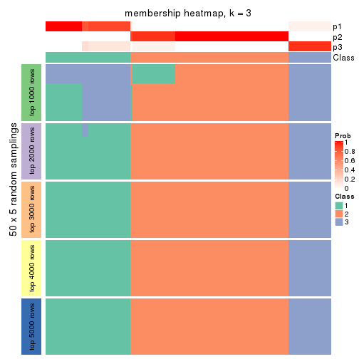
membership_heatmap(res, k = 4)
membership_heatmap(res, k = 5)
membership_heatmap(res, k = 6)
As soon as we have had the classes for columns, we can look for signatures which are significantly different between classes which can be candidate marks for certain classes. Following are the heatmaps for signatures.
Signature heatmaps where rows are scaled:
get_signatures(res, k = 2)
get_signatures(res, k = 3)
get_signatures(res, k = 4)
get_signatures(res, k = 5)
get_signatures(res, k = 6)
Signature heatmaps where rows are not scaled:
get_signatures(res, k = 2, scale_rows = FALSE)
get_signatures(res, k = 3, scale_rows = FALSE)
get_signatures(res, k = 4, scale_rows = FALSE)
get_signatures(res, k = 5, scale_rows = FALSE)
get_signatures(res, k = 6, scale_rows = FALSE)
Compare the overlap of signatures from different k:
compare_signatures(res)
get_signature() returns a data frame invisibly. TO get the list of signatures, the function
call should be assigned to a variable explicitly. In following code, if plot argument is set
to FALSE, no heatmap is plotted while only the differential analysis is performed.
# code only for demonstration
tb = get_signature(res, k = ..., plot = FALSE)
An example of the output of tb is:
#> which_row fdr mean_1 mean_2 scaled_mean_1 scaled_mean_2 km
#> 1 38 0.042760348 8.373488 9.131774 -0.5533452 0.5164555 1
#> 2 40 0.018707592 7.106213 8.469186 -0.6173731 0.5762149 1
#> 3 55 0.019134737 10.221463 11.207825 -0.6159697 0.5749050 1
#> 4 59 0.006059896 5.921854 7.869574 -0.6899429 0.6439467 1
#> 5 60 0.018055526 8.928898 10.211722 -0.6204761 0.5791110 1
#> 6 98 0.009384629 15.714769 14.887706 0.6635654 -0.6193277 2
...
The columns in tb are:
which_row: row indices corresponding to the input matrix.fdr: FDR for the differential test. mean_x: The mean value in group x.scaled_mean_x: The mean value in group x after rows are scaled.km: Row groups if k-means clustering is applied to rows.UMAP plot which shows how samples are separated.
dimension_reduction(res, k = 2, method = "UMAP")
dimension_reduction(res, k = 3, method = "UMAP")
dimension_reduction(res, k = 4, method = "UMAP")

dimension_reduction(res, k = 5, method = "UMAP")
dimension_reduction(res, k = 6, method = "UMAP")
Following heatmap shows how subgroups are split when increasing k:
collect_classes(res)

If matrix rows can be associated to genes, consider to use GO_Enrichment(res,
...) to perform function enrichment for the signature genes.
The object with results only for a single top-value method and a single partition method can be extracted as:
res = res_list["MAD", "kmeans"]
# you can also extract it by
# res = res_list["MAD:kmeans"]
A summary of res and all the functions that can be applied to it:
res
#> A 'ConsensusPartition' object with k = 2, 3, 4, 5, 6.
#> On a matrix with 15028 rows and 134 columns.
#> Top rows (1000, 2000, 3000, 4000, 5000) are extracted by 'MAD' method.
#> Subgroups are detected by 'kmeans' method.
#> Performed in total 1250 partitions by row resampling.
#> Best k for subgroups seems to be 2.
#>
#> Following methods can be applied to this 'ConsensusPartition' object:
#> [1] "cola_report" "collect_classes" "collect_plots"
#> [4] "collect_stats" "colnames" "compare_signatures"
#> [7] "consensus_heatmap" "dimension_reduction" "functional_enrichment"
#> [10] "get_anno_col" "get_anno" "get_classes"
#> [13] "get_consensus" "get_matrix" "get_membership"
#> [16] "get_param" "get_signatures" "get_stats"
#> [19] "is_best_k" "is_stable_k" "membership_heatmap"
#> [22] "ncol" "nrow" "plot_ecdf"
#> [25] "rownames" "select_partition_number" "show"
#> [28] "suggest_best_k" "test_to_known_factors"
collect_plots() function collects all the plots made from res for all k (number of partitions)
into one single page to provide an easy and fast comparison between different k.
collect_plots(res)
The plots are:
k and the heatmap of
predicted classes for each k.k.k.k.All the plots in panels can be made by individual functions and they are plotted later in this section.
select_partition_number() produces several plots showing different
statistics for choosing “optimized” k. There are following statistics:
k;k, the area increased is defined as \(A_k - A_{k-1}\).The detailed explanations of these statistics can be found in the cola vignette.
Generally speaking, lower PAC score, higher mean silhouette score or higher
concordance corresponds to better partition. Rand index and Jaccard index
measure how similar the current partition is compared to partition with k-1.
If they are too similar, we won't accept k is better than k-1.
select_partition_number(res)
The numeric values for all these statistics can be obtained by get_stats().
get_stats(res)
#> k 1-PAC mean_silhouette concordance area_increased Rand Jaccard
#> 2 2 1.000 0.979 0.983 0.4913 0.503 0.503
#> 3 3 0.669 0.624 0.754 0.2307 0.913 0.827
#> 4 4 0.674 0.775 0.742 0.1285 0.783 0.533
#> 5 5 0.664 0.730 0.715 0.0836 0.867 0.580
#> 6 6 0.704 0.883 0.768 0.0519 0.969 0.854
suggest_best_k() suggests the best \(k\) based on these statistics. The rules are as follows:
NA.suggest_best_k(res)
#> [1] 2
Following shows the table of the partitions (You need to click the show/hide
code output link to see it). The membership matrix (columns with name p*)
is inferred by
clue::cl_consensus()
function with the SE method. Basically the value in the membership matrix
represents the probability to belong to a certain group. The finall class
label for an item is determined with the group with highest probability it
belongs to.
In get_classes() function, the entropy is calculated from the membership
matrix and the silhouette score is calculated from the consensus matrix.
cbind(get_classes(res, k = 2), get_membership(res, k = 2))
#> class entropy silhouette p1 p2
#> SRR1550981 1 0.1843 0.988 0.972 0.028
#> SRR1550982 1 0.1843 0.988 0.972 0.028
#> SRR1550983 1 0.1843 0.988 0.972 0.028
#> SRR1550984 1 0.1843 0.988 0.972 0.028
#> SRR1550986 1 0.0376 0.984 0.996 0.004
#> SRR1550985 1 0.1843 0.988 0.972 0.028
#> SRR1550988 2 0.2043 0.971 0.032 0.968
#> SRR1550987 1 0.1633 0.989 0.976 0.024
#> SRR1550989 2 0.0376 0.986 0.004 0.996
#> SRR1550990 2 0.0376 0.986 0.004 0.996
#> SRR1550991 2 0.0376 0.986 0.004 0.996
#> SRR1550992 1 0.0376 0.984 0.996 0.004
#> SRR1550994 2 0.2043 0.971 0.032 0.968
#> SRR1550993 1 0.1633 0.989 0.976 0.024
#> SRR1550995 2 0.0376 0.986 0.004 0.996
#> SRR1550996 2 0.0376 0.986 0.004 0.996
#> SRR1550997 1 0.0376 0.984 0.996 0.004
#> SRR1550998 1 0.1633 0.989 0.976 0.024
#> SRR1551000 2 0.0376 0.986 0.004 0.996
#> SRR1550999 2 0.2043 0.971 0.032 0.968
#> SRR1551001 2 0.0376 0.986 0.004 0.996
#> SRR1551002 1 0.0376 0.984 0.996 0.004
#> SRR1551003 1 0.1633 0.989 0.976 0.024
#> SRR1551004 2 0.2043 0.971 0.032 0.968
#> SRR1551006 2 0.0376 0.986 0.004 0.996
#> SRR1551005 2 0.0376 0.986 0.004 0.996
#> SRR1551007 2 0.0376 0.986 0.004 0.996
#> SRR1551008 1 0.0376 0.984 0.996 0.004
#> SRR1551009 1 0.1633 0.989 0.976 0.024
#> SRR1551010 2 0.2043 0.971 0.032 0.968
#> SRR1551012 2 0.0376 0.986 0.004 0.996
#> SRR1551011 2 0.0376 0.986 0.004 0.996
#> SRR1551013 1 0.0376 0.984 0.996 0.004
#> SRR1551014 1 0.1633 0.989 0.976 0.024
#> SRR1551015 2 0.2043 0.971 0.032 0.968
#> SRR1551016 2 0.0376 0.986 0.004 0.996
#> SRR1551017 2 0.0376 0.986 0.004 0.996
#> SRR1551018 2 0.0376 0.986 0.004 0.996
#> SRR1551019 1 0.0376 0.984 0.996 0.004
#> SRR1551021 1 0.1633 0.989 0.976 0.024
#> SRR1551022 2 0.2043 0.971 0.032 0.968
#> SRR1551023 2 0.0376 0.986 0.004 0.996
#> SRR1551020 1 0.0376 0.984 0.996 0.004
#> SRR1551024 2 0.0376 0.986 0.004 0.996
#> SRR1551026 1 0.0376 0.984 0.996 0.004
#> SRR1551025 1 0.0376 0.984 0.996 0.004
#> SRR1551027 1 0.1633 0.989 0.976 0.024
#> SRR1551028 2 0.2043 0.971 0.032 0.968
#> SRR1551029 2 0.0376 0.986 0.004 0.996
#> SRR1551030 2 0.0376 0.986 0.004 0.996
#> SRR1551031 2 0.0376 0.986 0.004 0.996
#> SRR1551032 1 0.0376 0.984 0.996 0.004
#> SRR1551034 1 0.1633 0.989 0.976 0.024
#> SRR1551033 1 0.0376 0.984 0.996 0.004
#> SRR1551035 2 0.2043 0.971 0.032 0.968
#> SRR1551036 2 0.0376 0.986 0.004 0.996
#> SRR1551037 2 0.0376 0.986 0.004 0.996
#> SRR1551038 2 0.0376 0.986 0.004 0.996
#> SRR1551039 1 0.1843 0.988 0.972 0.028
#> SRR1551040 1 0.0376 0.984 0.996 0.004
#> SRR1551041 1 0.1633 0.989 0.976 0.024
#> SRR1551042 2 0.2043 0.971 0.032 0.968
#> SRR1551043 2 0.0376 0.986 0.004 0.996
#> SRR1551044 2 0.0376 0.986 0.004 0.996
#> SRR1551045 2 0.0376 0.986 0.004 0.996
#> SRR1551046 1 0.1843 0.988 0.972 0.028
#> SRR1551047 1 0.0376 0.984 0.996 0.004
#> SRR1551048 1 0.1633 0.989 0.976 0.024
#> SRR1551049 2 0.2043 0.971 0.032 0.968
#> SRR1551050 2 0.0376 0.986 0.004 0.996
#> SRR1551051 2 0.0376 0.986 0.004 0.996
#> SRR1551052 2 0.0376 0.986 0.004 0.996
#> SRR1551053 2 0.9710 0.336 0.400 0.600
#> SRR1551054 1 0.0376 0.984 0.996 0.004
#> SRR1551055 1 0.1633 0.989 0.976 0.024
#> SRR1551056 2 0.2043 0.971 0.032 0.968
#> SRR1551057 2 0.0376 0.986 0.004 0.996
#> SRR1551058 2 0.0376 0.986 0.004 0.996
#> SRR1551059 2 0.0376 0.986 0.004 0.996
#> SRR1551060 1 0.1843 0.988 0.972 0.028
#> SRR1551061 1 0.0376 0.984 0.996 0.004
#> SRR1551062 1 0.1633 0.989 0.976 0.024
#> SRR1551063 2 0.2043 0.971 0.032 0.968
#> SRR1551064 2 0.0376 0.986 0.004 0.996
#> SRR1551065 2 0.0376 0.986 0.004 0.996
#> SRR1551066 2 0.0376 0.986 0.004 0.996
#> SRR1551067 1 0.1843 0.988 0.972 0.028
#> SRR1551068 1 0.0376 0.984 0.996 0.004
#> SRR1551069 1 0.1633 0.989 0.976 0.024
#> SRR1551070 2 0.2043 0.971 0.032 0.968
#> SRR1551071 2 0.0376 0.986 0.004 0.996
#> SRR1551072 2 0.0376 0.986 0.004 0.996
#> SRR1551073 2 0.0376 0.986 0.004 0.996
#> SRR1551074 1 0.1843 0.988 0.972 0.028
#> SRR1551075 1 0.0376 0.984 0.996 0.004
#> SRR1551076 1 0.1633 0.989 0.976 0.024
#> SRR1551077 2 0.2043 0.971 0.032 0.968
#> SRR1551078 2 0.0376 0.986 0.004 0.996
#> SRR1551079 2 0.0376 0.986 0.004 0.996
#> SRR1551080 2 0.0376 0.986 0.004 0.996
#> SRR1551081 1 0.1843 0.988 0.972 0.028
#> SRR1551082 1 0.0376 0.984 0.996 0.004
#> SRR1551083 1 0.1633 0.989 0.976 0.024
#> SRR1551084 2 0.2043 0.971 0.032 0.968
#> SRR1551085 2 0.0376 0.986 0.004 0.996
#> SRR1551086 2 0.0376 0.986 0.004 0.996
#> SRR1551088 1 0.0376 0.984 0.996 0.004
#> SRR1551087 1 0.1843 0.988 0.972 0.028
#> SRR1551089 1 0.1633 0.989 0.976 0.024
#> SRR1551090 2 0.2043 0.971 0.032 0.968
#> SRR1551091 2 0.0376 0.986 0.004 0.996
#> SRR1551092 2 0.0376 0.986 0.004 0.996
#> SRR1551093 2 0.0376 0.986 0.004 0.996
#> SRR1551094 1 0.1843 0.988 0.972 0.028
#> SRR1551095 1 0.0376 0.984 0.996 0.004
#> SRR1551096 1 0.1633 0.989 0.976 0.024
#> SRR1551097 2 0.2043 0.971 0.032 0.968
#> SRR1551098 2 0.0376 0.986 0.004 0.996
#> SRR1551099 2 0.0376 0.986 0.004 0.996
#> SRR1551101 1 0.0376 0.984 0.996 0.004
#> SRR1551100 1 0.1843 0.988 0.972 0.028
#> SRR1551102 1 0.1633 0.989 0.976 0.024
#> SRR1551103 2 0.2043 0.971 0.032 0.968
#> SRR1551104 2 0.0376 0.986 0.004 0.996
#> SRR1551105 2 0.0376 0.986 0.004 0.996
#> SRR1551106 2 0.0376 0.986 0.004 0.996
#> SRR1551107 1 0.1843 0.988 0.972 0.028
#> SRR1551108 1 0.0376 0.984 0.996 0.004
#> SRR1551109 1 0.1633 0.989 0.976 0.024
#> SRR1551110 2 0.2043 0.971 0.032 0.968
#> SRR1551111 2 0.0376 0.986 0.004 0.996
#> SRR1551112 2 0.0376 0.986 0.004 0.996
#> SRR1551113 2 0.0376 0.986 0.004 0.996
#> SRR1551114 1 0.1843 0.988 0.972 0.028
cbind(get_classes(res, k = 3), get_membership(res, k = 3))
#> class entropy silhouette p1 p2 p3
#> SRR1550981 3 0.6291 0.940 0.468 0.000 0.532
#> SRR1550982 3 0.6286 0.949 0.464 0.000 0.536
#> SRR1550983 3 0.6291 0.940 0.468 0.000 0.532
#> SRR1550984 3 0.6286 0.949 0.464 0.000 0.536
#> SRR1550986 1 0.0000 0.519 1.000 0.000 0.000
#> SRR1550985 3 0.6286 0.949 0.464 0.000 0.536
#> SRR1550988 2 0.6587 0.730 0.016 0.632 0.352
#> SRR1550987 1 0.6168 -0.144 0.588 0.000 0.412
#> SRR1550989 2 0.0237 0.880 0.000 0.996 0.004
#> SRR1550990 2 0.0237 0.880 0.000 0.996 0.004
#> SRR1550991 2 0.4235 0.823 0.000 0.824 0.176
#> SRR1550992 1 0.0000 0.519 1.000 0.000 0.000
#> SRR1550994 2 0.6587 0.730 0.016 0.632 0.352
#> SRR1550993 1 0.6168 -0.144 0.588 0.000 0.412
#> SRR1550995 2 0.0237 0.880 0.000 0.996 0.004
#> SRR1550996 2 0.0424 0.880 0.000 0.992 0.008
#> SRR1550997 1 0.0000 0.519 1.000 0.000 0.000
#> SRR1550998 1 0.6168 -0.144 0.588 0.000 0.412
#> SRR1551000 2 0.0237 0.880 0.000 0.996 0.004
#> SRR1550999 2 0.6587 0.730 0.016 0.632 0.352
#> SRR1551001 2 0.0237 0.880 0.000 0.996 0.004
#> SRR1551002 1 0.0000 0.519 1.000 0.000 0.000
#> SRR1551003 1 0.6168 -0.144 0.588 0.000 0.412
#> SRR1551004 2 0.6587 0.730 0.016 0.632 0.352
#> SRR1551006 2 0.0237 0.880 0.000 0.996 0.004
#> SRR1551005 2 0.0237 0.880 0.000 0.996 0.004
#> SRR1551007 2 0.4235 0.823 0.000 0.824 0.176
#> SRR1551008 1 0.0000 0.519 1.000 0.000 0.000
#> SRR1551009 1 0.6168 -0.144 0.588 0.000 0.412
#> SRR1551010 2 0.6587 0.730 0.016 0.632 0.352
#> SRR1551012 2 0.0000 0.880 0.000 1.000 0.000
#> SRR1551011 2 0.0237 0.880 0.000 0.996 0.004
#> SRR1551013 1 0.0000 0.519 1.000 0.000 0.000
#> SRR1551014 1 0.6168 -0.144 0.588 0.000 0.412
#> SRR1551015 2 0.6587 0.730 0.016 0.632 0.352
#> SRR1551016 2 0.0424 0.880 0.000 0.992 0.008
#> SRR1551017 2 0.2959 0.845 0.000 0.900 0.100
#> SRR1551018 2 0.4235 0.823 0.000 0.824 0.176
#> SRR1551019 1 0.6168 -0.379 0.588 0.000 0.412
#> SRR1551021 1 0.6154 -0.139 0.592 0.000 0.408
#> SRR1551022 2 0.6587 0.730 0.016 0.632 0.352
#> SRR1551023 2 0.0237 0.880 0.000 0.996 0.004
#> SRR1551020 1 0.0000 0.519 1.000 0.000 0.000
#> SRR1551024 2 0.1163 0.873 0.000 0.972 0.028
#> SRR1551026 1 0.0000 0.519 1.000 0.000 0.000
#> SRR1551025 1 0.6045 -0.183 0.620 0.000 0.380
#> SRR1551027 1 0.6168 -0.144 0.588 0.000 0.412
#> SRR1551028 2 0.6587 0.730 0.016 0.632 0.352
#> SRR1551029 2 0.0237 0.880 0.000 0.996 0.004
#> SRR1551030 2 0.0237 0.880 0.000 0.996 0.004
#> SRR1551031 2 0.4235 0.823 0.000 0.824 0.176
#> SRR1551032 1 0.6062 -0.205 0.616 0.000 0.384
#> SRR1551034 1 0.6168 -0.144 0.588 0.000 0.412
#> SRR1551033 1 0.0000 0.519 1.000 0.000 0.000
#> SRR1551035 2 0.6587 0.730 0.016 0.632 0.352
#> SRR1551036 2 0.0237 0.880 0.000 0.996 0.004
#> SRR1551037 2 0.0237 0.880 0.000 0.996 0.004
#> SRR1551038 2 0.4235 0.823 0.000 0.824 0.176
#> SRR1551039 3 0.6286 0.949 0.464 0.000 0.536
#> SRR1551040 1 0.0000 0.519 1.000 0.000 0.000
#> SRR1551041 1 0.6168 -0.144 0.588 0.000 0.412
#> SRR1551042 2 0.6587 0.730 0.016 0.632 0.352
#> SRR1551043 2 0.0237 0.880 0.000 0.996 0.004
#> SRR1551044 2 0.0237 0.880 0.000 0.996 0.004
#> SRR1551045 2 0.4235 0.823 0.000 0.824 0.176
#> SRR1551046 3 0.6291 0.940 0.468 0.000 0.532
#> SRR1551047 1 0.0000 0.519 1.000 0.000 0.000
#> SRR1551048 1 0.6168 -0.144 0.588 0.000 0.412
#> SRR1551049 2 0.6587 0.730 0.016 0.632 0.352
#> SRR1551050 2 0.0237 0.880 0.000 0.996 0.004
#> SRR1551051 2 0.0000 0.880 0.000 1.000 0.000
#> SRR1551052 2 0.4235 0.823 0.000 0.824 0.176
#> SRR1551053 3 0.8964 0.436 0.296 0.160 0.544
#> SRR1551054 1 0.0000 0.519 1.000 0.000 0.000
#> SRR1551055 1 0.6168 -0.144 0.588 0.000 0.412
#> SRR1551056 2 0.6587 0.730 0.016 0.632 0.352
#> SRR1551057 2 0.0237 0.880 0.000 0.996 0.004
#> SRR1551058 2 0.0892 0.876 0.000 0.980 0.020
#> SRR1551059 2 0.4235 0.823 0.000 0.824 0.176
#> SRR1551060 3 0.6286 0.949 0.464 0.000 0.536
#> SRR1551061 1 0.0000 0.519 1.000 0.000 0.000
#> SRR1551062 1 0.6168 -0.144 0.588 0.000 0.412
#> SRR1551063 2 0.6587 0.730 0.016 0.632 0.352
#> SRR1551064 2 0.0237 0.880 0.000 0.996 0.004
#> SRR1551065 2 0.0237 0.880 0.000 0.996 0.004
#> SRR1551066 2 0.4235 0.823 0.000 0.824 0.176
#> SRR1551067 3 0.6286 0.949 0.464 0.000 0.536
#> SRR1551068 1 0.0000 0.519 1.000 0.000 0.000
#> SRR1551069 1 0.6168 -0.144 0.588 0.000 0.412
#> SRR1551070 2 0.6587 0.730 0.016 0.632 0.352
#> SRR1551071 2 0.0237 0.880 0.000 0.996 0.004
#> SRR1551072 2 0.0237 0.880 0.000 0.996 0.004
#> SRR1551073 2 0.4235 0.823 0.000 0.824 0.176
#> SRR1551074 3 0.6291 0.940 0.468 0.000 0.532
#> SRR1551075 1 0.0000 0.519 1.000 0.000 0.000
#> SRR1551076 1 0.6168 -0.144 0.588 0.000 0.412
#> SRR1551077 2 0.6587 0.730 0.016 0.632 0.352
#> SRR1551078 2 0.0237 0.880 0.000 0.996 0.004
#> SRR1551079 2 0.0892 0.876 0.000 0.980 0.020
#> SRR1551080 2 0.4235 0.823 0.000 0.824 0.176
#> SRR1551081 3 0.6286 0.949 0.464 0.000 0.536
#> SRR1551082 1 0.0000 0.519 1.000 0.000 0.000
#> SRR1551083 1 0.6168 -0.144 0.588 0.000 0.412
#> SRR1551084 2 0.6587 0.730 0.016 0.632 0.352
#> SRR1551085 2 0.0237 0.880 0.000 0.996 0.004
#> SRR1551086 2 0.0237 0.880 0.000 0.996 0.004
#> SRR1551088 1 0.0000 0.519 1.000 0.000 0.000
#> SRR1551087 3 0.6286 0.949 0.464 0.000 0.536
#> SRR1551089 1 0.6168 -0.144 0.588 0.000 0.412
#> SRR1551090 2 0.6587 0.730 0.016 0.632 0.352
#> SRR1551091 2 0.0237 0.880 0.000 0.996 0.004
#> SRR1551092 2 0.0000 0.880 0.000 1.000 0.000
#> SRR1551093 2 0.4235 0.823 0.000 0.824 0.176
#> SRR1551094 3 0.6286 0.949 0.464 0.000 0.536
#> SRR1551095 1 0.0000 0.519 1.000 0.000 0.000
#> SRR1551096 1 0.6168 -0.144 0.588 0.000 0.412
#> SRR1551097 2 0.6587 0.730 0.016 0.632 0.352
#> SRR1551098 2 0.0237 0.880 0.000 0.996 0.004
#> SRR1551099 2 0.0000 0.880 0.000 1.000 0.000
#> SRR1551101 1 0.0000 0.519 1.000 0.000 0.000
#> SRR1551100 3 0.6286 0.949 0.464 0.000 0.536
#> SRR1551102 1 0.6168 -0.144 0.588 0.000 0.412
#> SRR1551103 2 0.6587 0.730 0.016 0.632 0.352
#> SRR1551104 2 0.0237 0.880 0.000 0.996 0.004
#> SRR1551105 2 0.0237 0.880 0.000 0.996 0.004
#> SRR1551106 2 0.4235 0.823 0.000 0.824 0.176
#> SRR1551107 3 0.6286 0.949 0.464 0.000 0.536
#> SRR1551108 1 0.0000 0.519 1.000 0.000 0.000
#> SRR1551109 1 0.6168 -0.144 0.588 0.000 0.412
#> SRR1551110 2 0.6587 0.730 0.016 0.632 0.352
#> SRR1551111 2 0.0237 0.880 0.000 0.996 0.004
#> SRR1551112 2 0.0237 0.880 0.000 0.996 0.004
#> SRR1551113 2 0.4235 0.823 0.000 0.824 0.176
#> SRR1551114 3 0.6286 0.949 0.464 0.000 0.536
cbind(get_classes(res, k = 4), get_membership(res, k = 4))
#> class entropy silhouette p1 p2 p3 p4
#> SRR1550981 1 0.7168 0.626 0.556 0.000 0.208 0.236
#> SRR1550982 1 0.7193 0.626 0.552 0.000 0.208 0.240
#> SRR1550983 1 0.7168 0.626 0.556 0.000 0.208 0.236
#> SRR1550984 1 0.7193 0.626 0.552 0.000 0.208 0.240
#> SRR1550986 3 0.4994 0.995 0.480 0.000 0.520 0.000
#> SRR1550985 1 0.7193 0.626 0.552 0.000 0.208 0.240
#> SRR1550988 4 0.4955 0.995 0.008 0.344 0.000 0.648
#> SRR1550987 1 0.0000 0.606 1.000 0.000 0.000 0.000
#> SRR1550989 2 0.0469 0.826 0.000 0.988 0.000 0.012
#> SRR1550990 2 0.0000 0.826 0.000 1.000 0.000 0.000
#> SRR1550991 2 0.6746 0.510 0.000 0.580 0.296 0.124
#> SRR1550992 3 0.4994 0.995 0.480 0.000 0.520 0.000
#> SRR1550994 4 0.5598 0.984 0.008 0.344 0.020 0.628
#> SRR1550993 1 0.0000 0.606 1.000 0.000 0.000 0.000
#> SRR1550995 2 0.0469 0.826 0.000 0.988 0.000 0.012
#> SRR1550996 2 0.0000 0.826 0.000 1.000 0.000 0.000
#> SRR1550997 3 0.5510 0.985 0.480 0.000 0.504 0.016
#> SRR1550998 1 0.0000 0.606 1.000 0.000 0.000 0.000
#> SRR1551000 2 0.0469 0.826 0.000 0.988 0.000 0.012
#> SRR1550999 4 0.5598 0.984 0.008 0.344 0.020 0.628
#> SRR1551001 2 0.0000 0.826 0.000 1.000 0.000 0.000
#> SRR1551002 3 0.4994 0.995 0.480 0.000 0.520 0.000
#> SRR1551003 1 0.0000 0.606 1.000 0.000 0.000 0.000
#> SRR1551004 4 0.5598 0.984 0.008 0.344 0.020 0.628
#> SRR1551006 2 0.0000 0.826 0.000 1.000 0.000 0.000
#> SRR1551005 2 0.0469 0.826 0.000 0.988 0.000 0.012
#> SRR1551007 2 0.6746 0.510 0.000 0.580 0.296 0.124
#> SRR1551008 3 0.4994 0.995 0.480 0.000 0.520 0.000
#> SRR1551009 1 0.0000 0.606 1.000 0.000 0.000 0.000
#> SRR1551010 4 0.4955 0.995 0.008 0.344 0.000 0.648
#> SRR1551012 2 0.0469 0.826 0.000 0.988 0.000 0.012
#> SRR1551011 2 0.0469 0.826 0.000 0.988 0.000 0.012
#> SRR1551013 3 0.4994 0.995 0.480 0.000 0.520 0.000
#> SRR1551014 1 0.0000 0.606 1.000 0.000 0.000 0.000
#> SRR1551015 4 0.5958 0.974 0.008 0.344 0.036 0.612
#> SRR1551016 2 0.0000 0.826 0.000 1.000 0.000 0.000
#> SRR1551017 2 0.3439 0.725 0.000 0.868 0.048 0.084
#> SRR1551018 2 0.6746 0.510 0.000 0.580 0.296 0.124
#> SRR1551019 1 0.5874 0.545 0.696 0.000 0.112 0.192
#> SRR1551021 1 0.0000 0.606 1.000 0.000 0.000 0.000
#> SRR1551022 4 0.5496 0.985 0.008 0.344 0.016 0.632
#> SRR1551023 2 0.0469 0.826 0.000 0.988 0.000 0.012
#> SRR1551020 3 0.4994 0.995 0.480 0.000 0.520 0.000
#> SRR1551024 2 0.1936 0.791 0.000 0.940 0.028 0.032
#> SRR1551026 3 0.4994 0.995 0.480 0.000 0.520 0.000
#> SRR1551025 1 0.5077 0.472 0.760 0.000 0.080 0.160
#> SRR1551027 1 0.0000 0.606 1.000 0.000 0.000 0.000
#> SRR1551028 4 0.4955 0.995 0.008 0.344 0.000 0.648
#> SRR1551029 2 0.0469 0.826 0.000 0.988 0.000 0.012
#> SRR1551030 2 0.0000 0.826 0.000 1.000 0.000 0.000
#> SRR1551031 2 0.6746 0.510 0.000 0.580 0.296 0.124
#> SRR1551032 1 0.4907 0.502 0.764 0.000 0.060 0.176
#> SRR1551034 1 0.0000 0.606 1.000 0.000 0.000 0.000
#> SRR1551033 3 0.4994 0.995 0.480 0.000 0.520 0.000
#> SRR1551035 4 0.4955 0.995 0.008 0.344 0.000 0.648
#> SRR1551036 2 0.0469 0.826 0.000 0.988 0.000 0.012
#> SRR1551037 2 0.0000 0.826 0.000 1.000 0.000 0.000
#> SRR1551038 2 0.6746 0.510 0.000 0.580 0.296 0.124
#> SRR1551039 1 0.7193 0.626 0.552 0.000 0.208 0.240
#> SRR1551040 3 0.5510 0.985 0.480 0.000 0.504 0.016
#> SRR1551041 1 0.0000 0.606 1.000 0.000 0.000 0.000
#> SRR1551042 4 0.4955 0.995 0.008 0.344 0.000 0.648
#> SRR1551043 2 0.0469 0.826 0.000 0.988 0.000 0.012
#> SRR1551044 2 0.0000 0.826 0.000 1.000 0.000 0.000
#> SRR1551045 2 0.6746 0.510 0.000 0.580 0.296 0.124
#> SRR1551046 1 0.7168 0.626 0.556 0.000 0.208 0.236
#> SRR1551047 3 0.5510 0.985 0.480 0.000 0.504 0.016
#> SRR1551048 1 0.0000 0.606 1.000 0.000 0.000 0.000
#> SRR1551049 4 0.4955 0.995 0.008 0.344 0.000 0.648
#> SRR1551050 2 0.0469 0.826 0.000 0.988 0.000 0.012
#> SRR1551051 2 0.0469 0.826 0.000 0.988 0.000 0.012
#> SRR1551052 2 0.6746 0.510 0.000 0.580 0.296 0.124
#> SRR1551053 1 0.9085 0.498 0.456 0.108 0.192 0.244
#> SRR1551054 3 0.5510 0.985 0.480 0.000 0.504 0.016
#> SRR1551055 1 0.0000 0.606 1.000 0.000 0.000 0.000
#> SRR1551056 4 0.4955 0.995 0.008 0.344 0.000 0.648
#> SRR1551057 2 0.0469 0.826 0.000 0.988 0.000 0.012
#> SRR1551058 2 0.0592 0.817 0.000 0.984 0.000 0.016
#> SRR1551059 2 0.6746 0.510 0.000 0.580 0.296 0.124
#> SRR1551060 1 0.7193 0.626 0.552 0.000 0.208 0.240
#> SRR1551061 3 0.4994 0.995 0.480 0.000 0.520 0.000
#> SRR1551062 1 0.0000 0.606 1.000 0.000 0.000 0.000
#> SRR1551063 4 0.4955 0.995 0.008 0.344 0.000 0.648
#> SRR1551064 2 0.0469 0.826 0.000 0.988 0.000 0.012
#> SRR1551065 2 0.0000 0.826 0.000 1.000 0.000 0.000
#> SRR1551066 2 0.6746 0.510 0.000 0.580 0.296 0.124
#> SRR1551067 1 0.7193 0.626 0.552 0.000 0.208 0.240
#> SRR1551068 3 0.4994 0.995 0.480 0.000 0.520 0.000
#> SRR1551069 1 0.0000 0.606 1.000 0.000 0.000 0.000
#> SRR1551070 4 0.4955 0.995 0.008 0.344 0.000 0.648
#> SRR1551071 2 0.0469 0.826 0.000 0.988 0.000 0.012
#> SRR1551072 2 0.0000 0.826 0.000 1.000 0.000 0.000
#> SRR1551073 2 0.6746 0.510 0.000 0.580 0.296 0.124
#> SRR1551074 1 0.7168 0.626 0.556 0.000 0.208 0.236
#> SRR1551075 3 0.4994 0.995 0.480 0.000 0.520 0.000
#> SRR1551076 1 0.0000 0.606 1.000 0.000 0.000 0.000
#> SRR1551077 4 0.4955 0.995 0.008 0.344 0.000 0.648
#> SRR1551078 2 0.0469 0.826 0.000 0.988 0.000 0.012
#> SRR1551079 2 0.0592 0.817 0.000 0.984 0.000 0.016
#> SRR1551080 2 0.6746 0.510 0.000 0.580 0.296 0.124
#> SRR1551081 1 0.7193 0.626 0.552 0.000 0.208 0.240
#> SRR1551082 3 0.4994 0.995 0.480 0.000 0.520 0.000
#> SRR1551083 1 0.0000 0.606 1.000 0.000 0.000 0.000
#> SRR1551084 4 0.4955 0.995 0.008 0.344 0.000 0.648
#> SRR1551085 2 0.0469 0.826 0.000 0.988 0.000 0.012
#> SRR1551086 2 0.0000 0.826 0.000 1.000 0.000 0.000
#> SRR1551088 3 0.4994 0.995 0.480 0.000 0.520 0.000
#> SRR1551087 1 0.7193 0.626 0.552 0.000 0.208 0.240
#> SRR1551089 1 0.0000 0.606 1.000 0.000 0.000 0.000
#> SRR1551090 4 0.4955 0.995 0.008 0.344 0.000 0.648
#> SRR1551091 2 0.0469 0.826 0.000 0.988 0.000 0.012
#> SRR1551092 2 0.0469 0.826 0.000 0.988 0.000 0.012
#> SRR1551093 2 0.6746 0.510 0.000 0.580 0.296 0.124
#> SRR1551094 1 0.7193 0.626 0.552 0.000 0.208 0.240
#> SRR1551095 3 0.4994 0.995 0.480 0.000 0.520 0.000
#> SRR1551096 1 0.0000 0.606 1.000 0.000 0.000 0.000
#> SRR1551097 4 0.4955 0.995 0.008 0.344 0.000 0.648
#> SRR1551098 2 0.0469 0.826 0.000 0.988 0.000 0.012
#> SRR1551099 2 0.0469 0.826 0.000 0.988 0.000 0.012
#> SRR1551101 3 0.5510 0.985 0.480 0.000 0.504 0.016
#> SRR1551100 1 0.7193 0.626 0.552 0.000 0.208 0.240
#> SRR1551102 1 0.0000 0.606 1.000 0.000 0.000 0.000
#> SRR1551103 4 0.4955 0.995 0.008 0.344 0.000 0.648
#> SRR1551104 2 0.0469 0.826 0.000 0.988 0.000 0.012
#> SRR1551105 2 0.0000 0.826 0.000 1.000 0.000 0.000
#> SRR1551106 2 0.6746 0.510 0.000 0.580 0.296 0.124
#> SRR1551107 1 0.7193 0.626 0.552 0.000 0.208 0.240
#> SRR1551108 3 0.4994 0.995 0.480 0.000 0.520 0.000
#> SRR1551109 1 0.0000 0.606 1.000 0.000 0.000 0.000
#> SRR1551110 4 0.4955 0.995 0.008 0.344 0.000 0.648
#> SRR1551111 2 0.0469 0.826 0.000 0.988 0.000 0.012
#> SRR1551112 2 0.0000 0.826 0.000 1.000 0.000 0.000
#> SRR1551113 2 0.6746 0.510 0.000 0.580 0.296 0.124
#> SRR1551114 1 0.7193 0.626 0.552 0.000 0.208 0.240
cbind(get_classes(res, k = 5), get_membership(res, k = 5))
#> class entropy silhouette p1 p2 p3 p4 p5
#> SRR1550981 5 0.4971 -0.000036 0.472 0.000 0.020 0.004 0.504
#> SRR1550982 5 0.4971 -0.000036 0.472 0.000 0.020 0.004 0.504
#> SRR1550983 5 0.4971 -0.000036 0.472 0.000 0.020 0.004 0.504
#> SRR1550984 5 0.5049 -0.003459 0.472 0.000 0.024 0.004 0.500
#> SRR1550986 3 0.3857 0.981519 0.312 0.000 0.688 0.000 0.000
#> SRR1550985 5 0.4971 -0.000036 0.472 0.000 0.020 0.004 0.504
#> SRR1550988 4 0.3128 0.990513 0.004 0.168 0.004 0.824 0.000
#> SRR1550987 1 0.0000 0.929696 1.000 0.000 0.000 0.000 0.000
#> SRR1550989 2 0.0290 0.935741 0.000 0.992 0.000 0.008 0.000
#> SRR1550990 2 0.2230 0.929725 0.000 0.884 0.116 0.000 0.000
#> SRR1550991 5 0.7589 0.120873 0.000 0.384 0.132 0.092 0.392
#> SRR1550992 3 0.3857 0.981519 0.312 0.000 0.688 0.000 0.000
#> SRR1550994 4 0.4133 0.973968 0.004 0.168 0.016 0.788 0.024
#> SRR1550993 1 0.0000 0.929696 1.000 0.000 0.000 0.000 0.000
#> SRR1550995 2 0.0290 0.935741 0.000 0.992 0.000 0.008 0.000
#> SRR1550996 2 0.1965 0.932879 0.000 0.904 0.096 0.000 0.000
#> SRR1550997 3 0.5527 0.944793 0.312 0.000 0.620 0.032 0.036
#> SRR1550998 1 0.0162 0.927674 0.996 0.000 0.000 0.004 0.000
#> SRR1551000 2 0.0290 0.935741 0.000 0.992 0.000 0.008 0.000
#> SRR1550999 4 0.4559 0.962923 0.004 0.168 0.024 0.768 0.036
#> SRR1551001 2 0.2230 0.929725 0.000 0.884 0.116 0.000 0.000
#> SRR1551002 3 0.3857 0.981519 0.312 0.000 0.688 0.000 0.000
#> SRR1551003 1 0.0000 0.929696 1.000 0.000 0.000 0.000 0.000
#> SRR1551004 4 0.4133 0.973968 0.004 0.168 0.016 0.788 0.024
#> SRR1551006 2 0.2230 0.929725 0.000 0.884 0.116 0.000 0.000
#> SRR1551005 2 0.0290 0.935741 0.000 0.992 0.000 0.008 0.000
#> SRR1551007 5 0.7589 0.120873 0.000 0.384 0.132 0.092 0.392
#> SRR1551008 3 0.3857 0.981519 0.312 0.000 0.688 0.000 0.000
#> SRR1551009 1 0.0000 0.929696 1.000 0.000 0.000 0.000 0.000
#> SRR1551010 4 0.3128 0.990513 0.004 0.168 0.004 0.824 0.000
#> SRR1551012 2 0.2513 0.930215 0.000 0.876 0.116 0.008 0.000
#> SRR1551011 2 0.0290 0.935741 0.000 0.992 0.000 0.008 0.000
#> SRR1551013 3 0.3857 0.981519 0.312 0.000 0.688 0.000 0.000
#> SRR1551014 1 0.0000 0.929696 1.000 0.000 0.000 0.000 0.000
#> SRR1551015 4 0.4875 0.953945 0.004 0.168 0.040 0.752 0.036
#> SRR1551016 2 0.0404 0.935414 0.000 0.988 0.012 0.000 0.000
#> SRR1551017 2 0.4166 0.837215 0.000 0.796 0.120 0.076 0.008
#> SRR1551018 5 0.7616 0.119695 0.000 0.384 0.136 0.092 0.388
#> SRR1551019 1 0.6058 0.315249 0.532 0.000 0.032 0.056 0.380
#> SRR1551021 1 0.0000 0.929696 1.000 0.000 0.000 0.000 0.000
#> SRR1551022 4 0.3461 0.984030 0.004 0.168 0.016 0.812 0.000
#> SRR1551023 2 0.0290 0.935741 0.000 0.992 0.000 0.008 0.000
#> SRR1551020 3 0.4009 0.979240 0.312 0.000 0.684 0.004 0.000
#> SRR1551024 2 0.3260 0.898615 0.000 0.856 0.084 0.004 0.056
#> SRR1551026 3 0.4009 0.979240 0.312 0.000 0.684 0.004 0.000
#> SRR1551025 1 0.6511 0.466661 0.584 0.000 0.092 0.056 0.268
#> SRR1551027 1 0.0000 0.929696 1.000 0.000 0.000 0.000 0.000
#> SRR1551028 4 0.2970 0.990609 0.004 0.168 0.000 0.828 0.000
#> SRR1551029 2 0.0290 0.935741 0.000 0.992 0.000 0.008 0.000
#> SRR1551030 2 0.2230 0.929725 0.000 0.884 0.116 0.000 0.000
#> SRR1551031 5 0.7616 0.119695 0.000 0.384 0.136 0.092 0.388
#> SRR1551032 1 0.6086 0.464700 0.592 0.000 0.048 0.056 0.304
#> SRR1551034 1 0.0000 0.929696 1.000 0.000 0.000 0.000 0.000
#> SRR1551033 3 0.3857 0.981519 0.312 0.000 0.688 0.000 0.000
#> SRR1551035 4 0.2970 0.990609 0.004 0.168 0.000 0.828 0.000
#> SRR1551036 2 0.0290 0.935741 0.000 0.992 0.000 0.008 0.000
#> SRR1551037 2 0.2230 0.929725 0.000 0.884 0.116 0.000 0.000
#> SRR1551038 5 0.7589 0.120873 0.000 0.384 0.132 0.092 0.392
#> SRR1551039 5 0.4971 -0.000036 0.472 0.000 0.020 0.004 0.504
#> SRR1551040 3 0.5527 0.944793 0.312 0.000 0.620 0.032 0.036
#> SRR1551041 1 0.0162 0.927674 0.996 0.000 0.000 0.004 0.000
#> SRR1551042 4 0.2970 0.990609 0.004 0.168 0.000 0.828 0.000
#> SRR1551043 2 0.0290 0.935741 0.000 0.992 0.000 0.008 0.000
#> SRR1551044 2 0.2230 0.929725 0.000 0.884 0.116 0.000 0.000
#> SRR1551045 5 0.7589 0.120873 0.000 0.384 0.132 0.092 0.392
#> SRR1551046 5 0.4971 -0.000036 0.472 0.000 0.020 0.004 0.504
#> SRR1551047 3 0.5527 0.944793 0.312 0.000 0.620 0.032 0.036
#> SRR1551048 1 0.0000 0.929696 1.000 0.000 0.000 0.000 0.000
#> SRR1551049 4 0.2970 0.990609 0.004 0.168 0.000 0.828 0.000
#> SRR1551050 2 0.0290 0.935741 0.000 0.992 0.000 0.008 0.000
#> SRR1551051 2 0.2513 0.930215 0.000 0.876 0.116 0.008 0.000
#> SRR1551052 5 0.7589 0.120873 0.000 0.384 0.132 0.092 0.392
#> SRR1551053 5 0.5746 -0.004606 0.440 0.040 0.016 0.004 0.500
#> SRR1551054 3 0.5527 0.944793 0.312 0.000 0.620 0.032 0.036
#> SRR1551055 1 0.0162 0.927674 0.996 0.000 0.000 0.004 0.000
#> SRR1551056 4 0.2970 0.990609 0.004 0.168 0.000 0.828 0.000
#> SRR1551057 2 0.0290 0.935741 0.000 0.992 0.000 0.008 0.000
#> SRR1551058 2 0.2624 0.922018 0.000 0.872 0.116 0.012 0.000
#> SRR1551059 5 0.7616 0.119844 0.000 0.384 0.136 0.092 0.388
#> SRR1551060 5 0.5049 -0.003459 0.472 0.000 0.024 0.004 0.500
#> SRR1551061 3 0.3857 0.981519 0.312 0.000 0.688 0.000 0.000
#> SRR1551062 1 0.0000 0.929696 1.000 0.000 0.000 0.000 0.000
#> SRR1551063 4 0.3128 0.990513 0.004 0.168 0.004 0.824 0.000
#> SRR1551064 2 0.0290 0.935741 0.000 0.992 0.000 0.008 0.000
#> SRR1551065 2 0.2230 0.929725 0.000 0.884 0.116 0.000 0.000
#> SRR1551066 5 0.7589 0.120873 0.000 0.384 0.132 0.092 0.392
#> SRR1551067 5 0.4971 -0.000036 0.472 0.000 0.020 0.004 0.504
#> SRR1551068 3 0.3857 0.981519 0.312 0.000 0.688 0.000 0.000
#> SRR1551069 1 0.0000 0.929696 1.000 0.000 0.000 0.000 0.000
#> SRR1551070 4 0.3128 0.990513 0.004 0.168 0.004 0.824 0.000
#> SRR1551071 2 0.0290 0.935741 0.000 0.992 0.000 0.008 0.000
#> SRR1551072 2 0.2230 0.929725 0.000 0.884 0.116 0.000 0.000
#> SRR1551073 5 0.7616 0.119844 0.000 0.384 0.136 0.092 0.388
#> SRR1551074 5 0.4971 -0.000036 0.472 0.000 0.020 0.004 0.504
#> SRR1551075 3 0.3857 0.981519 0.312 0.000 0.688 0.000 0.000
#> SRR1551076 1 0.0000 0.929696 1.000 0.000 0.000 0.000 0.000
#> SRR1551077 4 0.2970 0.990609 0.004 0.168 0.000 0.828 0.000
#> SRR1551078 2 0.0290 0.935741 0.000 0.992 0.000 0.008 0.000
#> SRR1551079 2 0.2624 0.922018 0.000 0.872 0.116 0.012 0.000
#> SRR1551080 5 0.7589 0.120873 0.000 0.384 0.132 0.092 0.392
#> SRR1551081 5 0.4971 -0.000036 0.472 0.000 0.020 0.004 0.504
#> SRR1551082 3 0.3857 0.981519 0.312 0.000 0.688 0.000 0.000
#> SRR1551083 1 0.0000 0.929696 1.000 0.000 0.000 0.000 0.000
#> SRR1551084 4 0.2970 0.990609 0.004 0.168 0.000 0.828 0.000
#> SRR1551085 2 0.0290 0.935741 0.000 0.992 0.000 0.008 0.000
#> SRR1551086 2 0.2230 0.929725 0.000 0.884 0.116 0.000 0.000
#> SRR1551088 3 0.3857 0.981519 0.312 0.000 0.688 0.000 0.000
#> SRR1551087 5 0.4971 -0.000036 0.472 0.000 0.020 0.004 0.504
#> SRR1551089 1 0.0000 0.929696 1.000 0.000 0.000 0.000 0.000
#> SRR1551090 4 0.2970 0.990609 0.004 0.168 0.000 0.828 0.000
#> SRR1551091 2 0.0290 0.935741 0.000 0.992 0.000 0.008 0.000
#> SRR1551092 2 0.2513 0.930215 0.000 0.876 0.116 0.008 0.000
#> SRR1551093 5 0.7616 0.119844 0.000 0.384 0.136 0.092 0.388
#> SRR1551094 5 0.4971 -0.000036 0.472 0.000 0.020 0.004 0.504
#> SRR1551095 3 0.3857 0.981519 0.312 0.000 0.688 0.000 0.000
#> SRR1551096 1 0.0000 0.929696 1.000 0.000 0.000 0.000 0.000
#> SRR1551097 4 0.3128 0.990513 0.004 0.168 0.004 0.824 0.000
#> SRR1551098 2 0.0290 0.935741 0.000 0.992 0.000 0.008 0.000
#> SRR1551099 2 0.2513 0.930215 0.000 0.876 0.116 0.008 0.000
#> SRR1551101 3 0.5527 0.944793 0.312 0.000 0.620 0.032 0.036
#> SRR1551100 5 0.4971 -0.000036 0.472 0.000 0.020 0.004 0.504
#> SRR1551102 1 0.0162 0.927674 0.996 0.000 0.000 0.004 0.000
#> SRR1551103 4 0.3128 0.990513 0.004 0.168 0.004 0.824 0.000
#> SRR1551104 2 0.0290 0.935741 0.000 0.992 0.000 0.008 0.000
#> SRR1551105 2 0.2230 0.929725 0.000 0.884 0.116 0.000 0.000
#> SRR1551106 5 0.7589 0.120873 0.000 0.384 0.132 0.092 0.392
#> SRR1551107 5 0.4971 -0.000036 0.472 0.000 0.020 0.004 0.504
#> SRR1551108 3 0.3857 0.981519 0.312 0.000 0.688 0.000 0.000
#> SRR1551109 1 0.0000 0.929696 1.000 0.000 0.000 0.000 0.000
#> SRR1551110 4 0.3128 0.990513 0.004 0.168 0.004 0.824 0.000
#> SRR1551111 2 0.0290 0.935741 0.000 0.992 0.000 0.008 0.000
#> SRR1551112 2 0.2230 0.929725 0.000 0.884 0.116 0.000 0.000
#> SRR1551113 5 0.7616 0.119695 0.000 0.384 0.136 0.092 0.388
#> SRR1551114 5 0.4971 -0.000036 0.472 0.000 0.020 0.004 0.504
cbind(get_classes(res, k = 6), get_membership(res, k = 6))
#> class entropy silhouette p1 p2 p3 p4 p5 p6
#> SRR1550981 5 0.3445 0.9661 0.260 0.000 0.000 0.008 0.732 0.000
#> SRR1550982 5 0.3445 0.9661 0.260 0.000 0.000 0.008 0.732 0.000
#> SRR1550983 5 0.3445 0.9661 0.260 0.000 0.000 0.008 0.732 0.000
#> SRR1550984 5 0.3787 0.9574 0.260 0.000 0.008 0.012 0.720 0.000
#> SRR1550986 3 0.3817 0.9728 0.252 0.000 0.720 0.000 0.028 0.000
#> SRR1550985 5 0.3337 0.9658 0.260 0.000 0.000 0.004 0.736 0.000
#> SRR1550988 4 0.2420 0.9800 0.000 0.040 0.000 0.884 0.000 0.076
#> SRR1550987 1 0.0000 0.9276 1.000 0.000 0.000 0.000 0.000 0.000
#> SRR1550989 2 0.3670 0.7801 0.000 0.704 0.000 0.012 0.000 0.284
#> SRR1550990 2 0.7103 0.7703 0.000 0.404 0.208 0.000 0.092 0.296
#> SRR1550991 6 0.0146 0.9944 0.000 0.000 0.000 0.004 0.000 0.996
#> SRR1550992 3 0.3817 0.9728 0.252 0.000 0.720 0.000 0.028 0.000
#> SRR1550994 4 0.3935 0.9436 0.000 0.056 0.012 0.816 0.040 0.076
#> SRR1550993 1 0.0000 0.9276 1.000 0.000 0.000 0.000 0.000 0.000
#> SRR1550995 2 0.3670 0.7801 0.000 0.704 0.000 0.012 0.000 0.284
#> SRR1550996 2 0.7049 0.7720 0.000 0.408 0.212 0.000 0.084 0.296
#> SRR1550997 3 0.5429 0.9271 0.252 0.076 0.628 0.000 0.044 0.000
#> SRR1550998 1 0.1116 0.9076 0.960 0.008 0.000 0.028 0.000 0.004
#> SRR1551000 2 0.3670 0.7801 0.000 0.704 0.000 0.012 0.000 0.284
#> SRR1550999 4 0.4785 0.9112 0.000 0.080 0.028 0.764 0.052 0.076
#> SRR1551001 2 0.7063 0.7706 0.000 0.404 0.216 0.000 0.084 0.296
#> SRR1551002 3 0.3817 0.9728 0.252 0.000 0.720 0.000 0.028 0.000
#> SRR1551003 1 0.0000 0.9276 1.000 0.000 0.000 0.000 0.000 0.000
#> SRR1551004 4 0.3935 0.9436 0.000 0.056 0.012 0.816 0.040 0.076
#> SRR1551006 2 0.7063 0.7706 0.000 0.404 0.216 0.000 0.084 0.296
#> SRR1551005 2 0.3670 0.7801 0.000 0.704 0.000 0.012 0.000 0.284
#> SRR1551007 6 0.0405 0.9938 0.000 0.000 0.000 0.004 0.008 0.988
#> SRR1551008 3 0.3817 0.9728 0.252 0.000 0.720 0.000 0.028 0.000
#> SRR1551009 1 0.0000 0.9276 1.000 0.000 0.000 0.000 0.000 0.000
#> SRR1551010 4 0.2420 0.9800 0.000 0.040 0.000 0.884 0.000 0.076
#> SRR1551012 2 0.7383 0.7733 0.000 0.404 0.208 0.012 0.092 0.284
#> SRR1551011 2 0.3670 0.7801 0.000 0.704 0.000 0.012 0.000 0.284
#> SRR1551013 3 0.4158 0.9674 0.252 0.000 0.708 0.012 0.028 0.000
#> SRR1551014 1 0.0508 0.9206 0.984 0.000 0.004 0.012 0.000 0.000
#> SRR1551015 4 0.5229 0.8902 0.000 0.080 0.044 0.736 0.064 0.076
#> SRR1551016 2 0.4582 0.7758 0.000 0.652 0.040 0.000 0.012 0.296
#> SRR1551017 2 0.7168 0.7137 0.000 0.360 0.216 0.000 0.092 0.332
#> SRR1551018 6 0.0692 0.9894 0.000 0.000 0.000 0.004 0.020 0.976
#> SRR1551019 5 0.6524 0.3665 0.340 0.160 0.004 0.040 0.456 0.000
#> SRR1551021 1 0.0508 0.9206 0.984 0.000 0.004 0.012 0.000 0.000
#> SRR1551022 4 0.3195 0.9654 0.000 0.044 0.012 0.856 0.012 0.076
#> SRR1551023 2 0.3670 0.7801 0.000 0.704 0.000 0.012 0.000 0.284
#> SRR1551020 3 0.4499 0.9583 0.252 0.004 0.692 0.012 0.040 0.000
#> SRR1551024 2 0.7769 0.7070 0.000 0.376 0.196 0.016 0.156 0.256
#> SRR1551026 3 0.4499 0.9583 0.252 0.004 0.692 0.012 0.040 0.000
#> SRR1551025 1 0.7610 -0.0131 0.408 0.160 0.088 0.040 0.304 0.000
#> SRR1551027 1 0.0508 0.9206 0.984 0.000 0.004 0.012 0.000 0.000
#> SRR1551028 4 0.2350 0.9801 0.000 0.036 0.000 0.888 0.000 0.076
#> SRR1551029 2 0.3670 0.7801 0.000 0.704 0.000 0.012 0.000 0.284
#> SRR1551030 2 0.7063 0.7706 0.000 0.404 0.216 0.000 0.084 0.296
#> SRR1551031 6 0.0508 0.9906 0.000 0.000 0.000 0.004 0.012 0.984
#> SRR1551032 1 0.6745 -0.1752 0.408 0.160 0.012 0.040 0.380 0.000
#> SRR1551034 1 0.0000 0.9276 1.000 0.000 0.000 0.000 0.000 0.000
#> SRR1551033 3 0.3817 0.9728 0.252 0.000 0.720 0.000 0.028 0.000
#> SRR1551035 4 0.2350 0.9801 0.000 0.036 0.000 0.888 0.000 0.076
#> SRR1551036 2 0.3670 0.7801 0.000 0.704 0.000 0.012 0.000 0.284
#> SRR1551037 2 0.7063 0.7706 0.000 0.404 0.216 0.000 0.084 0.296
#> SRR1551038 6 0.0146 0.9944 0.000 0.000 0.000 0.004 0.000 0.996
#> SRR1551039 5 0.3337 0.9671 0.260 0.000 0.000 0.004 0.736 0.000
#> SRR1551040 3 0.5429 0.9271 0.252 0.076 0.628 0.000 0.044 0.000
#> SRR1551041 1 0.1116 0.9076 0.960 0.008 0.000 0.028 0.000 0.004
#> SRR1551042 4 0.2420 0.9791 0.000 0.040 0.000 0.884 0.000 0.076
#> SRR1551043 2 0.3670 0.7801 0.000 0.704 0.000 0.012 0.000 0.284
#> SRR1551044 2 0.7063 0.7706 0.000 0.404 0.216 0.000 0.084 0.296
#> SRR1551045 6 0.0291 0.9934 0.000 0.000 0.000 0.004 0.004 0.992
#> SRR1551046 5 0.3445 0.9661 0.260 0.000 0.000 0.008 0.732 0.000
#> SRR1551047 3 0.5429 0.9271 0.252 0.076 0.628 0.000 0.044 0.000
#> SRR1551048 1 0.0000 0.9276 1.000 0.000 0.000 0.000 0.000 0.000
#> SRR1551049 4 0.2350 0.9801 0.000 0.036 0.000 0.888 0.000 0.076
#> SRR1551050 2 0.3670 0.7801 0.000 0.704 0.000 0.012 0.000 0.284
#> SRR1551051 2 0.7383 0.7733 0.000 0.404 0.208 0.012 0.092 0.284
#> SRR1551052 6 0.0146 0.9944 0.000 0.000 0.000 0.004 0.000 0.996
#> SRR1551053 5 0.3902 0.9535 0.256 0.004 0.008 0.012 0.720 0.000
#> SRR1551054 3 0.5429 0.9271 0.252 0.076 0.628 0.000 0.044 0.000
#> SRR1551055 1 0.1116 0.9076 0.960 0.008 0.000 0.028 0.000 0.004
#> SRR1551056 4 0.2350 0.9801 0.000 0.036 0.000 0.888 0.000 0.076
#> SRR1551057 2 0.3670 0.7801 0.000 0.704 0.000 0.012 0.000 0.284
#> SRR1551058 2 0.7063 0.7706 0.000 0.404 0.216 0.000 0.084 0.296
#> SRR1551059 6 0.0405 0.9938 0.000 0.000 0.000 0.004 0.008 0.988
#> SRR1551060 5 0.3787 0.9574 0.260 0.000 0.008 0.012 0.720 0.000
#> SRR1551061 3 0.3817 0.9728 0.252 0.000 0.720 0.000 0.028 0.000
#> SRR1551062 1 0.0000 0.9276 1.000 0.000 0.000 0.000 0.000 0.000
#> SRR1551063 4 0.2420 0.9800 0.000 0.040 0.000 0.884 0.000 0.076
#> SRR1551064 2 0.3670 0.7801 0.000 0.704 0.000 0.012 0.000 0.284
#> SRR1551065 2 0.7103 0.7703 0.000 0.404 0.208 0.000 0.092 0.296
#> SRR1551066 6 0.0146 0.9944 0.000 0.000 0.000 0.004 0.000 0.996
#> SRR1551067 5 0.3198 0.9673 0.260 0.000 0.000 0.000 0.740 0.000
#> SRR1551068 3 0.3817 0.9728 0.252 0.000 0.720 0.000 0.028 0.000
#> SRR1551069 1 0.0000 0.9276 1.000 0.000 0.000 0.000 0.000 0.000
#> SRR1551070 4 0.2420 0.9800 0.000 0.040 0.000 0.884 0.000 0.076
#> SRR1551071 2 0.3670 0.7801 0.000 0.704 0.000 0.012 0.000 0.284
#> SRR1551072 2 0.7103 0.7703 0.000 0.404 0.208 0.000 0.092 0.296
#> SRR1551073 6 0.0405 0.9938 0.000 0.000 0.000 0.004 0.008 0.988
#> SRR1551074 5 0.3198 0.9673 0.260 0.000 0.000 0.000 0.740 0.000
#> SRR1551075 3 0.3817 0.9728 0.252 0.000 0.720 0.000 0.028 0.000
#> SRR1551076 1 0.0000 0.9276 1.000 0.000 0.000 0.000 0.000 0.000
#> SRR1551077 4 0.2350 0.9801 0.000 0.036 0.000 0.888 0.000 0.076
#> SRR1551078 2 0.3670 0.7801 0.000 0.704 0.000 0.012 0.000 0.284
#> SRR1551079 2 0.7063 0.7706 0.000 0.404 0.216 0.000 0.084 0.296
#> SRR1551080 6 0.0291 0.9939 0.000 0.000 0.000 0.004 0.004 0.992
#> SRR1551081 5 0.3198 0.9673 0.260 0.000 0.000 0.000 0.740 0.000
#> SRR1551082 3 0.3817 0.9728 0.252 0.000 0.720 0.000 0.028 0.000
#> SRR1551083 1 0.0000 0.9276 1.000 0.000 0.000 0.000 0.000 0.000
#> SRR1551084 4 0.2350 0.9801 0.000 0.036 0.000 0.888 0.000 0.076
#> SRR1551085 2 0.3670 0.7801 0.000 0.704 0.000 0.012 0.000 0.284
#> SRR1551086 2 0.7063 0.7706 0.000 0.404 0.216 0.000 0.084 0.296
#> SRR1551088 3 0.3817 0.9728 0.252 0.000 0.720 0.000 0.028 0.000
#> SRR1551087 5 0.3337 0.9671 0.260 0.000 0.000 0.004 0.736 0.000
#> SRR1551089 1 0.0000 0.9276 1.000 0.000 0.000 0.000 0.000 0.000
#> SRR1551090 4 0.2350 0.9801 0.000 0.036 0.000 0.888 0.000 0.076
#> SRR1551091 2 0.3670 0.7801 0.000 0.704 0.000 0.012 0.000 0.284
#> SRR1551092 2 0.7383 0.7733 0.000 0.404 0.208 0.012 0.092 0.284
#> SRR1551093 6 0.0405 0.9938 0.000 0.000 0.000 0.004 0.008 0.988
#> SRR1551094 5 0.3337 0.9671 0.260 0.000 0.000 0.004 0.736 0.000
#> SRR1551095 3 0.3817 0.9728 0.252 0.000 0.720 0.000 0.028 0.000
#> SRR1551096 1 0.0000 0.9276 1.000 0.000 0.000 0.000 0.000 0.000
#> SRR1551097 4 0.2420 0.9800 0.000 0.040 0.000 0.884 0.000 0.076
#> SRR1551098 2 0.3670 0.7801 0.000 0.704 0.000 0.012 0.000 0.284
#> SRR1551099 2 0.7383 0.7733 0.000 0.404 0.208 0.012 0.092 0.284
#> SRR1551101 3 0.5429 0.9271 0.252 0.076 0.628 0.000 0.044 0.000
#> SRR1551100 5 0.3198 0.9673 0.260 0.000 0.000 0.000 0.740 0.000
#> SRR1551102 1 0.1116 0.9076 0.960 0.008 0.000 0.028 0.000 0.004
#> SRR1551103 4 0.2420 0.9800 0.000 0.040 0.000 0.884 0.000 0.076
#> SRR1551104 2 0.3670 0.7801 0.000 0.704 0.000 0.012 0.000 0.284
#> SRR1551105 2 0.7103 0.7703 0.000 0.404 0.208 0.000 0.092 0.296
#> SRR1551106 6 0.0291 0.9934 0.000 0.000 0.000 0.004 0.004 0.992
#> SRR1551107 5 0.3198 0.9673 0.260 0.000 0.000 0.000 0.740 0.000
#> SRR1551108 3 0.3817 0.9728 0.252 0.000 0.720 0.000 0.028 0.000
#> SRR1551109 1 0.0000 0.9276 1.000 0.000 0.000 0.000 0.000 0.000
#> SRR1551110 4 0.2420 0.9800 0.000 0.040 0.000 0.884 0.000 0.076
#> SRR1551111 2 0.3670 0.7801 0.000 0.704 0.000 0.012 0.000 0.284
#> SRR1551112 2 0.7103 0.7703 0.000 0.404 0.208 0.000 0.092 0.296
#> SRR1551113 6 0.0692 0.9894 0.000 0.000 0.000 0.004 0.020 0.976
#> SRR1551114 5 0.3198 0.9673 0.260 0.000 0.000 0.000 0.740 0.000
Heatmaps for the consensus matrix. It visualizes the probability of two samples to be in a same group.
consensus_heatmap(res, k = 2)
consensus_heatmap(res, k = 3)
consensus_heatmap(res, k = 4)
consensus_heatmap(res, k = 5)
consensus_heatmap(res, k = 6)
Heatmaps for the membership of samples in all partitions to see how consistent they are:
membership_heatmap(res, k = 2)
membership_heatmap(res, k = 3)
membership_heatmap(res, k = 4)
membership_heatmap(res, k = 5)
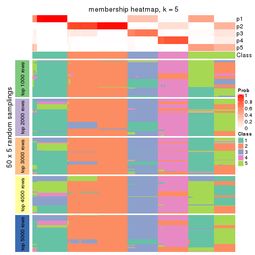
membership_heatmap(res, k = 6)
As soon as we have had the classes for columns, we can look for signatures which are significantly different between classes which can be candidate marks for certain classes. Following are the heatmaps for signatures.
Signature heatmaps where rows are scaled:
get_signatures(res, k = 2)

get_signatures(res, k = 3)
get_signatures(res, k = 4)
get_signatures(res, k = 5)
get_signatures(res, k = 6)
Signature heatmaps where rows are not scaled:
get_signatures(res, k = 2, scale_rows = FALSE)
get_signatures(res, k = 3, scale_rows = FALSE)
get_signatures(res, k = 4, scale_rows = FALSE)
get_signatures(res, k = 5, scale_rows = FALSE)
get_signatures(res, k = 6, scale_rows = FALSE)
Compare the overlap of signatures from different k:
compare_signatures(res)
get_signature() returns a data frame invisibly. TO get the list of signatures, the function
call should be assigned to a variable explicitly. In following code, if plot argument is set
to FALSE, no heatmap is plotted while only the differential analysis is performed.
# code only for demonstration
tb = get_signature(res, k = ..., plot = FALSE)
An example of the output of tb is:
#> which_row fdr mean_1 mean_2 scaled_mean_1 scaled_mean_2 km
#> 1 38 0.042760348 8.373488 9.131774 -0.5533452 0.5164555 1
#> 2 40 0.018707592 7.106213 8.469186 -0.6173731 0.5762149 1
#> 3 55 0.019134737 10.221463 11.207825 -0.6159697 0.5749050 1
#> 4 59 0.006059896 5.921854 7.869574 -0.6899429 0.6439467 1
#> 5 60 0.018055526 8.928898 10.211722 -0.6204761 0.5791110 1
#> 6 98 0.009384629 15.714769 14.887706 0.6635654 -0.6193277 2
...
The columns in tb are:
which_row: row indices corresponding to the input matrix.fdr: FDR for the differential test. mean_x: The mean value in group x.scaled_mean_x: The mean value in group x after rows are scaled.km: Row groups if k-means clustering is applied to rows.UMAP plot which shows how samples are separated.
dimension_reduction(res, k = 2, method = "UMAP")
dimension_reduction(res, k = 3, method = "UMAP")
dimension_reduction(res, k = 4, method = "UMAP")
dimension_reduction(res, k = 5, method = "UMAP")
dimension_reduction(res, k = 6, method = "UMAP")
Following heatmap shows how subgroups are split when increasing k:
collect_classes(res)
If matrix rows can be associated to genes, consider to use GO_Enrichment(res,
...) to perform function enrichment for the signature genes.
The object with results only for a single top-value method and a single partition method can be extracted as:
res = res_list["MAD", "skmeans"]
# you can also extract it by
# res = res_list["MAD:skmeans"]
A summary of res and all the functions that can be applied to it:
res
#> A 'ConsensusPartition' object with k = 2, 3, 4, 5, 6.
#> On a matrix with 15028 rows and 134 columns.
#> Top rows (1000, 2000, 3000, 4000, 5000) are extracted by 'MAD' method.
#> Subgroups are detected by 'skmeans' method.
#> Performed in total 1250 partitions by row resampling.
#> Best k for subgroups seems to be 6.
#>
#> Following methods can be applied to this 'ConsensusPartition' object:
#> [1] "cola_report" "collect_classes" "collect_plots"
#> [4] "collect_stats" "colnames" "compare_signatures"
#> [7] "consensus_heatmap" "dimension_reduction" "functional_enrichment"
#> [10] "get_anno_col" "get_anno" "get_classes"
#> [13] "get_consensus" "get_matrix" "get_membership"
#> [16] "get_param" "get_signatures" "get_stats"
#> [19] "is_best_k" "is_stable_k" "membership_heatmap"
#> [22] "ncol" "nrow" "plot_ecdf"
#> [25] "rownames" "select_partition_number" "show"
#> [28] "suggest_best_k" "test_to_known_factors"
collect_plots() function collects all the plots made from res for all k (number of partitions)
into one single page to provide an easy and fast comparison between different k.
collect_plots(res)
The plots are:
k and the heatmap of
predicted classes for each k.k.k.k.All the plots in panels can be made by individual functions and they are plotted later in this section.
select_partition_number() produces several plots showing different
statistics for choosing “optimized” k. There are following statistics:
k;k, the area increased is defined as \(A_k - A_{k-1}\).The detailed explanations of these statistics can be found in the cola vignette.
Generally speaking, lower PAC score, higher mean silhouette score or higher
concordance corresponds to better partition. Rand index and Jaccard index
measure how similar the current partition is compared to partition with k-1.
If they are too similar, we won't accept k is better than k-1.
select_partition_number(res)
The numeric values for all these statistics can be obtained by get_stats().
get_stats(res)
#> k 1-PAC mean_silhouette concordance area_increased Rand Jaccard
#> 2 2 1.000 1.000 1.000 0.4988 0.502 0.502
#> 3 3 1.000 0.991 0.985 0.2384 0.879 0.758
#> 4 4 0.869 0.960 0.957 0.1371 0.918 0.784
#> 5 5 0.886 0.901 0.874 0.0827 0.931 0.770
#> 6 6 1.000 0.986 0.979 0.0723 0.947 0.773
suggest_best_k() suggests the best \(k\) based on these statistics. The rules are as follows:
NA.suggest_best_k(res)
#> [1] 6
#> attr(,"optional")
#> [1] 2 3
There is also optional best \(k\) = 2 3 that is worth to check.
Following shows the table of the partitions (You need to click the show/hide
code output link to see it). The membership matrix (columns with name p*)
is inferred by
clue::cl_consensus()
function with the SE method. Basically the value in the membership matrix
represents the probability to belong to a certain group. The finall class
label for an item is determined with the group with highest probability it
belongs to.
In get_classes() function, the entropy is calculated from the membership
matrix and the silhouette score is calculated from the consensus matrix.
cbind(get_classes(res, k = 2), get_membership(res, k = 2))
#> class entropy silhouette p1 p2
#> SRR1550981 1 0 1 1 0
#> SRR1550982 1 0 1 1 0
#> SRR1550983 1 0 1 1 0
#> SRR1550984 1 0 1 1 0
#> SRR1550986 1 0 1 1 0
#> SRR1550985 1 0 1 1 0
#> SRR1550988 2 0 1 0 1
#> SRR1550987 1 0 1 1 0
#> SRR1550989 2 0 1 0 1
#> SRR1550990 2 0 1 0 1
#> SRR1550991 2 0 1 0 1
#> SRR1550992 1 0 1 1 0
#> SRR1550994 2 0 1 0 1
#> SRR1550993 1 0 1 1 0
#> SRR1550995 2 0 1 0 1
#> SRR1550996 2 0 1 0 1
#> SRR1550997 1 0 1 1 0
#> SRR1550998 1 0 1 1 0
#> SRR1551000 2 0 1 0 1
#> SRR1550999 2 0 1 0 1
#> SRR1551001 2 0 1 0 1
#> SRR1551002 1 0 1 1 0
#> SRR1551003 1 0 1 1 0
#> SRR1551004 2 0 1 0 1
#> SRR1551006 2 0 1 0 1
#> SRR1551005 2 0 1 0 1
#> SRR1551007 2 0 1 0 1
#> SRR1551008 1 0 1 1 0
#> SRR1551009 1 0 1 1 0
#> SRR1551010 2 0 1 0 1
#> SRR1551012 2 0 1 0 1
#> SRR1551011 2 0 1 0 1
#> SRR1551013 1 0 1 1 0
#> SRR1551014 1 0 1 1 0
#> SRR1551015 2 0 1 0 1
#> SRR1551016 2 0 1 0 1
#> SRR1551017 2 0 1 0 1
#> SRR1551018 2 0 1 0 1
#> SRR1551019 1 0 1 1 0
#> SRR1551021 1 0 1 1 0
#> SRR1551022 2 0 1 0 1
#> SRR1551023 2 0 1 0 1
#> SRR1551020 1 0 1 1 0
#> SRR1551024 2 0 1 0 1
#> SRR1551026 1 0 1 1 0
#> SRR1551025 1 0 1 1 0
#> SRR1551027 1 0 1 1 0
#> SRR1551028 2 0 1 0 1
#> SRR1551029 2 0 1 0 1
#> SRR1551030 2 0 1 0 1
#> SRR1551031 2 0 1 0 1
#> SRR1551032 1 0 1 1 0
#> SRR1551034 1 0 1 1 0
#> SRR1551033 1 0 1 1 0
#> SRR1551035 2 0 1 0 1
#> SRR1551036 2 0 1 0 1
#> SRR1551037 2 0 1 0 1
#> SRR1551038 2 0 1 0 1
#> SRR1551039 1 0 1 1 0
#> SRR1551040 1 0 1 1 0
#> SRR1551041 1 0 1 1 0
#> SRR1551042 2 0 1 0 1
#> SRR1551043 2 0 1 0 1
#> SRR1551044 2 0 1 0 1
#> SRR1551045 2 0 1 0 1
#> SRR1551046 1 0 1 1 0
#> SRR1551047 1 0 1 1 0
#> SRR1551048 1 0 1 1 0
#> SRR1551049 2 0 1 0 1
#> SRR1551050 2 0 1 0 1
#> SRR1551051 2 0 1 0 1
#> SRR1551052 2 0 1 0 1
#> SRR1551053 1 0 1 1 0
#> SRR1551054 1 0 1 1 0
#> SRR1551055 1 0 1 1 0
#> SRR1551056 2 0 1 0 1
#> SRR1551057 2 0 1 0 1
#> SRR1551058 2 0 1 0 1
#> SRR1551059 2 0 1 0 1
#> SRR1551060 1 0 1 1 0
#> SRR1551061 1 0 1 1 0
#> SRR1551062 1 0 1 1 0
#> SRR1551063 2 0 1 0 1
#> SRR1551064 2 0 1 0 1
#> SRR1551065 2 0 1 0 1
#> SRR1551066 2 0 1 0 1
#> SRR1551067 1 0 1 1 0
#> SRR1551068 1 0 1 1 0
#> SRR1551069 1 0 1 1 0
#> SRR1551070 2 0 1 0 1
#> SRR1551071 2 0 1 0 1
#> SRR1551072 2 0 1 0 1
#> SRR1551073 2 0 1 0 1
#> SRR1551074 1 0 1 1 0
#> SRR1551075 1 0 1 1 0
#> SRR1551076 1 0 1 1 0
#> SRR1551077 2 0 1 0 1
#> SRR1551078 2 0 1 0 1
#> SRR1551079 2 0 1 0 1
#> SRR1551080 2 0 1 0 1
#> SRR1551081 1 0 1 1 0
#> SRR1551082 1 0 1 1 0
#> SRR1551083 1 0 1 1 0
#> SRR1551084 2 0 1 0 1
#> SRR1551085 2 0 1 0 1
#> SRR1551086 2 0 1 0 1
#> SRR1551088 1 0 1 1 0
#> SRR1551087 1 0 1 1 0
#> SRR1551089 1 0 1 1 0
#> SRR1551090 2 0 1 0 1
#> SRR1551091 2 0 1 0 1
#> SRR1551092 2 0 1 0 1
#> SRR1551093 2 0 1 0 1
#> SRR1551094 1 0 1 1 0
#> SRR1551095 1 0 1 1 0
#> SRR1551096 1 0 1 1 0
#> SRR1551097 2 0 1 0 1
#> SRR1551098 2 0 1 0 1
#> SRR1551099 2 0 1 0 1
#> SRR1551101 1 0 1 1 0
#> SRR1551100 1 0 1 1 0
#> SRR1551102 1 0 1 1 0
#> SRR1551103 2 0 1 0 1
#> SRR1551104 2 0 1 0 1
#> SRR1551105 2 0 1 0 1
#> SRR1551106 2 0 1 0 1
#> SRR1551107 1 0 1 1 0
#> SRR1551108 1 0 1 1 0
#> SRR1551109 1 0 1 1 0
#> SRR1551110 2 0 1 0 1
#> SRR1551111 2 0 1 0 1
#> SRR1551112 2 0 1 0 1
#> SRR1551113 2 0 1 0 1
#> SRR1551114 1 0 1 1 0
cbind(get_classes(res, k = 3), get_membership(res, k = 3))
#> class entropy silhouette p1 p2 p3
#> SRR1550981 1 0.196 0.964 0.944 0.000 0.056
#> SRR1550982 1 0.196 0.964 0.944 0.000 0.056
#> SRR1550983 1 0.196 0.964 0.944 0.000 0.056
#> SRR1550984 1 0.196 0.964 0.944 0.000 0.056
#> SRR1550986 1 0.000 0.986 1.000 0.000 0.000
#> SRR1550985 1 0.196 0.964 0.944 0.000 0.056
#> SRR1550988 3 0.196 1.000 0.000 0.056 0.944
#> SRR1550987 1 0.000 0.986 1.000 0.000 0.000
#> SRR1550989 2 0.000 1.000 0.000 1.000 0.000
#> SRR1550990 2 0.000 1.000 0.000 1.000 0.000
#> SRR1550991 2 0.000 1.000 0.000 1.000 0.000
#> SRR1550992 1 0.000 0.986 1.000 0.000 0.000
#> SRR1550994 3 0.196 1.000 0.000 0.056 0.944
#> SRR1550993 1 0.000 0.986 1.000 0.000 0.000
#> SRR1550995 2 0.000 1.000 0.000 1.000 0.000
#> SRR1550996 2 0.000 1.000 0.000 1.000 0.000
#> SRR1550997 1 0.000 0.986 1.000 0.000 0.000
#> SRR1550998 1 0.000 0.986 1.000 0.000 0.000
#> SRR1551000 2 0.000 1.000 0.000 1.000 0.000
#> SRR1550999 3 0.196 1.000 0.000 0.056 0.944
#> SRR1551001 2 0.000 1.000 0.000 1.000 0.000
#> SRR1551002 1 0.000 0.986 1.000 0.000 0.000
#> SRR1551003 1 0.000 0.986 1.000 0.000 0.000
#> SRR1551004 3 0.196 1.000 0.000 0.056 0.944
#> SRR1551006 2 0.000 1.000 0.000 1.000 0.000
#> SRR1551005 2 0.000 1.000 0.000 1.000 0.000
#> SRR1551007 2 0.000 1.000 0.000 1.000 0.000
#> SRR1551008 1 0.000 0.986 1.000 0.000 0.000
#> SRR1551009 1 0.000 0.986 1.000 0.000 0.000
#> SRR1551010 3 0.196 1.000 0.000 0.056 0.944
#> SRR1551012 2 0.000 1.000 0.000 1.000 0.000
#> SRR1551011 2 0.000 1.000 0.000 1.000 0.000
#> SRR1551013 1 0.000 0.986 1.000 0.000 0.000
#> SRR1551014 1 0.000 0.986 1.000 0.000 0.000
#> SRR1551015 3 0.196 1.000 0.000 0.056 0.944
#> SRR1551016 2 0.000 1.000 0.000 1.000 0.000
#> SRR1551017 2 0.000 1.000 0.000 1.000 0.000
#> SRR1551018 2 0.000 1.000 0.000 1.000 0.000
#> SRR1551019 1 0.000 0.986 1.000 0.000 0.000
#> SRR1551021 1 0.000 0.986 1.000 0.000 0.000
#> SRR1551022 3 0.196 1.000 0.000 0.056 0.944
#> SRR1551023 2 0.000 1.000 0.000 1.000 0.000
#> SRR1551020 1 0.000 0.986 1.000 0.000 0.000
#> SRR1551024 2 0.000 1.000 0.000 1.000 0.000
#> SRR1551026 1 0.000 0.986 1.000 0.000 0.000
#> SRR1551025 1 0.000 0.986 1.000 0.000 0.000
#> SRR1551027 1 0.000 0.986 1.000 0.000 0.000
#> SRR1551028 3 0.196 1.000 0.000 0.056 0.944
#> SRR1551029 2 0.000 1.000 0.000 1.000 0.000
#> SRR1551030 2 0.000 1.000 0.000 1.000 0.000
#> SRR1551031 2 0.000 1.000 0.000 1.000 0.000
#> SRR1551032 1 0.000 0.986 1.000 0.000 0.000
#> SRR1551034 1 0.000 0.986 1.000 0.000 0.000
#> SRR1551033 1 0.000 0.986 1.000 0.000 0.000
#> SRR1551035 3 0.196 1.000 0.000 0.056 0.944
#> SRR1551036 2 0.000 1.000 0.000 1.000 0.000
#> SRR1551037 2 0.000 1.000 0.000 1.000 0.000
#> SRR1551038 2 0.000 1.000 0.000 1.000 0.000
#> SRR1551039 1 0.196 0.964 0.944 0.000 0.056
#> SRR1551040 1 0.000 0.986 1.000 0.000 0.000
#> SRR1551041 1 0.000 0.986 1.000 0.000 0.000
#> SRR1551042 3 0.196 1.000 0.000 0.056 0.944
#> SRR1551043 2 0.000 1.000 0.000 1.000 0.000
#> SRR1551044 2 0.000 1.000 0.000 1.000 0.000
#> SRR1551045 2 0.000 1.000 0.000 1.000 0.000
#> SRR1551046 1 0.196 0.964 0.944 0.000 0.056
#> SRR1551047 1 0.000 0.986 1.000 0.000 0.000
#> SRR1551048 1 0.000 0.986 1.000 0.000 0.000
#> SRR1551049 3 0.196 1.000 0.000 0.056 0.944
#> SRR1551050 2 0.000 1.000 0.000 1.000 0.000
#> SRR1551051 2 0.000 1.000 0.000 1.000 0.000
#> SRR1551052 2 0.000 1.000 0.000 1.000 0.000
#> SRR1551053 1 0.196 0.964 0.944 0.000 0.056
#> SRR1551054 1 0.000 0.986 1.000 0.000 0.000
#> SRR1551055 1 0.000 0.986 1.000 0.000 0.000
#> SRR1551056 3 0.196 1.000 0.000 0.056 0.944
#> SRR1551057 2 0.000 1.000 0.000 1.000 0.000
#> SRR1551058 2 0.000 1.000 0.000 1.000 0.000
#> SRR1551059 2 0.000 1.000 0.000 1.000 0.000
#> SRR1551060 1 0.196 0.964 0.944 0.000 0.056
#> SRR1551061 1 0.000 0.986 1.000 0.000 0.000
#> SRR1551062 1 0.000 0.986 1.000 0.000 0.000
#> SRR1551063 3 0.196 1.000 0.000 0.056 0.944
#> SRR1551064 2 0.000 1.000 0.000 1.000 0.000
#> SRR1551065 2 0.000 1.000 0.000 1.000 0.000
#> SRR1551066 2 0.000 1.000 0.000 1.000 0.000
#> SRR1551067 1 0.196 0.964 0.944 0.000 0.056
#> SRR1551068 1 0.000 0.986 1.000 0.000 0.000
#> SRR1551069 1 0.000 0.986 1.000 0.000 0.000
#> SRR1551070 3 0.196 1.000 0.000 0.056 0.944
#> SRR1551071 2 0.000 1.000 0.000 1.000 0.000
#> SRR1551072 2 0.000 1.000 0.000 1.000 0.000
#> SRR1551073 2 0.000 1.000 0.000 1.000 0.000
#> SRR1551074 1 0.196 0.964 0.944 0.000 0.056
#> SRR1551075 1 0.000 0.986 1.000 0.000 0.000
#> SRR1551076 1 0.000 0.986 1.000 0.000 0.000
#> SRR1551077 3 0.196 1.000 0.000 0.056 0.944
#> SRR1551078 2 0.000 1.000 0.000 1.000 0.000
#> SRR1551079 2 0.000 1.000 0.000 1.000 0.000
#> SRR1551080 2 0.000 1.000 0.000 1.000 0.000
#> SRR1551081 1 0.196 0.964 0.944 0.000 0.056
#> SRR1551082 1 0.000 0.986 1.000 0.000 0.000
#> SRR1551083 1 0.000 0.986 1.000 0.000 0.000
#> SRR1551084 3 0.196 1.000 0.000 0.056 0.944
#> SRR1551085 2 0.000 1.000 0.000 1.000 0.000
#> SRR1551086 2 0.000 1.000 0.000 1.000 0.000
#> SRR1551088 1 0.000 0.986 1.000 0.000 0.000
#> SRR1551087 1 0.196 0.964 0.944 0.000 0.056
#> SRR1551089 1 0.000 0.986 1.000 0.000 0.000
#> SRR1551090 3 0.196 1.000 0.000 0.056 0.944
#> SRR1551091 2 0.000 1.000 0.000 1.000 0.000
#> SRR1551092 2 0.000 1.000 0.000 1.000 0.000
#> SRR1551093 2 0.000 1.000 0.000 1.000 0.000
#> SRR1551094 1 0.196 0.964 0.944 0.000 0.056
#> SRR1551095 1 0.000 0.986 1.000 0.000 0.000
#> SRR1551096 1 0.000 0.986 1.000 0.000 0.000
#> SRR1551097 3 0.196 1.000 0.000 0.056 0.944
#> SRR1551098 2 0.000 1.000 0.000 1.000 0.000
#> SRR1551099 2 0.000 1.000 0.000 1.000 0.000
#> SRR1551101 1 0.000 0.986 1.000 0.000 0.000
#> SRR1551100 1 0.196 0.964 0.944 0.000 0.056
#> SRR1551102 1 0.000 0.986 1.000 0.000 0.000
#> SRR1551103 3 0.196 1.000 0.000 0.056 0.944
#> SRR1551104 2 0.000 1.000 0.000 1.000 0.000
#> SRR1551105 2 0.000 1.000 0.000 1.000 0.000
#> SRR1551106 2 0.000 1.000 0.000 1.000 0.000
#> SRR1551107 1 0.196 0.964 0.944 0.000 0.056
#> SRR1551108 1 0.000 0.986 1.000 0.000 0.000
#> SRR1551109 1 0.000 0.986 1.000 0.000 0.000
#> SRR1551110 3 0.196 1.000 0.000 0.056 0.944
#> SRR1551111 2 0.000 1.000 0.000 1.000 0.000
#> SRR1551112 2 0.000 1.000 0.000 1.000 0.000
#> SRR1551113 2 0.000 1.000 0.000 1.000 0.000
#> SRR1551114 1 0.196 0.964 0.944 0.000 0.056
cbind(get_classes(res, k = 4), get_membership(res, k = 4))
#> class entropy silhouette p1 p2 p3 p4
#> SRR1550981 1 0.1867 1.000 0.928 0.000 0.072 0
#> SRR1550982 1 0.1867 1.000 0.928 0.000 0.072 0
#> SRR1550983 1 0.1867 1.000 0.928 0.000 0.072 0
#> SRR1550984 1 0.1867 1.000 0.928 0.000 0.072 0
#> SRR1550986 3 0.1637 0.915 0.060 0.000 0.940 0
#> SRR1550985 1 0.1867 1.000 0.928 0.000 0.072 0
#> SRR1550988 4 0.0000 1.000 0.000 0.000 0.000 1
#> SRR1550987 3 0.2281 0.908 0.096 0.000 0.904 0
#> SRR1550989 2 0.0000 0.983 0.000 1.000 0.000 0
#> SRR1550990 2 0.0000 0.983 0.000 1.000 0.000 0
#> SRR1550991 2 0.1867 0.952 0.072 0.928 0.000 0
#> SRR1550992 3 0.1637 0.915 0.060 0.000 0.940 0
#> SRR1550994 4 0.0000 1.000 0.000 0.000 0.000 1
#> SRR1550993 3 0.2281 0.908 0.096 0.000 0.904 0
#> SRR1550995 2 0.0000 0.983 0.000 1.000 0.000 0
#> SRR1550996 2 0.0000 0.983 0.000 1.000 0.000 0
#> SRR1550997 3 0.1637 0.915 0.060 0.000 0.940 0
#> SRR1550998 3 0.2281 0.908 0.096 0.000 0.904 0
#> SRR1551000 2 0.0000 0.983 0.000 1.000 0.000 0
#> SRR1550999 4 0.0000 1.000 0.000 0.000 0.000 1
#> SRR1551001 2 0.0000 0.983 0.000 1.000 0.000 0
#> SRR1551002 3 0.1637 0.915 0.060 0.000 0.940 0
#> SRR1551003 3 0.2281 0.908 0.096 0.000 0.904 0
#> SRR1551004 4 0.0000 1.000 0.000 0.000 0.000 1
#> SRR1551006 2 0.0000 0.983 0.000 1.000 0.000 0
#> SRR1551005 2 0.0000 0.983 0.000 1.000 0.000 0
#> SRR1551007 2 0.1867 0.952 0.072 0.928 0.000 0
#> SRR1551008 3 0.1637 0.915 0.060 0.000 0.940 0
#> SRR1551009 3 0.2281 0.908 0.096 0.000 0.904 0
#> SRR1551010 4 0.0000 1.000 0.000 0.000 0.000 1
#> SRR1551012 2 0.0000 0.983 0.000 1.000 0.000 0
#> SRR1551011 2 0.0000 0.983 0.000 1.000 0.000 0
#> SRR1551013 3 0.1637 0.915 0.060 0.000 0.940 0
#> SRR1551014 3 0.2281 0.908 0.096 0.000 0.904 0
#> SRR1551015 4 0.0000 1.000 0.000 0.000 0.000 1
#> SRR1551016 2 0.0000 0.983 0.000 1.000 0.000 0
#> SRR1551017 2 0.0469 0.978 0.012 0.988 0.000 0
#> SRR1551018 2 0.1867 0.952 0.072 0.928 0.000 0
#> SRR1551019 3 0.4500 0.676 0.316 0.000 0.684 0
#> SRR1551021 3 0.2281 0.908 0.096 0.000 0.904 0
#> SRR1551022 4 0.0000 1.000 0.000 0.000 0.000 1
#> SRR1551023 2 0.0000 0.983 0.000 1.000 0.000 0
#> SRR1551020 3 0.1637 0.915 0.060 0.000 0.940 0
#> SRR1551024 2 0.0000 0.983 0.000 1.000 0.000 0
#> SRR1551026 3 0.1637 0.915 0.060 0.000 0.940 0
#> SRR1551025 3 0.1637 0.915 0.060 0.000 0.940 0
#> SRR1551027 3 0.2281 0.908 0.096 0.000 0.904 0
#> SRR1551028 4 0.0000 1.000 0.000 0.000 0.000 1
#> SRR1551029 2 0.0000 0.983 0.000 1.000 0.000 0
#> SRR1551030 2 0.0000 0.983 0.000 1.000 0.000 0
#> SRR1551031 2 0.1867 0.952 0.072 0.928 0.000 0
#> SRR1551032 3 0.2149 0.912 0.088 0.000 0.912 0
#> SRR1551034 3 0.2281 0.908 0.096 0.000 0.904 0
#> SRR1551033 3 0.1637 0.915 0.060 0.000 0.940 0
#> SRR1551035 4 0.0000 1.000 0.000 0.000 0.000 1
#> SRR1551036 2 0.0000 0.983 0.000 1.000 0.000 0
#> SRR1551037 2 0.0000 0.983 0.000 1.000 0.000 0
#> SRR1551038 2 0.1867 0.952 0.072 0.928 0.000 0
#> SRR1551039 1 0.1867 1.000 0.928 0.000 0.072 0
#> SRR1551040 3 0.1637 0.915 0.060 0.000 0.940 0
#> SRR1551041 3 0.2281 0.908 0.096 0.000 0.904 0
#> SRR1551042 4 0.0000 1.000 0.000 0.000 0.000 1
#> SRR1551043 2 0.0000 0.983 0.000 1.000 0.000 0
#> SRR1551044 2 0.0000 0.983 0.000 1.000 0.000 0
#> SRR1551045 2 0.1867 0.952 0.072 0.928 0.000 0
#> SRR1551046 1 0.1867 1.000 0.928 0.000 0.072 0
#> SRR1551047 3 0.1637 0.915 0.060 0.000 0.940 0
#> SRR1551048 3 0.2281 0.908 0.096 0.000 0.904 0
#> SRR1551049 4 0.0000 1.000 0.000 0.000 0.000 1
#> SRR1551050 2 0.0000 0.983 0.000 1.000 0.000 0
#> SRR1551051 2 0.0000 0.983 0.000 1.000 0.000 0
#> SRR1551052 2 0.1867 0.952 0.072 0.928 0.000 0
#> SRR1551053 1 0.1867 1.000 0.928 0.000 0.072 0
#> SRR1551054 3 0.1637 0.915 0.060 0.000 0.940 0
#> SRR1551055 3 0.2281 0.908 0.096 0.000 0.904 0
#> SRR1551056 4 0.0000 1.000 0.000 0.000 0.000 1
#> SRR1551057 2 0.0000 0.983 0.000 1.000 0.000 0
#> SRR1551058 2 0.0000 0.983 0.000 1.000 0.000 0
#> SRR1551059 2 0.1867 0.952 0.072 0.928 0.000 0
#> SRR1551060 1 0.1867 1.000 0.928 0.000 0.072 0
#> SRR1551061 3 0.1637 0.915 0.060 0.000 0.940 0
#> SRR1551062 3 0.2281 0.908 0.096 0.000 0.904 0
#> SRR1551063 4 0.0000 1.000 0.000 0.000 0.000 1
#> SRR1551064 2 0.0000 0.983 0.000 1.000 0.000 0
#> SRR1551065 2 0.0000 0.983 0.000 1.000 0.000 0
#> SRR1551066 2 0.1867 0.952 0.072 0.928 0.000 0
#> SRR1551067 1 0.1867 1.000 0.928 0.000 0.072 0
#> SRR1551068 3 0.1637 0.915 0.060 0.000 0.940 0
#> SRR1551069 3 0.2281 0.908 0.096 0.000 0.904 0
#> SRR1551070 4 0.0000 1.000 0.000 0.000 0.000 1
#> SRR1551071 2 0.0000 0.983 0.000 1.000 0.000 0
#> SRR1551072 2 0.0000 0.983 0.000 1.000 0.000 0
#> SRR1551073 2 0.1867 0.952 0.072 0.928 0.000 0
#> SRR1551074 1 0.1867 1.000 0.928 0.000 0.072 0
#> SRR1551075 3 0.1637 0.915 0.060 0.000 0.940 0
#> SRR1551076 3 0.2281 0.908 0.096 0.000 0.904 0
#> SRR1551077 4 0.0000 1.000 0.000 0.000 0.000 1
#> SRR1551078 2 0.0000 0.983 0.000 1.000 0.000 0
#> SRR1551079 2 0.0000 0.983 0.000 1.000 0.000 0
#> SRR1551080 2 0.1867 0.952 0.072 0.928 0.000 0
#> SRR1551081 1 0.1867 1.000 0.928 0.000 0.072 0
#> SRR1551082 3 0.1637 0.915 0.060 0.000 0.940 0
#> SRR1551083 3 0.2281 0.908 0.096 0.000 0.904 0
#> SRR1551084 4 0.0000 1.000 0.000 0.000 0.000 1
#> SRR1551085 2 0.0000 0.983 0.000 1.000 0.000 0
#> SRR1551086 2 0.0000 0.983 0.000 1.000 0.000 0
#> SRR1551088 3 0.1637 0.915 0.060 0.000 0.940 0
#> SRR1551087 1 0.1867 1.000 0.928 0.000 0.072 0
#> SRR1551089 3 0.2281 0.908 0.096 0.000 0.904 0
#> SRR1551090 4 0.0000 1.000 0.000 0.000 0.000 1
#> SRR1551091 2 0.0000 0.983 0.000 1.000 0.000 0
#> SRR1551092 2 0.0000 0.983 0.000 1.000 0.000 0
#> SRR1551093 2 0.1867 0.952 0.072 0.928 0.000 0
#> SRR1551094 1 0.1867 1.000 0.928 0.000 0.072 0
#> SRR1551095 3 0.1637 0.915 0.060 0.000 0.940 0
#> SRR1551096 3 0.2281 0.908 0.096 0.000 0.904 0
#> SRR1551097 4 0.0000 1.000 0.000 0.000 0.000 1
#> SRR1551098 2 0.0000 0.983 0.000 1.000 0.000 0
#> SRR1551099 2 0.0000 0.983 0.000 1.000 0.000 0
#> SRR1551101 3 0.1637 0.915 0.060 0.000 0.940 0
#> SRR1551100 1 0.1867 1.000 0.928 0.000 0.072 0
#> SRR1551102 3 0.2281 0.908 0.096 0.000 0.904 0
#> SRR1551103 4 0.0000 1.000 0.000 0.000 0.000 1
#> SRR1551104 2 0.0000 0.983 0.000 1.000 0.000 0
#> SRR1551105 2 0.0000 0.983 0.000 1.000 0.000 0
#> SRR1551106 2 0.1867 0.952 0.072 0.928 0.000 0
#> SRR1551107 1 0.1867 1.000 0.928 0.000 0.072 0
#> SRR1551108 3 0.1637 0.915 0.060 0.000 0.940 0
#> SRR1551109 3 0.2281 0.908 0.096 0.000 0.904 0
#> SRR1551110 4 0.0000 1.000 0.000 0.000 0.000 1
#> SRR1551111 2 0.0000 0.983 0.000 1.000 0.000 0
#> SRR1551112 2 0.0000 0.983 0.000 1.000 0.000 0
#> SRR1551113 2 0.1867 0.952 0.072 0.928 0.000 0
#> SRR1551114 1 0.1867 1.000 0.928 0.000 0.072 0
cbind(get_classes(res, k = 5), get_membership(res, k = 5))
#> class entropy silhouette p1 p2 p3 p4 p5
#> SRR1550981 5 0.000 1.000 0.000 0.000 0.000 0 1.000
#> SRR1550982 5 0.000 1.000 0.000 0.000 0.000 0 1.000
#> SRR1550983 5 0.000 1.000 0.000 0.000 0.000 0 1.000
#> SRR1550984 5 0.000 1.000 0.000 0.000 0.000 0 1.000
#> SRR1550986 3 0.463 0.777 0.444 0.000 0.544 0 0.012
#> SRR1550985 5 0.000 1.000 0.000 0.000 0.000 0 1.000
#> SRR1550988 4 0.000 1.000 0.000 0.000 0.000 1 0.000
#> SRR1550987 3 0.029 0.750 0.000 0.000 0.992 0 0.008
#> SRR1550989 2 0.000 0.998 0.000 1.000 0.000 0 0.000
#> SRR1550990 2 0.000 0.998 0.000 1.000 0.000 0 0.000
#> SRR1550991 1 0.427 0.888 0.556 0.444 0.000 0 0.000
#> SRR1550992 3 0.463 0.777 0.444 0.000 0.544 0 0.012
#> SRR1550994 4 0.000 1.000 0.000 0.000 0.000 1 0.000
#> SRR1550993 3 0.029 0.750 0.000 0.000 0.992 0 0.008
#> SRR1550995 2 0.000 0.998 0.000 1.000 0.000 0 0.000
#> SRR1550996 2 0.000 0.998 0.000 1.000 0.000 0 0.000
#> SRR1550997 3 0.463 0.777 0.444 0.000 0.544 0 0.012
#> SRR1550998 3 0.029 0.750 0.000 0.000 0.992 0 0.008
#> SRR1551000 2 0.000 0.998 0.000 1.000 0.000 0 0.000
#> SRR1550999 4 0.000 1.000 0.000 0.000 0.000 1 0.000
#> SRR1551001 2 0.000 0.998 0.000 1.000 0.000 0 0.000
#> SRR1551002 3 0.463 0.777 0.444 0.000 0.544 0 0.012
#> SRR1551003 3 0.029 0.750 0.000 0.000 0.992 0 0.008
#> SRR1551004 4 0.000 1.000 0.000 0.000 0.000 1 0.000
#> SRR1551006 2 0.000 0.998 0.000 1.000 0.000 0 0.000
#> SRR1551005 2 0.000 0.998 0.000 1.000 0.000 0 0.000
#> SRR1551007 1 0.427 0.888 0.556 0.444 0.000 0 0.000
#> SRR1551008 3 0.463 0.777 0.444 0.000 0.544 0 0.012
#> SRR1551009 3 0.029 0.750 0.000 0.000 0.992 0 0.008
#> SRR1551010 4 0.000 1.000 0.000 0.000 0.000 1 0.000
#> SRR1551012 2 0.000 0.998 0.000 1.000 0.000 0 0.000
#> SRR1551011 2 0.000 0.998 0.000 1.000 0.000 0 0.000
#> SRR1551013 3 0.463 0.777 0.444 0.000 0.544 0 0.012
#> SRR1551014 3 0.029 0.750 0.000 0.000 0.992 0 0.008
#> SRR1551015 4 0.000 1.000 0.000 0.000 0.000 1 0.000
#> SRR1551016 2 0.000 0.998 0.000 1.000 0.000 0 0.000
#> SRR1551017 2 0.120 0.912 0.048 0.952 0.000 0 0.000
#> SRR1551018 1 0.427 0.888 0.556 0.444 0.000 0 0.000
#> SRR1551019 1 0.659 -0.635 0.428 0.000 0.360 0 0.212
#> SRR1551021 3 0.029 0.750 0.000 0.000 0.992 0 0.008
#> SRR1551022 4 0.000 1.000 0.000 0.000 0.000 1 0.000
#> SRR1551023 2 0.000 0.998 0.000 1.000 0.000 0 0.000
#> SRR1551020 3 0.463 0.777 0.444 0.000 0.544 0 0.012
#> SRR1551024 2 0.000 0.998 0.000 1.000 0.000 0 0.000
#> SRR1551026 3 0.463 0.777 0.444 0.000 0.544 0 0.012
#> SRR1551025 3 0.463 0.777 0.444 0.000 0.544 0 0.012
#> SRR1551027 3 0.029 0.750 0.000 0.000 0.992 0 0.008
#> SRR1551028 4 0.000 1.000 0.000 0.000 0.000 1 0.000
#> SRR1551029 2 0.000 0.998 0.000 1.000 0.000 0 0.000
#> SRR1551030 2 0.000 0.998 0.000 1.000 0.000 0 0.000
#> SRR1551031 1 0.427 0.888 0.556 0.444 0.000 0 0.000
#> SRR1551032 3 0.472 0.775 0.444 0.000 0.540 0 0.016
#> SRR1551034 3 0.029 0.750 0.000 0.000 0.992 0 0.008
#> SRR1551033 3 0.463 0.777 0.444 0.000 0.544 0 0.012
#> SRR1551035 4 0.000 1.000 0.000 0.000 0.000 1 0.000
#> SRR1551036 2 0.000 0.998 0.000 1.000 0.000 0 0.000
#> SRR1551037 2 0.000 0.998 0.000 1.000 0.000 0 0.000
#> SRR1551038 1 0.427 0.888 0.556 0.444 0.000 0 0.000
#> SRR1551039 5 0.000 1.000 0.000 0.000 0.000 0 1.000
#> SRR1551040 3 0.463 0.777 0.444 0.000 0.544 0 0.012
#> SRR1551041 3 0.029 0.750 0.000 0.000 0.992 0 0.008
#> SRR1551042 4 0.000 1.000 0.000 0.000 0.000 1 0.000
#> SRR1551043 2 0.000 0.998 0.000 1.000 0.000 0 0.000
#> SRR1551044 2 0.000 0.998 0.000 1.000 0.000 0 0.000
#> SRR1551045 1 0.427 0.888 0.556 0.444 0.000 0 0.000
#> SRR1551046 5 0.000 1.000 0.000 0.000 0.000 0 1.000
#> SRR1551047 3 0.463 0.777 0.444 0.000 0.544 0 0.012
#> SRR1551048 3 0.029 0.750 0.000 0.000 0.992 0 0.008
#> SRR1551049 4 0.000 1.000 0.000 0.000 0.000 1 0.000
#> SRR1551050 2 0.000 0.998 0.000 1.000 0.000 0 0.000
#> SRR1551051 2 0.000 0.998 0.000 1.000 0.000 0 0.000
#> SRR1551052 1 0.427 0.888 0.556 0.444 0.000 0 0.000
#> SRR1551053 5 0.000 1.000 0.000 0.000 0.000 0 1.000
#> SRR1551054 3 0.463 0.777 0.444 0.000 0.544 0 0.012
#> SRR1551055 3 0.029 0.750 0.000 0.000 0.992 0 0.008
#> SRR1551056 4 0.000 1.000 0.000 0.000 0.000 1 0.000
#> SRR1551057 2 0.000 0.998 0.000 1.000 0.000 0 0.000
#> SRR1551058 2 0.000 0.998 0.000 1.000 0.000 0 0.000
#> SRR1551059 1 0.427 0.888 0.556 0.444 0.000 0 0.000
#> SRR1551060 5 0.000 1.000 0.000 0.000 0.000 0 1.000
#> SRR1551061 3 0.463 0.777 0.444 0.000 0.544 0 0.012
#> SRR1551062 3 0.029 0.750 0.000 0.000 0.992 0 0.008
#> SRR1551063 4 0.000 1.000 0.000 0.000 0.000 1 0.000
#> SRR1551064 2 0.000 0.998 0.000 1.000 0.000 0 0.000
#> SRR1551065 2 0.000 0.998 0.000 1.000 0.000 0 0.000
#> SRR1551066 1 0.427 0.888 0.556 0.444 0.000 0 0.000
#> SRR1551067 5 0.000 1.000 0.000 0.000 0.000 0 1.000
#> SRR1551068 3 0.463 0.777 0.444 0.000 0.544 0 0.012
#> SRR1551069 3 0.029 0.750 0.000 0.000 0.992 0 0.008
#> SRR1551070 4 0.000 1.000 0.000 0.000 0.000 1 0.000
#> SRR1551071 2 0.000 0.998 0.000 1.000 0.000 0 0.000
#> SRR1551072 2 0.000 0.998 0.000 1.000 0.000 0 0.000
#> SRR1551073 1 0.427 0.888 0.556 0.444 0.000 0 0.000
#> SRR1551074 5 0.000 1.000 0.000 0.000 0.000 0 1.000
#> SRR1551075 3 0.463 0.777 0.444 0.000 0.544 0 0.012
#> SRR1551076 3 0.029 0.750 0.000 0.000 0.992 0 0.008
#> SRR1551077 4 0.000 1.000 0.000 0.000 0.000 1 0.000
#> SRR1551078 2 0.000 0.998 0.000 1.000 0.000 0 0.000
#> SRR1551079 2 0.000 0.998 0.000 1.000 0.000 0 0.000
#> SRR1551080 1 0.427 0.888 0.556 0.444 0.000 0 0.000
#> SRR1551081 5 0.000 1.000 0.000 0.000 0.000 0 1.000
#> SRR1551082 3 0.463 0.777 0.444 0.000 0.544 0 0.012
#> SRR1551083 3 0.029 0.750 0.000 0.000 0.992 0 0.008
#> SRR1551084 4 0.000 1.000 0.000 0.000 0.000 1 0.000
#> SRR1551085 2 0.000 0.998 0.000 1.000 0.000 0 0.000
#> SRR1551086 2 0.000 0.998 0.000 1.000 0.000 0 0.000
#> SRR1551088 3 0.463 0.777 0.444 0.000 0.544 0 0.012
#> SRR1551087 5 0.000 1.000 0.000 0.000 0.000 0 1.000
#> SRR1551089 3 0.029 0.750 0.000 0.000 0.992 0 0.008
#> SRR1551090 4 0.000 1.000 0.000 0.000 0.000 1 0.000
#> SRR1551091 2 0.000 0.998 0.000 1.000 0.000 0 0.000
#> SRR1551092 2 0.000 0.998 0.000 1.000 0.000 0 0.000
#> SRR1551093 1 0.427 0.888 0.556 0.444 0.000 0 0.000
#> SRR1551094 5 0.000 1.000 0.000 0.000 0.000 0 1.000
#> SRR1551095 3 0.463 0.777 0.444 0.000 0.544 0 0.012
#> SRR1551096 3 0.029 0.750 0.000 0.000 0.992 0 0.008
#> SRR1551097 4 0.000 1.000 0.000 0.000 0.000 1 0.000
#> SRR1551098 2 0.000 0.998 0.000 1.000 0.000 0 0.000
#> SRR1551099 2 0.000 0.998 0.000 1.000 0.000 0 0.000
#> SRR1551101 3 0.463 0.777 0.444 0.000 0.544 0 0.012
#> SRR1551100 5 0.000 1.000 0.000 0.000 0.000 0 1.000
#> SRR1551102 3 0.029 0.750 0.000 0.000 0.992 0 0.008
#> SRR1551103 4 0.000 1.000 0.000 0.000 0.000 1 0.000
#> SRR1551104 2 0.000 0.998 0.000 1.000 0.000 0 0.000
#> SRR1551105 2 0.000 0.998 0.000 1.000 0.000 0 0.000
#> SRR1551106 1 0.427 0.888 0.556 0.444 0.000 0 0.000
#> SRR1551107 5 0.000 1.000 0.000 0.000 0.000 0 1.000
#> SRR1551108 3 0.463 0.777 0.444 0.000 0.544 0 0.012
#> SRR1551109 3 0.029 0.750 0.000 0.000 0.992 0 0.008
#> SRR1551110 4 0.000 1.000 0.000 0.000 0.000 1 0.000
#> SRR1551111 2 0.000 0.998 0.000 1.000 0.000 0 0.000
#> SRR1551112 2 0.000 0.998 0.000 1.000 0.000 0 0.000
#> SRR1551113 1 0.427 0.888 0.556 0.444 0.000 0 0.000
#> SRR1551114 5 0.000 1.000 0.000 0.000 0.000 0 1.000
cbind(get_classes(res, k = 6), get_membership(res, k = 6))
#> class entropy silhouette p1 p2 p3 p4 p5 p6
#> SRR1550981 5 0.0000 1.000 0.000 0.000 0.000 0 1.00 0.000
#> SRR1550982 5 0.0000 1.000 0.000 0.000 0.000 0 1.00 0.000
#> SRR1550983 5 0.0000 1.000 0.000 0.000 0.000 0 1.00 0.000
#> SRR1550984 5 0.0000 1.000 0.000 0.000 0.000 0 1.00 0.000
#> SRR1550986 3 0.0000 0.988 0.000 0.000 1.000 0 0.00 0.000
#> SRR1550985 5 0.0000 1.000 0.000 0.000 0.000 0 1.00 0.000
#> SRR1550988 4 0.0000 1.000 0.000 0.000 0.000 1 0.00 0.000
#> SRR1550987 1 0.1267 1.000 0.940 0.000 0.060 0 0.00 0.000
#> SRR1550989 2 0.0000 0.973 0.000 1.000 0.000 0 0.00 0.000
#> SRR1550990 2 0.1204 0.970 0.056 0.944 0.000 0 0.00 0.000
#> SRR1550991 6 0.0363 1.000 0.000 0.012 0.000 0 0.00 0.988
#> SRR1550992 3 0.0000 0.988 0.000 0.000 1.000 0 0.00 0.000
#> SRR1550994 4 0.0000 1.000 0.000 0.000 0.000 1 0.00 0.000
#> SRR1550993 1 0.1267 1.000 0.940 0.000 0.060 0 0.00 0.000
#> SRR1550995 2 0.0000 0.973 0.000 1.000 0.000 0 0.00 0.000
#> SRR1550996 2 0.1141 0.970 0.052 0.948 0.000 0 0.00 0.000
#> SRR1550997 3 0.0000 0.988 0.000 0.000 1.000 0 0.00 0.000
#> SRR1550998 1 0.1267 1.000 0.940 0.000 0.060 0 0.00 0.000
#> SRR1551000 2 0.0000 0.973 0.000 1.000 0.000 0 0.00 0.000
#> SRR1550999 4 0.0000 1.000 0.000 0.000 0.000 1 0.00 0.000
#> SRR1551001 2 0.1204 0.970 0.056 0.944 0.000 0 0.00 0.000
#> SRR1551002 3 0.0000 0.988 0.000 0.000 1.000 0 0.00 0.000
#> SRR1551003 1 0.1267 1.000 0.940 0.000 0.060 0 0.00 0.000
#> SRR1551004 4 0.0000 1.000 0.000 0.000 0.000 1 0.00 0.000
#> SRR1551006 2 0.1204 0.970 0.056 0.944 0.000 0 0.00 0.000
#> SRR1551005 2 0.0000 0.973 0.000 1.000 0.000 0 0.00 0.000
#> SRR1551007 6 0.0363 1.000 0.000 0.012 0.000 0 0.00 0.988
#> SRR1551008 3 0.0000 0.988 0.000 0.000 1.000 0 0.00 0.000
#> SRR1551009 1 0.1267 1.000 0.940 0.000 0.060 0 0.00 0.000
#> SRR1551010 4 0.0000 1.000 0.000 0.000 0.000 1 0.00 0.000
#> SRR1551012 2 0.1204 0.970 0.056 0.944 0.000 0 0.00 0.000
#> SRR1551011 2 0.0000 0.973 0.000 1.000 0.000 0 0.00 0.000
#> SRR1551013 3 0.0000 0.988 0.000 0.000 1.000 0 0.00 0.000
#> SRR1551014 1 0.1267 1.000 0.940 0.000 0.060 0 0.00 0.000
#> SRR1551015 4 0.0000 1.000 0.000 0.000 0.000 1 0.00 0.000
#> SRR1551016 2 0.0260 0.973 0.008 0.992 0.000 0 0.00 0.000
#> SRR1551017 2 0.3254 0.845 0.056 0.820 0.000 0 0.00 0.124
#> SRR1551018 6 0.0363 1.000 0.000 0.012 0.000 0 0.00 0.988
#> SRR1551019 3 0.3287 0.709 0.000 0.000 0.768 0 0.22 0.012
#> SRR1551021 1 0.1267 1.000 0.940 0.000 0.060 0 0.00 0.000
#> SRR1551022 4 0.0000 1.000 0.000 0.000 0.000 1 0.00 0.000
#> SRR1551023 2 0.0000 0.973 0.000 1.000 0.000 0 0.00 0.000
#> SRR1551020 3 0.0000 0.988 0.000 0.000 1.000 0 0.00 0.000
#> SRR1551024 2 0.0146 0.972 0.004 0.996 0.000 0 0.00 0.000
#> SRR1551026 3 0.0000 0.988 0.000 0.000 1.000 0 0.00 0.000
#> SRR1551025 3 0.0363 0.981 0.000 0.000 0.988 0 0.00 0.012
#> SRR1551027 1 0.1267 1.000 0.940 0.000 0.060 0 0.00 0.000
#> SRR1551028 4 0.0000 1.000 0.000 0.000 0.000 1 0.00 0.000
#> SRR1551029 2 0.0000 0.973 0.000 1.000 0.000 0 0.00 0.000
#> SRR1551030 2 0.1204 0.970 0.056 0.944 0.000 0 0.00 0.000
#> SRR1551031 6 0.0363 1.000 0.000 0.012 0.000 0 0.00 0.988
#> SRR1551032 3 0.0363 0.981 0.000 0.000 0.988 0 0.00 0.012
#> SRR1551034 1 0.1267 1.000 0.940 0.000 0.060 0 0.00 0.000
#> SRR1551033 3 0.0000 0.988 0.000 0.000 1.000 0 0.00 0.000
#> SRR1551035 4 0.0000 1.000 0.000 0.000 0.000 1 0.00 0.000
#> SRR1551036 2 0.0000 0.973 0.000 1.000 0.000 0 0.00 0.000
#> SRR1551037 2 0.1204 0.970 0.056 0.944 0.000 0 0.00 0.000
#> SRR1551038 6 0.0363 1.000 0.000 0.012 0.000 0 0.00 0.988
#> SRR1551039 5 0.0000 1.000 0.000 0.000 0.000 0 1.00 0.000
#> SRR1551040 3 0.0000 0.988 0.000 0.000 1.000 0 0.00 0.000
#> SRR1551041 1 0.1267 1.000 0.940 0.000 0.060 0 0.00 0.000
#> SRR1551042 4 0.0000 1.000 0.000 0.000 0.000 1 0.00 0.000
#> SRR1551043 2 0.0000 0.973 0.000 1.000 0.000 0 0.00 0.000
#> SRR1551044 2 0.1204 0.970 0.056 0.944 0.000 0 0.00 0.000
#> SRR1551045 6 0.0363 1.000 0.000 0.012 0.000 0 0.00 0.988
#> SRR1551046 5 0.0000 1.000 0.000 0.000 0.000 0 1.00 0.000
#> SRR1551047 3 0.0000 0.988 0.000 0.000 1.000 0 0.00 0.000
#> SRR1551048 1 0.1267 1.000 0.940 0.000 0.060 0 0.00 0.000
#> SRR1551049 4 0.0000 1.000 0.000 0.000 0.000 1 0.00 0.000
#> SRR1551050 2 0.0000 0.973 0.000 1.000 0.000 0 0.00 0.000
#> SRR1551051 2 0.1204 0.970 0.056 0.944 0.000 0 0.00 0.000
#> SRR1551052 6 0.0363 1.000 0.000 0.012 0.000 0 0.00 0.988
#> SRR1551053 5 0.0000 1.000 0.000 0.000 0.000 0 1.00 0.000
#> SRR1551054 3 0.0000 0.988 0.000 0.000 1.000 0 0.00 0.000
#> SRR1551055 1 0.1267 1.000 0.940 0.000 0.060 0 0.00 0.000
#> SRR1551056 4 0.0000 1.000 0.000 0.000 0.000 1 0.00 0.000
#> SRR1551057 2 0.0000 0.973 0.000 1.000 0.000 0 0.00 0.000
#> SRR1551058 2 0.1204 0.970 0.056 0.944 0.000 0 0.00 0.000
#> SRR1551059 6 0.0363 1.000 0.000 0.012 0.000 0 0.00 0.988
#> SRR1551060 5 0.0000 1.000 0.000 0.000 0.000 0 1.00 0.000
#> SRR1551061 3 0.0000 0.988 0.000 0.000 1.000 0 0.00 0.000
#> SRR1551062 1 0.1267 1.000 0.940 0.000 0.060 0 0.00 0.000
#> SRR1551063 4 0.0000 1.000 0.000 0.000 0.000 1 0.00 0.000
#> SRR1551064 2 0.0000 0.973 0.000 1.000 0.000 0 0.00 0.000
#> SRR1551065 2 0.1204 0.970 0.056 0.944 0.000 0 0.00 0.000
#> SRR1551066 6 0.0363 1.000 0.000 0.012 0.000 0 0.00 0.988
#> SRR1551067 5 0.0000 1.000 0.000 0.000 0.000 0 1.00 0.000
#> SRR1551068 3 0.0000 0.988 0.000 0.000 1.000 0 0.00 0.000
#> SRR1551069 1 0.1267 1.000 0.940 0.000 0.060 0 0.00 0.000
#> SRR1551070 4 0.0000 1.000 0.000 0.000 0.000 1 0.00 0.000
#> SRR1551071 2 0.0000 0.973 0.000 1.000 0.000 0 0.00 0.000
#> SRR1551072 2 0.1204 0.970 0.056 0.944 0.000 0 0.00 0.000
#> SRR1551073 6 0.0363 1.000 0.000 0.012 0.000 0 0.00 0.988
#> SRR1551074 5 0.0000 1.000 0.000 0.000 0.000 0 1.00 0.000
#> SRR1551075 3 0.0000 0.988 0.000 0.000 1.000 0 0.00 0.000
#> SRR1551076 1 0.1267 1.000 0.940 0.000 0.060 0 0.00 0.000
#> SRR1551077 4 0.0000 1.000 0.000 0.000 0.000 1 0.00 0.000
#> SRR1551078 2 0.0000 0.973 0.000 1.000 0.000 0 0.00 0.000
#> SRR1551079 2 0.1204 0.970 0.056 0.944 0.000 0 0.00 0.000
#> SRR1551080 6 0.0363 1.000 0.000 0.012 0.000 0 0.00 0.988
#> SRR1551081 5 0.0000 1.000 0.000 0.000 0.000 0 1.00 0.000
#> SRR1551082 3 0.0000 0.988 0.000 0.000 1.000 0 0.00 0.000
#> SRR1551083 1 0.1267 1.000 0.940 0.000 0.060 0 0.00 0.000
#> SRR1551084 4 0.0000 1.000 0.000 0.000 0.000 1 0.00 0.000
#> SRR1551085 2 0.0000 0.973 0.000 1.000 0.000 0 0.00 0.000
#> SRR1551086 2 0.1204 0.970 0.056 0.944 0.000 0 0.00 0.000
#> SRR1551088 3 0.0000 0.988 0.000 0.000 1.000 0 0.00 0.000
#> SRR1551087 5 0.0000 1.000 0.000 0.000 0.000 0 1.00 0.000
#> SRR1551089 1 0.1267 1.000 0.940 0.000 0.060 0 0.00 0.000
#> SRR1551090 4 0.0000 1.000 0.000 0.000 0.000 1 0.00 0.000
#> SRR1551091 2 0.0000 0.973 0.000 1.000 0.000 0 0.00 0.000
#> SRR1551092 2 0.1204 0.970 0.056 0.944 0.000 0 0.00 0.000
#> SRR1551093 6 0.0363 1.000 0.000 0.012 0.000 0 0.00 0.988
#> SRR1551094 5 0.0000 1.000 0.000 0.000 0.000 0 1.00 0.000
#> SRR1551095 3 0.0000 0.988 0.000 0.000 1.000 0 0.00 0.000
#> SRR1551096 1 0.1267 1.000 0.940 0.000 0.060 0 0.00 0.000
#> SRR1551097 4 0.0000 1.000 0.000 0.000 0.000 1 0.00 0.000
#> SRR1551098 2 0.0000 0.973 0.000 1.000 0.000 0 0.00 0.000
#> SRR1551099 2 0.1204 0.970 0.056 0.944 0.000 0 0.00 0.000
#> SRR1551101 3 0.0000 0.988 0.000 0.000 1.000 0 0.00 0.000
#> SRR1551100 5 0.0000 1.000 0.000 0.000 0.000 0 1.00 0.000
#> SRR1551102 1 0.1267 1.000 0.940 0.000 0.060 0 0.00 0.000
#> SRR1551103 4 0.0000 1.000 0.000 0.000 0.000 1 0.00 0.000
#> SRR1551104 2 0.0000 0.973 0.000 1.000 0.000 0 0.00 0.000
#> SRR1551105 2 0.1204 0.970 0.056 0.944 0.000 0 0.00 0.000
#> SRR1551106 6 0.0363 1.000 0.000 0.012 0.000 0 0.00 0.988
#> SRR1551107 5 0.0000 1.000 0.000 0.000 0.000 0 1.00 0.000
#> SRR1551108 3 0.0000 0.988 0.000 0.000 1.000 0 0.00 0.000
#> SRR1551109 1 0.1267 1.000 0.940 0.000 0.060 0 0.00 0.000
#> SRR1551110 4 0.0000 1.000 0.000 0.000 0.000 1 0.00 0.000
#> SRR1551111 2 0.0000 0.973 0.000 1.000 0.000 0 0.00 0.000
#> SRR1551112 2 0.1204 0.970 0.056 0.944 0.000 0 0.00 0.000
#> SRR1551113 6 0.0363 1.000 0.000 0.012 0.000 0 0.00 0.988
#> SRR1551114 5 0.0000 1.000 0.000 0.000 0.000 0 1.00 0.000
Heatmaps for the consensus matrix. It visualizes the probability of two samples to be in a same group.
consensus_heatmap(res, k = 2)
consensus_heatmap(res, k = 3)
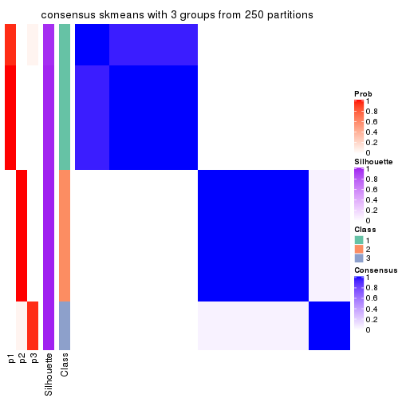
consensus_heatmap(res, k = 4)
consensus_heatmap(res, k = 5)
consensus_heatmap(res, k = 6)
Heatmaps for the membership of samples in all partitions to see how consistent they are:
membership_heatmap(res, k = 2)
membership_heatmap(res, k = 3)
membership_heatmap(res, k = 4)
membership_heatmap(res, k = 5)
membership_heatmap(res, k = 6)
As soon as we have had the classes for columns, we can look for signatures which are significantly different between classes which can be candidate marks for certain classes. Following are the heatmaps for signatures.
Signature heatmaps where rows are scaled:
get_signatures(res, k = 2)
get_signatures(res, k = 3)
get_signatures(res, k = 4)
get_signatures(res, k = 5)
get_signatures(res, k = 6)
Signature heatmaps where rows are not scaled:
get_signatures(res, k = 2, scale_rows = FALSE)
get_signatures(res, k = 3, scale_rows = FALSE)
get_signatures(res, k = 4, scale_rows = FALSE)
get_signatures(res, k = 5, scale_rows = FALSE)
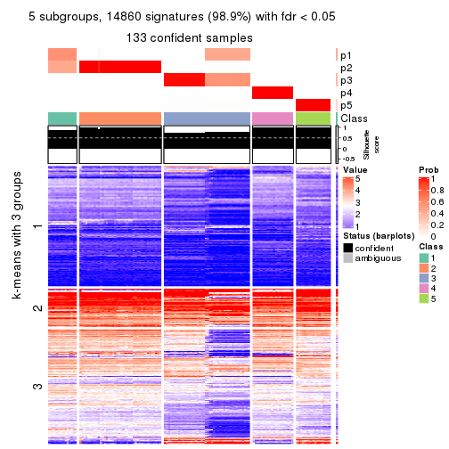
get_signatures(res, k = 6, scale_rows = FALSE)
Compare the overlap of signatures from different k:
compare_signatures(res)
get_signature() returns a data frame invisibly. TO get the list of signatures, the function
call should be assigned to a variable explicitly. In following code, if plot argument is set
to FALSE, no heatmap is plotted while only the differential analysis is performed.
# code only for demonstration
tb = get_signature(res, k = ..., plot = FALSE)
An example of the output of tb is:
#> which_row fdr mean_1 mean_2 scaled_mean_1 scaled_mean_2 km
#> 1 38 0.042760348 8.373488 9.131774 -0.5533452 0.5164555 1
#> 2 40 0.018707592 7.106213 8.469186 -0.6173731 0.5762149 1
#> 3 55 0.019134737 10.221463 11.207825 -0.6159697 0.5749050 1
#> 4 59 0.006059896 5.921854 7.869574 -0.6899429 0.6439467 1
#> 5 60 0.018055526 8.928898 10.211722 -0.6204761 0.5791110 1
#> 6 98 0.009384629 15.714769 14.887706 0.6635654 -0.6193277 2
...
The columns in tb are:
which_row: row indices corresponding to the input matrix.fdr: FDR for the differential test. mean_x: The mean value in group x.scaled_mean_x: The mean value in group x after rows are scaled.km: Row groups if k-means clustering is applied to rows.UMAP plot which shows how samples are separated.
dimension_reduction(res, k = 2, method = "UMAP")
dimension_reduction(res, k = 3, method = "UMAP")
dimension_reduction(res, k = 4, method = "UMAP")
dimension_reduction(res, k = 5, method = "UMAP")
dimension_reduction(res, k = 6, method = "UMAP")
Following heatmap shows how subgroups are split when increasing k:
collect_classes(res)
If matrix rows can be associated to genes, consider to use GO_Enrichment(res,
...) to perform function enrichment for the signature genes.
The object with results only for a single top-value method and a single partition method can be extracted as:
res = res_list["MAD", "pam"]
# you can also extract it by
# res = res_list["MAD:pam"]
A summary of res and all the functions that can be applied to it:
res
#> A 'ConsensusPartition' object with k = 2, 3, 4, 5, 6.
#> On a matrix with 15028 rows and 134 columns.
#> Top rows (1000, 2000, 3000, 4000, 5000) are extracted by 'MAD' method.
#> Subgroups are detected by 'pam' method.
#> Performed in total 1250 partitions by row resampling.
#> Best k for subgroups seems to be 6.
#>
#> Following methods can be applied to this 'ConsensusPartition' object:
#> [1] "cola_report" "collect_classes" "collect_plots"
#> [4] "collect_stats" "colnames" "compare_signatures"
#> [7] "consensus_heatmap" "dimension_reduction" "functional_enrichment"
#> [10] "get_anno_col" "get_anno" "get_classes"
#> [13] "get_consensus" "get_matrix" "get_membership"
#> [16] "get_param" "get_signatures" "get_stats"
#> [19] "is_best_k" "is_stable_k" "membership_heatmap"
#> [22] "ncol" "nrow" "plot_ecdf"
#> [25] "rownames" "select_partition_number" "show"
#> [28] "suggest_best_k" "test_to_known_factors"
collect_plots() function collects all the plots made from res for all k (number of partitions)
into one single page to provide an easy and fast comparison between different k.
collect_plots(res)
The plots are:
k and the heatmap of
predicted classes for each k.k.k.k.All the plots in panels can be made by individual functions and they are plotted later in this section.
select_partition_number() produces several plots showing different
statistics for choosing “optimized” k. There are following statistics:
k;k, the area increased is defined as \(A_k - A_{k-1}\).The detailed explanations of these statistics can be found in the cola vignette.
Generally speaking, lower PAC score, higher mean silhouette score or higher
concordance corresponds to better partition. Rand index and Jaccard index
measure how similar the current partition is compared to partition with k-1.
If they are too similar, we won't accept k is better than k-1.
select_partition_number(res)
The numeric values for all these statistics can be obtained by get_stats().
get_stats(res)
#> k 1-PAC mean_silhouette concordance area_increased Rand Jaccard
#> 2 2 1.000 0.953 0.982 0.4924 0.503 0.503
#> 3 3 0.772 0.840 0.829 0.2174 0.906 0.813
#> 4 4 1.000 0.994 0.997 0.1850 0.858 0.662
#> 5 5 1.000 0.993 0.997 0.0628 0.952 0.834
#> 6 6 1.000 0.992 0.997 0.0863 0.934 0.733
suggest_best_k() suggests the best \(k\) based on these statistics. The rules are as follows:
NA.suggest_best_k(res)
#> [1] 6
#> attr(,"optional")
#> [1] 2 4 5
There is also optional best \(k\) = 2 4 5 that is worth to check.
Following shows the table of the partitions (You need to click the show/hide
code output link to see it). The membership matrix (columns with name p*)
is inferred by
clue::cl_consensus()
function with the SE method. Basically the value in the membership matrix
represents the probability to belong to a certain group. The finall class
label for an item is determined with the group with highest probability it
belongs to.
In get_classes() function, the entropy is calculated from the membership
matrix and the silhouette score is calculated from the consensus matrix.
cbind(get_classes(res, k = 2), get_membership(res, k = 2))
#> class entropy silhouette p1 p2
#> SRR1550981 1 0.000 0.9618 1.000 0.000
#> SRR1550982 1 0.000 0.9618 1.000 0.000
#> SRR1550983 1 0.000 0.9618 1.000 0.000
#> SRR1550984 1 0.999 0.1279 0.520 0.480
#> SRR1550986 1 0.000 0.9618 1.000 0.000
#> SRR1550985 1 1.000 0.0996 0.512 0.488
#> SRR1550988 2 0.000 0.9969 0.000 1.000
#> SRR1550987 1 0.000 0.9618 1.000 0.000
#> SRR1550989 2 0.000 0.9969 0.000 1.000
#> SRR1550990 2 0.000 0.9969 0.000 1.000
#> SRR1550991 2 0.000 0.9969 0.000 1.000
#> SRR1550992 1 0.000 0.9618 1.000 0.000
#> SRR1550994 2 0.000 0.9969 0.000 1.000
#> SRR1550993 1 0.000 0.9618 1.000 0.000
#> SRR1550995 2 0.000 0.9969 0.000 1.000
#> SRR1550996 2 0.000 0.9969 0.000 1.000
#> SRR1550997 1 0.000 0.9618 1.000 0.000
#> SRR1550998 1 0.000 0.9618 1.000 0.000
#> SRR1551000 2 0.000 0.9969 0.000 1.000
#> SRR1550999 2 0.000 0.9969 0.000 1.000
#> SRR1551001 2 0.000 0.9969 0.000 1.000
#> SRR1551002 1 0.000 0.9618 1.000 0.000
#> SRR1551003 1 0.000 0.9618 1.000 0.000
#> SRR1551004 2 0.000 0.9969 0.000 1.000
#> SRR1551006 2 0.000 0.9969 0.000 1.000
#> SRR1551005 2 0.000 0.9969 0.000 1.000
#> SRR1551007 2 0.000 0.9969 0.000 1.000
#> SRR1551008 1 0.000 0.9618 1.000 0.000
#> SRR1551009 1 0.000 0.9618 1.000 0.000
#> SRR1551010 2 0.000 0.9969 0.000 1.000
#> SRR1551012 2 0.000 0.9969 0.000 1.000
#> SRR1551011 2 0.000 0.9969 0.000 1.000
#> SRR1551013 1 0.000 0.9618 1.000 0.000
#> SRR1551014 1 0.000 0.9618 1.000 0.000
#> SRR1551015 2 0.224 0.9588 0.036 0.964
#> SRR1551016 2 0.000 0.9969 0.000 1.000
#> SRR1551017 2 0.000 0.9969 0.000 1.000
#> SRR1551018 2 0.000 0.9969 0.000 1.000
#> SRR1551019 1 0.000 0.9618 1.000 0.000
#> SRR1551021 1 0.000 0.9618 1.000 0.000
#> SRR1551022 2 0.000 0.9969 0.000 1.000
#> SRR1551023 2 0.000 0.9969 0.000 1.000
#> SRR1551020 1 0.000 0.9618 1.000 0.000
#> SRR1551024 2 0.000 0.9969 0.000 1.000
#> SRR1551026 1 0.000 0.9618 1.000 0.000
#> SRR1551025 1 0.000 0.9618 1.000 0.000
#> SRR1551027 1 0.000 0.9618 1.000 0.000
#> SRR1551028 2 0.000 0.9969 0.000 1.000
#> SRR1551029 2 0.000 0.9969 0.000 1.000
#> SRR1551030 2 0.000 0.9969 0.000 1.000
#> SRR1551031 2 0.000 0.9969 0.000 1.000
#> SRR1551032 1 0.000 0.9618 1.000 0.000
#> SRR1551034 1 0.000 0.9618 1.000 0.000
#> SRR1551033 1 0.000 0.9618 1.000 0.000
#> SRR1551035 2 0.000 0.9969 0.000 1.000
#> SRR1551036 2 0.000 0.9969 0.000 1.000
#> SRR1551037 2 0.000 0.9969 0.000 1.000
#> SRR1551038 2 0.000 0.9969 0.000 1.000
#> SRR1551039 1 0.000 0.9618 1.000 0.000
#> SRR1551040 1 0.000 0.9618 1.000 0.000
#> SRR1551041 1 0.000 0.9618 1.000 0.000
#> SRR1551042 2 0.000 0.9969 0.000 1.000
#> SRR1551043 2 0.000 0.9969 0.000 1.000
#> SRR1551044 2 0.000 0.9969 0.000 1.000
#> SRR1551045 2 0.000 0.9969 0.000 1.000
#> SRR1551046 1 0.000 0.9618 1.000 0.000
#> SRR1551047 1 0.000 0.9618 1.000 0.000
#> SRR1551048 1 0.000 0.9618 1.000 0.000
#> SRR1551049 2 0.000 0.9969 0.000 1.000
#> SRR1551050 2 0.000 0.9969 0.000 1.000
#> SRR1551051 2 0.000 0.9969 0.000 1.000
#> SRR1551052 2 0.000 0.9969 0.000 1.000
#> SRR1551053 2 0.689 0.7607 0.184 0.816
#> SRR1551054 1 0.000 0.9618 1.000 0.000
#> SRR1551055 1 0.000 0.9618 1.000 0.000
#> SRR1551056 2 0.000 0.9969 0.000 1.000
#> SRR1551057 2 0.000 0.9969 0.000 1.000
#> SRR1551058 2 0.000 0.9969 0.000 1.000
#> SRR1551059 2 0.000 0.9969 0.000 1.000
#> SRR1551060 1 0.876 0.5838 0.704 0.296
#> SRR1551061 1 0.000 0.9618 1.000 0.000
#> SRR1551062 1 0.000 0.9618 1.000 0.000
#> SRR1551063 2 0.000 0.9969 0.000 1.000
#> SRR1551064 2 0.000 0.9969 0.000 1.000
#> SRR1551065 2 0.000 0.9969 0.000 1.000
#> SRR1551066 2 0.000 0.9969 0.000 1.000
#> SRR1551067 1 0.000 0.9618 1.000 0.000
#> SRR1551068 1 0.000 0.9618 1.000 0.000
#> SRR1551069 1 0.000 0.9618 1.000 0.000
#> SRR1551070 2 0.000 0.9969 0.000 1.000
#> SRR1551071 2 0.000 0.9969 0.000 1.000
#> SRR1551072 2 0.000 0.9969 0.000 1.000
#> SRR1551073 2 0.000 0.9969 0.000 1.000
#> SRR1551074 1 0.000 0.9618 1.000 0.000
#> SRR1551075 1 0.000 0.9618 1.000 0.000
#> SRR1551076 1 0.000 0.9618 1.000 0.000
#> SRR1551077 2 0.000 0.9969 0.000 1.000
#> SRR1551078 2 0.000 0.9969 0.000 1.000
#> SRR1551079 2 0.000 0.9969 0.000 1.000
#> SRR1551080 2 0.000 0.9969 0.000 1.000
#> SRR1551081 1 0.998 0.1415 0.524 0.476
#> SRR1551082 1 0.000 0.9618 1.000 0.000
#> SRR1551083 1 0.000 0.9618 1.000 0.000
#> SRR1551084 2 0.000 0.9969 0.000 1.000
#> SRR1551085 2 0.000 0.9969 0.000 1.000
#> SRR1551086 2 0.000 0.9969 0.000 1.000
#> SRR1551088 1 0.000 0.9618 1.000 0.000
#> SRR1551087 1 0.000 0.9618 1.000 0.000
#> SRR1551089 1 0.000 0.9618 1.000 0.000
#> SRR1551090 2 0.000 0.9969 0.000 1.000
#> SRR1551091 2 0.000 0.9969 0.000 1.000
#> SRR1551092 2 0.000 0.9969 0.000 1.000
#> SRR1551093 2 0.000 0.9969 0.000 1.000
#> SRR1551094 1 0.000 0.9618 1.000 0.000
#> SRR1551095 1 0.000 0.9618 1.000 0.000
#> SRR1551096 1 0.000 0.9618 1.000 0.000
#> SRR1551097 2 0.000 0.9969 0.000 1.000
#> SRR1551098 2 0.000 0.9969 0.000 1.000
#> SRR1551099 2 0.000 0.9969 0.000 1.000
#> SRR1551101 1 0.000 0.9618 1.000 0.000
#> SRR1551100 1 0.987 0.2763 0.568 0.432
#> SRR1551102 1 0.000 0.9618 1.000 0.000
#> SRR1551103 2 0.000 0.9969 0.000 1.000
#> SRR1551104 2 0.000 0.9969 0.000 1.000
#> SRR1551105 2 0.000 0.9969 0.000 1.000
#> SRR1551106 2 0.000 0.9969 0.000 1.000
#> SRR1551107 1 0.000 0.9618 1.000 0.000
#> SRR1551108 1 0.000 0.9618 1.000 0.000
#> SRR1551109 1 0.000 0.9618 1.000 0.000
#> SRR1551110 2 0.000 0.9969 0.000 1.000
#> SRR1551111 2 0.000 0.9969 0.000 1.000
#> SRR1551112 2 0.000 0.9969 0.000 1.000
#> SRR1551113 2 0.000 0.9969 0.000 1.000
#> SRR1551114 1 0.000 0.9618 1.000 0.000
cbind(get_classes(res, k = 3), get_membership(res, k = 3))
#> class entropy silhouette p1 p2 p3
#> SRR1550981 1 0.630 0.9993 0.520 0.000 0.480
#> SRR1550982 1 0.630 0.9993 0.520 0.000 0.480
#> SRR1550983 1 0.630 0.9993 0.520 0.000 0.480
#> SRR1550984 3 0.956 -0.1536 0.236 0.284 0.480
#> SRR1550986 3 0.000 0.8748 0.000 0.000 1.000
#> SRR1550985 3 0.950 -0.0873 0.208 0.316 0.476
#> SRR1550988 2 0.000 0.6075 0.000 1.000 0.000
#> SRR1550987 1 0.630 0.9993 0.520 0.000 0.480
#> SRR1550989 2 0.630 0.8756 0.480 0.520 0.000
#> SRR1550990 2 0.630 0.8756 0.480 0.520 0.000
#> SRR1550991 2 0.630 0.8756 0.480 0.520 0.000
#> SRR1550992 3 0.000 0.8748 0.000 0.000 1.000
#> SRR1550994 2 0.000 0.6075 0.000 1.000 0.000
#> SRR1550993 1 0.630 0.9993 0.520 0.000 0.480
#> SRR1550995 2 0.630 0.8756 0.480 0.520 0.000
#> SRR1550996 2 0.630 0.8756 0.480 0.520 0.000
#> SRR1550997 3 0.000 0.8748 0.000 0.000 1.000
#> SRR1550998 1 0.630 0.9993 0.520 0.000 0.480
#> SRR1551000 2 0.630 0.8756 0.480 0.520 0.000
#> SRR1550999 2 0.000 0.6075 0.000 1.000 0.000
#> SRR1551001 2 0.630 0.8756 0.480 0.520 0.000
#> SRR1551002 3 0.000 0.8748 0.000 0.000 1.000
#> SRR1551003 1 0.630 0.9993 0.520 0.000 0.480
#> SRR1551004 2 0.000 0.6075 0.000 1.000 0.000
#> SRR1551006 2 0.630 0.8756 0.480 0.520 0.000
#> SRR1551005 2 0.630 0.8756 0.480 0.520 0.000
#> SRR1551007 2 0.630 0.8756 0.480 0.520 0.000
#> SRR1551008 3 0.000 0.8748 0.000 0.000 1.000
#> SRR1551009 1 0.630 0.9993 0.520 0.000 0.480
#> SRR1551010 2 0.000 0.6075 0.000 1.000 0.000
#> SRR1551012 2 0.630 0.8756 0.480 0.520 0.000
#> SRR1551011 2 0.630 0.8756 0.480 0.520 0.000
#> SRR1551013 3 0.000 0.8748 0.000 0.000 1.000
#> SRR1551014 1 0.630 0.9993 0.520 0.000 0.480
#> SRR1551015 2 0.000 0.6075 0.000 1.000 0.000
#> SRR1551016 2 0.630 0.8756 0.480 0.520 0.000
#> SRR1551017 2 0.630 0.8756 0.480 0.520 0.000
#> SRR1551018 2 0.630 0.8756 0.480 0.520 0.000
#> SRR1551019 1 0.630 0.9993 0.520 0.000 0.480
#> SRR1551021 1 0.630 0.9993 0.520 0.000 0.480
#> SRR1551022 2 0.000 0.6075 0.000 1.000 0.000
#> SRR1551023 2 0.630 0.8756 0.480 0.520 0.000
#> SRR1551020 3 0.000 0.8748 0.000 0.000 1.000
#> SRR1551024 2 0.630 0.8756 0.480 0.520 0.000
#> SRR1551026 3 0.000 0.8748 0.000 0.000 1.000
#> SRR1551025 3 0.000 0.8748 0.000 0.000 1.000
#> SRR1551027 1 0.630 0.9993 0.520 0.000 0.480
#> SRR1551028 2 0.000 0.6075 0.000 1.000 0.000
#> SRR1551029 2 0.630 0.8756 0.480 0.520 0.000
#> SRR1551030 2 0.630 0.8756 0.480 0.520 0.000
#> SRR1551031 2 0.630 0.8756 0.480 0.520 0.000
#> SRR1551032 1 0.630 0.9993 0.520 0.000 0.480
#> SRR1551034 1 0.630 0.9993 0.520 0.000 0.480
#> SRR1551033 3 0.000 0.8748 0.000 0.000 1.000
#> SRR1551035 2 0.000 0.6075 0.000 1.000 0.000
#> SRR1551036 2 0.630 0.8756 0.480 0.520 0.000
#> SRR1551037 2 0.630 0.8756 0.480 0.520 0.000
#> SRR1551038 2 0.630 0.8756 0.480 0.520 0.000
#> SRR1551039 1 0.630 0.9993 0.520 0.000 0.480
#> SRR1551040 3 0.000 0.8748 0.000 0.000 1.000
#> SRR1551041 1 0.630 0.9993 0.520 0.000 0.480
#> SRR1551042 2 0.000 0.6075 0.000 1.000 0.000
#> SRR1551043 2 0.630 0.8756 0.480 0.520 0.000
#> SRR1551044 2 0.630 0.8756 0.480 0.520 0.000
#> SRR1551045 2 0.630 0.8756 0.480 0.520 0.000
#> SRR1551046 1 0.630 0.9993 0.520 0.000 0.480
#> SRR1551047 3 0.000 0.8748 0.000 0.000 1.000
#> SRR1551048 1 0.630 0.9993 0.520 0.000 0.480
#> SRR1551049 2 0.000 0.6075 0.000 1.000 0.000
#> SRR1551050 2 0.630 0.8756 0.480 0.520 0.000
#> SRR1551051 2 0.630 0.8756 0.480 0.520 0.000
#> SRR1551052 2 0.630 0.8756 0.480 0.520 0.000
#> SRR1551053 2 0.926 0.6673 0.284 0.520 0.196
#> SRR1551054 3 0.000 0.8748 0.000 0.000 1.000
#> SRR1551055 1 0.630 0.9993 0.520 0.000 0.480
#> SRR1551056 2 0.000 0.6075 0.000 1.000 0.000
#> SRR1551057 2 0.630 0.8756 0.480 0.520 0.000
#> SRR1551058 2 0.630 0.8756 0.480 0.520 0.000
#> SRR1551059 2 0.630 0.8756 0.480 0.520 0.000
#> SRR1551060 1 0.630 0.9993 0.520 0.000 0.480
#> SRR1551061 3 0.000 0.8748 0.000 0.000 1.000
#> SRR1551062 1 0.630 0.9993 0.520 0.000 0.480
#> SRR1551063 2 0.000 0.6075 0.000 1.000 0.000
#> SRR1551064 2 0.630 0.8756 0.480 0.520 0.000
#> SRR1551065 2 0.630 0.8756 0.480 0.520 0.000
#> SRR1551066 2 0.630 0.8756 0.480 0.520 0.000
#> SRR1551067 1 0.630 0.9993 0.520 0.000 0.480
#> SRR1551068 3 0.000 0.8748 0.000 0.000 1.000
#> SRR1551069 1 0.630 0.9993 0.520 0.000 0.480
#> SRR1551070 2 0.000 0.6075 0.000 1.000 0.000
#> SRR1551071 2 0.630 0.8756 0.480 0.520 0.000
#> SRR1551072 2 0.630 0.8756 0.480 0.520 0.000
#> SRR1551073 2 0.630 0.8756 0.480 0.520 0.000
#> SRR1551074 1 0.630 0.9993 0.520 0.000 0.480
#> SRR1551075 3 0.000 0.8748 0.000 0.000 1.000
#> SRR1551076 1 0.630 0.9993 0.520 0.000 0.480
#> SRR1551077 2 0.000 0.6075 0.000 1.000 0.000
#> SRR1551078 2 0.630 0.8756 0.480 0.520 0.000
#> SRR1551079 2 0.630 0.8756 0.480 0.520 0.000
#> SRR1551080 2 0.630 0.8756 0.480 0.520 0.000
#> SRR1551081 3 0.886 -0.6306 0.400 0.120 0.480
#> SRR1551082 3 0.000 0.8748 0.000 0.000 1.000
#> SRR1551083 1 0.630 0.9993 0.520 0.000 0.480
#> SRR1551084 2 0.000 0.6075 0.000 1.000 0.000
#> SRR1551085 2 0.630 0.8756 0.480 0.520 0.000
#> SRR1551086 2 0.630 0.8756 0.480 0.520 0.000
#> SRR1551088 3 0.000 0.8748 0.000 0.000 1.000
#> SRR1551087 1 0.630 0.9993 0.520 0.000 0.480
#> SRR1551089 1 0.630 0.9993 0.520 0.000 0.480
#> SRR1551090 2 0.000 0.6075 0.000 1.000 0.000
#> SRR1551091 2 0.630 0.8756 0.480 0.520 0.000
#> SRR1551092 2 0.630 0.8756 0.480 0.520 0.000
#> SRR1551093 2 0.630 0.8756 0.480 0.520 0.000
#> SRR1551094 1 0.630 0.9993 0.520 0.000 0.480
#> SRR1551095 3 0.000 0.8748 0.000 0.000 1.000
#> SRR1551096 1 0.630 0.9993 0.520 0.000 0.480
#> SRR1551097 2 0.000 0.6075 0.000 1.000 0.000
#> SRR1551098 2 0.630 0.8756 0.480 0.520 0.000
#> SRR1551099 2 0.630 0.8756 0.480 0.520 0.000
#> SRR1551101 3 0.000 0.8748 0.000 0.000 1.000
#> SRR1551100 1 0.668 0.9771 0.512 0.008 0.480
#> SRR1551102 1 0.630 0.9993 0.520 0.000 0.480
#> SRR1551103 2 0.000 0.6075 0.000 1.000 0.000
#> SRR1551104 2 0.630 0.8756 0.480 0.520 0.000
#> SRR1551105 2 0.630 0.8756 0.480 0.520 0.000
#> SRR1551106 2 0.630 0.8756 0.480 0.520 0.000
#> SRR1551107 1 0.630 0.9993 0.520 0.000 0.480
#> SRR1551108 3 0.000 0.8748 0.000 0.000 1.000
#> SRR1551109 1 0.630 0.9993 0.520 0.000 0.480
#> SRR1551110 2 0.000 0.6075 0.000 1.000 0.000
#> SRR1551111 2 0.630 0.8756 0.480 0.520 0.000
#> SRR1551112 2 0.630 0.8756 0.480 0.520 0.000
#> SRR1551113 2 0.630 0.8756 0.480 0.520 0.000
#> SRR1551114 1 0.630 0.9993 0.520 0.000 0.480
cbind(get_classes(res, k = 4), get_membership(res, k = 4))
#> class entropy silhouette p1 p2 p3 p4
#> SRR1550981 1 0.0000 0.992 1.000 0.000 0.000 0
#> SRR1550982 1 0.0000 0.992 1.000 0.000 0.000 0
#> SRR1550983 1 0.0000 0.992 1.000 0.000 0.000 0
#> SRR1550984 1 0.0000 0.992 1.000 0.000 0.000 0
#> SRR1550986 3 0.0000 1.000 0.000 0.000 1.000 0
#> SRR1550985 1 0.0000 0.992 1.000 0.000 0.000 0
#> SRR1550988 4 0.0000 1.000 0.000 0.000 0.000 1
#> SRR1550987 1 0.0336 0.992 0.992 0.000 0.008 0
#> SRR1550989 2 0.0000 0.997 0.000 1.000 0.000 0
#> SRR1550990 2 0.0000 0.997 0.000 1.000 0.000 0
#> SRR1550991 2 0.0000 0.997 0.000 1.000 0.000 0
#> SRR1550992 3 0.0000 1.000 0.000 0.000 1.000 0
#> SRR1550994 4 0.0000 1.000 0.000 0.000 0.000 1
#> SRR1550993 1 0.0336 0.992 0.992 0.000 0.008 0
#> SRR1550995 2 0.0000 0.997 0.000 1.000 0.000 0
#> SRR1550996 2 0.0000 0.997 0.000 1.000 0.000 0
#> SRR1550997 3 0.0000 1.000 0.000 0.000 1.000 0
#> SRR1550998 1 0.0336 0.992 0.992 0.000 0.008 0
#> SRR1551000 2 0.0000 0.997 0.000 1.000 0.000 0
#> SRR1550999 4 0.0000 1.000 0.000 0.000 0.000 1
#> SRR1551001 2 0.0000 0.997 0.000 1.000 0.000 0
#> SRR1551002 3 0.0000 1.000 0.000 0.000 1.000 0
#> SRR1551003 1 0.0336 0.992 0.992 0.000 0.008 0
#> SRR1551004 4 0.0000 1.000 0.000 0.000 0.000 1
#> SRR1551006 2 0.0000 0.997 0.000 1.000 0.000 0
#> SRR1551005 2 0.0000 0.997 0.000 1.000 0.000 0
#> SRR1551007 2 0.0000 0.997 0.000 1.000 0.000 0
#> SRR1551008 3 0.0000 1.000 0.000 0.000 1.000 0
#> SRR1551009 1 0.0336 0.992 0.992 0.000 0.008 0
#> SRR1551010 4 0.0000 1.000 0.000 0.000 0.000 1
#> SRR1551012 2 0.0000 0.997 0.000 1.000 0.000 0
#> SRR1551011 2 0.0000 0.997 0.000 1.000 0.000 0
#> SRR1551013 3 0.0000 1.000 0.000 0.000 1.000 0
#> SRR1551014 1 0.0336 0.992 0.992 0.000 0.008 0
#> SRR1551015 4 0.0000 1.000 0.000 0.000 0.000 1
#> SRR1551016 2 0.0000 0.997 0.000 1.000 0.000 0
#> SRR1551017 2 0.0000 0.997 0.000 1.000 0.000 0
#> SRR1551018 2 0.0000 0.997 0.000 1.000 0.000 0
#> SRR1551019 1 0.0000 0.992 1.000 0.000 0.000 0
#> SRR1551021 1 0.0336 0.992 0.992 0.000 0.008 0
#> SRR1551022 4 0.0000 1.000 0.000 0.000 0.000 1
#> SRR1551023 2 0.0000 0.997 0.000 1.000 0.000 0
#> SRR1551020 3 0.0000 1.000 0.000 0.000 1.000 0
#> SRR1551024 2 0.0336 0.989 0.008 0.992 0.000 0
#> SRR1551026 3 0.0000 1.000 0.000 0.000 1.000 0
#> SRR1551025 3 0.0000 1.000 0.000 0.000 1.000 0
#> SRR1551027 1 0.0336 0.992 0.992 0.000 0.008 0
#> SRR1551028 4 0.0000 1.000 0.000 0.000 0.000 1
#> SRR1551029 2 0.0000 0.997 0.000 1.000 0.000 0
#> SRR1551030 2 0.0000 0.997 0.000 1.000 0.000 0
#> SRR1551031 2 0.0000 0.997 0.000 1.000 0.000 0
#> SRR1551032 1 0.3024 0.834 0.852 0.000 0.148 0
#> SRR1551034 1 0.0336 0.992 0.992 0.000 0.008 0
#> SRR1551033 3 0.0000 1.000 0.000 0.000 1.000 0
#> SRR1551035 4 0.0000 1.000 0.000 0.000 0.000 1
#> SRR1551036 2 0.0000 0.997 0.000 1.000 0.000 0
#> SRR1551037 2 0.0000 0.997 0.000 1.000 0.000 0
#> SRR1551038 2 0.0000 0.997 0.000 1.000 0.000 0
#> SRR1551039 1 0.0000 0.992 1.000 0.000 0.000 0
#> SRR1551040 3 0.0000 1.000 0.000 0.000 1.000 0
#> SRR1551041 1 0.0336 0.992 0.992 0.000 0.008 0
#> SRR1551042 4 0.0000 1.000 0.000 0.000 0.000 1
#> SRR1551043 2 0.0000 0.997 0.000 1.000 0.000 0
#> SRR1551044 2 0.0000 0.997 0.000 1.000 0.000 0
#> SRR1551045 2 0.0000 0.997 0.000 1.000 0.000 0
#> SRR1551046 1 0.0000 0.992 1.000 0.000 0.000 0
#> SRR1551047 3 0.0000 1.000 0.000 0.000 1.000 0
#> SRR1551048 1 0.0336 0.992 0.992 0.000 0.008 0
#> SRR1551049 4 0.0000 1.000 0.000 0.000 0.000 1
#> SRR1551050 2 0.0000 0.997 0.000 1.000 0.000 0
#> SRR1551051 2 0.0000 0.997 0.000 1.000 0.000 0
#> SRR1551052 2 0.0000 0.997 0.000 1.000 0.000 0
#> SRR1551053 2 0.3074 0.815 0.152 0.848 0.000 0
#> SRR1551054 3 0.0000 1.000 0.000 0.000 1.000 0
#> SRR1551055 1 0.0336 0.992 0.992 0.000 0.008 0
#> SRR1551056 4 0.0000 1.000 0.000 0.000 0.000 1
#> SRR1551057 2 0.0000 0.997 0.000 1.000 0.000 0
#> SRR1551058 2 0.0000 0.997 0.000 1.000 0.000 0
#> SRR1551059 2 0.0000 0.997 0.000 1.000 0.000 0
#> SRR1551060 1 0.0000 0.992 1.000 0.000 0.000 0
#> SRR1551061 3 0.0000 1.000 0.000 0.000 1.000 0
#> SRR1551062 1 0.0336 0.992 0.992 0.000 0.008 0
#> SRR1551063 4 0.0000 1.000 0.000 0.000 0.000 1
#> SRR1551064 2 0.0000 0.997 0.000 1.000 0.000 0
#> SRR1551065 2 0.0000 0.997 0.000 1.000 0.000 0
#> SRR1551066 2 0.0000 0.997 0.000 1.000 0.000 0
#> SRR1551067 1 0.0000 0.992 1.000 0.000 0.000 0
#> SRR1551068 3 0.0000 1.000 0.000 0.000 1.000 0
#> SRR1551069 1 0.0336 0.992 0.992 0.000 0.008 0
#> SRR1551070 4 0.0000 1.000 0.000 0.000 0.000 1
#> SRR1551071 2 0.0000 0.997 0.000 1.000 0.000 0
#> SRR1551072 2 0.0000 0.997 0.000 1.000 0.000 0
#> SRR1551073 2 0.0000 0.997 0.000 1.000 0.000 0
#> SRR1551074 1 0.0000 0.992 1.000 0.000 0.000 0
#> SRR1551075 3 0.0000 1.000 0.000 0.000 1.000 0
#> SRR1551076 1 0.0336 0.992 0.992 0.000 0.008 0
#> SRR1551077 4 0.0000 1.000 0.000 0.000 0.000 1
#> SRR1551078 2 0.0000 0.997 0.000 1.000 0.000 0
#> SRR1551079 2 0.0000 0.997 0.000 1.000 0.000 0
#> SRR1551080 2 0.0000 0.997 0.000 1.000 0.000 0
#> SRR1551081 1 0.0000 0.992 1.000 0.000 0.000 0
#> SRR1551082 3 0.0000 1.000 0.000 0.000 1.000 0
#> SRR1551083 1 0.0336 0.992 0.992 0.000 0.008 0
#> SRR1551084 4 0.0000 1.000 0.000 0.000 0.000 1
#> SRR1551085 2 0.0000 0.997 0.000 1.000 0.000 0
#> SRR1551086 2 0.0000 0.997 0.000 1.000 0.000 0
#> SRR1551088 3 0.0000 1.000 0.000 0.000 1.000 0
#> SRR1551087 1 0.0000 0.992 1.000 0.000 0.000 0
#> SRR1551089 1 0.0336 0.992 0.992 0.000 0.008 0
#> SRR1551090 4 0.0000 1.000 0.000 0.000 0.000 1
#> SRR1551091 2 0.0000 0.997 0.000 1.000 0.000 0
#> SRR1551092 2 0.0000 0.997 0.000 1.000 0.000 0
#> SRR1551093 2 0.0000 0.997 0.000 1.000 0.000 0
#> SRR1551094 1 0.0000 0.992 1.000 0.000 0.000 0
#> SRR1551095 3 0.0000 1.000 0.000 0.000 1.000 0
#> SRR1551096 1 0.0336 0.992 0.992 0.000 0.008 0
#> SRR1551097 4 0.0000 1.000 0.000 0.000 0.000 1
#> SRR1551098 2 0.0000 0.997 0.000 1.000 0.000 0
#> SRR1551099 2 0.0000 0.997 0.000 1.000 0.000 0
#> SRR1551101 3 0.0000 1.000 0.000 0.000 1.000 0
#> SRR1551100 1 0.0000 0.992 1.000 0.000 0.000 0
#> SRR1551102 1 0.0336 0.992 0.992 0.000 0.008 0
#> SRR1551103 4 0.0000 1.000 0.000 0.000 0.000 1
#> SRR1551104 2 0.0000 0.997 0.000 1.000 0.000 0
#> SRR1551105 2 0.0000 0.997 0.000 1.000 0.000 0
#> SRR1551106 2 0.0000 0.997 0.000 1.000 0.000 0
#> SRR1551107 1 0.0000 0.992 1.000 0.000 0.000 0
#> SRR1551108 3 0.0000 1.000 0.000 0.000 1.000 0
#> SRR1551109 1 0.0336 0.992 0.992 0.000 0.008 0
#> SRR1551110 4 0.0000 1.000 0.000 0.000 0.000 1
#> SRR1551111 2 0.0000 0.997 0.000 1.000 0.000 0
#> SRR1551112 2 0.0000 0.997 0.000 1.000 0.000 0
#> SRR1551113 2 0.0000 0.997 0.000 1.000 0.000 0
#> SRR1551114 1 0.0000 0.992 1.000 0.000 0.000 0
cbind(get_classes(res, k = 5), get_membership(res, k = 5))
#> class entropy silhouette p1 p2 p3 p4 p5
#> SRR1550981 5 0.0000 0.999 0.000 0.000 0.000 0 1.000
#> SRR1550982 5 0.0000 0.999 0.000 0.000 0.000 0 1.000
#> SRR1550983 5 0.0000 0.999 0.000 0.000 0.000 0 1.000
#> SRR1550984 5 0.0000 0.999 0.000 0.000 0.000 0 1.000
#> SRR1550986 3 0.0000 0.990 0.000 0.000 1.000 0 0.000
#> SRR1550985 5 0.0000 0.999 0.000 0.000 0.000 0 1.000
#> SRR1550988 4 0.0000 1.000 0.000 0.000 0.000 1 0.000
#> SRR1550987 1 0.0000 1.000 1.000 0.000 0.000 0 0.000
#> SRR1550989 2 0.0000 0.996 0.000 1.000 0.000 0 0.000
#> SRR1550990 2 0.0000 0.996 0.000 1.000 0.000 0 0.000
#> SRR1550991 2 0.0000 0.996 0.000 1.000 0.000 0 0.000
#> SRR1550992 3 0.0000 0.990 0.000 0.000 1.000 0 0.000
#> SRR1550994 4 0.0000 1.000 0.000 0.000 0.000 1 0.000
#> SRR1550993 1 0.0000 1.000 1.000 0.000 0.000 0 0.000
#> SRR1550995 2 0.0000 0.996 0.000 1.000 0.000 0 0.000
#> SRR1550996 2 0.0000 0.996 0.000 1.000 0.000 0 0.000
#> SRR1550997 3 0.0000 0.990 0.000 0.000 1.000 0 0.000
#> SRR1550998 1 0.0000 1.000 1.000 0.000 0.000 0 0.000
#> SRR1551000 2 0.0000 0.996 0.000 1.000 0.000 0 0.000
#> SRR1550999 4 0.0000 1.000 0.000 0.000 0.000 1 0.000
#> SRR1551001 2 0.0000 0.996 0.000 1.000 0.000 0 0.000
#> SRR1551002 3 0.0000 0.990 0.000 0.000 1.000 0 0.000
#> SRR1551003 1 0.0000 1.000 1.000 0.000 0.000 0 0.000
#> SRR1551004 4 0.0000 1.000 0.000 0.000 0.000 1 0.000
#> SRR1551006 2 0.0000 0.996 0.000 1.000 0.000 0 0.000
#> SRR1551005 2 0.0000 0.996 0.000 1.000 0.000 0 0.000
#> SRR1551007 2 0.0000 0.996 0.000 1.000 0.000 0 0.000
#> SRR1551008 3 0.0000 0.990 0.000 0.000 1.000 0 0.000
#> SRR1551009 1 0.0000 1.000 1.000 0.000 0.000 0 0.000
#> SRR1551010 4 0.0000 1.000 0.000 0.000 0.000 1 0.000
#> SRR1551012 2 0.0000 0.996 0.000 1.000 0.000 0 0.000
#> SRR1551011 2 0.0000 0.996 0.000 1.000 0.000 0 0.000
#> SRR1551013 3 0.0000 0.990 0.000 0.000 1.000 0 0.000
#> SRR1551014 1 0.0000 1.000 1.000 0.000 0.000 0 0.000
#> SRR1551015 4 0.0000 1.000 0.000 0.000 0.000 1 0.000
#> SRR1551016 2 0.0000 0.996 0.000 1.000 0.000 0 0.000
#> SRR1551017 2 0.0000 0.996 0.000 1.000 0.000 0 0.000
#> SRR1551018 2 0.0000 0.996 0.000 1.000 0.000 0 0.000
#> SRR1551019 5 0.0000 0.999 0.000 0.000 0.000 0 1.000
#> SRR1551021 1 0.0000 1.000 1.000 0.000 0.000 0 0.000
#> SRR1551022 4 0.0000 1.000 0.000 0.000 0.000 1 0.000
#> SRR1551023 2 0.0000 0.996 0.000 1.000 0.000 0 0.000
#> SRR1551020 3 0.0000 0.990 0.000 0.000 1.000 0 0.000
#> SRR1551024 2 0.3039 0.763 0.000 0.808 0.000 0 0.192
#> SRR1551026 3 0.0000 0.990 0.000 0.000 1.000 0 0.000
#> SRR1551025 3 0.3074 0.756 0.000 0.000 0.804 0 0.196
#> SRR1551027 1 0.0000 1.000 1.000 0.000 0.000 0 0.000
#> SRR1551028 4 0.0000 1.000 0.000 0.000 0.000 1 0.000
#> SRR1551029 2 0.0000 0.996 0.000 1.000 0.000 0 0.000
#> SRR1551030 2 0.0000 0.996 0.000 1.000 0.000 0 0.000
#> SRR1551031 2 0.0000 0.996 0.000 1.000 0.000 0 0.000
#> SRR1551032 5 0.0451 0.989 0.004 0.000 0.008 0 0.988
#> SRR1551034 1 0.0000 1.000 1.000 0.000 0.000 0 0.000
#> SRR1551033 3 0.0000 0.990 0.000 0.000 1.000 0 0.000
#> SRR1551035 4 0.0000 1.000 0.000 0.000 0.000 1 0.000
#> SRR1551036 2 0.0000 0.996 0.000 1.000 0.000 0 0.000
#> SRR1551037 2 0.0000 0.996 0.000 1.000 0.000 0 0.000
#> SRR1551038 2 0.0000 0.996 0.000 1.000 0.000 0 0.000
#> SRR1551039 5 0.0000 0.999 0.000 0.000 0.000 0 1.000
#> SRR1551040 3 0.0000 0.990 0.000 0.000 1.000 0 0.000
#> SRR1551041 1 0.0000 1.000 1.000 0.000 0.000 0 0.000
#> SRR1551042 4 0.0000 1.000 0.000 0.000 0.000 1 0.000
#> SRR1551043 2 0.0000 0.996 0.000 1.000 0.000 0 0.000
#> SRR1551044 2 0.0000 0.996 0.000 1.000 0.000 0 0.000
#> SRR1551045 2 0.0000 0.996 0.000 1.000 0.000 0 0.000
#> SRR1551046 5 0.0000 0.999 0.000 0.000 0.000 0 1.000
#> SRR1551047 3 0.0000 0.990 0.000 0.000 1.000 0 0.000
#> SRR1551048 1 0.0000 1.000 1.000 0.000 0.000 0 0.000
#> SRR1551049 4 0.0000 1.000 0.000 0.000 0.000 1 0.000
#> SRR1551050 2 0.0000 0.996 0.000 1.000 0.000 0 0.000
#> SRR1551051 2 0.0000 0.996 0.000 1.000 0.000 0 0.000
#> SRR1551052 2 0.0000 0.996 0.000 1.000 0.000 0 0.000
#> SRR1551053 5 0.0000 0.999 0.000 0.000 0.000 0 1.000
#> SRR1551054 3 0.0000 0.990 0.000 0.000 1.000 0 0.000
#> SRR1551055 1 0.0000 1.000 1.000 0.000 0.000 0 0.000
#> SRR1551056 4 0.0000 1.000 0.000 0.000 0.000 1 0.000
#> SRR1551057 2 0.0000 0.996 0.000 1.000 0.000 0 0.000
#> SRR1551058 2 0.0000 0.996 0.000 1.000 0.000 0 0.000
#> SRR1551059 2 0.0000 0.996 0.000 1.000 0.000 0 0.000
#> SRR1551060 5 0.0000 0.999 0.000 0.000 0.000 0 1.000
#> SRR1551061 3 0.0000 0.990 0.000 0.000 1.000 0 0.000
#> SRR1551062 1 0.0000 1.000 1.000 0.000 0.000 0 0.000
#> SRR1551063 4 0.0000 1.000 0.000 0.000 0.000 1 0.000
#> SRR1551064 2 0.0000 0.996 0.000 1.000 0.000 0 0.000
#> SRR1551065 2 0.0000 0.996 0.000 1.000 0.000 0 0.000
#> SRR1551066 2 0.0000 0.996 0.000 1.000 0.000 0 0.000
#> SRR1551067 5 0.0000 0.999 0.000 0.000 0.000 0 1.000
#> SRR1551068 3 0.0000 0.990 0.000 0.000 1.000 0 0.000
#> SRR1551069 1 0.0000 1.000 1.000 0.000 0.000 0 0.000
#> SRR1551070 4 0.0000 1.000 0.000 0.000 0.000 1 0.000
#> SRR1551071 2 0.0000 0.996 0.000 1.000 0.000 0 0.000
#> SRR1551072 2 0.0000 0.996 0.000 1.000 0.000 0 0.000
#> SRR1551073 2 0.0000 0.996 0.000 1.000 0.000 0 0.000
#> SRR1551074 5 0.0000 0.999 0.000 0.000 0.000 0 1.000
#> SRR1551075 3 0.0000 0.990 0.000 0.000 1.000 0 0.000
#> SRR1551076 1 0.0000 1.000 1.000 0.000 0.000 0 0.000
#> SRR1551077 4 0.0000 1.000 0.000 0.000 0.000 1 0.000
#> SRR1551078 2 0.0000 0.996 0.000 1.000 0.000 0 0.000
#> SRR1551079 2 0.0000 0.996 0.000 1.000 0.000 0 0.000
#> SRR1551080 2 0.0000 0.996 0.000 1.000 0.000 0 0.000
#> SRR1551081 5 0.0000 0.999 0.000 0.000 0.000 0 1.000
#> SRR1551082 3 0.0000 0.990 0.000 0.000 1.000 0 0.000
#> SRR1551083 1 0.0000 1.000 1.000 0.000 0.000 0 0.000
#> SRR1551084 4 0.0000 1.000 0.000 0.000 0.000 1 0.000
#> SRR1551085 2 0.0000 0.996 0.000 1.000 0.000 0 0.000
#> SRR1551086 2 0.0000 0.996 0.000 1.000 0.000 0 0.000
#> SRR1551088 3 0.0000 0.990 0.000 0.000 1.000 0 0.000
#> SRR1551087 5 0.0000 0.999 0.000 0.000 0.000 0 1.000
#> SRR1551089 1 0.0000 1.000 1.000 0.000 0.000 0 0.000
#> SRR1551090 4 0.0000 1.000 0.000 0.000 0.000 1 0.000
#> SRR1551091 2 0.0000 0.996 0.000 1.000 0.000 0 0.000
#> SRR1551092 2 0.0000 0.996 0.000 1.000 0.000 0 0.000
#> SRR1551093 2 0.0000 0.996 0.000 1.000 0.000 0 0.000
#> SRR1551094 5 0.0000 0.999 0.000 0.000 0.000 0 1.000
#> SRR1551095 3 0.0000 0.990 0.000 0.000 1.000 0 0.000
#> SRR1551096 1 0.0000 1.000 1.000 0.000 0.000 0 0.000
#> SRR1551097 4 0.0000 1.000 0.000 0.000 0.000 1 0.000
#> SRR1551098 2 0.0000 0.996 0.000 1.000 0.000 0 0.000
#> SRR1551099 2 0.0000 0.996 0.000 1.000 0.000 0 0.000
#> SRR1551101 3 0.0000 0.990 0.000 0.000 1.000 0 0.000
#> SRR1551100 5 0.0000 0.999 0.000 0.000 0.000 0 1.000
#> SRR1551102 1 0.0000 1.000 1.000 0.000 0.000 0 0.000
#> SRR1551103 4 0.0000 1.000 0.000 0.000 0.000 1 0.000
#> SRR1551104 2 0.0000 0.996 0.000 1.000 0.000 0 0.000
#> SRR1551105 2 0.0000 0.996 0.000 1.000 0.000 0 0.000
#> SRR1551106 2 0.0000 0.996 0.000 1.000 0.000 0 0.000
#> SRR1551107 5 0.0000 0.999 0.000 0.000 0.000 0 1.000
#> SRR1551108 3 0.0000 0.990 0.000 0.000 1.000 0 0.000
#> SRR1551109 1 0.0000 1.000 1.000 0.000 0.000 0 0.000
#> SRR1551110 4 0.0000 1.000 0.000 0.000 0.000 1 0.000
#> SRR1551111 2 0.0000 0.996 0.000 1.000 0.000 0 0.000
#> SRR1551112 2 0.0000 0.996 0.000 1.000 0.000 0 0.000
#> SRR1551113 2 0.0000 0.996 0.000 1.000 0.000 0 0.000
#> SRR1551114 5 0.0000 0.999 0.000 0.000 0.000 0 1.000
cbind(get_classes(res, k = 6), get_membership(res, k = 6))
#> class entropy silhouette p1 p2 p3 p4 p5 p6
#> SRR1550981 5 0.0000 0.999 0.000 0.000 0.000 0 1.000 0.000
#> SRR1550982 5 0.0000 0.999 0.000 0.000 0.000 0 1.000 0.000
#> SRR1550983 5 0.0000 0.999 0.000 0.000 0.000 0 1.000 0.000
#> SRR1550984 5 0.0000 0.999 0.000 0.000 0.000 0 1.000 0.000
#> SRR1550986 3 0.0000 0.990 0.000 0.000 1.000 0 0.000 0.000
#> SRR1550985 5 0.0000 0.999 0.000 0.000 0.000 0 1.000 0.000
#> SRR1550988 4 0.0000 1.000 0.000 0.000 0.000 1 0.000 0.000
#> SRR1550987 1 0.0000 1.000 1.000 0.000 0.000 0 0.000 0.000
#> SRR1550989 2 0.0000 0.995 0.000 1.000 0.000 0 0.000 0.000
#> SRR1550990 2 0.0000 0.995 0.000 1.000 0.000 0 0.000 0.000
#> SRR1550991 6 0.0000 0.996 0.000 0.000 0.000 0 0.000 1.000
#> SRR1550992 3 0.0000 0.990 0.000 0.000 1.000 0 0.000 0.000
#> SRR1550994 4 0.0000 1.000 0.000 0.000 0.000 1 0.000 0.000
#> SRR1550993 1 0.0000 1.000 1.000 0.000 0.000 0 0.000 0.000
#> SRR1550995 2 0.0000 0.995 0.000 1.000 0.000 0 0.000 0.000
#> SRR1550996 2 0.0000 0.995 0.000 1.000 0.000 0 0.000 0.000
#> SRR1550997 3 0.0000 0.990 0.000 0.000 1.000 0 0.000 0.000
#> SRR1550998 1 0.0000 1.000 1.000 0.000 0.000 0 0.000 0.000
#> SRR1551000 2 0.0000 0.995 0.000 1.000 0.000 0 0.000 0.000
#> SRR1550999 4 0.0000 1.000 0.000 0.000 0.000 1 0.000 0.000
#> SRR1551001 2 0.0000 0.995 0.000 1.000 0.000 0 0.000 0.000
#> SRR1551002 3 0.0000 0.990 0.000 0.000 1.000 0 0.000 0.000
#> SRR1551003 1 0.0000 1.000 1.000 0.000 0.000 0 0.000 0.000
#> SRR1551004 4 0.0000 1.000 0.000 0.000 0.000 1 0.000 0.000
#> SRR1551006 2 0.0000 0.995 0.000 1.000 0.000 0 0.000 0.000
#> SRR1551005 2 0.0000 0.995 0.000 1.000 0.000 0 0.000 0.000
#> SRR1551007 6 0.0000 0.996 0.000 0.000 0.000 0 0.000 1.000
#> SRR1551008 3 0.0000 0.990 0.000 0.000 1.000 0 0.000 0.000
#> SRR1551009 1 0.0000 1.000 1.000 0.000 0.000 0 0.000 0.000
#> SRR1551010 4 0.0000 1.000 0.000 0.000 0.000 1 0.000 0.000
#> SRR1551012 2 0.0000 0.995 0.000 1.000 0.000 0 0.000 0.000
#> SRR1551011 2 0.0000 0.995 0.000 1.000 0.000 0 0.000 0.000
#> SRR1551013 3 0.0000 0.990 0.000 0.000 1.000 0 0.000 0.000
#> SRR1551014 1 0.0000 1.000 1.000 0.000 0.000 0 0.000 0.000
#> SRR1551015 4 0.0000 1.000 0.000 0.000 0.000 1 0.000 0.000
#> SRR1551016 2 0.0000 0.995 0.000 1.000 0.000 0 0.000 0.000
#> SRR1551017 6 0.1075 0.939 0.000 0.048 0.000 0 0.000 0.952
#> SRR1551018 6 0.0000 0.996 0.000 0.000 0.000 0 0.000 1.000
#> SRR1551019 5 0.0000 0.999 0.000 0.000 0.000 0 1.000 0.000
#> SRR1551021 1 0.0000 1.000 1.000 0.000 0.000 0 0.000 0.000
#> SRR1551022 4 0.0000 1.000 0.000 0.000 0.000 1 0.000 0.000
#> SRR1551023 2 0.0000 0.995 0.000 1.000 0.000 0 0.000 0.000
#> SRR1551020 3 0.0000 0.990 0.000 0.000 1.000 0 0.000 0.000
#> SRR1551024 2 0.2793 0.750 0.000 0.800 0.000 0 0.200 0.000
#> SRR1551026 3 0.0000 0.990 0.000 0.000 1.000 0 0.000 0.000
#> SRR1551025 3 0.2730 0.762 0.000 0.000 0.808 0 0.192 0.000
#> SRR1551027 1 0.0000 1.000 1.000 0.000 0.000 0 0.000 0.000
#> SRR1551028 4 0.0000 1.000 0.000 0.000 0.000 1 0.000 0.000
#> SRR1551029 2 0.0000 0.995 0.000 1.000 0.000 0 0.000 0.000
#> SRR1551030 2 0.0000 0.995 0.000 1.000 0.000 0 0.000 0.000
#> SRR1551031 6 0.0000 0.996 0.000 0.000 0.000 0 0.000 1.000
#> SRR1551032 5 0.0405 0.988 0.004 0.000 0.008 0 0.988 0.000
#> SRR1551034 1 0.0000 1.000 1.000 0.000 0.000 0 0.000 0.000
#> SRR1551033 3 0.0000 0.990 0.000 0.000 1.000 0 0.000 0.000
#> SRR1551035 4 0.0000 1.000 0.000 0.000 0.000 1 0.000 0.000
#> SRR1551036 2 0.0000 0.995 0.000 1.000 0.000 0 0.000 0.000
#> SRR1551037 2 0.0000 0.995 0.000 1.000 0.000 0 0.000 0.000
#> SRR1551038 6 0.0000 0.996 0.000 0.000 0.000 0 0.000 1.000
#> SRR1551039 5 0.0000 0.999 0.000 0.000 0.000 0 1.000 0.000
#> SRR1551040 3 0.0000 0.990 0.000 0.000 1.000 0 0.000 0.000
#> SRR1551041 1 0.0000 1.000 1.000 0.000 0.000 0 0.000 0.000
#> SRR1551042 4 0.0000 1.000 0.000 0.000 0.000 1 0.000 0.000
#> SRR1551043 2 0.0000 0.995 0.000 1.000 0.000 0 0.000 0.000
#> SRR1551044 2 0.0000 0.995 0.000 1.000 0.000 0 0.000 0.000
#> SRR1551045 6 0.0000 0.996 0.000 0.000 0.000 0 0.000 1.000
#> SRR1551046 5 0.0000 0.999 0.000 0.000 0.000 0 1.000 0.000
#> SRR1551047 3 0.0000 0.990 0.000 0.000 1.000 0 0.000 0.000
#> SRR1551048 1 0.0000 1.000 1.000 0.000 0.000 0 0.000 0.000
#> SRR1551049 4 0.0000 1.000 0.000 0.000 0.000 1 0.000 0.000
#> SRR1551050 2 0.0000 0.995 0.000 1.000 0.000 0 0.000 0.000
#> SRR1551051 2 0.0000 0.995 0.000 1.000 0.000 0 0.000 0.000
#> SRR1551052 6 0.0000 0.996 0.000 0.000 0.000 0 0.000 1.000
#> SRR1551053 5 0.0000 0.999 0.000 0.000 0.000 0 1.000 0.000
#> SRR1551054 3 0.0000 0.990 0.000 0.000 1.000 0 0.000 0.000
#> SRR1551055 1 0.0000 1.000 1.000 0.000 0.000 0 0.000 0.000
#> SRR1551056 4 0.0000 1.000 0.000 0.000 0.000 1 0.000 0.000
#> SRR1551057 2 0.0000 0.995 0.000 1.000 0.000 0 0.000 0.000
#> SRR1551058 2 0.0000 0.995 0.000 1.000 0.000 0 0.000 0.000
#> SRR1551059 6 0.0000 0.996 0.000 0.000 0.000 0 0.000 1.000
#> SRR1551060 5 0.0000 0.999 0.000 0.000 0.000 0 1.000 0.000
#> SRR1551061 3 0.0000 0.990 0.000 0.000 1.000 0 0.000 0.000
#> SRR1551062 1 0.0000 1.000 1.000 0.000 0.000 0 0.000 0.000
#> SRR1551063 4 0.0000 1.000 0.000 0.000 0.000 1 0.000 0.000
#> SRR1551064 2 0.0000 0.995 0.000 1.000 0.000 0 0.000 0.000
#> SRR1551065 2 0.0000 0.995 0.000 1.000 0.000 0 0.000 0.000
#> SRR1551066 6 0.0000 0.996 0.000 0.000 0.000 0 0.000 1.000
#> SRR1551067 5 0.0000 0.999 0.000 0.000 0.000 0 1.000 0.000
#> SRR1551068 3 0.0000 0.990 0.000 0.000 1.000 0 0.000 0.000
#> SRR1551069 1 0.0000 1.000 1.000 0.000 0.000 0 0.000 0.000
#> SRR1551070 4 0.0000 1.000 0.000 0.000 0.000 1 0.000 0.000
#> SRR1551071 2 0.0000 0.995 0.000 1.000 0.000 0 0.000 0.000
#> SRR1551072 2 0.0000 0.995 0.000 1.000 0.000 0 0.000 0.000
#> SRR1551073 6 0.0000 0.996 0.000 0.000 0.000 0 0.000 1.000
#> SRR1551074 5 0.0000 0.999 0.000 0.000 0.000 0 1.000 0.000
#> SRR1551075 3 0.0000 0.990 0.000 0.000 1.000 0 0.000 0.000
#> SRR1551076 1 0.0000 1.000 1.000 0.000 0.000 0 0.000 0.000
#> SRR1551077 4 0.0000 1.000 0.000 0.000 0.000 1 0.000 0.000
#> SRR1551078 2 0.0000 0.995 0.000 1.000 0.000 0 0.000 0.000
#> SRR1551079 2 0.0000 0.995 0.000 1.000 0.000 0 0.000 0.000
#> SRR1551080 6 0.0000 0.996 0.000 0.000 0.000 0 0.000 1.000
#> SRR1551081 5 0.0000 0.999 0.000 0.000 0.000 0 1.000 0.000
#> SRR1551082 3 0.0000 0.990 0.000 0.000 1.000 0 0.000 0.000
#> SRR1551083 1 0.0000 1.000 1.000 0.000 0.000 0 0.000 0.000
#> SRR1551084 4 0.0000 1.000 0.000 0.000 0.000 1 0.000 0.000
#> SRR1551085 2 0.0000 0.995 0.000 1.000 0.000 0 0.000 0.000
#> SRR1551086 2 0.0000 0.995 0.000 1.000 0.000 0 0.000 0.000
#> SRR1551088 3 0.0000 0.990 0.000 0.000 1.000 0 0.000 0.000
#> SRR1551087 5 0.0000 0.999 0.000 0.000 0.000 0 1.000 0.000
#> SRR1551089 1 0.0000 1.000 1.000 0.000 0.000 0 0.000 0.000
#> SRR1551090 4 0.0000 1.000 0.000 0.000 0.000 1 0.000 0.000
#> SRR1551091 2 0.0000 0.995 0.000 1.000 0.000 0 0.000 0.000
#> SRR1551092 2 0.0000 0.995 0.000 1.000 0.000 0 0.000 0.000
#> SRR1551093 6 0.0000 0.996 0.000 0.000 0.000 0 0.000 1.000
#> SRR1551094 5 0.0000 0.999 0.000 0.000 0.000 0 1.000 0.000
#> SRR1551095 3 0.0000 0.990 0.000 0.000 1.000 0 0.000 0.000
#> SRR1551096 1 0.0000 1.000 1.000 0.000 0.000 0 0.000 0.000
#> SRR1551097 4 0.0000 1.000 0.000 0.000 0.000 1 0.000 0.000
#> SRR1551098 2 0.0000 0.995 0.000 1.000 0.000 0 0.000 0.000
#> SRR1551099 2 0.0000 0.995 0.000 1.000 0.000 0 0.000 0.000
#> SRR1551101 3 0.0000 0.990 0.000 0.000 1.000 0 0.000 0.000
#> SRR1551100 5 0.0000 0.999 0.000 0.000 0.000 0 1.000 0.000
#> SRR1551102 1 0.0000 1.000 1.000 0.000 0.000 0 0.000 0.000
#> SRR1551103 4 0.0000 1.000 0.000 0.000 0.000 1 0.000 0.000
#> SRR1551104 2 0.0000 0.995 0.000 1.000 0.000 0 0.000 0.000
#> SRR1551105 2 0.0000 0.995 0.000 1.000 0.000 0 0.000 0.000
#> SRR1551106 6 0.0000 0.996 0.000 0.000 0.000 0 0.000 1.000
#> SRR1551107 5 0.0000 0.999 0.000 0.000 0.000 0 1.000 0.000
#> SRR1551108 3 0.0000 0.990 0.000 0.000 1.000 0 0.000 0.000
#> SRR1551109 1 0.0000 1.000 1.000 0.000 0.000 0 0.000 0.000
#> SRR1551110 4 0.0000 1.000 0.000 0.000 0.000 1 0.000 0.000
#> SRR1551111 2 0.0000 0.995 0.000 1.000 0.000 0 0.000 0.000
#> SRR1551112 2 0.0000 0.995 0.000 1.000 0.000 0 0.000 0.000
#> SRR1551113 6 0.0000 0.996 0.000 0.000 0.000 0 0.000 1.000
#> SRR1551114 5 0.0000 0.999 0.000 0.000 0.000 0 1.000 0.000
Heatmaps for the consensus matrix. It visualizes the probability of two samples to be in a same group.
consensus_heatmap(res, k = 2)

consensus_heatmap(res, k = 3)
consensus_heatmap(res, k = 4)
consensus_heatmap(res, k = 5)
consensus_heatmap(res, k = 6)
Heatmaps for the membership of samples in all partitions to see how consistent they are:
membership_heatmap(res, k = 2)
membership_heatmap(res, k = 3)
membership_heatmap(res, k = 4)
membership_heatmap(res, k = 5)
membership_heatmap(res, k = 6)
As soon as we have had the classes for columns, we can look for signatures which are significantly different between classes which can be candidate marks for certain classes. Following are the heatmaps for signatures.
Signature heatmaps where rows are scaled:
get_signatures(res, k = 2)
get_signatures(res, k = 3)
get_signatures(res, k = 4)
get_signatures(res, k = 5)
get_signatures(res, k = 6)
Signature heatmaps where rows are not scaled:
get_signatures(res, k = 2, scale_rows = FALSE)
get_signatures(res, k = 3, scale_rows = FALSE)
get_signatures(res, k = 4, scale_rows = FALSE)
get_signatures(res, k = 5, scale_rows = FALSE)
get_signatures(res, k = 6, scale_rows = FALSE)
Compare the overlap of signatures from different k:
compare_signatures(res)
get_signature() returns a data frame invisibly. TO get the list of signatures, the function
call should be assigned to a variable explicitly. In following code, if plot argument is set
to FALSE, no heatmap is plotted while only the differential analysis is performed.
# code only for demonstration
tb = get_signature(res, k = ..., plot = FALSE)
An example of the output of tb is:
#> which_row fdr mean_1 mean_2 scaled_mean_1 scaled_mean_2 km
#> 1 38 0.042760348 8.373488 9.131774 -0.5533452 0.5164555 1
#> 2 40 0.018707592 7.106213 8.469186 -0.6173731 0.5762149 1
#> 3 55 0.019134737 10.221463 11.207825 -0.6159697 0.5749050 1
#> 4 59 0.006059896 5.921854 7.869574 -0.6899429 0.6439467 1
#> 5 60 0.018055526 8.928898 10.211722 -0.6204761 0.5791110 1
#> 6 98 0.009384629 15.714769 14.887706 0.6635654 -0.6193277 2
...
The columns in tb are:
which_row: row indices corresponding to the input matrix.fdr: FDR for the differential test. mean_x: The mean value in group x.scaled_mean_x: The mean value in group x after rows are scaled.km: Row groups if k-means clustering is applied to rows.UMAP plot which shows how samples are separated.
dimension_reduction(res, k = 2, method = "UMAP")
dimension_reduction(res, k = 3, method = "UMAP")
dimension_reduction(res, k = 4, method = "UMAP")
dimension_reduction(res, k = 5, method = "UMAP")
dimension_reduction(res, k = 6, method = "UMAP")
Following heatmap shows how subgroups are split when increasing k:
collect_classes(res)
If matrix rows can be associated to genes, consider to use GO_Enrichment(res,
...) to perform function enrichment for the signature genes.
The object with results only for a single top-value method and a single partition method can be extracted as:
res = res_list["MAD", "mclust"]
# you can also extract it by
# res = res_list["MAD:mclust"]
A summary of res and all the functions that can be applied to it:
res
#> A 'ConsensusPartition' object with k = 2, 3, 4, 5, 6.
#> On a matrix with 15028 rows and 134 columns.
#> Top rows (1000, 2000, 3000, 4000, 5000) are extracted by 'MAD' method.
#> Subgroups are detected by 'mclust' method.
#> Performed in total 1250 partitions by row resampling.
#> Best k for subgroups seems to be 6.
#>
#> Following methods can be applied to this 'ConsensusPartition' object:
#> [1] "cola_report" "collect_classes" "collect_plots"
#> [4] "collect_stats" "colnames" "compare_signatures"
#> [7] "consensus_heatmap" "dimension_reduction" "functional_enrichment"
#> [10] "get_anno_col" "get_anno" "get_classes"
#> [13] "get_consensus" "get_matrix" "get_membership"
#> [16] "get_param" "get_signatures" "get_stats"
#> [19] "is_best_k" "is_stable_k" "membership_heatmap"
#> [22] "ncol" "nrow" "plot_ecdf"
#> [25] "rownames" "select_partition_number" "show"
#> [28] "suggest_best_k" "test_to_known_factors"
collect_plots() function collects all the plots made from res for all k (number of partitions)
into one single page to provide an easy and fast comparison between different k.
collect_plots(res)

The plots are:
k and the heatmap of
predicted classes for each k.k.k.k.All the plots in panels can be made by individual functions and they are plotted later in this section.
select_partition_number() produces several plots showing different
statistics for choosing “optimized” k. There are following statistics:
k;k, the area increased is defined as \(A_k - A_{k-1}\).The detailed explanations of these statistics can be found in the cola vignette.
Generally speaking, lower PAC score, higher mean silhouette score or higher
concordance corresponds to better partition. Rand index and Jaccard index
measure how similar the current partition is compared to partition with k-1.
If they are too similar, we won't accept k is better than k-1.
select_partition_number(res)
The numeric values for all these statistics can be obtained by get_stats().
get_stats(res)
#> k 1-PAC mean_silhouette concordance area_increased Rand Jaccard
#> 2 2 1.00 0.983 0.984 0.4903 0.502 0.502
#> 3 3 0.81 0.933 0.962 0.2574 0.699 0.492
#> 4 4 1.00 0.969 0.984 0.1459 0.910 0.764
#> 5 5 1.00 0.944 0.974 0.0750 0.947 0.819
#> 6 6 0.92 0.893 0.932 0.0357 0.981 0.925
suggest_best_k() suggests the best \(k\) based on these statistics. The rules are as follows:
NA.suggest_best_k(res)
#> [1] 6
#> attr(,"optional")
#> [1] 2 4 5
There is also optional best \(k\) = 2 4 5 that is worth to check.
Following shows the table of the partitions (You need to click the show/hide
code output link to see it). The membership matrix (columns with name p*)
is inferred by
clue::cl_consensus()
function with the SE method. Basically the value in the membership matrix
represents the probability to belong to a certain group. The finall class
label for an item is determined with the group with highest probability it
belongs to.
In get_classes() function, the entropy is calculated from the membership
matrix and the silhouette score is calculated from the consensus matrix.
cbind(get_classes(res, k = 2), get_membership(res, k = 2))
#> class entropy silhouette p1 p2
#> SRR1550981 2 0.0000 0.998 0.000 1.000
#> SRR1550982 2 0.0000 0.998 0.000 1.000
#> SRR1550983 2 0.0000 0.998 0.000 1.000
#> SRR1550984 2 0.0000 0.998 0.000 1.000
#> SRR1550986 1 0.1843 0.974 0.972 0.028
#> SRR1550985 2 0.0000 0.998 0.000 1.000
#> SRR1550988 1 0.0000 0.968 1.000 0.000
#> SRR1550987 1 0.3584 0.960 0.932 0.068
#> SRR1550989 2 0.0000 0.998 0.000 1.000
#> SRR1550990 2 0.0000 0.998 0.000 1.000
#> SRR1550991 2 0.0000 0.998 0.000 1.000
#> SRR1550992 1 0.1843 0.974 0.972 0.028
#> SRR1550994 1 0.0000 0.968 1.000 0.000
#> SRR1550993 1 0.3584 0.960 0.932 0.068
#> SRR1550995 2 0.0000 0.998 0.000 1.000
#> SRR1550996 2 0.0000 0.998 0.000 1.000
#> SRR1550997 1 0.1843 0.974 0.972 0.028
#> SRR1550998 1 0.3584 0.960 0.932 0.068
#> SRR1551000 2 0.0000 0.998 0.000 1.000
#> SRR1550999 1 0.0000 0.968 1.000 0.000
#> SRR1551001 2 0.0000 0.998 0.000 1.000
#> SRR1551002 1 0.1843 0.974 0.972 0.028
#> SRR1551003 1 0.3584 0.960 0.932 0.068
#> SRR1551004 1 0.0000 0.968 1.000 0.000
#> SRR1551006 2 0.0000 0.998 0.000 1.000
#> SRR1551005 2 0.0000 0.998 0.000 1.000
#> SRR1551007 2 0.0000 0.998 0.000 1.000
#> SRR1551008 1 0.1843 0.974 0.972 0.028
#> SRR1551009 1 0.3584 0.960 0.932 0.068
#> SRR1551010 1 0.0000 0.968 1.000 0.000
#> SRR1551012 2 0.0000 0.998 0.000 1.000
#> SRR1551011 2 0.0000 0.998 0.000 1.000
#> SRR1551013 1 0.1843 0.974 0.972 0.028
#> SRR1551014 1 0.3584 0.960 0.932 0.068
#> SRR1551015 1 0.1184 0.972 0.984 0.016
#> SRR1551016 2 0.0000 0.998 0.000 1.000
#> SRR1551017 2 0.0000 0.998 0.000 1.000
#> SRR1551018 2 0.0000 0.998 0.000 1.000
#> SRR1551019 2 0.0938 0.986 0.012 0.988
#> SRR1551021 1 0.4815 0.925 0.896 0.104
#> SRR1551022 1 0.0000 0.968 1.000 0.000
#> SRR1551023 2 0.0000 0.998 0.000 1.000
#> SRR1551020 1 0.1843 0.974 0.972 0.028
#> SRR1551024 2 0.0000 0.998 0.000 1.000
#> SRR1551026 1 0.1843 0.974 0.972 0.028
#> SRR1551025 2 0.3114 0.942 0.056 0.944
#> SRR1551027 1 0.3584 0.960 0.932 0.068
#> SRR1551028 1 0.0000 0.968 1.000 0.000
#> SRR1551029 2 0.0000 0.998 0.000 1.000
#> SRR1551030 2 0.0000 0.998 0.000 1.000
#> SRR1551031 2 0.0000 0.998 0.000 1.000
#> SRR1551032 2 0.3274 0.940 0.060 0.940
#> SRR1551034 1 0.3584 0.960 0.932 0.068
#> SRR1551033 1 0.1843 0.974 0.972 0.028
#> SRR1551035 1 0.0000 0.968 1.000 0.000
#> SRR1551036 2 0.0000 0.998 0.000 1.000
#> SRR1551037 2 0.0000 0.998 0.000 1.000
#> SRR1551038 2 0.0000 0.998 0.000 1.000
#> SRR1551039 2 0.0000 0.998 0.000 1.000
#> SRR1551040 1 0.1843 0.974 0.972 0.028
#> SRR1551041 1 0.3584 0.960 0.932 0.068
#> SRR1551042 1 0.0000 0.968 1.000 0.000
#> SRR1551043 2 0.0000 0.998 0.000 1.000
#> SRR1551044 2 0.0000 0.998 0.000 1.000
#> SRR1551045 2 0.0000 0.998 0.000 1.000
#> SRR1551046 2 0.0000 0.998 0.000 1.000
#> SRR1551047 1 0.1843 0.974 0.972 0.028
#> SRR1551048 1 0.3584 0.960 0.932 0.068
#> SRR1551049 1 0.0000 0.968 1.000 0.000
#> SRR1551050 2 0.0000 0.998 0.000 1.000
#> SRR1551051 2 0.0000 0.998 0.000 1.000
#> SRR1551052 2 0.0000 0.998 0.000 1.000
#> SRR1551053 2 0.0000 0.998 0.000 1.000
#> SRR1551054 1 0.1843 0.974 0.972 0.028
#> SRR1551055 1 0.3584 0.960 0.932 0.068
#> SRR1551056 1 0.0000 0.968 1.000 0.000
#> SRR1551057 2 0.0000 0.998 0.000 1.000
#> SRR1551058 2 0.0000 0.998 0.000 1.000
#> SRR1551059 2 0.0000 0.998 0.000 1.000
#> SRR1551060 2 0.0000 0.998 0.000 1.000
#> SRR1551061 1 0.1843 0.974 0.972 0.028
#> SRR1551062 1 0.3584 0.960 0.932 0.068
#> SRR1551063 1 0.0000 0.968 1.000 0.000
#> SRR1551064 2 0.0000 0.998 0.000 1.000
#> SRR1551065 2 0.0000 0.998 0.000 1.000
#> SRR1551066 2 0.0000 0.998 0.000 1.000
#> SRR1551067 2 0.0000 0.998 0.000 1.000
#> SRR1551068 1 0.1843 0.974 0.972 0.028
#> SRR1551069 1 0.3584 0.960 0.932 0.068
#> SRR1551070 1 0.0000 0.968 1.000 0.000
#> SRR1551071 2 0.0000 0.998 0.000 1.000
#> SRR1551072 2 0.0000 0.998 0.000 1.000
#> SRR1551073 2 0.0000 0.998 0.000 1.000
#> SRR1551074 2 0.0000 0.998 0.000 1.000
#> SRR1551075 1 0.1843 0.974 0.972 0.028
#> SRR1551076 1 0.3584 0.960 0.932 0.068
#> SRR1551077 1 0.0000 0.968 1.000 0.000
#> SRR1551078 2 0.0000 0.998 0.000 1.000
#> SRR1551079 2 0.0000 0.998 0.000 1.000
#> SRR1551080 2 0.0000 0.998 0.000 1.000
#> SRR1551081 2 0.0000 0.998 0.000 1.000
#> SRR1551082 1 0.1843 0.974 0.972 0.028
#> SRR1551083 1 0.3584 0.960 0.932 0.068
#> SRR1551084 1 0.0000 0.968 1.000 0.000
#> SRR1551085 2 0.0000 0.998 0.000 1.000
#> SRR1551086 2 0.0000 0.998 0.000 1.000
#> SRR1551088 1 0.1843 0.974 0.972 0.028
#> SRR1551087 2 0.0000 0.998 0.000 1.000
#> SRR1551089 1 0.3584 0.960 0.932 0.068
#> SRR1551090 1 0.0000 0.968 1.000 0.000
#> SRR1551091 2 0.0000 0.998 0.000 1.000
#> SRR1551092 2 0.0000 0.998 0.000 1.000
#> SRR1551093 2 0.0000 0.998 0.000 1.000
#> SRR1551094 2 0.0000 0.998 0.000 1.000
#> SRR1551095 1 0.1843 0.974 0.972 0.028
#> SRR1551096 1 0.3584 0.960 0.932 0.068
#> SRR1551097 1 0.0000 0.968 1.000 0.000
#> SRR1551098 2 0.0000 0.998 0.000 1.000
#> SRR1551099 2 0.0000 0.998 0.000 1.000
#> SRR1551101 1 0.1843 0.974 0.972 0.028
#> SRR1551100 2 0.0000 0.998 0.000 1.000
#> SRR1551102 1 0.3584 0.960 0.932 0.068
#> SRR1551103 1 0.0000 0.968 1.000 0.000
#> SRR1551104 2 0.0000 0.998 0.000 1.000
#> SRR1551105 2 0.0000 0.998 0.000 1.000
#> SRR1551106 2 0.0000 0.998 0.000 1.000
#> SRR1551107 2 0.0000 0.998 0.000 1.000
#> SRR1551108 1 0.1843 0.974 0.972 0.028
#> SRR1551109 1 0.3584 0.960 0.932 0.068
#> SRR1551110 1 0.0000 0.968 1.000 0.000
#> SRR1551111 2 0.0000 0.998 0.000 1.000
#> SRR1551112 2 0.0000 0.998 0.000 1.000
#> SRR1551113 2 0.0000 0.998 0.000 1.000
#> SRR1551114 2 0.0000 0.998 0.000 1.000
cbind(get_classes(res, k = 3), get_membership(res, k = 3))
#> class entropy silhouette p1 p2 p3
#> SRR1550981 1 0.5360 0.780 0.768 0.220 0.012
#> SRR1550982 1 0.5360 0.780 0.768 0.220 0.012
#> SRR1550983 1 0.5360 0.780 0.768 0.220 0.012
#> SRR1550984 1 0.5360 0.780 0.768 0.220 0.012
#> SRR1550986 1 0.0237 0.905 0.996 0.000 0.004
#> SRR1550985 1 0.5360 0.780 0.768 0.220 0.012
#> SRR1550988 3 0.0000 0.996 0.000 0.000 1.000
#> SRR1550987 1 0.0747 0.904 0.984 0.000 0.016
#> SRR1550989 2 0.0000 0.992 0.000 1.000 0.000
#> SRR1550990 2 0.0000 0.992 0.000 1.000 0.000
#> SRR1550991 2 0.0592 0.986 0.012 0.988 0.000
#> SRR1550992 1 0.0237 0.905 0.996 0.000 0.004
#> SRR1550994 3 0.0000 0.996 0.000 0.000 1.000
#> SRR1550993 1 0.0747 0.904 0.984 0.000 0.016
#> SRR1550995 2 0.0000 0.992 0.000 1.000 0.000
#> SRR1550996 2 0.2356 0.914 0.072 0.928 0.000
#> SRR1550997 1 0.0237 0.905 0.996 0.000 0.004
#> SRR1550998 1 0.0747 0.904 0.984 0.000 0.016
#> SRR1551000 2 0.0000 0.992 0.000 1.000 0.000
#> SRR1550999 3 0.0000 0.996 0.000 0.000 1.000
#> SRR1551001 2 0.0000 0.992 0.000 1.000 0.000
#> SRR1551002 1 0.0237 0.905 0.996 0.000 0.004
#> SRR1551003 1 0.0747 0.904 0.984 0.000 0.016
#> SRR1551004 3 0.0000 0.996 0.000 0.000 1.000
#> SRR1551006 2 0.0000 0.992 0.000 1.000 0.000
#> SRR1551005 2 0.0000 0.992 0.000 1.000 0.000
#> SRR1551007 2 0.0592 0.986 0.012 0.988 0.000
#> SRR1551008 1 0.0237 0.905 0.996 0.000 0.004
#> SRR1551009 1 0.0747 0.904 0.984 0.000 0.016
#> SRR1551010 3 0.0000 0.996 0.000 0.000 1.000
#> SRR1551012 2 0.0000 0.992 0.000 1.000 0.000
#> SRR1551011 2 0.0000 0.992 0.000 1.000 0.000
#> SRR1551013 1 0.0237 0.905 0.996 0.000 0.004
#> SRR1551014 1 0.0747 0.904 0.984 0.000 0.016
#> SRR1551015 3 0.2448 0.908 0.076 0.000 0.924
#> SRR1551016 2 0.0000 0.992 0.000 1.000 0.000
#> SRR1551017 2 0.0000 0.992 0.000 1.000 0.000
#> SRR1551018 2 0.0592 0.986 0.012 0.988 0.000
#> SRR1551019 1 0.5171 0.749 0.784 0.012 0.204
#> SRR1551021 1 0.0592 0.904 0.988 0.000 0.012
#> SRR1551022 3 0.0000 0.996 0.000 0.000 1.000
#> SRR1551023 2 0.0000 0.992 0.000 1.000 0.000
#> SRR1551020 1 0.0237 0.905 0.996 0.000 0.004
#> SRR1551024 2 0.2878 0.883 0.096 0.904 0.000
#> SRR1551026 1 0.0237 0.905 0.996 0.000 0.004
#> SRR1551025 1 0.2625 0.862 0.916 0.000 0.084
#> SRR1551027 1 0.0592 0.904 0.988 0.000 0.012
#> SRR1551028 3 0.0000 0.996 0.000 0.000 1.000
#> SRR1551029 2 0.0000 0.992 0.000 1.000 0.000
#> SRR1551030 2 0.0000 0.992 0.000 1.000 0.000
#> SRR1551031 2 0.0592 0.986 0.012 0.988 0.000
#> SRR1551032 1 0.2625 0.862 0.916 0.000 0.084
#> SRR1551034 1 0.0747 0.904 0.984 0.000 0.016
#> SRR1551033 1 0.0237 0.905 0.996 0.000 0.004
#> SRR1551035 3 0.0000 0.996 0.000 0.000 1.000
#> SRR1551036 2 0.0000 0.992 0.000 1.000 0.000
#> SRR1551037 2 0.0000 0.992 0.000 1.000 0.000
#> SRR1551038 2 0.0592 0.986 0.012 0.988 0.000
#> SRR1551039 1 0.5360 0.780 0.768 0.220 0.012
#> SRR1551040 1 0.0237 0.905 0.996 0.000 0.004
#> SRR1551041 1 0.0747 0.904 0.984 0.000 0.016
#> SRR1551042 3 0.0000 0.996 0.000 0.000 1.000
#> SRR1551043 2 0.0000 0.992 0.000 1.000 0.000
#> SRR1551044 2 0.0000 0.992 0.000 1.000 0.000
#> SRR1551045 2 0.0592 0.986 0.012 0.988 0.000
#> SRR1551046 1 0.5360 0.780 0.768 0.220 0.012
#> SRR1551047 1 0.0237 0.905 0.996 0.000 0.004
#> SRR1551048 1 0.0747 0.904 0.984 0.000 0.016
#> SRR1551049 3 0.0000 0.996 0.000 0.000 1.000
#> SRR1551050 2 0.0000 0.992 0.000 1.000 0.000
#> SRR1551051 2 0.0000 0.992 0.000 1.000 0.000
#> SRR1551052 2 0.0592 0.986 0.012 0.988 0.000
#> SRR1551053 1 0.5360 0.780 0.768 0.220 0.012
#> SRR1551054 1 0.0237 0.905 0.996 0.000 0.004
#> SRR1551055 1 0.0747 0.904 0.984 0.000 0.016
#> SRR1551056 3 0.0000 0.996 0.000 0.000 1.000
#> SRR1551057 2 0.0000 0.992 0.000 1.000 0.000
#> SRR1551058 2 0.0000 0.992 0.000 1.000 0.000
#> SRR1551059 2 0.0592 0.986 0.012 0.988 0.000
#> SRR1551060 1 0.5360 0.780 0.768 0.220 0.012
#> SRR1551061 1 0.0237 0.905 0.996 0.000 0.004
#> SRR1551062 1 0.0747 0.904 0.984 0.000 0.016
#> SRR1551063 3 0.0000 0.996 0.000 0.000 1.000
#> SRR1551064 2 0.0000 0.992 0.000 1.000 0.000
#> SRR1551065 2 0.0000 0.992 0.000 1.000 0.000
#> SRR1551066 2 0.0592 0.986 0.012 0.988 0.000
#> SRR1551067 1 0.5360 0.780 0.768 0.220 0.012
#> SRR1551068 1 0.0237 0.905 0.996 0.000 0.004
#> SRR1551069 1 0.0747 0.904 0.984 0.000 0.016
#> SRR1551070 3 0.0000 0.996 0.000 0.000 1.000
#> SRR1551071 2 0.0000 0.992 0.000 1.000 0.000
#> SRR1551072 2 0.0000 0.992 0.000 1.000 0.000
#> SRR1551073 2 0.0592 0.986 0.012 0.988 0.000
#> SRR1551074 1 0.5360 0.780 0.768 0.220 0.012
#> SRR1551075 1 0.0237 0.905 0.996 0.000 0.004
#> SRR1551076 1 0.0747 0.904 0.984 0.000 0.016
#> SRR1551077 3 0.0000 0.996 0.000 0.000 1.000
#> SRR1551078 2 0.0000 0.992 0.000 1.000 0.000
#> SRR1551079 2 0.0000 0.992 0.000 1.000 0.000
#> SRR1551080 2 0.0592 0.986 0.012 0.988 0.000
#> SRR1551081 1 0.5360 0.780 0.768 0.220 0.012
#> SRR1551082 1 0.0237 0.905 0.996 0.000 0.004
#> SRR1551083 1 0.0747 0.904 0.984 0.000 0.016
#> SRR1551084 3 0.0000 0.996 0.000 0.000 1.000
#> SRR1551085 2 0.0000 0.992 0.000 1.000 0.000
#> SRR1551086 2 0.0000 0.992 0.000 1.000 0.000
#> SRR1551088 1 0.0237 0.905 0.996 0.000 0.004
#> SRR1551087 1 0.5360 0.780 0.768 0.220 0.012
#> SRR1551089 1 0.0747 0.904 0.984 0.000 0.016
#> SRR1551090 3 0.0000 0.996 0.000 0.000 1.000
#> SRR1551091 2 0.0000 0.992 0.000 1.000 0.000
#> SRR1551092 2 0.0000 0.992 0.000 1.000 0.000
#> SRR1551093 2 0.0592 0.986 0.012 0.988 0.000
#> SRR1551094 1 0.5360 0.780 0.768 0.220 0.012
#> SRR1551095 1 0.0237 0.905 0.996 0.000 0.004
#> SRR1551096 1 0.0747 0.904 0.984 0.000 0.016
#> SRR1551097 3 0.0000 0.996 0.000 0.000 1.000
#> SRR1551098 2 0.0000 0.992 0.000 1.000 0.000
#> SRR1551099 2 0.0000 0.992 0.000 1.000 0.000
#> SRR1551101 1 0.0237 0.905 0.996 0.000 0.004
#> SRR1551100 1 0.5360 0.780 0.768 0.220 0.012
#> SRR1551102 1 0.0747 0.904 0.984 0.000 0.016
#> SRR1551103 3 0.0000 0.996 0.000 0.000 1.000
#> SRR1551104 2 0.0000 0.992 0.000 1.000 0.000
#> SRR1551105 2 0.0000 0.992 0.000 1.000 0.000
#> SRR1551106 2 0.0592 0.986 0.012 0.988 0.000
#> SRR1551107 1 0.5360 0.780 0.768 0.220 0.012
#> SRR1551108 1 0.0237 0.905 0.996 0.000 0.004
#> SRR1551109 1 0.0747 0.904 0.984 0.000 0.016
#> SRR1551110 3 0.0000 0.996 0.000 0.000 1.000
#> SRR1551111 2 0.0000 0.992 0.000 1.000 0.000
#> SRR1551112 2 0.0000 0.992 0.000 1.000 0.000
#> SRR1551113 2 0.0592 0.986 0.012 0.988 0.000
#> SRR1551114 1 0.5360 0.780 0.768 0.220 0.012
cbind(get_classes(res, k = 4), get_membership(res, k = 4))
#> class entropy silhouette p1 p2 p3 p4
#> SRR1550981 1 0.1356 0.973 0.960 0.032 0.008 0.00
#> SRR1550982 1 0.1209 0.975 0.964 0.032 0.004 0.00
#> SRR1550983 1 0.1209 0.975 0.964 0.032 0.004 0.00
#> SRR1550984 1 0.1209 0.975 0.964 0.032 0.004 0.00
#> SRR1550986 3 0.0000 0.968 0.000 0.000 1.000 0.00
#> SRR1550985 1 0.1209 0.975 0.964 0.032 0.004 0.00
#> SRR1550988 4 0.0000 0.991 0.000 0.000 0.000 1.00
#> SRR1550987 1 0.0000 0.974 1.000 0.000 0.000 0.00
#> SRR1550989 2 0.0000 0.987 0.000 1.000 0.000 0.00
#> SRR1550990 2 0.0000 0.987 0.000 1.000 0.000 0.00
#> SRR1550991 2 0.0000 0.987 0.000 1.000 0.000 0.00
#> SRR1550992 3 0.0000 0.968 0.000 0.000 1.000 0.00
#> SRR1550994 4 0.0000 0.991 0.000 0.000 0.000 1.00
#> SRR1550993 1 0.0000 0.974 1.000 0.000 0.000 0.00
#> SRR1550995 2 0.0000 0.987 0.000 1.000 0.000 0.00
#> SRR1550996 2 0.3873 0.696 0.228 0.772 0.000 0.00
#> SRR1550997 3 0.0000 0.968 0.000 0.000 1.000 0.00
#> SRR1550998 1 0.0000 0.974 1.000 0.000 0.000 0.00
#> SRR1551000 2 0.0000 0.987 0.000 1.000 0.000 0.00
#> SRR1550999 4 0.0000 0.991 0.000 0.000 0.000 1.00
#> SRR1551001 2 0.0000 0.987 0.000 1.000 0.000 0.00
#> SRR1551002 3 0.0000 0.968 0.000 0.000 1.000 0.00
#> SRR1551003 1 0.0000 0.974 1.000 0.000 0.000 0.00
#> SRR1551004 4 0.0000 0.991 0.000 0.000 0.000 1.00
#> SRR1551006 2 0.0000 0.987 0.000 1.000 0.000 0.00
#> SRR1551005 2 0.0000 0.987 0.000 1.000 0.000 0.00
#> SRR1551007 2 0.0000 0.987 0.000 1.000 0.000 0.00
#> SRR1551008 3 0.0000 0.968 0.000 0.000 1.000 0.00
#> SRR1551009 1 0.0000 0.974 1.000 0.000 0.000 0.00
#> SRR1551010 4 0.0000 0.991 0.000 0.000 0.000 1.00
#> SRR1551012 2 0.0000 0.987 0.000 1.000 0.000 0.00
#> SRR1551011 2 0.0000 0.987 0.000 1.000 0.000 0.00
#> SRR1551013 3 0.0000 0.968 0.000 0.000 1.000 0.00
#> SRR1551014 1 0.0000 0.974 1.000 0.000 0.000 0.00
#> SRR1551015 4 0.3464 0.819 0.108 0.032 0.000 0.86
#> SRR1551016 2 0.0000 0.987 0.000 1.000 0.000 0.00
#> SRR1551017 2 0.0000 0.987 0.000 1.000 0.000 0.00
#> SRR1551018 2 0.0000 0.987 0.000 1.000 0.000 0.00
#> SRR1551019 1 0.2224 0.949 0.928 0.032 0.040 0.00
#> SRR1551021 1 0.1022 0.974 0.968 0.032 0.000 0.00
#> SRR1551022 4 0.0000 0.991 0.000 0.000 0.000 1.00
#> SRR1551023 2 0.0000 0.987 0.000 1.000 0.000 0.00
#> SRR1551020 3 0.3975 0.694 0.240 0.000 0.760 0.00
#> SRR1551024 2 0.4837 0.447 0.348 0.648 0.004 0.00
#> SRR1551026 3 0.3975 0.694 0.240 0.000 0.760 0.00
#> SRR1551025 1 0.2399 0.944 0.920 0.032 0.048 0.00
#> SRR1551027 1 0.0000 0.974 1.000 0.000 0.000 0.00
#> SRR1551028 4 0.0000 0.991 0.000 0.000 0.000 1.00
#> SRR1551029 2 0.0000 0.987 0.000 1.000 0.000 0.00
#> SRR1551030 2 0.0000 0.987 0.000 1.000 0.000 0.00
#> SRR1551031 2 0.0000 0.987 0.000 1.000 0.000 0.00
#> SRR1551032 1 0.2399 0.944 0.920 0.032 0.048 0.00
#> SRR1551034 1 0.0000 0.974 1.000 0.000 0.000 0.00
#> SRR1551033 3 0.0000 0.968 0.000 0.000 1.000 0.00
#> SRR1551035 4 0.0000 0.991 0.000 0.000 0.000 1.00
#> SRR1551036 2 0.0000 0.987 0.000 1.000 0.000 0.00
#> SRR1551037 2 0.0000 0.987 0.000 1.000 0.000 0.00
#> SRR1551038 2 0.0000 0.987 0.000 1.000 0.000 0.00
#> SRR1551039 1 0.1209 0.975 0.964 0.032 0.004 0.00
#> SRR1551040 3 0.0000 0.968 0.000 0.000 1.000 0.00
#> SRR1551041 1 0.0000 0.974 1.000 0.000 0.000 0.00
#> SRR1551042 4 0.0000 0.991 0.000 0.000 0.000 1.00
#> SRR1551043 2 0.0000 0.987 0.000 1.000 0.000 0.00
#> SRR1551044 2 0.0000 0.987 0.000 1.000 0.000 0.00
#> SRR1551045 2 0.0000 0.987 0.000 1.000 0.000 0.00
#> SRR1551046 1 0.1209 0.975 0.964 0.032 0.004 0.00
#> SRR1551047 3 0.0000 0.968 0.000 0.000 1.000 0.00
#> SRR1551048 1 0.0000 0.974 1.000 0.000 0.000 0.00
#> SRR1551049 4 0.0000 0.991 0.000 0.000 0.000 1.00
#> SRR1551050 2 0.0000 0.987 0.000 1.000 0.000 0.00
#> SRR1551051 2 0.0000 0.987 0.000 1.000 0.000 0.00
#> SRR1551052 2 0.0000 0.987 0.000 1.000 0.000 0.00
#> SRR1551053 1 0.1209 0.975 0.964 0.032 0.004 0.00
#> SRR1551054 3 0.0000 0.968 0.000 0.000 1.000 0.00
#> SRR1551055 1 0.0000 0.974 1.000 0.000 0.000 0.00
#> SRR1551056 4 0.0000 0.991 0.000 0.000 0.000 1.00
#> SRR1551057 2 0.0000 0.987 0.000 1.000 0.000 0.00
#> SRR1551058 2 0.0000 0.987 0.000 1.000 0.000 0.00
#> SRR1551059 2 0.0000 0.987 0.000 1.000 0.000 0.00
#> SRR1551060 1 0.1209 0.975 0.964 0.032 0.004 0.00
#> SRR1551061 3 0.0000 0.968 0.000 0.000 1.000 0.00
#> SRR1551062 1 0.0000 0.974 1.000 0.000 0.000 0.00
#> SRR1551063 4 0.0000 0.991 0.000 0.000 0.000 1.00
#> SRR1551064 2 0.0000 0.987 0.000 1.000 0.000 0.00
#> SRR1551065 2 0.0000 0.987 0.000 1.000 0.000 0.00
#> SRR1551066 2 0.0000 0.987 0.000 1.000 0.000 0.00
#> SRR1551067 1 0.1209 0.975 0.964 0.032 0.004 0.00
#> SRR1551068 3 0.0336 0.961 0.008 0.000 0.992 0.00
#> SRR1551069 1 0.0000 0.974 1.000 0.000 0.000 0.00
#> SRR1551070 4 0.0000 0.991 0.000 0.000 0.000 1.00
#> SRR1551071 2 0.0000 0.987 0.000 1.000 0.000 0.00
#> SRR1551072 2 0.0000 0.987 0.000 1.000 0.000 0.00
#> SRR1551073 2 0.0336 0.979 0.008 0.992 0.000 0.00
#> SRR1551074 1 0.1209 0.975 0.964 0.032 0.004 0.00
#> SRR1551075 3 0.0000 0.968 0.000 0.000 1.000 0.00
#> SRR1551076 1 0.0000 0.974 1.000 0.000 0.000 0.00
#> SRR1551077 4 0.0000 0.991 0.000 0.000 0.000 1.00
#> SRR1551078 2 0.0000 0.987 0.000 1.000 0.000 0.00
#> SRR1551079 2 0.0000 0.987 0.000 1.000 0.000 0.00
#> SRR1551080 2 0.0000 0.987 0.000 1.000 0.000 0.00
#> SRR1551081 1 0.1209 0.975 0.964 0.032 0.004 0.00
#> SRR1551082 3 0.0000 0.968 0.000 0.000 1.000 0.00
#> SRR1551083 1 0.0000 0.974 1.000 0.000 0.000 0.00
#> SRR1551084 4 0.0000 0.991 0.000 0.000 0.000 1.00
#> SRR1551085 2 0.0000 0.987 0.000 1.000 0.000 0.00
#> SRR1551086 2 0.0000 0.987 0.000 1.000 0.000 0.00
#> SRR1551088 3 0.0000 0.968 0.000 0.000 1.000 0.00
#> SRR1551087 1 0.1209 0.975 0.964 0.032 0.004 0.00
#> SRR1551089 1 0.0000 0.974 1.000 0.000 0.000 0.00
#> SRR1551090 4 0.0000 0.991 0.000 0.000 0.000 1.00
#> SRR1551091 2 0.0000 0.987 0.000 1.000 0.000 0.00
#> SRR1551092 2 0.0000 0.987 0.000 1.000 0.000 0.00
#> SRR1551093 2 0.0000 0.987 0.000 1.000 0.000 0.00
#> SRR1551094 1 0.1209 0.975 0.964 0.032 0.004 0.00
#> SRR1551095 3 0.0000 0.968 0.000 0.000 1.000 0.00
#> SRR1551096 1 0.0000 0.974 1.000 0.000 0.000 0.00
#> SRR1551097 4 0.0000 0.991 0.000 0.000 0.000 1.00
#> SRR1551098 2 0.0000 0.987 0.000 1.000 0.000 0.00
#> SRR1551099 2 0.0000 0.987 0.000 1.000 0.000 0.00
#> SRR1551101 3 0.0000 0.968 0.000 0.000 1.000 0.00
#> SRR1551100 1 0.1209 0.975 0.964 0.032 0.004 0.00
#> SRR1551102 1 0.0000 0.974 1.000 0.000 0.000 0.00
#> SRR1551103 4 0.0000 0.991 0.000 0.000 0.000 1.00
#> SRR1551104 2 0.0000 0.987 0.000 1.000 0.000 0.00
#> SRR1551105 2 0.0000 0.987 0.000 1.000 0.000 0.00
#> SRR1551106 2 0.0000 0.987 0.000 1.000 0.000 0.00
#> SRR1551107 1 0.1209 0.975 0.964 0.032 0.004 0.00
#> SRR1551108 3 0.0000 0.968 0.000 0.000 1.000 0.00
#> SRR1551109 1 0.0000 0.974 1.000 0.000 0.000 0.00
#> SRR1551110 4 0.0000 0.991 0.000 0.000 0.000 1.00
#> SRR1551111 2 0.0000 0.987 0.000 1.000 0.000 0.00
#> SRR1551112 2 0.0000 0.987 0.000 1.000 0.000 0.00
#> SRR1551113 2 0.0000 0.987 0.000 1.000 0.000 0.00
#> SRR1551114 1 0.1209 0.975 0.964 0.032 0.004 0.00
cbind(get_classes(res, k = 5), get_membership(res, k = 5))
#> class entropy silhouette p1 p2 p3 p4 p5
#> SRR1550981 5 0.0000 0.971 0.000 0.000 0.000 0.00 1.000
#> SRR1550982 5 0.0000 0.971 0.000 0.000 0.000 0.00 1.000
#> SRR1550983 5 0.0000 0.971 0.000 0.000 0.000 0.00 1.000
#> SRR1550984 5 0.0000 0.971 0.000 0.000 0.000 0.00 1.000
#> SRR1550986 3 0.0000 0.956 0.000 0.000 1.000 0.00 0.000
#> SRR1550985 5 0.0000 0.971 0.000 0.000 0.000 0.00 1.000
#> SRR1550988 4 0.0000 0.990 0.000 0.000 0.000 1.00 0.000
#> SRR1550987 1 0.0404 0.979 0.988 0.000 0.000 0.00 0.012
#> SRR1550989 2 0.0000 0.970 0.000 1.000 0.000 0.00 0.000
#> SRR1550990 2 0.0000 0.970 0.000 1.000 0.000 0.00 0.000
#> SRR1550991 2 0.1877 0.934 0.012 0.924 0.000 0.00 0.064
#> SRR1550992 3 0.0000 0.956 0.000 0.000 1.000 0.00 0.000
#> SRR1550994 4 0.0000 0.990 0.000 0.000 0.000 1.00 0.000
#> SRR1550993 1 0.0404 0.979 0.988 0.000 0.000 0.00 0.012
#> SRR1550995 2 0.0000 0.970 0.000 1.000 0.000 0.00 0.000
#> SRR1550996 2 0.4242 0.270 0.000 0.572 0.000 0.00 0.428
#> SRR1550997 3 0.0000 0.956 0.000 0.000 1.000 0.00 0.000
#> SRR1550998 1 0.0404 0.979 0.988 0.000 0.000 0.00 0.012
#> SRR1551000 2 0.0000 0.970 0.000 1.000 0.000 0.00 0.000
#> SRR1550999 4 0.0000 0.990 0.000 0.000 0.000 1.00 0.000
#> SRR1551001 2 0.0000 0.970 0.000 1.000 0.000 0.00 0.000
#> SRR1551002 3 0.0000 0.956 0.000 0.000 1.000 0.00 0.000
#> SRR1551003 1 0.0404 0.979 0.988 0.000 0.000 0.00 0.012
#> SRR1551004 4 0.0000 0.990 0.000 0.000 0.000 1.00 0.000
#> SRR1551006 2 0.0000 0.970 0.000 1.000 0.000 0.00 0.000
#> SRR1551005 2 0.0000 0.970 0.000 1.000 0.000 0.00 0.000
#> SRR1551007 2 0.1877 0.934 0.012 0.924 0.000 0.00 0.064
#> SRR1551008 3 0.0000 0.956 0.000 0.000 1.000 0.00 0.000
#> SRR1551009 1 0.0404 0.979 0.988 0.000 0.000 0.00 0.012
#> SRR1551010 4 0.0000 0.990 0.000 0.000 0.000 1.00 0.000
#> SRR1551012 2 0.0000 0.970 0.000 1.000 0.000 0.00 0.000
#> SRR1551011 2 0.0000 0.970 0.000 1.000 0.000 0.00 0.000
#> SRR1551013 3 0.0000 0.956 0.000 0.000 1.000 0.00 0.000
#> SRR1551014 1 0.0404 0.979 0.988 0.000 0.000 0.00 0.012
#> SRR1551015 4 0.2929 0.771 0.000 0.000 0.000 0.82 0.180
#> SRR1551016 2 0.0000 0.970 0.000 1.000 0.000 0.00 0.000
#> SRR1551017 2 0.0000 0.970 0.000 1.000 0.000 0.00 0.000
#> SRR1551018 2 0.1877 0.934 0.012 0.924 0.000 0.00 0.064
#> SRR1551019 5 0.0000 0.971 0.000 0.000 0.000 0.00 1.000
#> SRR1551021 1 0.4138 0.392 0.616 0.000 0.000 0.00 0.384
#> SRR1551022 4 0.0000 0.990 0.000 0.000 0.000 1.00 0.000
#> SRR1551023 2 0.0880 0.955 0.000 0.968 0.000 0.00 0.032
#> SRR1551020 3 0.4171 0.389 0.000 0.000 0.604 0.00 0.396
#> SRR1551024 5 0.4150 0.312 0.000 0.388 0.000 0.00 0.612
#> SRR1551026 3 0.4171 0.389 0.000 0.000 0.604 0.00 0.396
#> SRR1551025 5 0.0290 0.964 0.000 0.000 0.008 0.00 0.992
#> SRR1551027 1 0.0404 0.979 0.988 0.000 0.000 0.00 0.012
#> SRR1551028 4 0.0000 0.990 0.000 0.000 0.000 1.00 0.000
#> SRR1551029 2 0.0000 0.970 0.000 1.000 0.000 0.00 0.000
#> SRR1551030 2 0.0000 0.970 0.000 1.000 0.000 0.00 0.000
#> SRR1551031 2 0.1877 0.934 0.012 0.924 0.000 0.00 0.064
#> SRR1551032 5 0.0290 0.964 0.000 0.000 0.008 0.00 0.992
#> SRR1551034 1 0.0404 0.979 0.988 0.000 0.000 0.00 0.012
#> SRR1551033 3 0.0000 0.956 0.000 0.000 1.000 0.00 0.000
#> SRR1551035 4 0.0000 0.990 0.000 0.000 0.000 1.00 0.000
#> SRR1551036 2 0.0000 0.970 0.000 1.000 0.000 0.00 0.000
#> SRR1551037 2 0.0000 0.970 0.000 1.000 0.000 0.00 0.000
#> SRR1551038 2 0.1877 0.934 0.012 0.924 0.000 0.00 0.064
#> SRR1551039 5 0.0000 0.971 0.000 0.000 0.000 0.00 1.000
#> SRR1551040 3 0.0000 0.956 0.000 0.000 1.000 0.00 0.000
#> SRR1551041 1 0.0404 0.979 0.988 0.000 0.000 0.00 0.012
#> SRR1551042 4 0.0000 0.990 0.000 0.000 0.000 1.00 0.000
#> SRR1551043 2 0.0000 0.970 0.000 1.000 0.000 0.00 0.000
#> SRR1551044 2 0.0000 0.970 0.000 1.000 0.000 0.00 0.000
#> SRR1551045 2 0.1877 0.934 0.012 0.924 0.000 0.00 0.064
#> SRR1551046 5 0.0000 0.971 0.000 0.000 0.000 0.00 1.000
#> SRR1551047 3 0.0000 0.956 0.000 0.000 1.000 0.00 0.000
#> SRR1551048 1 0.0404 0.979 0.988 0.000 0.000 0.00 0.012
#> SRR1551049 4 0.0000 0.990 0.000 0.000 0.000 1.00 0.000
#> SRR1551050 2 0.0000 0.970 0.000 1.000 0.000 0.00 0.000
#> SRR1551051 2 0.0000 0.970 0.000 1.000 0.000 0.00 0.000
#> SRR1551052 2 0.1877 0.934 0.012 0.924 0.000 0.00 0.064
#> SRR1551053 5 0.0000 0.971 0.000 0.000 0.000 0.00 1.000
#> SRR1551054 3 0.0000 0.956 0.000 0.000 1.000 0.00 0.000
#> SRR1551055 1 0.0404 0.979 0.988 0.000 0.000 0.00 0.012
#> SRR1551056 4 0.0000 0.990 0.000 0.000 0.000 1.00 0.000
#> SRR1551057 2 0.0000 0.970 0.000 1.000 0.000 0.00 0.000
#> SRR1551058 2 0.0000 0.970 0.000 1.000 0.000 0.00 0.000
#> SRR1551059 2 0.1877 0.934 0.012 0.924 0.000 0.00 0.064
#> SRR1551060 5 0.0000 0.971 0.000 0.000 0.000 0.00 1.000
#> SRR1551061 3 0.0000 0.956 0.000 0.000 1.000 0.00 0.000
#> SRR1551062 1 0.0404 0.979 0.988 0.000 0.000 0.00 0.012
#> SRR1551063 4 0.0000 0.990 0.000 0.000 0.000 1.00 0.000
#> SRR1551064 2 0.0000 0.970 0.000 1.000 0.000 0.00 0.000
#> SRR1551065 2 0.0000 0.970 0.000 1.000 0.000 0.00 0.000
#> SRR1551066 2 0.1877 0.934 0.012 0.924 0.000 0.00 0.064
#> SRR1551067 5 0.0000 0.971 0.000 0.000 0.000 0.00 1.000
#> SRR1551068 3 0.0290 0.950 0.000 0.000 0.992 0.00 0.008
#> SRR1551069 1 0.0404 0.979 0.988 0.000 0.000 0.00 0.012
#> SRR1551070 4 0.0000 0.990 0.000 0.000 0.000 1.00 0.000
#> SRR1551071 2 0.0000 0.970 0.000 1.000 0.000 0.00 0.000
#> SRR1551072 2 0.0000 0.970 0.000 1.000 0.000 0.00 0.000
#> SRR1551073 2 0.2069 0.923 0.012 0.912 0.000 0.00 0.076
#> SRR1551074 5 0.0000 0.971 0.000 0.000 0.000 0.00 1.000
#> SRR1551075 3 0.0000 0.956 0.000 0.000 1.000 0.00 0.000
#> SRR1551076 1 0.0404 0.979 0.988 0.000 0.000 0.00 0.012
#> SRR1551077 4 0.0000 0.990 0.000 0.000 0.000 1.00 0.000
#> SRR1551078 2 0.0000 0.970 0.000 1.000 0.000 0.00 0.000
#> SRR1551079 2 0.0000 0.970 0.000 1.000 0.000 0.00 0.000
#> SRR1551080 2 0.1877 0.934 0.012 0.924 0.000 0.00 0.064
#> SRR1551081 5 0.0000 0.971 0.000 0.000 0.000 0.00 1.000
#> SRR1551082 3 0.0000 0.956 0.000 0.000 1.000 0.00 0.000
#> SRR1551083 1 0.0404 0.979 0.988 0.000 0.000 0.00 0.012
#> SRR1551084 4 0.0000 0.990 0.000 0.000 0.000 1.00 0.000
#> SRR1551085 2 0.0000 0.970 0.000 1.000 0.000 0.00 0.000
#> SRR1551086 2 0.0000 0.970 0.000 1.000 0.000 0.00 0.000
#> SRR1551088 3 0.0000 0.956 0.000 0.000 1.000 0.00 0.000
#> SRR1551087 5 0.0000 0.971 0.000 0.000 0.000 0.00 1.000
#> SRR1551089 1 0.0404 0.979 0.988 0.000 0.000 0.00 0.012
#> SRR1551090 4 0.0000 0.990 0.000 0.000 0.000 1.00 0.000
#> SRR1551091 2 0.0000 0.970 0.000 1.000 0.000 0.00 0.000
#> SRR1551092 2 0.0000 0.970 0.000 1.000 0.000 0.00 0.000
#> SRR1551093 2 0.1877 0.934 0.012 0.924 0.000 0.00 0.064
#> SRR1551094 5 0.0000 0.971 0.000 0.000 0.000 0.00 1.000
#> SRR1551095 3 0.0000 0.956 0.000 0.000 1.000 0.00 0.000
#> SRR1551096 1 0.0404 0.979 0.988 0.000 0.000 0.00 0.012
#> SRR1551097 4 0.0000 0.990 0.000 0.000 0.000 1.00 0.000
#> SRR1551098 2 0.0000 0.970 0.000 1.000 0.000 0.00 0.000
#> SRR1551099 2 0.0000 0.970 0.000 1.000 0.000 0.00 0.000
#> SRR1551101 3 0.0000 0.956 0.000 0.000 1.000 0.00 0.000
#> SRR1551100 5 0.0000 0.971 0.000 0.000 0.000 0.00 1.000
#> SRR1551102 1 0.0404 0.979 0.988 0.000 0.000 0.00 0.012
#> SRR1551103 4 0.0000 0.990 0.000 0.000 0.000 1.00 0.000
#> SRR1551104 2 0.0000 0.970 0.000 1.000 0.000 0.00 0.000
#> SRR1551105 2 0.0000 0.970 0.000 1.000 0.000 0.00 0.000
#> SRR1551106 2 0.1877 0.934 0.012 0.924 0.000 0.00 0.064
#> SRR1551107 5 0.0000 0.971 0.000 0.000 0.000 0.00 1.000
#> SRR1551108 3 0.0000 0.956 0.000 0.000 1.000 0.00 0.000
#> SRR1551109 1 0.0404 0.979 0.988 0.000 0.000 0.00 0.012
#> SRR1551110 4 0.0000 0.990 0.000 0.000 0.000 1.00 0.000
#> SRR1551111 2 0.0000 0.970 0.000 1.000 0.000 0.00 0.000
#> SRR1551112 2 0.0000 0.970 0.000 1.000 0.000 0.00 0.000
#> SRR1551113 2 0.1877 0.934 0.012 0.924 0.000 0.00 0.064
#> SRR1551114 5 0.0000 0.971 0.000 0.000 0.000 0.00 1.000
cbind(get_classes(res, k = 6), get_membership(res, k = 6))
#> class entropy silhouette p1 p2 p3 p4 p5 p6
#> SRR1550981 5 0.2003 0.841 0.000 0.000 0.000 0.000 0.884 0.116
#> SRR1550982 5 0.0000 0.971 0.000 0.000 0.000 0.000 1.000 0.000
#> SRR1550983 5 0.0000 0.971 0.000 0.000 0.000 0.000 1.000 0.000
#> SRR1550984 5 0.0632 0.950 0.000 0.000 0.000 0.000 0.976 0.024
#> SRR1550986 3 0.0000 0.999 0.000 0.000 1.000 0.000 0.000 0.000
#> SRR1550985 5 0.0000 0.971 0.000 0.000 0.000 0.000 1.000 0.000
#> SRR1550988 4 0.0000 0.990 0.000 0.000 0.000 1.000 0.000 0.000
#> SRR1550987 1 0.0000 0.980 1.000 0.000 0.000 0.000 0.000 0.000
#> SRR1550989 2 0.0000 0.883 0.000 1.000 0.000 0.000 0.000 0.000
#> SRR1550990 2 0.0713 0.883 0.000 0.972 0.000 0.000 0.000 0.028
#> SRR1550991 2 0.3592 0.714 0.000 0.656 0.000 0.000 0.000 0.344
#> SRR1550992 3 0.0000 0.999 0.000 0.000 1.000 0.000 0.000 0.000
#> SRR1550994 4 0.0000 0.990 0.000 0.000 0.000 1.000 0.000 0.000
#> SRR1550993 1 0.0000 0.980 1.000 0.000 0.000 0.000 0.000 0.000
#> SRR1550995 2 0.0000 0.883 0.000 1.000 0.000 0.000 0.000 0.000
#> SRR1550996 2 0.5242 0.393 0.000 0.516 0.000 0.000 0.100 0.384
#> SRR1550997 3 0.0000 0.999 0.000 0.000 1.000 0.000 0.000 0.000
#> SRR1550998 1 0.0000 0.980 1.000 0.000 0.000 0.000 0.000 0.000
#> SRR1551000 2 0.0000 0.883 0.000 1.000 0.000 0.000 0.000 0.000
#> SRR1550999 4 0.0000 0.990 0.000 0.000 0.000 1.000 0.000 0.000
#> SRR1551001 2 0.0865 0.881 0.000 0.964 0.000 0.000 0.000 0.036
#> SRR1551002 3 0.0000 0.999 0.000 0.000 1.000 0.000 0.000 0.000
#> SRR1551003 1 0.0000 0.980 1.000 0.000 0.000 0.000 0.000 0.000
#> SRR1551004 4 0.0000 0.990 0.000 0.000 0.000 1.000 0.000 0.000
#> SRR1551006 2 0.0713 0.883 0.000 0.972 0.000 0.000 0.000 0.028
#> SRR1551005 2 0.0000 0.883 0.000 1.000 0.000 0.000 0.000 0.000
#> SRR1551007 2 0.3592 0.714 0.000 0.656 0.000 0.000 0.000 0.344
#> SRR1551008 3 0.0000 0.999 0.000 0.000 1.000 0.000 0.000 0.000
#> SRR1551009 1 0.0000 0.980 1.000 0.000 0.000 0.000 0.000 0.000
#> SRR1551010 4 0.0000 0.990 0.000 0.000 0.000 1.000 0.000 0.000
#> SRR1551012 2 0.0000 0.883 0.000 1.000 0.000 0.000 0.000 0.000
#> SRR1551011 2 0.0000 0.883 0.000 1.000 0.000 0.000 0.000 0.000
#> SRR1551013 3 0.0000 0.999 0.000 0.000 1.000 0.000 0.000 0.000
#> SRR1551014 1 0.0291 0.973 0.992 0.000 0.000 0.000 0.004 0.004
#> SRR1551015 4 0.2536 0.813 0.000 0.000 0.000 0.864 0.116 0.020
#> SRR1551016 2 0.0865 0.881 0.000 0.964 0.000 0.000 0.000 0.036
#> SRR1551017 2 0.1141 0.876 0.000 0.948 0.000 0.000 0.000 0.052
#> SRR1551018 2 0.3592 0.714 0.000 0.656 0.000 0.000 0.000 0.344
#> SRR1551019 6 0.3714 0.571 0.004 0.000 0.000 0.000 0.340 0.656
#> SRR1551021 1 0.4836 0.481 0.664 0.000 0.000 0.000 0.196 0.140
#> SRR1551022 4 0.0603 0.973 0.000 0.000 0.000 0.980 0.004 0.016
#> SRR1551023 2 0.1779 0.842 0.000 0.920 0.000 0.000 0.064 0.016
#> SRR1551020 6 0.4961 0.545 0.000 0.000 0.348 0.000 0.080 0.572
#> SRR1551024 2 0.5784 0.184 0.004 0.432 0.000 0.000 0.152 0.412
#> SRR1551026 6 0.5050 0.421 0.000 0.000 0.416 0.000 0.076 0.508
#> SRR1551025 6 0.4526 0.676 0.004 0.000 0.052 0.000 0.288 0.656
#> SRR1551027 1 0.0291 0.973 0.992 0.000 0.000 0.000 0.004 0.004
#> SRR1551028 4 0.0000 0.990 0.000 0.000 0.000 1.000 0.000 0.000
#> SRR1551029 2 0.0000 0.883 0.000 1.000 0.000 0.000 0.000 0.000
#> SRR1551030 2 0.0713 0.883 0.000 0.972 0.000 0.000 0.000 0.028
#> SRR1551031 2 0.3578 0.717 0.000 0.660 0.000 0.000 0.000 0.340
#> SRR1551032 6 0.4526 0.676 0.004 0.000 0.052 0.000 0.288 0.656
#> SRR1551034 1 0.0000 0.980 1.000 0.000 0.000 0.000 0.000 0.000
#> SRR1551033 3 0.0000 0.999 0.000 0.000 1.000 0.000 0.000 0.000
#> SRR1551035 4 0.0000 0.990 0.000 0.000 0.000 1.000 0.000 0.000
#> SRR1551036 2 0.0000 0.883 0.000 1.000 0.000 0.000 0.000 0.000
#> SRR1551037 2 0.0713 0.883 0.000 0.972 0.000 0.000 0.000 0.028
#> SRR1551038 2 0.3592 0.714 0.000 0.656 0.000 0.000 0.000 0.344
#> SRR1551039 5 0.0000 0.971 0.000 0.000 0.000 0.000 1.000 0.000
#> SRR1551040 3 0.0000 0.999 0.000 0.000 1.000 0.000 0.000 0.000
#> SRR1551041 1 0.0000 0.980 1.000 0.000 0.000 0.000 0.000 0.000
#> SRR1551042 4 0.0000 0.990 0.000 0.000 0.000 1.000 0.000 0.000
#> SRR1551043 2 0.0000 0.883 0.000 1.000 0.000 0.000 0.000 0.000
#> SRR1551044 2 0.0713 0.883 0.000 0.972 0.000 0.000 0.000 0.028
#> SRR1551045 2 0.3592 0.714 0.000 0.656 0.000 0.000 0.000 0.344
#> SRR1551046 5 0.0000 0.971 0.000 0.000 0.000 0.000 1.000 0.000
#> SRR1551047 3 0.0000 0.999 0.000 0.000 1.000 0.000 0.000 0.000
#> SRR1551048 1 0.0000 0.980 1.000 0.000 0.000 0.000 0.000 0.000
#> SRR1551049 4 0.0000 0.990 0.000 0.000 0.000 1.000 0.000 0.000
#> SRR1551050 2 0.0000 0.883 0.000 1.000 0.000 0.000 0.000 0.000
#> SRR1551051 2 0.0000 0.883 0.000 1.000 0.000 0.000 0.000 0.000
#> SRR1551052 2 0.3592 0.714 0.000 0.656 0.000 0.000 0.000 0.344
#> SRR1551053 5 0.2378 0.773 0.000 0.000 0.000 0.000 0.848 0.152
#> SRR1551054 3 0.0000 0.999 0.000 0.000 1.000 0.000 0.000 0.000
#> SRR1551055 1 0.0000 0.980 1.000 0.000 0.000 0.000 0.000 0.000
#> SRR1551056 4 0.0000 0.990 0.000 0.000 0.000 1.000 0.000 0.000
#> SRR1551057 2 0.0000 0.883 0.000 1.000 0.000 0.000 0.000 0.000
#> SRR1551058 2 0.0713 0.883 0.000 0.972 0.000 0.000 0.000 0.028
#> SRR1551059 2 0.3883 0.713 0.000 0.656 0.000 0.000 0.012 0.332
#> SRR1551060 5 0.0000 0.971 0.000 0.000 0.000 0.000 1.000 0.000
#> SRR1551061 3 0.0000 0.999 0.000 0.000 1.000 0.000 0.000 0.000
#> SRR1551062 1 0.0000 0.980 1.000 0.000 0.000 0.000 0.000 0.000
#> SRR1551063 4 0.0000 0.990 0.000 0.000 0.000 1.000 0.000 0.000
#> SRR1551064 2 0.0000 0.883 0.000 1.000 0.000 0.000 0.000 0.000
#> SRR1551065 2 0.0713 0.883 0.000 0.972 0.000 0.000 0.000 0.028
#> SRR1551066 2 0.3592 0.714 0.000 0.656 0.000 0.000 0.000 0.344
#> SRR1551067 5 0.0000 0.971 0.000 0.000 0.000 0.000 1.000 0.000
#> SRR1551068 3 0.0458 0.980 0.000 0.000 0.984 0.000 0.000 0.016
#> SRR1551069 1 0.0000 0.980 1.000 0.000 0.000 0.000 0.000 0.000
#> SRR1551070 4 0.0000 0.990 0.000 0.000 0.000 1.000 0.000 0.000
#> SRR1551071 2 0.0000 0.883 0.000 1.000 0.000 0.000 0.000 0.000
#> SRR1551072 2 0.0713 0.883 0.000 0.972 0.000 0.000 0.000 0.028
#> SRR1551073 2 0.3883 0.713 0.000 0.656 0.000 0.000 0.012 0.332
#> SRR1551074 5 0.1327 0.909 0.000 0.000 0.000 0.000 0.936 0.064
#> SRR1551075 3 0.0000 0.999 0.000 0.000 1.000 0.000 0.000 0.000
#> SRR1551076 1 0.0000 0.980 1.000 0.000 0.000 0.000 0.000 0.000
#> SRR1551077 4 0.0000 0.990 0.000 0.000 0.000 1.000 0.000 0.000
#> SRR1551078 2 0.0000 0.883 0.000 1.000 0.000 0.000 0.000 0.000
#> SRR1551079 2 0.0713 0.883 0.000 0.972 0.000 0.000 0.000 0.028
#> SRR1551080 2 0.3592 0.714 0.000 0.656 0.000 0.000 0.000 0.344
#> SRR1551081 5 0.0000 0.971 0.000 0.000 0.000 0.000 1.000 0.000
#> SRR1551082 3 0.0000 0.999 0.000 0.000 1.000 0.000 0.000 0.000
#> SRR1551083 1 0.0000 0.980 1.000 0.000 0.000 0.000 0.000 0.000
#> SRR1551084 4 0.0000 0.990 0.000 0.000 0.000 1.000 0.000 0.000
#> SRR1551085 2 0.0000 0.883 0.000 1.000 0.000 0.000 0.000 0.000
#> SRR1551086 2 0.0713 0.883 0.000 0.972 0.000 0.000 0.000 0.028
#> SRR1551088 3 0.0000 0.999 0.000 0.000 1.000 0.000 0.000 0.000
#> SRR1551087 5 0.0000 0.971 0.000 0.000 0.000 0.000 1.000 0.000
#> SRR1551089 1 0.0000 0.980 1.000 0.000 0.000 0.000 0.000 0.000
#> SRR1551090 4 0.0000 0.990 0.000 0.000 0.000 1.000 0.000 0.000
#> SRR1551091 2 0.0000 0.883 0.000 1.000 0.000 0.000 0.000 0.000
#> SRR1551092 2 0.0000 0.883 0.000 1.000 0.000 0.000 0.000 0.000
#> SRR1551093 2 0.3592 0.714 0.000 0.656 0.000 0.000 0.000 0.344
#> SRR1551094 5 0.0000 0.971 0.000 0.000 0.000 0.000 1.000 0.000
#> SRR1551095 3 0.0000 0.999 0.000 0.000 1.000 0.000 0.000 0.000
#> SRR1551096 1 0.0000 0.980 1.000 0.000 0.000 0.000 0.000 0.000
#> SRR1551097 4 0.0000 0.990 0.000 0.000 0.000 1.000 0.000 0.000
#> SRR1551098 2 0.0000 0.883 0.000 1.000 0.000 0.000 0.000 0.000
#> SRR1551099 2 0.0146 0.883 0.000 0.996 0.000 0.000 0.000 0.004
#> SRR1551101 3 0.0000 0.999 0.000 0.000 1.000 0.000 0.000 0.000
#> SRR1551100 5 0.0000 0.971 0.000 0.000 0.000 0.000 1.000 0.000
#> SRR1551102 1 0.0146 0.977 0.996 0.000 0.000 0.000 0.000 0.004
#> SRR1551103 4 0.0000 0.990 0.000 0.000 0.000 1.000 0.000 0.000
#> SRR1551104 2 0.0000 0.883 0.000 1.000 0.000 0.000 0.000 0.000
#> SRR1551105 2 0.0713 0.883 0.000 0.972 0.000 0.000 0.000 0.028
#> SRR1551106 2 0.3592 0.714 0.000 0.656 0.000 0.000 0.000 0.344
#> SRR1551107 5 0.0000 0.971 0.000 0.000 0.000 0.000 1.000 0.000
#> SRR1551108 3 0.0000 0.999 0.000 0.000 1.000 0.000 0.000 0.000
#> SRR1551109 1 0.0000 0.980 1.000 0.000 0.000 0.000 0.000 0.000
#> SRR1551110 4 0.0000 0.990 0.000 0.000 0.000 1.000 0.000 0.000
#> SRR1551111 2 0.0000 0.883 0.000 1.000 0.000 0.000 0.000 0.000
#> SRR1551112 2 0.0713 0.883 0.000 0.972 0.000 0.000 0.000 0.028
#> SRR1551113 2 0.3592 0.714 0.000 0.656 0.000 0.000 0.000 0.344
#> SRR1551114 5 0.0000 0.971 0.000 0.000 0.000 0.000 1.000 0.000
Heatmaps for the consensus matrix. It visualizes the probability of two samples to be in a same group.
consensus_heatmap(res, k = 2)
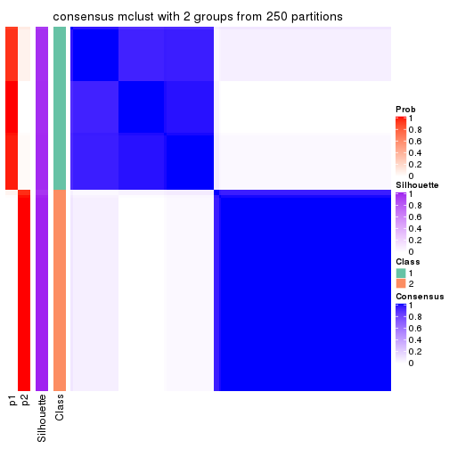
consensus_heatmap(res, k = 3)
consensus_heatmap(res, k = 4)

consensus_heatmap(res, k = 5)
consensus_heatmap(res, k = 6)

Heatmaps for the membership of samples in all partitions to see how consistent they are:
membership_heatmap(res, k = 2)
membership_heatmap(res, k = 3)
membership_heatmap(res, k = 4)
membership_heatmap(res, k = 5)
membership_heatmap(res, k = 6)
As soon as we have had the classes for columns, we can look for signatures which are significantly different between classes which can be candidate marks for certain classes. Following are the heatmaps for signatures.
Signature heatmaps where rows are scaled:
get_signatures(res, k = 2)
get_signatures(res, k = 3)
get_signatures(res, k = 4)
get_signatures(res, k = 5)
get_signatures(res, k = 6)
Signature heatmaps where rows are not scaled:
get_signatures(res, k = 2, scale_rows = FALSE)

get_signatures(res, k = 3, scale_rows = FALSE)
get_signatures(res, k = 4, scale_rows = FALSE)
get_signatures(res, k = 5, scale_rows = FALSE)
get_signatures(res, k = 6, scale_rows = FALSE)
Compare the overlap of signatures from different k:
compare_signatures(res)
get_signature() returns a data frame invisibly. TO get the list of signatures, the function
call should be assigned to a variable explicitly. In following code, if plot argument is set
to FALSE, no heatmap is plotted while only the differential analysis is performed.
# code only for demonstration
tb = get_signature(res, k = ..., plot = FALSE)
An example of the output of tb is:
#> which_row fdr mean_1 mean_2 scaled_mean_1 scaled_mean_2 km
#> 1 38 0.042760348 8.373488 9.131774 -0.5533452 0.5164555 1
#> 2 40 0.018707592 7.106213 8.469186 -0.6173731 0.5762149 1
#> 3 55 0.019134737 10.221463 11.207825 -0.6159697 0.5749050 1
#> 4 59 0.006059896 5.921854 7.869574 -0.6899429 0.6439467 1
#> 5 60 0.018055526 8.928898 10.211722 -0.6204761 0.5791110 1
#> 6 98 0.009384629 15.714769 14.887706 0.6635654 -0.6193277 2
...
The columns in tb are:
which_row: row indices corresponding to the input matrix.fdr: FDR for the differential test. mean_x: The mean value in group x.scaled_mean_x: The mean value in group x after rows are scaled.km: Row groups if k-means clustering is applied to rows.UMAP plot which shows how samples are separated.
dimension_reduction(res, k = 2, method = "UMAP")
dimension_reduction(res, k = 3, method = "UMAP")
dimension_reduction(res, k = 4, method = "UMAP")
dimension_reduction(res, k = 5, method = "UMAP")
dimension_reduction(res, k = 6, method = "UMAP")
Following heatmap shows how subgroups are split when increasing k:
collect_classes(res)
If matrix rows can be associated to genes, consider to use GO_Enrichment(res,
...) to perform function enrichment for the signature genes.
The object with results only for a single top-value method and a single partition method can be extracted as:
res = res_list["MAD", "NMF"]
# you can also extract it by
# res = res_list["MAD:NMF"]
A summary of res and all the functions that can be applied to it:
res
#> A 'ConsensusPartition' object with k = 2, 3, 4, 5, 6.
#> On a matrix with 15028 rows and 134 columns.
#> Top rows (1000, 2000, 3000, 4000, 5000) are extracted by 'MAD' method.
#> Subgroups are detected by 'NMF' method.
#> Performed in total 1250 partitions by row resampling.
#> Best k for subgroups seems to be 6.
#>
#> Following methods can be applied to this 'ConsensusPartition' object:
#> [1] "cola_report" "collect_classes" "collect_plots"
#> [4] "collect_stats" "colnames" "compare_signatures"
#> [7] "consensus_heatmap" "dimension_reduction" "functional_enrichment"
#> [10] "get_anno_col" "get_anno" "get_classes"
#> [13] "get_consensus" "get_matrix" "get_membership"
#> [16] "get_param" "get_signatures" "get_stats"
#> [19] "is_best_k" "is_stable_k" "membership_heatmap"
#> [22] "ncol" "nrow" "plot_ecdf"
#> [25] "rownames" "select_partition_number" "show"
#> [28] "suggest_best_k" "test_to_known_factors"
collect_plots() function collects all the plots made from res for all k (number of partitions)
into one single page to provide an easy and fast comparison between different k.
collect_plots(res)
The plots are:
k and the heatmap of
predicted classes for each k.k.k.k.All the plots in panels can be made by individual functions and they are plotted later in this section.
select_partition_number() produces several plots showing different
statistics for choosing “optimized” k. There are following statistics:
k;k, the area increased is defined as \(A_k - A_{k-1}\).The detailed explanations of these statistics can be found in the cola vignette.
Generally speaking, lower PAC score, higher mean silhouette score or higher
concordance corresponds to better partition. Rand index and Jaccard index
measure how similar the current partition is compared to partition with k-1.
If they are too similar, we won't accept k is better than k-1.
select_partition_number(res)

The numeric values for all these statistics can be obtained by get_stats().
get_stats(res)
#> k 1-PAC mean_silhouette concordance area_increased Rand Jaccard
#> 2 2 0.985 0.953 0.981 0.4890 0.510 0.510
#> 3 3 0.853 0.886 0.931 0.2852 0.857 0.723
#> 4 4 0.788 0.878 0.914 0.1080 0.873 0.685
#> 5 5 0.920 0.907 0.953 0.1102 0.856 0.576
#> 6 6 0.941 0.956 0.949 0.0578 0.914 0.651
suggest_best_k() suggests the best \(k\) based on these statistics. The rules are as follows:
NA.suggest_best_k(res)
#> [1] 6
#> attr(,"optional")
#> [1] 2 5
There is also optional best \(k\) = 2 5 that is worth to check.
Following shows the table of the partitions (You need to click the show/hide
code output link to see it). The membership matrix (columns with name p*)
is inferred by
clue::cl_consensus()
function with the SE method. Basically the value in the membership matrix
represents the probability to belong to a certain group. The finall class
label for an item is determined with the group with highest probability it
belongs to.
In get_classes() function, the entropy is calculated from the membership
matrix and the silhouette score is calculated from the consensus matrix.
cbind(get_classes(res, k = 2), get_membership(res, k = 2))
#> class entropy silhouette p1 p2
#> SRR1550981 1 0.000 0.9744 1.000 0.000
#> SRR1550982 1 0.242 0.9432 0.960 0.040
#> SRR1550983 1 0.000 0.9744 1.000 0.000
#> SRR1550984 2 0.997 0.0899 0.468 0.532
#> SRR1550986 1 0.000 0.9744 1.000 0.000
#> SRR1550985 2 0.802 0.6681 0.244 0.756
#> SRR1550988 2 0.000 0.9845 0.000 1.000
#> SRR1550987 1 0.000 0.9744 1.000 0.000
#> SRR1550989 2 0.000 0.9845 0.000 1.000
#> SRR1550990 2 0.000 0.9845 0.000 1.000
#> SRR1550991 2 0.000 0.9845 0.000 1.000
#> SRR1550992 1 0.000 0.9744 1.000 0.000
#> SRR1550994 2 0.000 0.9845 0.000 1.000
#> SRR1550993 1 0.000 0.9744 1.000 0.000
#> SRR1550995 2 0.000 0.9845 0.000 1.000
#> SRR1550996 2 0.000 0.9845 0.000 1.000
#> SRR1550997 1 0.000 0.9744 1.000 0.000
#> SRR1550998 1 0.000 0.9744 1.000 0.000
#> SRR1551000 2 0.000 0.9845 0.000 1.000
#> SRR1550999 2 0.000 0.9845 0.000 1.000
#> SRR1551001 2 0.000 0.9845 0.000 1.000
#> SRR1551002 1 0.000 0.9744 1.000 0.000
#> SRR1551003 1 0.000 0.9744 1.000 0.000
#> SRR1551004 2 0.000 0.9845 0.000 1.000
#> SRR1551006 2 0.000 0.9845 0.000 1.000
#> SRR1551005 2 0.000 0.9845 0.000 1.000
#> SRR1551007 2 0.000 0.9845 0.000 1.000
#> SRR1551008 1 0.000 0.9744 1.000 0.000
#> SRR1551009 1 0.000 0.9744 1.000 0.000
#> SRR1551010 2 0.000 0.9845 0.000 1.000
#> SRR1551012 2 0.000 0.9845 0.000 1.000
#> SRR1551011 2 0.000 0.9845 0.000 1.000
#> SRR1551013 1 0.000 0.9744 1.000 0.000
#> SRR1551014 1 0.000 0.9744 1.000 0.000
#> SRR1551015 2 0.000 0.9845 0.000 1.000
#> SRR1551016 2 0.000 0.9845 0.000 1.000
#> SRR1551017 2 0.000 0.9845 0.000 1.000
#> SRR1551018 2 0.000 0.9845 0.000 1.000
#> SRR1551019 1 0.000 0.9744 1.000 0.000
#> SRR1551021 1 0.000 0.9744 1.000 0.000
#> SRR1551022 2 0.000 0.9845 0.000 1.000
#> SRR1551023 2 0.000 0.9845 0.000 1.000
#> SRR1551020 1 0.000 0.9744 1.000 0.000
#> SRR1551024 2 0.000 0.9845 0.000 1.000
#> SRR1551026 1 0.000 0.9744 1.000 0.000
#> SRR1551025 1 0.000 0.9744 1.000 0.000
#> SRR1551027 1 0.000 0.9744 1.000 0.000
#> SRR1551028 2 0.000 0.9845 0.000 1.000
#> SRR1551029 2 0.000 0.9845 0.000 1.000
#> SRR1551030 2 0.000 0.9845 0.000 1.000
#> SRR1551031 2 0.000 0.9845 0.000 1.000
#> SRR1551032 1 0.000 0.9744 1.000 0.000
#> SRR1551034 1 0.000 0.9744 1.000 0.000
#> SRR1551033 1 0.000 0.9744 1.000 0.000
#> SRR1551035 2 0.000 0.9845 0.000 1.000
#> SRR1551036 2 0.000 0.9845 0.000 1.000
#> SRR1551037 2 0.000 0.9845 0.000 1.000
#> SRR1551038 2 0.000 0.9845 0.000 1.000
#> SRR1551039 1 0.563 0.8454 0.868 0.132
#> SRR1551040 1 0.000 0.9744 1.000 0.000
#> SRR1551041 1 0.000 0.9744 1.000 0.000
#> SRR1551042 2 0.000 0.9845 0.000 1.000
#> SRR1551043 2 0.000 0.9845 0.000 1.000
#> SRR1551044 2 0.000 0.9845 0.000 1.000
#> SRR1551045 2 0.000 0.9845 0.000 1.000
#> SRR1551046 1 0.000 0.9744 1.000 0.000
#> SRR1551047 1 0.000 0.9744 1.000 0.000
#> SRR1551048 1 0.000 0.9744 1.000 0.000
#> SRR1551049 2 0.000 0.9845 0.000 1.000
#> SRR1551050 2 0.000 0.9845 0.000 1.000
#> SRR1551051 2 0.000 0.9845 0.000 1.000
#> SRR1551052 2 0.000 0.9845 0.000 1.000
#> SRR1551053 2 0.625 0.8047 0.156 0.844
#> SRR1551054 1 0.000 0.9744 1.000 0.000
#> SRR1551055 1 0.000 0.9744 1.000 0.000
#> SRR1551056 2 0.000 0.9845 0.000 1.000
#> SRR1551057 2 0.000 0.9845 0.000 1.000
#> SRR1551058 2 0.000 0.9845 0.000 1.000
#> SRR1551059 2 0.000 0.9845 0.000 1.000
#> SRR1551060 1 0.904 0.5385 0.680 0.320
#> SRR1551061 1 0.000 0.9744 1.000 0.000
#> SRR1551062 1 0.000 0.9744 1.000 0.000
#> SRR1551063 2 0.000 0.9845 0.000 1.000
#> SRR1551064 2 0.000 0.9845 0.000 1.000
#> SRR1551065 2 0.000 0.9845 0.000 1.000
#> SRR1551066 2 0.000 0.9845 0.000 1.000
#> SRR1551067 1 0.311 0.9287 0.944 0.056
#> SRR1551068 1 0.000 0.9744 1.000 0.000
#> SRR1551069 1 0.000 0.9744 1.000 0.000
#> SRR1551070 2 0.000 0.9845 0.000 1.000
#> SRR1551071 2 0.000 0.9845 0.000 1.000
#> SRR1551072 2 0.000 0.9845 0.000 1.000
#> SRR1551073 2 0.000 0.9845 0.000 1.000
#> SRR1551074 1 0.000 0.9744 1.000 0.000
#> SRR1551075 1 0.000 0.9744 1.000 0.000
#> SRR1551076 1 0.000 0.9744 1.000 0.000
#> SRR1551077 2 0.000 0.9845 0.000 1.000
#> SRR1551078 2 0.000 0.9845 0.000 1.000
#> SRR1551079 2 0.000 0.9845 0.000 1.000
#> SRR1551080 2 0.000 0.9845 0.000 1.000
#> SRR1551081 2 0.844 0.6168 0.272 0.728
#> SRR1551082 1 0.000 0.9744 1.000 0.000
#> SRR1551083 1 0.000 0.9744 1.000 0.000
#> SRR1551084 2 0.000 0.9845 0.000 1.000
#> SRR1551085 2 0.000 0.9845 0.000 1.000
#> SRR1551086 2 0.000 0.9845 0.000 1.000
#> SRR1551088 1 0.000 0.9744 1.000 0.000
#> SRR1551087 1 0.343 0.9210 0.936 0.064
#> SRR1551089 1 0.000 0.9744 1.000 0.000
#> SRR1551090 2 0.000 0.9845 0.000 1.000
#> SRR1551091 2 0.000 0.9845 0.000 1.000
#> SRR1551092 2 0.000 0.9845 0.000 1.000
#> SRR1551093 2 0.000 0.9845 0.000 1.000
#> SRR1551094 1 0.260 0.9397 0.956 0.044
#> SRR1551095 1 0.000 0.9744 1.000 0.000
#> SRR1551096 1 0.000 0.9744 1.000 0.000
#> SRR1551097 2 0.000 0.9845 0.000 1.000
#> SRR1551098 2 0.000 0.9845 0.000 1.000
#> SRR1551099 2 0.000 0.9845 0.000 1.000
#> SRR1551101 1 0.000 0.9744 1.000 0.000
#> SRR1551100 1 1.000 0.0391 0.508 0.492
#> SRR1551102 1 0.000 0.9744 1.000 0.000
#> SRR1551103 2 0.000 0.9845 0.000 1.000
#> SRR1551104 2 0.000 0.9845 0.000 1.000
#> SRR1551105 2 0.000 0.9845 0.000 1.000
#> SRR1551106 2 0.000 0.9845 0.000 1.000
#> SRR1551107 1 0.697 0.7708 0.812 0.188
#> SRR1551108 1 0.000 0.9744 1.000 0.000
#> SRR1551109 1 0.000 0.9744 1.000 0.000
#> SRR1551110 2 0.000 0.9845 0.000 1.000
#> SRR1551111 2 0.000 0.9845 0.000 1.000
#> SRR1551112 2 0.000 0.9845 0.000 1.000
#> SRR1551113 2 0.000 0.9845 0.000 1.000
#> SRR1551114 1 0.224 0.9465 0.964 0.036
cbind(get_classes(res, k = 3), get_membership(res, k = 3))
#> class entropy silhouette p1 p2 p3
#> SRR1550981 1 0.0000 0.8674 1.000 0.000 0.000
#> SRR1550982 1 0.1482 0.8602 0.968 0.020 0.012
#> SRR1550983 1 0.0747 0.8657 0.984 0.000 0.016
#> SRR1550984 1 0.6126 0.3846 0.600 0.400 0.000
#> SRR1550986 1 0.0000 0.8674 1.000 0.000 0.000
#> SRR1550985 2 0.6045 0.3136 0.380 0.620 0.000
#> SRR1550988 3 0.1753 0.9924 0.000 0.048 0.952
#> SRR1550987 1 0.5650 0.7060 0.688 0.000 0.312
#> SRR1550989 2 0.0000 0.9773 0.000 1.000 0.000
#> SRR1550990 2 0.0000 0.9773 0.000 1.000 0.000
#> SRR1550991 2 0.0000 0.9773 0.000 1.000 0.000
#> SRR1550992 1 0.0000 0.8674 1.000 0.000 0.000
#> SRR1550994 3 0.1753 0.9924 0.000 0.048 0.952
#> SRR1550993 1 0.6111 0.5977 0.604 0.000 0.396
#> SRR1550995 2 0.0000 0.9773 0.000 1.000 0.000
#> SRR1550996 2 0.0000 0.9773 0.000 1.000 0.000
#> SRR1550997 1 0.0000 0.8674 1.000 0.000 0.000
#> SRR1550998 1 0.5216 0.7506 0.740 0.000 0.260
#> SRR1551000 2 0.0000 0.9773 0.000 1.000 0.000
#> SRR1550999 3 0.1753 0.9924 0.000 0.048 0.952
#> SRR1551001 2 0.0000 0.9773 0.000 1.000 0.000
#> SRR1551002 1 0.0000 0.8674 1.000 0.000 0.000
#> SRR1551003 1 0.5706 0.6977 0.680 0.000 0.320
#> SRR1551004 3 0.1753 0.9924 0.000 0.048 0.952
#> SRR1551006 2 0.0000 0.9773 0.000 1.000 0.000
#> SRR1551005 2 0.0000 0.9773 0.000 1.000 0.000
#> SRR1551007 2 0.0000 0.9773 0.000 1.000 0.000
#> SRR1551008 1 0.0000 0.8674 1.000 0.000 0.000
#> SRR1551009 1 0.6062 0.6169 0.616 0.000 0.384
#> SRR1551010 3 0.1753 0.9924 0.000 0.048 0.952
#> SRR1551012 2 0.0000 0.9773 0.000 1.000 0.000
#> SRR1551011 2 0.0000 0.9773 0.000 1.000 0.000
#> SRR1551013 1 0.0000 0.8674 1.000 0.000 0.000
#> SRR1551014 1 0.3551 0.8295 0.868 0.000 0.132
#> SRR1551015 3 0.0892 0.9551 0.000 0.020 0.980
#> SRR1551016 2 0.0000 0.9773 0.000 1.000 0.000
#> SRR1551017 2 0.0000 0.9773 0.000 1.000 0.000
#> SRR1551018 2 0.0000 0.9773 0.000 1.000 0.000
#> SRR1551019 1 0.0000 0.8674 1.000 0.000 0.000
#> SRR1551021 1 0.3192 0.8384 0.888 0.000 0.112
#> SRR1551022 3 0.1964 0.9893 0.000 0.056 0.944
#> SRR1551023 2 0.0000 0.9773 0.000 1.000 0.000
#> SRR1551020 1 0.0000 0.8674 1.000 0.000 0.000
#> SRR1551024 2 0.0000 0.9773 0.000 1.000 0.000
#> SRR1551026 1 0.0000 0.8674 1.000 0.000 0.000
#> SRR1551025 1 0.0000 0.8674 1.000 0.000 0.000
#> SRR1551027 1 0.4235 0.8065 0.824 0.000 0.176
#> SRR1551028 3 0.1860 0.9917 0.000 0.052 0.948
#> SRR1551029 2 0.0000 0.9773 0.000 1.000 0.000
#> SRR1551030 2 0.0000 0.9773 0.000 1.000 0.000
#> SRR1551031 2 0.0000 0.9773 0.000 1.000 0.000
#> SRR1551032 1 0.0237 0.8671 0.996 0.000 0.004
#> SRR1551034 1 0.5678 0.7019 0.684 0.000 0.316
#> SRR1551033 1 0.0000 0.8674 1.000 0.000 0.000
#> SRR1551035 3 0.2066 0.9861 0.000 0.060 0.940
#> SRR1551036 2 0.0000 0.9773 0.000 1.000 0.000
#> SRR1551037 2 0.0000 0.9773 0.000 1.000 0.000
#> SRR1551038 2 0.0000 0.9773 0.000 1.000 0.000
#> SRR1551039 1 0.2200 0.8397 0.940 0.056 0.004
#> SRR1551040 1 0.0000 0.8674 1.000 0.000 0.000
#> SRR1551041 1 0.4796 0.7793 0.780 0.000 0.220
#> SRR1551042 3 0.1860 0.9917 0.000 0.052 0.948
#> SRR1551043 2 0.0000 0.9773 0.000 1.000 0.000
#> SRR1551044 2 0.0000 0.9773 0.000 1.000 0.000
#> SRR1551045 2 0.0000 0.9773 0.000 1.000 0.000
#> SRR1551046 1 0.1643 0.8607 0.956 0.000 0.044
#> SRR1551047 1 0.0000 0.8674 1.000 0.000 0.000
#> SRR1551048 1 0.6026 0.6284 0.624 0.000 0.376
#> SRR1551049 3 0.1753 0.9924 0.000 0.048 0.952
#> SRR1551050 2 0.0000 0.9773 0.000 1.000 0.000
#> SRR1551051 2 0.0000 0.9773 0.000 1.000 0.000
#> SRR1551052 2 0.0000 0.9773 0.000 1.000 0.000
#> SRR1551053 2 0.3879 0.7762 0.152 0.848 0.000
#> SRR1551054 1 0.0000 0.8674 1.000 0.000 0.000
#> SRR1551055 1 0.6079 0.6108 0.612 0.000 0.388
#> SRR1551056 3 0.2066 0.9861 0.000 0.060 0.940
#> SRR1551057 2 0.0000 0.9773 0.000 1.000 0.000
#> SRR1551058 2 0.0000 0.9773 0.000 1.000 0.000
#> SRR1551059 2 0.0000 0.9773 0.000 1.000 0.000
#> SRR1551060 1 0.3116 0.8003 0.892 0.108 0.000
#> SRR1551061 1 0.0000 0.8674 1.000 0.000 0.000
#> SRR1551062 1 0.6062 0.6169 0.616 0.000 0.384
#> SRR1551063 3 0.1753 0.9924 0.000 0.048 0.952
#> SRR1551064 2 0.0000 0.9773 0.000 1.000 0.000
#> SRR1551065 2 0.0000 0.9773 0.000 1.000 0.000
#> SRR1551066 2 0.0000 0.9773 0.000 1.000 0.000
#> SRR1551067 1 0.2116 0.8606 0.948 0.012 0.040
#> SRR1551068 1 0.0000 0.8674 1.000 0.000 0.000
#> SRR1551069 1 0.5733 0.6934 0.676 0.000 0.324
#> SRR1551070 3 0.1753 0.9924 0.000 0.048 0.952
#> SRR1551071 2 0.0000 0.9773 0.000 1.000 0.000
#> SRR1551072 2 0.0000 0.9773 0.000 1.000 0.000
#> SRR1551073 2 0.0000 0.9773 0.000 1.000 0.000
#> SRR1551074 1 0.0747 0.8657 0.984 0.000 0.016
#> SRR1551075 1 0.0000 0.8674 1.000 0.000 0.000
#> SRR1551076 1 0.5363 0.7379 0.724 0.000 0.276
#> SRR1551077 3 0.1753 0.9924 0.000 0.048 0.952
#> SRR1551078 2 0.0000 0.9773 0.000 1.000 0.000
#> SRR1551079 2 0.0000 0.9773 0.000 1.000 0.000
#> SRR1551080 2 0.0000 0.9773 0.000 1.000 0.000
#> SRR1551081 2 0.6804 0.0116 0.460 0.528 0.012
#> SRR1551082 1 0.0000 0.8674 1.000 0.000 0.000
#> SRR1551083 1 0.6095 0.6044 0.608 0.000 0.392
#> SRR1551084 3 0.1964 0.9894 0.000 0.056 0.944
#> SRR1551085 2 0.0000 0.9773 0.000 1.000 0.000
#> SRR1551086 2 0.0000 0.9773 0.000 1.000 0.000
#> SRR1551088 1 0.0000 0.8674 1.000 0.000 0.000
#> SRR1551087 1 0.2116 0.8606 0.948 0.012 0.040
#> SRR1551089 1 0.5497 0.7243 0.708 0.000 0.292
#> SRR1551090 3 0.2066 0.9861 0.000 0.060 0.940
#> SRR1551091 2 0.0000 0.9773 0.000 1.000 0.000
#> SRR1551092 2 0.0000 0.9773 0.000 1.000 0.000
#> SRR1551093 2 0.0000 0.9773 0.000 1.000 0.000
#> SRR1551094 1 0.1337 0.8618 0.972 0.016 0.012
#> SRR1551095 1 0.0000 0.8674 1.000 0.000 0.000
#> SRR1551096 1 0.6095 0.6044 0.608 0.000 0.392
#> SRR1551097 3 0.1753 0.9924 0.000 0.048 0.952
#> SRR1551098 2 0.0000 0.9773 0.000 1.000 0.000
#> SRR1551099 2 0.0000 0.9773 0.000 1.000 0.000
#> SRR1551101 1 0.0000 0.8674 1.000 0.000 0.000
#> SRR1551100 1 0.5291 0.6178 0.732 0.268 0.000
#> SRR1551102 1 0.5621 0.7097 0.692 0.000 0.308
#> SRR1551103 3 0.2066 0.9861 0.000 0.060 0.940
#> SRR1551104 2 0.0000 0.9773 0.000 1.000 0.000
#> SRR1551105 2 0.0000 0.9773 0.000 1.000 0.000
#> SRR1551106 2 0.0000 0.9773 0.000 1.000 0.000
#> SRR1551107 1 0.2636 0.8564 0.932 0.020 0.048
#> SRR1551108 1 0.0000 0.8674 1.000 0.000 0.000
#> SRR1551109 1 0.5905 0.6604 0.648 0.000 0.352
#> SRR1551110 3 0.1860 0.9917 0.000 0.052 0.948
#> SRR1551111 2 0.0000 0.9773 0.000 1.000 0.000
#> SRR1551112 2 0.0000 0.9773 0.000 1.000 0.000
#> SRR1551113 2 0.0000 0.9773 0.000 1.000 0.000
#> SRR1551114 1 0.0747 0.8615 0.984 0.016 0.000
cbind(get_classes(res, k = 4), get_membership(res, k = 4))
#> class entropy silhouette p1 p2 p3 p4
#> SRR1550981 3 0.4356 0.7141 0.292 0.000 0.708 0.000
#> SRR1550982 1 0.7226 0.3558 0.548 0.220 0.232 0.000
#> SRR1550983 1 0.4391 0.5983 0.740 0.008 0.252 0.000
#> SRR1550984 2 0.3674 0.8175 0.104 0.852 0.044 0.000
#> SRR1550986 3 0.2814 0.9422 0.132 0.000 0.868 0.000
#> SRR1550985 2 0.1724 0.9063 0.032 0.948 0.020 0.000
#> SRR1550988 4 0.0000 0.9982 0.000 0.000 0.000 1.000
#> SRR1550987 1 0.0376 0.8866 0.992 0.000 0.004 0.004
#> SRR1550989 2 0.0188 0.9343 0.004 0.996 0.000 0.000
#> SRR1550990 2 0.0000 0.9350 0.000 1.000 0.000 0.000
#> SRR1550991 2 0.2814 0.8991 0.000 0.868 0.132 0.000
#> SRR1550992 3 0.2814 0.9422 0.132 0.000 0.868 0.000
#> SRR1550994 4 0.0188 0.9970 0.004 0.000 0.000 0.996
#> SRR1550993 1 0.0336 0.8844 0.992 0.000 0.000 0.008
#> SRR1550995 2 0.0188 0.9343 0.004 0.996 0.000 0.000
#> SRR1550996 2 0.0000 0.9350 0.000 1.000 0.000 0.000
#> SRR1550997 3 0.2814 0.9422 0.132 0.000 0.868 0.000
#> SRR1550998 1 0.0336 0.8856 0.992 0.000 0.008 0.000
#> SRR1551000 2 0.0188 0.9343 0.004 0.996 0.000 0.000
#> SRR1550999 4 0.0336 0.9951 0.008 0.000 0.000 0.992
#> SRR1551001 2 0.0000 0.9350 0.000 1.000 0.000 0.000
#> SRR1551002 3 0.2814 0.9422 0.132 0.000 0.868 0.000
#> SRR1551003 1 0.0376 0.8866 0.992 0.000 0.004 0.004
#> SRR1551004 4 0.0188 0.9970 0.004 0.000 0.000 0.996
#> SRR1551006 2 0.1389 0.9252 0.000 0.952 0.048 0.000
#> SRR1551005 2 0.0000 0.9350 0.000 1.000 0.000 0.000
#> SRR1551007 2 0.2814 0.8991 0.000 0.868 0.132 0.000
#> SRR1551008 3 0.2814 0.9422 0.132 0.000 0.868 0.000
#> SRR1551009 1 0.0336 0.8844 0.992 0.000 0.000 0.008
#> SRR1551010 4 0.0000 0.9982 0.000 0.000 0.000 1.000
#> SRR1551012 2 0.0000 0.9350 0.000 1.000 0.000 0.000
#> SRR1551011 2 0.0188 0.9343 0.004 0.996 0.000 0.000
#> SRR1551013 3 0.2814 0.9422 0.132 0.000 0.868 0.000
#> SRR1551014 1 0.0469 0.8839 0.988 0.000 0.012 0.000
#> SRR1551015 4 0.0336 0.9951 0.008 0.000 0.000 0.992
#> SRR1551016 2 0.0000 0.9350 0.000 1.000 0.000 0.000
#> SRR1551017 2 0.2814 0.8991 0.000 0.868 0.132 0.000
#> SRR1551018 2 0.2814 0.8991 0.000 0.868 0.132 0.000
#> SRR1551019 3 0.4948 0.3475 0.440 0.000 0.560 0.000
#> SRR1551021 1 0.0469 0.8839 0.988 0.000 0.012 0.000
#> SRR1551022 4 0.0000 0.9982 0.000 0.000 0.000 1.000
#> SRR1551023 2 0.0188 0.9343 0.004 0.996 0.000 0.000
#> SRR1551020 3 0.2814 0.9422 0.132 0.000 0.868 0.000
#> SRR1551024 2 0.0000 0.9350 0.000 1.000 0.000 0.000
#> SRR1551026 3 0.2814 0.9422 0.132 0.000 0.868 0.000
#> SRR1551025 3 0.3311 0.8972 0.172 0.000 0.828 0.000
#> SRR1551027 1 0.0469 0.8839 0.988 0.000 0.012 0.000
#> SRR1551028 4 0.0000 0.9982 0.000 0.000 0.000 1.000
#> SRR1551029 2 0.0000 0.9350 0.000 1.000 0.000 0.000
#> SRR1551030 2 0.1867 0.9185 0.000 0.928 0.072 0.000
#> SRR1551031 2 0.2814 0.8991 0.000 0.868 0.132 0.000
#> SRR1551032 1 0.4948 0.0754 0.560 0.000 0.440 0.000
#> SRR1551034 1 0.0376 0.8866 0.992 0.000 0.004 0.004
#> SRR1551033 3 0.2814 0.9422 0.132 0.000 0.868 0.000
#> SRR1551035 4 0.0000 0.9982 0.000 0.000 0.000 1.000
#> SRR1551036 2 0.0000 0.9350 0.000 1.000 0.000 0.000
#> SRR1551037 2 0.0336 0.9340 0.000 0.992 0.008 0.000
#> SRR1551038 2 0.2814 0.8991 0.000 0.868 0.132 0.000
#> SRR1551039 2 0.6783 0.3246 0.304 0.572 0.124 0.000
#> SRR1551040 3 0.2814 0.9422 0.132 0.000 0.868 0.000
#> SRR1551041 1 0.0336 0.8856 0.992 0.000 0.008 0.000
#> SRR1551042 4 0.0000 0.9982 0.000 0.000 0.000 1.000
#> SRR1551043 2 0.0000 0.9350 0.000 1.000 0.000 0.000
#> SRR1551044 2 0.0336 0.9340 0.000 0.992 0.008 0.000
#> SRR1551045 2 0.2814 0.8991 0.000 0.868 0.132 0.000
#> SRR1551046 1 0.1867 0.8390 0.928 0.000 0.072 0.000
#> SRR1551047 3 0.2814 0.9422 0.132 0.000 0.868 0.000
#> SRR1551048 1 0.0336 0.8844 0.992 0.000 0.000 0.008
#> SRR1551049 4 0.0000 0.9982 0.000 0.000 0.000 1.000
#> SRR1551050 2 0.0188 0.9343 0.004 0.996 0.000 0.000
#> SRR1551051 2 0.0000 0.9350 0.000 1.000 0.000 0.000
#> SRR1551052 2 0.2814 0.8991 0.000 0.868 0.132 0.000
#> SRR1551053 2 0.1406 0.9142 0.016 0.960 0.024 0.000
#> SRR1551054 3 0.2814 0.9422 0.132 0.000 0.868 0.000
#> SRR1551055 1 0.0336 0.8844 0.992 0.000 0.000 0.008
#> SRR1551056 4 0.0000 0.9982 0.000 0.000 0.000 1.000
#> SRR1551057 2 0.0000 0.9350 0.000 1.000 0.000 0.000
#> SRR1551058 2 0.2814 0.8991 0.000 0.868 0.132 0.000
#> SRR1551059 2 0.2814 0.8991 0.000 0.868 0.132 0.000
#> SRR1551060 2 0.6874 0.2790 0.136 0.568 0.296 0.000
#> SRR1551061 3 0.2814 0.9422 0.132 0.000 0.868 0.000
#> SRR1551062 1 0.0336 0.8844 0.992 0.000 0.000 0.008
#> SRR1551063 4 0.0000 0.9982 0.000 0.000 0.000 1.000
#> SRR1551064 2 0.0188 0.9343 0.004 0.996 0.000 0.000
#> SRR1551065 2 0.0000 0.9350 0.000 1.000 0.000 0.000
#> SRR1551066 2 0.2814 0.8991 0.000 0.868 0.132 0.000
#> SRR1551067 1 0.4869 0.7107 0.780 0.088 0.132 0.000
#> SRR1551068 3 0.2814 0.9422 0.132 0.000 0.868 0.000
#> SRR1551069 1 0.0376 0.8866 0.992 0.000 0.004 0.004
#> SRR1551070 4 0.0336 0.9951 0.008 0.000 0.000 0.992
#> SRR1551071 2 0.0188 0.9343 0.004 0.996 0.000 0.000
#> SRR1551072 2 0.0000 0.9350 0.000 1.000 0.000 0.000
#> SRR1551073 2 0.2814 0.8991 0.000 0.868 0.132 0.000
#> SRR1551074 1 0.4679 0.3779 0.648 0.000 0.352 0.000
#> SRR1551075 3 0.2814 0.9422 0.132 0.000 0.868 0.000
#> SRR1551076 1 0.0376 0.8866 0.992 0.000 0.004 0.004
#> SRR1551077 4 0.0188 0.9970 0.004 0.000 0.000 0.996
#> SRR1551078 2 0.0000 0.9350 0.000 1.000 0.000 0.000
#> SRR1551079 2 0.2814 0.8991 0.000 0.868 0.132 0.000
#> SRR1551080 2 0.2814 0.8991 0.000 0.868 0.132 0.000
#> SRR1551081 2 0.5417 0.2292 0.412 0.572 0.016 0.000
#> SRR1551082 3 0.2814 0.9422 0.132 0.000 0.868 0.000
#> SRR1551083 1 0.0336 0.8844 0.992 0.000 0.000 0.008
#> SRR1551084 4 0.0000 0.9982 0.000 0.000 0.000 1.000
#> SRR1551085 2 0.0188 0.9343 0.004 0.996 0.000 0.000
#> SRR1551086 2 0.1211 0.9270 0.000 0.960 0.040 0.000
#> SRR1551088 3 0.2814 0.9422 0.132 0.000 0.868 0.000
#> SRR1551087 1 0.4030 0.7633 0.836 0.092 0.072 0.000
#> SRR1551089 1 0.0376 0.8866 0.992 0.000 0.004 0.004
#> SRR1551090 4 0.0000 0.9982 0.000 0.000 0.000 1.000
#> SRR1551091 2 0.0188 0.9343 0.004 0.996 0.000 0.000
#> SRR1551092 2 0.0000 0.9350 0.000 1.000 0.000 0.000
#> SRR1551093 2 0.2814 0.8991 0.000 0.868 0.132 0.000
#> SRR1551094 1 0.6845 0.4177 0.596 0.168 0.236 0.000
#> SRR1551095 3 0.2814 0.9422 0.132 0.000 0.868 0.000
#> SRR1551096 1 0.0336 0.8844 0.992 0.000 0.000 0.008
#> SRR1551097 4 0.0000 0.9982 0.000 0.000 0.000 1.000
#> SRR1551098 2 0.0188 0.9343 0.004 0.996 0.000 0.000
#> SRR1551099 2 0.0000 0.9350 0.000 1.000 0.000 0.000
#> SRR1551101 3 0.2814 0.9422 0.132 0.000 0.868 0.000
#> SRR1551100 2 0.4424 0.7715 0.100 0.812 0.088 0.000
#> SRR1551102 1 0.0336 0.8856 0.992 0.000 0.008 0.000
#> SRR1551103 4 0.0188 0.9970 0.004 0.000 0.000 0.996
#> SRR1551104 2 0.0188 0.9343 0.004 0.996 0.000 0.000
#> SRR1551105 2 0.0000 0.9350 0.000 1.000 0.000 0.000
#> SRR1551106 2 0.2814 0.8991 0.000 0.868 0.132 0.000
#> SRR1551107 1 0.3760 0.7423 0.836 0.136 0.028 0.000
#> SRR1551108 3 0.2814 0.9422 0.132 0.000 0.868 0.000
#> SRR1551109 1 0.0336 0.8844 0.992 0.000 0.000 0.008
#> SRR1551110 4 0.0000 0.9982 0.000 0.000 0.000 1.000
#> SRR1551111 2 0.0000 0.9350 0.000 1.000 0.000 0.000
#> SRR1551112 2 0.0000 0.9350 0.000 1.000 0.000 0.000
#> SRR1551113 2 0.2814 0.8991 0.000 0.868 0.132 0.000
#> SRR1551114 3 0.7551 0.2804 0.196 0.356 0.448 0.000
cbind(get_classes(res, k = 5), get_membership(res, k = 5))
#> class entropy silhouette p1 p2 p3 p4 p5
#> SRR1550981 3 0.4449 0.728 0.052 0.144 0.780 0 0.024
#> SRR1550982 2 0.1653 0.899 0.004 0.944 0.028 0 0.024
#> SRR1550983 2 0.6266 0.395 0.316 0.560 0.100 0 0.024
#> SRR1550984 2 0.2423 0.866 0.000 0.896 0.080 0 0.024
#> SRR1550986 3 0.0404 0.964 0.012 0.000 0.988 0 0.000
#> SRR1550985 2 0.1106 0.908 0.000 0.964 0.012 0 0.024
#> SRR1550988 4 0.0000 1.000 0.000 0.000 0.000 1 0.000
#> SRR1550987 1 0.0000 0.962 1.000 0.000 0.000 0 0.000
#> SRR1550989 2 0.0000 0.923 0.000 1.000 0.000 0 0.000
#> SRR1550990 2 0.0609 0.913 0.000 0.980 0.000 0 0.020
#> SRR1550991 5 0.0609 0.969 0.000 0.020 0.000 0 0.980
#> SRR1550992 3 0.0404 0.964 0.012 0.000 0.988 0 0.000
#> SRR1550994 4 0.0000 1.000 0.000 0.000 0.000 1 0.000
#> SRR1550993 1 0.0000 0.962 1.000 0.000 0.000 0 0.000
#> SRR1550995 2 0.0000 0.923 0.000 1.000 0.000 0 0.000
#> SRR1550996 2 0.0000 0.923 0.000 1.000 0.000 0 0.000
#> SRR1550997 3 0.0404 0.964 0.012 0.000 0.988 0 0.000
#> SRR1550998 1 0.0000 0.962 1.000 0.000 0.000 0 0.000
#> SRR1551000 2 0.0000 0.923 0.000 1.000 0.000 0 0.000
#> SRR1550999 4 0.0000 1.000 0.000 0.000 0.000 1 0.000
#> SRR1551001 2 0.0162 0.921 0.000 0.996 0.000 0 0.004
#> SRR1551002 3 0.0404 0.964 0.012 0.000 0.988 0 0.000
#> SRR1551003 1 0.0000 0.962 1.000 0.000 0.000 0 0.000
#> SRR1551004 4 0.0000 1.000 0.000 0.000 0.000 1 0.000
#> SRR1551006 2 0.4219 0.291 0.000 0.584 0.000 0 0.416
#> SRR1551005 2 0.0000 0.923 0.000 1.000 0.000 0 0.000
#> SRR1551007 5 0.0609 0.969 0.000 0.020 0.000 0 0.980
#> SRR1551008 3 0.0404 0.964 0.012 0.000 0.988 0 0.000
#> SRR1551009 1 0.0000 0.962 1.000 0.000 0.000 0 0.000
#> SRR1551010 4 0.0000 1.000 0.000 0.000 0.000 1 0.000
#> SRR1551012 2 0.0000 0.923 0.000 1.000 0.000 0 0.000
#> SRR1551011 2 0.0000 0.923 0.000 1.000 0.000 0 0.000
#> SRR1551013 3 0.0404 0.964 0.012 0.000 0.988 0 0.000
#> SRR1551014 1 0.0000 0.962 1.000 0.000 0.000 0 0.000
#> SRR1551015 4 0.0000 1.000 0.000 0.000 0.000 1 0.000
#> SRR1551016 2 0.0000 0.923 0.000 1.000 0.000 0 0.000
#> SRR1551017 5 0.0794 0.963 0.000 0.028 0.000 0 0.972
#> SRR1551018 5 0.0609 0.969 0.000 0.020 0.000 0 0.980
#> SRR1551019 3 0.3621 0.735 0.192 0.000 0.788 0 0.020
#> SRR1551021 1 0.0000 0.962 1.000 0.000 0.000 0 0.000
#> SRR1551022 4 0.0000 1.000 0.000 0.000 0.000 1 0.000
#> SRR1551023 2 0.0000 0.923 0.000 1.000 0.000 0 0.000
#> SRR1551020 3 0.0404 0.964 0.012 0.000 0.988 0 0.000
#> SRR1551024 2 0.0000 0.923 0.000 1.000 0.000 0 0.000
#> SRR1551026 3 0.0404 0.964 0.012 0.000 0.988 0 0.000
#> SRR1551025 3 0.0898 0.934 0.008 0.000 0.972 0 0.020
#> SRR1551027 1 0.0000 0.962 1.000 0.000 0.000 0 0.000
#> SRR1551028 4 0.0000 1.000 0.000 0.000 0.000 1 0.000
#> SRR1551029 2 0.0000 0.923 0.000 1.000 0.000 0 0.000
#> SRR1551030 5 0.4171 0.322 0.000 0.396 0.000 0 0.604
#> SRR1551031 5 0.0609 0.969 0.000 0.020 0.000 0 0.980
#> SRR1551032 3 0.4360 0.546 0.300 0.000 0.680 0 0.020
#> SRR1551034 1 0.0000 0.962 1.000 0.000 0.000 0 0.000
#> SRR1551033 3 0.0404 0.964 0.012 0.000 0.988 0 0.000
#> SRR1551035 4 0.0000 1.000 0.000 0.000 0.000 1 0.000
#> SRR1551036 2 0.0000 0.923 0.000 1.000 0.000 0 0.000
#> SRR1551037 2 0.3074 0.740 0.000 0.804 0.000 0 0.196
#> SRR1551038 5 0.0609 0.969 0.000 0.020 0.000 0 0.980
#> SRR1551039 2 0.2264 0.879 0.004 0.912 0.060 0 0.024
#> SRR1551040 3 0.0404 0.964 0.012 0.000 0.988 0 0.000
#> SRR1551041 1 0.0000 0.962 1.000 0.000 0.000 0 0.000
#> SRR1551042 4 0.0000 1.000 0.000 0.000 0.000 1 0.000
#> SRR1551043 2 0.0000 0.923 0.000 1.000 0.000 0 0.000
#> SRR1551044 2 0.2516 0.810 0.000 0.860 0.000 0 0.140
#> SRR1551045 5 0.0609 0.969 0.000 0.020 0.000 0 0.980
#> SRR1551046 1 0.4356 0.667 0.756 0.200 0.020 0 0.024
#> SRR1551047 3 0.0404 0.964 0.012 0.000 0.988 0 0.000
#> SRR1551048 1 0.0000 0.962 1.000 0.000 0.000 0 0.000
#> SRR1551049 4 0.0000 1.000 0.000 0.000 0.000 1 0.000
#> SRR1551050 2 0.0000 0.923 0.000 1.000 0.000 0 0.000
#> SRR1551051 2 0.0000 0.923 0.000 1.000 0.000 0 0.000
#> SRR1551052 5 0.0609 0.969 0.000 0.020 0.000 0 0.980
#> SRR1551053 2 0.1106 0.908 0.000 0.964 0.012 0 0.024
#> SRR1551054 3 0.0404 0.964 0.012 0.000 0.988 0 0.000
#> SRR1551055 1 0.0000 0.962 1.000 0.000 0.000 0 0.000
#> SRR1551056 4 0.0000 1.000 0.000 0.000 0.000 1 0.000
#> SRR1551057 2 0.0000 0.923 0.000 1.000 0.000 0 0.000
#> SRR1551058 5 0.0963 0.956 0.000 0.036 0.000 0 0.964
#> SRR1551059 5 0.0609 0.969 0.000 0.020 0.000 0 0.980
#> SRR1551060 2 0.4726 0.512 0.004 0.644 0.328 0 0.024
#> SRR1551061 3 0.0404 0.964 0.012 0.000 0.988 0 0.000
#> SRR1551062 1 0.0000 0.962 1.000 0.000 0.000 0 0.000
#> SRR1551063 4 0.0000 1.000 0.000 0.000 0.000 1 0.000
#> SRR1551064 2 0.0000 0.923 0.000 1.000 0.000 0 0.000
#> SRR1551065 2 0.1341 0.889 0.000 0.944 0.000 0 0.056
#> SRR1551066 5 0.0609 0.969 0.000 0.020 0.000 0 0.980
#> SRR1551067 2 0.4584 0.722 0.188 0.752 0.036 0 0.024
#> SRR1551068 3 0.0404 0.964 0.012 0.000 0.988 0 0.000
#> SRR1551069 1 0.0000 0.962 1.000 0.000 0.000 0 0.000
#> SRR1551070 4 0.0000 1.000 0.000 0.000 0.000 1 0.000
#> SRR1551071 2 0.0000 0.923 0.000 1.000 0.000 0 0.000
#> SRR1551072 2 0.0963 0.903 0.000 0.964 0.000 0 0.036
#> SRR1551073 5 0.0609 0.969 0.000 0.020 0.000 0 0.980
#> SRR1551074 1 0.6162 0.137 0.500 0.072 0.404 0 0.024
#> SRR1551075 3 0.0404 0.964 0.012 0.000 0.988 0 0.000
#> SRR1551076 1 0.0000 0.962 1.000 0.000 0.000 0 0.000
#> SRR1551077 4 0.0000 1.000 0.000 0.000 0.000 1 0.000
#> SRR1551078 2 0.0000 0.923 0.000 1.000 0.000 0 0.000
#> SRR1551079 5 0.0880 0.960 0.000 0.032 0.000 0 0.968
#> SRR1551080 5 0.0609 0.969 0.000 0.020 0.000 0 0.980
#> SRR1551081 2 0.1978 0.893 0.032 0.932 0.012 0 0.024
#> SRR1551082 3 0.0404 0.964 0.012 0.000 0.988 0 0.000
#> SRR1551083 1 0.0000 0.962 1.000 0.000 0.000 0 0.000
#> SRR1551084 4 0.0000 1.000 0.000 0.000 0.000 1 0.000
#> SRR1551085 2 0.0000 0.923 0.000 1.000 0.000 0 0.000
#> SRR1551086 2 0.4060 0.438 0.000 0.640 0.000 0 0.360
#> SRR1551088 3 0.0404 0.964 0.012 0.000 0.988 0 0.000
#> SRR1551087 2 0.4942 0.603 0.272 0.680 0.024 0 0.024
#> SRR1551089 1 0.0000 0.962 1.000 0.000 0.000 0 0.000
#> SRR1551090 4 0.0000 1.000 0.000 0.000 0.000 1 0.000
#> SRR1551091 2 0.0000 0.923 0.000 1.000 0.000 0 0.000
#> SRR1551092 2 0.0000 0.923 0.000 1.000 0.000 0 0.000
#> SRR1551093 5 0.0609 0.969 0.000 0.020 0.000 0 0.980
#> SRR1551094 2 0.3256 0.847 0.028 0.864 0.084 0 0.024
#> SRR1551095 3 0.0404 0.964 0.012 0.000 0.988 0 0.000
#> SRR1551096 1 0.0000 0.962 1.000 0.000 0.000 0 0.000
#> SRR1551097 4 0.0000 1.000 0.000 0.000 0.000 1 0.000
#> SRR1551098 2 0.0000 0.923 0.000 1.000 0.000 0 0.000
#> SRR1551099 2 0.0000 0.923 0.000 1.000 0.000 0 0.000
#> SRR1551101 3 0.0404 0.964 0.012 0.000 0.988 0 0.000
#> SRR1551100 2 0.1106 0.908 0.000 0.964 0.012 0 0.024
#> SRR1551102 1 0.0000 0.962 1.000 0.000 0.000 0 0.000
#> SRR1551103 4 0.0000 1.000 0.000 0.000 0.000 1 0.000
#> SRR1551104 2 0.0000 0.923 0.000 1.000 0.000 0 0.000
#> SRR1551105 2 0.0609 0.913 0.000 0.980 0.000 0 0.020
#> SRR1551106 5 0.0609 0.969 0.000 0.020 0.000 0 0.980
#> SRR1551107 2 0.3587 0.803 0.140 0.824 0.012 0 0.024
#> SRR1551108 3 0.0404 0.964 0.012 0.000 0.988 0 0.000
#> SRR1551109 1 0.0000 0.962 1.000 0.000 0.000 0 0.000
#> SRR1551110 4 0.0000 1.000 0.000 0.000 0.000 1 0.000
#> SRR1551111 2 0.0000 0.923 0.000 1.000 0.000 0 0.000
#> SRR1551112 2 0.1732 0.870 0.000 0.920 0.000 0 0.080
#> SRR1551113 5 0.0609 0.969 0.000 0.020 0.000 0 0.980
#> SRR1551114 2 0.3845 0.729 0.000 0.768 0.208 0 0.024
cbind(get_classes(res, k = 6), get_membership(res, k = 6))
#> class entropy silhouette p1 p2 p3 p4 p5 p6
#> SRR1550981 5 0.4422 0.890 0.116 0.012 0.072 0.000 0.772 0.028
#> SRR1550982 5 0.4179 0.913 0.116 0.088 0.004 0.000 0.776 0.016
#> SRR1550983 5 0.4040 0.914 0.136 0.056 0.004 0.000 0.784 0.020
#> SRR1550984 5 0.4236 0.900 0.072 0.088 0.004 0.000 0.788 0.048
#> SRR1550986 3 0.0000 1.000 0.000 0.000 1.000 0.000 0.000 0.000
#> SRR1550985 5 0.4203 0.885 0.088 0.132 0.000 0.000 0.764 0.016
#> SRR1550988 4 0.0000 1.000 0.000 0.000 0.000 1.000 0.000 0.000
#> SRR1550987 1 0.0000 1.000 1.000 0.000 0.000 0.000 0.000 0.000
#> SRR1550989 2 0.0363 0.956 0.000 0.988 0.000 0.000 0.012 0.000
#> SRR1550990 2 0.1408 0.938 0.000 0.944 0.000 0.000 0.036 0.020
#> SRR1550991 6 0.0000 0.968 0.000 0.000 0.000 0.000 0.000 1.000
#> SRR1550992 3 0.0000 1.000 0.000 0.000 1.000 0.000 0.000 0.000
#> SRR1550994 4 0.0000 1.000 0.000 0.000 0.000 1.000 0.000 0.000
#> SRR1550993 1 0.0000 1.000 1.000 0.000 0.000 0.000 0.000 0.000
#> SRR1550995 2 0.0458 0.955 0.000 0.984 0.000 0.000 0.016 0.000
#> SRR1550996 2 0.0458 0.955 0.000 0.984 0.000 0.000 0.016 0.000
#> SRR1550997 3 0.0000 1.000 0.000 0.000 1.000 0.000 0.000 0.000
#> SRR1550998 1 0.0000 1.000 1.000 0.000 0.000 0.000 0.000 0.000
#> SRR1551000 2 0.0363 0.956 0.000 0.988 0.000 0.000 0.012 0.000
#> SRR1550999 4 0.0000 1.000 0.000 0.000 0.000 1.000 0.000 0.000
#> SRR1551001 2 0.1151 0.952 0.000 0.956 0.000 0.000 0.032 0.012
#> SRR1551002 3 0.0000 1.000 0.000 0.000 1.000 0.000 0.000 0.000
#> SRR1551003 1 0.0000 1.000 1.000 0.000 0.000 0.000 0.000 0.000
#> SRR1551004 4 0.0000 1.000 0.000 0.000 0.000 1.000 0.000 0.000
#> SRR1551006 2 0.3134 0.832 0.000 0.820 0.000 0.000 0.036 0.144
#> SRR1551005 2 0.0547 0.954 0.000 0.980 0.000 0.000 0.020 0.000
#> SRR1551007 6 0.0260 0.969 0.000 0.000 0.000 0.000 0.008 0.992
#> SRR1551008 3 0.0000 1.000 0.000 0.000 1.000 0.000 0.000 0.000
#> SRR1551009 1 0.0000 1.000 1.000 0.000 0.000 0.000 0.000 0.000
#> SRR1551010 4 0.0000 1.000 0.000 0.000 0.000 1.000 0.000 0.000
#> SRR1551012 2 0.0993 0.946 0.000 0.964 0.000 0.000 0.024 0.012
#> SRR1551011 2 0.0146 0.955 0.000 0.996 0.000 0.000 0.004 0.000
#> SRR1551013 3 0.0000 1.000 0.000 0.000 1.000 0.000 0.000 0.000
#> SRR1551014 1 0.0000 1.000 1.000 0.000 0.000 0.000 0.000 0.000
#> SRR1551015 4 0.0000 1.000 0.000 0.000 0.000 1.000 0.000 0.000
#> SRR1551016 2 0.0632 0.952 0.000 0.976 0.000 0.000 0.024 0.000
#> SRR1551017 6 0.0865 0.952 0.000 0.000 0.000 0.000 0.036 0.964
#> SRR1551018 6 0.0363 0.969 0.000 0.000 0.000 0.000 0.012 0.988
#> SRR1551019 5 0.4465 0.823 0.144 0.000 0.144 0.000 0.712 0.000
#> SRR1551021 1 0.0000 1.000 1.000 0.000 0.000 0.000 0.000 0.000
#> SRR1551022 4 0.0000 1.000 0.000 0.000 0.000 1.000 0.000 0.000
#> SRR1551023 2 0.0547 0.954 0.000 0.980 0.000 0.000 0.020 0.000
#> SRR1551020 3 0.0000 1.000 0.000 0.000 1.000 0.000 0.000 0.000
#> SRR1551024 2 0.0000 0.955 0.000 1.000 0.000 0.000 0.000 0.000
#> SRR1551026 3 0.0000 1.000 0.000 0.000 1.000 0.000 0.000 0.000
#> SRR1551025 5 0.4819 0.771 0.132 0.000 0.204 0.000 0.664 0.000
#> SRR1551027 1 0.0000 1.000 1.000 0.000 0.000 0.000 0.000 0.000
#> SRR1551028 4 0.0000 1.000 0.000 0.000 0.000 1.000 0.000 0.000
#> SRR1551029 2 0.0632 0.952 0.000 0.976 0.000 0.000 0.024 0.000
#> SRR1551030 2 0.4166 0.539 0.000 0.648 0.000 0.000 0.028 0.324
#> SRR1551031 6 0.0458 0.968 0.000 0.000 0.000 0.000 0.016 0.984
#> SRR1551032 5 0.4693 0.798 0.140 0.000 0.176 0.000 0.684 0.000
#> SRR1551034 1 0.0000 1.000 1.000 0.000 0.000 0.000 0.000 0.000
#> SRR1551033 3 0.0000 1.000 0.000 0.000 1.000 0.000 0.000 0.000
#> SRR1551035 4 0.0000 1.000 0.000 0.000 0.000 1.000 0.000 0.000
#> SRR1551036 2 0.0458 0.955 0.000 0.984 0.000 0.000 0.016 0.000
#> SRR1551037 2 0.2537 0.888 0.000 0.872 0.000 0.000 0.032 0.096
#> SRR1551038 6 0.0260 0.969 0.000 0.000 0.000 0.000 0.008 0.992
#> SRR1551039 5 0.4208 0.912 0.092 0.076 0.004 0.000 0.788 0.040
#> SRR1551040 3 0.0000 1.000 0.000 0.000 1.000 0.000 0.000 0.000
#> SRR1551041 1 0.0000 1.000 1.000 0.000 0.000 0.000 0.000 0.000
#> SRR1551042 4 0.0000 1.000 0.000 0.000 0.000 1.000 0.000 0.000
#> SRR1551043 2 0.0547 0.954 0.000 0.980 0.000 0.000 0.020 0.000
#> SRR1551044 2 0.2436 0.900 0.000 0.880 0.000 0.000 0.032 0.088
#> SRR1551045 6 0.0547 0.966 0.000 0.000 0.000 0.000 0.020 0.980
#> SRR1551046 5 0.3996 0.904 0.148 0.032 0.004 0.000 0.784 0.032
#> SRR1551047 3 0.0000 1.000 0.000 0.000 1.000 0.000 0.000 0.000
#> SRR1551048 1 0.0000 1.000 1.000 0.000 0.000 0.000 0.000 0.000
#> SRR1551049 4 0.0000 1.000 0.000 0.000 0.000 1.000 0.000 0.000
#> SRR1551050 2 0.0458 0.955 0.000 0.984 0.000 0.000 0.016 0.000
#> SRR1551051 2 0.0458 0.952 0.000 0.984 0.000 0.000 0.016 0.000
#> SRR1551052 6 0.0363 0.969 0.000 0.000 0.000 0.000 0.012 0.988
#> SRR1551053 5 0.3163 0.757 0.000 0.232 0.000 0.004 0.764 0.000
#> SRR1551054 3 0.0000 1.000 0.000 0.000 1.000 0.000 0.000 0.000
#> SRR1551055 1 0.0000 1.000 1.000 0.000 0.000 0.000 0.000 0.000
#> SRR1551056 4 0.0000 1.000 0.000 0.000 0.000 1.000 0.000 0.000
#> SRR1551057 2 0.0363 0.956 0.000 0.988 0.000 0.000 0.012 0.000
#> SRR1551058 6 0.3354 0.753 0.000 0.168 0.000 0.000 0.036 0.796
#> SRR1551059 6 0.0260 0.969 0.000 0.000 0.000 0.000 0.008 0.992
#> SRR1551060 5 0.4383 0.907 0.100 0.032 0.044 0.000 0.788 0.036
#> SRR1551061 3 0.0000 1.000 0.000 0.000 1.000 0.000 0.000 0.000
#> SRR1551062 1 0.0000 1.000 1.000 0.000 0.000 0.000 0.000 0.000
#> SRR1551063 4 0.0000 1.000 0.000 0.000 0.000 1.000 0.000 0.000
#> SRR1551064 2 0.0363 0.956 0.000 0.988 0.000 0.000 0.012 0.000
#> SRR1551065 2 0.1934 0.924 0.000 0.916 0.000 0.000 0.044 0.040
#> SRR1551066 6 0.0260 0.969 0.000 0.000 0.000 0.000 0.008 0.992
#> SRR1551067 5 0.4040 0.914 0.136 0.056 0.004 0.000 0.784 0.020
#> SRR1551068 3 0.0000 1.000 0.000 0.000 1.000 0.000 0.000 0.000
#> SRR1551069 1 0.0000 1.000 1.000 0.000 0.000 0.000 0.000 0.000
#> SRR1551070 4 0.0000 1.000 0.000 0.000 0.000 1.000 0.000 0.000
#> SRR1551071 2 0.0260 0.955 0.000 0.992 0.000 0.000 0.008 0.000
#> SRR1551072 2 0.1856 0.925 0.000 0.920 0.000 0.000 0.048 0.032
#> SRR1551073 6 0.0547 0.959 0.000 0.000 0.000 0.000 0.020 0.980
#> SRR1551074 5 0.4217 0.888 0.148 0.012 0.052 0.000 0.772 0.016
#> SRR1551075 3 0.0000 1.000 0.000 0.000 1.000 0.000 0.000 0.000
#> SRR1551076 1 0.0000 1.000 1.000 0.000 0.000 0.000 0.000 0.000
#> SRR1551077 4 0.0000 1.000 0.000 0.000 0.000 1.000 0.000 0.000
#> SRR1551078 2 0.0547 0.954 0.000 0.980 0.000 0.000 0.020 0.000
#> SRR1551079 6 0.2164 0.883 0.000 0.068 0.000 0.000 0.032 0.900
#> SRR1551080 6 0.0547 0.966 0.000 0.000 0.000 0.000 0.020 0.980
#> SRR1551081 5 0.4100 0.914 0.104 0.068 0.000 0.000 0.788 0.040
#> SRR1551082 3 0.0000 1.000 0.000 0.000 1.000 0.000 0.000 0.000
#> SRR1551083 1 0.0000 1.000 1.000 0.000 0.000 0.000 0.000 0.000
#> SRR1551084 4 0.0000 1.000 0.000 0.000 0.000 1.000 0.000 0.000
#> SRR1551085 2 0.0458 0.955 0.000 0.984 0.000 0.000 0.016 0.000
#> SRR1551086 2 0.3014 0.846 0.000 0.832 0.000 0.000 0.036 0.132
#> SRR1551088 3 0.0000 1.000 0.000 0.000 1.000 0.000 0.000 0.000
#> SRR1551087 5 0.3993 0.905 0.148 0.036 0.004 0.000 0.784 0.028
#> SRR1551089 1 0.0000 1.000 1.000 0.000 0.000 0.000 0.000 0.000
#> SRR1551090 4 0.0000 1.000 0.000 0.000 0.000 1.000 0.000 0.000
#> SRR1551091 2 0.0363 0.956 0.000 0.988 0.000 0.000 0.012 0.000
#> SRR1551092 2 0.0891 0.947 0.000 0.968 0.000 0.000 0.024 0.008
#> SRR1551093 6 0.0260 0.969 0.000 0.000 0.000 0.000 0.008 0.992
#> SRR1551094 5 0.4134 0.916 0.124 0.060 0.004 0.000 0.784 0.028
#> SRR1551095 3 0.0000 1.000 0.000 0.000 1.000 0.000 0.000 0.000
#> SRR1551096 1 0.0000 1.000 1.000 0.000 0.000 0.000 0.000 0.000
#> SRR1551097 4 0.0000 1.000 0.000 0.000 0.000 1.000 0.000 0.000
#> SRR1551098 2 0.0000 0.955 0.000 1.000 0.000 0.000 0.000 0.000
#> SRR1551099 2 0.0993 0.946 0.000 0.964 0.000 0.000 0.024 0.012
#> SRR1551101 3 0.0000 1.000 0.000 0.000 1.000 0.000 0.000 0.000
#> SRR1551100 5 0.4211 0.889 0.092 0.128 0.000 0.000 0.764 0.016
#> SRR1551102 1 0.0000 1.000 1.000 0.000 0.000 0.000 0.000 0.000
#> SRR1551103 4 0.0000 1.000 0.000 0.000 0.000 1.000 0.000 0.000
#> SRR1551104 2 0.0146 0.955 0.000 0.996 0.000 0.000 0.004 0.000
#> SRR1551105 2 0.1408 0.938 0.000 0.944 0.000 0.000 0.036 0.020
#> SRR1551106 6 0.0260 0.969 0.000 0.000 0.000 0.000 0.008 0.992
#> SRR1551107 5 0.4081 0.911 0.120 0.088 0.000 0.000 0.776 0.016
#> SRR1551108 3 0.0000 1.000 0.000 0.000 1.000 0.000 0.000 0.000
#> SRR1551109 1 0.0000 1.000 1.000 0.000 0.000 0.000 0.000 0.000
#> SRR1551110 4 0.0000 1.000 0.000 0.000 0.000 1.000 0.000 0.000
#> SRR1551111 2 0.0260 0.955 0.000 0.992 0.000 0.000 0.008 0.000
#> SRR1551112 2 0.1934 0.924 0.000 0.916 0.000 0.000 0.044 0.040
#> SRR1551113 6 0.0260 0.967 0.000 0.000 0.000 0.000 0.008 0.992
#> SRR1551114 5 0.4352 0.915 0.092 0.068 0.024 0.000 0.788 0.028
Heatmaps for the consensus matrix. It visualizes the probability of two samples to be in a same group.
consensus_heatmap(res, k = 2)
consensus_heatmap(res, k = 3)
consensus_heatmap(res, k = 4)
consensus_heatmap(res, k = 5)
consensus_heatmap(res, k = 6)
Heatmaps for the membership of samples in all partitions to see how consistent they are:
membership_heatmap(res, k = 2)
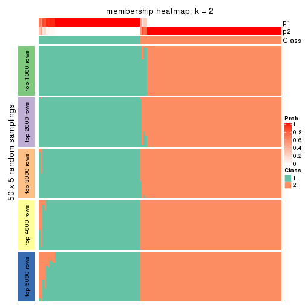
membership_heatmap(res, k = 3)

membership_heatmap(res, k = 4)
membership_heatmap(res, k = 5)
membership_heatmap(res, k = 6)
As soon as we have had the classes for columns, we can look for signatures which are significantly different between classes which can be candidate marks for certain classes. Following are the heatmaps for signatures.
Signature heatmaps where rows are scaled:
get_signatures(res, k = 2)
get_signatures(res, k = 3)
get_signatures(res, k = 4)
get_signatures(res, k = 5)
get_signatures(res, k = 6)
Signature heatmaps where rows are not scaled:
get_signatures(res, k = 2, scale_rows = FALSE)
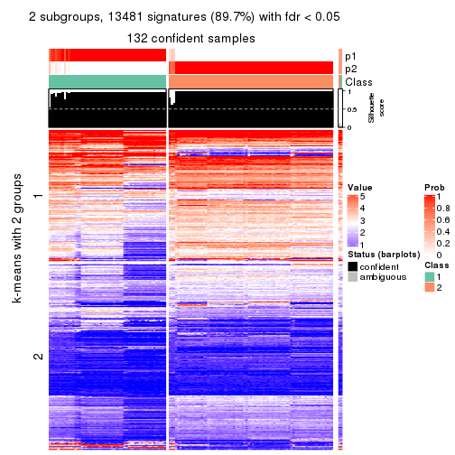
get_signatures(res, k = 3, scale_rows = FALSE)
get_signatures(res, k = 4, scale_rows = FALSE)
get_signatures(res, k = 5, scale_rows = FALSE)
get_signatures(res, k = 6, scale_rows = FALSE)
Compare the overlap of signatures from different k:
compare_signatures(res)
get_signature() returns a data frame invisibly. TO get the list of signatures, the function
call should be assigned to a variable explicitly. In following code, if plot argument is set
to FALSE, no heatmap is plotted while only the differential analysis is performed.
# code only for demonstration
tb = get_signature(res, k = ..., plot = FALSE)
An example of the output of tb is:
#> which_row fdr mean_1 mean_2 scaled_mean_1 scaled_mean_2 km
#> 1 38 0.042760348 8.373488 9.131774 -0.5533452 0.5164555 1
#> 2 40 0.018707592 7.106213 8.469186 -0.6173731 0.5762149 1
#> 3 55 0.019134737 10.221463 11.207825 -0.6159697 0.5749050 1
#> 4 59 0.006059896 5.921854 7.869574 -0.6899429 0.6439467 1
#> 5 60 0.018055526 8.928898 10.211722 -0.6204761 0.5791110 1
#> 6 98 0.009384629 15.714769 14.887706 0.6635654 -0.6193277 2
...
The columns in tb are:
which_row: row indices corresponding to the input matrix.fdr: FDR for the differential test. mean_x: The mean value in group x.scaled_mean_x: The mean value in group x after rows are scaled.km: Row groups if k-means clustering is applied to rows.UMAP plot which shows how samples are separated.
dimension_reduction(res, k = 2, method = "UMAP")
dimension_reduction(res, k = 3, method = "UMAP")
dimension_reduction(res, k = 4, method = "UMAP")
dimension_reduction(res, k = 5, method = "UMAP")
dimension_reduction(res, k = 6, method = "UMAP")
Following heatmap shows how subgroups are split when increasing k:
collect_classes(res)
If matrix rows can be associated to genes, consider to use GO_Enrichment(res,
...) to perform function enrichment for the signature genes.
The object with results only for a single top-value method and a single partition method can be extracted as:
res = res_list["ATC", "hclust"]
# you can also extract it by
# res = res_list["ATC:hclust"]
A summary of res and all the functions that can be applied to it:
res
#> A 'ConsensusPartition' object with k = 2, 3, 4, 5, 6.
#> On a matrix with 15028 rows and 134 columns.
#> Top rows (1000, 2000, 3000, 4000, 5000) are extracted by 'ATC' method.
#> Subgroups are detected by 'hclust' method.
#> Performed in total 1250 partitions by row resampling.
#> Best k for subgroups seems to be 5.
#>
#> Following methods can be applied to this 'ConsensusPartition' object:
#> [1] "cola_report" "collect_classes" "collect_plots"
#> [4] "collect_stats" "colnames" "compare_signatures"
#> [7] "consensus_heatmap" "dimension_reduction" "functional_enrichment"
#> [10] "get_anno_col" "get_anno" "get_classes"
#> [13] "get_consensus" "get_matrix" "get_membership"
#> [16] "get_param" "get_signatures" "get_stats"
#> [19] "is_best_k" "is_stable_k" "membership_heatmap"
#> [22] "ncol" "nrow" "plot_ecdf"
#> [25] "rownames" "select_partition_number" "show"
#> [28] "suggest_best_k" "test_to_known_factors"
collect_plots() function collects all the plots made from res for all k (number of partitions)
into one single page to provide an easy and fast comparison between different k.
collect_plots(res)

The plots are:
k and the heatmap of
predicted classes for each k.k.k.k.All the plots in panels can be made by individual functions and they are plotted later in this section.
select_partition_number() produces several plots showing different
statistics for choosing “optimized” k. There are following statistics:
k;k, the area increased is defined as \(A_k - A_{k-1}\).The detailed explanations of these statistics can be found in the cola vignette.
Generally speaking, lower PAC score, higher mean silhouette score or higher
concordance corresponds to better partition. Rand index and Jaccard index
measure how similar the current partition is compared to partition with k-1.
If they are too similar, we won't accept k is better than k-1.
select_partition_number(res)
The numeric values for all these statistics can be obtained by get_stats().
get_stats(res)
#> k 1-PAC mean_silhouette concordance area_increased Rand Jaccard
#> 2 2 0.704 0.933 0.964 0.32237 0.714 0.714
#> 3 3 0.850 0.951 0.974 0.79296 0.693 0.569
#> 4 4 0.957 0.956 0.966 0.05254 0.993 0.983
#> 5 5 1.000 0.959 0.985 0.04787 0.962 0.904
#> 6 6 0.998 0.908 0.964 0.00967 0.994 0.984
suggest_best_k() suggests the best \(k\) based on these statistics. The rules are as follows:
NA.suggest_best_k(res)
#> [1] 5
Following shows the table of the partitions (You need to click the show/hide
code output link to see it). The membership matrix (columns with name p*)
is inferred by
clue::cl_consensus()
function with the SE method. Basically the value in the membership matrix
represents the probability to belong to a certain group. The finall class
label for an item is determined with the group with highest probability it
belongs to.
In get_classes() function, the entropy is calculated from the membership
matrix and the silhouette score is calculated from the consensus matrix.
cbind(get_classes(res, k = 2), get_membership(res, k = 2))
#> class entropy silhouette p1 p2
#> SRR1550981 2 0.680 0.818 0.180 0.820
#> SRR1550982 2 0.680 0.818 0.180 0.820
#> SRR1550983 2 0.680 0.818 0.180 0.820
#> SRR1550984 2 0.000 0.953 0.000 1.000
#> SRR1550986 1 0.000 1.000 1.000 0.000
#> SRR1550985 2 0.000 0.953 0.000 1.000
#> SRR1550988 2 0.000 0.953 0.000 1.000
#> SRR1550987 2 0.738 0.792 0.208 0.792
#> SRR1550989 2 0.000 0.953 0.000 1.000
#> SRR1550990 2 0.000 0.953 0.000 1.000
#> SRR1550991 2 0.000 0.953 0.000 1.000
#> SRR1550992 1 0.000 1.000 1.000 0.000
#> SRR1550994 2 0.000 0.953 0.000 1.000
#> SRR1550993 2 0.738 0.792 0.208 0.792
#> SRR1550995 2 0.000 0.953 0.000 1.000
#> SRR1550996 2 0.000 0.953 0.000 1.000
#> SRR1550997 1 0.000 1.000 1.000 0.000
#> SRR1550998 2 0.738 0.792 0.208 0.792
#> SRR1551000 2 0.000 0.953 0.000 1.000
#> SRR1550999 2 0.000 0.953 0.000 1.000
#> SRR1551001 2 0.000 0.953 0.000 1.000
#> SRR1551002 1 0.000 1.000 1.000 0.000
#> SRR1551003 2 0.738 0.792 0.208 0.792
#> SRR1551004 2 0.000 0.953 0.000 1.000
#> SRR1551006 2 0.000 0.953 0.000 1.000
#> SRR1551005 2 0.000 0.953 0.000 1.000
#> SRR1551007 2 0.000 0.953 0.000 1.000
#> SRR1551008 1 0.000 1.000 1.000 0.000
#> SRR1551009 2 0.738 0.792 0.208 0.792
#> SRR1551010 2 0.000 0.953 0.000 1.000
#> SRR1551012 2 0.000 0.953 0.000 1.000
#> SRR1551011 2 0.000 0.953 0.000 1.000
#> SRR1551013 1 0.000 1.000 1.000 0.000
#> SRR1551014 2 0.738 0.792 0.208 0.792
#> SRR1551015 2 0.000 0.953 0.000 1.000
#> SRR1551016 2 0.000 0.953 0.000 1.000
#> SRR1551017 2 0.000 0.953 0.000 1.000
#> SRR1551018 2 0.000 0.953 0.000 1.000
#> SRR1551019 1 0.000 1.000 1.000 0.000
#> SRR1551021 2 0.738 0.792 0.208 0.792
#> SRR1551022 2 0.000 0.953 0.000 1.000
#> SRR1551023 2 0.000 0.953 0.000 1.000
#> SRR1551020 1 0.000 1.000 1.000 0.000
#> SRR1551024 2 0.000 0.953 0.000 1.000
#> SRR1551026 1 0.000 1.000 1.000 0.000
#> SRR1551025 1 0.000 1.000 1.000 0.000
#> SRR1551027 2 0.738 0.792 0.208 0.792
#> SRR1551028 2 0.000 0.953 0.000 1.000
#> SRR1551029 2 0.000 0.953 0.000 1.000
#> SRR1551030 2 0.000 0.953 0.000 1.000
#> SRR1551031 2 0.000 0.953 0.000 1.000
#> SRR1551032 1 0.000 1.000 1.000 0.000
#> SRR1551034 2 0.738 0.792 0.208 0.792
#> SRR1551033 1 0.000 1.000 1.000 0.000
#> SRR1551035 2 0.000 0.953 0.000 1.000
#> SRR1551036 2 0.000 0.953 0.000 1.000
#> SRR1551037 2 0.000 0.953 0.000 1.000
#> SRR1551038 2 0.000 0.953 0.000 1.000
#> SRR1551039 2 0.000 0.953 0.000 1.000
#> SRR1551040 1 0.000 1.000 1.000 0.000
#> SRR1551041 2 0.738 0.792 0.208 0.792
#> SRR1551042 2 0.000 0.953 0.000 1.000
#> SRR1551043 2 0.000 0.953 0.000 1.000
#> SRR1551044 2 0.000 0.953 0.000 1.000
#> SRR1551045 2 0.000 0.953 0.000 1.000
#> SRR1551046 2 0.680 0.818 0.180 0.820
#> SRR1551047 1 0.000 1.000 1.000 0.000
#> SRR1551048 2 0.738 0.792 0.208 0.792
#> SRR1551049 2 0.000 0.953 0.000 1.000
#> SRR1551050 2 0.000 0.953 0.000 1.000
#> SRR1551051 2 0.000 0.953 0.000 1.000
#> SRR1551052 2 0.000 0.953 0.000 1.000
#> SRR1551053 2 0.000 0.953 0.000 1.000
#> SRR1551054 1 0.000 1.000 1.000 0.000
#> SRR1551055 2 0.738 0.792 0.208 0.792
#> SRR1551056 2 0.000 0.953 0.000 1.000
#> SRR1551057 2 0.000 0.953 0.000 1.000
#> SRR1551058 2 0.000 0.953 0.000 1.000
#> SRR1551059 2 0.000 0.953 0.000 1.000
#> SRR1551060 2 0.000 0.953 0.000 1.000
#> SRR1551061 1 0.000 1.000 1.000 0.000
#> SRR1551062 2 0.738 0.792 0.208 0.792
#> SRR1551063 2 0.000 0.953 0.000 1.000
#> SRR1551064 2 0.000 0.953 0.000 1.000
#> SRR1551065 2 0.000 0.953 0.000 1.000
#> SRR1551066 2 0.000 0.953 0.000 1.000
#> SRR1551067 2 0.000 0.953 0.000 1.000
#> SRR1551068 1 0.000 1.000 1.000 0.000
#> SRR1551069 2 0.738 0.792 0.208 0.792
#> SRR1551070 2 0.000 0.953 0.000 1.000
#> SRR1551071 2 0.000 0.953 0.000 1.000
#> SRR1551072 2 0.000 0.953 0.000 1.000
#> SRR1551073 2 0.000 0.953 0.000 1.000
#> SRR1551074 2 0.000 0.953 0.000 1.000
#> SRR1551075 1 0.000 1.000 1.000 0.000
#> SRR1551076 2 0.738 0.792 0.208 0.792
#> SRR1551077 2 0.000 0.953 0.000 1.000
#> SRR1551078 2 0.000 0.953 0.000 1.000
#> SRR1551079 2 0.000 0.953 0.000 1.000
#> SRR1551080 2 0.000 0.953 0.000 1.000
#> SRR1551081 2 0.000 0.953 0.000 1.000
#> SRR1551082 1 0.000 1.000 1.000 0.000
#> SRR1551083 2 0.738 0.792 0.208 0.792
#> SRR1551084 2 0.000 0.953 0.000 1.000
#> SRR1551085 2 0.000 0.953 0.000 1.000
#> SRR1551086 2 0.000 0.953 0.000 1.000
#> SRR1551088 1 0.000 1.000 1.000 0.000
#> SRR1551087 2 0.000 0.953 0.000 1.000
#> SRR1551089 2 0.738 0.792 0.208 0.792
#> SRR1551090 2 0.000 0.953 0.000 1.000
#> SRR1551091 2 0.000 0.953 0.000 1.000
#> SRR1551092 2 0.000 0.953 0.000 1.000
#> SRR1551093 2 0.000 0.953 0.000 1.000
#> SRR1551094 2 0.000 0.953 0.000 1.000
#> SRR1551095 1 0.000 1.000 1.000 0.000
#> SRR1551096 2 0.738 0.792 0.208 0.792
#> SRR1551097 2 0.000 0.953 0.000 1.000
#> SRR1551098 2 0.000 0.953 0.000 1.000
#> SRR1551099 2 0.000 0.953 0.000 1.000
#> SRR1551101 1 0.000 1.000 1.000 0.000
#> SRR1551100 2 0.000 0.953 0.000 1.000
#> SRR1551102 2 0.738 0.792 0.208 0.792
#> SRR1551103 2 0.000 0.953 0.000 1.000
#> SRR1551104 2 0.000 0.953 0.000 1.000
#> SRR1551105 2 0.000 0.953 0.000 1.000
#> SRR1551106 2 0.000 0.953 0.000 1.000
#> SRR1551107 2 0.000 0.953 0.000 1.000
#> SRR1551108 1 0.000 1.000 1.000 0.000
#> SRR1551109 2 0.738 0.792 0.208 0.792
#> SRR1551110 2 0.000 0.953 0.000 1.000
#> SRR1551111 2 0.000 0.953 0.000 1.000
#> SRR1551112 2 0.000 0.953 0.000 1.000
#> SRR1551113 2 0.000 0.953 0.000 1.000
#> SRR1551114 2 0.000 0.953 0.000 1.000
cbind(get_classes(res, k = 3), get_membership(res, k = 3))
#> class entropy silhouette p1 p2 p3
#> SRR1550981 1 0.116 0.879 0.972 0.028 0.000
#> SRR1550982 1 0.116 0.879 0.972 0.028 0.000
#> SRR1550983 1 0.116 0.879 0.972 0.028 0.000
#> SRR1550984 1 0.465 0.800 0.792 0.208 0.000
#> SRR1550986 3 0.000 0.974 0.000 0.000 1.000
#> SRR1550985 1 0.465 0.800 0.792 0.208 0.000
#> SRR1550988 2 0.000 1.000 0.000 1.000 0.000
#> SRR1550987 1 0.000 0.884 1.000 0.000 0.000
#> SRR1550989 2 0.000 1.000 0.000 1.000 0.000
#> SRR1550990 2 0.000 1.000 0.000 1.000 0.000
#> SRR1550991 2 0.000 1.000 0.000 1.000 0.000
#> SRR1550992 3 0.000 0.974 0.000 0.000 1.000
#> SRR1550994 2 0.000 1.000 0.000 1.000 0.000
#> SRR1550993 1 0.000 0.884 1.000 0.000 0.000
#> SRR1550995 2 0.000 1.000 0.000 1.000 0.000
#> SRR1550996 2 0.000 1.000 0.000 1.000 0.000
#> SRR1550997 3 0.000 0.974 0.000 0.000 1.000
#> SRR1550998 1 0.000 0.884 1.000 0.000 0.000
#> SRR1551000 2 0.000 1.000 0.000 1.000 0.000
#> SRR1550999 2 0.000 1.000 0.000 1.000 0.000
#> SRR1551001 2 0.000 1.000 0.000 1.000 0.000
#> SRR1551002 3 0.000 0.974 0.000 0.000 1.000
#> SRR1551003 1 0.000 0.884 1.000 0.000 0.000
#> SRR1551004 2 0.000 1.000 0.000 1.000 0.000
#> SRR1551006 2 0.000 1.000 0.000 1.000 0.000
#> SRR1551005 2 0.000 1.000 0.000 1.000 0.000
#> SRR1551007 2 0.000 1.000 0.000 1.000 0.000
#> SRR1551008 3 0.000 0.974 0.000 0.000 1.000
#> SRR1551009 1 0.000 0.884 1.000 0.000 0.000
#> SRR1551010 2 0.000 1.000 0.000 1.000 0.000
#> SRR1551012 2 0.000 1.000 0.000 1.000 0.000
#> SRR1551011 2 0.000 1.000 0.000 1.000 0.000
#> SRR1551013 3 0.000 0.974 0.000 0.000 1.000
#> SRR1551014 1 0.000 0.884 1.000 0.000 0.000
#> SRR1551015 2 0.000 1.000 0.000 1.000 0.000
#> SRR1551016 2 0.000 1.000 0.000 1.000 0.000
#> SRR1551017 2 0.000 1.000 0.000 1.000 0.000
#> SRR1551018 2 0.000 1.000 0.000 1.000 0.000
#> SRR1551019 3 0.465 0.793 0.208 0.000 0.792
#> SRR1551021 1 0.000 0.884 1.000 0.000 0.000
#> SRR1551022 2 0.000 1.000 0.000 1.000 0.000
#> SRR1551023 2 0.000 1.000 0.000 1.000 0.000
#> SRR1551020 3 0.000 0.974 0.000 0.000 1.000
#> SRR1551024 2 0.000 1.000 0.000 1.000 0.000
#> SRR1551026 3 0.000 0.974 0.000 0.000 1.000
#> SRR1551025 3 0.465 0.793 0.208 0.000 0.792
#> SRR1551027 1 0.000 0.884 1.000 0.000 0.000
#> SRR1551028 2 0.000 1.000 0.000 1.000 0.000
#> SRR1551029 2 0.000 1.000 0.000 1.000 0.000
#> SRR1551030 2 0.000 1.000 0.000 1.000 0.000
#> SRR1551031 2 0.000 1.000 0.000 1.000 0.000
#> SRR1551032 3 0.465 0.793 0.208 0.000 0.792
#> SRR1551034 1 0.000 0.884 1.000 0.000 0.000
#> SRR1551033 3 0.000 0.974 0.000 0.000 1.000
#> SRR1551035 2 0.000 1.000 0.000 1.000 0.000
#> SRR1551036 2 0.000 1.000 0.000 1.000 0.000
#> SRR1551037 2 0.000 1.000 0.000 1.000 0.000
#> SRR1551038 2 0.000 1.000 0.000 1.000 0.000
#> SRR1551039 1 0.465 0.800 0.792 0.208 0.000
#> SRR1551040 3 0.000 0.974 0.000 0.000 1.000
#> SRR1551041 1 0.000 0.884 1.000 0.000 0.000
#> SRR1551042 2 0.000 1.000 0.000 1.000 0.000
#> SRR1551043 2 0.000 1.000 0.000 1.000 0.000
#> SRR1551044 2 0.000 1.000 0.000 1.000 0.000
#> SRR1551045 2 0.000 1.000 0.000 1.000 0.000
#> SRR1551046 1 0.116 0.879 0.972 0.028 0.000
#> SRR1551047 3 0.000 0.974 0.000 0.000 1.000
#> SRR1551048 1 0.000 0.884 1.000 0.000 0.000
#> SRR1551049 2 0.000 1.000 0.000 1.000 0.000
#> SRR1551050 2 0.000 1.000 0.000 1.000 0.000
#> SRR1551051 2 0.000 1.000 0.000 1.000 0.000
#> SRR1551052 2 0.000 1.000 0.000 1.000 0.000
#> SRR1551053 1 0.465 0.800 0.792 0.208 0.000
#> SRR1551054 3 0.000 0.974 0.000 0.000 1.000
#> SRR1551055 1 0.000 0.884 1.000 0.000 0.000
#> SRR1551056 2 0.000 1.000 0.000 1.000 0.000
#> SRR1551057 2 0.000 1.000 0.000 1.000 0.000
#> SRR1551058 2 0.000 1.000 0.000 1.000 0.000
#> SRR1551059 2 0.000 1.000 0.000 1.000 0.000
#> SRR1551060 1 0.465 0.800 0.792 0.208 0.000
#> SRR1551061 3 0.000 0.974 0.000 0.000 1.000
#> SRR1551062 1 0.000 0.884 1.000 0.000 0.000
#> SRR1551063 2 0.000 1.000 0.000 1.000 0.000
#> SRR1551064 2 0.000 1.000 0.000 1.000 0.000
#> SRR1551065 2 0.000 1.000 0.000 1.000 0.000
#> SRR1551066 2 0.000 1.000 0.000 1.000 0.000
#> SRR1551067 1 0.465 0.800 0.792 0.208 0.000
#> SRR1551068 3 0.000 0.974 0.000 0.000 1.000
#> SRR1551069 1 0.000 0.884 1.000 0.000 0.000
#> SRR1551070 2 0.000 1.000 0.000 1.000 0.000
#> SRR1551071 2 0.000 1.000 0.000 1.000 0.000
#> SRR1551072 2 0.000 1.000 0.000 1.000 0.000
#> SRR1551073 2 0.000 1.000 0.000 1.000 0.000
#> SRR1551074 1 0.465 0.800 0.792 0.208 0.000
#> SRR1551075 3 0.000 0.974 0.000 0.000 1.000
#> SRR1551076 1 0.000 0.884 1.000 0.000 0.000
#> SRR1551077 2 0.000 1.000 0.000 1.000 0.000
#> SRR1551078 2 0.000 1.000 0.000 1.000 0.000
#> SRR1551079 2 0.000 1.000 0.000 1.000 0.000
#> SRR1551080 2 0.000 1.000 0.000 1.000 0.000
#> SRR1551081 1 0.465 0.800 0.792 0.208 0.000
#> SRR1551082 3 0.000 0.974 0.000 0.000 1.000
#> SRR1551083 1 0.000 0.884 1.000 0.000 0.000
#> SRR1551084 2 0.000 1.000 0.000 1.000 0.000
#> SRR1551085 2 0.000 1.000 0.000 1.000 0.000
#> SRR1551086 2 0.000 1.000 0.000 1.000 0.000
#> SRR1551088 3 0.000 0.974 0.000 0.000 1.000
#> SRR1551087 1 0.465 0.800 0.792 0.208 0.000
#> SRR1551089 1 0.000 0.884 1.000 0.000 0.000
#> SRR1551090 2 0.000 1.000 0.000 1.000 0.000
#> SRR1551091 2 0.000 1.000 0.000 1.000 0.000
#> SRR1551092 2 0.000 1.000 0.000 1.000 0.000
#> SRR1551093 2 0.000 1.000 0.000 1.000 0.000
#> SRR1551094 1 0.465 0.800 0.792 0.208 0.000
#> SRR1551095 3 0.000 0.974 0.000 0.000 1.000
#> SRR1551096 1 0.000 0.884 1.000 0.000 0.000
#> SRR1551097 2 0.000 1.000 0.000 1.000 0.000
#> SRR1551098 2 0.000 1.000 0.000 1.000 0.000
#> SRR1551099 2 0.000 1.000 0.000 1.000 0.000
#> SRR1551101 3 0.000 0.974 0.000 0.000 1.000
#> SRR1551100 1 0.465 0.800 0.792 0.208 0.000
#> SRR1551102 1 0.000 0.884 1.000 0.000 0.000
#> SRR1551103 2 0.000 1.000 0.000 1.000 0.000
#> SRR1551104 2 0.000 1.000 0.000 1.000 0.000
#> SRR1551105 2 0.000 1.000 0.000 1.000 0.000
#> SRR1551106 2 0.000 1.000 0.000 1.000 0.000
#> SRR1551107 1 0.465 0.800 0.792 0.208 0.000
#> SRR1551108 3 0.000 0.974 0.000 0.000 1.000
#> SRR1551109 1 0.000 0.884 1.000 0.000 0.000
#> SRR1551110 2 0.000 1.000 0.000 1.000 0.000
#> SRR1551111 2 0.000 1.000 0.000 1.000 0.000
#> SRR1551112 2 0.000 1.000 0.000 1.000 0.000
#> SRR1551113 2 0.000 1.000 0.000 1.000 0.000
#> SRR1551114 1 0.465 0.800 0.792 0.208 0.000
cbind(get_classes(res, k = 4), get_membership(res, k = 4))
#> class entropy silhouette p1 p2 p3 p4
#> SRR1550981 1 0.208 0.856 0.916 0 0.000 0.084
#> SRR1550982 1 0.208 0.856 0.916 0 0.000 0.084
#> SRR1550983 1 0.208 0.856 0.916 0 0.000 0.084
#> SRR1550984 1 0.416 0.793 0.736 0 0.000 0.264
#> SRR1550986 3 0.000 1.000 0.000 0 1.000 0.000
#> SRR1550985 1 0.416 0.793 0.736 0 0.000 0.264
#> SRR1550988 2 0.000 1.000 0.000 1 0.000 0.000
#> SRR1550987 1 0.000 0.872 1.000 0 0.000 0.000
#> SRR1550989 2 0.000 1.000 0.000 1 0.000 0.000
#> SRR1550990 2 0.000 1.000 0.000 1 0.000 0.000
#> SRR1550991 2 0.000 1.000 0.000 1 0.000 0.000
#> SRR1550992 3 0.000 1.000 0.000 0 1.000 0.000
#> SRR1550994 2 0.000 1.000 0.000 1 0.000 0.000
#> SRR1550993 1 0.000 0.872 1.000 0 0.000 0.000
#> SRR1550995 2 0.000 1.000 0.000 1 0.000 0.000
#> SRR1550996 2 0.000 1.000 0.000 1 0.000 0.000
#> SRR1550997 3 0.000 1.000 0.000 0 1.000 0.000
#> SRR1550998 1 0.000 0.872 1.000 0 0.000 0.000
#> SRR1551000 2 0.000 1.000 0.000 1 0.000 0.000
#> SRR1550999 2 0.000 1.000 0.000 1 0.000 0.000
#> SRR1551001 2 0.000 1.000 0.000 1 0.000 0.000
#> SRR1551002 3 0.000 1.000 0.000 0 1.000 0.000
#> SRR1551003 1 0.000 0.872 1.000 0 0.000 0.000
#> SRR1551004 2 0.000 1.000 0.000 1 0.000 0.000
#> SRR1551006 2 0.000 1.000 0.000 1 0.000 0.000
#> SRR1551005 2 0.000 1.000 0.000 1 0.000 0.000
#> SRR1551007 2 0.000 1.000 0.000 1 0.000 0.000
#> SRR1551008 3 0.000 1.000 0.000 0 1.000 0.000
#> SRR1551009 1 0.000 0.872 1.000 0 0.000 0.000
#> SRR1551010 2 0.000 1.000 0.000 1 0.000 0.000
#> SRR1551012 2 0.000 1.000 0.000 1 0.000 0.000
#> SRR1551011 2 0.000 1.000 0.000 1 0.000 0.000
#> SRR1551013 3 0.000 1.000 0.000 0 1.000 0.000
#> SRR1551014 1 0.000 0.872 1.000 0 0.000 0.000
#> SRR1551015 2 0.000 1.000 0.000 1 0.000 0.000
#> SRR1551016 2 0.000 1.000 0.000 1 0.000 0.000
#> SRR1551017 2 0.000 1.000 0.000 1 0.000 0.000
#> SRR1551018 2 0.000 1.000 0.000 1 0.000 0.000
#> SRR1551019 4 0.515 1.000 0.208 0 0.056 0.736
#> SRR1551021 1 0.000 0.872 1.000 0 0.000 0.000
#> SRR1551022 2 0.000 1.000 0.000 1 0.000 0.000
#> SRR1551023 2 0.000 1.000 0.000 1 0.000 0.000
#> SRR1551020 3 0.000 1.000 0.000 0 1.000 0.000
#> SRR1551024 2 0.000 1.000 0.000 1 0.000 0.000
#> SRR1551026 3 0.000 1.000 0.000 0 1.000 0.000
#> SRR1551025 4 0.515 1.000 0.208 0 0.056 0.736
#> SRR1551027 1 0.000 0.872 1.000 0 0.000 0.000
#> SRR1551028 2 0.000 1.000 0.000 1 0.000 0.000
#> SRR1551029 2 0.000 1.000 0.000 1 0.000 0.000
#> SRR1551030 2 0.000 1.000 0.000 1 0.000 0.000
#> SRR1551031 2 0.000 1.000 0.000 1 0.000 0.000
#> SRR1551032 4 0.515 1.000 0.208 0 0.056 0.736
#> SRR1551034 1 0.000 0.872 1.000 0 0.000 0.000
#> SRR1551033 3 0.000 1.000 0.000 0 1.000 0.000
#> SRR1551035 2 0.000 1.000 0.000 1 0.000 0.000
#> SRR1551036 2 0.000 1.000 0.000 1 0.000 0.000
#> SRR1551037 2 0.000 1.000 0.000 1 0.000 0.000
#> SRR1551038 2 0.000 1.000 0.000 1 0.000 0.000
#> SRR1551039 1 0.416 0.793 0.736 0 0.000 0.264
#> SRR1551040 3 0.000 1.000 0.000 0 1.000 0.000
#> SRR1551041 1 0.000 0.872 1.000 0 0.000 0.000
#> SRR1551042 2 0.000 1.000 0.000 1 0.000 0.000
#> SRR1551043 2 0.000 1.000 0.000 1 0.000 0.000
#> SRR1551044 2 0.000 1.000 0.000 1 0.000 0.000
#> SRR1551045 2 0.000 1.000 0.000 1 0.000 0.000
#> SRR1551046 1 0.208 0.856 0.916 0 0.000 0.084
#> SRR1551047 3 0.000 1.000 0.000 0 1.000 0.000
#> SRR1551048 1 0.000 0.872 1.000 0 0.000 0.000
#> SRR1551049 2 0.000 1.000 0.000 1 0.000 0.000
#> SRR1551050 2 0.000 1.000 0.000 1 0.000 0.000
#> SRR1551051 2 0.000 1.000 0.000 1 0.000 0.000
#> SRR1551052 2 0.000 1.000 0.000 1 0.000 0.000
#> SRR1551053 1 0.416 0.793 0.736 0 0.000 0.264
#> SRR1551054 3 0.000 1.000 0.000 0 1.000 0.000
#> SRR1551055 1 0.000 0.872 1.000 0 0.000 0.000
#> SRR1551056 2 0.000 1.000 0.000 1 0.000 0.000
#> SRR1551057 2 0.000 1.000 0.000 1 0.000 0.000
#> SRR1551058 2 0.000 1.000 0.000 1 0.000 0.000
#> SRR1551059 2 0.000 1.000 0.000 1 0.000 0.000
#> SRR1551060 1 0.416 0.793 0.736 0 0.000 0.264
#> SRR1551061 3 0.000 1.000 0.000 0 1.000 0.000
#> SRR1551062 1 0.000 0.872 1.000 0 0.000 0.000
#> SRR1551063 2 0.000 1.000 0.000 1 0.000 0.000
#> SRR1551064 2 0.000 1.000 0.000 1 0.000 0.000
#> SRR1551065 2 0.000 1.000 0.000 1 0.000 0.000
#> SRR1551066 2 0.000 1.000 0.000 1 0.000 0.000
#> SRR1551067 1 0.416 0.793 0.736 0 0.000 0.264
#> SRR1551068 3 0.000 1.000 0.000 0 1.000 0.000
#> SRR1551069 1 0.000 0.872 1.000 0 0.000 0.000
#> SRR1551070 2 0.000 1.000 0.000 1 0.000 0.000
#> SRR1551071 2 0.000 1.000 0.000 1 0.000 0.000
#> SRR1551072 2 0.000 1.000 0.000 1 0.000 0.000
#> SRR1551073 2 0.000 1.000 0.000 1 0.000 0.000
#> SRR1551074 1 0.416 0.793 0.736 0 0.000 0.264
#> SRR1551075 3 0.000 1.000 0.000 0 1.000 0.000
#> SRR1551076 1 0.000 0.872 1.000 0 0.000 0.000
#> SRR1551077 2 0.000 1.000 0.000 1 0.000 0.000
#> SRR1551078 2 0.000 1.000 0.000 1 0.000 0.000
#> SRR1551079 2 0.000 1.000 0.000 1 0.000 0.000
#> SRR1551080 2 0.000 1.000 0.000 1 0.000 0.000
#> SRR1551081 1 0.416 0.793 0.736 0 0.000 0.264
#> SRR1551082 3 0.000 1.000 0.000 0 1.000 0.000
#> SRR1551083 1 0.000 0.872 1.000 0 0.000 0.000
#> SRR1551084 2 0.000 1.000 0.000 1 0.000 0.000
#> SRR1551085 2 0.000 1.000 0.000 1 0.000 0.000
#> SRR1551086 2 0.000 1.000 0.000 1 0.000 0.000
#> SRR1551088 3 0.000 1.000 0.000 0 1.000 0.000
#> SRR1551087 1 0.416 0.793 0.736 0 0.000 0.264
#> SRR1551089 1 0.000 0.872 1.000 0 0.000 0.000
#> SRR1551090 2 0.000 1.000 0.000 1 0.000 0.000
#> SRR1551091 2 0.000 1.000 0.000 1 0.000 0.000
#> SRR1551092 2 0.000 1.000 0.000 1 0.000 0.000
#> SRR1551093 2 0.000 1.000 0.000 1 0.000 0.000
#> SRR1551094 1 0.416 0.793 0.736 0 0.000 0.264
#> SRR1551095 3 0.000 1.000 0.000 0 1.000 0.000
#> SRR1551096 1 0.000 0.872 1.000 0 0.000 0.000
#> SRR1551097 2 0.000 1.000 0.000 1 0.000 0.000
#> SRR1551098 2 0.000 1.000 0.000 1 0.000 0.000
#> SRR1551099 2 0.000 1.000 0.000 1 0.000 0.000
#> SRR1551101 3 0.000 1.000 0.000 0 1.000 0.000
#> SRR1551100 1 0.416 0.793 0.736 0 0.000 0.264
#> SRR1551102 1 0.000 0.872 1.000 0 0.000 0.000
#> SRR1551103 2 0.000 1.000 0.000 1 0.000 0.000
#> SRR1551104 2 0.000 1.000 0.000 1 0.000 0.000
#> SRR1551105 2 0.000 1.000 0.000 1 0.000 0.000
#> SRR1551106 2 0.000 1.000 0.000 1 0.000 0.000
#> SRR1551107 1 0.416 0.793 0.736 0 0.000 0.264
#> SRR1551108 3 0.000 1.000 0.000 0 1.000 0.000
#> SRR1551109 1 0.000 0.872 1.000 0 0.000 0.000
#> SRR1551110 2 0.000 1.000 0.000 1 0.000 0.000
#> SRR1551111 2 0.000 1.000 0.000 1 0.000 0.000
#> SRR1551112 2 0.000 1.000 0.000 1 0.000 0.000
#> SRR1551113 2 0.000 1.000 0.000 1 0.000 0.000
#> SRR1551114 1 0.416 0.793 0.736 0 0.000 0.264
cbind(get_classes(res, k = 5), get_membership(res, k = 5))
#> class entropy silhouette p1 p2 p3 p4 p5
#> SRR1550981 5 0.43 0.226 0.488 0 0 0 0.512
#> SRR1550982 5 0.43 0.226 0.488 0 0 0 0.512
#> SRR1550983 5 0.43 0.226 0.488 0 0 0 0.512
#> SRR1550984 5 0.00 0.820 0.000 0 0 0 1.000
#> SRR1550986 3 0.00 1.000 0.000 0 1 0 0.000
#> SRR1550985 5 0.00 0.820 0.000 0 0 0 1.000
#> SRR1550988 2 0.00 1.000 0.000 1 0 0 0.000
#> SRR1550987 1 0.00 1.000 1.000 0 0 0 0.000
#> SRR1550989 2 0.00 1.000 0.000 1 0 0 0.000
#> SRR1550990 2 0.00 1.000 0.000 1 0 0 0.000
#> SRR1550991 2 0.00 1.000 0.000 1 0 0 0.000
#> SRR1550992 3 0.00 1.000 0.000 0 1 0 0.000
#> SRR1550994 2 0.00 1.000 0.000 1 0 0 0.000
#> SRR1550993 1 0.00 1.000 1.000 0 0 0 0.000
#> SRR1550995 2 0.00 1.000 0.000 1 0 0 0.000
#> SRR1550996 2 0.00 1.000 0.000 1 0 0 0.000
#> SRR1550997 3 0.00 1.000 0.000 0 1 0 0.000
#> SRR1550998 1 0.00 1.000 1.000 0 0 0 0.000
#> SRR1551000 2 0.00 1.000 0.000 1 0 0 0.000
#> SRR1550999 2 0.00 1.000 0.000 1 0 0 0.000
#> SRR1551001 2 0.00 1.000 0.000 1 0 0 0.000
#> SRR1551002 3 0.00 1.000 0.000 0 1 0 0.000
#> SRR1551003 1 0.00 1.000 1.000 0 0 0 0.000
#> SRR1551004 2 0.00 1.000 0.000 1 0 0 0.000
#> SRR1551006 2 0.00 1.000 0.000 1 0 0 0.000
#> SRR1551005 2 0.00 1.000 0.000 1 0 0 0.000
#> SRR1551007 2 0.00 1.000 0.000 1 0 0 0.000
#> SRR1551008 3 0.00 1.000 0.000 0 1 0 0.000
#> SRR1551009 1 0.00 1.000 1.000 0 0 0 0.000
#> SRR1551010 2 0.00 1.000 0.000 1 0 0 0.000
#> SRR1551012 2 0.00 1.000 0.000 1 0 0 0.000
#> SRR1551011 2 0.00 1.000 0.000 1 0 0 0.000
#> SRR1551013 3 0.00 1.000 0.000 0 1 0 0.000
#> SRR1551014 1 0.00 1.000 1.000 0 0 0 0.000
#> SRR1551015 2 0.00 1.000 0.000 1 0 0 0.000
#> SRR1551016 2 0.00 1.000 0.000 1 0 0 0.000
#> SRR1551017 2 0.00 1.000 0.000 1 0 0 0.000
#> SRR1551018 2 0.00 1.000 0.000 1 0 0 0.000
#> SRR1551019 4 0.00 1.000 0.000 0 0 1 0.000
#> SRR1551021 1 0.00 1.000 1.000 0 0 0 0.000
#> SRR1551022 2 0.00 1.000 0.000 1 0 0 0.000
#> SRR1551023 2 0.00 1.000 0.000 1 0 0 0.000
#> SRR1551020 3 0.00 1.000 0.000 0 1 0 0.000
#> SRR1551024 2 0.00 1.000 0.000 1 0 0 0.000
#> SRR1551026 3 0.00 1.000 0.000 0 1 0 0.000
#> SRR1551025 4 0.00 1.000 0.000 0 0 1 0.000
#> SRR1551027 1 0.00 1.000 1.000 0 0 0 0.000
#> SRR1551028 2 0.00 1.000 0.000 1 0 0 0.000
#> SRR1551029 2 0.00 1.000 0.000 1 0 0 0.000
#> SRR1551030 2 0.00 1.000 0.000 1 0 0 0.000
#> SRR1551031 2 0.00 1.000 0.000 1 0 0 0.000
#> SRR1551032 4 0.00 1.000 0.000 0 0 1 0.000
#> SRR1551034 1 0.00 1.000 1.000 0 0 0 0.000
#> SRR1551033 3 0.00 1.000 0.000 0 1 0 0.000
#> SRR1551035 2 0.00 1.000 0.000 1 0 0 0.000
#> SRR1551036 2 0.00 1.000 0.000 1 0 0 0.000
#> SRR1551037 2 0.00 1.000 0.000 1 0 0 0.000
#> SRR1551038 2 0.00 1.000 0.000 1 0 0 0.000
#> SRR1551039 5 0.00 0.820 0.000 0 0 0 1.000
#> SRR1551040 3 0.00 1.000 0.000 0 1 0 0.000
#> SRR1551041 1 0.00 1.000 1.000 0 0 0 0.000
#> SRR1551042 2 0.00 1.000 0.000 1 0 0 0.000
#> SRR1551043 2 0.00 1.000 0.000 1 0 0 0.000
#> SRR1551044 2 0.00 1.000 0.000 1 0 0 0.000
#> SRR1551045 2 0.00 1.000 0.000 1 0 0 0.000
#> SRR1551046 5 0.43 0.226 0.488 0 0 0 0.512
#> SRR1551047 3 0.00 1.000 0.000 0 1 0 0.000
#> SRR1551048 1 0.00 1.000 1.000 0 0 0 0.000
#> SRR1551049 2 0.00 1.000 0.000 1 0 0 0.000
#> SRR1551050 2 0.00 1.000 0.000 1 0 0 0.000
#> SRR1551051 2 0.00 1.000 0.000 1 0 0 0.000
#> SRR1551052 2 0.00 1.000 0.000 1 0 0 0.000
#> SRR1551053 5 0.00 0.820 0.000 0 0 0 1.000
#> SRR1551054 3 0.00 1.000 0.000 0 1 0 0.000
#> SRR1551055 1 0.00 1.000 1.000 0 0 0 0.000
#> SRR1551056 2 0.00 1.000 0.000 1 0 0 0.000
#> SRR1551057 2 0.00 1.000 0.000 1 0 0 0.000
#> SRR1551058 2 0.00 1.000 0.000 1 0 0 0.000
#> SRR1551059 2 0.00 1.000 0.000 1 0 0 0.000
#> SRR1551060 5 0.00 0.820 0.000 0 0 0 1.000
#> SRR1551061 3 0.00 1.000 0.000 0 1 0 0.000
#> SRR1551062 1 0.00 1.000 1.000 0 0 0 0.000
#> SRR1551063 2 0.00 1.000 0.000 1 0 0 0.000
#> SRR1551064 2 0.00 1.000 0.000 1 0 0 0.000
#> SRR1551065 2 0.00 1.000 0.000 1 0 0 0.000
#> SRR1551066 2 0.00 1.000 0.000 1 0 0 0.000
#> SRR1551067 5 0.00 0.820 0.000 0 0 0 1.000
#> SRR1551068 3 0.00 1.000 0.000 0 1 0 0.000
#> SRR1551069 1 0.00 1.000 1.000 0 0 0 0.000
#> SRR1551070 2 0.00 1.000 0.000 1 0 0 0.000
#> SRR1551071 2 0.00 1.000 0.000 1 0 0 0.000
#> SRR1551072 2 0.00 1.000 0.000 1 0 0 0.000
#> SRR1551073 2 0.00 1.000 0.000 1 0 0 0.000
#> SRR1551074 5 0.00 0.820 0.000 0 0 0 1.000
#> SRR1551075 3 0.00 1.000 0.000 0 1 0 0.000
#> SRR1551076 1 0.00 1.000 1.000 0 0 0 0.000
#> SRR1551077 2 0.00 1.000 0.000 1 0 0 0.000
#> SRR1551078 2 0.00 1.000 0.000 1 0 0 0.000
#> SRR1551079 2 0.00 1.000 0.000 1 0 0 0.000
#> SRR1551080 2 0.00 1.000 0.000 1 0 0 0.000
#> SRR1551081 5 0.00 0.820 0.000 0 0 0 1.000
#> SRR1551082 3 0.00 1.000 0.000 0 1 0 0.000
#> SRR1551083 1 0.00 1.000 1.000 0 0 0 0.000
#> SRR1551084 2 0.00 1.000 0.000 1 0 0 0.000
#> SRR1551085 2 0.00 1.000 0.000 1 0 0 0.000
#> SRR1551086 2 0.00 1.000 0.000 1 0 0 0.000
#> SRR1551088 3 0.00 1.000 0.000 0 1 0 0.000
#> SRR1551087 5 0.00 0.820 0.000 0 0 0 1.000
#> SRR1551089 1 0.00 1.000 1.000 0 0 0 0.000
#> SRR1551090 2 0.00 1.000 0.000 1 0 0 0.000
#> SRR1551091 2 0.00 1.000 0.000 1 0 0 0.000
#> SRR1551092 2 0.00 1.000 0.000 1 0 0 0.000
#> SRR1551093 2 0.00 1.000 0.000 1 0 0 0.000
#> SRR1551094 5 0.00 0.820 0.000 0 0 0 1.000
#> SRR1551095 3 0.00 1.000 0.000 0 1 0 0.000
#> SRR1551096 1 0.00 1.000 1.000 0 0 0 0.000
#> SRR1551097 2 0.00 1.000 0.000 1 0 0 0.000
#> SRR1551098 2 0.00 1.000 0.000 1 0 0 0.000
#> SRR1551099 2 0.00 1.000 0.000 1 0 0 0.000
#> SRR1551101 3 0.00 1.000 0.000 0 1 0 0.000
#> SRR1551100 5 0.00 0.820 0.000 0 0 0 1.000
#> SRR1551102 1 0.00 1.000 1.000 0 0 0 0.000
#> SRR1551103 2 0.00 1.000 0.000 1 0 0 0.000
#> SRR1551104 2 0.00 1.000 0.000 1 0 0 0.000
#> SRR1551105 2 0.00 1.000 0.000 1 0 0 0.000
#> SRR1551106 2 0.00 1.000 0.000 1 0 0 0.000
#> SRR1551107 5 0.00 0.820 0.000 0 0 0 1.000
#> SRR1551108 3 0.00 1.000 0.000 0 1 0 0.000
#> SRR1551109 1 0.00 1.000 1.000 0 0 0 0.000
#> SRR1551110 2 0.00 1.000 0.000 1 0 0 0.000
#> SRR1551111 2 0.00 1.000 0.000 1 0 0 0.000
#> SRR1551112 2 0.00 1.000 0.000 1 0 0 0.000
#> SRR1551113 2 0.00 1.000 0.000 1 0 0 0.000
#> SRR1551114 5 0.00 0.820 0.000 0 0 0 1.000
cbind(get_classes(res, k = 6), get_membership(res, k = 6))
#> class entropy silhouette p1 p2 p3 p4 p5 p6
#> SRR1550981 5 0.000 0.323 0 0 0 0.000 1.000 0
#> SRR1550982 5 0.000 0.323 0 0 0 0.000 1.000 0
#> SRR1550983 5 0.000 0.323 0 0 0 0.000 1.000 0
#> SRR1550984 4 0.387 -0.475 0 0 0 0.516 0.484 0
#> SRR1550986 3 0.000 1.000 0 0 1 0.000 0.000 0
#> SRR1550985 4 0.387 -0.475 0 0 0 0.516 0.484 0
#> SRR1550988 2 0.000 1.000 0 1 0 0.000 0.000 0
#> SRR1550987 1 0.000 1.000 1 0 0 0.000 0.000 0
#> SRR1550989 2 0.000 1.000 0 1 0 0.000 0.000 0
#> SRR1550990 2 0.000 1.000 0 1 0 0.000 0.000 0
#> SRR1550991 2 0.000 1.000 0 1 0 0.000 0.000 0
#> SRR1550992 3 0.000 1.000 0 0 1 0.000 0.000 0
#> SRR1550994 2 0.000 1.000 0 1 0 0.000 0.000 0
#> SRR1550993 1 0.000 1.000 1 0 0 0.000 0.000 0
#> SRR1550995 2 0.000 1.000 0 1 0 0.000 0.000 0
#> SRR1550996 2 0.000 1.000 0 1 0 0.000 0.000 0
#> SRR1550997 3 0.000 1.000 0 0 1 0.000 0.000 0
#> SRR1550998 1 0.000 1.000 1 0 0 0.000 0.000 0
#> SRR1551000 2 0.000 1.000 0 1 0 0.000 0.000 0
#> SRR1550999 2 0.000 1.000 0 1 0 0.000 0.000 0
#> SRR1551001 2 0.000 1.000 0 1 0 0.000 0.000 0
#> SRR1551002 3 0.000 1.000 0 0 1 0.000 0.000 0
#> SRR1551003 1 0.000 1.000 1 0 0 0.000 0.000 0
#> SRR1551004 2 0.000 1.000 0 1 0 0.000 0.000 0
#> SRR1551006 2 0.000 1.000 0 1 0 0.000 0.000 0
#> SRR1551005 2 0.000 1.000 0 1 0 0.000 0.000 0
#> SRR1551007 2 0.000 1.000 0 1 0 0.000 0.000 0
#> SRR1551008 3 0.000 1.000 0 0 1 0.000 0.000 0
#> SRR1551009 1 0.000 1.000 1 0 0 0.000 0.000 0
#> SRR1551010 2 0.000 1.000 0 1 0 0.000 0.000 0
#> SRR1551012 2 0.000 1.000 0 1 0 0.000 0.000 0
#> SRR1551011 2 0.000 1.000 0 1 0 0.000 0.000 0
#> SRR1551013 3 0.000 1.000 0 0 1 0.000 0.000 0
#> SRR1551014 1 0.000 1.000 1 0 0 0.000 0.000 0
#> SRR1551015 2 0.000 1.000 0 1 0 0.000 0.000 0
#> SRR1551016 2 0.000 1.000 0 1 0 0.000 0.000 0
#> SRR1551017 2 0.000 1.000 0 1 0 0.000 0.000 0
#> SRR1551018 2 0.000 1.000 0 1 0 0.000 0.000 0
#> SRR1551019 6 0.000 1.000 0 0 0 0.000 0.000 1
#> SRR1551021 1 0.000 1.000 1 0 0 0.000 0.000 0
#> SRR1551022 2 0.000 1.000 0 1 0 0.000 0.000 0
#> SRR1551023 2 0.000 1.000 0 1 0 0.000 0.000 0
#> SRR1551020 3 0.000 1.000 0 0 1 0.000 0.000 0
#> SRR1551024 2 0.000 1.000 0 1 0 0.000 0.000 0
#> SRR1551026 3 0.000 1.000 0 0 1 0.000 0.000 0
#> SRR1551025 6 0.000 1.000 0 0 0 0.000 0.000 1
#> SRR1551027 1 0.000 1.000 1 0 0 0.000 0.000 0
#> SRR1551028 2 0.000 1.000 0 1 0 0.000 0.000 0
#> SRR1551029 2 0.000 1.000 0 1 0 0.000 0.000 0
#> SRR1551030 2 0.000 1.000 0 1 0 0.000 0.000 0
#> SRR1551031 2 0.000 1.000 0 1 0 0.000 0.000 0
#> SRR1551032 6 0.000 1.000 0 0 0 0.000 0.000 1
#> SRR1551034 1 0.000 1.000 1 0 0 0.000 0.000 0
#> SRR1551033 3 0.000 1.000 0 0 1 0.000 0.000 0
#> SRR1551035 2 0.000 1.000 0 1 0 0.000 0.000 0
#> SRR1551036 2 0.000 1.000 0 1 0 0.000 0.000 0
#> SRR1551037 2 0.000 1.000 0 1 0 0.000 0.000 0
#> SRR1551038 2 0.000 1.000 0 1 0 0.000 0.000 0
#> SRR1551039 5 0.387 0.390 0 0 0 0.488 0.512 0
#> SRR1551040 3 0.000 1.000 0 0 1 0.000 0.000 0
#> SRR1551041 1 0.000 1.000 1 0 0 0.000 0.000 0
#> SRR1551042 2 0.000 1.000 0 1 0 0.000 0.000 0
#> SRR1551043 2 0.000 1.000 0 1 0 0.000 0.000 0
#> SRR1551044 2 0.000 1.000 0 1 0 0.000 0.000 0
#> SRR1551045 2 0.000 1.000 0 1 0 0.000 0.000 0
#> SRR1551046 5 0.000 0.323 0 0 0 0.000 1.000 0
#> SRR1551047 3 0.000 1.000 0 0 1 0.000 0.000 0
#> SRR1551048 1 0.000 1.000 1 0 0 0.000 0.000 0
#> SRR1551049 2 0.000 1.000 0 1 0 0.000 0.000 0
#> SRR1551050 2 0.000 1.000 0 1 0 0.000 0.000 0
#> SRR1551051 2 0.000 1.000 0 1 0 0.000 0.000 0
#> SRR1551052 2 0.000 1.000 0 1 0 0.000 0.000 0
#> SRR1551053 4 0.000 0.395 0 0 0 1.000 0.000 0
#> SRR1551054 3 0.000 1.000 0 0 1 0.000 0.000 0
#> SRR1551055 1 0.000 1.000 1 0 0 0.000 0.000 0
#> SRR1551056 2 0.000 1.000 0 1 0 0.000 0.000 0
#> SRR1551057 2 0.000 1.000 0 1 0 0.000 0.000 0
#> SRR1551058 2 0.000 1.000 0 1 0 0.000 0.000 0
#> SRR1551059 2 0.000 1.000 0 1 0 0.000 0.000 0
#> SRR1551060 4 0.000 0.395 0 0 0 1.000 0.000 0
#> SRR1551061 3 0.000 1.000 0 0 1 0.000 0.000 0
#> SRR1551062 1 0.000 1.000 1 0 0 0.000 0.000 0
#> SRR1551063 2 0.000 1.000 0 1 0 0.000 0.000 0
#> SRR1551064 2 0.000 1.000 0 1 0 0.000 0.000 0
#> SRR1551065 2 0.000 1.000 0 1 0 0.000 0.000 0
#> SRR1551066 2 0.000 1.000 0 1 0 0.000 0.000 0
#> SRR1551067 5 0.387 0.390 0 0 0 0.488 0.512 0
#> SRR1551068 3 0.000 1.000 0 0 1 0.000 0.000 0
#> SRR1551069 1 0.000 1.000 1 0 0 0.000 0.000 0
#> SRR1551070 2 0.000 1.000 0 1 0 0.000 0.000 0
#> SRR1551071 2 0.000 1.000 0 1 0 0.000 0.000 0
#> SRR1551072 2 0.000 1.000 0 1 0 0.000 0.000 0
#> SRR1551073 2 0.000 1.000 0 1 0 0.000 0.000 0
#> SRR1551074 5 0.387 0.390 0 0 0 0.488 0.512 0
#> SRR1551075 3 0.000 1.000 0 0 1 0.000 0.000 0
#> SRR1551076 1 0.000 1.000 1 0 0 0.000 0.000 0
#> SRR1551077 2 0.000 1.000 0 1 0 0.000 0.000 0
#> SRR1551078 2 0.000 1.000 0 1 0 0.000 0.000 0
#> SRR1551079 2 0.000 1.000 0 1 0 0.000 0.000 0
#> SRR1551080 2 0.000 1.000 0 1 0 0.000 0.000 0
#> SRR1551081 5 0.387 0.390 0 0 0 0.488 0.512 0
#> SRR1551082 3 0.000 1.000 0 0 1 0.000 0.000 0
#> SRR1551083 1 0.000 1.000 1 0 0 0.000 0.000 0
#> SRR1551084 2 0.000 1.000 0 1 0 0.000 0.000 0
#> SRR1551085 2 0.000 1.000 0 1 0 0.000 0.000 0
#> SRR1551086 2 0.000 1.000 0 1 0 0.000 0.000 0
#> SRR1551088 3 0.000 1.000 0 0 1 0.000 0.000 0
#> SRR1551087 5 0.387 0.390 0 0 0 0.488 0.512 0
#> SRR1551089 1 0.000 1.000 1 0 0 0.000 0.000 0
#> SRR1551090 2 0.000 1.000 0 1 0 0.000 0.000 0
#> SRR1551091 2 0.000 1.000 0 1 0 0.000 0.000 0
#> SRR1551092 2 0.000 1.000 0 1 0 0.000 0.000 0
#> SRR1551093 2 0.000 1.000 0 1 0 0.000 0.000 0
#> SRR1551094 5 0.387 0.390 0 0 0 0.488 0.512 0
#> SRR1551095 3 0.000 1.000 0 0 1 0.000 0.000 0
#> SRR1551096 1 0.000 1.000 1 0 0 0.000 0.000 0
#> SRR1551097 2 0.000 1.000 0 1 0 0.000 0.000 0
#> SRR1551098 2 0.000 1.000 0 1 0 0.000 0.000 0
#> SRR1551099 2 0.000 1.000 0 1 0 0.000 0.000 0
#> SRR1551101 3 0.000 1.000 0 0 1 0.000 0.000 0
#> SRR1551100 5 0.387 0.390 0 0 0 0.488 0.512 0
#> SRR1551102 1 0.000 1.000 1 0 0 0.000 0.000 0
#> SRR1551103 2 0.000 1.000 0 1 0 0.000 0.000 0
#> SRR1551104 2 0.000 1.000 0 1 0 0.000 0.000 0
#> SRR1551105 2 0.000 1.000 0 1 0 0.000 0.000 0
#> SRR1551106 2 0.000 1.000 0 1 0 0.000 0.000 0
#> SRR1551107 5 0.387 0.390 0 0 0 0.488 0.512 0
#> SRR1551108 3 0.000 1.000 0 0 1 0.000 0.000 0
#> SRR1551109 1 0.000 1.000 1 0 0 0.000 0.000 0
#> SRR1551110 2 0.000 1.000 0 1 0 0.000 0.000 0
#> SRR1551111 2 0.000 1.000 0 1 0 0.000 0.000 0
#> SRR1551112 2 0.000 1.000 0 1 0 0.000 0.000 0
#> SRR1551113 2 0.000 1.000 0 1 0 0.000 0.000 0
#> SRR1551114 5 0.387 0.390 0 0 0 0.488 0.512 0
Heatmaps for the consensus matrix. It visualizes the probability of two samples to be in a same group.
consensus_heatmap(res, k = 2)

consensus_heatmap(res, k = 3)
consensus_heatmap(res, k = 4)
consensus_heatmap(res, k = 5)
consensus_heatmap(res, k = 6)
Heatmaps for the membership of samples in all partitions to see how consistent they are:
membership_heatmap(res, k = 2)
membership_heatmap(res, k = 3)
membership_heatmap(res, k = 4)
membership_heatmap(res, k = 5)
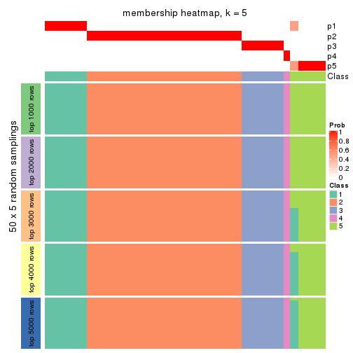
membership_heatmap(res, k = 6)
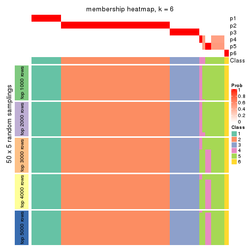
As soon as we have had the classes for columns, we can look for signatures which are significantly different between classes which can be candidate marks for certain classes. Following are the heatmaps for signatures.
Signature heatmaps where rows are scaled:
get_signatures(res, k = 2)
get_signatures(res, k = 3)
get_signatures(res, k = 4)
get_signatures(res, k = 5)
get_signatures(res, k = 6)
Signature heatmaps where rows are not scaled:
get_signatures(res, k = 2, scale_rows = FALSE)
get_signatures(res, k = 3, scale_rows = FALSE)
get_signatures(res, k = 4, scale_rows = FALSE)
get_signatures(res, k = 5, scale_rows = FALSE)
get_signatures(res, k = 6, scale_rows = FALSE)
Compare the overlap of signatures from different k:
compare_signatures(res)
get_signature() returns a data frame invisibly. TO get the list of signatures, the function
call should be assigned to a variable explicitly. In following code, if plot argument is set
to FALSE, no heatmap is plotted while only the differential analysis is performed.
# code only for demonstration
tb = get_signature(res, k = ..., plot = FALSE)
An example of the output of tb is:
#> which_row fdr mean_1 mean_2 scaled_mean_1 scaled_mean_2 km
#> 1 38 0.042760348 8.373488 9.131774 -0.5533452 0.5164555 1
#> 2 40 0.018707592 7.106213 8.469186 -0.6173731 0.5762149 1
#> 3 55 0.019134737 10.221463 11.207825 -0.6159697 0.5749050 1
#> 4 59 0.006059896 5.921854 7.869574 -0.6899429 0.6439467 1
#> 5 60 0.018055526 8.928898 10.211722 -0.6204761 0.5791110 1
#> 6 98 0.009384629 15.714769 14.887706 0.6635654 -0.6193277 2
...
The columns in tb are:
which_row: row indices corresponding to the input matrix.fdr: FDR for the differential test. mean_x: The mean value in group x.scaled_mean_x: The mean value in group x after rows are scaled.km: Row groups if k-means clustering is applied to rows.UMAP plot which shows how samples are separated.
dimension_reduction(res, k = 2, method = "UMAP")
dimension_reduction(res, k = 3, method = "UMAP")
dimension_reduction(res, k = 4, method = "UMAP")
dimension_reduction(res, k = 5, method = "UMAP")
dimension_reduction(res, k = 6, method = "UMAP")

Following heatmap shows how subgroups are split when increasing k:
collect_classes(res)
If matrix rows can be associated to genes, consider to use GO_Enrichment(res,
...) to perform function enrichment for the signature genes.
The object with results only for a single top-value method and a single partition method can be extracted as:
res = res_list["ATC", "kmeans"]
# you can also extract it by
# res = res_list["ATC:kmeans"]
A summary of res and all the functions that can be applied to it:
res
#> A 'ConsensusPartition' object with k = 2, 3, 4, 5, 6.
#> On a matrix with 15028 rows and 134 columns.
#> Top rows (1000, 2000, 3000, 4000, 5000) are extracted by 'ATC' method.
#> Subgroups are detected by 'kmeans' method.
#> Performed in total 1250 partitions by row resampling.
#> Best k for subgroups seems to be 3.
#>
#> Following methods can be applied to this 'ConsensusPartition' object:
#> [1] "cola_report" "collect_classes" "collect_plots"
#> [4] "collect_stats" "colnames" "compare_signatures"
#> [7] "consensus_heatmap" "dimension_reduction" "functional_enrichment"
#> [10] "get_anno_col" "get_anno" "get_classes"
#> [13] "get_consensus" "get_matrix" "get_membership"
#> [16] "get_param" "get_signatures" "get_stats"
#> [19] "is_best_k" "is_stable_k" "membership_heatmap"
#> [22] "ncol" "nrow" "plot_ecdf"
#> [25] "rownames" "select_partition_number" "show"
#> [28] "suggest_best_k" "test_to_known_factors"
collect_plots() function collects all the plots made from res for all k (number of partitions)
into one single page to provide an easy and fast comparison between different k.
collect_plots(res)
The plots are:
k and the heatmap of
predicted classes for each k.k.k.k.All the plots in panels can be made by individual functions and they are plotted later in this section.
select_partition_number() produces several plots showing different
statistics for choosing “optimized” k. There are following statistics:
k;k, the area increased is defined as \(A_k - A_{k-1}\).The detailed explanations of these statistics can be found in the cola vignette.
Generally speaking, lower PAC score, higher mean silhouette score or higher
concordance corresponds to better partition. Rand index and Jaccard index
measure how similar the current partition is compared to partition with k-1.
If they are too similar, we won't accept k is better than k-1.
select_partition_number(res)
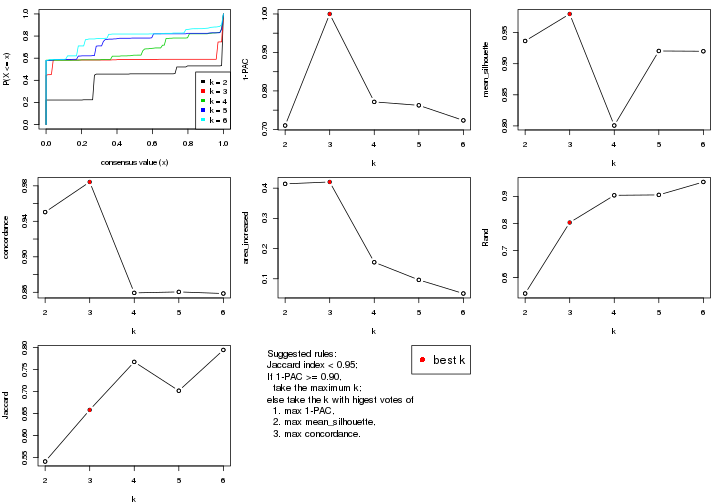
The numeric values for all these statistics can be obtained by get_stats().
get_stats(res)
#> k 1-PAC mean_silhouette concordance area_increased Rand Jaccard
#> 2 2 0.710 0.936 0.950 0.4142 0.541 0.541
#> 3 3 1.000 0.980 0.984 0.4205 0.804 0.658
#> 4 4 0.771 0.801 0.859 0.1546 0.904 0.767
#> 5 5 0.763 0.920 0.860 0.0962 0.906 0.702
#> 6 6 0.723 0.920 0.859 0.0511 0.954 0.795
suggest_best_k() suggests the best \(k\) based on these statistics. The rules are as follows:
NA.suggest_best_k(res)
#> [1] 3
Following shows the table of the partitions (You need to click the show/hide
code output link to see it). The membership matrix (columns with name p*)
is inferred by
clue::cl_consensus()
function with the SE method. Basically the value in the membership matrix
represents the probability to belong to a certain group. The finall class
label for an item is determined with the group with highest probability it
belongs to.
In get_classes() function, the entropy is calculated from the membership
matrix and the silhouette score is calculated from the consensus matrix.
cbind(get_classes(res, k = 2), get_membership(res, k = 2))
#> class entropy silhouette p1 p2
#> SRR1550981 1 0.839 0.815 0.732 0.268
#> SRR1550982 2 0.730 0.674 0.204 0.796
#> SRR1550983 1 0.839 0.815 0.732 0.268
#> SRR1550984 2 0.000 0.997 0.000 1.000
#> SRR1550986 1 0.000 0.848 1.000 0.000
#> SRR1550985 2 0.000 0.997 0.000 1.000
#> SRR1550988 2 0.000 0.997 0.000 1.000
#> SRR1550987 1 0.839 0.815 0.732 0.268
#> SRR1550989 2 0.000 0.997 0.000 1.000
#> SRR1550990 2 0.000 0.997 0.000 1.000
#> SRR1550991 2 0.000 0.997 0.000 1.000
#> SRR1550992 1 0.000 0.848 1.000 0.000
#> SRR1550994 2 0.000 0.997 0.000 1.000
#> SRR1550993 1 0.839 0.815 0.732 0.268
#> SRR1550995 2 0.000 0.997 0.000 1.000
#> SRR1550996 2 0.000 0.997 0.000 1.000
#> SRR1550997 1 0.000 0.848 1.000 0.000
#> SRR1550998 1 0.839 0.815 0.732 0.268
#> SRR1551000 2 0.000 0.997 0.000 1.000
#> SRR1550999 2 0.000 0.997 0.000 1.000
#> SRR1551001 2 0.000 0.997 0.000 1.000
#> SRR1551002 1 0.000 0.848 1.000 0.000
#> SRR1551003 1 0.839 0.815 0.732 0.268
#> SRR1551004 2 0.000 0.997 0.000 1.000
#> SRR1551006 2 0.000 0.997 0.000 1.000
#> SRR1551005 2 0.000 0.997 0.000 1.000
#> SRR1551007 2 0.000 0.997 0.000 1.000
#> SRR1551008 1 0.000 0.848 1.000 0.000
#> SRR1551009 1 0.839 0.815 0.732 0.268
#> SRR1551010 2 0.000 0.997 0.000 1.000
#> SRR1551012 2 0.000 0.997 0.000 1.000
#> SRR1551011 2 0.000 0.997 0.000 1.000
#> SRR1551013 1 0.000 0.848 1.000 0.000
#> SRR1551014 1 0.839 0.815 0.732 0.268
#> SRR1551015 2 0.000 0.997 0.000 1.000
#> SRR1551016 2 0.000 0.997 0.000 1.000
#> SRR1551017 2 0.000 0.997 0.000 1.000
#> SRR1551018 2 0.000 0.997 0.000 1.000
#> SRR1551019 1 0.000 0.848 1.000 0.000
#> SRR1551021 1 0.839 0.815 0.732 0.268
#> SRR1551022 2 0.000 0.997 0.000 1.000
#> SRR1551023 2 0.000 0.997 0.000 1.000
#> SRR1551020 1 0.000 0.848 1.000 0.000
#> SRR1551024 2 0.000 0.997 0.000 1.000
#> SRR1551026 1 0.000 0.848 1.000 0.000
#> SRR1551025 1 0.000 0.848 1.000 0.000
#> SRR1551027 1 0.839 0.815 0.732 0.268
#> SRR1551028 2 0.000 0.997 0.000 1.000
#> SRR1551029 2 0.000 0.997 0.000 1.000
#> SRR1551030 2 0.000 0.997 0.000 1.000
#> SRR1551031 2 0.000 0.997 0.000 1.000
#> SRR1551032 1 0.000 0.848 1.000 0.000
#> SRR1551034 1 0.839 0.815 0.732 0.268
#> SRR1551033 1 0.000 0.848 1.000 0.000
#> SRR1551035 2 0.000 0.997 0.000 1.000
#> SRR1551036 2 0.000 0.997 0.000 1.000
#> SRR1551037 2 0.000 0.997 0.000 1.000
#> SRR1551038 2 0.000 0.997 0.000 1.000
#> SRR1551039 2 0.000 0.997 0.000 1.000
#> SRR1551040 1 0.000 0.848 1.000 0.000
#> SRR1551041 1 0.839 0.815 0.732 0.268
#> SRR1551042 2 0.000 0.997 0.000 1.000
#> SRR1551043 2 0.000 0.997 0.000 1.000
#> SRR1551044 2 0.000 0.997 0.000 1.000
#> SRR1551045 2 0.000 0.997 0.000 1.000
#> SRR1551046 1 0.839 0.815 0.732 0.268
#> SRR1551047 1 0.000 0.848 1.000 0.000
#> SRR1551048 1 0.839 0.815 0.732 0.268
#> SRR1551049 2 0.000 0.997 0.000 1.000
#> SRR1551050 2 0.000 0.997 0.000 1.000
#> SRR1551051 2 0.000 0.997 0.000 1.000
#> SRR1551052 2 0.000 0.997 0.000 1.000
#> SRR1551053 2 0.000 0.997 0.000 1.000
#> SRR1551054 1 0.000 0.848 1.000 0.000
#> SRR1551055 1 0.839 0.815 0.732 0.268
#> SRR1551056 2 0.000 0.997 0.000 1.000
#> SRR1551057 2 0.000 0.997 0.000 1.000
#> SRR1551058 2 0.000 0.997 0.000 1.000
#> SRR1551059 2 0.000 0.997 0.000 1.000
#> SRR1551060 2 0.000 0.997 0.000 1.000
#> SRR1551061 1 0.000 0.848 1.000 0.000
#> SRR1551062 1 0.839 0.815 0.732 0.268
#> SRR1551063 2 0.000 0.997 0.000 1.000
#> SRR1551064 2 0.000 0.997 0.000 1.000
#> SRR1551065 2 0.000 0.997 0.000 1.000
#> SRR1551066 2 0.000 0.997 0.000 1.000
#> SRR1551067 2 0.000 0.997 0.000 1.000
#> SRR1551068 1 0.000 0.848 1.000 0.000
#> SRR1551069 1 0.839 0.815 0.732 0.268
#> SRR1551070 2 0.000 0.997 0.000 1.000
#> SRR1551071 2 0.000 0.997 0.000 1.000
#> SRR1551072 2 0.000 0.997 0.000 1.000
#> SRR1551073 2 0.000 0.997 0.000 1.000
#> SRR1551074 1 0.855 0.799 0.720 0.280
#> SRR1551075 1 0.000 0.848 1.000 0.000
#> SRR1551076 1 0.839 0.815 0.732 0.268
#> SRR1551077 2 0.000 0.997 0.000 1.000
#> SRR1551078 2 0.000 0.997 0.000 1.000
#> SRR1551079 2 0.000 0.997 0.000 1.000
#> SRR1551080 2 0.000 0.997 0.000 1.000
#> SRR1551081 2 0.000 0.997 0.000 1.000
#> SRR1551082 1 0.000 0.848 1.000 0.000
#> SRR1551083 1 0.839 0.815 0.732 0.268
#> SRR1551084 2 0.000 0.997 0.000 1.000
#> SRR1551085 2 0.000 0.997 0.000 1.000
#> SRR1551086 2 0.000 0.997 0.000 1.000
#> SRR1551088 1 0.000 0.848 1.000 0.000
#> SRR1551087 2 0.000 0.997 0.000 1.000
#> SRR1551089 1 0.839 0.815 0.732 0.268
#> SRR1551090 2 0.000 0.997 0.000 1.000
#> SRR1551091 2 0.000 0.997 0.000 1.000
#> SRR1551092 2 0.000 0.997 0.000 1.000
#> SRR1551093 2 0.000 0.997 0.000 1.000
#> SRR1551094 2 0.000 0.997 0.000 1.000
#> SRR1551095 1 0.000 0.848 1.000 0.000
#> SRR1551096 1 0.839 0.815 0.732 0.268
#> SRR1551097 2 0.000 0.997 0.000 1.000
#> SRR1551098 2 0.000 0.997 0.000 1.000
#> SRR1551099 2 0.000 0.997 0.000 1.000
#> SRR1551101 1 0.000 0.848 1.000 0.000
#> SRR1551100 2 0.000 0.997 0.000 1.000
#> SRR1551102 1 0.839 0.815 0.732 0.268
#> SRR1551103 2 0.000 0.997 0.000 1.000
#> SRR1551104 2 0.000 0.997 0.000 1.000
#> SRR1551105 2 0.000 0.997 0.000 1.000
#> SRR1551106 2 0.000 0.997 0.000 1.000
#> SRR1551107 2 0.000 0.997 0.000 1.000
#> SRR1551108 1 0.000 0.848 1.000 0.000
#> SRR1551109 1 0.839 0.815 0.732 0.268
#> SRR1551110 2 0.000 0.997 0.000 1.000
#> SRR1551111 2 0.000 0.997 0.000 1.000
#> SRR1551112 2 0.000 0.997 0.000 1.000
#> SRR1551113 2 0.000 0.997 0.000 1.000
#> SRR1551114 2 0.000 0.997 0.000 1.000
cbind(get_classes(res, k = 3), get_membership(res, k = 3))
#> class entropy silhouette p1 p2 p3
#> SRR1550981 1 0.0000 0.984 1.000 0.000 0.000
#> SRR1550982 1 0.1289 0.968 0.968 0.032 0.000
#> SRR1550983 1 0.0000 0.984 1.000 0.000 0.000
#> SRR1550984 1 0.1289 0.968 0.968 0.032 0.000
#> SRR1550986 3 0.1289 0.982 0.032 0.000 0.968
#> SRR1550985 1 0.1289 0.968 0.968 0.032 0.000
#> SRR1550988 2 0.1289 0.977 0.000 0.968 0.032
#> SRR1550987 1 0.0000 0.984 1.000 0.000 0.000
#> SRR1550989 2 0.0000 0.992 0.000 1.000 0.000
#> SRR1550990 2 0.0000 0.992 0.000 1.000 0.000
#> SRR1550991 2 0.0000 0.992 0.000 1.000 0.000
#> SRR1550992 3 0.1289 0.982 0.032 0.000 0.968
#> SRR1550994 2 0.1289 0.977 0.000 0.968 0.032
#> SRR1550993 1 0.0000 0.984 1.000 0.000 0.000
#> SRR1550995 2 0.0000 0.992 0.000 1.000 0.000
#> SRR1550996 2 0.0000 0.992 0.000 1.000 0.000
#> SRR1550997 3 0.1289 0.982 0.032 0.000 0.968
#> SRR1550998 1 0.0000 0.984 1.000 0.000 0.000
#> SRR1551000 2 0.0000 0.992 0.000 1.000 0.000
#> SRR1550999 2 0.1289 0.977 0.000 0.968 0.032
#> SRR1551001 2 0.0000 0.992 0.000 1.000 0.000
#> SRR1551002 3 0.1289 0.982 0.032 0.000 0.968
#> SRR1551003 1 0.0000 0.984 1.000 0.000 0.000
#> SRR1551004 2 0.1289 0.977 0.000 0.968 0.032
#> SRR1551006 2 0.0000 0.992 0.000 1.000 0.000
#> SRR1551005 2 0.0000 0.992 0.000 1.000 0.000
#> SRR1551007 2 0.0000 0.992 0.000 1.000 0.000
#> SRR1551008 3 0.1289 0.982 0.032 0.000 0.968
#> SRR1551009 1 0.0000 0.984 1.000 0.000 0.000
#> SRR1551010 2 0.1289 0.977 0.000 0.968 0.032
#> SRR1551012 2 0.0000 0.992 0.000 1.000 0.000
#> SRR1551011 2 0.0000 0.992 0.000 1.000 0.000
#> SRR1551013 3 0.1289 0.982 0.032 0.000 0.968
#> SRR1551014 1 0.0000 0.984 1.000 0.000 0.000
#> SRR1551015 2 0.1289 0.977 0.000 0.968 0.032
#> SRR1551016 2 0.0000 0.992 0.000 1.000 0.000
#> SRR1551017 2 0.0000 0.992 0.000 1.000 0.000
#> SRR1551018 2 0.0000 0.992 0.000 1.000 0.000
#> SRR1551019 1 0.0000 0.984 1.000 0.000 0.000
#> SRR1551021 1 0.0000 0.984 1.000 0.000 0.000
#> SRR1551022 2 0.1289 0.977 0.000 0.968 0.032
#> SRR1551023 2 0.0000 0.992 0.000 1.000 0.000
#> SRR1551020 3 0.1289 0.982 0.032 0.000 0.968
#> SRR1551024 2 0.0000 0.992 0.000 1.000 0.000
#> SRR1551026 3 0.1289 0.982 0.032 0.000 0.968
#> SRR1551025 3 0.1289 0.982 0.032 0.000 0.968
#> SRR1551027 1 0.0000 0.984 1.000 0.000 0.000
#> SRR1551028 2 0.1289 0.977 0.000 0.968 0.032
#> SRR1551029 2 0.0000 0.992 0.000 1.000 0.000
#> SRR1551030 2 0.0000 0.992 0.000 1.000 0.000
#> SRR1551031 2 0.0000 0.992 0.000 1.000 0.000
#> SRR1551032 3 0.6126 0.389 0.400 0.000 0.600
#> SRR1551034 1 0.0000 0.984 1.000 0.000 0.000
#> SRR1551033 3 0.1289 0.982 0.032 0.000 0.968
#> SRR1551035 2 0.1289 0.977 0.000 0.968 0.032
#> SRR1551036 2 0.0000 0.992 0.000 1.000 0.000
#> SRR1551037 2 0.0000 0.992 0.000 1.000 0.000
#> SRR1551038 2 0.0000 0.992 0.000 1.000 0.000
#> SRR1551039 1 0.1289 0.968 0.968 0.032 0.000
#> SRR1551040 3 0.1289 0.982 0.032 0.000 0.968
#> SRR1551041 1 0.0000 0.984 1.000 0.000 0.000
#> SRR1551042 2 0.1289 0.977 0.000 0.968 0.032
#> SRR1551043 2 0.0000 0.992 0.000 1.000 0.000
#> SRR1551044 2 0.0000 0.992 0.000 1.000 0.000
#> SRR1551045 2 0.0000 0.992 0.000 1.000 0.000
#> SRR1551046 1 0.0000 0.984 1.000 0.000 0.000
#> SRR1551047 3 0.1289 0.982 0.032 0.000 0.968
#> SRR1551048 1 0.0000 0.984 1.000 0.000 0.000
#> SRR1551049 2 0.1289 0.977 0.000 0.968 0.032
#> SRR1551050 2 0.0000 0.992 0.000 1.000 0.000
#> SRR1551051 2 0.0000 0.992 0.000 1.000 0.000
#> SRR1551052 2 0.0000 0.992 0.000 1.000 0.000
#> SRR1551053 2 0.0000 0.992 0.000 1.000 0.000
#> SRR1551054 3 0.1289 0.982 0.032 0.000 0.968
#> SRR1551055 1 0.0000 0.984 1.000 0.000 0.000
#> SRR1551056 2 0.1289 0.977 0.000 0.968 0.032
#> SRR1551057 2 0.0000 0.992 0.000 1.000 0.000
#> SRR1551058 2 0.0000 0.992 0.000 1.000 0.000
#> SRR1551059 2 0.0000 0.992 0.000 1.000 0.000
#> SRR1551060 1 0.1289 0.968 0.968 0.032 0.000
#> SRR1551061 3 0.1289 0.982 0.032 0.000 0.968
#> SRR1551062 1 0.0000 0.984 1.000 0.000 0.000
#> SRR1551063 2 0.1289 0.977 0.000 0.968 0.032
#> SRR1551064 2 0.0000 0.992 0.000 1.000 0.000
#> SRR1551065 2 0.0000 0.992 0.000 1.000 0.000
#> SRR1551066 2 0.0000 0.992 0.000 1.000 0.000
#> SRR1551067 1 0.1289 0.968 0.968 0.032 0.000
#> SRR1551068 3 0.1289 0.982 0.032 0.000 0.968
#> SRR1551069 1 0.0000 0.984 1.000 0.000 0.000
#> SRR1551070 2 0.1289 0.977 0.000 0.968 0.032
#> SRR1551071 2 0.0000 0.992 0.000 1.000 0.000
#> SRR1551072 2 0.0000 0.992 0.000 1.000 0.000
#> SRR1551073 2 0.0000 0.992 0.000 1.000 0.000
#> SRR1551074 1 0.0237 0.982 0.996 0.004 0.000
#> SRR1551075 3 0.1289 0.982 0.032 0.000 0.968
#> SRR1551076 1 0.0000 0.984 1.000 0.000 0.000
#> SRR1551077 2 0.1289 0.977 0.000 0.968 0.032
#> SRR1551078 2 0.0000 0.992 0.000 1.000 0.000
#> SRR1551079 2 0.0000 0.992 0.000 1.000 0.000
#> SRR1551080 2 0.0000 0.992 0.000 1.000 0.000
#> SRR1551081 1 0.1289 0.968 0.968 0.032 0.000
#> SRR1551082 3 0.1289 0.982 0.032 0.000 0.968
#> SRR1551083 1 0.0000 0.984 1.000 0.000 0.000
#> SRR1551084 2 0.1289 0.977 0.000 0.968 0.032
#> SRR1551085 2 0.0000 0.992 0.000 1.000 0.000
#> SRR1551086 2 0.0000 0.992 0.000 1.000 0.000
#> SRR1551088 3 0.1289 0.982 0.032 0.000 0.968
#> SRR1551087 1 0.1289 0.968 0.968 0.032 0.000
#> SRR1551089 1 0.0000 0.984 1.000 0.000 0.000
#> SRR1551090 2 0.1289 0.977 0.000 0.968 0.032
#> SRR1551091 2 0.0000 0.992 0.000 1.000 0.000
#> SRR1551092 2 0.0000 0.992 0.000 1.000 0.000
#> SRR1551093 2 0.0000 0.992 0.000 1.000 0.000
#> SRR1551094 1 0.1289 0.968 0.968 0.032 0.000
#> SRR1551095 3 0.1289 0.982 0.032 0.000 0.968
#> SRR1551096 1 0.0000 0.984 1.000 0.000 0.000
#> SRR1551097 2 0.1289 0.977 0.000 0.968 0.032
#> SRR1551098 2 0.0000 0.992 0.000 1.000 0.000
#> SRR1551099 2 0.0000 0.992 0.000 1.000 0.000
#> SRR1551101 3 0.1289 0.982 0.032 0.000 0.968
#> SRR1551100 1 0.1289 0.968 0.968 0.032 0.000
#> SRR1551102 1 0.0000 0.984 1.000 0.000 0.000
#> SRR1551103 2 0.1289 0.977 0.000 0.968 0.032
#> SRR1551104 2 0.0000 0.992 0.000 1.000 0.000
#> SRR1551105 2 0.0000 0.992 0.000 1.000 0.000
#> SRR1551106 2 0.0000 0.992 0.000 1.000 0.000
#> SRR1551107 1 0.1289 0.968 0.968 0.032 0.000
#> SRR1551108 3 0.1289 0.982 0.032 0.000 0.968
#> SRR1551109 1 0.0000 0.984 1.000 0.000 0.000
#> SRR1551110 2 0.1289 0.977 0.000 0.968 0.032
#> SRR1551111 2 0.0000 0.992 0.000 1.000 0.000
#> SRR1551112 2 0.0000 0.992 0.000 1.000 0.000
#> SRR1551113 2 0.0000 0.992 0.000 1.000 0.000
#> SRR1551114 1 0.1289 0.968 0.968 0.032 0.000
cbind(get_classes(res, k = 4), get_membership(res, k = 4))
#> class entropy silhouette p1 p2 p3 p4
#> SRR1550981 1 0.361 0.896 0.800 0.000 0.000 0.200
#> SRR1550982 1 0.361 0.896 0.800 0.000 0.000 0.200
#> SRR1550983 1 0.361 0.896 0.800 0.000 0.000 0.200
#> SRR1550984 1 0.361 0.896 0.800 0.000 0.000 0.200
#> SRR1550986 3 0.000 0.975 0.000 0.000 1.000 0.000
#> SRR1550985 1 0.361 0.896 0.800 0.000 0.000 0.200
#> SRR1550988 2 0.208 0.523 0.000 0.916 0.000 0.084
#> SRR1550987 1 0.000 0.920 1.000 0.000 0.000 0.000
#> SRR1550989 2 0.404 0.725 0.000 0.752 0.000 0.248
#> SRR1550990 2 0.416 0.705 0.000 0.736 0.000 0.264
#> SRR1550991 4 0.433 0.993 0.000 0.288 0.000 0.712
#> SRR1550992 3 0.000 0.975 0.000 0.000 1.000 0.000
#> SRR1550994 2 0.208 0.523 0.000 0.916 0.000 0.084
#> SRR1550993 1 0.000 0.920 1.000 0.000 0.000 0.000
#> SRR1550995 2 0.404 0.725 0.000 0.752 0.000 0.248
#> SRR1550996 2 0.404 0.725 0.000 0.752 0.000 0.248
#> SRR1550997 3 0.000 0.975 0.000 0.000 1.000 0.000
#> SRR1550998 1 0.000 0.920 1.000 0.000 0.000 0.000
#> SRR1551000 2 0.404 0.725 0.000 0.752 0.000 0.248
#> SRR1550999 2 0.208 0.523 0.000 0.916 0.000 0.084
#> SRR1551001 2 0.404 0.725 0.000 0.752 0.000 0.248
#> SRR1551002 3 0.000 0.975 0.000 0.000 1.000 0.000
#> SRR1551003 1 0.000 0.920 1.000 0.000 0.000 0.000
#> SRR1551004 2 0.208 0.523 0.000 0.916 0.000 0.084
#> SRR1551006 2 0.416 0.705 0.000 0.736 0.000 0.264
#> SRR1551005 2 0.404 0.725 0.000 0.752 0.000 0.248
#> SRR1551007 4 0.433 0.993 0.000 0.288 0.000 0.712
#> SRR1551008 3 0.000 0.975 0.000 0.000 1.000 0.000
#> SRR1551009 1 0.000 0.920 1.000 0.000 0.000 0.000
#> SRR1551010 2 0.208 0.523 0.000 0.916 0.000 0.084
#> SRR1551012 2 0.404 0.725 0.000 0.752 0.000 0.248
#> SRR1551011 2 0.404 0.725 0.000 0.752 0.000 0.248
#> SRR1551013 3 0.000 0.975 0.000 0.000 1.000 0.000
#> SRR1551014 1 0.000 0.920 1.000 0.000 0.000 0.000
#> SRR1551015 2 0.208 0.523 0.000 0.916 0.000 0.084
#> SRR1551016 2 0.404 0.725 0.000 0.752 0.000 0.248
#> SRR1551017 2 0.448 0.598 0.000 0.688 0.000 0.312
#> SRR1551018 4 0.433 0.993 0.000 0.288 0.000 0.712
#> SRR1551019 1 0.215 0.866 0.912 0.000 0.000 0.088
#> SRR1551021 1 0.000 0.920 1.000 0.000 0.000 0.000
#> SRR1551022 2 0.208 0.523 0.000 0.916 0.000 0.084
#> SRR1551023 2 0.404 0.725 0.000 0.752 0.000 0.248
#> SRR1551020 3 0.000 0.975 0.000 0.000 1.000 0.000
#> SRR1551024 2 0.419 0.705 0.000 0.732 0.000 0.268
#> SRR1551026 3 0.000 0.975 0.000 0.000 1.000 0.000
#> SRR1551025 3 0.215 0.920 0.000 0.000 0.912 0.088
#> SRR1551027 1 0.000 0.920 1.000 0.000 0.000 0.000
#> SRR1551028 2 0.208 0.523 0.000 0.916 0.000 0.084
#> SRR1551029 2 0.404 0.725 0.000 0.752 0.000 0.248
#> SRR1551030 2 0.416 0.705 0.000 0.736 0.000 0.264
#> SRR1551031 4 0.456 0.902 0.000 0.328 0.000 0.672
#> SRR1551032 3 0.669 0.189 0.420 0.000 0.492 0.088
#> SRR1551034 1 0.000 0.920 1.000 0.000 0.000 0.000
#> SRR1551033 3 0.000 0.975 0.000 0.000 1.000 0.000
#> SRR1551035 2 0.208 0.523 0.000 0.916 0.000 0.084
#> SRR1551036 2 0.404 0.725 0.000 0.752 0.000 0.248
#> SRR1551037 2 0.416 0.705 0.000 0.736 0.000 0.264
#> SRR1551038 4 0.433 0.993 0.000 0.288 0.000 0.712
#> SRR1551039 1 0.361 0.896 0.800 0.000 0.000 0.200
#> SRR1551040 3 0.000 0.975 0.000 0.000 1.000 0.000
#> SRR1551041 1 0.000 0.920 1.000 0.000 0.000 0.000
#> SRR1551042 2 0.208 0.523 0.000 0.916 0.000 0.084
#> SRR1551043 2 0.404 0.725 0.000 0.752 0.000 0.248
#> SRR1551044 2 0.404 0.725 0.000 0.752 0.000 0.248
#> SRR1551045 4 0.433 0.993 0.000 0.288 0.000 0.712
#> SRR1551046 1 0.361 0.896 0.800 0.000 0.000 0.200
#> SRR1551047 3 0.000 0.975 0.000 0.000 1.000 0.000
#> SRR1551048 1 0.000 0.920 1.000 0.000 0.000 0.000
#> SRR1551049 2 0.208 0.523 0.000 0.916 0.000 0.084
#> SRR1551050 2 0.404 0.725 0.000 0.752 0.000 0.248
#> SRR1551051 2 0.404 0.725 0.000 0.752 0.000 0.248
#> SRR1551052 4 0.433 0.993 0.000 0.288 0.000 0.712
#> SRR1551053 2 0.438 0.183 0.000 0.704 0.000 0.296
#> SRR1551054 3 0.000 0.975 0.000 0.000 1.000 0.000
#> SRR1551055 1 0.000 0.920 1.000 0.000 0.000 0.000
#> SRR1551056 2 0.208 0.523 0.000 0.916 0.000 0.084
#> SRR1551057 2 0.404 0.725 0.000 0.752 0.000 0.248
#> SRR1551058 2 0.416 0.705 0.000 0.736 0.000 0.264
#> SRR1551059 4 0.433 0.993 0.000 0.288 0.000 0.712
#> SRR1551060 1 0.361 0.896 0.800 0.000 0.000 0.200
#> SRR1551061 3 0.000 0.975 0.000 0.000 1.000 0.000
#> SRR1551062 1 0.000 0.920 1.000 0.000 0.000 0.000
#> SRR1551063 2 0.208 0.523 0.000 0.916 0.000 0.084
#> SRR1551064 2 0.404 0.725 0.000 0.752 0.000 0.248
#> SRR1551065 2 0.416 0.705 0.000 0.736 0.000 0.264
#> SRR1551066 4 0.433 0.993 0.000 0.288 0.000 0.712
#> SRR1551067 1 0.361 0.896 0.800 0.000 0.000 0.200
#> SRR1551068 3 0.000 0.975 0.000 0.000 1.000 0.000
#> SRR1551069 1 0.000 0.920 1.000 0.000 0.000 0.000
#> SRR1551070 2 0.208 0.523 0.000 0.916 0.000 0.084
#> SRR1551071 2 0.404 0.725 0.000 0.752 0.000 0.248
#> SRR1551072 2 0.416 0.705 0.000 0.736 0.000 0.264
#> SRR1551073 4 0.433 0.993 0.000 0.288 0.000 0.712
#> SRR1551074 1 0.361 0.896 0.800 0.000 0.000 0.200
#> SRR1551075 3 0.000 0.975 0.000 0.000 1.000 0.000
#> SRR1551076 1 0.000 0.920 1.000 0.000 0.000 0.000
#> SRR1551077 2 0.208 0.523 0.000 0.916 0.000 0.084
#> SRR1551078 2 0.404 0.725 0.000 0.752 0.000 0.248
#> SRR1551079 2 0.416 0.705 0.000 0.736 0.000 0.264
#> SRR1551080 4 0.433 0.993 0.000 0.288 0.000 0.712
#> SRR1551081 1 0.361 0.896 0.800 0.000 0.000 0.200
#> SRR1551082 3 0.000 0.975 0.000 0.000 1.000 0.000
#> SRR1551083 1 0.000 0.920 1.000 0.000 0.000 0.000
#> SRR1551084 2 0.208 0.523 0.000 0.916 0.000 0.084
#> SRR1551085 2 0.404 0.725 0.000 0.752 0.000 0.248
#> SRR1551086 2 0.416 0.705 0.000 0.736 0.000 0.264
#> SRR1551088 3 0.000 0.975 0.000 0.000 1.000 0.000
#> SRR1551087 1 0.361 0.896 0.800 0.000 0.000 0.200
#> SRR1551089 1 0.000 0.920 1.000 0.000 0.000 0.000
#> SRR1551090 2 0.208 0.523 0.000 0.916 0.000 0.084
#> SRR1551091 2 0.404 0.725 0.000 0.752 0.000 0.248
#> SRR1551092 2 0.404 0.725 0.000 0.752 0.000 0.248
#> SRR1551093 4 0.433 0.993 0.000 0.288 0.000 0.712
#> SRR1551094 1 0.361 0.896 0.800 0.000 0.000 0.200
#> SRR1551095 3 0.000 0.975 0.000 0.000 1.000 0.000
#> SRR1551096 1 0.000 0.920 1.000 0.000 0.000 0.000
#> SRR1551097 2 0.208 0.523 0.000 0.916 0.000 0.084
#> SRR1551098 2 0.404 0.725 0.000 0.752 0.000 0.248
#> SRR1551099 2 0.404 0.725 0.000 0.752 0.000 0.248
#> SRR1551101 3 0.000 0.975 0.000 0.000 1.000 0.000
#> SRR1551100 1 0.361 0.896 0.800 0.000 0.000 0.200
#> SRR1551102 1 0.000 0.920 1.000 0.000 0.000 0.000
#> SRR1551103 2 0.208 0.523 0.000 0.916 0.000 0.084
#> SRR1551104 2 0.404 0.725 0.000 0.752 0.000 0.248
#> SRR1551105 2 0.416 0.705 0.000 0.736 0.000 0.264
#> SRR1551106 4 0.433 0.993 0.000 0.288 0.000 0.712
#> SRR1551107 1 0.361 0.896 0.800 0.000 0.000 0.200
#> SRR1551108 3 0.000 0.975 0.000 0.000 1.000 0.000
#> SRR1551109 1 0.000 0.920 1.000 0.000 0.000 0.000
#> SRR1551110 2 0.208 0.523 0.000 0.916 0.000 0.084
#> SRR1551111 2 0.404 0.725 0.000 0.752 0.000 0.248
#> SRR1551112 2 0.416 0.705 0.000 0.736 0.000 0.264
#> SRR1551113 4 0.433 0.993 0.000 0.288 0.000 0.712
#> SRR1551114 1 0.361 0.896 0.800 0.000 0.000 0.200
cbind(get_classes(res, k = 5), get_membership(res, k = 5))
#> class entropy silhouette p1 p2 p3 p4 p5
#> SRR1550981 1 0.5720 0.781 0.604 0.000 0.000 0.128 0.268
#> SRR1550982 1 0.5720 0.781 0.604 0.000 0.000 0.128 0.268
#> SRR1550983 1 0.5720 0.781 0.604 0.000 0.000 0.128 0.268
#> SRR1550984 1 0.5784 0.780 0.604 0.000 0.000 0.144 0.252
#> SRR1550986 3 0.0000 0.965 0.000 0.000 1.000 0.000 0.000
#> SRR1550985 1 0.5784 0.780 0.604 0.000 0.000 0.144 0.252
#> SRR1550988 4 0.3684 0.970 0.000 0.280 0.000 0.720 0.000
#> SRR1550987 1 0.0000 0.834 1.000 0.000 0.000 0.000 0.000
#> SRR1550989 2 0.0000 0.992 0.000 1.000 0.000 0.000 0.000
#> SRR1550990 2 0.0290 0.990 0.000 0.992 0.000 0.000 0.008
#> SRR1550991 5 0.5036 0.997 0.000 0.320 0.000 0.052 0.628
#> SRR1550992 3 0.0000 0.965 0.000 0.000 1.000 0.000 0.000
#> SRR1550994 4 0.3684 0.970 0.000 0.280 0.000 0.720 0.000
#> SRR1550993 1 0.0000 0.834 1.000 0.000 0.000 0.000 0.000
#> SRR1550995 2 0.0000 0.992 0.000 1.000 0.000 0.000 0.000
#> SRR1550996 2 0.0000 0.992 0.000 1.000 0.000 0.000 0.000
#> SRR1550997 3 0.0162 0.964 0.000 0.000 0.996 0.000 0.004
#> SRR1550998 1 0.0000 0.834 1.000 0.000 0.000 0.000 0.000
#> SRR1551000 2 0.0000 0.992 0.000 1.000 0.000 0.000 0.000
#> SRR1550999 4 0.3684 0.970 0.000 0.280 0.000 0.720 0.000
#> SRR1551001 2 0.0290 0.990 0.000 0.992 0.000 0.000 0.008
#> SRR1551002 3 0.0000 0.965 0.000 0.000 1.000 0.000 0.000
#> SRR1551003 1 0.0000 0.834 1.000 0.000 0.000 0.000 0.000
#> SRR1551004 4 0.3684 0.970 0.000 0.280 0.000 0.720 0.000
#> SRR1551006 2 0.0290 0.989 0.000 0.992 0.000 0.000 0.008
#> SRR1551005 2 0.0000 0.992 0.000 1.000 0.000 0.000 0.000
#> SRR1551007 5 0.5036 0.997 0.000 0.320 0.000 0.052 0.628
#> SRR1551008 3 0.0000 0.965 0.000 0.000 1.000 0.000 0.000
#> SRR1551009 1 0.0000 0.834 1.000 0.000 0.000 0.000 0.000
#> SRR1551010 4 0.3684 0.970 0.000 0.280 0.000 0.720 0.000
#> SRR1551012 2 0.0290 0.990 0.000 0.992 0.000 0.000 0.008
#> SRR1551011 2 0.0000 0.992 0.000 1.000 0.000 0.000 0.000
#> SRR1551013 3 0.0000 0.965 0.000 0.000 1.000 0.000 0.000
#> SRR1551014 1 0.0000 0.834 1.000 0.000 0.000 0.000 0.000
#> SRR1551015 4 0.3684 0.970 0.000 0.280 0.000 0.720 0.000
#> SRR1551016 2 0.0162 0.991 0.000 0.996 0.000 0.000 0.004
#> SRR1551017 2 0.1792 0.874 0.000 0.916 0.000 0.000 0.084
#> SRR1551018 5 0.5036 0.997 0.000 0.320 0.000 0.052 0.628
#> SRR1551019 1 0.4069 0.716 0.788 0.000 0.000 0.136 0.076
#> SRR1551021 1 0.0000 0.834 1.000 0.000 0.000 0.000 0.000
#> SRR1551022 4 0.3684 0.970 0.000 0.280 0.000 0.720 0.000
#> SRR1551023 2 0.0000 0.992 0.000 1.000 0.000 0.000 0.000
#> SRR1551020 3 0.0510 0.958 0.000 0.000 0.984 0.000 0.016
#> SRR1551024 2 0.0290 0.984 0.000 0.992 0.000 0.008 0.000
#> SRR1551026 3 0.0510 0.958 0.000 0.000 0.984 0.000 0.016
#> SRR1551025 3 0.4069 0.811 0.000 0.000 0.788 0.136 0.076
#> SRR1551027 1 0.0000 0.834 1.000 0.000 0.000 0.000 0.000
#> SRR1551028 4 0.3684 0.970 0.000 0.280 0.000 0.720 0.000
#> SRR1551029 2 0.0000 0.992 0.000 1.000 0.000 0.000 0.000
#> SRR1551030 2 0.0162 0.989 0.000 0.996 0.000 0.000 0.004
#> SRR1551031 5 0.4718 0.958 0.000 0.344 0.000 0.028 0.628
#> SRR1551032 3 0.7460 0.139 0.380 0.000 0.408 0.136 0.076
#> SRR1551034 1 0.0000 0.834 1.000 0.000 0.000 0.000 0.000
#> SRR1551033 3 0.0000 0.965 0.000 0.000 1.000 0.000 0.000
#> SRR1551035 4 0.3684 0.970 0.000 0.280 0.000 0.720 0.000
#> SRR1551036 2 0.0000 0.992 0.000 1.000 0.000 0.000 0.000
#> SRR1551037 2 0.0404 0.988 0.000 0.988 0.000 0.000 0.012
#> SRR1551038 5 0.5036 0.997 0.000 0.320 0.000 0.052 0.628
#> SRR1551039 1 0.5720 0.781 0.604 0.000 0.000 0.128 0.268
#> SRR1551040 3 0.0162 0.964 0.000 0.000 0.996 0.000 0.004
#> SRR1551041 1 0.0000 0.834 1.000 0.000 0.000 0.000 0.000
#> SRR1551042 4 0.3684 0.970 0.000 0.280 0.000 0.720 0.000
#> SRR1551043 2 0.0000 0.992 0.000 1.000 0.000 0.000 0.000
#> SRR1551044 2 0.0290 0.990 0.000 0.992 0.000 0.000 0.008
#> SRR1551045 5 0.5036 0.997 0.000 0.320 0.000 0.052 0.628
#> SRR1551046 1 0.5720 0.781 0.604 0.000 0.000 0.128 0.268
#> SRR1551047 3 0.0162 0.964 0.000 0.000 0.996 0.000 0.004
#> SRR1551048 1 0.0000 0.834 1.000 0.000 0.000 0.000 0.000
#> SRR1551049 4 0.3684 0.970 0.000 0.280 0.000 0.720 0.000
#> SRR1551050 2 0.0000 0.992 0.000 1.000 0.000 0.000 0.000
#> SRR1551051 2 0.0000 0.992 0.000 1.000 0.000 0.000 0.000
#> SRR1551052 5 0.5036 0.997 0.000 0.320 0.000 0.052 0.628
#> SRR1551053 4 0.5089 0.392 0.016 0.048 0.000 0.684 0.252
#> SRR1551054 3 0.0162 0.964 0.000 0.000 0.996 0.000 0.004
#> SRR1551055 1 0.0000 0.834 1.000 0.000 0.000 0.000 0.000
#> SRR1551056 4 0.3684 0.970 0.000 0.280 0.000 0.720 0.000
#> SRR1551057 2 0.0000 0.992 0.000 1.000 0.000 0.000 0.000
#> SRR1551058 2 0.0404 0.988 0.000 0.988 0.000 0.000 0.012
#> SRR1551059 5 0.5036 0.997 0.000 0.320 0.000 0.052 0.628
#> SRR1551060 1 0.5784 0.780 0.604 0.000 0.000 0.144 0.252
#> SRR1551061 3 0.0000 0.965 0.000 0.000 1.000 0.000 0.000
#> SRR1551062 1 0.0000 0.834 1.000 0.000 0.000 0.000 0.000
#> SRR1551063 4 0.3684 0.970 0.000 0.280 0.000 0.720 0.000
#> SRR1551064 2 0.0000 0.992 0.000 1.000 0.000 0.000 0.000
#> SRR1551065 2 0.0404 0.988 0.000 0.988 0.000 0.000 0.012
#> SRR1551066 5 0.5036 0.997 0.000 0.320 0.000 0.052 0.628
#> SRR1551067 1 0.5720 0.781 0.604 0.000 0.000 0.128 0.268
#> SRR1551068 3 0.0000 0.965 0.000 0.000 1.000 0.000 0.000
#> SRR1551069 1 0.0000 0.834 1.000 0.000 0.000 0.000 0.000
#> SRR1551070 4 0.3684 0.970 0.000 0.280 0.000 0.720 0.000
#> SRR1551071 2 0.0162 0.991 0.000 0.996 0.000 0.000 0.004
#> SRR1551072 2 0.0404 0.988 0.000 0.988 0.000 0.000 0.012
#> SRR1551073 5 0.5036 0.997 0.000 0.320 0.000 0.052 0.628
#> SRR1551074 1 0.5720 0.781 0.604 0.000 0.000 0.128 0.268
#> SRR1551075 3 0.0000 0.965 0.000 0.000 1.000 0.000 0.000
#> SRR1551076 1 0.0000 0.834 1.000 0.000 0.000 0.000 0.000
#> SRR1551077 4 0.3684 0.970 0.000 0.280 0.000 0.720 0.000
#> SRR1551078 2 0.0000 0.992 0.000 1.000 0.000 0.000 0.000
#> SRR1551079 2 0.0404 0.988 0.000 0.988 0.000 0.000 0.012
#> SRR1551080 5 0.5036 0.997 0.000 0.320 0.000 0.052 0.628
#> SRR1551081 1 0.5770 0.780 0.604 0.000 0.000 0.140 0.256
#> SRR1551082 3 0.0000 0.965 0.000 0.000 1.000 0.000 0.000
#> SRR1551083 1 0.0000 0.834 1.000 0.000 0.000 0.000 0.000
#> SRR1551084 4 0.3684 0.970 0.000 0.280 0.000 0.720 0.000
#> SRR1551085 2 0.0000 0.992 0.000 1.000 0.000 0.000 0.000
#> SRR1551086 2 0.0404 0.988 0.000 0.988 0.000 0.000 0.012
#> SRR1551088 3 0.0000 0.965 0.000 0.000 1.000 0.000 0.000
#> SRR1551087 1 0.5720 0.781 0.604 0.000 0.000 0.128 0.268
#> SRR1551089 1 0.0000 0.834 1.000 0.000 0.000 0.000 0.000
#> SRR1551090 4 0.3684 0.970 0.000 0.280 0.000 0.720 0.000
#> SRR1551091 2 0.0000 0.992 0.000 1.000 0.000 0.000 0.000
#> SRR1551092 2 0.0290 0.990 0.000 0.992 0.000 0.000 0.008
#> SRR1551093 5 0.5036 0.997 0.000 0.320 0.000 0.052 0.628
#> SRR1551094 1 0.5720 0.781 0.604 0.000 0.000 0.128 0.268
#> SRR1551095 3 0.0000 0.965 0.000 0.000 1.000 0.000 0.000
#> SRR1551096 1 0.0000 0.834 1.000 0.000 0.000 0.000 0.000
#> SRR1551097 4 0.3684 0.970 0.000 0.280 0.000 0.720 0.000
#> SRR1551098 2 0.0000 0.992 0.000 1.000 0.000 0.000 0.000
#> SRR1551099 2 0.0290 0.990 0.000 0.992 0.000 0.000 0.008
#> SRR1551101 3 0.0162 0.964 0.000 0.000 0.996 0.000 0.004
#> SRR1551100 1 0.5720 0.781 0.604 0.000 0.000 0.128 0.268
#> SRR1551102 1 0.0000 0.834 1.000 0.000 0.000 0.000 0.000
#> SRR1551103 4 0.3684 0.970 0.000 0.280 0.000 0.720 0.000
#> SRR1551104 2 0.0000 0.992 0.000 1.000 0.000 0.000 0.000
#> SRR1551105 2 0.0404 0.988 0.000 0.988 0.000 0.000 0.012
#> SRR1551106 5 0.5036 0.997 0.000 0.320 0.000 0.052 0.628
#> SRR1551107 1 0.5720 0.781 0.604 0.000 0.000 0.128 0.268
#> SRR1551108 3 0.0000 0.965 0.000 0.000 1.000 0.000 0.000
#> SRR1551109 1 0.0000 0.834 1.000 0.000 0.000 0.000 0.000
#> SRR1551110 4 0.3684 0.970 0.000 0.280 0.000 0.720 0.000
#> SRR1551111 2 0.0000 0.992 0.000 1.000 0.000 0.000 0.000
#> SRR1551112 2 0.0404 0.988 0.000 0.988 0.000 0.000 0.012
#> SRR1551113 5 0.5036 0.997 0.000 0.320 0.000 0.052 0.628
#> SRR1551114 1 0.5720 0.781 0.604 0.000 0.000 0.128 0.268
cbind(get_classes(res, k = 6), get_membership(res, k = 6))
#> class entropy silhouette p1 p2 p3 p4 p5 p6
#> SRR1550981 5 0.3728 0.937 0.344 0.000 0.000 0.004 0.652 0.000
#> SRR1550982 5 0.3728 0.937 0.344 0.000 0.000 0.004 0.652 0.000
#> SRR1550983 5 0.3728 0.937 0.344 0.000 0.000 0.004 0.652 0.000
#> SRR1550984 5 0.5250 0.894 0.344 0.000 0.000 0.048 0.576 0.032
#> SRR1550986 3 0.0146 0.978 0.000 0.000 0.996 0.000 0.004 0.000
#> SRR1550985 5 0.5250 0.894 0.344 0.000 0.000 0.048 0.576 0.032
#> SRR1550988 4 0.2631 0.996 0.000 0.180 0.000 0.820 0.000 0.000
#> SRR1550987 1 0.0000 0.938 1.000 0.000 0.000 0.000 0.000 0.000
#> SRR1550989 2 0.0000 0.893 0.000 1.000 0.000 0.000 0.000 0.000
#> SRR1550990 2 0.2912 0.839 0.000 0.784 0.000 0.000 0.216 0.000
#> SRR1550991 6 0.3755 0.996 0.000 0.220 0.000 0.036 0.000 0.744
#> SRR1550992 3 0.0146 0.978 0.000 0.000 0.996 0.000 0.004 0.000
#> SRR1550994 4 0.2980 0.992 0.000 0.180 0.000 0.808 0.000 0.012
#> SRR1550993 1 0.0000 0.938 1.000 0.000 0.000 0.000 0.000 0.000
#> SRR1550995 2 0.0000 0.893 0.000 1.000 0.000 0.000 0.000 0.000
#> SRR1550996 2 0.0000 0.893 0.000 1.000 0.000 0.000 0.000 0.000
#> SRR1550997 3 0.0520 0.975 0.000 0.000 0.984 0.008 0.008 0.000
#> SRR1550998 1 0.0000 0.938 1.000 0.000 0.000 0.000 0.000 0.000
#> SRR1551000 2 0.0000 0.893 0.000 1.000 0.000 0.000 0.000 0.000
#> SRR1550999 4 0.3071 0.991 0.000 0.180 0.000 0.804 0.000 0.016
#> SRR1551001 2 0.2762 0.847 0.000 0.804 0.000 0.000 0.196 0.000
#> SRR1551002 3 0.0146 0.978 0.000 0.000 0.996 0.000 0.004 0.000
#> SRR1551003 1 0.0000 0.938 1.000 0.000 0.000 0.000 0.000 0.000
#> SRR1551004 4 0.2980 0.992 0.000 0.180 0.000 0.808 0.000 0.012
#> SRR1551006 2 0.2697 0.848 0.000 0.812 0.000 0.000 0.188 0.000
#> SRR1551005 2 0.0000 0.893 0.000 1.000 0.000 0.000 0.000 0.000
#> SRR1551007 6 0.3755 0.996 0.000 0.220 0.000 0.036 0.000 0.744
#> SRR1551008 3 0.0000 0.978 0.000 0.000 1.000 0.000 0.000 0.000
#> SRR1551009 1 0.0000 0.938 1.000 0.000 0.000 0.000 0.000 0.000
#> SRR1551010 4 0.2631 0.996 0.000 0.180 0.000 0.820 0.000 0.000
#> SRR1551012 2 0.2912 0.839 0.000 0.784 0.000 0.000 0.216 0.000
#> SRR1551011 2 0.0000 0.893 0.000 1.000 0.000 0.000 0.000 0.000
#> SRR1551013 3 0.0146 0.978 0.000 0.000 0.996 0.000 0.004 0.000
#> SRR1551014 1 0.0146 0.936 0.996 0.000 0.000 0.004 0.000 0.000
#> SRR1551015 4 0.3071 0.991 0.000 0.180 0.000 0.804 0.000 0.016
#> SRR1551016 2 0.1863 0.872 0.000 0.896 0.000 0.000 0.104 0.000
#> SRR1551017 2 0.4176 0.762 0.000 0.716 0.000 0.000 0.220 0.064
#> SRR1551018 6 0.3755 0.996 0.000 0.220 0.000 0.036 0.000 0.744
#> SRR1551019 1 0.5505 0.500 0.648 0.000 0.000 0.056 0.092 0.204
#> SRR1551021 1 0.0146 0.936 0.996 0.000 0.000 0.004 0.000 0.000
#> SRR1551022 4 0.2631 0.996 0.000 0.180 0.000 0.820 0.000 0.000
#> SRR1551023 2 0.0000 0.893 0.000 1.000 0.000 0.000 0.000 0.000
#> SRR1551020 3 0.1657 0.940 0.000 0.000 0.928 0.056 0.016 0.000
#> SRR1551024 2 0.0436 0.885 0.000 0.988 0.000 0.004 0.004 0.004
#> SRR1551026 3 0.1657 0.940 0.000 0.000 0.928 0.056 0.016 0.000
#> SRR1551025 3 0.5505 0.684 0.000 0.000 0.648 0.056 0.092 0.204
#> SRR1551027 1 0.0146 0.936 0.996 0.000 0.000 0.004 0.000 0.000
#> SRR1551028 4 0.2631 0.996 0.000 0.180 0.000 0.820 0.000 0.000
#> SRR1551029 2 0.0000 0.893 0.000 1.000 0.000 0.000 0.000 0.000
#> SRR1551030 2 0.0000 0.893 0.000 1.000 0.000 0.000 0.000 0.000
#> SRR1551031 6 0.3566 0.973 0.000 0.236 0.000 0.020 0.000 0.744
#> SRR1551032 1 0.7972 0.102 0.372 0.000 0.276 0.056 0.092 0.204
#> SRR1551034 1 0.0000 0.938 1.000 0.000 0.000 0.000 0.000 0.000
#> SRR1551033 3 0.0000 0.978 0.000 0.000 1.000 0.000 0.000 0.000
#> SRR1551035 4 0.2882 0.994 0.000 0.180 0.000 0.812 0.000 0.008
#> SRR1551036 2 0.0000 0.893 0.000 1.000 0.000 0.000 0.000 0.000
#> SRR1551037 2 0.2912 0.839 0.000 0.784 0.000 0.000 0.216 0.000
#> SRR1551038 6 0.3755 0.996 0.000 0.220 0.000 0.036 0.000 0.744
#> SRR1551039 5 0.3592 0.938 0.344 0.000 0.000 0.000 0.656 0.000
#> SRR1551040 3 0.0520 0.975 0.000 0.000 0.984 0.008 0.008 0.000
#> SRR1551041 1 0.0000 0.938 1.000 0.000 0.000 0.000 0.000 0.000
#> SRR1551042 4 0.2882 0.994 0.000 0.180 0.000 0.812 0.000 0.008
#> SRR1551043 2 0.0000 0.893 0.000 1.000 0.000 0.000 0.000 0.000
#> SRR1551044 2 0.2912 0.839 0.000 0.784 0.000 0.000 0.216 0.000
#> SRR1551045 6 0.3755 0.996 0.000 0.220 0.000 0.036 0.000 0.744
#> SRR1551046 5 0.3728 0.937 0.344 0.000 0.000 0.004 0.652 0.000
#> SRR1551047 3 0.0520 0.975 0.000 0.000 0.984 0.008 0.008 0.000
#> SRR1551048 1 0.0000 0.938 1.000 0.000 0.000 0.000 0.000 0.000
#> SRR1551049 4 0.2631 0.996 0.000 0.180 0.000 0.820 0.000 0.000
#> SRR1551050 2 0.0000 0.893 0.000 1.000 0.000 0.000 0.000 0.000
#> SRR1551051 2 0.0000 0.893 0.000 1.000 0.000 0.000 0.000 0.000
#> SRR1551052 6 0.3755 0.996 0.000 0.220 0.000 0.036 0.000 0.744
#> SRR1551053 5 0.5237 0.355 0.012 0.020 0.000 0.360 0.572 0.036
#> SRR1551054 3 0.0146 0.978 0.000 0.000 0.996 0.000 0.004 0.000
#> SRR1551055 1 0.0000 0.938 1.000 0.000 0.000 0.000 0.000 0.000
#> SRR1551056 4 0.2631 0.996 0.000 0.180 0.000 0.820 0.000 0.000
#> SRR1551057 2 0.0000 0.893 0.000 1.000 0.000 0.000 0.000 0.000
#> SRR1551058 2 0.2912 0.839 0.000 0.784 0.000 0.000 0.216 0.000
#> SRR1551059 6 0.4002 0.994 0.000 0.220 0.000 0.036 0.008 0.736
#> SRR1551060 5 0.5368 0.888 0.344 0.000 0.000 0.052 0.568 0.036
#> SRR1551061 3 0.0000 0.978 0.000 0.000 1.000 0.000 0.000 0.000
#> SRR1551062 1 0.0000 0.938 1.000 0.000 0.000 0.000 0.000 0.000
#> SRR1551063 4 0.2631 0.996 0.000 0.180 0.000 0.820 0.000 0.000
#> SRR1551064 2 0.0000 0.893 0.000 1.000 0.000 0.000 0.000 0.000
#> SRR1551065 2 0.2912 0.839 0.000 0.784 0.000 0.000 0.216 0.000
#> SRR1551066 6 0.3755 0.996 0.000 0.220 0.000 0.036 0.000 0.744
#> SRR1551067 5 0.3592 0.938 0.344 0.000 0.000 0.000 0.656 0.000
#> SRR1551068 3 0.0000 0.978 0.000 0.000 1.000 0.000 0.000 0.000
#> SRR1551069 1 0.0000 0.938 1.000 0.000 0.000 0.000 0.000 0.000
#> SRR1551070 4 0.2631 0.996 0.000 0.180 0.000 0.820 0.000 0.000
#> SRR1551071 2 0.0937 0.886 0.000 0.960 0.000 0.000 0.040 0.000
#> SRR1551072 2 0.2941 0.837 0.000 0.780 0.000 0.000 0.220 0.000
#> SRR1551073 6 0.4002 0.994 0.000 0.220 0.000 0.036 0.008 0.736
#> SRR1551074 5 0.3592 0.938 0.344 0.000 0.000 0.000 0.656 0.000
#> SRR1551075 3 0.0000 0.978 0.000 0.000 1.000 0.000 0.000 0.000
#> SRR1551076 1 0.0000 0.938 1.000 0.000 0.000 0.000 0.000 0.000
#> SRR1551077 4 0.2631 0.996 0.000 0.180 0.000 0.820 0.000 0.000
#> SRR1551078 2 0.0146 0.892 0.000 0.996 0.000 0.000 0.004 0.000
#> SRR1551079 2 0.2912 0.839 0.000 0.784 0.000 0.000 0.216 0.000
#> SRR1551080 6 0.3755 0.996 0.000 0.220 0.000 0.036 0.000 0.744
#> SRR1551081 5 0.4874 0.909 0.344 0.000 0.000 0.032 0.600 0.024
#> SRR1551082 3 0.0000 0.978 0.000 0.000 1.000 0.000 0.000 0.000
#> SRR1551083 1 0.0000 0.938 1.000 0.000 0.000 0.000 0.000 0.000
#> SRR1551084 4 0.2631 0.996 0.000 0.180 0.000 0.820 0.000 0.000
#> SRR1551085 2 0.0000 0.893 0.000 1.000 0.000 0.000 0.000 0.000
#> SRR1551086 2 0.2912 0.839 0.000 0.784 0.000 0.000 0.216 0.000
#> SRR1551088 3 0.0000 0.978 0.000 0.000 1.000 0.000 0.000 0.000
#> SRR1551087 5 0.3592 0.938 0.344 0.000 0.000 0.000 0.656 0.000
#> SRR1551089 1 0.0000 0.938 1.000 0.000 0.000 0.000 0.000 0.000
#> SRR1551090 4 0.2631 0.996 0.000 0.180 0.000 0.820 0.000 0.000
#> SRR1551091 2 0.0000 0.893 0.000 1.000 0.000 0.000 0.000 0.000
#> SRR1551092 2 0.2912 0.839 0.000 0.784 0.000 0.000 0.216 0.000
#> SRR1551093 6 0.4002 0.994 0.000 0.220 0.000 0.036 0.008 0.736
#> SRR1551094 5 0.3592 0.938 0.344 0.000 0.000 0.000 0.656 0.000
#> SRR1551095 3 0.0000 0.978 0.000 0.000 1.000 0.000 0.000 0.000
#> SRR1551096 1 0.0000 0.938 1.000 0.000 0.000 0.000 0.000 0.000
#> SRR1551097 4 0.2772 0.995 0.000 0.180 0.000 0.816 0.000 0.004
#> SRR1551098 2 0.0000 0.893 0.000 1.000 0.000 0.000 0.000 0.000
#> SRR1551099 2 0.2912 0.839 0.000 0.784 0.000 0.000 0.216 0.000
#> SRR1551101 3 0.0520 0.975 0.000 0.000 0.984 0.008 0.008 0.000
#> SRR1551100 5 0.3592 0.938 0.344 0.000 0.000 0.000 0.656 0.000
#> SRR1551102 1 0.0000 0.938 1.000 0.000 0.000 0.000 0.000 0.000
#> SRR1551103 4 0.2772 0.995 0.000 0.180 0.000 0.816 0.000 0.004
#> SRR1551104 2 0.0000 0.893 0.000 1.000 0.000 0.000 0.000 0.000
#> SRR1551105 2 0.2912 0.839 0.000 0.784 0.000 0.000 0.216 0.000
#> SRR1551106 6 0.4002 0.994 0.000 0.220 0.000 0.036 0.008 0.736
#> SRR1551107 5 0.3592 0.938 0.344 0.000 0.000 0.000 0.656 0.000
#> SRR1551108 3 0.0146 0.978 0.000 0.000 0.996 0.000 0.004 0.000
#> SRR1551109 1 0.0000 0.938 1.000 0.000 0.000 0.000 0.000 0.000
#> SRR1551110 4 0.2772 0.995 0.000 0.180 0.000 0.816 0.000 0.004
#> SRR1551111 2 0.0000 0.893 0.000 1.000 0.000 0.000 0.000 0.000
#> SRR1551112 2 0.2912 0.839 0.000 0.784 0.000 0.000 0.216 0.000
#> SRR1551113 6 0.4002 0.994 0.000 0.220 0.000 0.036 0.008 0.736
#> SRR1551114 5 0.3592 0.938 0.344 0.000 0.000 0.000 0.656 0.000
Heatmaps for the consensus matrix. It visualizes the probability of two samples to be in a same group.
consensus_heatmap(res, k = 2)
consensus_heatmap(res, k = 3)
consensus_heatmap(res, k = 4)
consensus_heatmap(res, k = 5)

consensus_heatmap(res, k = 6)
Heatmaps for the membership of samples in all partitions to see how consistent they are:
membership_heatmap(res, k = 2)
membership_heatmap(res, k = 3)
membership_heatmap(res, k = 4)
membership_heatmap(res, k = 5)
membership_heatmap(res, k = 6)
As soon as we have had the classes for columns, we can look for signatures which are significantly different between classes which can be candidate marks for certain classes. Following are the heatmaps for signatures.
Signature heatmaps where rows are scaled:
get_signatures(res, k = 2)
get_signatures(res, k = 3)
get_signatures(res, k = 4)
get_signatures(res, k = 5)
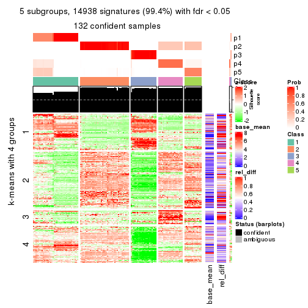
get_signatures(res, k = 6)
Signature heatmaps where rows are not scaled:
get_signatures(res, k = 2, scale_rows = FALSE)
get_signatures(res, k = 3, scale_rows = FALSE)
get_signatures(res, k = 4, scale_rows = FALSE)
get_signatures(res, k = 5, scale_rows = FALSE)
get_signatures(res, k = 6, scale_rows = FALSE)
Compare the overlap of signatures from different k:
compare_signatures(res)
get_signature() returns a data frame invisibly. TO get the list of signatures, the function
call should be assigned to a variable explicitly. In following code, if plot argument is set
to FALSE, no heatmap is plotted while only the differential analysis is performed.
# code only for demonstration
tb = get_signature(res, k = ..., plot = FALSE)
An example of the output of tb is:
#> which_row fdr mean_1 mean_2 scaled_mean_1 scaled_mean_2 km
#> 1 38 0.042760348 8.373488 9.131774 -0.5533452 0.5164555 1
#> 2 40 0.018707592 7.106213 8.469186 -0.6173731 0.5762149 1
#> 3 55 0.019134737 10.221463 11.207825 -0.6159697 0.5749050 1
#> 4 59 0.006059896 5.921854 7.869574 -0.6899429 0.6439467 1
#> 5 60 0.018055526 8.928898 10.211722 -0.6204761 0.5791110 1
#> 6 98 0.009384629 15.714769 14.887706 0.6635654 -0.6193277 2
...
The columns in tb are:
which_row: row indices corresponding to the input matrix.fdr: FDR for the differential test. mean_x: The mean value in group x.scaled_mean_x: The mean value in group x after rows are scaled.km: Row groups if k-means clustering is applied to rows.UMAP plot which shows how samples are separated.
dimension_reduction(res, k = 2, method = "UMAP")
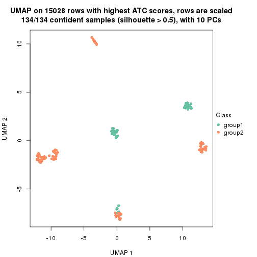
dimension_reduction(res, k = 3, method = "UMAP")
dimension_reduction(res, k = 4, method = "UMAP")
dimension_reduction(res, k = 5, method = "UMAP")
dimension_reduction(res, k = 6, method = "UMAP")
Following heatmap shows how subgroups are split when increasing k:
collect_classes(res)
If matrix rows can be associated to genes, consider to use GO_Enrichment(res,
...) to perform function enrichment for the signature genes.
The object with results only for a single top-value method and a single partition method can be extracted as:
res = res_list["ATC", "skmeans"]
# you can also extract it by
# res = res_list["ATC:skmeans"]
A summary of res and all the functions that can be applied to it:
res
#> A 'ConsensusPartition' object with k = 2, 3, 4, 5, 6.
#> On a matrix with 15028 rows and 134 columns.
#> Top rows (1000, 2000, 3000, 4000, 5000) are extracted by 'ATC' method.
#> Subgroups are detected by 'skmeans' method.
#> Performed in total 1250 partitions by row resampling.
#> Best k for subgroups seems to be 6.
#>
#> Following methods can be applied to this 'ConsensusPartition' object:
#> [1] "cola_report" "collect_classes" "collect_plots"
#> [4] "collect_stats" "colnames" "compare_signatures"
#> [7] "consensus_heatmap" "dimension_reduction" "functional_enrichment"
#> [10] "get_anno_col" "get_anno" "get_classes"
#> [13] "get_consensus" "get_matrix" "get_membership"
#> [16] "get_param" "get_signatures" "get_stats"
#> [19] "is_best_k" "is_stable_k" "membership_heatmap"
#> [22] "ncol" "nrow" "plot_ecdf"
#> [25] "rownames" "select_partition_number" "show"
#> [28] "suggest_best_k" "test_to_known_factors"
collect_plots() function collects all the plots made from res for all k (number of partitions)
into one single page to provide an easy and fast comparison between different k.
collect_plots(res)
The plots are:
k and the heatmap of
predicted classes for each k.k.k.k.All the plots in panels can be made by individual functions and they are plotted later in this section.
select_partition_number() produces several plots showing different
statistics for choosing “optimized” k. There are following statistics:
k;k, the area increased is defined as \(A_k - A_{k-1}\).The detailed explanations of these statistics can be found in the cola vignette.
Generally speaking, lower PAC score, higher mean silhouette score or higher
concordance corresponds to better partition. Rand index and Jaccard index
measure how similar the current partition is compared to partition with k-1.
If they are too similar, we won't accept k is better than k-1.
select_partition_number(res)
The numeric values for all these statistics can be obtained by get_stats().
get_stats(res)
#> k 1-PAC mean_silhouette concordance area_increased Rand Jaccard
#> 2 2 1.000 0.992 0.996 0.4961 0.503 0.503
#> 3 3 1.000 0.974 0.983 0.1668 0.913 0.827
#> 4 4 0.825 0.944 0.927 0.1142 0.948 0.877
#> 5 5 0.805 0.910 0.893 0.1347 0.879 0.671
#> 6 6 0.932 0.980 0.938 0.0849 0.937 0.745
suggest_best_k() suggests the best \(k\) based on these statistics. The rules are as follows:
NA.suggest_best_k(res)
#> [1] 6
#> attr(,"optional")
#> [1] 2 3
There is also optional best \(k\) = 2 3 that is worth to check.
Following shows the table of the partitions (You need to click the show/hide
code output link to see it). The membership matrix (columns with name p*)
is inferred by
clue::cl_consensus()
function with the SE method. Basically the value in the membership matrix
represents the probability to belong to a certain group. The finall class
label for an item is determined with the group with highest probability it
belongs to.
In get_classes() function, the entropy is calculated from the membership
matrix and the silhouette score is calculated from the consensus matrix.
cbind(get_classes(res, k = 2), get_membership(res, k = 2))
#> class entropy silhouette p1 p2
#> SRR1550981 1 0.000 0.991 1.000 0.000
#> SRR1550982 1 0.000 0.991 1.000 0.000
#> SRR1550983 1 0.000 0.991 1.000 0.000
#> SRR1550984 1 0.000 0.991 1.000 0.000
#> SRR1550986 1 0.000 0.991 1.000 0.000
#> SRR1550985 1 0.821 0.663 0.744 0.256
#> SRR1550988 2 0.000 1.000 0.000 1.000
#> SRR1550987 1 0.000 0.991 1.000 0.000
#> SRR1550989 2 0.000 1.000 0.000 1.000
#> SRR1550990 2 0.000 1.000 0.000 1.000
#> SRR1550991 2 0.000 1.000 0.000 1.000
#> SRR1550992 1 0.000 0.991 1.000 0.000
#> SRR1550994 2 0.000 1.000 0.000 1.000
#> SRR1550993 1 0.000 0.991 1.000 0.000
#> SRR1550995 2 0.000 1.000 0.000 1.000
#> SRR1550996 2 0.000 1.000 0.000 1.000
#> SRR1550997 1 0.000 0.991 1.000 0.000
#> SRR1550998 1 0.000 0.991 1.000 0.000
#> SRR1551000 2 0.000 1.000 0.000 1.000
#> SRR1550999 2 0.000 1.000 0.000 1.000
#> SRR1551001 2 0.000 1.000 0.000 1.000
#> SRR1551002 1 0.000 0.991 1.000 0.000
#> SRR1551003 1 0.000 0.991 1.000 0.000
#> SRR1551004 2 0.000 1.000 0.000 1.000
#> SRR1551006 2 0.000 1.000 0.000 1.000
#> SRR1551005 2 0.000 1.000 0.000 1.000
#> SRR1551007 2 0.000 1.000 0.000 1.000
#> SRR1551008 1 0.000 0.991 1.000 0.000
#> SRR1551009 1 0.000 0.991 1.000 0.000
#> SRR1551010 2 0.000 1.000 0.000 1.000
#> SRR1551012 2 0.000 1.000 0.000 1.000
#> SRR1551011 2 0.000 1.000 0.000 1.000
#> SRR1551013 1 0.000 0.991 1.000 0.000
#> SRR1551014 1 0.000 0.991 1.000 0.000
#> SRR1551015 2 0.000 1.000 0.000 1.000
#> SRR1551016 2 0.000 1.000 0.000 1.000
#> SRR1551017 2 0.000 1.000 0.000 1.000
#> SRR1551018 2 0.000 1.000 0.000 1.000
#> SRR1551019 1 0.000 0.991 1.000 0.000
#> SRR1551021 1 0.000 0.991 1.000 0.000
#> SRR1551022 2 0.000 1.000 0.000 1.000
#> SRR1551023 2 0.000 1.000 0.000 1.000
#> SRR1551020 1 0.000 0.991 1.000 0.000
#> SRR1551024 2 0.000 1.000 0.000 1.000
#> SRR1551026 1 0.000 0.991 1.000 0.000
#> SRR1551025 1 0.000 0.991 1.000 0.000
#> SRR1551027 1 0.000 0.991 1.000 0.000
#> SRR1551028 2 0.000 1.000 0.000 1.000
#> SRR1551029 2 0.000 1.000 0.000 1.000
#> SRR1551030 2 0.000 1.000 0.000 1.000
#> SRR1551031 2 0.000 1.000 0.000 1.000
#> SRR1551032 1 0.000 0.991 1.000 0.000
#> SRR1551034 1 0.000 0.991 1.000 0.000
#> SRR1551033 1 0.000 0.991 1.000 0.000
#> SRR1551035 2 0.000 1.000 0.000 1.000
#> SRR1551036 2 0.000 1.000 0.000 1.000
#> SRR1551037 2 0.000 1.000 0.000 1.000
#> SRR1551038 2 0.000 1.000 0.000 1.000
#> SRR1551039 1 0.000 0.991 1.000 0.000
#> SRR1551040 1 0.000 0.991 1.000 0.000
#> SRR1551041 1 0.000 0.991 1.000 0.000
#> SRR1551042 2 0.000 1.000 0.000 1.000
#> SRR1551043 2 0.000 1.000 0.000 1.000
#> SRR1551044 2 0.000 1.000 0.000 1.000
#> SRR1551045 2 0.000 1.000 0.000 1.000
#> SRR1551046 1 0.000 0.991 1.000 0.000
#> SRR1551047 1 0.000 0.991 1.000 0.000
#> SRR1551048 1 0.000 0.991 1.000 0.000
#> SRR1551049 2 0.000 1.000 0.000 1.000
#> SRR1551050 2 0.000 1.000 0.000 1.000
#> SRR1551051 2 0.000 1.000 0.000 1.000
#> SRR1551052 2 0.000 1.000 0.000 1.000
#> SRR1551053 2 0.000 1.000 0.000 1.000
#> SRR1551054 1 0.000 0.991 1.000 0.000
#> SRR1551055 1 0.000 0.991 1.000 0.000
#> SRR1551056 2 0.000 1.000 0.000 1.000
#> SRR1551057 2 0.000 1.000 0.000 1.000
#> SRR1551058 2 0.000 1.000 0.000 1.000
#> SRR1551059 2 0.000 1.000 0.000 1.000
#> SRR1551060 1 0.714 0.760 0.804 0.196
#> SRR1551061 1 0.000 0.991 1.000 0.000
#> SRR1551062 1 0.000 0.991 1.000 0.000
#> SRR1551063 2 0.000 1.000 0.000 1.000
#> SRR1551064 2 0.000 1.000 0.000 1.000
#> SRR1551065 2 0.000 1.000 0.000 1.000
#> SRR1551066 2 0.000 1.000 0.000 1.000
#> SRR1551067 1 0.000 0.991 1.000 0.000
#> SRR1551068 1 0.000 0.991 1.000 0.000
#> SRR1551069 1 0.000 0.991 1.000 0.000
#> SRR1551070 2 0.000 1.000 0.000 1.000
#> SRR1551071 2 0.000 1.000 0.000 1.000
#> SRR1551072 2 0.000 1.000 0.000 1.000
#> SRR1551073 2 0.000 1.000 0.000 1.000
#> SRR1551074 1 0.000 0.991 1.000 0.000
#> SRR1551075 1 0.000 0.991 1.000 0.000
#> SRR1551076 1 0.000 0.991 1.000 0.000
#> SRR1551077 2 0.000 1.000 0.000 1.000
#> SRR1551078 2 0.000 1.000 0.000 1.000
#> SRR1551079 2 0.000 1.000 0.000 1.000
#> SRR1551080 2 0.000 1.000 0.000 1.000
#> SRR1551081 1 0.242 0.953 0.960 0.040
#> SRR1551082 1 0.000 0.991 1.000 0.000
#> SRR1551083 1 0.000 0.991 1.000 0.000
#> SRR1551084 2 0.000 1.000 0.000 1.000
#> SRR1551085 2 0.000 1.000 0.000 1.000
#> SRR1551086 2 0.000 1.000 0.000 1.000
#> SRR1551088 1 0.000 0.991 1.000 0.000
#> SRR1551087 1 0.000 0.991 1.000 0.000
#> SRR1551089 1 0.000 0.991 1.000 0.000
#> SRR1551090 2 0.000 1.000 0.000 1.000
#> SRR1551091 2 0.000 1.000 0.000 1.000
#> SRR1551092 2 0.000 1.000 0.000 1.000
#> SRR1551093 2 0.000 1.000 0.000 1.000
#> SRR1551094 1 0.000 0.991 1.000 0.000
#> SRR1551095 1 0.000 0.991 1.000 0.000
#> SRR1551096 1 0.000 0.991 1.000 0.000
#> SRR1551097 2 0.000 1.000 0.000 1.000
#> SRR1551098 2 0.000 1.000 0.000 1.000
#> SRR1551099 2 0.000 1.000 0.000 1.000
#> SRR1551101 1 0.000 0.991 1.000 0.000
#> SRR1551100 1 0.000 0.991 1.000 0.000
#> SRR1551102 1 0.000 0.991 1.000 0.000
#> SRR1551103 2 0.000 1.000 0.000 1.000
#> SRR1551104 2 0.000 1.000 0.000 1.000
#> SRR1551105 2 0.000 1.000 0.000 1.000
#> SRR1551106 2 0.000 1.000 0.000 1.000
#> SRR1551107 1 0.000 0.991 1.000 0.000
#> SRR1551108 1 0.000 0.991 1.000 0.000
#> SRR1551109 1 0.000 0.991 1.000 0.000
#> SRR1551110 2 0.000 1.000 0.000 1.000
#> SRR1551111 2 0.000 1.000 0.000 1.000
#> SRR1551112 2 0.000 1.000 0.000 1.000
#> SRR1551113 2 0.000 1.000 0.000 1.000
#> SRR1551114 1 0.000 0.991 1.000 0.000
cbind(get_classes(res, k = 3), get_membership(res, k = 3))
#> class entropy silhouette p1 p2 p3
#> SRR1550981 3 0.0237 0.9594 0.004 0.000 0.996
#> SRR1550982 3 0.0237 0.9594 0.004 0.000 0.996
#> SRR1550983 3 0.0237 0.9594 0.004 0.000 0.996
#> SRR1550984 3 0.0237 0.9594 0.004 0.000 0.996
#> SRR1550986 1 0.0424 0.9619 0.992 0.000 0.008
#> SRR1550985 3 0.0237 0.9594 0.004 0.000 0.996
#> SRR1550988 2 0.0237 0.9972 0.000 0.996 0.004
#> SRR1550987 1 0.2356 0.9551 0.928 0.000 0.072
#> SRR1550989 2 0.0000 0.9990 0.000 1.000 0.000
#> SRR1550990 2 0.0000 0.9990 0.000 1.000 0.000
#> SRR1550991 2 0.0000 0.9990 0.000 1.000 0.000
#> SRR1550992 1 0.0424 0.9619 0.992 0.000 0.008
#> SRR1550994 2 0.0237 0.9972 0.000 0.996 0.004
#> SRR1550993 1 0.2356 0.9551 0.928 0.000 0.072
#> SRR1550995 2 0.0000 0.9990 0.000 1.000 0.000
#> SRR1550996 2 0.0000 0.9990 0.000 1.000 0.000
#> SRR1550997 1 0.0424 0.9619 0.992 0.000 0.008
#> SRR1550998 1 0.2356 0.9551 0.928 0.000 0.072
#> SRR1551000 2 0.0000 0.9990 0.000 1.000 0.000
#> SRR1550999 2 0.0237 0.9972 0.000 0.996 0.004
#> SRR1551001 2 0.0000 0.9990 0.000 1.000 0.000
#> SRR1551002 1 0.0424 0.9619 0.992 0.000 0.008
#> SRR1551003 1 0.2356 0.9551 0.928 0.000 0.072
#> SRR1551004 2 0.0237 0.9972 0.000 0.996 0.004
#> SRR1551006 2 0.0000 0.9990 0.000 1.000 0.000
#> SRR1551005 2 0.0000 0.9990 0.000 1.000 0.000
#> SRR1551007 2 0.0000 0.9990 0.000 1.000 0.000
#> SRR1551008 1 0.0424 0.9619 0.992 0.000 0.008
#> SRR1551009 1 0.2356 0.9551 0.928 0.000 0.072
#> SRR1551010 2 0.0237 0.9972 0.000 0.996 0.004
#> SRR1551012 2 0.0000 0.9990 0.000 1.000 0.000
#> SRR1551011 2 0.0000 0.9990 0.000 1.000 0.000
#> SRR1551013 1 0.0424 0.9619 0.992 0.000 0.008
#> SRR1551014 1 0.2356 0.9551 0.928 0.000 0.072
#> SRR1551015 2 0.0237 0.9972 0.000 0.996 0.004
#> SRR1551016 2 0.0000 0.9990 0.000 1.000 0.000
#> SRR1551017 2 0.0000 0.9990 0.000 1.000 0.000
#> SRR1551018 2 0.0000 0.9990 0.000 1.000 0.000
#> SRR1551019 1 0.0424 0.9619 0.992 0.000 0.008
#> SRR1551021 1 0.2356 0.9551 0.928 0.000 0.072
#> SRR1551022 2 0.0237 0.9972 0.000 0.996 0.004
#> SRR1551023 2 0.0000 0.9990 0.000 1.000 0.000
#> SRR1551020 1 0.0424 0.9619 0.992 0.000 0.008
#> SRR1551024 2 0.0000 0.9990 0.000 1.000 0.000
#> SRR1551026 1 0.0424 0.9619 0.992 0.000 0.008
#> SRR1551025 1 0.0424 0.9619 0.992 0.000 0.008
#> SRR1551027 1 0.2356 0.9551 0.928 0.000 0.072
#> SRR1551028 2 0.0237 0.9972 0.000 0.996 0.004
#> SRR1551029 2 0.0000 0.9990 0.000 1.000 0.000
#> SRR1551030 2 0.0000 0.9990 0.000 1.000 0.000
#> SRR1551031 2 0.0000 0.9990 0.000 1.000 0.000
#> SRR1551032 1 0.0424 0.9619 0.992 0.000 0.008
#> SRR1551034 1 0.2356 0.9551 0.928 0.000 0.072
#> SRR1551033 1 0.0424 0.9619 0.992 0.000 0.008
#> SRR1551035 2 0.0237 0.9972 0.000 0.996 0.004
#> SRR1551036 2 0.0000 0.9990 0.000 1.000 0.000
#> SRR1551037 2 0.0000 0.9990 0.000 1.000 0.000
#> SRR1551038 2 0.0000 0.9990 0.000 1.000 0.000
#> SRR1551039 3 0.0237 0.9594 0.004 0.000 0.996
#> SRR1551040 1 0.0424 0.9619 0.992 0.000 0.008
#> SRR1551041 1 0.2356 0.9551 0.928 0.000 0.072
#> SRR1551042 2 0.0237 0.9972 0.000 0.996 0.004
#> SRR1551043 2 0.0000 0.9990 0.000 1.000 0.000
#> SRR1551044 2 0.0000 0.9990 0.000 1.000 0.000
#> SRR1551045 2 0.0000 0.9990 0.000 1.000 0.000
#> SRR1551046 3 0.0237 0.9594 0.004 0.000 0.996
#> SRR1551047 1 0.0424 0.9619 0.992 0.000 0.008
#> SRR1551048 1 0.2356 0.9551 0.928 0.000 0.072
#> SRR1551049 2 0.0237 0.9972 0.000 0.996 0.004
#> SRR1551050 2 0.0000 0.9990 0.000 1.000 0.000
#> SRR1551051 2 0.0000 0.9990 0.000 1.000 0.000
#> SRR1551052 2 0.0000 0.9990 0.000 1.000 0.000
#> SRR1551053 3 0.6307 0.0452 0.000 0.488 0.512
#> SRR1551054 1 0.0424 0.9619 0.992 0.000 0.008
#> SRR1551055 1 0.2356 0.9551 0.928 0.000 0.072
#> SRR1551056 2 0.0237 0.9972 0.000 0.996 0.004
#> SRR1551057 2 0.0000 0.9990 0.000 1.000 0.000
#> SRR1551058 2 0.0000 0.9990 0.000 1.000 0.000
#> SRR1551059 2 0.0000 0.9990 0.000 1.000 0.000
#> SRR1551060 3 0.0237 0.9594 0.004 0.000 0.996
#> SRR1551061 1 0.0424 0.9619 0.992 0.000 0.008
#> SRR1551062 1 0.2356 0.9551 0.928 0.000 0.072
#> SRR1551063 2 0.0237 0.9972 0.000 0.996 0.004
#> SRR1551064 2 0.0000 0.9990 0.000 1.000 0.000
#> SRR1551065 2 0.0000 0.9990 0.000 1.000 0.000
#> SRR1551066 2 0.0000 0.9990 0.000 1.000 0.000
#> SRR1551067 3 0.0237 0.9594 0.004 0.000 0.996
#> SRR1551068 1 0.0424 0.9619 0.992 0.000 0.008
#> SRR1551069 1 0.2356 0.9551 0.928 0.000 0.072
#> SRR1551070 2 0.0237 0.9972 0.000 0.996 0.004
#> SRR1551071 2 0.0000 0.9990 0.000 1.000 0.000
#> SRR1551072 2 0.0000 0.9990 0.000 1.000 0.000
#> SRR1551073 2 0.0000 0.9990 0.000 1.000 0.000
#> SRR1551074 3 0.0237 0.9594 0.004 0.000 0.996
#> SRR1551075 1 0.0424 0.9619 0.992 0.000 0.008
#> SRR1551076 1 0.2356 0.9551 0.928 0.000 0.072
#> SRR1551077 2 0.0237 0.9972 0.000 0.996 0.004
#> SRR1551078 2 0.0000 0.9990 0.000 1.000 0.000
#> SRR1551079 2 0.0000 0.9990 0.000 1.000 0.000
#> SRR1551080 2 0.0000 0.9990 0.000 1.000 0.000
#> SRR1551081 3 0.0237 0.9594 0.004 0.000 0.996
#> SRR1551082 1 0.0424 0.9619 0.992 0.000 0.008
#> SRR1551083 1 0.2356 0.9551 0.928 0.000 0.072
#> SRR1551084 2 0.0237 0.9972 0.000 0.996 0.004
#> SRR1551085 2 0.0000 0.9990 0.000 1.000 0.000
#> SRR1551086 2 0.0000 0.9990 0.000 1.000 0.000
#> SRR1551088 1 0.0424 0.9619 0.992 0.000 0.008
#> SRR1551087 3 0.0237 0.9594 0.004 0.000 0.996
#> SRR1551089 1 0.2356 0.9551 0.928 0.000 0.072
#> SRR1551090 2 0.0237 0.9972 0.000 0.996 0.004
#> SRR1551091 2 0.0000 0.9990 0.000 1.000 0.000
#> SRR1551092 2 0.0000 0.9990 0.000 1.000 0.000
#> SRR1551093 2 0.0000 0.9990 0.000 1.000 0.000
#> SRR1551094 3 0.0237 0.9594 0.004 0.000 0.996
#> SRR1551095 1 0.0424 0.9619 0.992 0.000 0.008
#> SRR1551096 1 0.2356 0.9551 0.928 0.000 0.072
#> SRR1551097 2 0.0237 0.9972 0.000 0.996 0.004
#> SRR1551098 2 0.0000 0.9990 0.000 1.000 0.000
#> SRR1551099 2 0.0000 0.9990 0.000 1.000 0.000
#> SRR1551101 1 0.0424 0.9619 0.992 0.000 0.008
#> SRR1551100 3 0.0237 0.9594 0.004 0.000 0.996
#> SRR1551102 1 0.2356 0.9551 0.928 0.000 0.072
#> SRR1551103 2 0.0237 0.9972 0.000 0.996 0.004
#> SRR1551104 2 0.0000 0.9990 0.000 1.000 0.000
#> SRR1551105 2 0.0000 0.9990 0.000 1.000 0.000
#> SRR1551106 2 0.0000 0.9990 0.000 1.000 0.000
#> SRR1551107 3 0.0237 0.9594 0.004 0.000 0.996
#> SRR1551108 1 0.0424 0.9619 0.992 0.000 0.008
#> SRR1551109 1 0.2356 0.9551 0.928 0.000 0.072
#> SRR1551110 2 0.0237 0.9972 0.000 0.996 0.004
#> SRR1551111 2 0.0000 0.9990 0.000 1.000 0.000
#> SRR1551112 2 0.0000 0.9990 0.000 1.000 0.000
#> SRR1551113 2 0.0000 0.9990 0.000 1.000 0.000
#> SRR1551114 3 0.0237 0.9594 0.004 0.000 0.996
cbind(get_classes(res, k = 4), get_membership(res, k = 4))
#> class entropy silhouette p1 p2 p3 p4
#> SRR1550981 4 0.0672 0.955 0.008 0.000 0.008 0.984
#> SRR1550982 4 0.0336 0.961 0.008 0.000 0.000 0.992
#> SRR1550983 4 0.0336 0.961 0.008 0.000 0.000 0.992
#> SRR1550984 4 0.0672 0.959 0.008 0.000 0.008 0.984
#> SRR1550986 3 0.3907 1.000 0.232 0.000 0.768 0.000
#> SRR1550985 4 0.0712 0.955 0.004 0.004 0.008 0.984
#> SRR1550988 2 0.3486 0.859 0.000 0.812 0.188 0.000
#> SRR1550987 1 0.0000 1.000 1.000 0.000 0.000 0.000
#> SRR1550989 2 0.0000 0.941 0.000 1.000 0.000 0.000
#> SRR1550990 2 0.0000 0.941 0.000 1.000 0.000 0.000
#> SRR1550991 2 0.1722 0.925 0.000 0.944 0.048 0.008
#> SRR1550992 3 0.3907 1.000 0.232 0.000 0.768 0.000
#> SRR1550994 2 0.3486 0.859 0.000 0.812 0.188 0.000
#> SRR1550993 1 0.0000 1.000 1.000 0.000 0.000 0.000
#> SRR1550995 2 0.0000 0.941 0.000 1.000 0.000 0.000
#> SRR1550996 2 0.0000 0.941 0.000 1.000 0.000 0.000
#> SRR1550997 3 0.3907 1.000 0.232 0.000 0.768 0.000
#> SRR1550998 1 0.0000 1.000 1.000 0.000 0.000 0.000
#> SRR1551000 2 0.0000 0.941 0.000 1.000 0.000 0.000
#> SRR1550999 2 0.3486 0.859 0.000 0.812 0.188 0.000
#> SRR1551001 2 0.0000 0.941 0.000 1.000 0.000 0.000
#> SRR1551002 3 0.3907 1.000 0.232 0.000 0.768 0.000
#> SRR1551003 1 0.0000 1.000 1.000 0.000 0.000 0.000
#> SRR1551004 2 0.3486 0.859 0.000 0.812 0.188 0.000
#> SRR1551006 2 0.0000 0.941 0.000 1.000 0.000 0.000
#> SRR1551005 2 0.0000 0.941 0.000 1.000 0.000 0.000
#> SRR1551007 2 0.1722 0.925 0.000 0.944 0.048 0.008
#> SRR1551008 3 0.3907 1.000 0.232 0.000 0.768 0.000
#> SRR1551009 1 0.0000 1.000 1.000 0.000 0.000 0.000
#> SRR1551010 2 0.3486 0.859 0.000 0.812 0.188 0.000
#> SRR1551012 2 0.0000 0.941 0.000 1.000 0.000 0.000
#> SRR1551011 2 0.0000 0.941 0.000 1.000 0.000 0.000
#> SRR1551013 3 0.3907 1.000 0.232 0.000 0.768 0.000
#> SRR1551014 1 0.0000 1.000 1.000 0.000 0.000 0.000
#> SRR1551015 2 0.3486 0.859 0.000 0.812 0.188 0.000
#> SRR1551016 2 0.0000 0.941 0.000 1.000 0.000 0.000
#> SRR1551017 2 0.1305 0.926 0.000 0.960 0.036 0.004
#> SRR1551018 2 0.1722 0.925 0.000 0.944 0.048 0.008
#> SRR1551019 3 0.3907 1.000 0.232 0.000 0.768 0.000
#> SRR1551021 1 0.0000 1.000 1.000 0.000 0.000 0.000
#> SRR1551022 2 0.3486 0.859 0.000 0.812 0.188 0.000
#> SRR1551023 2 0.0000 0.941 0.000 1.000 0.000 0.000
#> SRR1551020 3 0.3907 1.000 0.232 0.000 0.768 0.000
#> SRR1551024 2 0.0000 0.941 0.000 1.000 0.000 0.000
#> SRR1551026 3 0.3907 1.000 0.232 0.000 0.768 0.000
#> SRR1551025 3 0.3907 1.000 0.232 0.000 0.768 0.000
#> SRR1551027 1 0.0000 1.000 1.000 0.000 0.000 0.000
#> SRR1551028 2 0.3486 0.859 0.000 0.812 0.188 0.000
#> SRR1551029 2 0.0000 0.941 0.000 1.000 0.000 0.000
#> SRR1551030 2 0.0000 0.941 0.000 1.000 0.000 0.000
#> SRR1551031 2 0.1722 0.925 0.000 0.944 0.048 0.008
#> SRR1551032 3 0.3907 1.000 0.232 0.000 0.768 0.000
#> SRR1551034 1 0.0000 1.000 1.000 0.000 0.000 0.000
#> SRR1551033 3 0.3907 1.000 0.232 0.000 0.768 0.000
#> SRR1551035 2 0.3486 0.859 0.000 0.812 0.188 0.000
#> SRR1551036 2 0.0000 0.941 0.000 1.000 0.000 0.000
#> SRR1551037 2 0.0000 0.941 0.000 1.000 0.000 0.000
#> SRR1551038 2 0.1722 0.925 0.000 0.944 0.048 0.008
#> SRR1551039 4 0.0336 0.961 0.008 0.000 0.000 0.992
#> SRR1551040 3 0.3907 1.000 0.232 0.000 0.768 0.000
#> SRR1551041 1 0.0000 1.000 1.000 0.000 0.000 0.000
#> SRR1551042 2 0.3486 0.859 0.000 0.812 0.188 0.000
#> SRR1551043 2 0.0000 0.941 0.000 1.000 0.000 0.000
#> SRR1551044 2 0.0000 0.941 0.000 1.000 0.000 0.000
#> SRR1551045 2 0.1722 0.925 0.000 0.944 0.048 0.008
#> SRR1551046 4 0.0336 0.961 0.008 0.000 0.000 0.992
#> SRR1551047 3 0.3907 1.000 0.232 0.000 0.768 0.000
#> SRR1551048 1 0.0000 1.000 1.000 0.000 0.000 0.000
#> SRR1551049 2 0.3486 0.859 0.000 0.812 0.188 0.000
#> SRR1551050 2 0.0000 0.941 0.000 1.000 0.000 0.000
#> SRR1551051 2 0.0000 0.941 0.000 1.000 0.000 0.000
#> SRR1551052 2 0.1722 0.925 0.000 0.944 0.048 0.008
#> SRR1551053 4 0.5686 0.341 0.000 0.376 0.032 0.592
#> SRR1551054 3 0.3907 1.000 0.232 0.000 0.768 0.000
#> SRR1551055 1 0.0000 1.000 1.000 0.000 0.000 0.000
#> SRR1551056 2 0.3486 0.859 0.000 0.812 0.188 0.000
#> SRR1551057 2 0.0000 0.941 0.000 1.000 0.000 0.000
#> SRR1551058 2 0.0000 0.941 0.000 1.000 0.000 0.000
#> SRR1551059 2 0.1722 0.925 0.000 0.944 0.048 0.008
#> SRR1551060 4 0.0672 0.959 0.008 0.000 0.008 0.984
#> SRR1551061 3 0.3907 1.000 0.232 0.000 0.768 0.000
#> SRR1551062 1 0.0000 1.000 1.000 0.000 0.000 0.000
#> SRR1551063 2 0.3486 0.859 0.000 0.812 0.188 0.000
#> SRR1551064 2 0.0000 0.941 0.000 1.000 0.000 0.000
#> SRR1551065 2 0.0000 0.941 0.000 1.000 0.000 0.000
#> SRR1551066 2 0.1722 0.925 0.000 0.944 0.048 0.008
#> SRR1551067 4 0.0336 0.961 0.008 0.000 0.000 0.992
#> SRR1551068 3 0.3907 1.000 0.232 0.000 0.768 0.000
#> SRR1551069 1 0.0000 1.000 1.000 0.000 0.000 0.000
#> SRR1551070 2 0.3486 0.859 0.000 0.812 0.188 0.000
#> SRR1551071 2 0.0000 0.941 0.000 1.000 0.000 0.000
#> SRR1551072 2 0.0000 0.941 0.000 1.000 0.000 0.000
#> SRR1551073 2 0.1722 0.925 0.000 0.944 0.048 0.008
#> SRR1551074 4 0.0336 0.961 0.008 0.000 0.000 0.992
#> SRR1551075 3 0.3907 1.000 0.232 0.000 0.768 0.000
#> SRR1551076 1 0.0000 1.000 1.000 0.000 0.000 0.000
#> SRR1551077 2 0.3486 0.859 0.000 0.812 0.188 0.000
#> SRR1551078 2 0.0000 0.941 0.000 1.000 0.000 0.000
#> SRR1551079 2 0.0000 0.941 0.000 1.000 0.000 0.000
#> SRR1551080 2 0.1722 0.925 0.000 0.944 0.048 0.008
#> SRR1551081 4 0.0672 0.959 0.008 0.000 0.008 0.984
#> SRR1551082 3 0.3907 1.000 0.232 0.000 0.768 0.000
#> SRR1551083 1 0.0000 1.000 1.000 0.000 0.000 0.000
#> SRR1551084 2 0.3486 0.859 0.000 0.812 0.188 0.000
#> SRR1551085 2 0.0000 0.941 0.000 1.000 0.000 0.000
#> SRR1551086 2 0.0000 0.941 0.000 1.000 0.000 0.000
#> SRR1551088 3 0.3907 1.000 0.232 0.000 0.768 0.000
#> SRR1551087 4 0.0336 0.961 0.008 0.000 0.000 0.992
#> SRR1551089 1 0.0000 1.000 1.000 0.000 0.000 0.000
#> SRR1551090 2 0.3486 0.859 0.000 0.812 0.188 0.000
#> SRR1551091 2 0.0000 0.941 0.000 1.000 0.000 0.000
#> SRR1551092 2 0.0000 0.941 0.000 1.000 0.000 0.000
#> SRR1551093 2 0.1722 0.925 0.000 0.944 0.048 0.008
#> SRR1551094 4 0.0336 0.961 0.008 0.000 0.000 0.992
#> SRR1551095 3 0.3907 1.000 0.232 0.000 0.768 0.000
#> SRR1551096 1 0.0000 1.000 1.000 0.000 0.000 0.000
#> SRR1551097 2 0.3486 0.859 0.000 0.812 0.188 0.000
#> SRR1551098 2 0.0000 0.941 0.000 1.000 0.000 0.000
#> SRR1551099 2 0.0000 0.941 0.000 1.000 0.000 0.000
#> SRR1551101 3 0.3907 1.000 0.232 0.000 0.768 0.000
#> SRR1551100 4 0.0336 0.961 0.008 0.000 0.000 0.992
#> SRR1551102 1 0.0000 1.000 1.000 0.000 0.000 0.000
#> SRR1551103 2 0.3486 0.859 0.000 0.812 0.188 0.000
#> SRR1551104 2 0.0000 0.941 0.000 1.000 0.000 0.000
#> SRR1551105 2 0.0000 0.941 0.000 1.000 0.000 0.000
#> SRR1551106 2 0.1722 0.925 0.000 0.944 0.048 0.008
#> SRR1551107 4 0.0336 0.961 0.008 0.000 0.000 0.992
#> SRR1551108 3 0.3907 1.000 0.232 0.000 0.768 0.000
#> SRR1551109 1 0.0000 1.000 1.000 0.000 0.000 0.000
#> SRR1551110 2 0.3486 0.859 0.000 0.812 0.188 0.000
#> SRR1551111 2 0.0000 0.941 0.000 1.000 0.000 0.000
#> SRR1551112 2 0.0000 0.941 0.000 1.000 0.000 0.000
#> SRR1551113 2 0.1722 0.925 0.000 0.944 0.048 0.008
#> SRR1551114 4 0.0336 0.961 0.008 0.000 0.000 0.992
cbind(get_classes(res, k = 5), get_membership(res, k = 5))
#> class entropy silhouette p1 p2 p3 p4 p5
#> SRR1550981 5 0.0162 0.948 0.000 0.000 0.004 0.000 0.996
#> SRR1550982 5 0.0000 0.950 0.000 0.000 0.000 0.000 1.000
#> SRR1550983 5 0.0000 0.950 0.000 0.000 0.000 0.000 1.000
#> SRR1550984 5 0.2929 0.891 0.008 0.000 0.000 0.152 0.840
#> SRR1550986 3 0.0000 1.000 0.000 0.000 1.000 0.000 0.000
#> SRR1550985 5 0.2843 0.895 0.008 0.000 0.000 0.144 0.848
#> SRR1550988 4 0.2648 1.000 0.000 0.152 0.000 0.848 0.000
#> SRR1550987 1 0.1043 1.000 0.960 0.000 0.040 0.000 0.000
#> SRR1550989 2 0.3395 0.862 0.000 0.764 0.000 0.236 0.000
#> SRR1550990 2 0.3336 0.861 0.000 0.772 0.000 0.228 0.000
#> SRR1550991 2 0.2067 0.652 0.032 0.920 0.000 0.048 0.000
#> SRR1550992 3 0.0000 1.000 0.000 0.000 1.000 0.000 0.000
#> SRR1550994 4 0.2648 1.000 0.000 0.152 0.000 0.848 0.000
#> SRR1550993 1 0.1043 1.000 0.960 0.000 0.040 0.000 0.000
#> SRR1550995 2 0.3395 0.862 0.000 0.764 0.000 0.236 0.000
#> SRR1550996 2 0.3395 0.862 0.000 0.764 0.000 0.236 0.000
#> SRR1550997 3 0.0000 1.000 0.000 0.000 1.000 0.000 0.000
#> SRR1550998 1 0.1043 1.000 0.960 0.000 0.040 0.000 0.000
#> SRR1551000 2 0.3395 0.862 0.000 0.764 0.000 0.236 0.000
#> SRR1550999 4 0.2648 1.000 0.000 0.152 0.000 0.848 0.000
#> SRR1551001 2 0.3395 0.862 0.000 0.764 0.000 0.236 0.000
#> SRR1551002 3 0.0000 1.000 0.000 0.000 1.000 0.000 0.000
#> SRR1551003 1 0.1043 1.000 0.960 0.000 0.040 0.000 0.000
#> SRR1551004 4 0.2648 1.000 0.000 0.152 0.000 0.848 0.000
#> SRR1551006 2 0.3305 0.861 0.000 0.776 0.000 0.224 0.000
#> SRR1551005 2 0.3395 0.862 0.000 0.764 0.000 0.236 0.000
#> SRR1551007 2 0.2067 0.652 0.032 0.920 0.000 0.048 0.000
#> SRR1551008 3 0.0000 1.000 0.000 0.000 1.000 0.000 0.000
#> SRR1551009 1 0.1043 1.000 0.960 0.000 0.040 0.000 0.000
#> SRR1551010 4 0.2648 1.000 0.000 0.152 0.000 0.848 0.000
#> SRR1551012 2 0.3395 0.862 0.000 0.764 0.000 0.236 0.000
#> SRR1551011 2 0.3395 0.862 0.000 0.764 0.000 0.236 0.000
#> SRR1551013 3 0.0000 1.000 0.000 0.000 1.000 0.000 0.000
#> SRR1551014 1 0.1043 1.000 0.960 0.000 0.040 0.000 0.000
#> SRR1551015 4 0.2648 1.000 0.000 0.152 0.000 0.848 0.000
#> SRR1551016 2 0.3336 0.861 0.000 0.772 0.000 0.228 0.000
#> SRR1551017 2 0.0290 0.702 0.000 0.992 0.000 0.008 0.000
#> SRR1551018 2 0.2067 0.652 0.032 0.920 0.000 0.048 0.000
#> SRR1551019 3 0.0000 1.000 0.000 0.000 1.000 0.000 0.000
#> SRR1551021 1 0.1043 1.000 0.960 0.000 0.040 0.000 0.000
#> SRR1551022 4 0.2648 1.000 0.000 0.152 0.000 0.848 0.000
#> SRR1551023 2 0.3395 0.862 0.000 0.764 0.000 0.236 0.000
#> SRR1551020 3 0.0000 1.000 0.000 0.000 1.000 0.000 0.000
#> SRR1551024 2 0.3395 0.862 0.000 0.764 0.000 0.236 0.000
#> SRR1551026 3 0.0000 1.000 0.000 0.000 1.000 0.000 0.000
#> SRR1551025 3 0.0000 1.000 0.000 0.000 1.000 0.000 0.000
#> SRR1551027 1 0.1043 1.000 0.960 0.000 0.040 0.000 0.000
#> SRR1551028 4 0.2648 1.000 0.000 0.152 0.000 0.848 0.000
#> SRR1551029 2 0.3395 0.862 0.000 0.764 0.000 0.236 0.000
#> SRR1551030 2 0.3305 0.861 0.000 0.776 0.000 0.224 0.000
#> SRR1551031 2 0.2067 0.652 0.032 0.920 0.000 0.048 0.000
#> SRR1551032 3 0.0000 1.000 0.000 0.000 1.000 0.000 0.000
#> SRR1551034 1 0.1043 1.000 0.960 0.000 0.040 0.000 0.000
#> SRR1551033 3 0.0000 1.000 0.000 0.000 1.000 0.000 0.000
#> SRR1551035 4 0.2648 1.000 0.000 0.152 0.000 0.848 0.000
#> SRR1551036 2 0.3395 0.862 0.000 0.764 0.000 0.236 0.000
#> SRR1551037 2 0.3305 0.861 0.000 0.776 0.000 0.224 0.000
#> SRR1551038 2 0.2067 0.652 0.032 0.920 0.000 0.048 0.000
#> SRR1551039 5 0.0000 0.950 0.000 0.000 0.000 0.000 1.000
#> SRR1551040 3 0.0000 1.000 0.000 0.000 1.000 0.000 0.000
#> SRR1551041 1 0.1043 1.000 0.960 0.000 0.040 0.000 0.000
#> SRR1551042 4 0.2648 1.000 0.000 0.152 0.000 0.848 0.000
#> SRR1551043 2 0.3395 0.862 0.000 0.764 0.000 0.236 0.000
#> SRR1551044 2 0.3336 0.861 0.000 0.772 0.000 0.228 0.000
#> SRR1551045 2 0.2067 0.652 0.032 0.920 0.000 0.048 0.000
#> SRR1551046 5 0.0000 0.950 0.000 0.000 0.000 0.000 1.000
#> SRR1551047 3 0.0000 1.000 0.000 0.000 1.000 0.000 0.000
#> SRR1551048 1 0.1043 1.000 0.960 0.000 0.040 0.000 0.000
#> SRR1551049 4 0.2648 1.000 0.000 0.152 0.000 0.848 0.000
#> SRR1551050 2 0.3395 0.862 0.000 0.764 0.000 0.236 0.000
#> SRR1551051 2 0.3395 0.862 0.000 0.764 0.000 0.236 0.000
#> SRR1551052 2 0.2067 0.652 0.032 0.920 0.000 0.048 0.000
#> SRR1551053 5 0.6363 0.506 0.008 0.160 0.000 0.292 0.540
#> SRR1551054 3 0.0000 1.000 0.000 0.000 1.000 0.000 0.000
#> SRR1551055 1 0.1043 1.000 0.960 0.000 0.040 0.000 0.000
#> SRR1551056 4 0.2648 1.000 0.000 0.152 0.000 0.848 0.000
#> SRR1551057 2 0.3395 0.862 0.000 0.764 0.000 0.236 0.000
#> SRR1551058 2 0.3274 0.859 0.000 0.780 0.000 0.220 0.000
#> SRR1551059 2 0.2067 0.652 0.032 0.920 0.000 0.048 0.000
#> SRR1551060 5 0.2929 0.891 0.008 0.000 0.000 0.152 0.840
#> SRR1551061 3 0.0000 1.000 0.000 0.000 1.000 0.000 0.000
#> SRR1551062 1 0.1043 1.000 0.960 0.000 0.040 0.000 0.000
#> SRR1551063 4 0.2648 1.000 0.000 0.152 0.000 0.848 0.000
#> SRR1551064 2 0.3395 0.862 0.000 0.764 0.000 0.236 0.000
#> SRR1551065 2 0.3274 0.859 0.000 0.780 0.000 0.220 0.000
#> SRR1551066 2 0.2067 0.652 0.032 0.920 0.000 0.048 0.000
#> SRR1551067 5 0.0000 0.950 0.000 0.000 0.000 0.000 1.000
#> SRR1551068 3 0.0000 1.000 0.000 0.000 1.000 0.000 0.000
#> SRR1551069 1 0.1043 1.000 0.960 0.000 0.040 0.000 0.000
#> SRR1551070 4 0.2648 1.000 0.000 0.152 0.000 0.848 0.000
#> SRR1551071 2 0.3395 0.862 0.000 0.764 0.000 0.236 0.000
#> SRR1551072 2 0.3274 0.859 0.000 0.780 0.000 0.220 0.000
#> SRR1551073 2 0.2067 0.652 0.032 0.920 0.000 0.048 0.000
#> SRR1551074 5 0.0000 0.950 0.000 0.000 0.000 0.000 1.000
#> SRR1551075 3 0.0000 1.000 0.000 0.000 1.000 0.000 0.000
#> SRR1551076 1 0.1043 1.000 0.960 0.000 0.040 0.000 0.000
#> SRR1551077 4 0.2648 1.000 0.000 0.152 0.000 0.848 0.000
#> SRR1551078 2 0.3395 0.862 0.000 0.764 0.000 0.236 0.000
#> SRR1551079 2 0.3274 0.859 0.000 0.780 0.000 0.220 0.000
#> SRR1551080 2 0.2067 0.652 0.032 0.920 0.000 0.048 0.000
#> SRR1551081 5 0.2179 0.914 0.004 0.000 0.000 0.100 0.896
#> SRR1551082 3 0.0000 1.000 0.000 0.000 1.000 0.000 0.000
#> SRR1551083 1 0.1043 1.000 0.960 0.000 0.040 0.000 0.000
#> SRR1551084 4 0.2648 1.000 0.000 0.152 0.000 0.848 0.000
#> SRR1551085 2 0.3395 0.862 0.000 0.764 0.000 0.236 0.000
#> SRR1551086 2 0.3274 0.859 0.000 0.780 0.000 0.220 0.000
#> SRR1551088 3 0.0000 1.000 0.000 0.000 1.000 0.000 0.000
#> SRR1551087 5 0.0000 0.950 0.000 0.000 0.000 0.000 1.000
#> SRR1551089 1 0.1043 1.000 0.960 0.000 0.040 0.000 0.000
#> SRR1551090 4 0.2648 1.000 0.000 0.152 0.000 0.848 0.000
#> SRR1551091 2 0.3395 0.862 0.000 0.764 0.000 0.236 0.000
#> SRR1551092 2 0.3395 0.862 0.000 0.764 0.000 0.236 0.000
#> SRR1551093 2 0.2067 0.652 0.032 0.920 0.000 0.048 0.000
#> SRR1551094 5 0.0000 0.950 0.000 0.000 0.000 0.000 1.000
#> SRR1551095 3 0.0000 1.000 0.000 0.000 1.000 0.000 0.000
#> SRR1551096 1 0.1043 1.000 0.960 0.000 0.040 0.000 0.000
#> SRR1551097 4 0.2648 1.000 0.000 0.152 0.000 0.848 0.000
#> SRR1551098 2 0.3395 0.862 0.000 0.764 0.000 0.236 0.000
#> SRR1551099 2 0.3395 0.862 0.000 0.764 0.000 0.236 0.000
#> SRR1551101 3 0.0000 1.000 0.000 0.000 1.000 0.000 0.000
#> SRR1551100 5 0.0000 0.950 0.000 0.000 0.000 0.000 1.000
#> SRR1551102 1 0.1043 1.000 0.960 0.000 0.040 0.000 0.000
#> SRR1551103 4 0.2648 1.000 0.000 0.152 0.000 0.848 0.000
#> SRR1551104 2 0.3395 0.862 0.000 0.764 0.000 0.236 0.000
#> SRR1551105 2 0.3305 0.861 0.000 0.776 0.000 0.224 0.000
#> SRR1551106 2 0.2067 0.652 0.032 0.920 0.000 0.048 0.000
#> SRR1551107 5 0.0000 0.950 0.000 0.000 0.000 0.000 1.000
#> SRR1551108 3 0.0000 1.000 0.000 0.000 1.000 0.000 0.000
#> SRR1551109 1 0.1043 1.000 0.960 0.000 0.040 0.000 0.000
#> SRR1551110 4 0.2648 1.000 0.000 0.152 0.000 0.848 0.000
#> SRR1551111 2 0.3395 0.862 0.000 0.764 0.000 0.236 0.000
#> SRR1551112 2 0.3274 0.859 0.000 0.780 0.000 0.220 0.000
#> SRR1551113 2 0.2067 0.652 0.032 0.920 0.000 0.048 0.000
#> SRR1551114 5 0.0000 0.950 0.000 0.000 0.000 0.000 1.000
cbind(get_classes(res, k = 6), get_membership(res, k = 6))
#> class entropy silhouette p1 p2 p3 p4 p5 p6
#> SRR1550981 5 0.0146 0.918 0.000 0.000 0.004 0.000 0.996 0.000
#> SRR1550982 5 0.0000 0.920 0.000 0.000 0.000 0.000 1.000 0.000
#> SRR1550983 5 0.0000 0.920 0.000 0.000 0.000 0.000 1.000 0.000
#> SRR1550984 5 0.4779 0.784 0.008 0.000 0.000 0.072 0.656 0.264
#> SRR1550986 3 0.0000 1.000 0.000 0.000 1.000 0.000 0.000 0.000
#> SRR1550985 5 0.4737 0.788 0.008 0.000 0.000 0.072 0.664 0.256
#> SRR1550988 4 0.1610 1.000 0.000 0.084 0.000 0.916 0.000 0.000
#> SRR1550987 1 0.0363 1.000 0.988 0.000 0.012 0.000 0.000 0.000
#> SRR1550989 2 0.0000 0.992 0.000 1.000 0.000 0.000 0.000 0.000
#> SRR1550990 2 0.0405 0.987 0.004 0.988 0.000 0.000 0.000 0.008
#> SRR1550991 6 0.3221 1.000 0.000 0.264 0.000 0.000 0.000 0.736
#> SRR1550992 3 0.0000 1.000 0.000 0.000 1.000 0.000 0.000 0.000
#> SRR1550994 4 0.1610 1.000 0.000 0.084 0.000 0.916 0.000 0.000
#> SRR1550993 1 0.0363 1.000 0.988 0.000 0.012 0.000 0.000 0.000
#> SRR1550995 2 0.0000 0.992 0.000 1.000 0.000 0.000 0.000 0.000
#> SRR1550996 2 0.0000 0.992 0.000 1.000 0.000 0.000 0.000 0.000
#> SRR1550997 3 0.0000 1.000 0.000 0.000 1.000 0.000 0.000 0.000
#> SRR1550998 1 0.0363 1.000 0.988 0.000 0.012 0.000 0.000 0.000
#> SRR1551000 2 0.0000 0.992 0.000 1.000 0.000 0.000 0.000 0.000
#> SRR1550999 4 0.1610 1.000 0.000 0.084 0.000 0.916 0.000 0.000
#> SRR1551001 2 0.0000 0.992 0.000 1.000 0.000 0.000 0.000 0.000
#> SRR1551002 3 0.0000 1.000 0.000 0.000 1.000 0.000 0.000 0.000
#> SRR1551003 1 0.0363 1.000 0.988 0.000 0.012 0.000 0.000 0.000
#> SRR1551004 4 0.1610 1.000 0.000 0.084 0.000 0.916 0.000 0.000
#> SRR1551006 2 0.0405 0.987 0.004 0.988 0.000 0.000 0.000 0.008
#> SRR1551005 2 0.0000 0.992 0.000 1.000 0.000 0.000 0.000 0.000
#> SRR1551007 6 0.3221 1.000 0.000 0.264 0.000 0.000 0.000 0.736
#> SRR1551008 3 0.0000 1.000 0.000 0.000 1.000 0.000 0.000 0.000
#> SRR1551009 1 0.0363 1.000 0.988 0.000 0.012 0.000 0.000 0.000
#> SRR1551010 4 0.1610 1.000 0.000 0.084 0.000 0.916 0.000 0.000
#> SRR1551012 2 0.0146 0.990 0.004 0.996 0.000 0.000 0.000 0.000
#> SRR1551011 2 0.0000 0.992 0.000 1.000 0.000 0.000 0.000 0.000
#> SRR1551013 3 0.0000 1.000 0.000 0.000 1.000 0.000 0.000 0.000
#> SRR1551014 1 0.0363 1.000 0.988 0.000 0.012 0.000 0.000 0.000
#> SRR1551015 4 0.1610 1.000 0.000 0.084 0.000 0.916 0.000 0.000
#> SRR1551016 2 0.0260 0.988 0.000 0.992 0.000 0.000 0.000 0.008
#> SRR1551017 2 0.1588 0.880 0.004 0.924 0.000 0.000 0.000 0.072
#> SRR1551018 6 0.3221 1.000 0.000 0.264 0.000 0.000 0.000 0.736
#> SRR1551019 3 0.0000 1.000 0.000 0.000 1.000 0.000 0.000 0.000
#> SRR1551021 1 0.0363 1.000 0.988 0.000 0.012 0.000 0.000 0.000
#> SRR1551022 4 0.1610 1.000 0.000 0.084 0.000 0.916 0.000 0.000
#> SRR1551023 2 0.0000 0.992 0.000 1.000 0.000 0.000 0.000 0.000
#> SRR1551020 3 0.0000 1.000 0.000 0.000 1.000 0.000 0.000 0.000
#> SRR1551024 2 0.0000 0.992 0.000 1.000 0.000 0.000 0.000 0.000
#> SRR1551026 3 0.0000 1.000 0.000 0.000 1.000 0.000 0.000 0.000
#> SRR1551025 3 0.0000 1.000 0.000 0.000 1.000 0.000 0.000 0.000
#> SRR1551027 1 0.0363 1.000 0.988 0.000 0.012 0.000 0.000 0.000
#> SRR1551028 4 0.1610 1.000 0.000 0.084 0.000 0.916 0.000 0.000
#> SRR1551029 2 0.0000 0.992 0.000 1.000 0.000 0.000 0.000 0.000
#> SRR1551030 2 0.0260 0.988 0.000 0.992 0.000 0.000 0.000 0.008
#> SRR1551031 6 0.3221 1.000 0.000 0.264 0.000 0.000 0.000 0.736
#> SRR1551032 3 0.0000 1.000 0.000 0.000 1.000 0.000 0.000 0.000
#> SRR1551034 1 0.0363 1.000 0.988 0.000 0.012 0.000 0.000 0.000
#> SRR1551033 3 0.0000 1.000 0.000 0.000 1.000 0.000 0.000 0.000
#> SRR1551035 4 0.1610 1.000 0.000 0.084 0.000 0.916 0.000 0.000
#> SRR1551036 2 0.0000 0.992 0.000 1.000 0.000 0.000 0.000 0.000
#> SRR1551037 2 0.0405 0.987 0.004 0.988 0.000 0.000 0.000 0.008
#> SRR1551038 6 0.3221 1.000 0.000 0.264 0.000 0.000 0.000 0.736
#> SRR1551039 5 0.0000 0.920 0.000 0.000 0.000 0.000 1.000 0.000
#> SRR1551040 3 0.0000 1.000 0.000 0.000 1.000 0.000 0.000 0.000
#> SRR1551041 1 0.0363 1.000 0.988 0.000 0.012 0.000 0.000 0.000
#> SRR1551042 4 0.1610 1.000 0.000 0.084 0.000 0.916 0.000 0.000
#> SRR1551043 2 0.0000 0.992 0.000 1.000 0.000 0.000 0.000 0.000
#> SRR1551044 2 0.0405 0.987 0.004 0.988 0.000 0.000 0.000 0.008
#> SRR1551045 6 0.3221 1.000 0.000 0.264 0.000 0.000 0.000 0.736
#> SRR1551046 5 0.0000 0.920 0.000 0.000 0.000 0.000 1.000 0.000
#> SRR1551047 3 0.0000 1.000 0.000 0.000 1.000 0.000 0.000 0.000
#> SRR1551048 1 0.0363 1.000 0.988 0.000 0.012 0.000 0.000 0.000
#> SRR1551049 4 0.1610 1.000 0.000 0.084 0.000 0.916 0.000 0.000
#> SRR1551050 2 0.0000 0.992 0.000 1.000 0.000 0.000 0.000 0.000
#> SRR1551051 2 0.0000 0.992 0.000 1.000 0.000 0.000 0.000 0.000
#> SRR1551052 6 0.3221 1.000 0.000 0.264 0.000 0.000 0.000 0.736
#> SRR1551053 5 0.6753 0.628 0.008 0.128 0.000 0.088 0.512 0.264
#> SRR1551054 3 0.0000 1.000 0.000 0.000 1.000 0.000 0.000 0.000
#> SRR1551055 1 0.0363 1.000 0.988 0.000 0.012 0.000 0.000 0.000
#> SRR1551056 4 0.1610 1.000 0.000 0.084 0.000 0.916 0.000 0.000
#> SRR1551057 2 0.0000 0.992 0.000 1.000 0.000 0.000 0.000 0.000
#> SRR1551058 2 0.0405 0.987 0.004 0.988 0.000 0.000 0.000 0.008
#> SRR1551059 6 0.3221 1.000 0.000 0.264 0.000 0.000 0.000 0.736
#> SRR1551060 5 0.4779 0.784 0.008 0.000 0.000 0.072 0.656 0.264
#> SRR1551061 3 0.0000 1.000 0.000 0.000 1.000 0.000 0.000 0.000
#> SRR1551062 1 0.0363 1.000 0.988 0.000 0.012 0.000 0.000 0.000
#> SRR1551063 4 0.1610 1.000 0.000 0.084 0.000 0.916 0.000 0.000
#> SRR1551064 2 0.0000 0.992 0.000 1.000 0.000 0.000 0.000 0.000
#> SRR1551065 2 0.0405 0.987 0.004 0.988 0.000 0.000 0.000 0.008
#> SRR1551066 6 0.3221 1.000 0.000 0.264 0.000 0.000 0.000 0.736
#> SRR1551067 5 0.0363 0.919 0.000 0.000 0.000 0.012 0.988 0.000
#> SRR1551068 3 0.0000 1.000 0.000 0.000 1.000 0.000 0.000 0.000
#> SRR1551069 1 0.0363 1.000 0.988 0.000 0.012 0.000 0.000 0.000
#> SRR1551070 4 0.1610 1.000 0.000 0.084 0.000 0.916 0.000 0.000
#> SRR1551071 2 0.0000 0.992 0.000 1.000 0.000 0.000 0.000 0.000
#> SRR1551072 2 0.0405 0.987 0.004 0.988 0.000 0.000 0.000 0.008
#> SRR1551073 6 0.3221 1.000 0.000 0.264 0.000 0.000 0.000 0.736
#> SRR1551074 5 0.0363 0.919 0.000 0.000 0.000 0.012 0.988 0.000
#> SRR1551075 3 0.0000 1.000 0.000 0.000 1.000 0.000 0.000 0.000
#> SRR1551076 1 0.0363 1.000 0.988 0.000 0.012 0.000 0.000 0.000
#> SRR1551077 4 0.1610 1.000 0.000 0.084 0.000 0.916 0.000 0.000
#> SRR1551078 2 0.0000 0.992 0.000 1.000 0.000 0.000 0.000 0.000
#> SRR1551079 2 0.0405 0.987 0.004 0.988 0.000 0.000 0.000 0.008
#> SRR1551080 6 0.3221 1.000 0.000 0.264 0.000 0.000 0.000 0.736
#> SRR1551081 5 0.3965 0.838 0.008 0.000 0.000 0.064 0.768 0.160
#> SRR1551082 3 0.0000 1.000 0.000 0.000 1.000 0.000 0.000 0.000
#> SRR1551083 1 0.0363 1.000 0.988 0.000 0.012 0.000 0.000 0.000
#> SRR1551084 4 0.1610 1.000 0.000 0.084 0.000 0.916 0.000 0.000
#> SRR1551085 2 0.0000 0.992 0.000 1.000 0.000 0.000 0.000 0.000
#> SRR1551086 2 0.0405 0.987 0.004 0.988 0.000 0.000 0.000 0.008
#> SRR1551088 3 0.0000 1.000 0.000 0.000 1.000 0.000 0.000 0.000
#> SRR1551087 5 0.0000 0.920 0.000 0.000 0.000 0.000 1.000 0.000
#> SRR1551089 1 0.0363 1.000 0.988 0.000 0.012 0.000 0.000 0.000
#> SRR1551090 4 0.1610 1.000 0.000 0.084 0.000 0.916 0.000 0.000
#> SRR1551091 2 0.0000 0.992 0.000 1.000 0.000 0.000 0.000 0.000
#> SRR1551092 2 0.0146 0.990 0.004 0.996 0.000 0.000 0.000 0.000
#> SRR1551093 6 0.3221 1.000 0.000 0.264 0.000 0.000 0.000 0.736
#> SRR1551094 5 0.0000 0.920 0.000 0.000 0.000 0.000 1.000 0.000
#> SRR1551095 3 0.0000 1.000 0.000 0.000 1.000 0.000 0.000 0.000
#> SRR1551096 1 0.0363 1.000 0.988 0.000 0.012 0.000 0.000 0.000
#> SRR1551097 4 0.1610 1.000 0.000 0.084 0.000 0.916 0.000 0.000
#> SRR1551098 2 0.0000 0.992 0.000 1.000 0.000 0.000 0.000 0.000
#> SRR1551099 2 0.0146 0.990 0.004 0.996 0.000 0.000 0.000 0.000
#> SRR1551101 3 0.0000 1.000 0.000 0.000 1.000 0.000 0.000 0.000
#> SRR1551100 5 0.0363 0.919 0.000 0.000 0.000 0.012 0.988 0.000
#> SRR1551102 1 0.0363 1.000 0.988 0.000 0.012 0.000 0.000 0.000
#> SRR1551103 4 0.1610 1.000 0.000 0.084 0.000 0.916 0.000 0.000
#> SRR1551104 2 0.0000 0.992 0.000 1.000 0.000 0.000 0.000 0.000
#> SRR1551105 2 0.0405 0.987 0.004 0.988 0.000 0.000 0.000 0.008
#> SRR1551106 6 0.3221 1.000 0.000 0.264 0.000 0.000 0.000 0.736
#> SRR1551107 5 0.0363 0.919 0.000 0.000 0.000 0.012 0.988 0.000
#> SRR1551108 3 0.0000 1.000 0.000 0.000 1.000 0.000 0.000 0.000
#> SRR1551109 1 0.0363 1.000 0.988 0.000 0.012 0.000 0.000 0.000
#> SRR1551110 4 0.1610 1.000 0.000 0.084 0.000 0.916 0.000 0.000
#> SRR1551111 2 0.0000 0.992 0.000 1.000 0.000 0.000 0.000 0.000
#> SRR1551112 2 0.0405 0.987 0.004 0.988 0.000 0.000 0.000 0.008
#> SRR1551113 6 0.3221 1.000 0.000 0.264 0.000 0.000 0.000 0.736
#> SRR1551114 5 0.0146 0.920 0.000 0.000 0.000 0.004 0.996 0.000
Heatmaps for the consensus matrix. It visualizes the probability of two samples to be in a same group.
consensus_heatmap(res, k = 2)
consensus_heatmap(res, k = 3)
consensus_heatmap(res, k = 4)
consensus_heatmap(res, k = 5)
consensus_heatmap(res, k = 6)

Heatmaps for the membership of samples in all partitions to see how consistent they are:
membership_heatmap(res, k = 2)
membership_heatmap(res, k = 3)
membership_heatmap(res, k = 4)
membership_heatmap(res, k = 5)
membership_heatmap(res, k = 6)
As soon as we have had the classes for columns, we can look for signatures which are significantly different between classes which can be candidate marks for certain classes. Following are the heatmaps for signatures.
Signature heatmaps where rows are scaled:
get_signatures(res, k = 2)
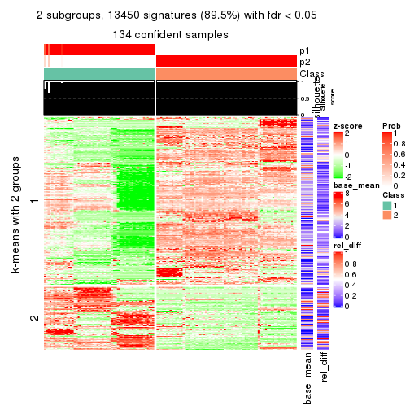
get_signatures(res, k = 3)
get_signatures(res, k = 4)
get_signatures(res, k = 5)

get_signatures(res, k = 6)
Signature heatmaps where rows are not scaled:
get_signatures(res, k = 2, scale_rows = FALSE)
get_signatures(res, k = 3, scale_rows = FALSE)
get_signatures(res, k = 4, scale_rows = FALSE)
get_signatures(res, k = 5, scale_rows = FALSE)
get_signatures(res, k = 6, scale_rows = FALSE)
Compare the overlap of signatures from different k:
compare_signatures(res)
get_signature() returns a data frame invisibly. TO get the list of signatures, the function
call should be assigned to a variable explicitly. In following code, if plot argument is set
to FALSE, no heatmap is plotted while only the differential analysis is performed.
# code only for demonstration
tb = get_signature(res, k = ..., plot = FALSE)
An example of the output of tb is:
#> which_row fdr mean_1 mean_2 scaled_mean_1 scaled_mean_2 km
#> 1 38 0.042760348 8.373488 9.131774 -0.5533452 0.5164555 1
#> 2 40 0.018707592 7.106213 8.469186 -0.6173731 0.5762149 1
#> 3 55 0.019134737 10.221463 11.207825 -0.6159697 0.5749050 1
#> 4 59 0.006059896 5.921854 7.869574 -0.6899429 0.6439467 1
#> 5 60 0.018055526 8.928898 10.211722 -0.6204761 0.5791110 1
#> 6 98 0.009384629 15.714769 14.887706 0.6635654 -0.6193277 2
...
The columns in tb are:
which_row: row indices corresponding to the input matrix.fdr: FDR for the differential test. mean_x: The mean value in group x.scaled_mean_x: The mean value in group x after rows are scaled.km: Row groups if k-means clustering is applied to rows.UMAP plot which shows how samples are separated.
dimension_reduction(res, k = 2, method = "UMAP")

dimension_reduction(res, k = 3, method = "UMAP")
dimension_reduction(res, k = 4, method = "UMAP")
dimension_reduction(res, k = 5, method = "UMAP")
dimension_reduction(res, k = 6, method = "UMAP")
Following heatmap shows how subgroups are split when increasing k:
collect_classes(res)
If matrix rows can be associated to genes, consider to use GO_Enrichment(res,
...) to perform function enrichment for the signature genes.
The object with results only for a single top-value method and a single partition method can be extracted as:
res = res_list["ATC", "pam"]
# you can also extract it by
# res = res_list["ATC:pam"]
A summary of res and all the functions that can be applied to it:
res
#> A 'ConsensusPartition' object with k = 2, 3, 4, 5, 6.
#> On a matrix with 15028 rows and 134 columns.
#> Top rows (1000, 2000, 3000, 4000, 5000) are extracted by 'ATC' method.
#> Subgroups are detected by 'pam' method.
#> Performed in total 1250 partitions by row resampling.
#> Best k for subgroups seems to be 6.
#>
#> Following methods can be applied to this 'ConsensusPartition' object:
#> [1] "cola_report" "collect_classes" "collect_plots"
#> [4] "collect_stats" "colnames" "compare_signatures"
#> [7] "consensus_heatmap" "dimension_reduction" "functional_enrichment"
#> [10] "get_anno_col" "get_anno" "get_classes"
#> [13] "get_consensus" "get_matrix" "get_membership"
#> [16] "get_param" "get_signatures" "get_stats"
#> [19] "is_best_k" "is_stable_k" "membership_heatmap"
#> [22] "ncol" "nrow" "plot_ecdf"
#> [25] "rownames" "select_partition_number" "show"
#> [28] "suggest_best_k" "test_to_known_factors"
collect_plots() function collects all the plots made from res for all k (number of partitions)
into one single page to provide an easy and fast comparison between different k.
collect_plots(res)
The plots are:
k and the heatmap of
predicted classes for each k.k.k.k.All the plots in panels can be made by individual functions and they are plotted later in this section.
select_partition_number() produces several plots showing different
statistics for choosing “optimized” k. There are following statistics:
k;k, the area increased is defined as \(A_k - A_{k-1}\).The detailed explanations of these statistics can be found in the cola vignette.
Generally speaking, lower PAC score, higher mean silhouette score or higher
concordance corresponds to better partition. Rand index and Jaccard index
measure how similar the current partition is compared to partition with k-1.
If they are too similar, we won't accept k is better than k-1.
select_partition_number(res)
The numeric values for all these statistics can be obtained by get_stats().
get_stats(res)
#> k 1-PAC mean_silhouette concordance area_increased Rand Jaccard
#> 2 2 0.626 0.860 0.897 0.4133 0.510 0.510
#> 3 3 1.000 0.996 0.998 0.4202 0.880 0.771
#> 4 4 1.000 0.996 0.998 0.0775 0.950 0.881
#> 5 5 1.000 0.996 0.998 0.1914 0.879 0.671
#> 6 6 0.936 0.992 0.966 0.0763 0.937 0.745
suggest_best_k() suggests the best \(k\) based on these statistics. The rules are as follows:
NA.suggest_best_k(res)
#> [1] 6
#> attr(,"optional")
#> [1] 3 4 5
There is also optional best \(k\) = 3 4 5 that is worth to check.
Following shows the table of the partitions (You need to click the show/hide
code output link to see it). The membership matrix (columns with name p*)
is inferred by
clue::cl_consensus()
function with the SE method. Basically the value in the membership matrix
represents the probability to belong to a certain group. The finall class
label for an item is determined with the group with highest probability it
belongs to.
In get_classes() function, the entropy is calculated from the membership
matrix and the silhouette score is calculated from the consensus matrix.
cbind(get_classes(res, k = 2), get_membership(res, k = 2))
#> class entropy silhouette p1 p2
#> SRR1550981 1 0.966 0.722 0.608 0.392
#> SRR1550982 1 0.966 0.722 0.608 0.392
#> SRR1550983 1 0.966 0.722 0.608 0.392
#> SRR1550984 1 0.966 0.722 0.608 0.392
#> SRR1550986 1 0.000 0.727 1.000 0.000
#> SRR1550985 2 0.706 0.641 0.192 0.808
#> SRR1550988 2 0.000 0.984 0.000 1.000
#> SRR1550987 1 0.966 0.722 0.608 0.392
#> SRR1550989 2 0.000 0.984 0.000 1.000
#> SRR1550990 2 0.000 0.984 0.000 1.000
#> SRR1550991 2 0.000 0.984 0.000 1.000
#> SRR1550992 1 0.000 0.727 1.000 0.000
#> SRR1550994 2 0.000 0.984 0.000 1.000
#> SRR1550993 1 0.966 0.722 0.608 0.392
#> SRR1550995 2 0.000 0.984 0.000 1.000
#> SRR1550996 2 0.000 0.984 0.000 1.000
#> SRR1550997 1 0.000 0.727 1.000 0.000
#> SRR1550998 1 0.966 0.722 0.608 0.392
#> SRR1551000 2 0.000 0.984 0.000 1.000
#> SRR1550999 2 0.000 0.984 0.000 1.000
#> SRR1551001 2 0.000 0.984 0.000 1.000
#> SRR1551002 1 0.000 0.727 1.000 0.000
#> SRR1551003 1 0.966 0.722 0.608 0.392
#> SRR1551004 2 0.000 0.984 0.000 1.000
#> SRR1551006 2 0.000 0.984 0.000 1.000
#> SRR1551005 2 0.000 0.984 0.000 1.000
#> SRR1551007 2 0.000 0.984 0.000 1.000
#> SRR1551008 1 0.000 0.727 1.000 0.000
#> SRR1551009 1 0.966 0.722 0.608 0.392
#> SRR1551010 2 0.000 0.984 0.000 1.000
#> SRR1551012 2 0.000 0.984 0.000 1.000
#> SRR1551011 2 0.000 0.984 0.000 1.000
#> SRR1551013 1 0.000 0.727 1.000 0.000
#> SRR1551014 1 0.929 0.722 0.656 0.344
#> SRR1551015 2 0.000 0.984 0.000 1.000
#> SRR1551016 2 0.000 0.984 0.000 1.000
#> SRR1551017 2 0.000 0.984 0.000 1.000
#> SRR1551018 2 0.000 0.984 0.000 1.000
#> SRR1551019 1 0.000 0.727 1.000 0.000
#> SRR1551021 1 0.966 0.722 0.608 0.392
#> SRR1551022 2 0.000 0.984 0.000 1.000
#> SRR1551023 2 0.000 0.984 0.000 1.000
#> SRR1551020 1 0.000 0.727 1.000 0.000
#> SRR1551024 2 0.000 0.984 0.000 1.000
#> SRR1551026 1 0.000 0.727 1.000 0.000
#> SRR1551025 1 0.000 0.727 1.000 0.000
#> SRR1551027 1 0.966 0.722 0.608 0.392
#> SRR1551028 2 0.000 0.984 0.000 1.000
#> SRR1551029 2 0.000 0.984 0.000 1.000
#> SRR1551030 2 0.000 0.984 0.000 1.000
#> SRR1551031 2 0.000 0.984 0.000 1.000
#> SRR1551032 1 0.000 0.727 1.000 0.000
#> SRR1551034 1 0.966 0.722 0.608 0.392
#> SRR1551033 1 0.000 0.727 1.000 0.000
#> SRR1551035 2 0.000 0.984 0.000 1.000
#> SRR1551036 2 0.000 0.984 0.000 1.000
#> SRR1551037 2 0.000 0.984 0.000 1.000
#> SRR1551038 2 0.000 0.984 0.000 1.000
#> SRR1551039 1 0.966 0.722 0.608 0.392
#> SRR1551040 1 0.000 0.727 1.000 0.000
#> SRR1551041 1 0.966 0.722 0.608 0.392
#> SRR1551042 2 0.000 0.984 0.000 1.000
#> SRR1551043 2 0.000 0.984 0.000 1.000
#> SRR1551044 2 0.000 0.984 0.000 1.000
#> SRR1551045 2 0.000 0.984 0.000 1.000
#> SRR1551046 1 0.966 0.722 0.608 0.392
#> SRR1551047 1 0.000 0.727 1.000 0.000
#> SRR1551048 1 0.966 0.722 0.608 0.392
#> SRR1551049 2 0.000 0.984 0.000 1.000
#> SRR1551050 2 0.000 0.984 0.000 1.000
#> SRR1551051 2 0.000 0.984 0.000 1.000
#> SRR1551052 2 0.000 0.984 0.000 1.000
#> SRR1551053 2 0.000 0.984 0.000 1.000
#> SRR1551054 1 0.000 0.727 1.000 0.000
#> SRR1551055 1 0.966 0.722 0.608 0.392
#> SRR1551056 2 0.000 0.984 0.000 1.000
#> SRR1551057 2 0.000 0.984 0.000 1.000
#> SRR1551058 2 0.000 0.984 0.000 1.000
#> SRR1551059 2 0.000 0.984 0.000 1.000
#> SRR1551060 2 0.998 -0.417 0.476 0.524
#> SRR1551061 1 0.000 0.727 1.000 0.000
#> SRR1551062 1 0.966 0.722 0.608 0.392
#> SRR1551063 2 0.000 0.984 0.000 1.000
#> SRR1551064 2 0.000 0.984 0.000 1.000
#> SRR1551065 2 0.000 0.984 0.000 1.000
#> SRR1551066 2 0.000 0.984 0.000 1.000
#> SRR1551067 1 0.966 0.722 0.608 0.392
#> SRR1551068 1 0.000 0.727 1.000 0.000
#> SRR1551069 1 0.966 0.722 0.608 0.392
#> SRR1551070 2 0.000 0.984 0.000 1.000
#> SRR1551071 2 0.000 0.984 0.000 1.000
#> SRR1551072 2 0.000 0.984 0.000 1.000
#> SRR1551073 2 0.000 0.984 0.000 1.000
#> SRR1551074 1 0.966 0.722 0.608 0.392
#> SRR1551075 1 0.000 0.727 1.000 0.000
#> SRR1551076 1 0.966 0.722 0.608 0.392
#> SRR1551077 2 0.000 0.984 0.000 1.000
#> SRR1551078 2 0.000 0.984 0.000 1.000
#> SRR1551079 2 0.000 0.984 0.000 1.000
#> SRR1551080 2 0.000 0.984 0.000 1.000
#> SRR1551081 2 0.714 0.631 0.196 0.804
#> SRR1551082 1 0.000 0.727 1.000 0.000
#> SRR1551083 1 0.966 0.722 0.608 0.392
#> SRR1551084 2 0.000 0.984 0.000 1.000
#> SRR1551085 2 0.000 0.984 0.000 1.000
#> SRR1551086 2 0.000 0.984 0.000 1.000
#> SRR1551088 1 0.000 0.727 1.000 0.000
#> SRR1551087 1 0.966 0.722 0.608 0.392
#> SRR1551089 1 0.966 0.722 0.608 0.392
#> SRR1551090 2 0.000 0.984 0.000 1.000
#> SRR1551091 2 0.000 0.984 0.000 1.000
#> SRR1551092 2 0.000 0.984 0.000 1.000
#> SRR1551093 2 0.000 0.984 0.000 1.000
#> SRR1551094 1 0.966 0.722 0.608 0.392
#> SRR1551095 1 0.000 0.727 1.000 0.000
#> SRR1551096 1 0.966 0.722 0.608 0.392
#> SRR1551097 2 0.000 0.984 0.000 1.000
#> SRR1551098 2 0.000 0.984 0.000 1.000
#> SRR1551099 2 0.000 0.984 0.000 1.000
#> SRR1551101 1 0.000 0.727 1.000 0.000
#> SRR1551100 1 0.966 0.722 0.608 0.392
#> SRR1551102 1 0.966 0.722 0.608 0.392
#> SRR1551103 2 0.000 0.984 0.000 1.000
#> SRR1551104 2 0.000 0.984 0.000 1.000
#> SRR1551105 2 0.000 0.984 0.000 1.000
#> SRR1551106 2 0.000 0.984 0.000 1.000
#> SRR1551107 1 0.966 0.722 0.608 0.392
#> SRR1551108 1 0.000 0.727 1.000 0.000
#> SRR1551109 1 0.966 0.722 0.608 0.392
#> SRR1551110 2 0.000 0.984 0.000 1.000
#> SRR1551111 2 0.000 0.984 0.000 1.000
#> SRR1551112 2 0.000 0.984 0.000 1.000
#> SRR1551113 2 0.000 0.984 0.000 1.000
#> SRR1551114 1 0.966 0.722 0.608 0.392
cbind(get_classes(res, k = 3), get_membership(res, k = 3))
#> class entropy silhouette p1 p2 p3
#> SRR1550981 1 0.000 0.993 1.000 0 0.000
#> SRR1550982 1 0.000 0.993 1.000 0 0.000
#> SRR1550983 1 0.000 0.993 1.000 0 0.000
#> SRR1550984 1 0.000 0.993 1.000 0 0.000
#> SRR1550986 3 0.000 1.000 0.000 0 1.000
#> SRR1550985 1 0.000 0.993 1.000 0 0.000
#> SRR1550988 2 0.000 1.000 0.000 1 0.000
#> SRR1550987 1 0.000 0.993 1.000 0 0.000
#> SRR1550989 2 0.000 1.000 0.000 1 0.000
#> SRR1550990 2 0.000 1.000 0.000 1 0.000
#> SRR1550991 2 0.000 1.000 0.000 1 0.000
#> SRR1550992 3 0.000 1.000 0.000 0 1.000
#> SRR1550994 2 0.000 1.000 0.000 1 0.000
#> SRR1550993 1 0.000 0.993 1.000 0 0.000
#> SRR1550995 2 0.000 1.000 0.000 1 0.000
#> SRR1550996 2 0.000 1.000 0.000 1 0.000
#> SRR1550997 3 0.000 1.000 0.000 0 1.000
#> SRR1550998 1 0.000 0.993 1.000 0 0.000
#> SRR1551000 2 0.000 1.000 0.000 1 0.000
#> SRR1550999 2 0.000 1.000 0.000 1 0.000
#> SRR1551001 2 0.000 1.000 0.000 1 0.000
#> SRR1551002 3 0.000 1.000 0.000 0 1.000
#> SRR1551003 1 0.000 0.993 1.000 0 0.000
#> SRR1551004 2 0.000 1.000 0.000 1 0.000
#> SRR1551006 2 0.000 1.000 0.000 1 0.000
#> SRR1551005 2 0.000 1.000 0.000 1 0.000
#> SRR1551007 2 0.000 1.000 0.000 1 0.000
#> SRR1551008 3 0.000 1.000 0.000 0 1.000
#> SRR1551009 1 0.000 0.993 1.000 0 0.000
#> SRR1551010 2 0.000 1.000 0.000 1 0.000
#> SRR1551012 2 0.000 1.000 0.000 1 0.000
#> SRR1551011 2 0.000 1.000 0.000 1 0.000
#> SRR1551013 3 0.000 1.000 0.000 0 1.000
#> SRR1551014 1 0.000 0.993 1.000 0 0.000
#> SRR1551015 2 0.000 1.000 0.000 1 0.000
#> SRR1551016 2 0.000 1.000 0.000 1 0.000
#> SRR1551017 2 0.000 1.000 0.000 1 0.000
#> SRR1551018 2 0.000 1.000 0.000 1 0.000
#> SRR1551019 1 0.000 0.993 1.000 0 0.000
#> SRR1551021 1 0.000 0.993 1.000 0 0.000
#> SRR1551022 2 0.000 1.000 0.000 1 0.000
#> SRR1551023 2 0.000 1.000 0.000 1 0.000
#> SRR1551020 3 0.000 1.000 0.000 0 1.000
#> SRR1551024 2 0.000 1.000 0.000 1 0.000
#> SRR1551026 3 0.000 1.000 0.000 0 1.000
#> SRR1551025 3 0.000 1.000 0.000 0 1.000
#> SRR1551027 1 0.000 0.993 1.000 0 0.000
#> SRR1551028 2 0.000 1.000 0.000 1 0.000
#> SRR1551029 2 0.000 1.000 0.000 1 0.000
#> SRR1551030 2 0.000 1.000 0.000 1 0.000
#> SRR1551031 2 0.000 1.000 0.000 1 0.000
#> SRR1551032 1 0.514 0.663 0.748 0 0.252
#> SRR1551034 1 0.000 0.993 1.000 0 0.000
#> SRR1551033 3 0.000 1.000 0.000 0 1.000
#> SRR1551035 2 0.000 1.000 0.000 1 0.000
#> SRR1551036 2 0.000 1.000 0.000 1 0.000
#> SRR1551037 2 0.000 1.000 0.000 1 0.000
#> SRR1551038 2 0.000 1.000 0.000 1 0.000
#> SRR1551039 1 0.000 0.993 1.000 0 0.000
#> SRR1551040 3 0.000 1.000 0.000 0 1.000
#> SRR1551041 1 0.000 0.993 1.000 0 0.000
#> SRR1551042 2 0.000 1.000 0.000 1 0.000
#> SRR1551043 2 0.000 1.000 0.000 1 0.000
#> SRR1551044 2 0.000 1.000 0.000 1 0.000
#> SRR1551045 2 0.000 1.000 0.000 1 0.000
#> SRR1551046 1 0.000 0.993 1.000 0 0.000
#> SRR1551047 3 0.000 1.000 0.000 0 1.000
#> SRR1551048 1 0.000 0.993 1.000 0 0.000
#> SRR1551049 2 0.000 1.000 0.000 1 0.000
#> SRR1551050 2 0.000 1.000 0.000 1 0.000
#> SRR1551051 2 0.000 1.000 0.000 1 0.000
#> SRR1551052 2 0.000 1.000 0.000 1 0.000
#> SRR1551053 2 0.000 1.000 0.000 1 0.000
#> SRR1551054 3 0.000 1.000 0.000 0 1.000
#> SRR1551055 1 0.000 0.993 1.000 0 0.000
#> SRR1551056 2 0.000 1.000 0.000 1 0.000
#> SRR1551057 2 0.000 1.000 0.000 1 0.000
#> SRR1551058 2 0.000 1.000 0.000 1 0.000
#> SRR1551059 2 0.000 1.000 0.000 1 0.000
#> SRR1551060 1 0.000 0.993 1.000 0 0.000
#> SRR1551061 3 0.000 1.000 0.000 0 1.000
#> SRR1551062 1 0.000 0.993 1.000 0 0.000
#> SRR1551063 2 0.000 1.000 0.000 1 0.000
#> SRR1551064 2 0.000 1.000 0.000 1 0.000
#> SRR1551065 2 0.000 1.000 0.000 1 0.000
#> SRR1551066 2 0.000 1.000 0.000 1 0.000
#> SRR1551067 1 0.000 0.993 1.000 0 0.000
#> SRR1551068 3 0.000 1.000 0.000 0 1.000
#> SRR1551069 1 0.000 0.993 1.000 0 0.000
#> SRR1551070 2 0.000 1.000 0.000 1 0.000
#> SRR1551071 2 0.000 1.000 0.000 1 0.000
#> SRR1551072 2 0.000 1.000 0.000 1 0.000
#> SRR1551073 2 0.000 1.000 0.000 1 0.000
#> SRR1551074 1 0.000 0.993 1.000 0 0.000
#> SRR1551075 3 0.000 1.000 0.000 0 1.000
#> SRR1551076 1 0.000 0.993 1.000 0 0.000
#> SRR1551077 2 0.000 1.000 0.000 1 0.000
#> SRR1551078 2 0.000 1.000 0.000 1 0.000
#> SRR1551079 2 0.000 1.000 0.000 1 0.000
#> SRR1551080 2 0.000 1.000 0.000 1 0.000
#> SRR1551081 1 0.000 0.993 1.000 0 0.000
#> SRR1551082 3 0.000 1.000 0.000 0 1.000
#> SRR1551083 1 0.000 0.993 1.000 0 0.000
#> SRR1551084 2 0.000 1.000 0.000 1 0.000
#> SRR1551085 2 0.000 1.000 0.000 1 0.000
#> SRR1551086 2 0.000 1.000 0.000 1 0.000
#> SRR1551088 3 0.000 1.000 0.000 0 1.000
#> SRR1551087 1 0.000 0.993 1.000 0 0.000
#> SRR1551089 1 0.000 0.993 1.000 0 0.000
#> SRR1551090 2 0.000 1.000 0.000 1 0.000
#> SRR1551091 2 0.000 1.000 0.000 1 0.000
#> SRR1551092 2 0.000 1.000 0.000 1 0.000
#> SRR1551093 2 0.000 1.000 0.000 1 0.000
#> SRR1551094 1 0.000 0.993 1.000 0 0.000
#> SRR1551095 3 0.000 1.000 0.000 0 1.000
#> SRR1551096 1 0.000 0.993 1.000 0 0.000
#> SRR1551097 2 0.000 1.000 0.000 1 0.000
#> SRR1551098 2 0.000 1.000 0.000 1 0.000
#> SRR1551099 2 0.000 1.000 0.000 1 0.000
#> SRR1551101 3 0.000 1.000 0.000 0 1.000
#> SRR1551100 1 0.000 0.993 1.000 0 0.000
#> SRR1551102 1 0.000 0.993 1.000 0 0.000
#> SRR1551103 2 0.000 1.000 0.000 1 0.000
#> SRR1551104 2 0.000 1.000 0.000 1 0.000
#> SRR1551105 2 0.000 1.000 0.000 1 0.000
#> SRR1551106 2 0.000 1.000 0.000 1 0.000
#> SRR1551107 1 0.000 0.993 1.000 0 0.000
#> SRR1551108 3 0.000 1.000 0.000 0 1.000
#> SRR1551109 1 0.000 0.993 1.000 0 0.000
#> SRR1551110 2 0.000 1.000 0.000 1 0.000
#> SRR1551111 2 0.000 1.000 0.000 1 0.000
#> SRR1551112 2 0.000 1.000 0.000 1 0.000
#> SRR1551113 2 0.000 1.000 0.000 1 0.000
#> SRR1551114 1 0.000 0.993 1.000 0 0.000
cbind(get_classes(res, k = 4), get_membership(res, k = 4))
#> class entropy silhouette p1 p2 p3 p4
#> SRR1550981 4 0.000 1.000 0.000 0 0.000 1
#> SRR1550982 4 0.000 1.000 0.000 0 0.000 1
#> SRR1550983 4 0.000 1.000 0.000 0 0.000 1
#> SRR1550984 4 0.000 1.000 0.000 0 0.000 1
#> SRR1550986 3 0.000 1.000 0.000 0 1.000 0
#> SRR1550985 4 0.000 1.000 0.000 0 0.000 1
#> SRR1550988 2 0.000 1.000 0.000 1 0.000 0
#> SRR1550987 1 0.000 0.988 1.000 0 0.000 0
#> SRR1550989 2 0.000 1.000 0.000 1 0.000 0
#> SRR1550990 2 0.000 1.000 0.000 1 0.000 0
#> SRR1550991 2 0.000 1.000 0.000 1 0.000 0
#> SRR1550992 3 0.000 1.000 0.000 0 1.000 0
#> SRR1550994 2 0.000 1.000 0.000 1 0.000 0
#> SRR1550993 1 0.000 0.988 1.000 0 0.000 0
#> SRR1550995 2 0.000 1.000 0.000 1 0.000 0
#> SRR1550996 2 0.000 1.000 0.000 1 0.000 0
#> SRR1550997 3 0.000 1.000 0.000 0 1.000 0
#> SRR1550998 1 0.000 0.988 1.000 0 0.000 0
#> SRR1551000 2 0.000 1.000 0.000 1 0.000 0
#> SRR1550999 2 0.000 1.000 0.000 1 0.000 0
#> SRR1551001 2 0.000 1.000 0.000 1 0.000 0
#> SRR1551002 3 0.000 1.000 0.000 0 1.000 0
#> SRR1551003 1 0.000 0.988 1.000 0 0.000 0
#> SRR1551004 2 0.000 1.000 0.000 1 0.000 0
#> SRR1551006 2 0.000 1.000 0.000 1 0.000 0
#> SRR1551005 2 0.000 1.000 0.000 1 0.000 0
#> SRR1551007 2 0.000 1.000 0.000 1 0.000 0
#> SRR1551008 3 0.000 1.000 0.000 0 1.000 0
#> SRR1551009 1 0.000 0.988 1.000 0 0.000 0
#> SRR1551010 2 0.000 1.000 0.000 1 0.000 0
#> SRR1551012 2 0.000 1.000 0.000 1 0.000 0
#> SRR1551011 2 0.000 1.000 0.000 1 0.000 0
#> SRR1551013 3 0.000 1.000 0.000 0 1.000 0
#> SRR1551014 1 0.000 0.988 1.000 0 0.000 0
#> SRR1551015 2 0.000 1.000 0.000 1 0.000 0
#> SRR1551016 2 0.000 1.000 0.000 1 0.000 0
#> SRR1551017 2 0.000 1.000 0.000 1 0.000 0
#> SRR1551018 2 0.000 1.000 0.000 1 0.000 0
#> SRR1551019 1 0.000 0.988 1.000 0 0.000 0
#> SRR1551021 1 0.000 0.988 1.000 0 0.000 0
#> SRR1551022 2 0.000 1.000 0.000 1 0.000 0
#> SRR1551023 2 0.000 1.000 0.000 1 0.000 0
#> SRR1551020 3 0.000 1.000 0.000 0 1.000 0
#> SRR1551024 2 0.000 1.000 0.000 1 0.000 0
#> SRR1551026 3 0.000 1.000 0.000 0 1.000 0
#> SRR1551025 3 0.000 1.000 0.000 0 1.000 0
#> SRR1551027 1 0.000 0.988 1.000 0 0.000 0
#> SRR1551028 2 0.000 1.000 0.000 1 0.000 0
#> SRR1551029 2 0.000 1.000 0.000 1 0.000 0
#> SRR1551030 2 0.000 1.000 0.000 1 0.000 0
#> SRR1551031 2 0.000 1.000 0.000 1 0.000 0
#> SRR1551032 1 0.401 0.677 0.756 0 0.244 0
#> SRR1551034 1 0.000 0.988 1.000 0 0.000 0
#> SRR1551033 3 0.000 1.000 0.000 0 1.000 0
#> SRR1551035 2 0.000 1.000 0.000 1 0.000 0
#> SRR1551036 2 0.000 1.000 0.000 1 0.000 0
#> SRR1551037 2 0.000 1.000 0.000 1 0.000 0
#> SRR1551038 2 0.000 1.000 0.000 1 0.000 0
#> SRR1551039 4 0.000 1.000 0.000 0 0.000 1
#> SRR1551040 3 0.000 1.000 0.000 0 1.000 0
#> SRR1551041 1 0.000 0.988 1.000 0 0.000 0
#> SRR1551042 2 0.000 1.000 0.000 1 0.000 0
#> SRR1551043 2 0.000 1.000 0.000 1 0.000 0
#> SRR1551044 2 0.000 1.000 0.000 1 0.000 0
#> SRR1551045 2 0.000 1.000 0.000 1 0.000 0
#> SRR1551046 4 0.000 1.000 0.000 0 0.000 1
#> SRR1551047 3 0.000 1.000 0.000 0 1.000 0
#> SRR1551048 1 0.000 0.988 1.000 0 0.000 0
#> SRR1551049 2 0.000 1.000 0.000 1 0.000 0
#> SRR1551050 2 0.000 1.000 0.000 1 0.000 0
#> SRR1551051 2 0.000 1.000 0.000 1 0.000 0
#> SRR1551052 2 0.000 1.000 0.000 1 0.000 0
#> SRR1551053 4 0.000 1.000 0.000 0 0.000 1
#> SRR1551054 3 0.000 1.000 0.000 0 1.000 0
#> SRR1551055 1 0.000 0.988 1.000 0 0.000 0
#> SRR1551056 2 0.000 1.000 0.000 1 0.000 0
#> SRR1551057 2 0.000 1.000 0.000 1 0.000 0
#> SRR1551058 2 0.000 1.000 0.000 1 0.000 0
#> SRR1551059 2 0.000 1.000 0.000 1 0.000 0
#> SRR1551060 4 0.000 1.000 0.000 0 0.000 1
#> SRR1551061 3 0.000 1.000 0.000 0 1.000 0
#> SRR1551062 1 0.000 0.988 1.000 0 0.000 0
#> SRR1551063 2 0.000 1.000 0.000 1 0.000 0
#> SRR1551064 2 0.000 1.000 0.000 1 0.000 0
#> SRR1551065 2 0.000 1.000 0.000 1 0.000 0
#> SRR1551066 2 0.000 1.000 0.000 1 0.000 0
#> SRR1551067 4 0.000 1.000 0.000 0 0.000 1
#> SRR1551068 3 0.000 1.000 0.000 0 1.000 0
#> SRR1551069 1 0.000 0.988 1.000 0 0.000 0
#> SRR1551070 2 0.000 1.000 0.000 1 0.000 0
#> SRR1551071 2 0.000 1.000 0.000 1 0.000 0
#> SRR1551072 2 0.000 1.000 0.000 1 0.000 0
#> SRR1551073 2 0.000 1.000 0.000 1 0.000 0
#> SRR1551074 4 0.000 1.000 0.000 0 0.000 1
#> SRR1551075 3 0.000 1.000 0.000 0 1.000 0
#> SRR1551076 1 0.000 0.988 1.000 0 0.000 0
#> SRR1551077 2 0.000 1.000 0.000 1 0.000 0
#> SRR1551078 2 0.000 1.000 0.000 1 0.000 0
#> SRR1551079 2 0.000 1.000 0.000 1 0.000 0
#> SRR1551080 2 0.000 1.000 0.000 1 0.000 0
#> SRR1551081 4 0.000 1.000 0.000 0 0.000 1
#> SRR1551082 3 0.000 1.000 0.000 0 1.000 0
#> SRR1551083 1 0.000 0.988 1.000 0 0.000 0
#> SRR1551084 2 0.000 1.000 0.000 1 0.000 0
#> SRR1551085 2 0.000 1.000 0.000 1 0.000 0
#> SRR1551086 2 0.000 1.000 0.000 1 0.000 0
#> SRR1551088 3 0.000 1.000 0.000 0 1.000 0
#> SRR1551087 4 0.000 1.000 0.000 0 0.000 1
#> SRR1551089 1 0.000 0.988 1.000 0 0.000 0
#> SRR1551090 2 0.000 1.000 0.000 1 0.000 0
#> SRR1551091 2 0.000 1.000 0.000 1 0.000 0
#> SRR1551092 2 0.000 1.000 0.000 1 0.000 0
#> SRR1551093 2 0.000 1.000 0.000 1 0.000 0
#> SRR1551094 4 0.000 1.000 0.000 0 0.000 1
#> SRR1551095 3 0.000 1.000 0.000 0 1.000 0
#> SRR1551096 1 0.000 0.988 1.000 0 0.000 0
#> SRR1551097 2 0.000 1.000 0.000 1 0.000 0
#> SRR1551098 2 0.000 1.000 0.000 1 0.000 0
#> SRR1551099 2 0.000 1.000 0.000 1 0.000 0
#> SRR1551101 3 0.000 1.000 0.000 0 1.000 0
#> SRR1551100 4 0.000 1.000 0.000 0 0.000 1
#> SRR1551102 1 0.000 0.988 1.000 0 0.000 0
#> SRR1551103 2 0.000 1.000 0.000 1 0.000 0
#> SRR1551104 2 0.000 1.000 0.000 1 0.000 0
#> SRR1551105 2 0.000 1.000 0.000 1 0.000 0
#> SRR1551106 2 0.000 1.000 0.000 1 0.000 0
#> SRR1551107 4 0.000 1.000 0.000 0 0.000 1
#> SRR1551108 3 0.000 1.000 0.000 0 1.000 0
#> SRR1551109 1 0.000 0.988 1.000 0 0.000 0
#> SRR1551110 2 0.000 1.000 0.000 1 0.000 0
#> SRR1551111 2 0.000 1.000 0.000 1 0.000 0
#> SRR1551112 2 0.000 1.000 0.000 1 0.000 0
#> SRR1551113 2 0.000 1.000 0.000 1 0.000 0
#> SRR1551114 4 0.000 1.000 0.000 0 0.000 1
cbind(get_classes(res, k = 5), get_membership(res, k = 5))
#> class entropy silhouette p1 p2 p3 p4 p5
#> SRR1550981 5 0.0000 1.000 0.000 0 0.000 0.000 1.000
#> SRR1550982 5 0.0000 1.000 0.000 0 0.000 0.000 1.000
#> SRR1550983 5 0.0000 1.000 0.000 0 0.000 0.000 1.000
#> SRR1550984 5 0.0000 1.000 0.000 0 0.000 0.000 1.000
#> SRR1550986 3 0.0000 1.000 0.000 0 1.000 0.000 0.000
#> SRR1550985 5 0.0000 1.000 0.000 0 0.000 0.000 1.000
#> SRR1550988 4 0.0000 1.000 0.000 0 0.000 1.000 0.000
#> SRR1550987 1 0.0000 0.988 1.000 0 0.000 0.000 0.000
#> SRR1550989 2 0.0000 1.000 0.000 1 0.000 0.000 0.000
#> SRR1550990 2 0.0000 1.000 0.000 1 0.000 0.000 0.000
#> SRR1550991 2 0.0000 1.000 0.000 1 0.000 0.000 0.000
#> SRR1550992 3 0.0000 1.000 0.000 0 1.000 0.000 0.000
#> SRR1550994 4 0.0000 1.000 0.000 0 0.000 1.000 0.000
#> SRR1550993 1 0.0000 0.988 1.000 0 0.000 0.000 0.000
#> SRR1550995 2 0.0000 1.000 0.000 1 0.000 0.000 0.000
#> SRR1550996 2 0.0000 1.000 0.000 1 0.000 0.000 0.000
#> SRR1550997 3 0.0000 1.000 0.000 0 1.000 0.000 0.000
#> SRR1550998 1 0.0000 0.988 1.000 0 0.000 0.000 0.000
#> SRR1551000 2 0.0000 1.000 0.000 1 0.000 0.000 0.000
#> SRR1550999 4 0.0000 1.000 0.000 0 0.000 1.000 0.000
#> SRR1551001 2 0.0000 1.000 0.000 1 0.000 0.000 0.000
#> SRR1551002 3 0.0000 1.000 0.000 0 1.000 0.000 0.000
#> SRR1551003 1 0.0000 0.988 1.000 0 0.000 0.000 0.000
#> SRR1551004 4 0.0000 1.000 0.000 0 0.000 1.000 0.000
#> SRR1551006 2 0.0000 1.000 0.000 1 0.000 0.000 0.000
#> SRR1551005 2 0.0000 1.000 0.000 1 0.000 0.000 0.000
#> SRR1551007 2 0.0000 1.000 0.000 1 0.000 0.000 0.000
#> SRR1551008 3 0.0000 1.000 0.000 0 1.000 0.000 0.000
#> SRR1551009 1 0.0000 0.988 1.000 0 0.000 0.000 0.000
#> SRR1551010 4 0.0000 1.000 0.000 0 0.000 1.000 0.000
#> SRR1551012 2 0.0000 1.000 0.000 1 0.000 0.000 0.000
#> SRR1551011 2 0.0000 1.000 0.000 1 0.000 0.000 0.000
#> SRR1551013 3 0.0000 1.000 0.000 0 1.000 0.000 0.000
#> SRR1551014 1 0.0000 0.988 1.000 0 0.000 0.000 0.000
#> SRR1551015 4 0.0000 1.000 0.000 0 0.000 1.000 0.000
#> SRR1551016 2 0.0000 1.000 0.000 1 0.000 0.000 0.000
#> SRR1551017 2 0.0000 1.000 0.000 1 0.000 0.000 0.000
#> SRR1551018 2 0.0000 1.000 0.000 1 0.000 0.000 0.000
#> SRR1551019 1 0.0000 0.988 1.000 0 0.000 0.000 0.000
#> SRR1551021 1 0.0000 0.988 1.000 0 0.000 0.000 0.000
#> SRR1551022 4 0.0000 1.000 0.000 0 0.000 1.000 0.000
#> SRR1551023 2 0.0000 1.000 0.000 1 0.000 0.000 0.000
#> SRR1551020 3 0.0000 1.000 0.000 0 1.000 0.000 0.000
#> SRR1551024 2 0.0000 1.000 0.000 1 0.000 0.000 0.000
#> SRR1551026 3 0.0000 1.000 0.000 0 1.000 0.000 0.000
#> SRR1551025 3 0.0000 1.000 0.000 0 1.000 0.000 0.000
#> SRR1551027 1 0.0000 0.988 1.000 0 0.000 0.000 0.000
#> SRR1551028 4 0.0000 1.000 0.000 0 0.000 1.000 0.000
#> SRR1551029 2 0.0000 1.000 0.000 1 0.000 0.000 0.000
#> SRR1551030 2 0.0000 1.000 0.000 1 0.000 0.000 0.000
#> SRR1551031 2 0.0000 1.000 0.000 1 0.000 0.000 0.000
#> SRR1551032 1 0.3452 0.677 0.756 0 0.244 0.000 0.000
#> SRR1551034 1 0.0000 0.988 1.000 0 0.000 0.000 0.000
#> SRR1551033 3 0.0000 1.000 0.000 0 1.000 0.000 0.000
#> SRR1551035 4 0.0000 1.000 0.000 0 0.000 1.000 0.000
#> SRR1551036 2 0.0000 1.000 0.000 1 0.000 0.000 0.000
#> SRR1551037 2 0.0000 1.000 0.000 1 0.000 0.000 0.000
#> SRR1551038 2 0.0000 1.000 0.000 1 0.000 0.000 0.000
#> SRR1551039 5 0.0000 1.000 0.000 0 0.000 0.000 1.000
#> SRR1551040 3 0.0000 1.000 0.000 0 1.000 0.000 0.000
#> SRR1551041 1 0.0000 0.988 1.000 0 0.000 0.000 0.000
#> SRR1551042 4 0.0000 1.000 0.000 0 0.000 1.000 0.000
#> SRR1551043 2 0.0000 1.000 0.000 1 0.000 0.000 0.000
#> SRR1551044 2 0.0000 1.000 0.000 1 0.000 0.000 0.000
#> SRR1551045 2 0.0000 1.000 0.000 1 0.000 0.000 0.000
#> SRR1551046 5 0.0000 1.000 0.000 0 0.000 0.000 1.000
#> SRR1551047 3 0.0000 1.000 0.000 0 1.000 0.000 0.000
#> SRR1551048 1 0.0000 0.988 1.000 0 0.000 0.000 0.000
#> SRR1551049 4 0.0000 1.000 0.000 0 0.000 1.000 0.000
#> SRR1551050 2 0.0000 1.000 0.000 1 0.000 0.000 0.000
#> SRR1551051 2 0.0000 1.000 0.000 1 0.000 0.000 0.000
#> SRR1551052 2 0.0000 1.000 0.000 1 0.000 0.000 0.000
#> SRR1551053 5 0.0162 0.996 0.000 0 0.000 0.004 0.996
#> SRR1551054 3 0.0000 1.000 0.000 0 1.000 0.000 0.000
#> SRR1551055 1 0.0000 0.988 1.000 0 0.000 0.000 0.000
#> SRR1551056 4 0.0000 1.000 0.000 0 0.000 1.000 0.000
#> SRR1551057 2 0.0000 1.000 0.000 1 0.000 0.000 0.000
#> SRR1551058 2 0.0000 1.000 0.000 1 0.000 0.000 0.000
#> SRR1551059 2 0.0000 1.000 0.000 1 0.000 0.000 0.000
#> SRR1551060 5 0.0000 1.000 0.000 0 0.000 0.000 1.000
#> SRR1551061 3 0.0000 1.000 0.000 0 1.000 0.000 0.000
#> SRR1551062 1 0.0000 0.988 1.000 0 0.000 0.000 0.000
#> SRR1551063 4 0.0000 1.000 0.000 0 0.000 1.000 0.000
#> SRR1551064 2 0.0000 1.000 0.000 1 0.000 0.000 0.000
#> SRR1551065 2 0.0000 1.000 0.000 1 0.000 0.000 0.000
#> SRR1551066 2 0.0000 1.000 0.000 1 0.000 0.000 0.000
#> SRR1551067 5 0.0000 1.000 0.000 0 0.000 0.000 1.000
#> SRR1551068 3 0.0000 1.000 0.000 0 1.000 0.000 0.000
#> SRR1551069 1 0.0000 0.988 1.000 0 0.000 0.000 0.000
#> SRR1551070 4 0.0000 1.000 0.000 0 0.000 1.000 0.000
#> SRR1551071 2 0.0000 1.000 0.000 1 0.000 0.000 0.000
#> SRR1551072 2 0.0000 1.000 0.000 1 0.000 0.000 0.000
#> SRR1551073 2 0.0000 1.000 0.000 1 0.000 0.000 0.000
#> SRR1551074 5 0.0000 1.000 0.000 0 0.000 0.000 1.000
#> SRR1551075 3 0.0000 1.000 0.000 0 1.000 0.000 0.000
#> SRR1551076 1 0.0000 0.988 1.000 0 0.000 0.000 0.000
#> SRR1551077 4 0.0000 1.000 0.000 0 0.000 1.000 0.000
#> SRR1551078 2 0.0000 1.000 0.000 1 0.000 0.000 0.000
#> SRR1551079 2 0.0000 1.000 0.000 1 0.000 0.000 0.000
#> SRR1551080 2 0.0000 1.000 0.000 1 0.000 0.000 0.000
#> SRR1551081 5 0.0000 1.000 0.000 0 0.000 0.000 1.000
#> SRR1551082 3 0.0000 1.000 0.000 0 1.000 0.000 0.000
#> SRR1551083 1 0.0000 0.988 1.000 0 0.000 0.000 0.000
#> SRR1551084 4 0.0000 1.000 0.000 0 0.000 1.000 0.000
#> SRR1551085 2 0.0000 1.000 0.000 1 0.000 0.000 0.000
#> SRR1551086 2 0.0000 1.000 0.000 1 0.000 0.000 0.000
#> SRR1551088 3 0.0000 1.000 0.000 0 1.000 0.000 0.000
#> SRR1551087 5 0.0000 1.000 0.000 0 0.000 0.000 1.000
#> SRR1551089 1 0.0000 0.988 1.000 0 0.000 0.000 0.000
#> SRR1551090 4 0.0000 1.000 0.000 0 0.000 1.000 0.000
#> SRR1551091 2 0.0000 1.000 0.000 1 0.000 0.000 0.000
#> SRR1551092 2 0.0000 1.000 0.000 1 0.000 0.000 0.000
#> SRR1551093 2 0.0000 1.000 0.000 1 0.000 0.000 0.000
#> SRR1551094 5 0.0000 1.000 0.000 0 0.000 0.000 1.000
#> SRR1551095 3 0.0000 1.000 0.000 0 1.000 0.000 0.000
#> SRR1551096 1 0.0000 0.988 1.000 0 0.000 0.000 0.000
#> SRR1551097 4 0.0000 1.000 0.000 0 0.000 1.000 0.000
#> SRR1551098 2 0.0000 1.000 0.000 1 0.000 0.000 0.000
#> SRR1551099 2 0.0000 1.000 0.000 1 0.000 0.000 0.000
#> SRR1551101 3 0.0000 1.000 0.000 0 1.000 0.000 0.000
#> SRR1551100 5 0.0000 1.000 0.000 0 0.000 0.000 1.000
#> SRR1551102 1 0.0000 0.988 1.000 0 0.000 0.000 0.000
#> SRR1551103 4 0.0000 1.000 0.000 0 0.000 1.000 0.000
#> SRR1551104 2 0.0000 1.000 0.000 1 0.000 0.000 0.000
#> SRR1551105 2 0.0000 1.000 0.000 1 0.000 0.000 0.000
#> SRR1551106 2 0.0000 1.000 0.000 1 0.000 0.000 0.000
#> SRR1551107 5 0.0000 1.000 0.000 0 0.000 0.000 1.000
#> SRR1551108 3 0.0000 1.000 0.000 0 1.000 0.000 0.000
#> SRR1551109 1 0.0000 0.988 1.000 0 0.000 0.000 0.000
#> SRR1551110 4 0.0000 1.000 0.000 0 0.000 1.000 0.000
#> SRR1551111 2 0.0000 1.000 0.000 1 0.000 0.000 0.000
#> SRR1551112 2 0.0000 1.000 0.000 1 0.000 0.000 0.000
#> SRR1551113 2 0.0000 1.000 0.000 1 0.000 0.000 0.000
#> SRR1551114 5 0.0000 1.000 0.000 0 0.000 0.000 1.000
cbind(get_classes(res, k = 6), get_membership(res, k = 6))
#> class entropy silhouette p1 p2 p3 p4 p5 p6
#> SRR1550981 5 0.0000 1.000 0.000 0.000 0.000 0.000 1.000 0.0
#> SRR1550982 5 0.0000 1.000 0.000 0.000 0.000 0.000 1.000 0.0
#> SRR1550983 5 0.0000 1.000 0.000 0.000 0.000 0.000 1.000 0.0
#> SRR1550984 5 0.0000 1.000 0.000 0.000 0.000 0.000 1.000 0.0
#> SRR1550986 3 0.0000 0.996 0.000 0.000 1.000 0.000 0.000 0.0
#> SRR1550985 5 0.0000 1.000 0.000 0.000 0.000 0.000 1.000 0.0
#> SRR1550988 4 0.0000 1.000 0.000 0.000 0.000 1.000 0.000 0.0
#> SRR1550987 1 0.0000 0.986 1.000 0.000 0.000 0.000 0.000 0.0
#> SRR1550989 2 0.0000 0.996 0.000 1.000 0.000 0.000 0.000 0.0
#> SRR1550990 2 0.0000 0.996 0.000 1.000 0.000 0.000 0.000 0.0
#> SRR1550991 6 0.1814 1.000 0.000 0.100 0.000 0.000 0.000 0.9
#> SRR1550992 3 0.0000 0.996 0.000 0.000 1.000 0.000 0.000 0.0
#> SRR1550994 4 0.0000 1.000 0.000 0.000 0.000 1.000 0.000 0.0
#> SRR1550993 1 0.0000 0.986 1.000 0.000 0.000 0.000 0.000 0.0
#> SRR1550995 2 0.0000 0.996 0.000 1.000 0.000 0.000 0.000 0.0
#> SRR1550996 2 0.0000 0.996 0.000 1.000 0.000 0.000 0.000 0.0
#> SRR1550997 3 0.0000 0.996 0.000 0.000 1.000 0.000 0.000 0.0
#> SRR1550998 1 0.0000 0.986 1.000 0.000 0.000 0.000 0.000 0.0
#> SRR1551000 2 0.0000 0.996 0.000 1.000 0.000 0.000 0.000 0.0
#> SRR1550999 4 0.0000 1.000 0.000 0.000 0.000 1.000 0.000 0.0
#> SRR1551001 2 0.0000 0.996 0.000 1.000 0.000 0.000 0.000 0.0
#> SRR1551002 3 0.0000 0.996 0.000 0.000 1.000 0.000 0.000 0.0
#> SRR1551003 1 0.0000 0.986 1.000 0.000 0.000 0.000 0.000 0.0
#> SRR1551004 4 0.0000 1.000 0.000 0.000 0.000 1.000 0.000 0.0
#> SRR1551006 2 0.0000 0.996 0.000 1.000 0.000 0.000 0.000 0.0
#> SRR1551005 2 0.0000 0.996 0.000 1.000 0.000 0.000 0.000 0.0
#> SRR1551007 6 0.1814 1.000 0.000 0.100 0.000 0.000 0.000 0.9
#> SRR1551008 3 0.0000 0.996 0.000 0.000 1.000 0.000 0.000 0.0
#> SRR1551009 1 0.0000 0.986 1.000 0.000 0.000 0.000 0.000 0.0
#> SRR1551010 4 0.0000 1.000 0.000 0.000 0.000 1.000 0.000 0.0
#> SRR1551012 2 0.0000 0.996 0.000 1.000 0.000 0.000 0.000 0.0
#> SRR1551011 2 0.0000 0.996 0.000 1.000 0.000 0.000 0.000 0.0
#> SRR1551013 3 0.0000 0.996 0.000 0.000 1.000 0.000 0.000 0.0
#> SRR1551014 1 0.0000 0.986 1.000 0.000 0.000 0.000 0.000 0.0
#> SRR1551015 4 0.0000 1.000 0.000 0.000 0.000 1.000 0.000 0.0
#> SRR1551016 2 0.0000 0.996 0.000 1.000 0.000 0.000 0.000 0.0
#> SRR1551017 2 0.0000 0.996 0.000 1.000 0.000 0.000 0.000 0.0
#> SRR1551018 6 0.1814 1.000 0.000 0.100 0.000 0.000 0.000 0.9
#> SRR1551019 1 0.1814 0.912 0.900 0.000 0.000 0.000 0.000 0.1
#> SRR1551021 1 0.0000 0.986 1.000 0.000 0.000 0.000 0.000 0.0
#> SRR1551022 4 0.0000 1.000 0.000 0.000 0.000 1.000 0.000 0.0
#> SRR1551023 2 0.0000 0.996 0.000 1.000 0.000 0.000 0.000 0.0
#> SRR1551020 3 0.0000 0.996 0.000 0.000 1.000 0.000 0.000 0.0
#> SRR1551024 2 0.0000 0.996 0.000 1.000 0.000 0.000 0.000 0.0
#> SRR1551026 3 0.0000 0.996 0.000 0.000 1.000 0.000 0.000 0.0
#> SRR1551025 3 0.1814 0.915 0.000 0.000 0.900 0.000 0.000 0.1
#> SRR1551027 1 0.0000 0.986 1.000 0.000 0.000 0.000 0.000 0.0
#> SRR1551028 4 0.0000 1.000 0.000 0.000 0.000 1.000 0.000 0.0
#> SRR1551029 2 0.0000 0.996 0.000 1.000 0.000 0.000 0.000 0.0
#> SRR1551030 2 0.0000 0.996 0.000 1.000 0.000 0.000 0.000 0.0
#> SRR1551031 6 0.1814 1.000 0.000 0.100 0.000 0.000 0.000 0.9
#> SRR1551032 1 0.4023 0.754 0.756 0.000 0.144 0.000 0.000 0.1
#> SRR1551034 1 0.0000 0.986 1.000 0.000 0.000 0.000 0.000 0.0
#> SRR1551033 3 0.0000 0.996 0.000 0.000 1.000 0.000 0.000 0.0
#> SRR1551035 4 0.0000 1.000 0.000 0.000 0.000 1.000 0.000 0.0
#> SRR1551036 2 0.0000 0.996 0.000 1.000 0.000 0.000 0.000 0.0
#> SRR1551037 2 0.0000 0.996 0.000 1.000 0.000 0.000 0.000 0.0
#> SRR1551038 6 0.1814 1.000 0.000 0.100 0.000 0.000 0.000 0.9
#> SRR1551039 5 0.0000 1.000 0.000 0.000 0.000 0.000 1.000 0.0
#> SRR1551040 3 0.0000 0.996 0.000 0.000 1.000 0.000 0.000 0.0
#> SRR1551041 1 0.0000 0.986 1.000 0.000 0.000 0.000 0.000 0.0
#> SRR1551042 4 0.0000 1.000 0.000 0.000 0.000 1.000 0.000 0.0
#> SRR1551043 2 0.0000 0.996 0.000 1.000 0.000 0.000 0.000 0.0
#> SRR1551044 2 0.0000 0.996 0.000 1.000 0.000 0.000 0.000 0.0
#> SRR1551045 6 0.1814 1.000 0.000 0.100 0.000 0.000 0.000 0.9
#> SRR1551046 5 0.0000 1.000 0.000 0.000 0.000 0.000 1.000 0.0
#> SRR1551047 3 0.0000 0.996 0.000 0.000 1.000 0.000 0.000 0.0
#> SRR1551048 1 0.0000 0.986 1.000 0.000 0.000 0.000 0.000 0.0
#> SRR1551049 4 0.0000 1.000 0.000 0.000 0.000 1.000 0.000 0.0
#> SRR1551050 2 0.0000 0.996 0.000 1.000 0.000 0.000 0.000 0.0
#> SRR1551051 2 0.0000 0.996 0.000 1.000 0.000 0.000 0.000 0.0
#> SRR1551052 6 0.1814 1.000 0.000 0.100 0.000 0.000 0.000 0.9
#> SRR1551053 5 0.0146 0.996 0.000 0.000 0.000 0.004 0.996 0.0
#> SRR1551054 3 0.0000 0.996 0.000 0.000 1.000 0.000 0.000 0.0
#> SRR1551055 1 0.0000 0.986 1.000 0.000 0.000 0.000 0.000 0.0
#> SRR1551056 4 0.0000 1.000 0.000 0.000 0.000 1.000 0.000 0.0
#> SRR1551057 2 0.0000 0.996 0.000 1.000 0.000 0.000 0.000 0.0
#> SRR1551058 2 0.0000 0.996 0.000 1.000 0.000 0.000 0.000 0.0
#> SRR1551059 6 0.1814 1.000 0.000 0.100 0.000 0.000 0.000 0.9
#> SRR1551060 5 0.0000 1.000 0.000 0.000 0.000 0.000 1.000 0.0
#> SRR1551061 3 0.0000 0.996 0.000 0.000 1.000 0.000 0.000 0.0
#> SRR1551062 1 0.0000 0.986 1.000 0.000 0.000 0.000 0.000 0.0
#> SRR1551063 4 0.0000 1.000 0.000 0.000 0.000 1.000 0.000 0.0
#> SRR1551064 2 0.0000 0.996 0.000 1.000 0.000 0.000 0.000 0.0
#> SRR1551065 2 0.0000 0.996 0.000 1.000 0.000 0.000 0.000 0.0
#> SRR1551066 6 0.1814 1.000 0.000 0.100 0.000 0.000 0.000 0.9
#> SRR1551067 5 0.0000 1.000 0.000 0.000 0.000 0.000 1.000 0.0
#> SRR1551068 3 0.0000 0.996 0.000 0.000 1.000 0.000 0.000 0.0
#> SRR1551069 1 0.0000 0.986 1.000 0.000 0.000 0.000 0.000 0.0
#> SRR1551070 4 0.0000 1.000 0.000 0.000 0.000 1.000 0.000 0.0
#> SRR1551071 2 0.0000 0.996 0.000 1.000 0.000 0.000 0.000 0.0
#> SRR1551072 2 0.0713 0.965 0.000 0.972 0.000 0.028 0.000 0.0
#> SRR1551073 6 0.1814 1.000 0.000 0.100 0.000 0.000 0.000 0.9
#> SRR1551074 5 0.0000 1.000 0.000 0.000 0.000 0.000 1.000 0.0
#> SRR1551075 3 0.0000 0.996 0.000 0.000 1.000 0.000 0.000 0.0
#> SRR1551076 1 0.0000 0.986 1.000 0.000 0.000 0.000 0.000 0.0
#> SRR1551077 4 0.0000 1.000 0.000 0.000 0.000 1.000 0.000 0.0
#> SRR1551078 2 0.0000 0.996 0.000 1.000 0.000 0.000 0.000 0.0
#> SRR1551079 2 0.0000 0.996 0.000 1.000 0.000 0.000 0.000 0.0
#> SRR1551080 6 0.1814 1.000 0.000 0.100 0.000 0.000 0.000 0.9
#> SRR1551081 5 0.0000 1.000 0.000 0.000 0.000 0.000 1.000 0.0
#> SRR1551082 3 0.0000 0.996 0.000 0.000 1.000 0.000 0.000 0.0
#> SRR1551083 1 0.0000 0.986 1.000 0.000 0.000 0.000 0.000 0.0
#> SRR1551084 4 0.0000 1.000 0.000 0.000 0.000 1.000 0.000 0.0
#> SRR1551085 2 0.0000 0.996 0.000 1.000 0.000 0.000 0.000 0.0
#> SRR1551086 2 0.0000 0.996 0.000 1.000 0.000 0.000 0.000 0.0
#> SRR1551088 3 0.0000 0.996 0.000 0.000 1.000 0.000 0.000 0.0
#> SRR1551087 5 0.0000 1.000 0.000 0.000 0.000 0.000 1.000 0.0
#> SRR1551089 1 0.0000 0.986 1.000 0.000 0.000 0.000 0.000 0.0
#> SRR1551090 4 0.0000 1.000 0.000 0.000 0.000 1.000 0.000 0.0
#> SRR1551091 2 0.0000 0.996 0.000 1.000 0.000 0.000 0.000 0.0
#> SRR1551092 2 0.0000 0.996 0.000 1.000 0.000 0.000 0.000 0.0
#> SRR1551093 6 0.1814 1.000 0.000 0.100 0.000 0.000 0.000 0.9
#> SRR1551094 5 0.0000 1.000 0.000 0.000 0.000 0.000 1.000 0.0
#> SRR1551095 3 0.0000 0.996 0.000 0.000 1.000 0.000 0.000 0.0
#> SRR1551096 1 0.0000 0.986 1.000 0.000 0.000 0.000 0.000 0.0
#> SRR1551097 4 0.0000 1.000 0.000 0.000 0.000 1.000 0.000 0.0
#> SRR1551098 2 0.0000 0.996 0.000 1.000 0.000 0.000 0.000 0.0
#> SRR1551099 2 0.0000 0.996 0.000 1.000 0.000 0.000 0.000 0.0
#> SRR1551101 3 0.0000 0.996 0.000 0.000 1.000 0.000 0.000 0.0
#> SRR1551100 5 0.0000 1.000 0.000 0.000 0.000 0.000 1.000 0.0
#> SRR1551102 1 0.0000 0.986 1.000 0.000 0.000 0.000 0.000 0.0
#> SRR1551103 4 0.0000 1.000 0.000 0.000 0.000 1.000 0.000 0.0
#> SRR1551104 2 0.0000 0.996 0.000 1.000 0.000 0.000 0.000 0.0
#> SRR1551105 2 0.0000 0.996 0.000 1.000 0.000 0.000 0.000 0.0
#> SRR1551106 6 0.1814 1.000 0.000 0.100 0.000 0.000 0.000 0.9
#> SRR1551107 5 0.0000 1.000 0.000 0.000 0.000 0.000 1.000 0.0
#> SRR1551108 3 0.0000 0.996 0.000 0.000 1.000 0.000 0.000 0.0
#> SRR1551109 1 0.0000 0.986 1.000 0.000 0.000 0.000 0.000 0.0
#> SRR1551110 4 0.0000 1.000 0.000 0.000 0.000 1.000 0.000 0.0
#> SRR1551111 2 0.0000 0.996 0.000 1.000 0.000 0.000 0.000 0.0
#> SRR1551112 2 0.1814 0.876 0.000 0.900 0.000 0.000 0.000 0.1
#> SRR1551113 6 0.1814 1.000 0.000 0.100 0.000 0.000 0.000 0.9
#> SRR1551114 5 0.0000 1.000 0.000 0.000 0.000 0.000 1.000 0.0
Heatmaps for the consensus matrix. It visualizes the probability of two samples to be in a same group.
consensus_heatmap(res, k = 2)
consensus_heatmap(res, k = 3)

consensus_heatmap(res, k = 4)
consensus_heatmap(res, k = 5)
consensus_heatmap(res, k = 6)
Heatmaps for the membership of samples in all partitions to see how consistent they are:
membership_heatmap(res, k = 2)
membership_heatmap(res, k = 3)

membership_heatmap(res, k = 4)
membership_heatmap(res, k = 5)
membership_heatmap(res, k = 6)
As soon as we have had the classes for columns, we can look for signatures which are significantly different between classes which can be candidate marks for certain classes. Following are the heatmaps for signatures.
Signature heatmaps where rows are scaled:
get_signatures(res, k = 2)
get_signatures(res, k = 3)
get_signatures(res, k = 4)
get_signatures(res, k = 5)
get_signatures(res, k = 6)
Signature heatmaps where rows are not scaled:
get_signatures(res, k = 2, scale_rows = FALSE)
get_signatures(res, k = 3, scale_rows = FALSE)
get_signatures(res, k = 4, scale_rows = FALSE)
get_signatures(res, k = 5, scale_rows = FALSE)
get_signatures(res, k = 6, scale_rows = FALSE)
Compare the overlap of signatures from different k:
compare_signatures(res)
get_signature() returns a data frame invisibly. TO get the list of signatures, the function
call should be assigned to a variable explicitly. In following code, if plot argument is set
to FALSE, no heatmap is plotted while only the differential analysis is performed.
# code only for demonstration
tb = get_signature(res, k = ..., plot = FALSE)
An example of the output of tb is:
#> which_row fdr mean_1 mean_2 scaled_mean_1 scaled_mean_2 km
#> 1 38 0.042760348 8.373488 9.131774 -0.5533452 0.5164555 1
#> 2 40 0.018707592 7.106213 8.469186 -0.6173731 0.5762149 1
#> 3 55 0.019134737 10.221463 11.207825 -0.6159697 0.5749050 1
#> 4 59 0.006059896 5.921854 7.869574 -0.6899429 0.6439467 1
#> 5 60 0.018055526 8.928898 10.211722 -0.6204761 0.5791110 1
#> 6 98 0.009384629 15.714769 14.887706 0.6635654 -0.6193277 2
...
The columns in tb are:
which_row: row indices corresponding to the input matrix.fdr: FDR for the differential test. mean_x: The mean value in group x.scaled_mean_x: The mean value in group x after rows are scaled.km: Row groups if k-means clustering is applied to rows.UMAP plot which shows how samples are separated.
dimension_reduction(res, k = 2, method = "UMAP")
dimension_reduction(res, k = 3, method = "UMAP")
dimension_reduction(res, k = 4, method = "UMAP")
dimension_reduction(res, k = 5, method = "UMAP")
dimension_reduction(res, k = 6, method = "UMAP")
Following heatmap shows how subgroups are split when increasing k:
collect_classes(res)
If matrix rows can be associated to genes, consider to use GO_Enrichment(res,
...) to perform function enrichment for the signature genes.
The object with results only for a single top-value method and a single partition method can be extracted as:
res = res_list["ATC", "mclust"]
# you can also extract it by
# res = res_list["ATC:mclust"]
A summary of res and all the functions that can be applied to it:
res
#> A 'ConsensusPartition' object with k = 2, 3, 4, 5, 6.
#> On a matrix with 15028 rows and 134 columns.
#> Top rows (1000, 2000, 3000, 4000, 5000) are extracted by 'ATC' method.
#> Subgroups are detected by 'mclust' method.
#> Performed in total 1250 partitions by row resampling.
#> Best k for subgroups seems to be 4.
#>
#> Following methods can be applied to this 'ConsensusPartition' object:
#> [1] "cola_report" "collect_classes" "collect_plots"
#> [4] "collect_stats" "colnames" "compare_signatures"
#> [7] "consensus_heatmap" "dimension_reduction" "functional_enrichment"
#> [10] "get_anno_col" "get_anno" "get_classes"
#> [13] "get_consensus" "get_matrix" "get_membership"
#> [16] "get_param" "get_signatures" "get_stats"
#> [19] "is_best_k" "is_stable_k" "membership_heatmap"
#> [22] "ncol" "nrow" "plot_ecdf"
#> [25] "rownames" "select_partition_number" "show"
#> [28] "suggest_best_k" "test_to_known_factors"
collect_plots() function collects all the plots made from res for all k (number of partitions)
into one single page to provide an easy and fast comparison between different k.
collect_plots(res)
The plots are:
k and the heatmap of
predicted classes for each k.k.k.k.All the plots in panels can be made by individual functions and they are plotted later in this section.
select_partition_number() produces several plots showing different
statistics for choosing “optimized” k. There are following statistics:
k;k, the area increased is defined as \(A_k - A_{k-1}\).The detailed explanations of these statistics can be found in the cola vignette.
Generally speaking, lower PAC score, higher mean silhouette score or higher
concordance corresponds to better partition. Rand index and Jaccard index
measure how similar the current partition is compared to partition with k-1.
If they are too similar, we won't accept k is better than k-1.
select_partition_number(res)
The numeric values for all these statistics can be obtained by get_stats().
get_stats(res)
#> k 1-PAC mean_silhouette concordance area_increased Rand Jaccard
#> 2 2 0.777 0.926 0.960 0.4799 0.502 0.502
#> 3 3 0.910 0.952 0.962 0.2263 0.910 0.821
#> 4 4 1.000 0.999 0.999 0.0769 0.955 0.891
#> 5 5 0.812 0.862 0.919 0.2154 0.858 0.612
#> 6 6 0.795 0.852 0.904 0.0085 0.983 0.928
suggest_best_k() suggests the best \(k\) based on these statistics. The rules are as follows:
NA.suggest_best_k(res)
#> [1] 4
#> attr(,"optional")
#> [1] 3
There is also optional best \(k\) = 3 that is worth to check.
Following shows the table of the partitions (You need to click the show/hide
code output link to see it). The membership matrix (columns with name p*)
is inferred by
clue::cl_consensus()
function with the SE method. Basically the value in the membership matrix
represents the probability to belong to a certain group. The finall class
label for an item is determined with the group with highest probability it
belongs to.
In get_classes() function, the entropy is calculated from the membership
matrix and the silhouette score is calculated from the consensus matrix.
cbind(get_classes(res, k = 2), get_membership(res, k = 2))
#> class entropy silhouette p1 p2
#> SRR1550981 1 0.900 0.665 0.684 0.316
#> SRR1550982 1 0.900 0.665 0.684 0.316
#> SRR1550983 1 0.900 0.665 0.684 0.316
#> SRR1550984 1 0.900 0.665 0.684 0.316
#> SRR1550986 1 0.000 0.903 1.000 0.000
#> SRR1550985 1 0.900 0.665 0.684 0.316
#> SRR1550988 2 0.000 1.000 0.000 1.000
#> SRR1550987 1 0.000 0.903 1.000 0.000
#> SRR1550989 2 0.000 1.000 0.000 1.000
#> SRR1550990 2 0.000 1.000 0.000 1.000
#> SRR1550991 2 0.000 1.000 0.000 1.000
#> SRR1550992 1 0.000 0.903 1.000 0.000
#> SRR1550994 2 0.000 1.000 0.000 1.000
#> SRR1550993 1 0.000 0.903 1.000 0.000
#> SRR1550995 2 0.000 1.000 0.000 1.000
#> SRR1550996 2 0.000 1.000 0.000 1.000
#> SRR1550997 1 0.000 0.903 1.000 0.000
#> SRR1550998 1 0.000 0.903 1.000 0.000
#> SRR1551000 2 0.000 1.000 0.000 1.000
#> SRR1550999 2 0.000 1.000 0.000 1.000
#> SRR1551001 2 0.000 1.000 0.000 1.000
#> SRR1551002 1 0.000 0.903 1.000 0.000
#> SRR1551003 1 0.000 0.903 1.000 0.000
#> SRR1551004 2 0.000 1.000 0.000 1.000
#> SRR1551006 2 0.000 1.000 0.000 1.000
#> SRR1551005 2 0.000 1.000 0.000 1.000
#> SRR1551007 2 0.000 1.000 0.000 1.000
#> SRR1551008 1 0.000 0.903 1.000 0.000
#> SRR1551009 1 0.000 0.903 1.000 0.000
#> SRR1551010 2 0.000 1.000 0.000 1.000
#> SRR1551012 2 0.000 1.000 0.000 1.000
#> SRR1551011 2 0.000 1.000 0.000 1.000
#> SRR1551013 1 0.000 0.903 1.000 0.000
#> SRR1551014 1 0.000 0.903 1.000 0.000
#> SRR1551015 2 0.000 1.000 0.000 1.000
#> SRR1551016 2 0.000 1.000 0.000 1.000
#> SRR1551017 2 0.000 1.000 0.000 1.000
#> SRR1551018 2 0.000 1.000 0.000 1.000
#> SRR1551019 1 0.278 0.876 0.952 0.048
#> SRR1551021 1 0.000 0.903 1.000 0.000
#> SRR1551022 2 0.000 1.000 0.000 1.000
#> SRR1551023 2 0.000 1.000 0.000 1.000
#> SRR1551020 1 0.000 0.903 1.000 0.000
#> SRR1551024 2 0.000 1.000 0.000 1.000
#> SRR1551026 1 0.000 0.903 1.000 0.000
#> SRR1551025 1 0.000 0.903 1.000 0.000
#> SRR1551027 1 0.000 0.903 1.000 0.000
#> SRR1551028 2 0.000 1.000 0.000 1.000
#> SRR1551029 2 0.000 1.000 0.000 1.000
#> SRR1551030 2 0.000 1.000 0.000 1.000
#> SRR1551031 2 0.000 1.000 0.000 1.000
#> SRR1551032 1 0.000 0.903 1.000 0.000
#> SRR1551034 1 0.000 0.903 1.000 0.000
#> SRR1551033 1 0.000 0.903 1.000 0.000
#> SRR1551035 2 0.000 1.000 0.000 1.000
#> SRR1551036 2 0.000 1.000 0.000 1.000
#> SRR1551037 2 0.000 1.000 0.000 1.000
#> SRR1551038 2 0.000 1.000 0.000 1.000
#> SRR1551039 1 0.900 0.665 0.684 0.316
#> SRR1551040 1 0.000 0.903 1.000 0.000
#> SRR1551041 1 0.000 0.903 1.000 0.000
#> SRR1551042 2 0.000 1.000 0.000 1.000
#> SRR1551043 2 0.000 1.000 0.000 1.000
#> SRR1551044 2 0.000 1.000 0.000 1.000
#> SRR1551045 2 0.000 1.000 0.000 1.000
#> SRR1551046 1 0.900 0.665 0.684 0.316
#> SRR1551047 1 0.000 0.903 1.000 0.000
#> SRR1551048 1 0.000 0.903 1.000 0.000
#> SRR1551049 2 0.000 1.000 0.000 1.000
#> SRR1551050 2 0.000 1.000 0.000 1.000
#> SRR1551051 2 0.000 1.000 0.000 1.000
#> SRR1551052 2 0.000 1.000 0.000 1.000
#> SRR1551053 1 0.900 0.665 0.684 0.316
#> SRR1551054 1 0.000 0.903 1.000 0.000
#> SRR1551055 1 0.000 0.903 1.000 0.000
#> SRR1551056 2 0.000 1.000 0.000 1.000
#> SRR1551057 2 0.000 1.000 0.000 1.000
#> SRR1551058 2 0.000 1.000 0.000 1.000
#> SRR1551059 2 0.000 1.000 0.000 1.000
#> SRR1551060 1 0.900 0.665 0.684 0.316
#> SRR1551061 1 0.000 0.903 1.000 0.000
#> SRR1551062 1 0.000 0.903 1.000 0.000
#> SRR1551063 2 0.000 1.000 0.000 1.000
#> SRR1551064 2 0.000 1.000 0.000 1.000
#> SRR1551065 2 0.000 1.000 0.000 1.000
#> SRR1551066 2 0.000 1.000 0.000 1.000
#> SRR1551067 1 0.900 0.665 0.684 0.316
#> SRR1551068 1 0.000 0.903 1.000 0.000
#> SRR1551069 1 0.000 0.903 1.000 0.000
#> SRR1551070 2 0.000 1.000 0.000 1.000
#> SRR1551071 2 0.000 1.000 0.000 1.000
#> SRR1551072 2 0.000 1.000 0.000 1.000
#> SRR1551073 2 0.000 1.000 0.000 1.000
#> SRR1551074 1 0.900 0.665 0.684 0.316
#> SRR1551075 1 0.000 0.903 1.000 0.000
#> SRR1551076 1 0.000 0.903 1.000 0.000
#> SRR1551077 2 0.000 1.000 0.000 1.000
#> SRR1551078 2 0.000 1.000 0.000 1.000
#> SRR1551079 2 0.000 1.000 0.000 1.000
#> SRR1551080 2 0.000 1.000 0.000 1.000
#> SRR1551081 1 0.900 0.665 0.684 0.316
#> SRR1551082 1 0.000 0.903 1.000 0.000
#> SRR1551083 1 0.000 0.903 1.000 0.000
#> SRR1551084 2 0.000 1.000 0.000 1.000
#> SRR1551085 2 0.000 1.000 0.000 1.000
#> SRR1551086 2 0.000 1.000 0.000 1.000
#> SRR1551088 1 0.000 0.903 1.000 0.000
#> SRR1551087 1 0.900 0.665 0.684 0.316
#> SRR1551089 1 0.000 0.903 1.000 0.000
#> SRR1551090 2 0.000 1.000 0.000 1.000
#> SRR1551091 2 0.000 1.000 0.000 1.000
#> SRR1551092 2 0.000 1.000 0.000 1.000
#> SRR1551093 2 0.000 1.000 0.000 1.000
#> SRR1551094 1 0.900 0.665 0.684 0.316
#> SRR1551095 1 0.000 0.903 1.000 0.000
#> SRR1551096 1 0.000 0.903 1.000 0.000
#> SRR1551097 2 0.000 1.000 0.000 1.000
#> SRR1551098 2 0.000 1.000 0.000 1.000
#> SRR1551099 2 0.000 1.000 0.000 1.000
#> SRR1551101 1 0.000 0.903 1.000 0.000
#> SRR1551100 1 0.900 0.665 0.684 0.316
#> SRR1551102 1 0.000 0.903 1.000 0.000
#> SRR1551103 2 0.000 1.000 0.000 1.000
#> SRR1551104 2 0.000 1.000 0.000 1.000
#> SRR1551105 2 0.000 1.000 0.000 1.000
#> SRR1551106 2 0.000 1.000 0.000 1.000
#> SRR1551107 1 0.900 0.665 0.684 0.316
#> SRR1551108 1 0.000 0.903 1.000 0.000
#> SRR1551109 1 0.000 0.903 1.000 0.000
#> SRR1551110 2 0.000 1.000 0.000 1.000
#> SRR1551111 2 0.000 1.000 0.000 1.000
#> SRR1551112 2 0.000 1.000 0.000 1.000
#> SRR1551113 2 0.000 1.000 0.000 1.000
#> SRR1551114 1 0.900 0.665 0.684 0.316
cbind(get_classes(res, k = 3), get_membership(res, k = 3))
#> class entropy silhouette p1 p2 p3
#> SRR1550981 1 0.514 0.827 0.748 0 0.252
#> SRR1550982 1 0.514 0.827 0.748 0 0.252
#> SRR1550983 1 0.514 0.827 0.748 0 0.252
#> SRR1550984 1 0.514 0.827 0.748 0 0.252
#> SRR1550986 3 0.000 1.000 0.000 0 1.000
#> SRR1550985 1 0.514 0.827 0.748 0 0.252
#> SRR1550988 2 0.000 1.000 0.000 1 0.000
#> SRR1550987 1 0.000 0.851 1.000 0 0.000
#> SRR1550989 2 0.000 1.000 0.000 1 0.000
#> SRR1550990 2 0.000 1.000 0.000 1 0.000
#> SRR1550991 2 0.000 1.000 0.000 1 0.000
#> SRR1550992 3 0.000 1.000 0.000 0 1.000
#> SRR1550994 2 0.000 1.000 0.000 1 0.000
#> SRR1550993 1 0.000 0.851 1.000 0 0.000
#> SRR1550995 2 0.000 1.000 0.000 1 0.000
#> SRR1550996 2 0.000 1.000 0.000 1 0.000
#> SRR1550997 3 0.000 1.000 0.000 0 1.000
#> SRR1550998 1 0.000 0.851 1.000 0 0.000
#> SRR1551000 2 0.000 1.000 0.000 1 0.000
#> SRR1550999 2 0.000 1.000 0.000 1 0.000
#> SRR1551001 2 0.000 1.000 0.000 1 0.000
#> SRR1551002 3 0.000 1.000 0.000 0 1.000
#> SRR1551003 1 0.000 0.851 1.000 0 0.000
#> SRR1551004 2 0.000 1.000 0.000 1 0.000
#> SRR1551006 2 0.000 1.000 0.000 1 0.000
#> SRR1551005 2 0.000 1.000 0.000 1 0.000
#> SRR1551007 2 0.000 1.000 0.000 1 0.000
#> SRR1551008 3 0.000 1.000 0.000 0 1.000
#> SRR1551009 1 0.000 0.851 1.000 0 0.000
#> SRR1551010 2 0.000 1.000 0.000 1 0.000
#> SRR1551012 2 0.000 1.000 0.000 1 0.000
#> SRR1551011 2 0.000 1.000 0.000 1 0.000
#> SRR1551013 3 0.000 1.000 0.000 0 1.000
#> SRR1551014 1 0.000 0.851 1.000 0 0.000
#> SRR1551015 2 0.000 1.000 0.000 1 0.000
#> SRR1551016 2 0.000 1.000 0.000 1 0.000
#> SRR1551017 2 0.000 1.000 0.000 1 0.000
#> SRR1551018 2 0.000 1.000 0.000 1 0.000
#> SRR1551019 1 0.514 0.827 0.748 0 0.252
#> SRR1551021 1 0.000 0.851 1.000 0 0.000
#> SRR1551022 2 0.000 1.000 0.000 1 0.000
#> SRR1551023 2 0.000 1.000 0.000 1 0.000
#> SRR1551020 3 0.000 1.000 0.000 0 1.000
#> SRR1551024 2 0.000 1.000 0.000 1 0.000
#> SRR1551026 3 0.000 1.000 0.000 0 1.000
#> SRR1551025 1 0.514 0.827 0.748 0 0.252
#> SRR1551027 1 0.000 0.851 1.000 0 0.000
#> SRR1551028 2 0.000 1.000 0.000 1 0.000
#> SRR1551029 2 0.000 1.000 0.000 1 0.000
#> SRR1551030 2 0.000 1.000 0.000 1 0.000
#> SRR1551031 2 0.000 1.000 0.000 1 0.000
#> SRR1551032 1 0.514 0.827 0.748 0 0.252
#> SRR1551034 1 0.000 0.851 1.000 0 0.000
#> SRR1551033 3 0.000 1.000 0.000 0 1.000
#> SRR1551035 2 0.000 1.000 0.000 1 0.000
#> SRR1551036 2 0.000 1.000 0.000 1 0.000
#> SRR1551037 2 0.000 1.000 0.000 1 0.000
#> SRR1551038 2 0.000 1.000 0.000 1 0.000
#> SRR1551039 1 0.514 0.827 0.748 0 0.252
#> SRR1551040 3 0.000 1.000 0.000 0 1.000
#> SRR1551041 1 0.000 0.851 1.000 0 0.000
#> SRR1551042 2 0.000 1.000 0.000 1 0.000
#> SRR1551043 2 0.000 1.000 0.000 1 0.000
#> SRR1551044 2 0.000 1.000 0.000 1 0.000
#> SRR1551045 2 0.000 1.000 0.000 1 0.000
#> SRR1551046 1 0.514 0.827 0.748 0 0.252
#> SRR1551047 3 0.000 1.000 0.000 0 1.000
#> SRR1551048 1 0.000 0.851 1.000 0 0.000
#> SRR1551049 2 0.000 1.000 0.000 1 0.000
#> SRR1551050 2 0.000 1.000 0.000 1 0.000
#> SRR1551051 2 0.000 1.000 0.000 1 0.000
#> SRR1551052 2 0.000 1.000 0.000 1 0.000
#> SRR1551053 1 0.514 0.827 0.748 0 0.252
#> SRR1551054 3 0.000 1.000 0.000 0 1.000
#> SRR1551055 1 0.000 0.851 1.000 0 0.000
#> SRR1551056 2 0.000 1.000 0.000 1 0.000
#> SRR1551057 2 0.000 1.000 0.000 1 0.000
#> SRR1551058 2 0.000 1.000 0.000 1 0.000
#> SRR1551059 2 0.000 1.000 0.000 1 0.000
#> SRR1551060 1 0.514 0.827 0.748 0 0.252
#> SRR1551061 3 0.000 1.000 0.000 0 1.000
#> SRR1551062 1 0.000 0.851 1.000 0 0.000
#> SRR1551063 2 0.000 1.000 0.000 1 0.000
#> SRR1551064 2 0.000 1.000 0.000 1 0.000
#> SRR1551065 2 0.000 1.000 0.000 1 0.000
#> SRR1551066 2 0.000 1.000 0.000 1 0.000
#> SRR1551067 1 0.514 0.827 0.748 0 0.252
#> SRR1551068 3 0.000 1.000 0.000 0 1.000
#> SRR1551069 1 0.000 0.851 1.000 0 0.000
#> SRR1551070 2 0.000 1.000 0.000 1 0.000
#> SRR1551071 2 0.000 1.000 0.000 1 0.000
#> SRR1551072 2 0.000 1.000 0.000 1 0.000
#> SRR1551073 2 0.000 1.000 0.000 1 0.000
#> SRR1551074 1 0.514 0.827 0.748 0 0.252
#> SRR1551075 3 0.000 1.000 0.000 0 1.000
#> SRR1551076 1 0.000 0.851 1.000 0 0.000
#> SRR1551077 2 0.000 1.000 0.000 1 0.000
#> SRR1551078 2 0.000 1.000 0.000 1 0.000
#> SRR1551079 2 0.000 1.000 0.000 1 0.000
#> SRR1551080 2 0.000 1.000 0.000 1 0.000
#> SRR1551081 1 0.514 0.827 0.748 0 0.252
#> SRR1551082 3 0.000 1.000 0.000 0 1.000
#> SRR1551083 1 0.000 0.851 1.000 0 0.000
#> SRR1551084 2 0.000 1.000 0.000 1 0.000
#> SRR1551085 2 0.000 1.000 0.000 1 0.000
#> SRR1551086 2 0.000 1.000 0.000 1 0.000
#> SRR1551088 3 0.000 1.000 0.000 0 1.000
#> SRR1551087 1 0.514 0.827 0.748 0 0.252
#> SRR1551089 1 0.000 0.851 1.000 0 0.000
#> SRR1551090 2 0.000 1.000 0.000 1 0.000
#> SRR1551091 2 0.000 1.000 0.000 1 0.000
#> SRR1551092 2 0.000 1.000 0.000 1 0.000
#> SRR1551093 2 0.000 1.000 0.000 1 0.000
#> SRR1551094 1 0.514 0.827 0.748 0 0.252
#> SRR1551095 3 0.000 1.000 0.000 0 1.000
#> SRR1551096 1 0.000 0.851 1.000 0 0.000
#> SRR1551097 2 0.000 1.000 0.000 1 0.000
#> SRR1551098 2 0.000 1.000 0.000 1 0.000
#> SRR1551099 2 0.000 1.000 0.000 1 0.000
#> SRR1551101 3 0.000 1.000 0.000 0 1.000
#> SRR1551100 1 0.514 0.827 0.748 0 0.252
#> SRR1551102 1 0.000 0.851 1.000 0 0.000
#> SRR1551103 2 0.000 1.000 0.000 1 0.000
#> SRR1551104 2 0.000 1.000 0.000 1 0.000
#> SRR1551105 2 0.000 1.000 0.000 1 0.000
#> SRR1551106 2 0.000 1.000 0.000 1 0.000
#> SRR1551107 1 0.514 0.827 0.748 0 0.252
#> SRR1551108 3 0.000 1.000 0.000 0 1.000
#> SRR1551109 1 0.000 0.851 1.000 0 0.000
#> SRR1551110 2 0.000 1.000 0.000 1 0.000
#> SRR1551111 2 0.000 1.000 0.000 1 0.000
#> SRR1551112 2 0.000 1.000 0.000 1 0.000
#> SRR1551113 2 0.000 1.000 0.000 1 0.000
#> SRR1551114 1 0.514 0.827 0.748 0 0.252
cbind(get_classes(res, k = 4), get_membership(res, k = 4))
#> class entropy silhouette p1 p2 p3 p4
#> SRR1550981 4 0.000 1.000 0 0.000 0 1.000
#> SRR1550982 4 0.000 1.000 0 0.000 0 1.000
#> SRR1550983 4 0.000 1.000 0 0.000 0 1.000
#> SRR1550984 4 0.000 1.000 0 0.000 0 1.000
#> SRR1550986 3 0.000 1.000 0 0.000 1 0.000
#> SRR1550985 4 0.000 1.000 0 0.000 0 1.000
#> SRR1550988 2 0.000 0.999 0 1.000 0 0.000
#> SRR1550987 1 0.000 1.000 1 0.000 0 0.000
#> SRR1550989 2 0.000 0.999 0 1.000 0 0.000
#> SRR1550990 2 0.000 0.999 0 1.000 0 0.000
#> SRR1550991 2 0.000 0.999 0 1.000 0 0.000
#> SRR1550992 3 0.000 1.000 0 0.000 1 0.000
#> SRR1550994 2 0.000 0.999 0 1.000 0 0.000
#> SRR1550993 1 0.000 1.000 1 0.000 0 0.000
#> SRR1550995 2 0.000 0.999 0 1.000 0 0.000
#> SRR1550996 2 0.000 0.999 0 1.000 0 0.000
#> SRR1550997 3 0.000 1.000 0 0.000 1 0.000
#> SRR1550998 1 0.000 1.000 1 0.000 0 0.000
#> SRR1551000 2 0.000 0.999 0 1.000 0 0.000
#> SRR1550999 2 0.000 0.999 0 1.000 0 0.000
#> SRR1551001 2 0.000 0.999 0 1.000 0 0.000
#> SRR1551002 3 0.000 1.000 0 0.000 1 0.000
#> SRR1551003 1 0.000 1.000 1 0.000 0 0.000
#> SRR1551004 2 0.000 0.999 0 1.000 0 0.000
#> SRR1551006 2 0.000 0.999 0 1.000 0 0.000
#> SRR1551005 2 0.000 0.999 0 1.000 0 0.000
#> SRR1551007 2 0.000 0.999 0 1.000 0 0.000
#> SRR1551008 3 0.000 1.000 0 0.000 1 0.000
#> SRR1551009 1 0.000 1.000 1 0.000 0 0.000
#> SRR1551010 2 0.000 0.999 0 1.000 0 0.000
#> SRR1551012 2 0.000 0.999 0 1.000 0 0.000
#> SRR1551011 2 0.000 0.999 0 1.000 0 0.000
#> SRR1551013 3 0.000 1.000 0 0.000 1 0.000
#> SRR1551014 1 0.000 1.000 1 0.000 0 0.000
#> SRR1551015 2 0.000 0.999 0 1.000 0 0.000
#> SRR1551016 2 0.000 0.999 0 1.000 0 0.000
#> SRR1551017 2 0.000 0.999 0 1.000 0 0.000
#> SRR1551018 2 0.000 0.999 0 1.000 0 0.000
#> SRR1551019 4 0.000 1.000 0 0.000 0 1.000
#> SRR1551021 1 0.000 1.000 1 0.000 0 0.000
#> SRR1551022 2 0.000 0.999 0 1.000 0 0.000
#> SRR1551023 2 0.000 0.999 0 1.000 0 0.000
#> SRR1551020 3 0.000 1.000 0 0.000 1 0.000
#> SRR1551024 2 0.179 0.927 0 0.932 0 0.068
#> SRR1551026 3 0.000 1.000 0 0.000 1 0.000
#> SRR1551025 4 0.000 1.000 0 0.000 0 1.000
#> SRR1551027 1 0.000 1.000 1 0.000 0 0.000
#> SRR1551028 2 0.000 0.999 0 1.000 0 0.000
#> SRR1551029 2 0.000 0.999 0 1.000 0 0.000
#> SRR1551030 2 0.000 0.999 0 1.000 0 0.000
#> SRR1551031 2 0.000 0.999 0 1.000 0 0.000
#> SRR1551032 4 0.000 1.000 0 0.000 0 1.000
#> SRR1551034 1 0.000 1.000 1 0.000 0 0.000
#> SRR1551033 3 0.000 1.000 0 0.000 1 0.000
#> SRR1551035 2 0.000 0.999 0 1.000 0 0.000
#> SRR1551036 2 0.000 0.999 0 1.000 0 0.000
#> SRR1551037 2 0.000 0.999 0 1.000 0 0.000
#> SRR1551038 2 0.000 0.999 0 1.000 0 0.000
#> SRR1551039 4 0.000 1.000 0 0.000 0 1.000
#> SRR1551040 3 0.000 1.000 0 0.000 1 0.000
#> SRR1551041 1 0.000 1.000 1 0.000 0 0.000
#> SRR1551042 2 0.000 0.999 0 1.000 0 0.000
#> SRR1551043 2 0.000 0.999 0 1.000 0 0.000
#> SRR1551044 2 0.000 0.999 0 1.000 0 0.000
#> SRR1551045 2 0.000 0.999 0 1.000 0 0.000
#> SRR1551046 4 0.000 1.000 0 0.000 0 1.000
#> SRR1551047 3 0.000 1.000 0 0.000 1 0.000
#> SRR1551048 1 0.000 1.000 1 0.000 0 0.000
#> SRR1551049 2 0.000 0.999 0 1.000 0 0.000
#> SRR1551050 2 0.000 0.999 0 1.000 0 0.000
#> SRR1551051 2 0.000 0.999 0 1.000 0 0.000
#> SRR1551052 2 0.000 0.999 0 1.000 0 0.000
#> SRR1551053 4 0.000 1.000 0 0.000 0 1.000
#> SRR1551054 3 0.000 1.000 0 0.000 1 0.000
#> SRR1551055 1 0.000 1.000 1 0.000 0 0.000
#> SRR1551056 2 0.000 0.999 0 1.000 0 0.000
#> SRR1551057 2 0.000 0.999 0 1.000 0 0.000
#> SRR1551058 2 0.000 0.999 0 1.000 0 0.000
#> SRR1551059 2 0.000 0.999 0 1.000 0 0.000
#> SRR1551060 4 0.000 1.000 0 0.000 0 1.000
#> SRR1551061 3 0.000 1.000 0 0.000 1 0.000
#> SRR1551062 1 0.000 1.000 1 0.000 0 0.000
#> SRR1551063 2 0.000 0.999 0 1.000 0 0.000
#> SRR1551064 2 0.000 0.999 0 1.000 0 0.000
#> SRR1551065 2 0.000 0.999 0 1.000 0 0.000
#> SRR1551066 2 0.000 0.999 0 1.000 0 0.000
#> SRR1551067 4 0.000 1.000 0 0.000 0 1.000
#> SRR1551068 3 0.000 1.000 0 0.000 1 0.000
#> SRR1551069 1 0.000 1.000 1 0.000 0 0.000
#> SRR1551070 2 0.000 0.999 0 1.000 0 0.000
#> SRR1551071 2 0.000 0.999 0 1.000 0 0.000
#> SRR1551072 2 0.000 0.999 0 1.000 0 0.000
#> SRR1551073 2 0.000 0.999 0 1.000 0 0.000
#> SRR1551074 4 0.000 1.000 0 0.000 0 1.000
#> SRR1551075 3 0.000 1.000 0 0.000 1 0.000
#> SRR1551076 1 0.000 1.000 1 0.000 0 0.000
#> SRR1551077 2 0.000 0.999 0 1.000 0 0.000
#> SRR1551078 2 0.000 0.999 0 1.000 0 0.000
#> SRR1551079 2 0.000 0.999 0 1.000 0 0.000
#> SRR1551080 2 0.000 0.999 0 1.000 0 0.000
#> SRR1551081 4 0.000 1.000 0 0.000 0 1.000
#> SRR1551082 3 0.000 1.000 0 0.000 1 0.000
#> SRR1551083 1 0.000 1.000 1 0.000 0 0.000
#> SRR1551084 2 0.000 0.999 0 1.000 0 0.000
#> SRR1551085 2 0.000 0.999 0 1.000 0 0.000
#> SRR1551086 2 0.000 0.999 0 1.000 0 0.000
#> SRR1551088 3 0.000 1.000 0 0.000 1 0.000
#> SRR1551087 4 0.000 1.000 0 0.000 0 1.000
#> SRR1551089 1 0.000 1.000 1 0.000 0 0.000
#> SRR1551090 2 0.000 0.999 0 1.000 0 0.000
#> SRR1551091 2 0.000 0.999 0 1.000 0 0.000
#> SRR1551092 2 0.000 0.999 0 1.000 0 0.000
#> SRR1551093 2 0.000 0.999 0 1.000 0 0.000
#> SRR1551094 4 0.000 1.000 0 0.000 0 1.000
#> SRR1551095 3 0.000 1.000 0 0.000 1 0.000
#> SRR1551096 1 0.000 1.000 1 0.000 0 0.000
#> SRR1551097 2 0.000 0.999 0 1.000 0 0.000
#> SRR1551098 2 0.000 0.999 0 1.000 0 0.000
#> SRR1551099 2 0.000 0.999 0 1.000 0 0.000
#> SRR1551101 3 0.000 1.000 0 0.000 1 0.000
#> SRR1551100 4 0.000 1.000 0 0.000 0 1.000
#> SRR1551102 1 0.000 1.000 1 0.000 0 0.000
#> SRR1551103 2 0.000 0.999 0 1.000 0 0.000
#> SRR1551104 2 0.000 0.999 0 1.000 0 0.000
#> SRR1551105 2 0.000 0.999 0 1.000 0 0.000
#> SRR1551106 2 0.000 0.999 0 1.000 0 0.000
#> SRR1551107 4 0.000 1.000 0 0.000 0 1.000
#> SRR1551108 3 0.000 1.000 0 0.000 1 0.000
#> SRR1551109 1 0.000 1.000 1 0.000 0 0.000
#> SRR1551110 2 0.000 0.999 0 1.000 0 0.000
#> SRR1551111 2 0.000 0.999 0 1.000 0 0.000
#> SRR1551112 2 0.000 0.999 0 1.000 0 0.000
#> SRR1551113 2 0.000 0.999 0 1.000 0 0.000
#> SRR1551114 4 0.000 1.000 0 0.000 0 1.000
cbind(get_classes(res, k = 5), get_membership(res, k = 5))
#> class entropy silhouette p1 p2 p3 p4 p5
#> SRR1550981 5 0.0000 1.000 0 0.000 0 0.000 1.000
#> SRR1550982 5 0.0000 1.000 0 0.000 0 0.000 1.000
#> SRR1550983 5 0.0000 1.000 0 0.000 0 0.000 1.000
#> SRR1550984 5 0.0000 1.000 0 0.000 0 0.000 1.000
#> SRR1550986 3 0.0000 1.000 0 0.000 1 0.000 0.000
#> SRR1550985 5 0.0000 1.000 0 0.000 0 0.000 1.000
#> SRR1550988 4 0.2852 0.793 0 0.172 0 0.828 0.000
#> SRR1550987 1 0.0000 1.000 1 0.000 0 0.000 0.000
#> SRR1550989 2 0.1121 0.863 0 0.956 0 0.044 0.000
#> SRR1550990 4 0.3752 0.617 0 0.292 0 0.708 0.000
#> SRR1550991 4 0.0609 0.812 0 0.020 0 0.980 0.000
#> SRR1550992 3 0.0000 1.000 0 0.000 1 0.000 0.000
#> SRR1550994 4 0.3177 0.793 0 0.208 0 0.792 0.000
#> SRR1550993 1 0.0000 1.000 1 0.000 0 0.000 0.000
#> SRR1550995 2 0.1270 0.865 0 0.948 0 0.052 0.000
#> SRR1550996 2 0.2732 0.804 0 0.840 0 0.160 0.000
#> SRR1550997 3 0.0000 1.000 0 0.000 1 0.000 0.000
#> SRR1550998 1 0.0000 1.000 1 0.000 0 0.000 0.000
#> SRR1551000 2 0.1121 0.863 0 0.956 0 0.044 0.000
#> SRR1550999 4 0.2891 0.793 0 0.176 0 0.824 0.000
#> SRR1551001 2 0.0510 0.861 0 0.984 0 0.016 0.000
#> SRR1551002 3 0.0000 1.000 0 0.000 1 0.000 0.000
#> SRR1551003 1 0.0000 1.000 1 0.000 0 0.000 0.000
#> SRR1551004 4 0.3586 0.758 0 0.264 0 0.736 0.000
#> SRR1551006 4 0.3876 0.530 0 0.316 0 0.684 0.000
#> SRR1551005 2 0.0880 0.862 0 0.968 0 0.032 0.000
#> SRR1551007 4 0.0703 0.813 0 0.024 0 0.976 0.000
#> SRR1551008 3 0.0000 1.000 0 0.000 1 0.000 0.000
#> SRR1551009 1 0.0000 1.000 1 0.000 0 0.000 0.000
#> SRR1551010 4 0.3508 0.765 0 0.252 0 0.748 0.000
#> SRR1551012 4 0.4015 0.466 0 0.348 0 0.652 0.000
#> SRR1551011 2 0.2773 0.775 0 0.836 0 0.164 0.000
#> SRR1551013 3 0.0000 1.000 0 0.000 1 0.000 0.000
#> SRR1551014 1 0.0000 1.000 1 0.000 0 0.000 0.000
#> SRR1551015 4 0.2891 0.793 0 0.176 0 0.824 0.000
#> SRR1551016 2 0.1608 0.846 0 0.928 0 0.072 0.000
#> SRR1551017 4 0.0794 0.814 0 0.028 0 0.972 0.000
#> SRR1551018 4 0.0609 0.812 0 0.020 0 0.980 0.000
#> SRR1551019 5 0.0000 1.000 0 0.000 0 0.000 1.000
#> SRR1551021 1 0.0000 1.000 1 0.000 0 0.000 0.000
#> SRR1551022 4 0.3636 0.754 0 0.272 0 0.728 0.000
#> SRR1551023 2 0.0404 0.859 0 0.988 0 0.012 0.000
#> SRR1551020 3 0.0000 1.000 0 0.000 1 0.000 0.000
#> SRR1551024 2 0.0963 0.826 0 0.964 0 0.000 0.036
#> SRR1551026 3 0.0000 1.000 0 0.000 1 0.000 0.000
#> SRR1551025 5 0.0000 1.000 0 0.000 0 0.000 1.000
#> SRR1551027 1 0.0000 1.000 1 0.000 0 0.000 0.000
#> SRR1551028 4 0.3774 0.727 0 0.296 0 0.704 0.000
#> SRR1551029 2 0.0510 0.860 0 0.984 0 0.016 0.000
#> SRR1551030 4 0.4030 0.467 0 0.352 0 0.648 0.000
#> SRR1551031 4 0.3730 0.589 0 0.288 0 0.712 0.000
#> SRR1551032 5 0.0000 1.000 0 0.000 0 0.000 1.000
#> SRR1551034 1 0.0000 1.000 1 0.000 0 0.000 0.000
#> SRR1551033 3 0.0000 1.000 0 0.000 1 0.000 0.000
#> SRR1551035 4 0.2852 0.793 0 0.172 0 0.828 0.000
#> SRR1551036 2 0.0703 0.864 0 0.976 0 0.024 0.000
#> SRR1551037 4 0.4192 0.457 0 0.404 0 0.596 0.000
#> SRR1551038 4 0.0794 0.814 0 0.028 0 0.972 0.000
#> SRR1551039 5 0.0000 1.000 0 0.000 0 0.000 1.000
#> SRR1551040 3 0.0000 1.000 0 0.000 1 0.000 0.000
#> SRR1551041 1 0.0000 1.000 1 0.000 0 0.000 0.000
#> SRR1551042 4 0.2852 0.793 0 0.172 0 0.828 0.000
#> SRR1551043 2 0.0162 0.854 0 0.996 0 0.004 0.000
#> SRR1551044 2 0.1270 0.859 0 0.948 0 0.052 0.000
#> SRR1551045 4 0.0880 0.814 0 0.032 0 0.968 0.000
#> SRR1551046 5 0.0000 1.000 0 0.000 0 0.000 1.000
#> SRR1551047 3 0.0000 1.000 0 0.000 1 0.000 0.000
#> SRR1551048 1 0.0000 1.000 1 0.000 0 0.000 0.000
#> SRR1551049 4 0.3395 0.782 0 0.236 0 0.764 0.000
#> SRR1551050 2 0.0703 0.864 0 0.976 0 0.024 0.000
#> SRR1551051 2 0.3983 0.580 0 0.660 0 0.340 0.000
#> SRR1551052 4 0.0794 0.814 0 0.028 0 0.972 0.000
#> SRR1551053 5 0.0000 1.000 0 0.000 0 0.000 1.000
#> SRR1551054 3 0.0000 1.000 0 0.000 1 0.000 0.000
#> SRR1551055 1 0.0000 1.000 1 0.000 0 0.000 0.000
#> SRR1551056 4 0.3039 0.795 0 0.192 0 0.808 0.000
#> SRR1551057 2 0.1197 0.862 0 0.952 0 0.048 0.000
#> SRR1551058 4 0.1608 0.810 0 0.072 0 0.928 0.000
#> SRR1551059 4 0.0794 0.814 0 0.028 0 0.972 0.000
#> SRR1551060 5 0.0000 1.000 0 0.000 0 0.000 1.000
#> SRR1551061 3 0.0000 1.000 0 0.000 1 0.000 0.000
#> SRR1551062 1 0.0000 1.000 1 0.000 0 0.000 0.000
#> SRR1551063 4 0.1792 0.819 0 0.084 0 0.916 0.000
#> SRR1551064 2 0.1965 0.840 0 0.904 0 0.096 0.000
#> SRR1551065 4 0.3684 0.600 0 0.280 0 0.720 0.000
#> SRR1551066 4 0.0794 0.814 0 0.028 0 0.972 0.000
#> SRR1551067 5 0.0000 1.000 0 0.000 0 0.000 1.000
#> SRR1551068 3 0.0000 1.000 0 0.000 1 0.000 0.000
#> SRR1551069 1 0.0000 1.000 1 0.000 0 0.000 0.000
#> SRR1551070 4 0.3003 0.795 0 0.188 0 0.812 0.000
#> SRR1551071 2 0.4201 0.391 0 0.592 0 0.408 0.000
#> SRR1551072 4 0.0963 0.816 0 0.036 0 0.964 0.000
#> SRR1551073 4 0.1121 0.816 0 0.044 0 0.956 0.000
#> SRR1551074 5 0.0000 1.000 0 0.000 0 0.000 1.000
#> SRR1551075 3 0.0000 1.000 0 0.000 1 0.000 0.000
#> SRR1551076 1 0.0000 1.000 1 0.000 0 0.000 0.000
#> SRR1551077 4 0.3109 0.795 0 0.200 0 0.800 0.000
#> SRR1551078 2 0.0162 0.854 0 0.996 0 0.004 0.000
#> SRR1551079 4 0.3452 0.661 0 0.244 0 0.756 0.000
#> SRR1551080 4 0.0794 0.814 0 0.028 0 0.972 0.000
#> SRR1551081 5 0.0000 1.000 0 0.000 0 0.000 1.000
#> SRR1551082 3 0.0000 1.000 0 0.000 1 0.000 0.000
#> SRR1551083 1 0.0000 1.000 1 0.000 0 0.000 0.000
#> SRR1551084 4 0.2852 0.793 0 0.172 0 0.828 0.000
#> SRR1551085 2 0.0880 0.865 0 0.968 0 0.032 0.000
#> SRR1551086 4 0.3305 0.683 0 0.224 0 0.776 0.000
#> SRR1551088 3 0.0000 1.000 0 0.000 1 0.000 0.000
#> SRR1551087 5 0.0000 1.000 0 0.000 0 0.000 1.000
#> SRR1551089 1 0.0000 1.000 1 0.000 0 0.000 0.000
#> SRR1551090 4 0.2852 0.793 0 0.172 0 0.828 0.000
#> SRR1551091 2 0.0963 0.865 0 0.964 0 0.036 0.000
#> SRR1551092 2 0.4182 0.213 0 0.600 0 0.400 0.000
#> SRR1551093 4 0.0703 0.813 0 0.024 0 0.976 0.000
#> SRR1551094 5 0.0000 1.000 0 0.000 0 0.000 1.000
#> SRR1551095 3 0.0000 1.000 0 0.000 1 0.000 0.000
#> SRR1551096 1 0.0000 1.000 1 0.000 0 0.000 0.000
#> SRR1551097 4 0.2891 0.793 0 0.176 0 0.824 0.000
#> SRR1551098 2 0.2732 0.766 0 0.840 0 0.160 0.000
#> SRR1551099 2 0.4305 -0.131 0 0.512 0 0.488 0.000
#> SRR1551101 3 0.0000 1.000 0 0.000 1 0.000 0.000
#> SRR1551100 5 0.0000 1.000 0 0.000 0 0.000 1.000
#> SRR1551102 1 0.0000 1.000 1 0.000 0 0.000 0.000
#> SRR1551103 4 0.2852 0.793 0 0.172 0 0.828 0.000
#> SRR1551104 2 0.3177 0.754 0 0.792 0 0.208 0.000
#> SRR1551105 4 0.3039 0.729 0 0.192 0 0.808 0.000
#> SRR1551106 4 0.0880 0.814 0 0.032 0 0.968 0.000
#> SRR1551107 5 0.0000 1.000 0 0.000 0 0.000 1.000
#> SRR1551108 3 0.0000 1.000 0 0.000 1 0.000 0.000
#> SRR1551109 1 0.0000 1.000 1 0.000 0 0.000 0.000
#> SRR1551110 4 0.2852 0.793 0 0.172 0 0.828 0.000
#> SRR1551111 2 0.3508 0.711 0 0.748 0 0.252 0.000
#> SRR1551112 4 0.2966 0.725 0 0.184 0 0.816 0.000
#> SRR1551113 4 0.0794 0.814 0 0.028 0 0.972 0.000
#> SRR1551114 5 0.0000 1.000 0 0.000 0 0.000 1.000
cbind(get_classes(res, k = 6), get_membership(res, k = 6))
#> class entropy silhouette p1 p2 p3 p4 p5 p6
#> SRR1550981 5 0.0000 1.000 0.000 0.000 0.000 0.000 1.00 0.000
#> SRR1550982 5 0.0000 1.000 0.000 0.000 0.000 0.000 1.00 0.000
#> SRR1550983 5 0.0000 1.000 0.000 0.000 0.000 0.000 1.00 0.000
#> SRR1550984 5 0.0000 1.000 0.000 0.000 0.000 0.000 1.00 0.000
#> SRR1550986 3 0.0000 0.984 0.000 0.000 1.000 0.000 0.00 0.000
#> SRR1550985 5 0.0000 1.000 0.000 0.000 0.000 0.000 1.00 0.000
#> SRR1550988 4 0.3298 0.768 0.000 0.236 0.000 0.756 0.00 0.008
#> SRR1550987 1 0.0000 0.999 1.000 0.000 0.000 0.000 0.00 0.000
#> SRR1550989 2 0.1957 0.874 0.000 0.888 0.000 0.112 0.00 0.000
#> SRR1550990 4 0.2278 0.787 0.000 0.128 0.000 0.868 0.00 0.004
#> SRR1550991 4 0.0622 0.810 0.000 0.008 0.000 0.980 0.00 0.012
#> SRR1550992 3 0.0000 0.984 0.000 0.000 1.000 0.000 0.00 0.000
#> SRR1550994 4 0.2902 0.777 0.000 0.196 0.000 0.800 0.00 0.004
#> SRR1550993 1 0.0000 0.999 1.000 0.000 0.000 0.000 0.00 0.000
#> SRR1550995 2 0.1663 0.888 0.000 0.912 0.000 0.088 0.00 0.000
#> SRR1550996 2 0.2402 0.863 0.000 0.856 0.000 0.140 0.00 0.004
#> SRR1550997 3 0.0000 0.984 0.000 0.000 1.000 0.000 0.00 0.000
#> SRR1550998 1 0.0000 0.999 1.000 0.000 0.000 0.000 0.00 0.000
#> SRR1551000 2 0.1700 0.889 0.000 0.916 0.000 0.080 0.00 0.004
#> SRR1550999 4 0.3215 0.766 0.000 0.240 0.000 0.756 0.00 0.004
#> SRR1551001 2 0.1644 0.885 0.000 0.920 0.000 0.076 0.00 0.004
#> SRR1551002 3 0.0000 0.984 0.000 0.000 1.000 0.000 0.00 0.000
#> SRR1551003 1 0.0000 0.999 1.000 0.000 0.000 0.000 0.00 0.000
#> SRR1551004 4 0.3109 0.764 0.000 0.224 0.000 0.772 0.00 0.004
#> SRR1551006 4 0.3512 0.524 0.000 0.272 0.000 0.720 0.00 0.008
#> SRR1551005 2 0.1387 0.885 0.000 0.932 0.000 0.068 0.00 0.000
#> SRR1551007 4 0.0622 0.811 0.000 0.012 0.000 0.980 0.00 0.008
#> SRR1551008 3 0.0000 0.984 0.000 0.000 1.000 0.000 0.00 0.000
#> SRR1551009 1 0.0000 0.999 1.000 0.000 0.000 0.000 0.00 0.000
#> SRR1551010 4 0.3240 0.746 0.000 0.244 0.000 0.752 0.00 0.004
#> SRR1551012 4 0.3699 0.367 0.000 0.336 0.000 0.660 0.00 0.004
#> SRR1551011 2 0.3175 0.744 0.000 0.744 0.000 0.256 0.00 0.000
#> SRR1551013 3 0.0000 0.984 0.000 0.000 1.000 0.000 0.00 0.000
#> SRR1551014 1 0.0000 0.999 1.000 0.000 0.000 0.000 0.00 0.000
#> SRR1551015 4 0.3215 0.766 0.000 0.240 0.000 0.756 0.00 0.004
#> SRR1551016 2 0.1908 0.884 0.000 0.900 0.000 0.096 0.00 0.004
#> SRR1551017 4 0.0717 0.812 0.000 0.016 0.000 0.976 0.00 0.008
#> SRR1551018 4 0.0622 0.811 0.000 0.012 0.000 0.980 0.00 0.008
#> SRR1551019 6 0.0547 0.805 0.000 0.000 0.000 0.000 0.02 0.980
#> SRR1551021 1 0.0458 0.983 0.984 0.000 0.000 0.000 0.00 0.016
#> SRR1551022 4 0.3189 0.755 0.000 0.236 0.000 0.760 0.00 0.004
#> SRR1551023 2 0.1387 0.885 0.000 0.932 0.000 0.068 0.00 0.000
#> SRR1551020 3 0.2912 0.737 0.000 0.000 0.784 0.000 0.00 0.216
#> SRR1551024 2 0.2112 0.745 0.000 0.896 0.000 0.016 0.00 0.088
#> SRR1551026 3 0.0790 0.959 0.000 0.000 0.968 0.000 0.00 0.032
#> SRR1551025 6 0.0547 0.805 0.000 0.000 0.000 0.000 0.02 0.980
#> SRR1551027 1 0.0000 0.999 1.000 0.000 0.000 0.000 0.00 0.000
#> SRR1551028 4 0.3163 0.759 0.000 0.232 0.000 0.764 0.00 0.004
#> SRR1551029 2 0.1387 0.885 0.000 0.932 0.000 0.068 0.00 0.000
#> SRR1551030 4 0.3782 0.308 0.000 0.360 0.000 0.636 0.00 0.004
#> SRR1551031 4 0.2431 0.746 0.000 0.132 0.000 0.860 0.00 0.008
#> SRR1551032 6 0.0547 0.805 0.000 0.000 0.000 0.000 0.02 0.980
#> SRR1551034 1 0.0000 0.999 1.000 0.000 0.000 0.000 0.00 0.000
#> SRR1551033 3 0.0000 0.984 0.000 0.000 1.000 0.000 0.00 0.000
#> SRR1551035 4 0.3298 0.768 0.000 0.236 0.000 0.756 0.00 0.008
#> SRR1551036 2 0.1531 0.884 0.000 0.928 0.000 0.068 0.00 0.004
#> SRR1551037 4 0.3795 0.527 0.000 0.364 0.000 0.632 0.00 0.004
#> SRR1551038 4 0.0622 0.810 0.000 0.008 0.000 0.980 0.00 0.012
#> SRR1551039 5 0.0000 1.000 0.000 0.000 0.000 0.000 1.00 0.000
#> SRR1551040 3 0.0000 0.984 0.000 0.000 1.000 0.000 0.00 0.000
#> SRR1551041 1 0.0000 0.999 1.000 0.000 0.000 0.000 0.00 0.000
#> SRR1551042 4 0.3189 0.768 0.000 0.236 0.000 0.760 0.00 0.004
#> SRR1551043 2 0.1531 0.884 0.000 0.928 0.000 0.068 0.00 0.004
#> SRR1551044 2 0.1806 0.885 0.000 0.908 0.000 0.088 0.00 0.004
#> SRR1551045 4 0.0622 0.811 0.000 0.012 0.000 0.980 0.00 0.008
#> SRR1551046 5 0.0000 1.000 0.000 0.000 0.000 0.000 1.00 0.000
#> SRR1551047 3 0.0000 0.984 0.000 0.000 1.000 0.000 0.00 0.000
#> SRR1551048 1 0.0000 0.999 1.000 0.000 0.000 0.000 0.00 0.000
#> SRR1551049 4 0.2871 0.785 0.000 0.192 0.000 0.804 0.00 0.004
#> SRR1551050 2 0.1444 0.887 0.000 0.928 0.000 0.072 0.00 0.000
#> SRR1551051 2 0.3997 0.295 0.000 0.508 0.000 0.488 0.00 0.004
#> SRR1551052 4 0.0520 0.810 0.000 0.008 0.000 0.984 0.00 0.008
#> SRR1551053 6 0.4218 0.575 0.000 0.024 0.000 0.000 0.36 0.616
#> SRR1551054 3 0.0000 0.984 0.000 0.000 1.000 0.000 0.00 0.000
#> SRR1551055 1 0.0000 0.999 1.000 0.000 0.000 0.000 0.00 0.000
#> SRR1551056 4 0.2933 0.775 0.000 0.200 0.000 0.796 0.00 0.004
#> SRR1551057 2 0.1610 0.888 0.000 0.916 0.000 0.084 0.00 0.000
#> SRR1551058 4 0.1049 0.811 0.000 0.032 0.000 0.960 0.00 0.008
#> SRR1551059 4 0.0717 0.812 0.000 0.016 0.000 0.976 0.00 0.008
#> SRR1551060 6 0.4246 0.505 0.000 0.020 0.000 0.000 0.40 0.580
#> SRR1551061 3 0.0000 0.984 0.000 0.000 1.000 0.000 0.00 0.000
#> SRR1551062 1 0.0000 0.999 1.000 0.000 0.000 0.000 0.00 0.000
#> SRR1551063 4 0.1753 0.814 0.000 0.084 0.000 0.912 0.00 0.004
#> SRR1551064 2 0.1910 0.881 0.000 0.892 0.000 0.108 0.00 0.000
#> SRR1551065 4 0.2378 0.731 0.000 0.152 0.000 0.848 0.00 0.000
#> SRR1551066 4 0.0622 0.810 0.000 0.008 0.000 0.980 0.00 0.012
#> SRR1551067 5 0.0000 1.000 0.000 0.000 0.000 0.000 1.00 0.000
#> SRR1551068 3 0.1267 0.933 0.000 0.000 0.940 0.000 0.00 0.060
#> SRR1551069 1 0.0000 0.999 1.000 0.000 0.000 0.000 0.00 0.000
#> SRR1551070 4 0.2902 0.787 0.000 0.196 0.000 0.800 0.00 0.004
#> SRR1551071 2 0.3862 0.544 0.000 0.608 0.000 0.388 0.00 0.004
#> SRR1551072 4 0.1049 0.812 0.000 0.032 0.000 0.960 0.00 0.008
#> SRR1551073 4 0.0909 0.813 0.000 0.020 0.000 0.968 0.00 0.012
#> SRR1551074 5 0.0000 1.000 0.000 0.000 0.000 0.000 1.00 0.000
#> SRR1551075 3 0.0000 0.984 0.000 0.000 1.000 0.000 0.00 0.000
#> SRR1551076 1 0.0000 0.999 1.000 0.000 0.000 0.000 0.00 0.000
#> SRR1551077 4 0.2933 0.775 0.000 0.200 0.000 0.796 0.00 0.004
#> SRR1551078 2 0.1588 0.887 0.000 0.924 0.000 0.072 0.00 0.004
#> SRR1551079 4 0.2933 0.670 0.000 0.200 0.000 0.796 0.00 0.004
#> SRR1551080 4 0.0622 0.811 0.000 0.012 0.000 0.980 0.00 0.008
#> SRR1551081 5 0.0000 1.000 0.000 0.000 0.000 0.000 1.00 0.000
#> SRR1551082 3 0.0000 0.984 0.000 0.000 1.000 0.000 0.00 0.000
#> SRR1551083 1 0.0000 0.999 1.000 0.000 0.000 0.000 0.00 0.000
#> SRR1551084 4 0.3298 0.768 0.000 0.236 0.000 0.756 0.00 0.008
#> SRR1551085 2 0.1444 0.887 0.000 0.928 0.000 0.072 0.00 0.000
#> SRR1551086 4 0.1714 0.784 0.000 0.092 0.000 0.908 0.00 0.000
#> SRR1551088 3 0.0000 0.984 0.000 0.000 1.000 0.000 0.00 0.000
#> SRR1551087 5 0.0000 1.000 0.000 0.000 0.000 0.000 1.00 0.000
#> SRR1551089 1 0.0000 0.999 1.000 0.000 0.000 0.000 0.00 0.000
#> SRR1551090 4 0.3298 0.768 0.000 0.236 0.000 0.756 0.00 0.008
#> SRR1551091 2 0.1501 0.888 0.000 0.924 0.000 0.076 0.00 0.000
#> SRR1551092 2 0.3881 0.343 0.000 0.600 0.000 0.396 0.00 0.004
#> SRR1551093 4 0.0725 0.811 0.000 0.012 0.000 0.976 0.00 0.012
#> SRR1551094 5 0.0000 1.000 0.000 0.000 0.000 0.000 1.00 0.000
#> SRR1551095 3 0.0000 0.984 0.000 0.000 1.000 0.000 0.00 0.000
#> SRR1551096 1 0.0000 0.999 1.000 0.000 0.000 0.000 0.00 0.000
#> SRR1551097 4 0.3215 0.766 0.000 0.240 0.000 0.756 0.00 0.004
#> SRR1551098 2 0.2664 0.805 0.000 0.816 0.000 0.184 0.00 0.000
#> SRR1551099 4 0.3996 0.142 0.000 0.484 0.000 0.512 0.00 0.004
#> SRR1551101 3 0.0000 0.984 0.000 0.000 1.000 0.000 0.00 0.000
#> SRR1551100 5 0.0000 1.000 0.000 0.000 0.000 0.000 1.00 0.000
#> SRR1551102 1 0.0000 0.999 1.000 0.000 0.000 0.000 0.00 0.000
#> SRR1551103 4 0.3298 0.768 0.000 0.236 0.000 0.756 0.00 0.008
#> SRR1551104 2 0.3052 0.790 0.000 0.780 0.000 0.216 0.00 0.004
#> SRR1551105 4 0.1663 0.788 0.000 0.088 0.000 0.912 0.00 0.000
#> SRR1551106 4 0.0725 0.811 0.000 0.012 0.000 0.976 0.00 0.012
#> SRR1551107 5 0.0000 1.000 0.000 0.000 0.000 0.000 1.00 0.000
#> SRR1551108 3 0.0000 0.984 0.000 0.000 1.000 0.000 0.00 0.000
#> SRR1551109 1 0.0000 0.999 1.000 0.000 0.000 0.000 0.00 0.000
#> SRR1551110 4 0.3298 0.768 0.000 0.236 0.000 0.756 0.00 0.008
#> SRR1551111 2 0.3769 0.615 0.000 0.640 0.000 0.356 0.00 0.004
#> SRR1551112 4 0.1714 0.784 0.000 0.092 0.000 0.908 0.00 0.000
#> SRR1551113 4 0.0622 0.810 0.000 0.008 0.000 0.980 0.00 0.012
#> SRR1551114 5 0.0000 1.000 0.000 0.000 0.000 0.000 1.00 0.000
Heatmaps for the consensus matrix. It visualizes the probability of two samples to be in a same group.
consensus_heatmap(res, k = 2)
consensus_heatmap(res, k = 3)
consensus_heatmap(res, k = 4)
consensus_heatmap(res, k = 5)
consensus_heatmap(res, k = 6)
Heatmaps for the membership of samples in all partitions to see how consistent they are:
membership_heatmap(res, k = 2)
membership_heatmap(res, k = 3)
membership_heatmap(res, k = 4)
membership_heatmap(res, k = 5)
membership_heatmap(res, k = 6)
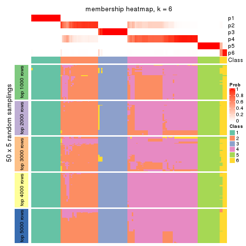
As soon as we have had the classes for columns, we can look for signatures which are significantly different between classes which can be candidate marks for certain classes. Following are the heatmaps for signatures.
Signature heatmaps where rows are scaled:
get_signatures(res, k = 2)
get_signatures(res, k = 3)
get_signatures(res, k = 4)
get_signatures(res, k = 5)
get_signatures(res, k = 6)
Signature heatmaps where rows are not scaled:
get_signatures(res, k = 2, scale_rows = FALSE)
get_signatures(res, k = 3, scale_rows = FALSE)
get_signatures(res, k = 4, scale_rows = FALSE)
get_signatures(res, k = 5, scale_rows = FALSE)
get_signatures(res, k = 6, scale_rows = FALSE)
Compare the overlap of signatures from different k:
compare_signatures(res)
get_signature() returns a data frame invisibly. TO get the list of signatures, the function
call should be assigned to a variable explicitly. In following code, if plot argument is set
to FALSE, no heatmap is plotted while only the differential analysis is performed.
# code only for demonstration
tb = get_signature(res, k = ..., plot = FALSE)
An example of the output of tb is:
#> which_row fdr mean_1 mean_2 scaled_mean_1 scaled_mean_2 km
#> 1 38 0.042760348 8.373488 9.131774 -0.5533452 0.5164555 1
#> 2 40 0.018707592 7.106213 8.469186 -0.6173731 0.5762149 1
#> 3 55 0.019134737 10.221463 11.207825 -0.6159697 0.5749050 1
#> 4 59 0.006059896 5.921854 7.869574 -0.6899429 0.6439467 1
#> 5 60 0.018055526 8.928898 10.211722 -0.6204761 0.5791110 1
#> 6 98 0.009384629 15.714769 14.887706 0.6635654 -0.6193277 2
...
The columns in tb are:
which_row: row indices corresponding to the input matrix.fdr: FDR for the differential test. mean_x: The mean value in group x.scaled_mean_x: The mean value in group x after rows are scaled.km: Row groups if k-means clustering is applied to rows.UMAP plot which shows how samples are separated.
dimension_reduction(res, k = 2, method = "UMAP")
dimension_reduction(res, k = 3, method = "UMAP")
dimension_reduction(res, k = 4, method = "UMAP")
dimension_reduction(res, k = 5, method = "UMAP")
dimension_reduction(res, k = 6, method = "UMAP")
Following heatmap shows how subgroups are split when increasing k:
collect_classes(res)
If matrix rows can be associated to genes, consider to use GO_Enrichment(res,
...) to perform function enrichment for the signature genes.
The object with results only for a single top-value method and a single partition method can be extracted as:
res = res_list["ATC", "NMF"]
# you can also extract it by
# res = res_list["ATC:NMF"]
A summary of res and all the functions that can be applied to it:
res
#> A 'ConsensusPartition' object with k = 2, 3, 4, 5, 6.
#> On a matrix with 15028 rows and 134 columns.
#> Top rows (1000, 2000, 3000, 4000, 5000) are extracted by 'ATC' method.
#> Subgroups are detected by 'NMF' method.
#> Performed in total 1250 partitions by row resampling.
#> Best k for subgroups seems to be 4.
#>
#> Following methods can be applied to this 'ConsensusPartition' object:
#> [1] "cola_report" "collect_classes" "collect_plots"
#> [4] "collect_stats" "colnames" "compare_signatures"
#> [7] "consensus_heatmap" "dimension_reduction" "functional_enrichment"
#> [10] "get_anno_col" "get_anno" "get_classes"
#> [13] "get_consensus" "get_matrix" "get_membership"
#> [16] "get_param" "get_signatures" "get_stats"
#> [19] "is_best_k" "is_stable_k" "membership_heatmap"
#> [22] "ncol" "nrow" "plot_ecdf"
#> [25] "rownames" "select_partition_number" "show"
#> [28] "suggest_best_k" "test_to_known_factors"
collect_plots() function collects all the plots made from res for all k (number of partitions)
into one single page to provide an easy and fast comparison between different k.
collect_plots(res)
The plots are:
k and the heatmap of
predicted classes for each k.k.k.k.All the plots in panels can be made by individual functions and they are plotted later in this section.
select_partition_number() produces several plots showing different
statistics for choosing “optimized” k. There are following statistics:
k;k, the area increased is defined as \(A_k - A_{k-1}\).The detailed explanations of these statistics can be found in the cola vignette.
Generally speaking, lower PAC score, higher mean silhouette score or higher
concordance corresponds to better partition. Rand index and Jaccard index
measure how similar the current partition is compared to partition with k-1.
If they are too similar, we won't accept k is better than k-1.
select_partition_number(res)
The numeric values for all these statistics can be obtained by get_stats().
get_stats(res)
#> k 1-PAC mean_silhouette concordance area_increased Rand Jaccard
#> 2 2 1.000 0.996 0.998 0.2853 0.714 0.714
#> 3 3 1.000 0.977 0.991 1.0372 0.683 0.563
#> 4 4 0.959 0.963 0.959 0.0871 0.949 0.880
#> 5 5 0.754 0.859 0.861 0.1940 0.873 0.659
#> 6 6 0.780 0.886 0.870 0.0570 0.937 0.745
suggest_best_k() suggests the best \(k\) based on these statistics. The rules are as follows:
NA.suggest_best_k(res)
#> [1] 4
#> attr(,"optional")
#> [1] 2 3
There is also optional best \(k\) = 2 3 that is worth to check.
Following shows the table of the partitions (You need to click the show/hide
code output link to see it). The membership matrix (columns with name p*)
is inferred by
clue::cl_consensus()
function with the SE method. Basically the value in the membership matrix
represents the probability to belong to a certain group. The finall class
label for an item is determined with the group with highest probability it
belongs to.
In get_classes() function, the entropy is calculated from the membership
matrix and the silhouette score is calculated from the consensus matrix.
cbind(get_classes(res, k = 2), get_membership(res, k = 2))
#> class entropy silhouette p1 p2
#> SRR1550981 2 0.0000 1.000 0.000 1.000
#> SRR1550982 2 0.0000 1.000 0.000 1.000
#> SRR1550983 2 0.0000 1.000 0.000 1.000
#> SRR1550984 2 0.0000 1.000 0.000 1.000
#> SRR1550986 1 0.0000 0.990 1.000 0.000
#> SRR1550985 2 0.0000 1.000 0.000 1.000
#> SRR1550988 2 0.0000 1.000 0.000 1.000
#> SRR1550987 2 0.0000 1.000 0.000 1.000
#> SRR1550989 2 0.0000 1.000 0.000 1.000
#> SRR1550990 2 0.0000 1.000 0.000 1.000
#> SRR1550991 2 0.0000 1.000 0.000 1.000
#> SRR1550992 1 0.0000 0.990 1.000 0.000
#> SRR1550994 2 0.0000 1.000 0.000 1.000
#> SRR1550993 2 0.0000 1.000 0.000 1.000
#> SRR1550995 2 0.0000 1.000 0.000 1.000
#> SRR1550996 2 0.0000 1.000 0.000 1.000
#> SRR1550997 1 0.0000 0.990 1.000 0.000
#> SRR1550998 2 0.0000 1.000 0.000 1.000
#> SRR1551000 2 0.0000 1.000 0.000 1.000
#> SRR1550999 2 0.0000 1.000 0.000 1.000
#> SRR1551001 2 0.0000 1.000 0.000 1.000
#> SRR1551002 1 0.0000 0.990 1.000 0.000
#> SRR1551003 2 0.0000 1.000 0.000 1.000
#> SRR1551004 2 0.0000 1.000 0.000 1.000
#> SRR1551006 2 0.0000 1.000 0.000 1.000
#> SRR1551005 2 0.0000 1.000 0.000 1.000
#> SRR1551007 2 0.0000 1.000 0.000 1.000
#> SRR1551008 1 0.0000 0.990 1.000 0.000
#> SRR1551009 2 0.0000 1.000 0.000 1.000
#> SRR1551010 2 0.0000 1.000 0.000 1.000
#> SRR1551012 2 0.0000 1.000 0.000 1.000
#> SRR1551011 2 0.0000 1.000 0.000 1.000
#> SRR1551013 1 0.0000 0.990 1.000 0.000
#> SRR1551014 2 0.0376 0.996 0.004 0.996
#> SRR1551015 2 0.0000 1.000 0.000 1.000
#> SRR1551016 2 0.0000 1.000 0.000 1.000
#> SRR1551017 2 0.0000 1.000 0.000 1.000
#> SRR1551018 2 0.0000 1.000 0.000 1.000
#> SRR1551019 1 0.6887 0.777 0.816 0.184
#> SRR1551021 2 0.1633 0.975 0.024 0.976
#> SRR1551022 2 0.0000 1.000 0.000 1.000
#> SRR1551023 2 0.0000 1.000 0.000 1.000
#> SRR1551020 1 0.0000 0.990 1.000 0.000
#> SRR1551024 2 0.0000 1.000 0.000 1.000
#> SRR1551026 1 0.0000 0.990 1.000 0.000
#> SRR1551025 1 0.0000 0.990 1.000 0.000
#> SRR1551027 2 0.0000 1.000 0.000 1.000
#> SRR1551028 2 0.0000 1.000 0.000 1.000
#> SRR1551029 2 0.0000 1.000 0.000 1.000
#> SRR1551030 2 0.0000 1.000 0.000 1.000
#> SRR1551031 2 0.0000 1.000 0.000 1.000
#> SRR1551032 1 0.2236 0.957 0.964 0.036
#> SRR1551034 2 0.0000 1.000 0.000 1.000
#> SRR1551033 1 0.0000 0.990 1.000 0.000
#> SRR1551035 2 0.0000 1.000 0.000 1.000
#> SRR1551036 2 0.0000 1.000 0.000 1.000
#> SRR1551037 2 0.0000 1.000 0.000 1.000
#> SRR1551038 2 0.0000 1.000 0.000 1.000
#> SRR1551039 2 0.0000 1.000 0.000 1.000
#> SRR1551040 1 0.0000 0.990 1.000 0.000
#> SRR1551041 2 0.0000 1.000 0.000 1.000
#> SRR1551042 2 0.0000 1.000 0.000 1.000
#> SRR1551043 2 0.0000 1.000 0.000 1.000
#> SRR1551044 2 0.0000 1.000 0.000 1.000
#> SRR1551045 2 0.0000 1.000 0.000 1.000
#> SRR1551046 2 0.0000 1.000 0.000 1.000
#> SRR1551047 1 0.0000 0.990 1.000 0.000
#> SRR1551048 2 0.0000 1.000 0.000 1.000
#> SRR1551049 2 0.0000 1.000 0.000 1.000
#> SRR1551050 2 0.0000 1.000 0.000 1.000
#> SRR1551051 2 0.0000 1.000 0.000 1.000
#> SRR1551052 2 0.0000 1.000 0.000 1.000
#> SRR1551053 2 0.0000 1.000 0.000 1.000
#> SRR1551054 1 0.0000 0.990 1.000 0.000
#> SRR1551055 2 0.0000 1.000 0.000 1.000
#> SRR1551056 2 0.0000 1.000 0.000 1.000
#> SRR1551057 2 0.0000 1.000 0.000 1.000
#> SRR1551058 2 0.0000 1.000 0.000 1.000
#> SRR1551059 2 0.0000 1.000 0.000 1.000
#> SRR1551060 2 0.0000 1.000 0.000 1.000
#> SRR1551061 1 0.0000 0.990 1.000 0.000
#> SRR1551062 2 0.0000 1.000 0.000 1.000
#> SRR1551063 2 0.0000 1.000 0.000 1.000
#> SRR1551064 2 0.0000 1.000 0.000 1.000
#> SRR1551065 2 0.0000 1.000 0.000 1.000
#> SRR1551066 2 0.0000 1.000 0.000 1.000
#> SRR1551067 2 0.0000 1.000 0.000 1.000
#> SRR1551068 1 0.0000 0.990 1.000 0.000
#> SRR1551069 2 0.0000 1.000 0.000 1.000
#> SRR1551070 2 0.0000 1.000 0.000 1.000
#> SRR1551071 2 0.0000 1.000 0.000 1.000
#> SRR1551072 2 0.0000 1.000 0.000 1.000
#> SRR1551073 2 0.0000 1.000 0.000 1.000
#> SRR1551074 2 0.0000 1.000 0.000 1.000
#> SRR1551075 1 0.0000 0.990 1.000 0.000
#> SRR1551076 2 0.0000 1.000 0.000 1.000
#> SRR1551077 2 0.0000 1.000 0.000 1.000
#> SRR1551078 2 0.0000 1.000 0.000 1.000
#> SRR1551079 2 0.0000 1.000 0.000 1.000
#> SRR1551080 2 0.0000 1.000 0.000 1.000
#> SRR1551081 2 0.0000 1.000 0.000 1.000
#> SRR1551082 1 0.0000 0.990 1.000 0.000
#> SRR1551083 2 0.0000 1.000 0.000 1.000
#> SRR1551084 2 0.0000 1.000 0.000 1.000
#> SRR1551085 2 0.0000 1.000 0.000 1.000
#> SRR1551086 2 0.0000 1.000 0.000 1.000
#> SRR1551088 1 0.0000 0.990 1.000 0.000
#> SRR1551087 2 0.0000 1.000 0.000 1.000
#> SRR1551089 2 0.0000 1.000 0.000 1.000
#> SRR1551090 2 0.0000 1.000 0.000 1.000
#> SRR1551091 2 0.0000 1.000 0.000 1.000
#> SRR1551092 2 0.0000 1.000 0.000 1.000
#> SRR1551093 2 0.0000 1.000 0.000 1.000
#> SRR1551094 2 0.0000 1.000 0.000 1.000
#> SRR1551095 1 0.0000 0.990 1.000 0.000
#> SRR1551096 2 0.0000 1.000 0.000 1.000
#> SRR1551097 2 0.0000 1.000 0.000 1.000
#> SRR1551098 2 0.0000 1.000 0.000 1.000
#> SRR1551099 2 0.0000 1.000 0.000 1.000
#> SRR1551101 1 0.0000 0.990 1.000 0.000
#> SRR1551100 2 0.0000 1.000 0.000 1.000
#> SRR1551102 2 0.0000 1.000 0.000 1.000
#> SRR1551103 2 0.0000 1.000 0.000 1.000
#> SRR1551104 2 0.0000 1.000 0.000 1.000
#> SRR1551105 2 0.0000 1.000 0.000 1.000
#> SRR1551106 2 0.0000 1.000 0.000 1.000
#> SRR1551107 2 0.0000 1.000 0.000 1.000
#> SRR1551108 1 0.0000 0.990 1.000 0.000
#> SRR1551109 2 0.0000 1.000 0.000 1.000
#> SRR1551110 2 0.0000 1.000 0.000 1.000
#> SRR1551111 2 0.0000 1.000 0.000 1.000
#> SRR1551112 2 0.0000 1.000 0.000 1.000
#> SRR1551113 2 0.0000 1.000 0.000 1.000
#> SRR1551114 2 0.0000 1.000 0.000 1.000
cbind(get_classes(res, k = 3), get_membership(res, k = 3))
#> class entropy silhouette p1 p2 p3
#> SRR1550981 1 0.0000 0.974 1.000 0.000 0.000
#> SRR1550982 1 0.0000 0.974 1.000 0.000 0.000
#> SRR1550983 1 0.0000 0.974 1.000 0.000 0.000
#> SRR1550984 1 0.5760 0.483 0.672 0.328 0.000
#> SRR1550986 3 0.0000 1.000 0.000 0.000 1.000
#> SRR1550985 1 0.0592 0.959 0.988 0.012 0.000
#> SRR1550988 2 0.0000 0.995 0.000 1.000 0.000
#> SRR1550987 1 0.0000 0.974 1.000 0.000 0.000
#> SRR1550989 2 0.0000 0.995 0.000 1.000 0.000
#> SRR1550990 2 0.0000 0.995 0.000 1.000 0.000
#> SRR1550991 2 0.0000 0.995 0.000 1.000 0.000
#> SRR1550992 3 0.0000 1.000 0.000 0.000 1.000
#> SRR1550994 2 0.0000 0.995 0.000 1.000 0.000
#> SRR1550993 1 0.0000 0.974 1.000 0.000 0.000
#> SRR1550995 2 0.0000 0.995 0.000 1.000 0.000
#> SRR1550996 2 0.0000 0.995 0.000 1.000 0.000
#> SRR1550997 3 0.0000 1.000 0.000 0.000 1.000
#> SRR1550998 1 0.0000 0.974 1.000 0.000 0.000
#> SRR1551000 2 0.0000 0.995 0.000 1.000 0.000
#> SRR1550999 2 0.0000 0.995 0.000 1.000 0.000
#> SRR1551001 2 0.0000 0.995 0.000 1.000 0.000
#> SRR1551002 3 0.0000 1.000 0.000 0.000 1.000
#> SRR1551003 1 0.0000 0.974 1.000 0.000 0.000
#> SRR1551004 2 0.0000 0.995 0.000 1.000 0.000
#> SRR1551006 2 0.0000 0.995 0.000 1.000 0.000
#> SRR1551005 2 0.0000 0.995 0.000 1.000 0.000
#> SRR1551007 2 0.0000 0.995 0.000 1.000 0.000
#> SRR1551008 3 0.0000 1.000 0.000 0.000 1.000
#> SRR1551009 1 0.0000 0.974 1.000 0.000 0.000
#> SRR1551010 2 0.0000 0.995 0.000 1.000 0.000
#> SRR1551012 2 0.0000 0.995 0.000 1.000 0.000
#> SRR1551011 2 0.0000 0.995 0.000 1.000 0.000
#> SRR1551013 3 0.0000 1.000 0.000 0.000 1.000
#> SRR1551014 1 0.0000 0.974 1.000 0.000 0.000
#> SRR1551015 2 0.0000 0.995 0.000 1.000 0.000
#> SRR1551016 2 0.0000 0.995 0.000 1.000 0.000
#> SRR1551017 2 0.0000 0.995 0.000 1.000 0.000
#> SRR1551018 2 0.0000 0.995 0.000 1.000 0.000
#> SRR1551019 1 0.0000 0.974 1.000 0.000 0.000
#> SRR1551021 1 0.0000 0.974 1.000 0.000 0.000
#> SRR1551022 2 0.0000 0.995 0.000 1.000 0.000
#> SRR1551023 2 0.0000 0.995 0.000 1.000 0.000
#> SRR1551020 3 0.0000 1.000 0.000 0.000 1.000
#> SRR1551024 2 0.0000 0.995 0.000 1.000 0.000
#> SRR1551026 3 0.0000 1.000 0.000 0.000 1.000
#> SRR1551025 1 0.6140 0.321 0.596 0.000 0.404
#> SRR1551027 1 0.0000 0.974 1.000 0.000 0.000
#> SRR1551028 2 0.0000 0.995 0.000 1.000 0.000
#> SRR1551029 2 0.0000 0.995 0.000 1.000 0.000
#> SRR1551030 2 0.0000 0.995 0.000 1.000 0.000
#> SRR1551031 2 0.0000 0.995 0.000 1.000 0.000
#> SRR1551032 1 0.2537 0.894 0.920 0.000 0.080
#> SRR1551034 1 0.0000 0.974 1.000 0.000 0.000
#> SRR1551033 3 0.0000 1.000 0.000 0.000 1.000
#> SRR1551035 2 0.0000 0.995 0.000 1.000 0.000
#> SRR1551036 2 0.0000 0.995 0.000 1.000 0.000
#> SRR1551037 2 0.0000 0.995 0.000 1.000 0.000
#> SRR1551038 2 0.0000 0.995 0.000 1.000 0.000
#> SRR1551039 1 0.0000 0.974 1.000 0.000 0.000
#> SRR1551040 3 0.0000 1.000 0.000 0.000 1.000
#> SRR1551041 1 0.0000 0.974 1.000 0.000 0.000
#> SRR1551042 2 0.0000 0.995 0.000 1.000 0.000
#> SRR1551043 2 0.0000 0.995 0.000 1.000 0.000
#> SRR1551044 2 0.0000 0.995 0.000 1.000 0.000
#> SRR1551045 2 0.0000 0.995 0.000 1.000 0.000
#> SRR1551046 1 0.0000 0.974 1.000 0.000 0.000
#> SRR1551047 3 0.0000 1.000 0.000 0.000 1.000
#> SRR1551048 1 0.0000 0.974 1.000 0.000 0.000
#> SRR1551049 2 0.0000 0.995 0.000 1.000 0.000
#> SRR1551050 2 0.0000 0.995 0.000 1.000 0.000
#> SRR1551051 2 0.0000 0.995 0.000 1.000 0.000
#> SRR1551052 2 0.0000 0.995 0.000 1.000 0.000
#> SRR1551053 2 0.0592 0.983 0.012 0.988 0.000
#> SRR1551054 3 0.0000 1.000 0.000 0.000 1.000
#> SRR1551055 1 0.0000 0.974 1.000 0.000 0.000
#> SRR1551056 2 0.0000 0.995 0.000 1.000 0.000
#> SRR1551057 2 0.0000 0.995 0.000 1.000 0.000
#> SRR1551058 2 0.0000 0.995 0.000 1.000 0.000
#> SRR1551059 2 0.0000 0.995 0.000 1.000 0.000
#> SRR1551060 2 0.5621 0.547 0.308 0.692 0.000
#> SRR1551061 3 0.0000 1.000 0.000 0.000 1.000
#> SRR1551062 1 0.0000 0.974 1.000 0.000 0.000
#> SRR1551063 2 0.0000 0.995 0.000 1.000 0.000
#> SRR1551064 2 0.0000 0.995 0.000 1.000 0.000
#> SRR1551065 2 0.0000 0.995 0.000 1.000 0.000
#> SRR1551066 2 0.0000 0.995 0.000 1.000 0.000
#> SRR1551067 1 0.0000 0.974 1.000 0.000 0.000
#> SRR1551068 3 0.0000 1.000 0.000 0.000 1.000
#> SRR1551069 1 0.0000 0.974 1.000 0.000 0.000
#> SRR1551070 2 0.0000 0.995 0.000 1.000 0.000
#> SRR1551071 2 0.0000 0.995 0.000 1.000 0.000
#> SRR1551072 2 0.0424 0.987 0.008 0.992 0.000
#> SRR1551073 2 0.0000 0.995 0.000 1.000 0.000
#> SRR1551074 1 0.0000 0.974 1.000 0.000 0.000
#> SRR1551075 3 0.0000 1.000 0.000 0.000 1.000
#> SRR1551076 1 0.0000 0.974 1.000 0.000 0.000
#> SRR1551077 2 0.0000 0.995 0.000 1.000 0.000
#> SRR1551078 2 0.0000 0.995 0.000 1.000 0.000
#> SRR1551079 2 0.0000 0.995 0.000 1.000 0.000
#> SRR1551080 2 0.0000 0.995 0.000 1.000 0.000
#> SRR1551081 1 0.0000 0.974 1.000 0.000 0.000
#> SRR1551082 3 0.0000 1.000 0.000 0.000 1.000
#> SRR1551083 1 0.0000 0.974 1.000 0.000 0.000
#> SRR1551084 2 0.0000 0.995 0.000 1.000 0.000
#> SRR1551085 2 0.0000 0.995 0.000 1.000 0.000
#> SRR1551086 2 0.0000 0.995 0.000 1.000 0.000
#> SRR1551088 3 0.0000 1.000 0.000 0.000 1.000
#> SRR1551087 1 0.0000 0.974 1.000 0.000 0.000
#> SRR1551089 1 0.0000 0.974 1.000 0.000 0.000
#> SRR1551090 2 0.0000 0.995 0.000 1.000 0.000
#> SRR1551091 2 0.0000 0.995 0.000 1.000 0.000
#> SRR1551092 2 0.0000 0.995 0.000 1.000 0.000
#> SRR1551093 2 0.0000 0.995 0.000 1.000 0.000
#> SRR1551094 1 0.0000 0.974 1.000 0.000 0.000
#> SRR1551095 3 0.0000 1.000 0.000 0.000 1.000
#> SRR1551096 1 0.0000 0.974 1.000 0.000 0.000
#> SRR1551097 2 0.0000 0.995 0.000 1.000 0.000
#> SRR1551098 2 0.0000 0.995 0.000 1.000 0.000
#> SRR1551099 2 0.0000 0.995 0.000 1.000 0.000
#> SRR1551101 3 0.0000 1.000 0.000 0.000 1.000
#> SRR1551100 1 0.0000 0.974 1.000 0.000 0.000
#> SRR1551102 1 0.0000 0.974 1.000 0.000 0.000
#> SRR1551103 2 0.0000 0.995 0.000 1.000 0.000
#> SRR1551104 2 0.0000 0.995 0.000 1.000 0.000
#> SRR1551105 2 0.0000 0.995 0.000 1.000 0.000
#> SRR1551106 2 0.0000 0.995 0.000 1.000 0.000
#> SRR1551107 1 0.0000 0.974 1.000 0.000 0.000
#> SRR1551108 3 0.0000 1.000 0.000 0.000 1.000
#> SRR1551109 1 0.0000 0.974 1.000 0.000 0.000
#> SRR1551110 2 0.0000 0.995 0.000 1.000 0.000
#> SRR1551111 2 0.0000 0.995 0.000 1.000 0.000
#> SRR1551112 2 0.0000 0.995 0.000 1.000 0.000
#> SRR1551113 2 0.0000 0.995 0.000 1.000 0.000
#> SRR1551114 1 0.0000 0.974 1.000 0.000 0.000
cbind(get_classes(res, k = 4), get_membership(res, k = 4))
#> class entropy silhouette p1 p2 p3 p4
#> SRR1550981 4 0.2814 0.936 0.132 0.000 0.000 0.868
#> SRR1550982 4 0.2944 0.938 0.128 0.004 0.000 0.868
#> SRR1550983 4 0.2868 0.934 0.136 0.000 0.000 0.864
#> SRR1550984 4 0.3471 0.865 0.060 0.072 0.000 0.868
#> SRR1550986 3 0.0000 1.000 0.000 0.000 1.000 0.000
#> SRR1550985 4 0.3421 0.904 0.088 0.044 0.000 0.868
#> SRR1550988 2 0.0921 0.968 0.000 0.972 0.000 0.028
#> SRR1550987 1 0.0188 0.986 0.996 0.000 0.000 0.004
#> SRR1550989 2 0.0592 0.972 0.000 0.984 0.000 0.016
#> SRR1550990 2 0.0336 0.973 0.000 0.992 0.000 0.008
#> SRR1550991 2 0.1545 0.960 0.008 0.952 0.000 0.040
#> SRR1550992 3 0.0000 1.000 0.000 0.000 1.000 0.000
#> SRR1550994 2 0.0336 0.973 0.000 0.992 0.000 0.008
#> SRR1550993 1 0.0336 0.992 0.992 0.000 0.000 0.008
#> SRR1550995 2 0.0707 0.971 0.000 0.980 0.000 0.020
#> SRR1550996 2 0.0469 0.973 0.000 0.988 0.000 0.012
#> SRR1550997 3 0.0000 1.000 0.000 0.000 1.000 0.000
#> SRR1550998 1 0.0469 0.991 0.988 0.000 0.000 0.012
#> SRR1551000 2 0.0707 0.971 0.000 0.980 0.000 0.020
#> SRR1550999 2 0.0592 0.971 0.000 0.984 0.000 0.016
#> SRR1551001 2 0.1211 0.962 0.000 0.960 0.000 0.040
#> SRR1551002 3 0.0000 1.000 0.000 0.000 1.000 0.000
#> SRR1551003 1 0.0469 0.990 0.988 0.000 0.000 0.012
#> SRR1551004 2 0.0469 0.972 0.000 0.988 0.000 0.012
#> SRR1551006 2 0.0336 0.974 0.000 0.992 0.000 0.008
#> SRR1551005 2 0.0707 0.971 0.000 0.980 0.000 0.020
#> SRR1551007 2 0.1938 0.951 0.012 0.936 0.000 0.052
#> SRR1551008 3 0.0000 1.000 0.000 0.000 1.000 0.000
#> SRR1551009 1 0.0188 0.991 0.996 0.000 0.000 0.004
#> SRR1551010 2 0.0336 0.974 0.000 0.992 0.000 0.008
#> SRR1551012 2 0.0469 0.973 0.000 0.988 0.000 0.012
#> SRR1551011 2 0.0592 0.972 0.000 0.984 0.000 0.016
#> SRR1551013 3 0.0000 1.000 0.000 0.000 1.000 0.000
#> SRR1551014 1 0.0188 0.991 0.996 0.000 0.000 0.004
#> SRR1551015 2 0.1398 0.962 0.004 0.956 0.000 0.040
#> SRR1551016 2 0.1022 0.966 0.000 0.968 0.000 0.032
#> SRR1551017 2 0.0895 0.972 0.004 0.976 0.000 0.020
#> SRR1551018 2 0.2111 0.948 0.024 0.932 0.000 0.044
#> SRR1551019 4 0.3913 0.910 0.148 0.000 0.028 0.824
#> SRR1551021 1 0.0336 0.992 0.992 0.000 0.000 0.008
#> SRR1551022 2 0.0469 0.973 0.000 0.988 0.000 0.012
#> SRR1551023 2 0.1211 0.962 0.000 0.960 0.000 0.040
#> SRR1551020 3 0.0000 1.000 0.000 0.000 1.000 0.000
#> SRR1551024 2 0.0188 0.974 0.000 0.996 0.000 0.004
#> SRR1551026 3 0.0000 1.000 0.000 0.000 1.000 0.000
#> SRR1551025 4 0.6170 0.744 0.136 0.000 0.192 0.672
#> SRR1551027 1 0.1022 0.973 0.968 0.000 0.000 0.032
#> SRR1551028 2 0.0336 0.974 0.000 0.992 0.000 0.008
#> SRR1551029 2 0.1302 0.959 0.000 0.956 0.000 0.044
#> SRR1551030 2 0.0336 0.973 0.000 0.992 0.000 0.008
#> SRR1551031 2 0.0657 0.972 0.004 0.984 0.000 0.012
#> SRR1551032 4 0.4286 0.898 0.136 0.000 0.052 0.812
#> SRR1551034 1 0.0000 0.989 1.000 0.000 0.000 0.000
#> SRR1551033 3 0.0000 1.000 0.000 0.000 1.000 0.000
#> SRR1551035 2 0.0592 0.972 0.000 0.984 0.000 0.016
#> SRR1551036 2 0.0707 0.971 0.000 0.980 0.000 0.020
#> SRR1551037 2 0.0336 0.973 0.000 0.992 0.000 0.008
#> SRR1551038 2 0.1807 0.954 0.008 0.940 0.000 0.052
#> SRR1551039 4 0.2944 0.938 0.128 0.004 0.000 0.868
#> SRR1551040 3 0.0000 1.000 0.000 0.000 1.000 0.000
#> SRR1551041 1 0.0336 0.992 0.992 0.000 0.000 0.008
#> SRR1551042 2 0.0592 0.971 0.000 0.984 0.000 0.016
#> SRR1551043 2 0.1022 0.966 0.000 0.968 0.000 0.032
#> SRR1551044 2 0.0707 0.971 0.000 0.980 0.000 0.020
#> SRR1551045 2 0.1545 0.960 0.008 0.952 0.000 0.040
#> SRR1551046 4 0.2868 0.934 0.136 0.000 0.000 0.864
#> SRR1551047 3 0.0000 1.000 0.000 0.000 1.000 0.000
#> SRR1551048 1 0.0188 0.991 0.996 0.000 0.000 0.004
#> SRR1551049 2 0.0469 0.972 0.000 0.988 0.000 0.012
#> SRR1551050 2 0.1211 0.962 0.000 0.960 0.000 0.040
#> SRR1551051 2 0.0469 0.973 0.000 0.988 0.000 0.012
#> SRR1551052 2 0.1452 0.962 0.008 0.956 0.000 0.036
#> SRR1551053 2 0.3726 0.752 0.000 0.788 0.000 0.212
#> SRR1551054 3 0.0000 1.000 0.000 0.000 1.000 0.000
#> SRR1551055 1 0.0336 0.992 0.992 0.000 0.000 0.008
#> SRR1551056 2 0.0469 0.972 0.000 0.988 0.000 0.012
#> SRR1551057 2 0.0921 0.968 0.000 0.972 0.000 0.028
#> SRR1551058 2 0.0707 0.974 0.000 0.980 0.000 0.020
#> SRR1551059 2 0.1798 0.956 0.016 0.944 0.000 0.040
#> SRR1551060 4 0.3801 0.641 0.000 0.220 0.000 0.780
#> SRR1551061 3 0.0000 1.000 0.000 0.000 1.000 0.000
#> SRR1551062 1 0.0336 0.992 0.992 0.000 0.000 0.008
#> SRR1551063 2 0.0817 0.969 0.000 0.976 0.000 0.024
#> SRR1551064 2 0.0592 0.972 0.000 0.984 0.000 0.016
#> SRR1551065 2 0.0469 0.974 0.000 0.988 0.000 0.012
#> SRR1551066 2 0.1975 0.951 0.016 0.936 0.000 0.048
#> SRR1551067 4 0.2868 0.934 0.136 0.000 0.000 0.864
#> SRR1551068 3 0.0000 1.000 0.000 0.000 1.000 0.000
#> SRR1551069 1 0.0336 0.992 0.992 0.000 0.000 0.008
#> SRR1551070 2 0.1452 0.963 0.008 0.956 0.000 0.036
#> SRR1551071 2 0.0707 0.971 0.000 0.980 0.000 0.020
#> SRR1551072 2 0.1004 0.973 0.004 0.972 0.000 0.024
#> SRR1551073 2 0.3617 0.883 0.064 0.860 0.000 0.076
#> SRR1551074 4 0.2921 0.929 0.140 0.000 0.000 0.860
#> SRR1551075 3 0.0000 1.000 0.000 0.000 1.000 0.000
#> SRR1551076 1 0.0707 0.985 0.980 0.000 0.000 0.020
#> SRR1551077 2 0.0336 0.974 0.000 0.992 0.000 0.008
#> SRR1551078 2 0.1637 0.946 0.000 0.940 0.000 0.060
#> SRR1551079 2 0.0469 0.974 0.000 0.988 0.000 0.012
#> SRR1551080 2 0.1284 0.968 0.012 0.964 0.000 0.024
#> SRR1551081 4 0.2944 0.938 0.128 0.004 0.000 0.868
#> SRR1551082 3 0.0000 1.000 0.000 0.000 1.000 0.000
#> SRR1551083 1 0.0188 0.986 0.996 0.000 0.000 0.004
#> SRR1551084 2 0.0817 0.969 0.000 0.976 0.000 0.024
#> SRR1551085 2 0.0921 0.968 0.000 0.972 0.000 0.028
#> SRR1551086 2 0.0592 0.974 0.000 0.984 0.000 0.016
#> SRR1551088 3 0.0000 1.000 0.000 0.000 1.000 0.000
#> SRR1551087 4 0.2944 0.938 0.128 0.004 0.000 0.868
#> SRR1551089 1 0.0592 0.988 0.984 0.000 0.000 0.016
#> SRR1551090 2 0.1022 0.967 0.000 0.968 0.000 0.032
#> SRR1551091 2 0.1022 0.966 0.000 0.968 0.000 0.032
#> SRR1551092 2 0.0469 0.973 0.000 0.988 0.000 0.012
#> SRR1551093 2 0.2282 0.942 0.024 0.924 0.000 0.052
#> SRR1551094 4 0.2944 0.938 0.128 0.004 0.000 0.868
#> SRR1551095 3 0.0000 1.000 0.000 0.000 1.000 0.000
#> SRR1551096 1 0.0817 0.981 0.976 0.000 0.000 0.024
#> SRR1551097 2 0.0592 0.972 0.000 0.984 0.000 0.016
#> SRR1551098 2 0.0592 0.972 0.000 0.984 0.000 0.016
#> SRR1551099 2 0.0469 0.973 0.000 0.988 0.000 0.012
#> SRR1551101 3 0.0000 1.000 0.000 0.000 1.000 0.000
#> SRR1551100 4 0.3266 0.924 0.108 0.024 0.000 0.868
#> SRR1551102 1 0.0336 0.992 0.992 0.000 0.000 0.008
#> SRR1551103 2 0.1211 0.964 0.000 0.960 0.000 0.040
#> SRR1551104 2 0.0469 0.973 0.000 0.988 0.000 0.012
#> SRR1551105 2 0.0336 0.974 0.000 0.992 0.000 0.008
#> SRR1551106 2 0.3312 0.900 0.052 0.876 0.000 0.072
#> SRR1551107 4 0.2944 0.938 0.128 0.004 0.000 0.868
#> SRR1551108 3 0.0000 1.000 0.000 0.000 1.000 0.000
#> SRR1551109 1 0.0336 0.982 0.992 0.000 0.000 0.008
#> SRR1551110 2 0.1302 0.962 0.000 0.956 0.000 0.044
#> SRR1551111 2 0.0469 0.973 0.000 0.988 0.000 0.012
#> SRR1551112 2 0.0592 0.974 0.000 0.984 0.000 0.016
#> SRR1551113 2 0.2385 0.939 0.028 0.920 0.000 0.052
#> SRR1551114 4 0.3421 0.904 0.088 0.044 0.000 0.868
cbind(get_classes(res, k = 5), get_membership(res, k = 5))
#> class entropy silhouette p1 p2 p3 p4 p5
#> SRR1550981 5 0.3902 0.904 0.152 0.016 0.000 0.028 0.804
#> SRR1550982 5 0.3951 0.911 0.140 0.032 0.000 0.020 0.808
#> SRR1550983 5 0.3911 0.907 0.152 0.024 0.000 0.020 0.804
#> SRR1550984 5 0.4752 0.816 0.044 0.124 0.000 0.060 0.772
#> SRR1550986 3 0.0000 1.000 0.000 0.000 1.000 0.000 0.000
#> SRR1550985 5 0.4775 0.870 0.072 0.076 0.000 0.072 0.780
#> SRR1550988 4 0.2266 0.951 0.064 0.016 0.000 0.912 0.008
#> SRR1550987 1 0.0566 0.979 0.984 0.000 0.000 0.012 0.004
#> SRR1550989 2 0.4348 0.725 0.000 0.668 0.000 0.316 0.016
#> SRR1550990 2 0.2966 0.788 0.000 0.816 0.000 0.184 0.000
#> SRR1550991 2 0.3229 0.709 0.040 0.872 0.000 0.032 0.056
#> SRR1550992 3 0.0000 1.000 0.000 0.000 1.000 0.000 0.000
#> SRR1550994 4 0.2204 0.950 0.036 0.036 0.000 0.920 0.008
#> SRR1550993 1 0.0798 0.984 0.976 0.000 0.000 0.016 0.008
#> SRR1550995 2 0.4722 0.659 0.000 0.608 0.000 0.368 0.024
#> SRR1550996 2 0.3819 0.779 0.000 0.756 0.000 0.228 0.016
#> SRR1550997 3 0.0000 1.000 0.000 0.000 1.000 0.000 0.000
#> SRR1550998 1 0.0566 0.984 0.984 0.000 0.000 0.012 0.004
#> SRR1551000 2 0.4736 0.607 0.000 0.576 0.000 0.404 0.020
#> SRR1550999 4 0.2078 0.950 0.036 0.036 0.000 0.924 0.004
#> SRR1551001 2 0.4075 0.783 0.000 0.780 0.000 0.160 0.060
#> SRR1551002 3 0.0000 1.000 0.000 0.000 1.000 0.000 0.000
#> SRR1551003 1 0.0898 0.984 0.972 0.000 0.000 0.008 0.020
#> SRR1551004 4 0.2313 0.952 0.040 0.032 0.000 0.916 0.012
#> SRR1551006 2 0.2193 0.790 0.000 0.900 0.000 0.092 0.008
#> SRR1551005 2 0.4465 0.730 0.000 0.672 0.000 0.304 0.024
#> SRR1551007 2 0.3207 0.708 0.048 0.872 0.000 0.024 0.056
#> SRR1551008 3 0.0000 1.000 0.000 0.000 1.000 0.000 0.000
#> SRR1551009 1 0.0807 0.984 0.976 0.000 0.000 0.012 0.012
#> SRR1551010 4 0.2555 0.955 0.052 0.028 0.000 0.904 0.016
#> SRR1551012 2 0.4141 0.769 0.000 0.728 0.000 0.248 0.024
#> SRR1551011 2 0.4402 0.693 0.000 0.636 0.000 0.352 0.012
#> SRR1551013 3 0.0000 1.000 0.000 0.000 1.000 0.000 0.000
#> SRR1551014 1 0.0451 0.979 0.988 0.000 0.000 0.004 0.008
#> SRR1551015 4 0.2745 0.944 0.052 0.028 0.000 0.896 0.024
#> SRR1551016 2 0.3504 0.785 0.004 0.840 0.000 0.092 0.064
#> SRR1551017 2 0.2338 0.763 0.016 0.916 0.000 0.036 0.032
#> SRR1551018 2 0.3432 0.701 0.060 0.860 0.000 0.028 0.052
#> SRR1551019 5 0.4146 0.871 0.176 0.000 0.020 0.024 0.780
#> SRR1551021 1 0.0671 0.969 0.980 0.000 0.000 0.004 0.016
#> SRR1551022 4 0.1996 0.948 0.032 0.036 0.000 0.928 0.004
#> SRR1551023 2 0.4974 0.578 0.000 0.560 0.000 0.408 0.032
#> SRR1551020 3 0.0162 0.997 0.000 0.000 0.996 0.004 0.000
#> SRR1551024 2 0.4418 0.718 0.000 0.652 0.000 0.332 0.016
#> SRR1551026 3 0.0000 1.000 0.000 0.000 1.000 0.000 0.000
#> SRR1551025 5 0.5282 0.807 0.164 0.000 0.096 0.024 0.716
#> SRR1551027 1 0.1041 0.967 0.964 0.000 0.000 0.004 0.032
#> SRR1551028 4 0.2390 0.943 0.032 0.044 0.000 0.912 0.012
#> SRR1551029 2 0.4925 0.699 0.000 0.632 0.000 0.324 0.044
#> SRR1551030 2 0.2017 0.789 0.000 0.912 0.000 0.080 0.008
#> SRR1551031 2 0.2011 0.758 0.008 0.928 0.000 0.044 0.020
#> SRR1551032 5 0.4062 0.873 0.168 0.000 0.016 0.028 0.788
#> SRR1551034 1 0.0798 0.984 0.976 0.000 0.000 0.016 0.008
#> SRR1551033 3 0.0000 1.000 0.000 0.000 1.000 0.000 0.000
#> SRR1551035 4 0.2234 0.945 0.036 0.044 0.000 0.916 0.004
#> SRR1551036 2 0.4428 0.755 0.000 0.700 0.000 0.268 0.032
#> SRR1551037 2 0.2416 0.791 0.000 0.888 0.000 0.100 0.012
#> SRR1551038 2 0.3549 0.706 0.040 0.852 0.000 0.032 0.076
#> SRR1551039 5 0.4508 0.907 0.128 0.056 0.000 0.032 0.784
#> SRR1551040 3 0.0000 1.000 0.000 0.000 1.000 0.000 0.000
#> SRR1551041 1 0.1012 0.982 0.968 0.000 0.000 0.012 0.020
#> SRR1551042 4 0.2227 0.955 0.048 0.032 0.000 0.916 0.004
#> SRR1551043 2 0.4780 0.740 0.000 0.672 0.000 0.280 0.048
#> SRR1551044 2 0.2984 0.791 0.000 0.860 0.000 0.108 0.032
#> SRR1551045 2 0.3152 0.715 0.044 0.876 0.000 0.028 0.052
#> SRR1551046 5 0.3938 0.901 0.164 0.016 0.000 0.024 0.796
#> SRR1551047 3 0.0000 1.000 0.000 0.000 1.000 0.000 0.000
#> SRR1551048 1 0.0798 0.984 0.976 0.000 0.000 0.016 0.008
#> SRR1551049 4 0.2266 0.951 0.064 0.016 0.000 0.912 0.008
#> SRR1551050 2 0.5068 0.643 0.000 0.592 0.000 0.364 0.044
#> SRR1551051 2 0.4152 0.747 0.000 0.692 0.000 0.296 0.012
#> SRR1551052 2 0.3170 0.725 0.036 0.876 0.000 0.040 0.048
#> SRR1551053 4 0.6031 0.292 0.000 0.268 0.000 0.568 0.164
#> SRR1551054 3 0.0000 1.000 0.000 0.000 1.000 0.000 0.000
#> SRR1551055 1 0.1018 0.982 0.968 0.000 0.000 0.016 0.016
#> SRR1551056 4 0.2409 0.954 0.060 0.020 0.000 0.908 0.012
#> SRR1551057 2 0.4573 0.759 0.000 0.700 0.000 0.256 0.044
#> SRR1551058 2 0.2011 0.778 0.008 0.928 0.000 0.044 0.020
#> SRR1551059 2 0.3152 0.717 0.044 0.876 0.000 0.028 0.052
#> SRR1551060 5 0.5538 0.658 0.008 0.172 0.000 0.148 0.672
#> SRR1551061 3 0.0000 1.000 0.000 0.000 1.000 0.000 0.000
#> SRR1551062 1 0.0912 0.984 0.972 0.000 0.000 0.012 0.016
#> SRR1551063 4 0.2478 0.953 0.060 0.028 0.000 0.904 0.008
#> SRR1551064 2 0.4318 0.742 0.000 0.688 0.000 0.292 0.020
#> SRR1551065 2 0.2295 0.789 0.004 0.900 0.000 0.088 0.008
#> SRR1551066 2 0.3490 0.700 0.048 0.856 0.000 0.028 0.068
#> SRR1551067 5 0.4446 0.910 0.156 0.028 0.000 0.040 0.776
#> SRR1551068 3 0.0000 1.000 0.000 0.000 1.000 0.000 0.000
#> SRR1551069 1 0.0798 0.984 0.976 0.000 0.000 0.008 0.016
#> SRR1551070 4 0.2692 0.924 0.092 0.016 0.000 0.884 0.008
#> SRR1551071 2 0.4352 0.767 0.000 0.720 0.000 0.244 0.036
#> SRR1551072 2 0.3134 0.790 0.012 0.864 0.000 0.096 0.028
#> SRR1551073 2 0.4144 0.678 0.068 0.816 0.000 0.032 0.084
#> SRR1551074 5 0.4702 0.897 0.172 0.020 0.000 0.056 0.752
#> SRR1551075 3 0.0000 1.000 0.000 0.000 1.000 0.000 0.000
#> SRR1551076 1 0.1106 0.981 0.964 0.000 0.000 0.012 0.024
#> SRR1551077 4 0.2409 0.953 0.044 0.028 0.000 0.912 0.016
#> SRR1551078 2 0.4769 0.751 0.000 0.688 0.000 0.256 0.056
#> SRR1551079 2 0.2086 0.779 0.008 0.924 0.000 0.048 0.020
#> SRR1551080 2 0.3410 0.706 0.052 0.860 0.000 0.024 0.064
#> SRR1551081 5 0.4564 0.909 0.132 0.052 0.000 0.036 0.780
#> SRR1551082 3 0.0000 1.000 0.000 0.000 1.000 0.000 0.000
#> SRR1551083 1 0.0798 0.984 0.976 0.000 0.000 0.016 0.008
#> SRR1551084 4 0.2196 0.955 0.056 0.024 0.000 0.916 0.004
#> SRR1551085 2 0.4687 0.739 0.000 0.672 0.000 0.288 0.040
#> SRR1551086 2 0.2349 0.789 0.004 0.900 0.000 0.084 0.012
#> SRR1551088 3 0.0000 1.000 0.000 0.000 1.000 0.000 0.000
#> SRR1551087 5 0.4075 0.913 0.136 0.036 0.000 0.024 0.804
#> SRR1551089 1 0.0992 0.981 0.968 0.000 0.000 0.008 0.024
#> SRR1551090 4 0.2297 0.954 0.060 0.020 0.000 0.912 0.008
#> SRR1551091 2 0.4675 0.642 0.000 0.600 0.000 0.380 0.020
#> SRR1551092 2 0.3967 0.763 0.000 0.724 0.000 0.264 0.012
#> SRR1551093 2 0.3761 0.689 0.068 0.840 0.000 0.028 0.064
#> SRR1551094 5 0.4041 0.912 0.140 0.032 0.000 0.024 0.804
#> SRR1551095 3 0.0000 1.000 0.000 0.000 1.000 0.000 0.000
#> SRR1551096 1 0.1168 0.973 0.960 0.000 0.000 0.008 0.032
#> SRR1551097 4 0.2521 0.949 0.068 0.024 0.000 0.900 0.008
#> SRR1551098 2 0.4551 0.670 0.000 0.616 0.000 0.368 0.016
#> SRR1551099 2 0.4016 0.761 0.000 0.716 0.000 0.272 0.012
#> SRR1551101 3 0.0000 1.000 0.000 0.000 1.000 0.000 0.000
#> SRR1551100 5 0.5103 0.880 0.096 0.068 0.000 0.080 0.756
#> SRR1551102 1 0.0566 0.984 0.984 0.000 0.000 0.012 0.004
#> SRR1551103 4 0.2331 0.950 0.064 0.024 0.000 0.908 0.004
#> SRR1551104 2 0.4297 0.750 0.000 0.692 0.000 0.288 0.020
#> SRR1551105 2 0.2763 0.791 0.000 0.848 0.000 0.148 0.004
#> SRR1551106 2 0.3823 0.685 0.064 0.836 0.000 0.028 0.072
#> SRR1551107 5 0.5004 0.901 0.144 0.036 0.000 0.072 0.748
#> SRR1551108 3 0.0000 1.000 0.000 0.000 1.000 0.000 0.000
#> SRR1551109 1 0.0693 0.976 0.980 0.000 0.000 0.012 0.008
#> SRR1551110 4 0.2304 0.948 0.068 0.020 0.000 0.908 0.004
#> SRR1551111 2 0.3642 0.777 0.000 0.760 0.000 0.232 0.008
#> SRR1551112 2 0.2331 0.784 0.004 0.908 0.000 0.064 0.024
#> SRR1551113 2 0.3294 0.705 0.048 0.868 0.000 0.028 0.056
#> SRR1551114 5 0.4753 0.884 0.088 0.076 0.000 0.056 0.780
cbind(get_classes(res, k = 6), get_membership(res, k = 6))
#> class entropy silhouette p1 p2 p3 p4 p5 p6
#> SRR1550981 5 0.4272 0.8431 0.148 0.012 0.000 0.036 0.772 0.032
#> SRR1550982 5 0.4415 0.8672 0.136 0.056 0.000 0.024 0.768 0.016
#> SRR1550983 5 0.4310 0.8531 0.148 0.028 0.000 0.024 0.772 0.028
#> SRR1550984 5 0.6156 0.7319 0.036 0.156 0.000 0.080 0.644 0.084
#> SRR1550986 3 0.0000 0.9940 0.000 0.000 1.000 0.000 0.000 0.000
#> SRR1550985 5 0.5111 0.8297 0.072 0.140 0.000 0.056 0.720 0.012
#> SRR1550988 4 0.1950 0.9516 0.024 0.064 0.000 0.912 0.000 0.000
#> SRR1550987 1 0.0405 0.9856 0.988 0.000 0.000 0.008 0.000 0.004
#> SRR1550989 2 0.1462 0.8540 0.000 0.936 0.000 0.056 0.008 0.000
#> SRR1550990 2 0.1863 0.8447 0.004 0.920 0.000 0.016 0.000 0.060
#> SRR1550991 6 0.3913 0.9689 0.008 0.212 0.000 0.012 0.016 0.752
#> SRR1550992 3 0.0000 0.9940 0.000 0.000 1.000 0.000 0.000 0.000
#> SRR1550994 4 0.2034 0.9510 0.024 0.060 0.000 0.912 0.004 0.000
#> SRR1550993 1 0.0260 0.9868 0.992 0.000 0.000 0.008 0.000 0.000
#> SRR1550995 2 0.1829 0.8466 0.000 0.920 0.000 0.056 0.024 0.000
#> SRR1550996 2 0.1755 0.8643 0.000 0.932 0.000 0.028 0.008 0.032
#> SRR1550997 3 0.0000 0.9940 0.000 0.000 1.000 0.000 0.000 0.000
#> SRR1550998 1 0.0665 0.9864 0.980 0.000 0.000 0.008 0.004 0.008
#> SRR1551000 2 0.2199 0.8303 0.000 0.892 0.000 0.088 0.020 0.000
#> SRR1550999 4 0.2094 0.9505 0.020 0.060 0.000 0.912 0.004 0.004
#> SRR1551001 2 0.2119 0.8455 0.000 0.912 0.000 0.008 0.036 0.044
#> SRR1551002 3 0.0000 0.9940 0.000 0.000 1.000 0.000 0.000 0.000
#> SRR1551003 1 0.0665 0.9863 0.980 0.000 0.000 0.008 0.008 0.004
#> SRR1551004 4 0.2622 0.9400 0.020 0.056 0.000 0.892 0.024 0.008
#> SRR1551006 2 0.3470 0.7489 0.000 0.804 0.000 0.020 0.020 0.156
#> SRR1551005 2 0.1693 0.8558 0.000 0.932 0.000 0.044 0.020 0.004
#> SRR1551007 6 0.4056 0.9695 0.016 0.208 0.000 0.008 0.020 0.748
#> SRR1551008 3 0.0000 0.9940 0.000 0.000 1.000 0.000 0.000 0.000
#> SRR1551009 1 0.0405 0.9856 0.988 0.000 0.000 0.008 0.000 0.004
#> SRR1551010 4 0.2507 0.9479 0.028 0.060 0.000 0.892 0.020 0.000
#> SRR1551012 2 0.1810 0.8614 0.008 0.932 0.000 0.020 0.004 0.036
#> SRR1551011 2 0.1692 0.8614 0.000 0.932 0.000 0.048 0.008 0.012
#> SRR1551013 3 0.0000 0.9940 0.000 0.000 1.000 0.000 0.000 0.000
#> SRR1551014 1 0.1078 0.9823 0.964 0.000 0.000 0.012 0.008 0.016
#> SRR1551015 4 0.2478 0.9437 0.024 0.076 0.000 0.888 0.012 0.000
#> SRR1551016 2 0.2737 0.8118 0.000 0.868 0.000 0.004 0.044 0.084
#> SRR1551017 2 0.4816 -0.2372 0.000 0.500 0.000 0.008 0.036 0.456
#> SRR1551018 6 0.3865 0.9698 0.016 0.208 0.000 0.004 0.016 0.756
#> SRR1551019 5 0.4300 0.7995 0.176 0.000 0.000 0.032 0.748 0.044
#> SRR1551021 1 0.1346 0.9606 0.952 0.000 0.000 0.008 0.016 0.024
#> SRR1551022 4 0.2153 0.9369 0.008 0.084 0.000 0.900 0.004 0.004
#> SRR1551023 2 0.2679 0.8040 0.000 0.864 0.000 0.096 0.040 0.000
#> SRR1551020 3 0.2648 0.8996 0.004 0.000 0.876 0.020 0.008 0.092
#> SRR1551024 2 0.2179 0.8553 0.000 0.900 0.000 0.064 0.000 0.036
#> SRR1551026 3 0.0748 0.9779 0.004 0.000 0.976 0.004 0.000 0.016
#> SRR1551025 5 0.5709 0.7431 0.172 0.000 0.076 0.036 0.672 0.044
#> SRR1551027 1 0.1180 0.9740 0.960 0.000 0.000 0.012 0.016 0.012
#> SRR1551028 4 0.2451 0.9448 0.016 0.076 0.000 0.892 0.012 0.004
#> SRR1551029 2 0.2318 0.8309 0.000 0.892 0.000 0.064 0.044 0.000
#> SRR1551030 2 0.4765 0.4295 0.000 0.640 0.000 0.020 0.040 0.300
#> SRR1551031 6 0.4248 0.9169 0.004 0.248 0.000 0.008 0.032 0.708
#> SRR1551032 5 0.4769 0.7913 0.172 0.000 0.016 0.036 0.732 0.044
#> SRR1551034 1 0.0551 0.9870 0.984 0.000 0.000 0.008 0.004 0.004
#> SRR1551033 3 0.0000 0.9940 0.000 0.000 1.000 0.000 0.000 0.000
#> SRR1551035 4 0.1982 0.9489 0.016 0.068 0.000 0.912 0.000 0.004
#> SRR1551036 2 0.1708 0.8560 0.000 0.932 0.000 0.040 0.024 0.004
#> SRR1551037 2 0.2920 0.7837 0.000 0.844 0.000 0.008 0.020 0.128
#> SRR1551038 6 0.3824 0.9685 0.008 0.212 0.000 0.012 0.012 0.756
#> SRR1551039 5 0.5200 0.8723 0.128 0.076 0.000 0.032 0.724 0.040
#> SRR1551040 3 0.0000 0.9940 0.000 0.000 1.000 0.000 0.000 0.000
#> SRR1551041 1 0.0665 0.9863 0.980 0.000 0.000 0.008 0.008 0.004
#> SRR1551042 4 0.2034 0.9510 0.024 0.060 0.000 0.912 0.004 0.000
#> SRR1551043 2 0.2287 0.8444 0.000 0.904 0.000 0.048 0.036 0.012
#> SRR1551044 2 0.3208 0.7797 0.000 0.832 0.000 0.008 0.040 0.120
#> SRR1551045 6 0.3909 0.9673 0.012 0.200 0.000 0.008 0.020 0.760
#> SRR1551046 5 0.4300 0.8502 0.156 0.020 0.000 0.024 0.768 0.032
#> SRR1551047 3 0.0000 0.9940 0.000 0.000 1.000 0.000 0.000 0.000
#> SRR1551048 1 0.0260 0.9868 0.992 0.000 0.000 0.008 0.000 0.000
#> SRR1551049 4 0.2307 0.9507 0.024 0.064 0.000 0.900 0.012 0.000
#> SRR1551050 2 0.2308 0.8286 0.000 0.892 0.000 0.068 0.040 0.000
#> SRR1551051 2 0.1168 0.8630 0.000 0.956 0.000 0.028 0.000 0.016
#> SRR1551052 6 0.3955 0.9649 0.008 0.220 0.000 0.008 0.020 0.744
#> SRR1551053 4 0.6577 -0.0095 0.000 0.364 0.000 0.368 0.240 0.028
#> SRR1551054 3 0.0000 0.9940 0.000 0.000 1.000 0.000 0.000 0.000
#> SRR1551055 1 0.0717 0.9852 0.976 0.000 0.000 0.016 0.008 0.000
#> SRR1551056 4 0.2265 0.9513 0.024 0.068 0.000 0.900 0.008 0.000
#> SRR1551057 2 0.1168 0.8596 0.000 0.956 0.000 0.028 0.016 0.000
#> SRR1551058 2 0.4541 0.5070 0.004 0.676 0.000 0.012 0.036 0.272
#> SRR1551059 6 0.3798 0.9619 0.012 0.224 0.000 0.004 0.012 0.748
#> SRR1551060 5 0.6626 0.6117 0.012 0.188 0.000 0.160 0.560 0.080
#> SRR1551061 3 0.0000 0.9940 0.000 0.000 1.000 0.000 0.000 0.000
#> SRR1551062 1 0.1078 0.9787 0.964 0.000 0.000 0.012 0.016 0.008
#> SRR1551063 4 0.2504 0.9481 0.032 0.064 0.000 0.892 0.008 0.004
#> SRR1551064 2 0.1409 0.8629 0.000 0.948 0.000 0.032 0.008 0.012
#> SRR1551065 2 0.3197 0.7679 0.004 0.828 0.000 0.016 0.012 0.140
#> SRR1551066 6 0.3922 0.9648 0.012 0.200 0.000 0.012 0.016 0.760
#> SRR1551067 5 0.5266 0.8708 0.144 0.084 0.000 0.048 0.708 0.016
#> SRR1551068 3 0.0000 0.9940 0.000 0.000 1.000 0.000 0.000 0.000
#> SRR1551069 1 0.0622 0.9860 0.980 0.000 0.000 0.012 0.008 0.000
#> SRR1551070 4 0.2333 0.9468 0.040 0.060 0.000 0.896 0.004 0.000
#> SRR1551071 2 0.0767 0.8612 0.004 0.976 0.000 0.000 0.008 0.012
#> SRR1551072 2 0.2529 0.8164 0.008 0.884 0.000 0.012 0.008 0.088
#> SRR1551073 6 0.3955 0.9567 0.028 0.200 0.000 0.012 0.004 0.756
#> SRR1551074 5 0.5915 0.8587 0.152 0.088 0.000 0.076 0.660 0.024
#> SRR1551075 3 0.0000 0.9940 0.000 0.000 1.000 0.000 0.000 0.000
#> SRR1551076 1 0.0717 0.9852 0.976 0.000 0.000 0.016 0.008 0.000
#> SRR1551077 4 0.2247 0.9498 0.024 0.060 0.000 0.904 0.012 0.000
#> SRR1551078 2 0.2123 0.8431 0.000 0.912 0.000 0.024 0.052 0.012
#> SRR1551079 2 0.4471 0.4595 0.000 0.660 0.000 0.008 0.040 0.292
#> SRR1551080 6 0.4199 0.9637 0.020 0.200 0.000 0.004 0.032 0.744
#> SRR1551081 5 0.5442 0.8703 0.128 0.088 0.000 0.056 0.704 0.024
#> SRR1551082 3 0.0000 0.9940 0.000 0.000 1.000 0.000 0.000 0.000
#> SRR1551083 1 0.0508 0.9841 0.984 0.000 0.000 0.012 0.000 0.004
#> SRR1551084 4 0.1950 0.9516 0.024 0.064 0.000 0.912 0.000 0.000
#> SRR1551085 2 0.1218 0.8629 0.000 0.956 0.000 0.028 0.012 0.004
#> SRR1551086 2 0.2920 0.7807 0.000 0.844 0.000 0.008 0.020 0.128
#> SRR1551088 3 0.0000 0.9940 0.000 0.000 1.000 0.000 0.000 0.000
#> SRR1551087 5 0.4519 0.8718 0.144 0.048 0.000 0.032 0.760 0.016
#> SRR1551089 1 0.0725 0.9851 0.976 0.000 0.000 0.012 0.012 0.000
#> SRR1551090 4 0.2113 0.9508 0.028 0.060 0.000 0.908 0.004 0.000
#> SRR1551091 2 0.1807 0.8471 0.000 0.920 0.000 0.060 0.020 0.000
#> SRR1551092 2 0.1223 0.8642 0.008 0.960 0.000 0.016 0.004 0.012
#> SRR1551093 6 0.3928 0.9641 0.024 0.192 0.000 0.008 0.012 0.764
#> SRR1551094 5 0.4320 0.8713 0.140 0.048 0.000 0.028 0.772 0.012
#> SRR1551095 3 0.0000 0.9940 0.000 0.000 1.000 0.000 0.000 0.000
#> SRR1551096 1 0.1173 0.9764 0.960 0.000 0.000 0.016 0.016 0.008
#> SRR1551097 4 0.2644 0.9460 0.028 0.072 0.000 0.884 0.012 0.004
#> SRR1551098 2 0.1719 0.8581 0.000 0.928 0.000 0.056 0.008 0.008
#> SRR1551099 2 0.1829 0.8589 0.008 0.928 0.000 0.036 0.000 0.028
#> SRR1551101 3 0.0000 0.9940 0.000 0.000 1.000 0.000 0.000 0.000
#> SRR1551100 5 0.4891 0.8465 0.088 0.132 0.000 0.056 0.724 0.000
#> SRR1551102 1 0.0653 0.9873 0.980 0.000 0.000 0.012 0.004 0.004
#> SRR1551103 4 0.2562 0.9451 0.032 0.068 0.000 0.888 0.004 0.008
#> SRR1551104 2 0.1693 0.8606 0.000 0.932 0.000 0.044 0.004 0.020
#> SRR1551105 2 0.2800 0.8150 0.004 0.860 0.000 0.036 0.000 0.100
#> SRR1551106 6 0.4037 0.9569 0.028 0.184 0.000 0.012 0.012 0.764
#> SRR1551107 5 0.5565 0.8665 0.136 0.092 0.000 0.068 0.688 0.016
#> SRR1551108 3 0.0000 0.9940 0.000 0.000 1.000 0.000 0.000 0.000
#> SRR1551109 1 0.0405 0.9856 0.988 0.000 0.000 0.008 0.000 0.004
#> SRR1551110 4 0.2263 0.9470 0.036 0.060 0.000 0.900 0.004 0.000
#> SRR1551111 2 0.1334 0.8607 0.000 0.948 0.000 0.020 0.000 0.032
#> SRR1551112 2 0.3828 0.7305 0.008 0.788 0.000 0.028 0.016 0.160
#> SRR1551113 6 0.3973 0.9622 0.016 0.208 0.000 0.016 0.008 0.752
#> SRR1551114 5 0.5013 0.8655 0.092 0.088 0.000 0.064 0.740 0.016
Heatmaps for the consensus matrix. It visualizes the probability of two samples to be in a same group.
consensus_heatmap(res, k = 2)
consensus_heatmap(res, k = 3)
consensus_heatmap(res, k = 4)
consensus_heatmap(res, k = 5)

consensus_heatmap(res, k = 6)
Heatmaps for the membership of samples in all partitions to see how consistent they are:
membership_heatmap(res, k = 2)
membership_heatmap(res, k = 3)
membership_heatmap(res, k = 4)
membership_heatmap(res, k = 5)

membership_heatmap(res, k = 6)
As soon as we have had the classes for columns, we can look for signatures which are significantly different between classes which can be candidate marks for certain classes. Following are the heatmaps for signatures.
Signature heatmaps where rows are scaled:
get_signatures(res, k = 2)
get_signatures(res, k = 3)
get_signatures(res, k = 4)
get_signatures(res, k = 5)
get_signatures(res, k = 6)
Signature heatmaps where rows are not scaled:
get_signatures(res, k = 2, scale_rows = FALSE)
get_signatures(res, k = 3, scale_rows = FALSE)
get_signatures(res, k = 4, scale_rows = FALSE)
get_signatures(res, k = 5, scale_rows = FALSE)
get_signatures(res, k = 6, scale_rows = FALSE)
Compare the overlap of signatures from different k:
compare_signatures(res)
get_signature() returns a data frame invisibly. TO get the list of signatures, the function
call should be assigned to a variable explicitly. In following code, if plot argument is set
to FALSE, no heatmap is plotted while only the differential analysis is performed.
# code only for demonstration
tb = get_signature(res, k = ..., plot = FALSE)
An example of the output of tb is:
#> which_row fdr mean_1 mean_2 scaled_mean_1 scaled_mean_2 km
#> 1 38 0.042760348 8.373488 9.131774 -0.5533452 0.5164555 1
#> 2 40 0.018707592 7.106213 8.469186 -0.6173731 0.5762149 1
#> 3 55 0.019134737 10.221463 11.207825 -0.6159697 0.5749050 1
#> 4 59 0.006059896 5.921854 7.869574 -0.6899429 0.6439467 1
#> 5 60 0.018055526 8.928898 10.211722 -0.6204761 0.5791110 1
#> 6 98 0.009384629 15.714769 14.887706 0.6635654 -0.6193277 2
...
The columns in tb are:
which_row: row indices corresponding to the input matrix.fdr: FDR for the differential test. mean_x: The mean value in group x.scaled_mean_x: The mean value in group x after rows are scaled.km: Row groups if k-means clustering is applied to rows.UMAP plot which shows how samples are separated.
dimension_reduction(res, k = 2, method = "UMAP")

dimension_reduction(res, k = 3, method = "UMAP")
dimension_reduction(res, k = 4, method = "UMAP")
dimension_reduction(res, k = 5, method = "UMAP")
dimension_reduction(res, k = 6, method = "UMAP")
Following heatmap shows how subgroups are split when increasing k:
collect_classes(res)
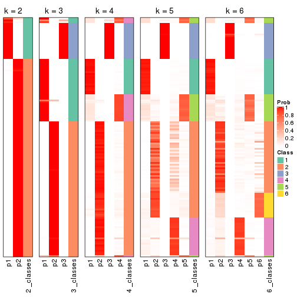
If matrix rows can be associated to genes, consider to use GO_Enrichment(res,
...) to perform function enrichment for the signature genes.
sessionInfo()
#> R version 3.6.0 (2019-04-26)
#> Platform: x86_64-pc-linux-gnu (64-bit)
#> Running under: CentOS Linux 7 (Core)
#>
#> Matrix products: default
#> BLAS: /usr/lib64/libblas.so.3.4.2
#> LAPACK: /usr/lib64/liblapack.so.3.4.2
#>
#> locale:
#> [1] LC_CTYPE=en_GB.UTF-8 LC_NUMERIC=C LC_TIME=en_GB.UTF-8
#> [4] LC_COLLATE=en_GB.UTF-8 LC_MONETARY=en_GB.UTF-8 LC_MESSAGES=en_GB.UTF-8
#> [7] LC_PAPER=en_GB.UTF-8 LC_NAME=C LC_ADDRESS=C
#> [10] LC_TELEPHONE=C LC_MEASUREMENT=en_GB.UTF-8 LC_IDENTIFICATION=C
#>
#> attached base packages:
#> [1] grid parallel stats4 stats graphics grDevices utils datasets methods
#> [10] base
#>
#> other attached packages:
#> [1] genefilter_1.66.0 ComplexHeatmap_2.1.1 markdown_1.1
#> [4] knitr_1.26 cola_1.3.2 SummarizedExperiment_1.14.1
#> [7] DelayedArray_0.10.0 BiocParallel_1.18.1 matrixStats_0.55.0
#> [10] Biobase_2.44.0 GenomicRanges_1.36.1 GenomeInfoDb_1.20.0
#> [13] IRanges_2.18.3 S4Vectors_0.22.1 BiocGenerics_0.30.0
#> [16] GetoptLong_0.1.7
#>
#> loaded via a namespace (and not attached):
#> [1] bitops_1.0-6 bit64_0.9-7 doParallel_1.0.15 RColorBrewer_1.1-2
#> [5] httr_1.4.1 backports_1.1.5 tools_3.6.0 R6_2.4.1
#> [9] DBI_1.0.0 lazyeval_0.2.2 colorspace_1.4-1 withr_2.1.2
#> [13] tidyselect_0.2.5 gridExtra_2.3 bit_1.1-14 compiler_3.6.0
#> [17] xml2_1.2.2 microbenchmark_1.4-7 pkgmaker_0.28 slam_0.1-46
#> [21] scales_1.1.0 NMF_0.23.6 stringr_1.4.0 digest_0.6.23
#> [25] XVector_0.24.0 pkgconfig_2.0.3 bibtex_0.4.2 highr_0.8
#> [29] rlang_0.4.2 GlobalOptions_0.1.1 RSQLite_2.1.2 impute_1.58.0
#> [33] shape_1.4.4 mclust_5.4.5 dendextend_1.12.0 dplyr_0.8.3
#> [37] RCurl_1.95-4.12 magrittr_1.5 GenomeInfoDbData_1.2.1 Matrix_1.2-17
#> [41] Rcpp_1.0.3 munsell_0.5.0 viridis_0.5.1 lifecycle_0.1.0
#> [45] stringi_1.4.3 zlibbioc_1.30.0 plyr_1.8.4 blob_1.2.0
#> [49] crayon_1.3.4 lattice_0.20-38 splines_3.6.0 annotate_1.62.0
#> [53] circlize_0.4.9 zeallot_0.1.0 pillar_1.4.2 rjson_0.2.20
#> [57] rngtools_1.4 reshape2_1.4.3 codetools_0.2-16 XML_3.98-1.20
#> [61] glue_1.3.1 evaluate_0.14 vctrs_0.2.0 png_0.1-7
#> [65] foreach_1.4.7 polyclip_1.10-0 gtable_0.3.0 purrr_0.3.3
#> [69] clue_0.3-57 assertthat_0.2.1 ggplot2_3.2.1 xfun_0.11
#> [73] gridBase_0.4-7 eulerr_6.0.0 xtable_1.8-4 skmeans_0.2-11
#> [77] survival_2.44-1.1 viridisLite_0.3.0 tibble_2.1.3 iterators_1.0.12
#> [81] memoise_1.1.0 AnnotationDbi_1.46.1 registry_0.5-1 GTF_0.0.1
#> [85] cluster_2.1.0 brew_1.0-6